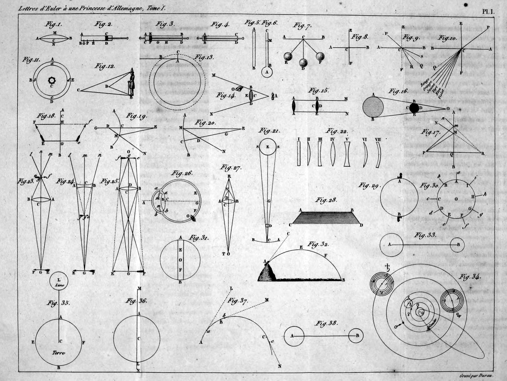
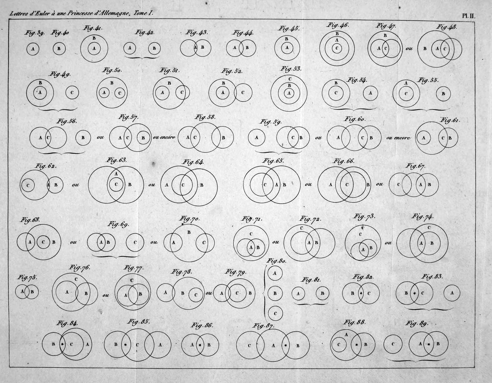
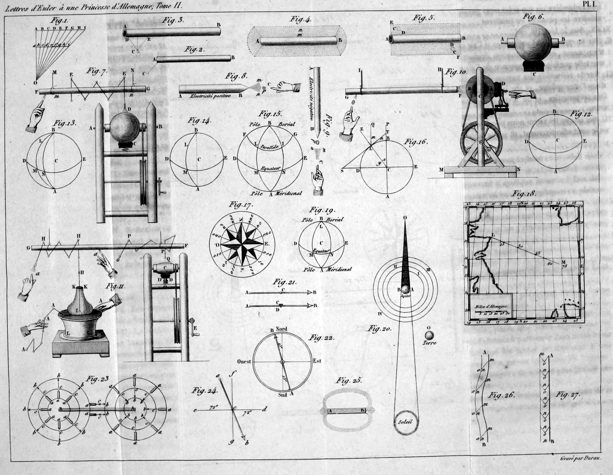
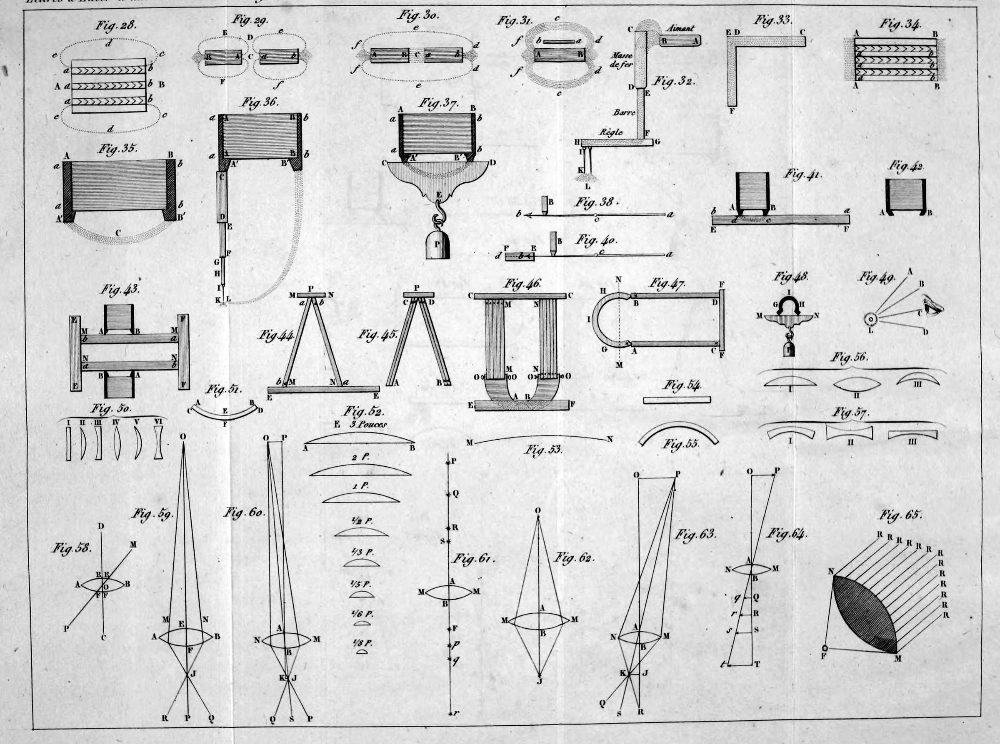
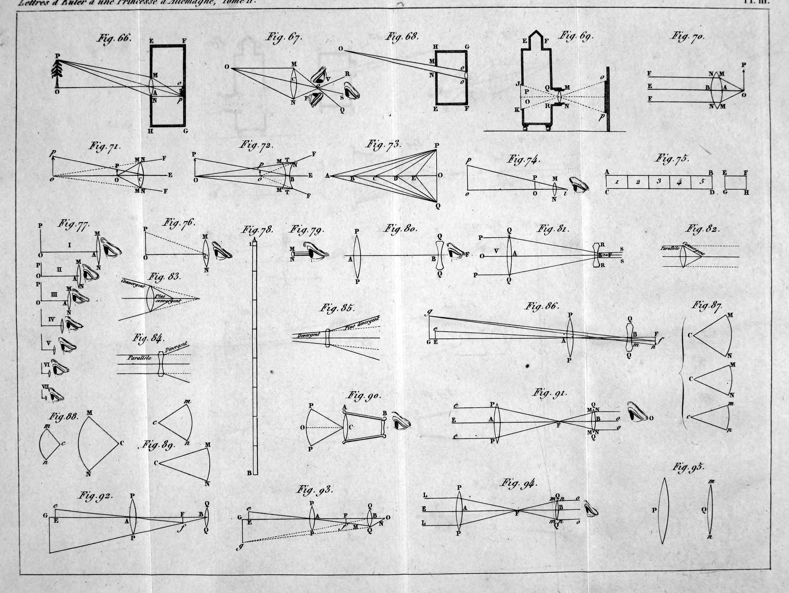
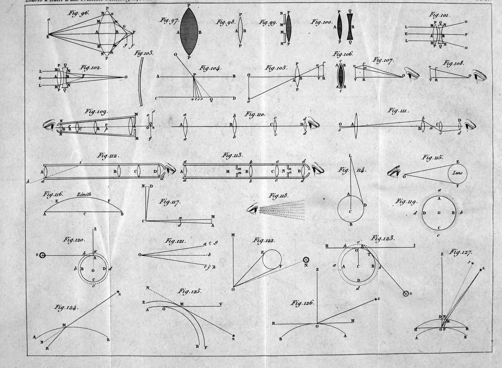

1768 2026
This is an AI modernization of Letters to a German Princess into contemporary English. The original is available from Internet Archive. Also available as an epub.
Leonhard Euler (1707–1783) was the most productive mathematician who has ever lived. Born in Basel, he worked first at the new Academy in St Petersburg and from 1741 at Frederick the Great's Academy in Berlin, where he wrote on everything from the motion of the moon to the flow of water through pipes, the theory of music and the design of lenses. He went blind in one eye in his thirties and kept working through the loss of the other.
In 1760 the Seven Years' War was on, and the family of the Margrave of Brandenburg-Schwedt had left Berlin for the safety of the fortress town of Magdeburg. Euler had been teaching the Margrave's daughter, Friederike Charlotte, who was fifteen. So that her lessons could go on, he wrote to her twice a week, from April 1760 to May 1762: 234 letters, in French, the language of the Prussian court. They begin with how to imagine the size of the world and go on to sound, music, heat, light and color, gravity and the tides, the soul and free will, logic, electricity and lightning, the problem of finding longitude at sea, magnets, and the making of telescopes and microscopes. Published at St Petersburg in 1768 and 1772, they were translated into most European languages and became the most widely read book of popular science of their century.
A few things will seem strange. Euler writes to "Your Highness," and courtesy is part of the texture. His physics fills space with an "ether" whose vibrations are light, as the vibrations of air are sound; he argues this against Newton, who thought light was a stream of particles, and in the nineteenth century physics came round to waves. He attacks the monads of Leibniz and the followers of Christian Wolff, the reigning philosophers in Germany, and he argues as a devout Protestant about prayer, providence and sin. Those letters are his, and they are given as he wrote them. His logic letters (102 to 105) made famous the circle diagrams still taught as "Euler diagrams."
This edition is translated from the French, from Antoine-Augustin Cournot's 1842 Paris reprint. An earlier Paris edition, edited by Condorcet, had cut and reworded the text; Cournot, like an 1812 edition before him, went back to the original. He also divided the letters into three series by subject, which are kept here as the three Parts, while the letters carry Euler's own continuous numbers. Cournot's notes are left out. Euler's measures are kept: his mile is the German mile, about four and a half English miles. The figures are cited by the numbers printed on the six folding plates, which start again from 1 in the second volume, at Letter 115; each plate is shown where it is first needed.
Part One: Physics and the Universe
Part Two: Mind, Logic and Morals
Part Three: Physics in Particular
Berlin, 19 April 1760.
Madam,
The hope of continuing my lessons in geometry for Your Highness seems to have been pushed off once again, which causes me very real sorrow. So I'd like to make up for it in writing, as far as the nature of the subject allows. I'll try it by explaining to Your Highness the right way to think about size, covering both the smallest and the greatest extents we have discovered in the world. First of all, we need to fix on a certain measure that suits our senses, one we have a clear picture of, such as a foot. Once that length is settled and set before our eyes, it can help us understand every other length, large or small. For the large ones we work out how many feet they contain, and for the small ones we work out what part of a foot they make up. Once you have the idea of a foot, you also have the idea of half of it, a quarter of it, a twelfth part of it (which we call an inch), a hundredth part, and a thousandth part, which is so small that it almost escapes the eye.
But we should remember that there are animals no bigger than that, and yet they have limbs, and blood running through them. Apparently they even contain other living insects, which are as small compared with them as they are compared with us. From this we can see that the smallest quantities really do exist in the world, and that they can be divided into parts infinitely smaller still. So, for example, a ten-thousandth part of a foot is too small for us to sense, yet it is bigger than a whole animal, and it would seem very large to that animal if it could think about it. But let's leave these small quantities, where our minds get lost, and move on to larger ones.
Your Highness knows the length of a mile. There are eighteen of them from here to Magdeburg. A mile (a German mile, about 4.6 English miles) is reckoned at 24,000 feet, and miles are used to measure the distance between places on the earth, to spare us numbers that would be too big if we used the foot. So when we know that a mile is 24,000 feet, and we say that Magdeburg is 18 miles from Berlin, we get a clearer idea of it than if we said the distance was 432,000 feet, a number so big it nearly dazzles the understanding.
In the same way we can form a true idea of the size of the whole earth once we know that the distance around it is 5,400 miles. The earth is shaped like a globe, and the diameter of this globe is reckoned at 1,720 miles. That gives us a good idea of the earth's diameter, which we then use to measure the greatest distances we find in the heavens.
Of the heavenly bodies, the moon is the closest to us. Its distance from the earth is only about 30 earth diameters. That comes to 51,600 miles, or 1,238,400,000 feet, but the first way of putting it, 30 diameters of the earth, is the clearest. The sun is about 300 times farther away than the moon, and so its distance of 9,000 earth diameters gives us a more obvious sense of it than if we tried to state it in miles or even in feet.
Your Highness knows that the earth turns around the sun in the space of a year, and that the sun stays at rest. Besides the earth, there are five other bodies like it that also travel around the sun, some at smaller distances, like Mercury and Venus, and some at greater ones, like Mars, Jupiter and Saturn. These are called the planets. All the other stars we see, except the comets, are called fixed stars, and their distance is incomparably greater than the sun's. Their distances from us are surely very unequal, which is why some appear larger than others. But even the nearest one is certainly more than 5,000 times farther away than the sun. So its distance is more than 45,000,000 earth diameters, or 77,400,000,000 miles. Multiply that number by 24,000 and you get this astonishing distance in feet. And that is only the distance of the fixed stars that are closest to us. The farthest ones we can see must be a hundred times more distant still.
Yet people suppose that all these stars taken together make up only a very small part of the whole universe, next to which these terrifying distances are no bigger than a grain of sand compared with the earth. All this immensity is the work of the Almighty, who rules the greatest bodies just as he rules the smallest, and who directs the success of the armies in which we have a stake.
22 April 1760.
I hope Your Highness will welcome a continuation of my lessons, of which I took the liberty of sending a sample by the last post. So I'll now develop the idea of speed, which is a particular kind of quantity, since it can be greater or less.
When something is carried, or passes from one place to another, we say it has a speed. Suppose a courier on horseback and a messenger on foot both travel from Berlin to Magdeburg. We think of both as having a certain speed, but we say the first one's speed is greater than the second's. So we need to look at what makes the difference between these two speeds. It isn't the road, which is the same for the courier and the messenger. The difference plainly lies in the time each one takes to cover the same road. The courier's speed is greater because he takes less time to travel from Berlin to Magdeburg, and the messenger's speed is smaller because he takes more time over the same road.
From this it's clear that to form a right idea of speed, we have to pay attention to two kinds of quantity at once: the road that is covered and the time that passes. So a body that covers twice the distance in the same time has twice the speed, and if it covers three times the distance in the same time, its speed is reckoned three times as great, and so on. We can therefore know the speed of a body when we know the distance it covers in a certain time.
Here is how I found the speed of my own walking when I go to Lytzow (a village near Berlin). I observed that I take 120 steps in a minute. One of my steps is two and a half feet, so in a minute I cover a distance of 300 feet. In an hour I cover sixty times that, or 18,000 feet. That is not yet a whole mile, and since a mile contains 24,000 feet, it would take me an hour and 20 minutes to walk one. So if I wanted to walk from here to Magdeburg, I would need exactly 24 hours. That gives Your Highness a clear idea of the speed at which I'm able to walk, and from it we can easily understand what a greater or smaller speed is. If a courier went from here to Magdeburg in 12 hours, his speed would be twice mine, and if he went in eight hours, his speed would be three times mine.
We notice very great differences among speeds in this world. A tortoise is an example of a very small speed. If it covers only one foot in a minute, its speed is 300 times smaller than mine, since I cover 300 feet in a minute. But we also know of speeds much greater than mine. The speed of the wind varies a great deal. A moderate wind goes 10 feet in a second, or 600 feet in a minute, so it moves twice as fast as I do. A wind that covers 20 feet in a second, or 1,200 in a minute, is already fairly strong. And a wind that goes 50 feet in a second is extremely strong, although its speed is only 10 times mine, and it would still need 2 hours and 24 minutes to blow from here to Magdeburg.
Next comes the speed of sound, which goes 1,000 feet in a second, and so 60,000 feet in a minute. That is 200 times the speed at which I walk. If a cannon were fired at Magdeburg and the noise could carry all the way to Berlin, it would arrive only after 7 minutes.
A cannonball moves at about the same speed. But with the largest charge, it's reckoned that it could cover 2,000 feet in a second, or 120,000 in a minute. This speed strikes us as prodigious, even though it is only 400 times the speed at which I walk to Lytzow. It is also the greatest speed we see here below on the earth.
But there are much greater speeds in the heavens, even though their motions look quite calm to us. Your Highness knows that the earth turns on its axis in the space of 24 hours. So at the equator this motion covers 5,400 miles in 24 hours, while I could cover only 18 miles in that time. This speed is therefore 300 times mine, and so it is smaller than the greatest speed of a cannonball. Now the earth also moves around the sun in the space of a year, and at that speed it covers 128,260 miles in 24 hours. That speed is 18 times faster than a cannonball's.
The greatest speed we know of is without doubt that of light, which travels 2,000,000 miles every minute, and exceeds the speed of a cannonball 400,000 times.
26 April 1760.
The explanations I've taken the liberty of giving Your Highness about the different degrees of speed lead me to think about sound, or noise of any kind. I've noticed that some time always passes before it reaches our ears, and that this time is longer the farther away the place is where the sound is made. It takes a full second for a sound to travel a distance of 1,000 feet.
When a cannon is fired, people who are far away hear the noise only some time after they've seen the flash of the powder. Those a mile away, or 24,000 feet, hear it 24 seconds after seeing the fire. Your Highness will also have often noticed that the noise of thunder reaches our ears only some time after the lightning. From that we can judge how far away the place is where the thunder is produced. If we observe, for example, that 20 seconds pass between the lightning and the thunder, we can conclude that the thunder is 20 thousand feet away from us, counting a thousand feet of distance for each second of time.
This fine property leads us to a question. What does sound consist of? Is its nature like that of a smell? Is sound spread from a sounding body in the same way that a flower spreads its scent, filling the air with fine vapors that are able to stir our sense of smell? People may have thought so in antiquity, but today we are quite convinced that when a bell is struck, nothing at all comes out of it to be carried to our ears. In other words, a body that sounds loses nothing of its substance.

We only have to look at a bell when it is struck, or at a string when it is plucked, to see that the body is then in a trembling or shaking motion that agitates all its parts. And any body that can be shaken like this in its parts also produces a sound. In a string that isn't too thin, you can see these shakings, or vibrations. The stretched string ACB (Figure 1) moves back and forth between the position AMB and the position ANB, which I've drawn far more visibly than they really occur.
Next we have to notice that these vibrations set the neighboring air into a similar vibration, which passes step by step to the more distant parts of the air until it reaches the organ of our ear and strikes it. So it is the air, receiving such vibrations, that carries the sound to our ears. From this it's clear that hearing a sound is nothing other than our ears being struck by the shaking in the air, which is passed on to our organ of hearing. When we hear the sound of a plucked string, our ears receive as many taps as the string made vibrations in the same time. So if the string makes 100 vibrations in a second, the ear also receives 100 taps in a second, and the perception of those taps is what we call a sound.
When these taps follow one another evenly, that is, when the gaps between them are all equal, the sound is regular, the kind that music requires. But when the taps come unevenly, with gaps of unequal length, the result is an irregular noise, quite unsuited to music.
Let me look a little more carefully at musical sounds, whose vibrations come at even intervals. The first thing I notice is that when the vibrations, and so the taps that strike the ear, are stronger or weaker, the only difference in the sound is that it becomes louder or softer. This is the difference musicians mark with the words forte and piano. A much more essential difference arises when the vibrations are faster or slower, that is, when more or fewer of them arrive in a second. So if one string completes 100 vibrations in a second and another string completes 200 vibrations in a second, their sounds will be essentially different from each other. The first will be lower, or deeper, and the second higher, or shriller.
That is the true difference between low and high sounds, and all of music turns on it. Music teaches us to mix sounds that differ from each other in being low or high, but to unite them so well that a pleasing harmony results. Low sounds have fewer vibrations in a given time than high sounds, and each note on the harpsichord contains a certain fixed number of vibrations that are completed in a second. So the note marked with the letter C makes about 100 vibrations in a second, and the note marked c‴, four octaves higher, makes 1,600 vibrations in a second. A string that trembles 100 times in a second will give precisely the note C, and if it trembled only 50 times, the sound would be lower, or deeper, still.
As far as our ears are concerned, there are limits beyond which sounds can no longer be perceived. It seems we can't feel a sound that makes fewer than 20 vibrations in a second, because it is too low, nor one that makes more than 4,000 vibrations in a second, because it is too high.
29 April 1760.
Your Highness has just interrupted the thread of my thoughts in a most gracious way . . .
So it is with a heart full of thanks that I return to my subject. I've noticed that when we hear a single musical sound, our ear is struck by a series of taps at equal distances from one another. How frequent they are, that is, how many of them come in a certain time, produces the difference between low and high sounds. The fewer vibrations or taps there are in a certain time, such as a second, the lower the sound is judged to be. The more there are, the higher the sound is. So the sensation of a single musical sound can be compared with a series of points at equal distances from one another, like a row of evenly spaced dots. If the gaps between these points are bigger or smaller, the sound they stand for will be lower or higher.
There is also no doubt that the sensation of a single sound is similar, or analogous, to seeing such a series of evenly spaced points. This way we can show to the eyes the very thing the ears feel when they hear a sound. If the distances between the points were not equal, and the points were scattered in confusion, that would be a picture of a confused noise, the opposite of harmony.
With that settled, let's consider what effect two sounds sounded together must have on the ear. First, it's clear that if the two sounds are equal, that is, if each contains the same number of vibrations for the same time, the ear will be affected just as it is by a single sound. In music we say these two sounds are in unison. This is the simplest chord, a chord being what we call the mixture of two or more sounds heard at the same time.
But if the two sounds differ in being low or high, we will perceive a mixture of two series of taps. In each series the gaps are equal to one another, but they are larger in one series than in the other, the larger ones belonging to the lower sound and the smaller ones to the higher. Such a mixture, or chord of two sounds, can be shown to the eyes by two series of points set out on two lines, ab and cd. To get a clear idea of these two series, we have to notice the order that runs through them, or, what comes to the same thing, the relationship between the gaps in one line and the gaps in the other.
1 2 3 4 5 6 7 8 9 10 11 a • • • • • • • • • • • b c • • • • • • • • • • • • d 1 2 3 4 5 6 7 8 9 10 11 12
Suppose we number the points on each line and put number 1 under number 1. Then the number 1s are no longer exactly one under the other, and the number 3s are even less so. But we can see that in the top line number 11 lies exactly above number 12 in the bottom line. From that we learn that the higher sound completes 12 vibrations while the other makes only 11. Without the numbers written in, though, the eyes would hardly discover this order at all. The same goes for the ears, which would find it just as hard to discover the order between the two sounds I've represented by these two rows of points.
• • • • • • • • • • • • • •
But in this other figure you can see at first glance that the top line contains twice as many points as the bottom one, or that the gaps in the bottom line are twice as big as in the top one. This is without doubt the simplest case after the unison, where the order in these two series of points can be discovered easily. It's the same with the two sounds these two lines of points stand for. One of them completes exactly twice as many vibrations as the other, and the ear will easily notice this fine relationship between the two sounds. In the previous case, by contrast, the judgment is very difficult, if not impossible.
Now, when the ear easily discovers a relationship between two sounds, their chord is called a consonance. When that relationship is very hard to discover, or even impossible, the chord is called a dissonance. So the simplest consonance is the one in which the high sound completes exactly twice as many vibrations as the low one. In music this consonance is called an octave, and everyone knows its power. Two sounds that differ by exactly one octave blend so well and are so much alike that musicians mark them with the same letters. We see this in churches too, where the women sing an octave higher than the men and still imagine they are singing the same notes. Your Highness can easily confirm this on a harpsichord, and you will be pleased to notice the lovely agreement among all the sounds that differ by an octave, while any other two sounds don't sound so good together.
3 May 1760.
Your Highness will already have noticed that the chord musicians call an octave strikes the ear so distinctly that the slightest error in it is easy to detect. So once we've sung the note marked F, we can easily match the note f, an octave higher, by the ear's judgment alone. If the string for the note f is even a little too high or too low, the ear is immediately jarred, and nothing is easier than bringing it perfectly into tune. In the same way, we see that everyone moving from one note to another an octave above or below, when singing, does it easily.
But if we have to go from the note F to the note d, for example, an average singer will easily go wrong unless an instrument helps. Once the note F is fixed, it's almost impossible to match the note d to it all at once. So what is the reason for this difference, that it's so easy to match the note f to the note F, and so hard to match the note d to it?
The reason is quite clear from what I had the honor of explaining to Your Highness in my last remarks. The note F and the note f make an octave, that is, the number of vibrations of the note f is exactly double that of the note F. To perceive this chord, all we have to do is sense the ratio of one to two. It jumps out at the eye in the picture of points I used earlier, and it affects the ears in a similar way.
Your Highness will readily understand that the simpler a ratio is, that is, the smaller the numbers that express it, the more distinctly it presents itself to the understanding and the more pleasure it arouses there. Architects carefully follow this same rule, using in their buildings the simplest proportions that other circumstances allow. In doors and windows they usually make the height twice the width, and everywhere they try to use proportions that can be expressed in small numbers, because this pleases the understanding.
It is the same in music. Chords please only to the extent that the mind discovers the ratio between the sounds, and this ratio is noticed more easily the smaller the numbers that express it. After the ratio of equality, which marks two equal sounds, or sounds in unison, the ratio of two to one is without doubt the simplest, and it is the one that gives the chord of an octave. It's evident from this that this chord has many advantages over the other consonances.
Now that we've explained the chord, or interval between two sounds, that musicians call an octave, let's consider several notes at once, such as F, f, f′, f″, f‴, each an octave higher than the one before. Since the interval from F to f, from f to f′, from f′ to f″, and from f″ to f‴ is an octave, the interval from F to f′ will be a double octave, from F to f″ a triple octave, and from F to f‴ a quadruple octave.
Now while the note F makes one vibration, the note f makes two, the note f′ four, the note f″ eight, and the note f‴ sixteen. So we see that just as an octave answers to 1 to 2, a double octave answers to 1 to 4, a triple octave to 1 to 8, and a quadruple octave to 1 to 16.
But the ratio of 1 to 4 is no longer as simple as 1 to 2, since it doesn't jump out at the eye so easily. So a double octave isn't perceived as easily as a single octave. A triple octave is even harder to perceive, and a quadruple octave harder still. So when we're tuning a harpsichord and have fixed the note F, it isn't as easy to tune the double octave f′ to it as the single octave f. It's even harder to tune the triple octave f″ and the quadruple octave f‴ without climbing to them through the octaves in between.
These chords are also included in the term consonance. And since the unison is the simplest, we can arrange them by these degrees:
Degree I: the unison, given by the ratio of 1 to 1. Degree II: the octave, in the ratio of 1 to 2. Degree III: the double octave, in the ratio of 1 to 4. Degree IV: the triple octave, in the ratio of 1 to 8. Degree V: the quadruple octave, in the ratio of 1 to 16. Degree VI: the quintuple octave, in the ratio of 1 to 32.
And so on, as long as the sounds can still be sensed. These are the chords, or consonances, that we've been led to so far. We know nothing yet of the other kinds of consonances, and still less of the dissonances that are used in music. But before I go on to explain these, I must add a remark about the name "octave," which is given to the interval between two sounds when one makes twice as many vibrations as the other. Your Highness can see the reason on the main keys of the harpsichord, which climb by 7 steps before reaching the octave, as in C, D, E, F, G, A, H, c, so that the key c is the eighth, counting C as the first. But this way of dividing things depends on a certain kind of music, and the reason for it can only be explained later.
3 May 1760.
We can say that all the ratios we've looked at so far, 1 to 2, 1 to 4, 1 to 8, 1 to 16, which contain the nature of a single, double, triple or quadruple octave, get their origin from the number 2 alone, since 4 is two times two, 8 is two times four, and 16 is two times eight. So if we admit only the number 2 into music, we reach only the chords or consonances that musicians call the octave, whether single, double or triple. And since doubling the number 2 gives only 4, 8, 16, 32, 64, each one always twice the one before, all the other numbers stay unknown to us. Now, suppose an instrument contained only octaves, like the notes marked C, c, c′, c″, c‴, and all the others were shut out. It could never produce pleasing music, because it would be far too simple.
So besides the number 2, let's bring in the number 3, and see what chords or consonances result. First, the ratio of 1 to 3 gives us two sounds, one of which makes three times as many vibrations as the other in the same time. After the ratio of 1 to 2, this is without doubt the easiest to understand, so it will supply very beautiful consonances, but of a quite different nature from the octaves. Let's suppose, then, that in the ratio of 1 to 3, the number 1 answers to the note C. Since the note c is expressed by the number 2, the number 3 gives us a note higher than c but lower than c′, which answers to the number 4. Now the note expressed by 3 is the one musicians mark with the letter g, and they call the interval from c to g a fifth, since on the keys of a harpsichord g is the fifth counting from c, as in c, d, e, f, g.
So if the number 1 gives the note C, the number 2 gives c, the number 3 gives g, and the number 4 gives the note c′. And since the note g′ is the octave of g, its number will be 2 times 3, which is 6, and going up another octave, the note g″ will be twice as large again, which is 12. So all the notes that the two numbers 2 and 3 lead us to, when we mark the note C by 1, are these:
C: 1 c: 2 g: 3 c′: 4 g′: 6 c″: 8 g″: 12 c‴: 16
From this it's clear that the ratio of 1 to 3 expresses an interval made up of an octave and a fifth, and that this interval, because of the simplicity of its numbers, must be the most noticeable to the ear after the octave. So musicians give the fifth second place among the consonances, and the ear is so pleasantly affected by it that it's quite easy to tune a fifth. On violins, for example, the four strings go up by fifths, the lowest being G, the second d, the third a, and the fourth e, and every player easily gets them in tune by ear alone. Still, a fifth isn't tuned as easily as an octave. But the fifth above the octave, as from C to g, is expressed by the ratio of 1 to 3, and it is more noticeable than a simple fifth, as from C to G, or from c to g, which is expressed by the ratio of 2 to 3. Experience shows the same thing: once we've fixed the note C, it's easier to tune the higher fifth g to it than the simple fifth G.
If the unit had marked the note F for us, the number 3 would mark the note c′, so that F, f, c′, f′, c″, f″, c‴ would be marked by 1, 2, 3, 4, 6, 8, 12. From f to c′ the interval is a fifth, contained in the ratio of 2 to 3. From f′ to c″ and from f″ to c‴ there is also a fifth, since the ratios of 4 to 6 and of 8 to 12 are the same as that of 2 to 3. After all, if two yards of cloth cost 3 crowns, then 4 yards will cost 6, and 8 yards will cost 12 crowns. From here we come to know another interval, contained in the ratio of 3 to 4. It runs from c′ to f′, and so also from c″ to f″, or from C to F, and musicians call it a fourth. Since it is expressed by larger numbers, it is far from being as pleasing as the fifth, and still less so than the octave.
Since the number 3 has given us these new chords or consonances, the fifth and the fourth, let's take three threes before we use any other number, which gives the number 9. It will give a note higher than the note 3, or c′, by an octave and a fifth, where c″ is the octave of c′ and g″ is the fifth of c″. So the number 9 gives the note g″, and c″, f″, g″, c‴ will be marked by 6, 8, 9, 12. Or, if we take these notes in the lower octaves, the ratios staying the same, we get:
C: 6 F: 8 G: 9 c: 12 f: 16 g: 18 c′: 24 f′: 32 g′: 36 c″: 48 f″: 64 g″: 72 c‴: 96
From this we come to know some new intervals. The first is from F to G, contained in the ratio of 8 to 9, which musicians call a second, and also a whole tone. The second is from G to f, contained in the ratio of 9 to 16. It is called a seventh, and it is smaller than an octave by a second, or whole tone. Since these ratios are already expressed by considerably large numbers, the intervals are no longer counted among the consonances, and musicians call them dissonances.
If we take three nines, to get 27, this number will mark a note a whole tone higher than c′, and exactly a fifth higher than g. So it will be the note d′, and its octave d″ will answer to 2 times 27, or 54, and the double octave d‴ to 2 times 54, or 108. Let's set these notes out several octaves lower, like this:
C: 24 D: 27 F: 32 G: 36 c: 48 d: 54 f: 64 g: 72 c′: 96 d′: 108 f′: 128 g′: 144 c″: 192 d″: 216 f″: 256 g″: 288 c‴: 384
Here we discover that the interval from D to F is contained in the ratio of 27 to 32, and the interval from F to d in the ratio of 32 to 54, or, taking half of each number, 16 to 27. The first is called a minor third, and the other a major sixth. We could go on and multiply by three again, but music doesn't go that far. It stops at the number 27, which comes from 3 multiplied by itself for the third time. The other notes of music that we still lack are introduced by the number 5, which I will explain in the next letter.
3 May 1760.
The subject I'm taking the liberty of discussing with Your Highness is so dry that I have reason to fear it will soon bore you. So as not to take up too much of your time, I'm sending three letters at once today, to finish this almost off-putting subject in one stroke. My intention was to set before Your Highness the true origin of the sounds used in music, which is almost completely unknown to musicians. It wasn't theory that led them to all the notes. They owe them instead to a hidden force of true harmony, which has worked so effectively on their ears that the ears were, so to speak, forced to accept the notes now in use, although musicians haven't yet settled on exactly how to fix them. Now, the principles of harmony come down in the end to numbers, as I've had the honor of showing. I noticed that the number 2 supplies only octaves, so that, having fixed the note F, for example, we were led to the notes f, f′, f″, f‴. Next, the number 3 supplies the notes C, c, c′, c″, c‴, which differ from those by a fifth. Repeating that same number 3 once more gives the fifths of these first ones, which are G, g, g′, g″, g‴. And a third repetition of the number 3 adds the notes D, d, d′, d″. Now, since the principles of harmony are tied to simplicity, they don't seem to allow us to push the repetition of the number 3 any further. So up to here we have only the following notes for each octave:
F: 16 G: 18 c: 24 d: 27 f: 32
These certainly don't allow for very varied music. So let's bring in the number 5 too, and see which note makes 5 vibrations while the note F makes only one. Now, the note f makes 2 in the same time, the note f′ makes 4, and the note c″ makes 6. So the note in question lies between f′ and c″, and it is the one musicians mark with the letter a. Its chord with the note f′ is called a major third, and it makes a very pleasing consonance, since it is contained in the ratio of these rather small numbers, 4 to 5. What's more, this note a makes a chord with the note c″ in the ratio of 5 to 6, which is almost as pleasing as the other one. It is also called a minor third, like the one we spoke of before, contained between the numbers 27 and 32, since the difference is almost imperceptible to the ear. When this same number 5 is applied to the other notes G, c, d, it gives us in the same way their major thirds, taken in the second octave above. That is, it gives the notes H, e and F♯, and when these are carried down into the first octave, we now have these notes with their numbers:
F: 128 F♯: 135 G: 144 a: 160 H: 180 c: 192 d: 216 e: 240 f: 256
Take away the note F♯, and you have the main keys of the harpsichord. According to the ancients, these make up what is called the diatonic genus, which results from the number 2, the number 3 repeated three times, and the number 5. With just these notes, we're able to compose very beautiful and varied melodies, whose beauty rests entirely on the simplicity of the numbers that supplied these notes. Finally, when the number 5 is applied for a second time, it will supply the thirds of four new notes that we have just found, A, E, H and F♯. That gives us the notes C♯, G♯, D♯ and B, so that the octave is now filled with 12 notes, precisely the same ones that are accepted in music. All of these notes take their origin from the three numbers 2, 3 and 5. The number 2 is repeated as many times as the octaves require, but 3 is repeated only three times, and 5 only twice. So here are all the notes of the first octave, expressed by the following numbers, in which you can see how each one is built from 2, 3 and 5:
C: 2.2.2.2.2.2.2.3 = 384 C♯: 2.2.2.2.5.5 = 400 D: 2.2.2.2.3.3.3 = 432 D♯: 2.3.3.5.5 = 450 E: 2.2.2.2.2.3.5 = 480 F: 2.2.2.2.2.2.2.2.2 = 512 F♯: 2.2.3.3.3.5 = 540 G: 2.2.2.2.2.2.3.3 = 576 G♯: 2.2.2.3.5.5 = 600 A: 2.2.2.2.2.2.2.5 = 640 B: 3.3.3.5.5 = 675 H: 2.2.2.2.3.3.5 = 720 c: 2.2.2.2.2.2.2.2.3 = 768
While the note C makes 384 vibrations, the note C♯ makes 400 in the same time, and the others make as many as the numbers attached to them show. So the note c makes 768 at the same time, which is precisely double 384. For the octaves after that, we only have to multiply these numbers by 2, or by 4, or by 8. So the note c′ makes 2 times 768, or 1,536 vibrations, the note c″ makes 2 times 1,536, or 3,072, and the note c‴ makes 2 times 3,072, or 6,144. To understand how the notes are formed from these three numbers 2, 3 and 5, we have to notice that the dots placed between the numbers mean multiplication. So for the note F♯, the expression 2.2.3.3.3.5 means 2 times 2 times 3 times 3 times 3 times 5. Now, 2 times 2 is 4, and 4 times 3 is 12, and 12 times 3 is 36, and 36 times 3 is 108, and 108 times 5 is 540. From this we see that the differences between these notes are not equal to one another, and that some are larger and some smaller. That is also what true harmony requires. But since the inequality isn't considerable, people commonly treat all these differences as equal, and they call the step from each note to the next a semitone, saying that the octave is divided in this way into 12 semitones. Many musicians actually make them equal, although this goes against the principles of harmony. For that way no fifth and no third is true, and the effect is the same as if these notes weren't properly tuned. They also agree that the exactness of these chords has to be given up in order to gain the advantage of all the semitones being equal, so that moving a piece from one key to any other changes nothing in the melodies. Yet they admit themselves that the same piece, played in the key of C or half a step higher in C♯, changes its character considerably. It's clear from this that the semitones are not really all equal, although musicians work to make them so, because true harmony stands against carrying out this plan, which is contrary to it. So that is the true origin of the notes in use today, which are drawn from the numbers 2, 3 and 5. If we wanted to bring in the number 7 as well, the number of notes in an octave would grow larger, and all of music would be raised to a higher degree. But here mathematics hands harmony over to music.
6 May 1760.
Why does beautiful music arouse a feeling of pleasure in us? It's a question as important as it is curious, and scholars are sharply divided over it. Some claim it is pure whim, and that the pleasure music gives rests on no reason at all, since the same music can be enjoyed by some people and displease others. But far from settling the question, this only makes it more complicated. For we want to know the reason why the same piece of music can have such different effects, since we have to agree that nothing happens without a reason. Others say that the pleasure we feel in hearing beautiful music consists in perceiving the order that reigns in it. This view seems fairly well founded at first, and it deserves a closer look.
Music contains two kinds of things in which some order can be found. One concerns the difference of the notes, insofar as they are high or low, shrill or deep. Your Highness will remember that this difference lies in the number of vibrations each note makes in the same time. This difference among the speeds of the vibrations of all the notes is what is properly called harmony. So when we hear music and understand the relationships, or ratios, that the vibrations of all the notes have with one another, that is what makes harmony. Thus two notes that differ by an octave excite the sense of the ratio of 1 to 2, a fifth the ratio of 2 to 3, and a major third the ratio of 4 to 5. We understand the order in some harmony when we know all the ratios that rule among the notes of which the harmony is made, and it is the judgment of the ears that leads us to this knowledge. Since this judgment is finer in some people and coarser in others, it's clear why the same harmony is perceived by one person and not at all by another, especially when the ratios among the notes are expressed by rather large numbers.
But besides harmony, music contains another thing capable of order, which is rhythm. It gives each note a certain duration, and perceiving rhythm consists in knowing the durations of all the notes and the ratios that arise from them, as when one note lasts twice, three times or four times as long as another. The drum and the kettledrum give us a music in which only rhythm is present, since all the notes are equal to one another, and there is no harmony there. Likewise there is a music in which only harmony is present, with rhythm left out. That kind of music is the chorale, where all the notes have the same duration. Perfect music contains both harmony and rhythm. Now, someone who hears a piece of music and understands, by the judgment of his ears, all the ratios on which both harmony and rhythm are founded, certainly has the most perfect knowledge of that music that is possible. Someone else, who perceives these ratios only in part or not at all, understands nothing of it, or has only an imperfect knowledge of it.
But the pleasure our question is about is quite different from this knowledge I've just described, although we can boldly maintain that music can't produce pleasure unless we have some knowledge of it. For merely knowing all the ratios in a piece of music, in its harmony as well as its rhythm, is not enough to arouse the feeling of pleasure. Something more is needed, which no one has yet worked out. To be convinced that perceiving all the ratios in a piece of music isn't enough, we only have to consider a very simple music that moves only by octaves, where perceiving the ratios is certainly easiest. Yet this music is far from giving pleasure, even though we have the most perfect knowledge of it. So people say that pleasure requires a knowledge that isn't too easy, but takes some effort. This knowledge must, so to speak, cost us something. But in my opinion even this is not enough. A dissonance whose ratio consists of larger numbers is harder to understand, and yet a series of dissonances put down without choice or purpose will not please. So the composer must have followed, in the composition, a certain plan or design, which he carried out through real and perceptible ratios. Then, when a connoisseur hears this piece, and beyond the ratios also understands the plan, the very design the composer had in view, he will feel that satisfaction which is the pleasure that beautiful music brings to intelligent ears.
This pleasure comes, then, from guessing, so to speak, the aims and feelings of the composer. When we judge that he carried them out successfully, our mind is filled with a pleasant satisfaction. It is about the same satisfaction we feel when we watch a fine pantomime, where we can guess from the gestures and actions the feelings and speeches being represented, and where a fine design is carried out besides. The riddle of the Chimney Sweep, which pleased Your Highness so much, gives me a good example too. As soon as we guess its meaning and recognize that it is perfectly expressed in the statement of the riddle, we feel great pleasure, whereas flat and badly aimed riddles cause none. These, in my opinion, are the true principles on which all judgments about the beauty of pieces of music are founded. But this is only the opinion of a man who understands nothing at all about music, and who should therefore be ashamed of having dared to talk to Your Highness on the subject.
10 May 1760.
The explanation of sound that I had the honor to give Your Highness leads me to look more closely at the air. The air can be set into a vibrating motion like the one that shakes sounding bodies such as strings and bells, and it passes that shaking on to our ears. So we ask: what is air? At first we don't notice that it is matter at all. The space around us, as long as we see no solid bodies in it, seems to contain no matter, since we feel nothing there, and we can walk and move our limbs through it without meeting the slightest obstacle. But we only have to wave a hand very quickly to feel some resistance, and we'll even notice a wind caused by such a rapid motion. Wind, after all, is nothing but air set in motion, and since wind is capable of producing such surprising effects, who could doubt that air is matter, and therefore also a body? For body and matter mean the same thing.
We divide bodies into two kinds, solids and fluids, and it's evident that air belongs in the class of fluids. It has several properties in common with water, but it is much more subtle and fine. Experiments have shown that air is about 800 times more subtle and thin than water. Put another way, if air became 800 times thicker than it is now, it would have the same consistency as water. Now, a chief property of air, which sets it apart from the other fluids, is that it can be compressed, that is, reduced into a smaller space. Here is the experiment that proves it. We take a tube of metal or glass ABCD (Figure 2), tightly closed at the end AB and open at the other, where we fit a piston that exactly fills the hollow of the tube. Then we push this piston inward, and when it has reached the middle, E, the air that at first filled the hollow ABCD will be reduced to half, and so it will be twice as dense. If we push the piston still farther, to the middle point F between B and E, the air will be reduced to a space four times smaller. And if we kept pushing the piston to G, so that BG is half of BF, or the eighth part of the whole length BD, the same air that was at first spread through the whole hollow of the tube would then be squeezed into a space eight times smaller. If we went on in this way until we had reduced it to a space 800 times smaller, we would have air 800 times denser or thicker than ordinary air. It would then be as dense and thick as water, which we're able to prove by other experiments.
So we recognize that air is a fluid matter that can be compressed, which means the same as reducing it into a smaller space, and in this respect air is a matter altogether different from water. For if we filled the tube ABCD with water and put in the piston, it would be impossible to make it go in any farther. Whatever force we used, we would get absolutely nowhere, and we would burst the tube sooner than squeeze the water into a space even slightly smaller. Here, then, is an essential difference between air and water. Water can't be compressed at all, whereas air can be compressed as much as we like.
Now, the more we compress air, the denser or thicker it becomes. So air that has filled a certain space, when it is reduced or compressed into a space twice as small, becomes twice as dense. When it is compressed into a space 10 times smaller, it becomes 10 times denser, and so on. I've already remarked that if it became 800 times denser, it would have the same density as water and would be just as heavy, since weight grows in the same ratio as density. Gold is the heaviest body we know, and so also the densest. It has been found to be 19 times heavier than water, so a mass of gold in the form of a cube whose length, width and height were each one foot would weigh 19 times more than a similar mass of water. Now, that mass of water weighs 70 pounds, so the mass of gold would weigh 19 times 70, that is, 1,330 pounds. So if we could compress air until it was reduced to a space 19 times 800, that is 15,200 times smaller, it would become as dense and heavy as gold.
But we're very far from being able to push the compression of air that far. At first we can move the piston forward without trouble, but the farther it goes, the harder it is to push it any farther. Before we could manage to reduce the air to a space 10 times smaller, we would need so much force to push the piston on that the tube would burst, unless it were very strong. Not only would it take that much force to push the piston farther, it would take just as much to hold it in place, and as soon as we let go, the compressed air would push it back. The more the air is compressed, the harder it strives to spread out and return to its natural state. This is what is called the spring, or elasticity, of the air, which I plan to discuss with Your Highness by the next post.
14 May 1760.
Your Highness has just seen that air is a fluid substance about 800 times finer than water. If water could be spread out into a space that many times larger, and so became that many times thinner, it would be a lot like the air we breathe. But air has a property that water doesn't have at all: it lets itself be squeezed into a smaller space, where it becomes more condensed, as I had the honor of showing on the last post. Now we find another property in air that is just as remarkable. It can be spread out into a larger space, and that makes it thinner still. This operation is called the rarefaction of air, by which air becomes rarer, or more rarefied.
All we have to do is take a tube ABCD (Figure 3), as before, with a small hole O in the bottom AC. That way, when we push the piston in as far as F, the air can escape through the hole and won't get condensed. The air filling the cavity ACEF is then in its natural state, and at that point we stop up the hole O tightly. Next we draw the piston back, and the air spreads out gradually into a larger space. When the piston has been drawn back to G, the space CG is double the space CF, so the same air that was contained in the space ACEF now fills a space twice as large. It is therefore twice as thin, or twice as rare. When we draw the piston back to H, so that the space CH is 4 times larger than CF, the air becomes 4 times rarer than it was at the beginning, since it is now spread through a space 4 times larger. And even if we drew the piston back so far that the space became 1,000 times larger, the air would still spread evenly through that whole space and become 1,000 times rarer everywhere.
This is where air differs so essentially from water. If the cavity ACEF were filled with water, it would do no good to draw back the piston: the water would still take up the same space as at the beginning, and the rest would stay empty.
From this we learn that air is endowed with an inner force to spread out more and more. It exerts this force not only when it is condensed but also when it is rarefied. Whatever state of condensation or rarefaction the air is in, it strains to extend into a larger space, and it actually does spread out as soon as it meets no obstacle. This force to spread out is what we call the spring, or elasticity, of the air. By experiments like the ones I've just described, it has been found that this force is proportional to the density. That is, the more condensed the air is, the harder it strains to extend, and the more rarefied it is, the less it strains.
Someone might ask me why the air in my room doesn't escape through the door, given that it has a force to spread into a larger space. Your Highness will no doubt answer that it would do so inevitably if the air outside didn't strain just as hard to spread. But since the efforts with which the air of the room would like to go out and the air outside would like to come in are equal, they cancel each other, and both airs stay at rest. Now suppose the outside air had, by some accident, acquired a greater density and so also a greater elasticity. Some of it would enter the room, where, being compressed, it would acquire a greater elasticity too. This would continue until the elasticity of the air inside became equal to that of the air outside. In the same way, if the air of the room suddenly became denser, with an elasticity greater than the outside air's, then the room's air would go out, and as it lost its density it would lose as much of its elasticity, until it reached the same degree as the air outside. Then the motion would stop, and the air of the room would be in balance with the air outside.
So in the open air, too, the air is calm only when it has the same degree of elasticity as the air in the surrounding regions. As soon as the air of one region becomes more or less elastic than that of its neighborhood, the balance can no longer hold. Where the elasticity is greater, the air spreads out and slips into the places where it is smaller, and it is from such a motion of the air that wind results. That is also why the elasticity of the air in the same place is sometimes greater and sometimes smaller. This variation is shown by an instrument called a barometer, whose description deserves a separate explanation.
For now I'll confine myself to this quality of air, that it is condensed and rarefied. I'll only remark that the more condensed it is, the more force it has to expand, that is, the greater its elasticity becomes, and on the contrary, the more it is rarefied, the more elasticity it loses. Natural philosophers have invented a machine by which air can be both condensed and rarefied, called the air pump. It is used for many altogether surprising experiments, most of which will already be known to Your Highness. I'll reserve myself to speak of only a few of them, as far as they are needed to clarify and explain the nature and properties of air. Air contributes chiefly to our survival, and even to the production of everything we need from the earth, so it well deserves to have a right idea formed of it.
17 May 1760.
I have had the honor of showing Your Highness that air is a fluid substance with this altogether singular property, that it lets itself be compressed into a smaller space and expands into a larger one once the obstacles are removed. So air can be both condensed and rarefied. This property is included in the terms "spring" or "elasticity" that we give to air, because it is like the property of a spring, which lets itself be squeezed together and then springs open again once the obstacles are taken away.
But besides this, air has another property that it shares with all bodies in general: gravity, or weight. By it all bodies have a tendency to fall downward, and they actually descend whenever nothing holds them up. Scholars are divided and uncertain about the true cause of this force, but it is certain that the force exists. We are convinced of it by daily experience. We even know how much of it there is, and we are able to measure it very exactly. For the weight of a body is nothing other than the force that pushes it downward. Since we can know and measure the weight of every body exactly, we know the effect of gravity perfectly, even though its cause, that invisible force acting on all bodies to push them down, is completely unknown to us.
From this we know that the more matter a body contains, the heavier it is. So gold and lead are heavier than wood or a feather, since they hold more matter in the same volume, or the same extension. Now, because air is such a fine and delicate substance, its weight is also so small that it commonly escapes our senses. Yet there are experiments that convince us of it beyond doubt.
Your Highness has seen that air can be rarefied in a vessel or in a tube. With the air pump the thing can be pushed so far that the air is removed altogether and the cavity of the vessel becomes completely empty. Or else we take a tube ABCD (Figure 4), in which we first put the piston so that it touches the bottom perfectly and no air remains between the bottom and the piston. To manage this better, it's good to have a small hole G in the bottom, through which the air can escape while we push the piston to the bottom. Then we stop up the hole with a stopper, to be all the more sure that no air is hiding, or compressed, between the bottom and the piston. After this preparation we draw the piston back. Since the outside air can't get in through the tube, we get a perfect emptiness in the tube between the bottom and the piston, which we can make as large as we like by drawing the piston back farther and farther.
In this way we can empty the cavity of a vessel of air. When we weigh such an emptied vessel on a good balance, we find that it weighs less than when it was full of air. From this we draw a very important conclusion: the air contained in the hollow of a vessel adds to its weight, and therefore air itself has a weight. If the cavity of the vessel is so large that it can hold 800 pounds of water, we find by this means that the air filling the same cavity weighs about one pound. From that we conclude that air is about 800 times lighter than water.
This has to be understood of the ordinary air around us that we breathe. For Your Highness knows that by art we can compress air, forcing it into a smaller space, and by this means it gains that much more weight. If the vessel I spoke of above, which could hold 800 pounds of water, were filled with air twice as compressed as ordinary air, it would weigh two pounds more than when empty. If it were filled with air 800 times more compressed than ordinary air, it would weigh 800 pounds more than when empty, or in other words, as much as if it were filled with water.
So since air is a heavy body, even though in its natural state its weight is very small, it has a force to descend, and by that it presses or weighs on the bodies beneath it that stop it from descending. That is why the upper air weighs on the lower air, and the lower air is in a state of compression from the weight of the whole mass of air above it. This is why the air in our region has a certain degree of compression, or density, to which it is brought by the weight of the upper air. If the upper air were more or less heavy, our air would also become more or less compressed.
In this way the air below bears the weight of the air above. So the higher we climb, on a tower or a mountain, the more the air loses its density and becomes rarer. And if we could keep climbing higher and higher, the air would finally be lost altogether, or would become so fine and rare that we would no longer notice it. On the contrary, when we go down into a very deep cellar, the density of the air increases more and more, since there is a greater quantity of air above. If a hole were dug to the center of the earth, the density of the air would keep increasing until it matched that of water, and finally that of gold.
20 May 1760.
Having shown that air is a fluid substance, compressible and heavy, I now observe that the whole earth is surrounded on every side by such air, which is called the atmosphere. It is also impossible for any region of the earth to lack air, with nothing at all above it, or a perfect void. For the air of the neighboring regions, being compressed by the weight of the air above and so making continual efforts to expand, would spread suddenly into that region and fill the empty space. So the atmosphere fills all the space around the earth, and everywhere the air below, bearing the weight of the air above it, is compressed by it.
Now, as air is compressed, its elasticity increases, and each degree of compression carries with it a certain degree of elasticity, by which the air strains to spread out. So the air is always compressed by the weight of the air above it up to exactly the degree at which its elasticity becomes equal to the force compressing it. Then, although this air is compressed only from above, by virtue of its elasticity it strains to spread in every direction, not only downward but also sideways.
This is also the reason why the air in a room is just as compressed as the air outside, which has seemed quite paradoxical to some philosophers. For, they say, in a room the air at the bottom is compressed only by the air above it in the room, while the outside air is compressed by the weight of the entire atmosphere, whose height is almost immense. But this doubt is at once resolved by that property of air which, when compressed, tries to relax in every direction, and the air of the room is immediately brought by the outside air to the same degree of compression and elasticity. So whether we are in a room or outside, we feel the same compression of the air, provided, of course, that we are at the same height, or the same distance from the center of the earth. For I've already remarked that when we climb a high tower or mountain, the compression of the air is smaller, since the weight of the air above is then smaller.
Many phenomena confirm this state of compression of the air beyond doubt. Take a tube AB (Figure 5), closed at the end A. Fill it with water, or some other fluid, and turn it upside down so that the open end B is at the bottom. Nothing flows out. The elasticity, or compression, of the air pushing the fluid at B holds the fluid up in the tube. But as soon as the tube is pierced at A, the fluid falls at once, because the air is then also acting from above, by its pressure on the water, and pushing it down. From this we understand that as long as the tube is closed at the top, it is the force of the outside air that holds up the water in it. And if we put this tube into a vessel from which the air has been drawn out by the air pump, the water falls immediately.
The ancients, to whom this property of air was unknown, said that nature holds the fluid up in the tube through the fear, even the horror, that nature has of a void. For, they said, if the fluid came down, there would be a void at the top of the tube, since the air wouldn't find a way in. So, according to them, it was the fear of the void that kept the fluid from falling. Now, however, it is certain that it is the force of the air that supports the weight of the fluid in the tube. And since this force has a definite amount, the effect can't go beyond a certain limit. It has been found that if the tube AB, when filled with water, is longer than 33 feet, the water no longer stays suspended in it. Instead so much of it flows out that only up to a height of 33 feet remains in the tube. And since the same force supports the weight of the whole atmosphere, we conclude that the atmosphere weighs as much as a column of water 33 feet high.
If instead of water we take mercury, which is 14 times heavier, the force of the air can hold it up in the tube only to a height of about 28 inches. If the tube is taller, the mercury sinks in it until its height matches the pressure of the atmosphere, leaving an empty space above it in the tube.
Such a tube, closed at the top and open at the bottom, filled with mercury, gives us the instrument called a barometer. By it we have learned that the atmosphere is not always equally heavy. For we know its true weight by the height of the mercury in the barometer. When that height becomes greater or smaller, it shows that the air, or the atmosphere, has become heavier or lighter. That is the true indication of the barometer, and every time it rises or falls, it is a sure sign that the weight, or pressure, of the atmosphere is increasing or decreasing. This is what I had set out to present to Your Highness.
24 May 1760.
Having explained to Your Highness that singular property of air by which it lets itself be forced into a smaller space, which we call the condensation of air, we are in a position to account for several productions of both nature and art. I'll begin by explaining air guns, not doubting that this instrument is well known to Your Highness. Its construction is roughly like that of ordinary guns, but instead of powder, condensed air is used to shoot the ball.
To understand how this works, we need to notice that to condense air, we have to use a force that is greater the greater the condensation is to be. Now once air is condensed, it strains to relax, and its efforts are exactly equal to the force needed to condense it to that point. So the more the air is condensed, the greater its effort to relax. If the air is brought to twice its ordinary density, which happens when we push the air into a space half the size, the force with which it tries to relax is equal to the pressure of a column of water 33 feet high.
Or Your Highness can simply picture a big barrel of that height, filled with water. The water will surely push hard on the bottom. If a hole were made there, the water would come out with great force. If we wanted to stop the hole with a finger, we would feel this force of the water very well, and the bottom of the barrel bears a similar force everywhere. Now a vessel containing air twice as dense as usual will feel exactly the same force, and unless it is strong enough to bear it, it will burst. So the walls of this vessel must be as strong as the bottom of that barrel.
If the air in this vessel were three times denser than usual, its force would be greater again, the same as the bottom of a barrel 66 feet high would bear when filled with water. Your Highness will easily understand that this force is very great, and it keeps growing by the same rule if the air is condensed 4 times, 5 times, or more, beyond the usual.
With that in place, at the base of an air gun there is a cavity closed tightly on all sides, into which the air is forced more and more, to bring it to as high a degree of density as the forces we use can manage. In this way the air shut up in that cavity acquires a terrible force to escape, and when a hole is made in it, the air will actually escape with that force. There is in fact such a hole, leading into the cavity of the barrel where the ball is placed. This hole is tightly stopped, but when we want to fire, we make a certain movement that opens the hole for a moment, and the escaping air pushes the ball forward with the great force with which we see it fly out.
Each time we fire, the hole stays open only an instant, and so only a small amount of air escapes, and enough is left to fire several times. But each time the density of the air, and so its force too, becomes smaller. That is why the later shots are weaker than the first ones, and why their force is finally lost entirely. If the hole stayed open longer, more air would escape, and mostly to no purpose, because the force acts on the ball only while it is in the barrel of the gun. Once it has come out, there is no need for the hole to stay open.
From this it is easy to understand that if we could push the condensation of air much further, we could produce with air guns the same effects as with ordinary guns and cannons. And in fact the effect of artillery is founded on the same principle. Gunpowder is nothing other than a substance that holds extremely condensed air in its pores. It is nature herself that has done there the same operations we do when we compress air, but nature has carried the condensation to a much higher degree. All that is needed is to open those little cavities where the condensed air is shut up, to give it the freedom to escape. And this is done by means of fire, which breaks those little cavities. The enclosed air escapes suddenly with the greatest force and pushes balls and cannonballs in a manner altogether like what we saw in air guns, but with much more force.
So here are two very surprising effects that both draw their origin from the condensation of air. The only difference is that in one the condensation was carried out by art, and in the other by nature herself. And here, as everywhere, we see that the operations of nature are infinitely superior to what human skill can produce, and everywhere we find the most striking reasons to admire the power and wisdom of the author of nature.
27 May 1760.
Besides the qualities of air that I've had the honor of laying before Your Highness, it has another very remarkable one that it shares with all bodies, without even excepting solids. This is the change that cold and heat produce in them. It is generally observed that all bodies grow larger when they are heated. An iron bar, when it is very hot, is a little longer and thicker than when it is cold.
There is an instrument called a pyrometer, built so that it shows clearly the smallest lengthenings or shortenings that a bar placed in it undergoes. Your Highness knows that in a watch some wheels turn very slowly while the motion of others is very fast, although it is nevertheless produced by the slow motion of the first ones. In this way, by a kind of clockwork, we can make an almost imperceptible change produce a very considerable one, and that is what is done in the instrument called a pyrometer that I've just mentioned. When a bar of iron, or of any other material, is placed in it and becomes ever so slightly longer or shorter, a pointer, as in a watch, is driven across a very considerable distance. When we put an iron bar, or a bar of some other material, on this instrument and set a lamp beneath it to heat it, the pointer is set in motion at once and shows that the bar is growing longer. The more the heat increases, the more the bar grows in length. But when we put out the lamp and let the bar cool, the pointer moves the opposite way and shows by this that the bar is becoming shorter again.
Yet this change is so small that we would have a hard time noticing it without the help of this instrument. We do notice this variation, however, in pendulum clocks, which are simply called pendulums. The pendulum is put in them to regulate the motion, so that if we lengthen the pendulum, the clock runs more slowly, and if we shorten the pendulum, the clock gains time. Now it is remarked that in great heats all these clocks run too slowly, and in great colds too fast. This is a sure sign that the pendulum becomes longer in the heat and shorter in the cold.
Such a variability, caused by heat and cold, occurs in all bodies, but it differs greatly according to the nature of the material the bodies are made of. Some are much more sensitive to it than others. In fluid bodies this variability is especially noticeable. To make sure of it, we take a glass tube BC (Figure 6), joined at the end B to a hollow ball A, and fill it with some liquid, whatever it may be, up to M, for instance. Then when we heat the ball A, the liquid will rise from M toward C, and when cold comes on, the liquid goes down toward B. From this we see very clearly that the same liquid takes up a larger space in the heat and a smaller one in the cold.
We also see that this variation must be more noticeable when the ball is wide and the tube narrow. For if the whole mass of the liquid grows or shrinks by a thousandth part, that thousandth part will take up a much larger length of the tube the narrower the tube is. Such an instrument is therefore very well suited to show us the various degrees of heat and cold. For if the liquid rises or falls in it, that is a very sure sign that the heat is increasing or decreasing.
This instrument, called a thermometer, is the one that serves to show us the changes of heat and cold. It is altogether different from the instrument called a barometer, which shows us the weight of the air, or rather the force with which the air down here is compressed. This warning is all the more needed because barometers and thermometers usually look very much alike, both being glass tubes filled with mercury. But their construction and the principles they are founded on are altogether different.
This same quality, by which all bodies expand with heat and contract with cold, holds for air too, and to a very high degree. I plan to speak of it at more length on the next post.
31 May 1760.
Heat and cold have the same effect on air that they have on other bodies. Heat rarefies air, and cold condenses it. Now, from what I had the honor of explaining to Your Highness, a certain quantity of air is not fixed to occupy a certain space, the way other bodies are. By its nature, air always tends to expand further, and it does expand whenever it meets no obstacle standing in the way of further expansion. This property is what we call the elasticity of air. So if air is shut up in a vessel, it strains to break the vessel, and this strain is greater the more the air is compressed inside. From this a rule has been drawn: the elasticity of air is proportional to its density. If the air is twice as dense, its elasticity is also twice as great, and in general, every degree of density has its own degree of elasticity. But now we must notice that this rule holds true only as long as the air keeps the same degree of heat. As soon as air grows warmer, it gains a greater force to expand than its density would call for, and cold has the opposite effect by weakening its expansive force. So to know the true elasticity of a mass of air, it isn't enough to know its density. We also have to know the degree of heat that goes with it.
To put this in a better light, let's imagine two rooms shut tight on every side, but joined by a door, and let the same degree of heat prevail in both rooms. Then the air in each must be at the same degree of density. For if the air were denser, and therefore more elastic, in one room than in the other, part of it would escape from the first into the second, until the density in both rooms became the same. But now suppose one room becomes warmer than the other. The air in it gains greater elasticity and will spread out, and as it enters the other room it will squeeze the air there into a smaller space, until the elasticity in both rooms is brought to the same degree. While this is happening, there will be a wind passing through the door from the warm room into the cold one. And when balance is restored, the air will be more rarefied in the warm room and more condensed in the cold one, yet the elasticity of the air in both will be the same. From this it is clear that two masses of air of different density can have the same elasticity, namely when one is warmer than the other. And under the same circumstance, two masses of air of the same density can have different degrees of elasticity.
What I've just said about the two rooms can be applied to two countries. We understand from it that when one country becomes warmer than another, the air must necessarily flow from one toward the other, and a wind results. Here, then, is a very rich source of winds, though there may be others too, which come from the different degrees of heat in different regions of the earth. And it can be proved that all the air around the earth could not be at rest unless, everywhere at equal heights, there were the same degree not only of density but also of heat. If there were no wind anywhere on the whole surface of the earth, we could safely conclude that the air was equally dense and hot everywhere at equal heights. But since that never happens, there must always be winds, at least in some regions. Yet these winds are found, for the most part, only at the surface of the earth, and the higher we climb, the less violent the winds are. On the highest mountains we hardly notice any wind at all, and a perpetual calm reigns there. So we can't doubt that at still greater heights the air always stays at rest.
From this it follows that in such lofty regions the same degree of density and heat prevails everywhere on earth. For if it were warmer in one place than in another, the air there couldn't be at rest, and there would be a wind. So, since there is no wind in these high regions, the degree of heat must necessarily be the same everywhere and always. This is without doubt a very surprising paradox, considering the great swings between hot and cold that we experience down here over the course of a year, and even from one day to the next, not to mention the different climates, that is, the unbearable heat under the equator and the fearsome ice under the poles of the earth.
Yet experience itself confirms the truth of this great paradox. On the high mountains of Switzerland, snow and ice last through summer and winter alike. And on the Cordilleras, the high mountains of Peru in America, which stand right under the equator, the snow and ice never melt, and the cold there is as extreme as in the polar regions. The height of these mountains is not yet a German mile, or 24,000 feet. From this we can boldly conclude that if we could fly to a height of 24,000 feet above the earth, we would always and everywhere meet the same degree of cold, and a very extreme cold at that. We would notice no difference between summer and winter, or between the equator and the poles. At that height, and higher still, the state of the atmosphere is the same everywhere and always, and the changes between hot and cold take place only down here, near the surface of the earth. It is only down here that the effect of the sun's rays becomes noticeable. Your Highness will no doubt be curious to learn the reason, and that will be the subject I take up by the next post.
3 June 1760.
It is a very strange phenomenon that everywhere on earth, when we climb to a very great height, such as 24,000 feet (supposing that were possible), we find the same degree of cold there, while down here the variations of heat are so great, not only from one climate to another but also in the same place, from one season of the year to the next. This variety below is no doubt caused by the sun. And it seems that its influence ought to be the same above as below, especially when we think that a height of 24,000 feet, or a mile, is absolutely nothing compared with the distance of the sun, which is about thirty million miles. Yet this height is very great by our standards, and higher even than the highest clouds. So this is a very important doubt, and we should try to resolve it.
To do that, I first remark that the sun's rays warm bodies only to the extent that the bodies don't allow them free passage through. Your Highness knows that we call bodies transparent, pellucid, or diaphanous when we can see objects through them. Such bodies are glass, crystal, diamond, water and several other liquids, though some are more transparent than others. When a transparent body like this is exposed to the sun, it doesn't get as warm as a non-transparent body such as wood or iron. Bodies that are not transparent are called opaque. So a burning glass, by letting the sun's rays through, burns opaque bodies, and yet the glass itself isn't warmed by them. In the same way, water exposed to the sun becomes a little warm only to the extent that it isn't perfectly transparent. And when we see that the water near the banks of rivers is quite warmed by the sun, it is because the bottom, as an opaque body, is warmed by the rays that the water lets through. Now, a warm body always warms those next to it, and so the water I've been speaking of is warmed by the bottom. But if the water is very deep, so that the rays can't reach the bottom, we feel almost no warmth in it, even though the sun shines on it very strongly.
Now, air is a very transparent body, more so even than glass or water. It follows that the air can't be warmed by the sun, since the rays pass freely through it. All the warmth we often feel in the air is passed to it by opaque bodies that the sun's rays have warmed. If it were possible to destroy all those bodies, the air would hardly change in temperature because of the sun's rays. It would stay just as cold whether it was exposed to the sun or not. Still, the air down here is not perfectly transparent. Sometimes it is so loaded with vapors that it almost entirely loses its transparency and presents us with a fog. When air is in such a state, the sun's rays have more hold on it and can warm it directly. But such vapors don't rise very high. At a height of 24,000 feet and above, the air is so fine and pure that it is perfectly transparent, and so the sun's rays can't produce any direct effect there. This air is also too far away from earthly bodies for them to pass their warmth to it, since such a transfer can't reach very far.
From this Your Highness will easily understand that in the regions far above the surface of the earth, the sun's rays can produce no effect, and so the same degree of cold must reign there everywhere and always, since the sun has no influence there, and the warmth of earthly bodies can't be communicated that far.
It is much the same on high mountains, where it is always colder than on the plains and in the valleys. The city of Quito, in Peru, lies almost under the equator, and judging by its position, the heat there ought to be unbearable. Yet the air is quite mild, and not very different from that of Paris. Now, this city stands at a great height above the true surface of the earth. When you go there from the sea you have to climb for several days, so the ground there is as high as the highest mountains, which are called the Cordilleras. Because of this last circumstance, it seems that the air there ought to become as warm as it does at the surface of the earth, since it touches opaque bodies everywhere, and the sun's rays fall on them. This objection is a strong one, and I can see no other reason for it than this: the air at Quito, being very high up, must be much finer and lighter than ours, as the barometer there, which stands some inches lower than with us, proves beyond doubt. Now such air is not capable of taking on as much heat as a coarser air, since it can't hold as many of the vapors and other particles that usually float about in air. And we know from experience that a heavily loaded air is much better suited to becoming warm.
I can add another, similar phenomenon that is no less surprising. In very deep cellars, or even lower still, if we could get there, the same degree of warmth reigns everywhere and always. The reason is much the same. The sun's rays produce their effect only at the surface of the earth, from which the warmth passes downward as well as upward. Since this passing on can't reach very far, very great depths are absolutely unaffected by it, just as very great heights are. I hope this solution will satisfy Your Highness's curiosity.
7 June 1760.
Since I've spoken so much about the sun's rays, which hold the source of all the heat and light we enjoy, Your Highness will no doubt ask what the sun's rays are. This is without question one of the most important questions in physics, and an endless number of phenomena depend on it. Everything that concerns light, and what makes objects visible to us, is closely tied to this question. The ancient philosophers seem to have cared very little about settling it. Most of them were content to say that the sun is endowed with a quality of warming and lighting, or shining. But one is quite right to ask what this quality consists of. Does something of the sun itself, or of its substance, reach us? Or is something happening like the case of a bell, whose sound reaches us without the least part of the bell being carried to our ears, as I had the honor of explaining to Your Highness when I described how sound travels and how it is perceived?
Descartes, the first of the modern philosophers, held this second view. He filled the whole universe with a subtle matter made of tiny globules, which he calls the second element. He puts the sun in a perpetual agitation that strikes these globules ceaselessly, and they pass their motions on in an instant throughout the universe. But since it was discovered that the sun's rays don't reach us in an instant, and take about 8 minutes to cross this great distance, Descartes's view has been abandoned, not to mention other great difficulties that come with it.
Then the great Newton took up the first view. He maintained that the sun's rays really do come out of the body of the sun, and that extremely fine particles are hurled and darted from it, with the inconceivable speed that carries them from the sun to us in about 8 minutes. This view, which is held by most philosophers today, and especially by the English, is called the system of emanation, because people believe that the rays actually emanate from the sun, and from other luminous bodies too, just as water flows or leaps from a fountain.
This view seems at first very bold, and shocking to reason. For if the sun were constantly throwing out such rivers of luminous matter in every direction, at such prodigious speed, it seems that the matter of the sun would soon be used up. Or at least, after so many centuries, we would have to notice some shrinking in it, which is contrary to the observations. Certainly a fountain that threw out jets of water in every direction would be exhausted all the sooner the greater the speed of the jets. So the prodigious speed of the rays ought to exhaust the body of the sun very quickly. It does no good to suppose the particles that make up the rays are as fine as you like. You gain nothing, and the system remains just as repugnant.
We can't say that this emanation doesn't happen all around and in every direction. For wherever we are placed, we see the whole sun, which proves beyond doubt that rays are thrown toward that place from every point of the sun. So the case is very different from that of a fountain, even one throwing jets of water in every direction. With a fountain, the jet leaves from a single spot toward a certain region, and each point would throw only one jet. But with the sun, every point of its surface throws out an infinity of jets that spread in every direction. This one circumstance infinitely increases the expense of luminous matter that the sun would have to bear.
But there is another difficulty that seems no smaller. Not only the sun throws out rays, but all the stars do too. So since there would be rays from the sun and from the stars everywhere, meeting one another, with what violence would they have to collide? And how much their direction would have to be changed! A crossing of this kind would have to happen at all the luminous bodies we see at once. Yet each one appears distinctly, without suffering the least disturbance from the others. This is very certain proof that many rays can pass through the same point without disturbing one another, which seems impossible to reconcile with the system of emanation. Indeed, we have only to make two jets of water meet, and we will see at once that they disturb each other's motion terribly. From this we see that the motion of the rays of light is essentially different from that of jets of water, and in general from that of any matter that is thrown.
Next, consider transparent bodies, which the rays pass through freely and in every direction. The supporters of this view are obliged to say that these bodies contain pores arranged in straight lines, running from each point of the surface in every direction, since we can't imagine any line along which a ray of the sun couldn't pass, and with that inconceivable speed, and without even a collision. What riddled bodies those would be, which nevertheless look so solid to us! Finally, to see, the rays must enter our eyes and pass through their substance at the same speed.
I believe all these difficulties will convince Your Highness that this system of emanation can't possibly have a place in nature. And Your Highness will surely be very astonished that this same system was imagined by so great a man and embraced by so many enlightened philosophers. But Cicero already remarked that nothing can be imagined so absurd that philosophers aren't capable of defending it. As for me, I am too little of a philosopher to embrace this view.
10 June 1760.
However strange the view of the great Newton may seem to Your Highness, that the rays come from the sun by an actual emanation, it found such general approval that hardly anyone dared to doubt it. What contributed most to this was without doubt the great authority of that eminent English philosopher, who was the first to discover the true laws of the motions of the heavenly bodies. And it was this same discovery that led him to the system of emanation.
Descartes, to defend his explanation, was obliged to fill all the space of the heavens with a subtle matter, through which all the heavenly bodies move quite freely. But we know that when a body moves through air, it meets a certain resistance. From this Newton concluded that, however subtle we suppose the matter of the heavens to be, the planets ought to feel some resistance in their motion through it. But, he says, this motion is subject to no resistance at all. It follows that the immense space of the heavens contains no matter. A perfect void reigns there everywhere, and it is one of the main tenets of Newtonian philosophy that the immensity of the universe holds no matter at all in the spaces between the heavenly bodies.
That being granted, there will be a perfect void from the sun to us, or at least to the atmosphere of the earth. And indeed, the higher we go, the finer we find the air, so it seems that it must finally disappear altogether. Now, if the space between the sun and the earth is absolutely empty, it is impossible for the rays to reach us by communication, the way the sound of a bell is communicated to us by means of the air. If the air between the bell and us were destroyed, we would hear absolutely nothing, however hard the bell was struck. So, having established a perfect void between the heavenly bodies, there remains no other view to embrace but that of emanation. This reason obliged Newton to maintain that the sun, and likewise all luminous bodies, actually throw out their rays, and that the rays are always a real part of the luminous body, driven out with a terrible force. That force would indeed have to be terrible, to give the rays the inconceivable speed with which they come from the sun to us in 8 minutes of time.
But let's see now whether this explanation can stand alongside Newton's main aim, which requires an absolutely empty space in the heavens so that the planets meet no resistance. Your Highness will easily judge that the spaces of the heavens, instead of staying empty, will be filled with rays, not only from the sun but from all the other stars too, which cross them continually from every side and in every direction, and with the greatest rapidity. So the heavenly bodies that travel through these spaces, instead of meeting a void, will find the matter of the rays of light in the most terrible agitation, and their motion must be disturbed far more by it than if this same matter were at rest. Thus Newton, afraid that a subtle matter of the kind Descartes supposed would disturb the motion of the planets, was led to a very strange expedient, quite contrary to his own intention, since by this means the planets would have to suffer an infinitely greater disturbance.
Here is a very sad example of human wisdom, which in trying to avoid one difficulty often falls into greater absurdities. I've already had the honor of laying before Your Highness so many other insurmountable difficulties with which the system of emanation is filled. And now we see that the chief, indeed the only, reason that drew Newton to this view is so self-contradictory that it overturns the view altogether.
All these reasons taken together can't leave us hesitating for a moment before abandoning this strange system of the emanation of light, however great the authority of the philosopher who established it. Newton was without question one of the greatest geniuses who ever lived, and his profound learning and his insight into the most hidden mysteries of nature will always remain the brightest subject of our admiration and that of our posterity. But the errors of this great man should serve to humble us and to make us recognise the weakness of the human mind, which, having climbed to the highest degree that human beings are capable of, still often risks plunging into the grossest mistakes.
If we are subject to such sad falls in our researches into the phenomena of this visible world that strikes our senses, how unhappy we would be if God had abandoned us to ourselves in matters that are invisible and that concern our eternal salvation! On this important subject a revelation was absolutely necessary to us. We should profit from it with the greatest reverence, and when it presents us with things that seem inconceivable to us, we need only make use of our own weakness of mind, which goes astray so easily even in visible things.
Whenever I see those freethinkers who criticise the truths of our religion, and even mock them with the most impertinent self-satisfaction, I think: "Wretched mortals, how many, many things on which you reason so lightly are more sublime and more elevated than those on which the great Newton goes so grossly astray!" I would like Your Highness never to forget this reflection. The occasions when one needs it come up here all too often.
14 June 1760.
Your Highness has just seen that the system of emanation runs into insurmountable difficulties. The idea of a void occupying all the space between the heavenly bodies cannot hold up in any way, since the rays of light themselves would fill it completely. So we are forced to agree on two things. First, the spaces between the heavenly bodies are filled with a subtle matter. Second, rays are not an actual emanation from the sun and the other luminous bodies, in which part of their substance is hurled out, as Newton claimed.
This subtle matter that fills all the spaces of the heavens between the heavenly bodies is called the ether, and its extreme subtlety cannot be doubted. To form an idea of it, we only have to consider the air. Down here it is a very subtle matter, and it grows more and more subtle as we go up, until at last it is lost, so to speak, or merges into the ether. So the ether is also a fluid matter like the air, but incomparably more subtle and more delicate, since we know that the heavenly bodies pass through it freely without meeting any noticeable resistance. It surely has an elasticity too, by which it tends to spread in every direction and to push into any spaces that might be empty. So if some accident drove the ether out of a place, the neighboring ether would rush in at once and fill the place again. Because of this elasticity, the ether is not found only up above, beyond our atmosphere. It passes through the atmosphere everywhere and also slips into the pores of all the bodies down here, so that it flows through those pores quite freely. So if we pump the air out of a vessel with the air pump, we shouldn't think there is a void in it then. It is the ether that fills the vessel in an instant, passing through its pores. And when we fill a fairly long glass tube with quicksilver and turn it upright to make a barometer, we think we see above the quicksilver a void with no air in it, since air can't pass through glass. But this void, which is only apparently one, is certainly filled with ether, which enters without any difficulty.
It is by this subtlety and this elasticity of the ether that I will one day have the honor of explaining to Your Highness all the surprising phenomena of electricity. It is even very likely that the ether has a much greater elasticity than the air, and that a great many effects in nature are produced by this force. I don't doubt, in fact, that the compression of the air in gunpowder is the work of the force of the ether's elasticity. We know from experience that in gunpowder the air is almost a thousand times more compressed than usual, and that in that state its elasticity is also that many times greater. So the elasticity of the ether must be just as great, and therefore a thousand times greater than that of ordinary air. We will have a fairly accurate idea of the ether, then, if we regard it as a fluid matter rather like air, with this difference: the ether is incomparably more subtle than the air, and at the same time several times more elastic.
We saw earlier that air, through these same qualities, is fitted to receive the agitations or shakings of sounding bodies and to spread them in every direction, and that this is what the propagation of sound consists of. So it is very natural that the ether should also be able, in similar circumstances, to receive shakings and carry them on in every direction to greater distances. The shakings in the air give us sound. What could the shakings of the ether give us? I think Your Highness will guess it easily: it is light, or rays. So it seems quite certain that light is to the ether what sound is to the air, and that rays of light are nothing other than shakings or vibrations transmitted by the ether, just as sound consists of shakings or vibrations transmitted by the air.
So nothing actually comes from the sun to reach us, any more than anything comes from a bell when its noise reaches our ears. In this system there is no danger that the sun, by shining, loses the least bit of its substance, any more than a bell does by ringing. What I have said of the sun should be understood of all shining bodies, such as the fire of a candle, a tallow candle, and so on.
Your Highness will no doubt object that these earthly lights are consumed only too plainly, and that unless they are constantly tended and fed, their light is soon put out. From this it seems that the sun should be consumed in the same way, and that the comparison with a bell is very badly chosen. But we must consider carefully that these fires, besides shining, give off smoke and a quantity of vapors, which have to be clearly distinguished from the rays of light that illuminate. It is the smoke and the vapors that surely cause a considerable loss, and this loss shouldn't be blamed on the rays of light. If they could be freed from the smoke and the other vapors, the mere quality of shining would cause no loss at all. Mercury can be made to shine by a certain trick, as Your Highness will surely remember having seen, and through this light the mercury loses absolutely nothing of its substance. From this we see that light alone causes no loss in shining bodies.
So although the sun lights the whole world with its rays, it loses nothing of its own substance. All its light is caused only by a certain agitation, an extremely lively shaking in its smallest particles, which is communicated to the neighboring ether and is passed on from there in every direction by the ether, to the greatest distances, just as a bell that has been struck communicates a similar agitation to the air. The more we consider this parallel between sounding and shining bodies, the more we find it fits and agrees with experience. The system of emanation, by contrast, becomes more shocking the more we try to apply it to the phenomena.
17 June 1760.
As for the propagation of light through the ether, it happens in a way similar to the propagation of sound through the air. A shaking caused in the particles of the air makes up sound, and in the same way a shaking caused in the particles of the ether makes up light, or rays of light. So light is nothing other than an agitation or shaking caused in the particles of the ether, which is found everywhere because of the extreme subtlety with which it passes through all bodies. Bodies do, however, modify rays in different ways, depending on whether they let the shakings pass or stop them. I will speak of that more fully later. For now I limit myself to the propagation of rays through the ether itself, which fills the immense spaces between the sun and us, and in general between all the heavenly bodies. That is where propagation happens completely freely.
The first thing that strikes our minds here is the prodigious speed of the rays of light, which is about 900,000 times faster than the speed of sound, and sound itself covers a thousand feet every second. This terrible speed would already be enough to overturn the system of emanation. But in this system of ours it follows naturally from our principles, as Your Highness will see with full satisfaction.
They are the same principles on which the propagation of sound through the air is founded. That propagation depends, on one side, on the density of the air and, on the other, on its elasticity. This dependence tells us that if the density of the air became smaller, sound would travel faster, and if the elasticity of the air became greater, sound would also travel faster. So if the density of the air became smaller and its elasticity greater at the same time, there would be a double reason for the speed of sound to increase. Now imagine that the density of the air were reduced until it equaled the density of the ether, and that the elasticity of the air were increased until it equaled the elasticity of the ether. Then we would no longer be surprised that the speed of sound became many thousands of times greater than it actually is. For Your Highness will remember that, according to the first ideas we formed of the ether, this matter must be incomparably less dense, or more rarefied, than air, and at the same time incomparably more elastic. Both of these qualities contribute equally to speeding up the shakings.
So far from there being anything shocking about the prodigious speed of light, it agrees perfectly well with our principles. And the parallel between light and sound is so well established on this point that we can boldly claim that if the air became as subtle as the ether, and as elastic, the speed of sound would become as great as that of light. So if someone asks why light moves with such a prodigious speed, we will answer that the reason is the extreme subtlety of the ether, joined to its astonishing elasticity. As long as the ether keeps the same degree of subtlety and elasticity, light must necessarily pass with the same degree of speed.
Now there can be no doubt that the ether has the same subtlety and the same elasticity throughout the whole space of the universe. If the ether were more elastic in one place than in another, it would flow toward the other place, spreading out more, until the balance was completely restored. So the rays of the stars move as fast as those of the sun. But since the stars are much farther from us than the sun is, their rays need that much more time before they reach us. However prodigious the distance of the sun may seem to us, its rays reach us in 8 minutes of time. Yet the nearest of the fixed stars is more than 400,000 times farther from us than the sun. So a ray of light setting out from that star will use up a time of 400,000 times 8 minutes before it reaches us. That time comes to 53,333 hours, or 2,222 days, or about six years.
So when Your Highness sees a fixed star at night, even the brightest, which is probably the nearest, the rays that enter your eyes to show you that star left it six years ago, having used up such a long time to reach us. And if it pleased God to create a new fixed star right now at the same distance, we wouldn't see it until more than six years had passed, since its rays could not reach us any sooner. And if at the beginning of the world the stars had been created at about the same time as Adam, he could not have seen them until the end of six years, and that only for the nearest ones. For the farthest ones he would have had to wait that much longer before discovering them. So if God had created at the same time stars a thousand times farther away still, we wouldn't yet see them, however bright they might be, since 6,000 years have not yet gone by since the creation.
The first preacher of the court of Brunswick, Monsieur Jerusalem, made perfect use of this thought in one of his sermons, which contains the following passage:
"Raise your thoughts from this earth where you live to all the bodies of the world that are above you. Travel through the space that lies between the farthest ones your eyes can discover and those whose light, perhaps from the beginning of their creation until now, has not yet reached us. The immensity of the kingdom of God allows this picture." (From the sermon on Heaven and Eternal Blessedness.)
I am quite sure that Your Highness will be more edified by this passage than Monsieur Jerusalem's whole audience, to whom this sublime thought must have been inconceivable. And I hope this reflection will make Your Highness curious to be instructed in the rest of what concerns the true system of light, from which the theory of colors and of all vision follows.
21 June 1760.
What I had the honor of telling Your Highness about the time the rays of the stars take to reach us is indeed very well suited to give us an idea of the extent and greatness of the world. The speed of sound, which covers a space of 1,000 feet every second, gives us almost the first measure, and that speed is about 200 times faster than a man walking at a good pace. Now the speed of the rays of light is 900,000 times greater again than that of sound. So its rays cover, every second, a distance of 900 million feet, or 37,500 German miles. What a prodigious speed!
Yet the nearest of the fixed stars is so far from us that its rays, in spite of this prodigious speed, take 6 years to reach us. And if it were possible for a great noise, like a cannon shot, made on that star to be carried all the way to us, 5,400,000 years would go by before we noticed that sound. This applies only to the brightest stars, which are probably the nearest to us. It is very likely that the smallest stars are ten times farther from us, and more. So it would take a whole century for the rays of those stars to reach us. What a prodigious distance, one that can be crossed in 100 years only by a speed that completes 37,500 German miles every second! So if such a star were destroyed right now, or only eclipsed, we would go on seeing it for 100 years in a row, since the last rays that had left it would reach us only at the end of that time.
People usually form ideas of this world that are too small and too narrow. Those minds that think themselves so strong regard this world as a work of very little importance, which mere chance could have produced, and which hardly deserves their attention. Yet Your Highness will agree that these same minds, however strong they think themselves, are very limited minds. Your Highness will rather be deeply filled with the most profound respect for that great Sovereign whose power extends through so immense a space, where everything is subject to his absolute authority. And what must our admiration be when we consider that all these immense bodies in the world are arranged with the greatest wisdom! The further we advance in knowledge of this world, though that knowledge is always infinitely imperfect, the more reasons we find to admire its order and its perfections. And next to all these works, where even our admiration gets lost, what is the globe of earth that we live on? A true nothing. And yet every day we feel the most striking marks of a quite particular providence from the great Master of the universe toward us. But eloquence fails me in representing these things in all their greatness, and Your Highness will make up for it with the reflections you will kindly make yourself on all these important subjects.
I return to these great shining bodies, and in particular to the sun, which is the chief source of the light and heat we enjoy here on earth. The first question is what the light consists of that the sun pours continually through the whole universe without ever suffering the least decrease.
The answer can no longer be difficult in the system of light that I have just set out, while the system of emanation can't satisfy us on this in any way. The whole universe is filled with that extremely subtle and elastic fluid matter called the ether. So we must suppose a continual agitation in all parts of the sun, by which every particle is kept in a perpetual shaking and vibrating motion. This motion, communicated to the neighboring ether, stirs up a similar agitation, which is then passed on farther and farther, in every direction, with that speed I have just described at such length. So to keep up the parallel between sound and light, the sun would be like a bell that rings without stopping. The particles of the sun must therefore be perpetually kept in this agitation, which produces in the ether what we call rays of light.
It is still a difficulty, though, to explain by what force this perpetual agitation is kept up in the particles of the sun, since we know that a lit candle doesn't burn for long and soon goes out unless it is fed with combustible material. But we can remark first that the sun is a mass many thousands of times larger than the whole earth. Once it is well and truly ablaze, the flame could last for many centuries before suffering any decrease. Besides that, the sun is not in the case of our fires and candles, where a good part of their substance goes off in smoke and vapor, which results in a very real loss. In the sun, even if something is perhaps driven off in the form of smoke, it doesn't go far away and soon returns to the mass of the sun. So a real loss that would cause a decrease in the substance of the sun can't take place there.
The only thing we still don't know on this point is the force that constantly keeps all the particles of the sun in this agitation. But that has nothing at all that offends good sense. And since we are bound to admit our ignorance about many other things much closer to us than the sun, we should be content as long as our ideas contain nothing shocking.
24 June 1760.
The sun is a shining body whose rays are spread all around and in every direction. So Your Highness will no longer be uncertain about the cause of this marvelous phenomenon, which consists in a shaking or vibration with which all the particles of the sun are agitated. The comparison with a bell is very well suited to make this clear to us. But it is quite natural that the vibrations that cause light should be much livelier and faster than those that cause sound, since the ether is incomparably more subtle than the air. A weak agitation is not able to shake the air enough to produce a sound in it. In the same way, the agitations of a bell and of all the other bodies that give off sound are too weak, compared with the ether, to produce in it the shaking that makes up light.
Your Highness will remember that to produce an audible sound, more than 30 and fewer than 3,000 vibrations must happen in a second. The air is too subtle for fewer than 30 vibrations to produce a noticeable effect in it, but on the other side it is too coarse to receive more than 3,000. A sound that high would in the end be lost altogether. It is the same with the ether, and 3,000 vibrations in a second are too coarse a thing for the ether. It needs more frequent vibrations, several thousands of them per second, before they are able to act on the ether and stir up a shaking in it. An agitation so rapid can take place only in the smallest particles of bodies, which escape our senses because of their smallness. The light of the sun is therefore produced by such an extremely lively and rapid agitation in all the smallest particles of the sun, each of which must shake several thousand times during every second.
Such an agitation is also the cause of the light of the fixed stars. Here on earth it is the cause of the light of all fires, such as candles, wax tapers, torches and the like, which take the place of the sun for us at night by lighting us. Looking at the flame of a candle, Your Highness will easily recognize that a surprising agitation reigns in its smallest particles. And I don't think my system will meet any contradiction on this side, while Newton's system requires an infinitely prodigious agitation, capable of hurling the smallest particles at a speed that covers 37,500 German miles in a second.
That, then, is the explanation of the nature of luminous bodies, or rather of bodies that shine by themselves. For there are luminous bodies that don't shine by themselves, like the moon and the planets, which are bodies like our earth. In fact we see the moon only when, and only to the extent that, it is lit or illuminated by the sun. This is also the case with all earthly bodies, if we except fires and flames, which shine by themselves. The other bodies, which we call opaque bodies, become visible to us only to the extent that they are lit by some other light. On a very dark night, or in a room shut up so completely that no light can enter, we can fix our eyes on the objects in that darkness as long as we like and we will see nothing. But bring in a lit candle, and at once we will see not only the candle but also the other bodies that were invisible before.
So here is a very essential difference between shining bodies and the other bodies we call opaque. (I used this same name "opaque" earlier to mean bodies that aren't transparent. But the two come to nearly the same thing, and we must go along with the usual way of speaking, even though there is some difference.) Shining bodies are visible to us by their own light and have no need of a foreign light to be seen. We see them just the same when they are carried into the thickest darkness. But the bodies I am calling opaque here are visible to us only by means of a light foreign to them. We see nothing of them as long as they are placed in darkness. But as soon as they are exposed to a shining body whose rays can strike them, we see them, and they disappear the moment this foreign light is taken away.
It isn't even necessary for the rays of a shining body to strike them directly. Another opaque body, when it is well lit, produces nearly the same effect, but more weakly. The moon gives us a fine example. We know that the moon is an opaque body. But when it is lit by the sun and we see it at night, it faintly lights all the opaque bodies on the earth and makes visible to us those which, without the moon, would be invisible to us.
When I am in my room by day, the one facing north, where the rays of the sun can't enter, it is nevertheless bright there, and I can make out everything in it. What could be the cause of this brightness, if not this? First, the whole sky is lit by the sun, which is what we call the blue of the sky. Then there are the walls opposite my room, and the other objects, which are lit as well, either directly by the sun or indirectly by other opaque bodies that are lit. The light of all these opaque but illuminated bodies, as it enters my room, makes it bright. It does so all the more when the windows are tall, wide and well placed. The panes of the windows hardly get in the way, since glass, as I've already remarked, is a transparent body that gives light a free passage. When I close the shutters of my windows tight, so that the light from outside can no longer enter my room, I am in darkness there, and unless I have a candle brought, I see nothing.
So here at the same time is a very essential difference between shining bodies and opaque bodies, and also a very remarkable likeness. It is that opaque bodies, once they are lit, light other opaque bodies in turn, and in this respect they produce nearly the same effect as bodies that shine by themselves. The explanation of this phenomenon has greatly tormented all the philosophers up to now. But I flatter myself that I can present it to Your Highness in a clear and satisfying way.
28 June 1760.
Before I try to explain how opaque bodies become visible to us when they're lit, I should point out, in general, that we see nothing except by means of rays that enter our eyes. When we see any object at all, rays come from every point of it, and when they enter the eye they paint, so to speak, a picture of that object there. This isn't a mere guess. It can be proved by experiment. Take the eye of an ox, or of some other animal that has just been killed, and uncover the back of it. You'll see all the objects that were in front of the eye painted there. So every time we see an object, a picture of it is painted on the back of our eyes, and that picture is the work of the rays that come from the object and enter the eyes. I will have the honor of giving Your Highness a more detailed explanation of vision later on, and of how the images of objects are formed at the back of the eye. For now this general remark is enough for me.
Now, we see opaque bodies only when they are lit, so rays must come from every point of those bodies. But those rays last only as long as the bodies are lit. As soon as the bodies are in darkness, the rays vanish. From this we can see that the rays don't belong to opaque bodies themselves, and that their origin has to be looked for in the illumination. And so the great question now is this: how is illumination alone able to produce rays on opaque bodies, or to put them more or less into the same state as shining bodies, which produce rays by an agitation in their smallest particles? The great Newton, like the other philosophers who have examined this matter, puts the cause in reflection. So it is of the utmost importance that Your Highness form a right idea of what we call reflection.
To begin with, when one body strikes another and is thrown back by it, that is called reflection, and you can see every kind of it on a billiard table. When a ball is shot against the edge, or cushion, of the table, it bounces off, or is reflected, and this change is called reflection. It's useful to distinguish two cases here. Suppose AB (Figure 7) is the cushion of the table. In the first case, the ball D is shot straight at the cushion along the direction DC, so that the line DC is perpendicular to the cushion AB, and therefore the angles ACD and BCD on either side are right angles. In that case the ball will be thrown back, or reflected, along the same line DC. In the other case, the ball is shot at the cushion at a slant, as if we pushed the ball E along the line EC, which makes an acute angle ACE with the cushion AC. This is called the angle of incidence. Then the ball will be thrown back by the cushion along the line CF, so that this line makes on the other side, with the cushion BC, an angle BCF exactly equal to the angle of incidence ACE. The angle BCF at which the ball is reflected is called the angle of reflection, and from this we draw the general rule that in all reflections the angle of incidence is always equal to the angle of reflection.
This law always holds when a body in motion runs into an obstacle. A cannonball fired at a wall strong enough that it can't break through is reflected from it according to this rule, so that the angle of reflection is always equal to the angle of incidence. The rule extends in the same way to sounds, which are often reflected from certain bodies, and Your Highness will know that such a reflection of sound is called an echo. So there is no doubt that such reflection often happens to rays of light too. The objects we see in mirrors are shown to us by the reflection of rays, and any time a surface is well polished, it reflects the rays of light that fall on it.
So it is quite certain that there are endless cases where rays falling on certain bodies are reflected from them, and this is what led philosophers to maintain that we see opaque bodies by reflected rays. Right now I can see the houses across from my windows, lit by the sun. According to these philosophers, then, the sun's rays that fall on the surfaces of those houses are reflected from them, enter my room, and make the houses visible to me. In the same way, according to these philosophers, we see the moon and the planets, which are beyond dispute opaque bodies. The sun's rays fall on them and light up the side that faces the sun. They are reflected from it and reach us, just as if these bodies were shining by themselves. So on this view we see the moon and planets only by means of the sun's rays reflected from them, and Your Highness will already have heard it said many times that the light of the moon is a reflection of the light of the sun. In the same way, they say, when opaque bodies lit by the sun throw their reflected rays onto other opaque bodies, the rays are reflected again from those, and when they fall on still others, they suffer a third reflection, and so on.
But however probable this view may look at first glance, as soon as it's examined more closely it contains so many absurdities that it is absolutely untenable. I shall have the honor of proving this to Your Highness beyond dispute, so that I can then present the true explanation of this phenomenon.
1 July 1760.
I say, then, that when we see an opaque body lit by the sun, it is an absolutely untenable view to say that rays are reflected from it and that we see the body by those rays. The example of a mirror, which beyond question reflects rays, and which people use to prove this view, actually proves the opposite. The mirror no doubt reflects the rays that fall on it. But when those reflected rays enter our eyes, what do they show us? Your Highness will admit right away that they don't show us the mirror that sends them back to us. They show us the objects they originally came from, and all the reflection does is make us see those objects in another place. Indeed, we don't see those objects on the surface of the mirror but rather inside it, and one may fairly say that the mirror itself stays invisible to us.
But when we look at an opaque body lit by the sun, we don't see the sun in it. We really do see the surface of the body itself, with all the variations found on it. From this we must recognize a very essential difference between the rays reflected from a mirror and the rays by which we see opaque bodies.
There is another difference just as plain in the mirror. If we change the objects in front of it, even just their position, or if we change our own position, the appearance always changes. The rays reflected from the mirror keep putting different images in our eyes, corresponding to the nature and position of the objects and to the place where we're standing. And as I've already said, these reflected rays never show us the mirror itself. Now, whether a body is lit by the sun, or by other shining bodies, or by opaque bodies that are already lit, and however the body changes place, or however we change our own position in relation to it, its appearance is always the same. We always see the same object, and we notice no change related to those various circumstances. This gives me a new proof that we don't see opaque bodies by rays reflected from their surface.
I foresee an objection here, drawn from the necks of pigeons and from certain kinds of cloth, which show us different sights as our point of view changes. But this in no way weakens my conclusion about ordinary opaque bodies, which aren't subject to such changes. All the objection proves is that these unusual objects have certain qualities, for example that their smallest particles are very well polished, so that a true reflection takes place there, besides the ordinary and common way in which all bodies are visible to us. And it's easy to understand that such a reflection has to be clearly distinguished from the way ordinary opaque bodies are lit.
Finally, the rays reflected from a mirror also always show us the colors of the bodies they originally come from, and the mirror where the reflection happens changes nothing there. But an opaque body illuminated by some other body always shows us the same colors, however it's lit, and we can say that every body has its own color. This circumstance overturns completely the view of everyone who claims that we see opaque bodies by means of rays reflected from their surface.
If Your Highness puts together all the reasons I've just explained, you will not hesitate to declare that this view cannot be upheld in any way in philosophy, or rather in physics. Still, I can't flatter myself that philosophers who are too attached to the views they've once received will give in to these reasons. But physicists, who are more closely tied to mathematicians, have less difficulty changing their views on reasons this strong. Your Highness will recall here what Cicero said on this subject, that nothing can be imagined so absurd that some philosopher doesn't maintain it. Indeed, however strange the common view I've just refuted may seem to Your Highness, it has been maintained and defended until now with great warmth. One can't say that the difficulties and contradictions I've just put before Your Highness were unknown to the supporters of this view. The great Newton himself felt their force keenly. But since he had settled on a most strange idea about how rays travel, it's no surprise that he could swallow these great incongruities. And in general, greatness of mind never protects anyone from the absurdity of views they have once embraced.
But if this view, that opaque bodies are seen by reflected rays, is false, say its supporters, then what is the true explanation? It even seems to them impossible to imagine any other explanation of this phenomenon. Besides, it is too difficult and too humiliating for a philosopher to admit ignorance on any point whatever. It is always better to maintain the greatest absurdities, especially when you have the secret of wrapping them in obscure terms that nobody can understand. Then the common people admire the learned all the more, imagining that these obscurities are perfectly clear to them. At the very least, it is always highly suspect when learned men boast of knowledge so sublime that they can't make it intelligible. I hope to explain the phenomenon in question in such a way that Your Highness will find nothing in it that is hard to understand.
3 July 1760.
All the phenomena of opaque bodies that I set out in my last letter prove beyond dispute that when we see a lit opaque body, we don't see it by rays reflected from its surface. Instead, the smallest particles on its surface are actually in an agitation like the one that shakes the smallest particles of shining bodies. There is this difference, however: the agitation in opaque bodies is not nearly as strong as in bodies that shine by themselves, since an opaque body, however brightly lit, never makes so vivid an impression on the eye as shining bodies do.
We see the opaque bodies themselves, and not at all the images of the shining bodies that light them, as would happen if we saw them reflected from their surface. So the rays by which we see them must be their own, and must belong to them as closely as the rays of shining bodies belong to those bodies. Therefore, as long as an opaque body is lit, the smallest particles on its surface are in an agitation that is able to produce in the ether a vibrating motion of the kind needed to form rays, and to paint in our eyes the picture of their original. For this to happen, rays must be sent out in every direction from each point of the surface. Experience clearly confirms that they are, since from whatever side we look at an opaque body, we see it equally well in all its points, and it follows that every point sends out rays in every direction. This circumstance sets these rays essentially apart from reflected rays. The direction of reflected rays is always determined by that of the incident rays, so that if the incident rays come from a single region, like the sun, the reflected rays would follow only a single direction.
So we recognize that as soon as an opaque body is lit, all the smallest particles on its surface are put into a certain agitation, by which rays are produced, just as I showed happens in bodies that shine by themselves. This agitation is also stronger the more effective the light that shines on the body. The same body in the sun is much more vividly agitated than if it's merely lit in a room by daylight, or at night by a candle, or only by moonlight. In the first case its image is painted much more vividly on the back of the eye than in the others, and especially than in moonlight, whose illumination is barely enough to make out, or to read, very large writing. And when the opaque body is carried into a dark room, or into darkness, we see nothing of it any more. That is a sure sign that the agitation in its parts has stopped altogether and they are at rest.
So this is what the nature of opaque bodies consists in. Their particles, of themselves, are at rest, or at least lack the agitation needed to produce light or rays. But those same particles are so disposed that when they are lit, or when rays of light fall on them, they are at once put into a certain shaking, or vibrating motion, suited to produce rays. The more vivid the light that shines on these bodies, the stronger the agitation will be. So as long as an opaque body is lit, it is in the same state as shining bodies, its smallest particles being agitated in a similar way and able to excite rays in the ether. But there is this difference: in shining bodies the agitation keeps up by itself, or is maintained by an intrinsic force, whereas in opaque bodies the agitation is incidental. It is produced only by the light that shines on them, and it is maintained by an outside force that lives not in the body itself but in the illumination.
This explanation satisfies all the phenomena, and it is subject to none of the difficulties that made us abandon the other explanation, the one based on reflection. Anyone who takes the trouble to weigh all these circumstances will not deny it. But one very great difficulty remains. We have to explain how the simple illumination that lights an opaque body is able to put the smallest particles of that body into an agitation that produces rays, and how this agitation stays very nearly the same as itself, whatever differences there may be in the illumination. I admit that if this question couldn't be answered, it would be a great defect in my theory, though it wouldn't overturn it, because there is nothing shocking in it. The only thing I would be ignorant of, namely how illumination produces an agitation in the smallest particles of opaque bodies, would mark just an imperfection in my theory. And unless someone can demonstrate that it is absolutely impossible for illumination to produce such an effect, my view can always stand. But I will make up for this defect too, and I will show Your Highness very clearly how illumination agitates the smallest particles of bodies.
8 July 1760.
I've committed myself to making Your Highness understand how the illumination of an opaque body must produce in its smallest particles an agitation suited to excite rays of light, which make that same opaque body visible to us. The parallel between sound and light, which differ only in degree, light being to the ether what sound is to the air, will put me in a position to keep my commitment.
Shining bodies must be compared to musical instruments in action, that is, actually sounding. It makes no difference here whether they sound by an intrinsic force or are struck by outside forces. For my purpose it's enough that they sound and make a noise. Opaque bodies, on the other hand, in so far as they are not lit, must be compared to musical instruments out of action, or to stretched strings at rest, which give no sound. Now that our question has been carried over from light to sound, it comes down to this: if a stretched string at rest is in the midst of the noise of musical instruments, does it receive some agitation from it, and is it set to sounding without being actually touched?
Experience teaches us that this really does happen. If Your Highness will take the trouble to watch a stretched string during a concert, or just during a noise of all sorts of musical instruments, you will notice that the string begins to tremble without anyone touching it, and that it gives the very same sound it would have given if it had been touched. The experiment works even better if the instruments sound the same note as the string. Let Your Highness watch closely the strings of a harpsichord that isn't being played while a violin plays the note a, say, good and loud. You will notice that on the harpsichord the string of that same note begins to tremble quite noticeably, even to sound, without being touched. A few other strings will be agitated in the same way, such as those related to the note being played by an octave, or a fifth, and often also a third, as long as the instrument is perfectly in tune.
This phenomenon is very well known to musicians, and Monsieur Rameau, that great composer in France, builds his principles of harmony on it. He claims that octaves, fifths and thirds should be recognized as consonances for this reason alone, that one string is agitated by the sound of another string alone, when that sound is either the same one the first string would give, or is an octave, a fifth or a third away from it. But we have to admit that the principles of harmony are so well established by the simplicity of the ratios that the sounds have to each other that they don't need any new support. The phenomenon I'm talking about is rather a very natural consequence of the principles of harmony.
To make this clearer, consider two strings tuned to give the same note. When one is struck, the other begins of itself to tremble and sound. The reason is fairly clear too. In the same way that a string, in trembling, passes a similar vibrating motion to the air, so the air in turn, when it is agitated by such a vibrating motion, is able to make the string tremble, provided that the string's tension makes it capable of a similar motion. The air, agitated by a vibrating motion, strikes the string a little with each beat, and the repetition of many beats, one with each vibration, soon gives the string a noticeable motion, because the vibrations its tension disposes it to agree with those in the air. If the number of vibrations in the air is half as many, or a third, or is such that the ratio is simple enough, then the string doesn't get a new push with each vibration, as in the previous case, but it does get one at the second, or third, or fourth, and so on. This will keep on increasing its trembling, though not as strongly as in the first case.
But if the sound in the air has no simple ratio to the one that suits the string, the agitation of the air has no effect on the string. If the string had any vibrations, they wouldn't coincide with those of the air, and the following pushes from the air would for the most part destroy the effect the first ones might have produced. Experience confirms this admirably well too. So for a string to be shaken by the mere noise of a sound, the effect will be most noticeable when the sound in the air is exactly the same as the string's own. Other sounds that make a consonance with the string's sound will produce a similar effect, but a less noticeable one, and dissonances produce none.
This holds not only for strings but for every other sounding body. A bell will ring at the mere noise of another bell that stands in a fine harmony with it, that is, either the same note, or the octave, or the fifth, or the third. History also gives us a fine example in drinking glasses. There was a man who broke glasses with his voice. When he was handed a glass, he first examined its note by tapping it. Then he cried out on the same note at the glass, and the glass began to shake. Then he raised his voice with all his strength, always on the same note, and the shaking of the glass finally became so strong that it broke into little pieces.
So it is quite certain, and confirmed by experience, that a string and any other sounding body are set in agitation by the mere noise of a consonant sound. And so the same phenomenon must occur in opaque bodies, which can be set in agitation by illumination alone. That was the question I had proposed to solve. By the next post I will give a more detailed explanation of it.
12 July 1760.
After what I have just laid out, Your Highness will no longer be surprised that a body can receive, from illumination alone, an agitation in its smallest particles like the one that agitates the particles of shining bodies, and that makes them able to produce rays which make them visible. So the great obstacle that seemed to stand against my explanation of how opaque bodies become visible is happily removed. Meanwhile the other explanation, based on the reflection of rays, meets more and more difficulties the more one tries to apply it to known phenomena.
It is therefore a well-established truth that in all the bodies we see, the smallest particles on their surface are in a certain agitation, or vibrating motion, like that of a plucked string but incomparably more lively and rapid. This agitation is either the effect of an intrinsic force, as in bodies that shine by themselves, or it is produced by rays of light falling on the bodies, that is, by illumination, as happens in opaque bodies. So it is false that the moon, being an opaque body, reflects the sun's rays and that we see it by this reflected light, as people generally believe. Rather, the sun's rays that fall on the surface of the moon excite its particles to a similar shaking, and from that come the rays of the moon, which enter our eyes and paint its image there. The same is true of the planets and of all opaque bodies.
This agitation of the smallest particles of opaque bodies, when they are lit, lasts no longer than the illumination that causes it, and as soon as an opaque body is no longer lit, we no longer see it. But couldn't it happen that an agitation, once impressed on the smallest particles of an opaque body, keeps going for some time, as we see that a string, once plucked, often goes on trembling for a long while? I can't deny that this case is possible. I even believe it actually occurs in those substances that our Monsieur Marggraf showed to Your Highness, which, once they've been lit and are carried into a dark room, keep their light there for some time. Still, this is a very extraordinary case, and in all other bodies the shaking of the smallest particles vanishes with the illumination that caused it.
But this explanation, which so far holds up perfectly well, leads me to still more important inquiries. First of all, there is no doubt that among the smallest particles of opaque bodies there must be an infinite difference according to the variety of the bodies themselves. Some will be more susceptible to a vibrating motion, some less so, and some unable to receive any at all. This difference is only too evident in bodies. A body whose particles easily take the impression of the rays that fall on them looks bright to us. Another, in which the rays cause almost no agitation, must look dark and gloomy. Among several bodies equally lit, Your Highness will always notice a great difference, some being clearer and brighter than others.
But there must be yet another very remarkable difference among the smallest particles of opaque bodies, with regard to the number of vibrations each one, when agitated, will make in a certain time. I've already remarked that this number must always be very great, and that the subtlety of the ether calls for several thousand in a second. But there can be an infinite difference. Some particles might take, for example, 10,000 vibrations in a second, and others 11,000, 12,000, 13,000 and so on, depending on the smallness, tension and elasticity of each. It's the same with the strings of a musical instrument, where the number of vibrations made in a second can vary without end, and from that I derived the difference between low and high sounds.
This difference is essential in sounds, and the ear is affected by it in such a particular way that all the harmony of music is founded on it. So there can be no doubt that a similar difference in the frequency of the vibrations of rays of light will produce a very particular effect and a very essential difference in vision. Suppose a particle, for example, makes 10,000 vibrations in a second and produces rays of the same kind. Then the rays entering the eye will strike its back, or the nerves there, 10,000 times in a second. This effect, and the sensation too, must be completely different from what another particle would produce that made more or fewer vibrations in a second. There will be a difference in vision like the one the ear feels in hearing low or high sounds.
Your Highness will be curious to learn what this difference in vision comes to, and whether we really do distinguish objects whose particles are set in vibrating motion more or less times in a second. On that I have the honor to tell Your Highness that it is the diversity of colors that this difference causes. So, as far as sight is concerned, colors are the same thing that low and high sounds are as far as hearing is concerned.
So here is a great question whose answer offered itself, without our having looked for it. It is the question of the nature of colors, which has tormented philosophers in every age. Some have said that color is a certain modification of light that is completely unknown to us. Descartes claims that all colors are only a certain mixture of light and shadow. Newton looks for the reason in the sun's rays, which, according to him, are real emanations, and he believes their matter could be more or less subtle. From this he sets up rays of every color: red, yellow, green, blue and violet. But since this system collapses of itself, everything that has been said about colors until now comes down to this: that we know nothing about them at all. Now Your Highness understands very clearly that the nature of each color consists in a certain number of vibrations, with which the particles that show us that color are agitated in a certain time.
15 July 1760.
Ignorance of the true nature of colors has fed great disputes among philosophers in every age, and each one has tried to shine by holding some opinion of his own on the subject. The view that colors reside in bodies themselves struck them as too commonplace, and unworthy of a philosopher, who must always rise above the ordinary crowd. Since the peasant imagines that this body is red, that one blue and another green, the philosopher can distinguish himself in no better way than by maintaining the opposite. So he says that colors have nothing real about them, and that there is nothing in bodies that corresponds to them. The Newtonians place colors solely in the rays, which they divide by color into red, yellow, green, blue and violet, and they say that a body looks to us like this or that color when it reflects rays of that kind. Others, to whom this opinion seems too crude, claim that colors exist only in sensation. That is the best way of covering up one's ignorance, and without it the common people might come to believe that the learned man knows no more about the nature of colors than they do. As things stand, though, to hear the learned talk you would think they possess the deepest mysteries, when they know no more than the peasant, and perhaps even less. Your Highness will easily see that these apparent subtleties are only quibbles.
Each simple color (to tell it apart from compound colors) is tied to a certain number of vibrations completed in a certain time. So a certain number of vibrations made in a second determines the color red, another number the color yellow, another green, another blue, and another violet. These are the simple colors, as the rainbow shows them to us. Now suppose the particles on the surface of some body are so arranged that, when they are shaken, they make in a second as many vibrations as red requires, for example. Then I call that body red, just as the peasants do, and I see no reason to depart from the accepted way of speaking. Next, the rays that also contain that many vibrations in a second can be called red with just as much right. And finally, when the nerves at the back of the eye are affected by those same rays, and are struck by them that many times in a second, they arouse the sensation of the color red. Here everything is clear, and I see no need to bring in obscure and mysterious phrases that in the end lead nowhere.
The parallel between sound and light is so perfect that it holds even in the smallest details. When I brought up the phenomenon of a stretched string that can be set shaking by nothing more than the noise of certain sounds, Your Highness will remember that the very same sound the string would give when plucked is the most effective at shaking it, and that other sounds have an effect on it only to the extent that they make a fine consonance with the string. It is exactly the same with light and colors, since the different colors correspond to the different notes of music.
To show this beautiful and remarkable phenomenon, which confirms my system most strongly, we prepare a dark room. We make a small hole in a shutter, and in front of the hole, at some distance, we place a body of a certain color, such as a piece of red cloth, so that when it is well lit, its rays enter the dark room through the hole. These will be red rays that enter the room, since every other light is shut out. Now if we hold a piece of cloth of the same color inside the room, facing the hole, we will see it perfectly well lit, and its red color will look very bright. But if we hold a piece of green cloth in the same place, it will stay dark, and we will hardly see anything of its color. Then, if we put a piece of green cloth, also well lit, outside the room in front of the hole, the green piece inside the room will be perfectly well lit, and its green color will look very vivid. The same holds for all the other colors, and I believe no more striking proof of my system could be asked for.
From this we learn that to light up a body of a certain color, the rays falling on it must be of the same color, since the rays of a different body are not able to shake the particles of this one. This is also proved by a very well-known experiment. When spirits of wine (alcohol) are set alight in a room, Your Highness knows that the flame of the spirits of wine is blue, and so it produces only blue rays. In that room, then, everyone present looks very pale, and their faces look like those of dying people, however much they may be painted or tinted with red. The reason is plain: blue rays are not able to excite or shake the red color in a face, so we see only a faint, bluish color there. But if someone is wearing a blue coat, that coat will in its turn look quite brilliant.
Now, the rays of the sun, or of a candle or an ordinary tallow candle, light up all bodies more or less equally. From this we conclude that the rays of the sun contain all the colors at once, although the sun's own tint looks yellowish. And in fact, when rays of all the simple colors, red, yellow, green, blue and violet, are let into a dark room in roughly equal amounts and gathered together, they show a whitish color. The same experiment is done with several powders of the colors I've mentioned: mix them well together, and the result is a whitish color. From this we draw the conclusion that white is anything but a simple color, and is rather a mixture of all the simple colors. Indeed, we see that white is equally suited to receiving every color.
As for black, it is not properly a color at all. When the particles of a body are so heavy that they can't take on any vibrating motion, the body is black. Or, put another way, a body that gives off no rays is black. So it is the absence of rays that produces this color, and the more particles on the surface of a body are incapable of any vibrating motion, the darker and blacker it looks.
28 July 1760.
I have already remarked that there are certain bodies that transmit rays of light, which are called transparent, pellucid and diaphanous, such as glass, water, and above all air. Yet it is the ether that is the most natural medium in which rays of light are formed. The other transparent materials have this quality only because of the ether they contain, which is so thoroughly mixed in with them that the shakings light stirs up in it can be passed further on without being stopped. But this transmission never happens as freely as in pure ether. Something is always lost, and the loss is greater the thicker the transparent body is. The thickness can even become so great that all the light is lost in it, and then the body is no longer transparent. So although glass is a transparent body, a large lump of glass several feet thick is no longer transparent, and you can see nothing through it. In the same way, however pure the water of a river may be, where it is very deep you can't see the bottom, though you see it very well where the water is shallow.
So transparency is only a property of bodies that depends on their thickness. When we attribute this property to glass, water and so on, we must always understand it with this limit: when the thickness of these bodies is not too great. For each kind of body there is a certain thickness beyond which it is no longer transparent. On the other hand, there is no opaque body, the kind we set against the transparent, that doesn't become transparent in the end when it is reduced to an extremely thin sheet. So although gold is not transparent, gold leaf is transparent, and when we look at the smallest particles of any body through a microscope, we find them transparent. We could therefore say that all bodies are transparent when they are made thin, and also that no body is transparent when it is too thick. But as people commonly speak, we call bodies transparent when they keep this quality up to a certain thickness, even though they lose it when they are thicker.
As for the ether, by its very nature it is absolutely and perfectly transparent, and its extent takes nothing at all away from its transparency. The prodigious distance of the fixed stars (if Your Highness will kindly recall it) doesn't prevent their rays from being sent all the way to us. But if our air, though it seems perfectly transparent, stretched as far as the moon, it would lose all its transparency, and no ray from the sun or the other heavenly bodies could get through to us. We would find ourselves in the darkness of Egypt.
The reason is clear enough, and we notice the same thing with sound, whose likeness to light is confirmed in every respect. Air is the natural medium through which sound is carried. But the shakings stirred up in the air can also shake the particles of every body, and these, by setting the inner ones in motion, finally pass the shakings on through all bodies, unless they are too thick. So there are bodies that stand to sound in the same relation as transparent bodies stand to light, and in the end all bodies have this property with respect to sound, provided they are not too thick. Indeed, when Your Highness is in your room, you hear almost everything going on in the anteroom, even though the doors are firmly shut. That is because the shaking of the air in the anteroom is communicated to the walls, and through them the shaking gets into the room itself, though with some loss. If the walls were taken away, Your Highness would surely hear more distinctly.
Now, the thicker the walls are, the more force the sound loses in passing through them. The walls could be so thick that you would hear nothing at all of what was going on outside, unless it were a terrible noise, like the blast of a cannon. This leads me to a new remark: very loud sounds can pass through walls that are impenetrable to weaker sounds. So to judge whether a wall is able to transmit sound, it isn't enough to consider the wall's thickness. We must also take into account the strength of the sound. If the sound is very weak, a fairly thin wall could stop it, although it might let a stronger sound through.
The same goes for transparent bodies, which can let a very strong light pass while we can't see dim objects through them. When you blacken a piece of glass with smoke, you can no longer see dim objects through it, but if you look at the sun through such a glass, you see it quite distinctly. That is how astronomers observe the sun, which would otherwise dazzle their eyes. And when you are in a dark room with a hole in the shutter facing the sun, you can cover the hole with your hand as much as you like, but the sunlight will still pass through the hand. We do see, though, that the sunlight loses a great deal of its brightness passing through such a body, which, as far as other objects go, is not even transparent. But a very strong light can lose a great deal of its brightness before it is completely put out, while a weaker light is soon lost. So a very thick piece of glass will soon be non-transparent for dim objects, and yet we will still see the sun through it.
These remarks about transparent bodies lead me to the theory of refraction, which Your Highness has no doubt heard spoken of many times, and which I will try to set in its full light in what follows.
22 July 1760.
As long as light moves through the same medium, whether that is the ether, or air, or some other transparent body, it travels in straight lines. These are called rays, because they go out from the shining point in every direction, just as the radii of a circle or a globe go out from the center. In the system of emanation, the particles thrown off by the shining body move in straight lines. The same is true in the true system that I have had the honor to propose to Your Highness, where the shakings are passed along in straight lines, in the same way that the sound of a bell is carried to us along a straight line, by which we also judge what direction the sound comes from. So in both systems the rays are represented to us by straight lines, as long as they pass through the same transparent medium. But they can suffer some bending when they pass from one transparent medium into another, and this bending is what we call the refraction of rays of light, the knowledge of which is of the utmost importance for an endless number of phenomena. So I will explain to Your Highness the laws by which refraction takes place.
First, it is a constant law that when a ray such as EC (Figure 8) falls perpendicularly on the surface AB of another medium, it continues on its way along the same straight line, extended as CF. In that case it suffers no bending or refraction at all. So if EC is a ray of the sun falling perpendicularly on the surface AB of water or glass, it will enter in the same direction and continue on its way along the line CF, also perpendicular to the surface AB, so that EF is one and the same straight line. This is the only case in which there is no refraction. Whenever the ray does not fall perpendicularly on the surface of another transparent body, it doesn't continue on the same straight line. It will turn aside from it, more or less, and suffer refraction.
Let PC (Figure 9) be a ray falling obliquely on the surface AB of another transparent medium. On entering this medium, it will not continue along the straight line CQ, which is the continuation of the straight line PC. It will turn aside from it, either along the straight line CR or along CS. So it suffers at C a bending that we call refraction. This refraction depends partly on how different the two media are, and partly on the obliquity at which the ray PC enters.
To explain the laws of this bending, we need to know some terms that authors use. First, the surface AB, which separates the two media, the one the ray comes from and the one it enters, is called the refracting surface. Second, the ray PC that falls on it is called the incident ray. Third, the ray CR or CS, which takes a different path in the other medium from CQ, is called the refracted ray. Furthermore, once we have drawn the perpendicular line ECF on the surface AB, we call the angle PCE that the incident ray PC makes with the perpendicular EC, fourth, the angle of incidence. And fifth, the angle of refraction is the angle RCF or SCF that the refracted ray CR or CS makes with the perpendicular CF.
Now, because of the refraction, the angle of refraction is not equal to the angle of incidence PCE. For if we extend the line PC to Q, the angles PCE and FCQ are opposite angles, and therefore equal to each other, as Your Highness will remember perfectly well. So it is the angle QCF that is equal to the angle of incidence PCE, and therefore the angle of refraction RCF or SCF is either smaller or larger. There are thus two cases that can occur. In one, where the refracted ray is CR, the angle of refraction RCF is smaller than the angle of incidence PCE. In the other, where the refracted ray is CS, the angle of refraction SCF is larger than the angle of incidence PCE. In the first case we say that the ray CR approaches the perpendicular CF, and in the other that the refracted ray CS moves away from the perpendicular.
So we have to see when one case or the other occurs. It depends on how the two media differ, according to whether one is denser or rarer than the other, or, to put it another way, according to whether rays pass more or less easily through each of them. For this purpose we must note that the ether is the rarest medium, the one that rays pass through without any difficulty. After it, the most common transparent media come in this order: air, water and glass. So glass is a denser medium than water, water is denser than air, and air is denser than ether.
With that established, we only have to observe two general rules. First, when rays pass from a less dense medium into a denser one, the refracted ray approaches the perpendicular. That is the case where, the incident ray being PC, the refracted ray is CR. Second, when rays pass from a denser medium into a less dense one, the refracted ray moves away from the perpendicular. That is the case where, the incident ray being PC, the refracted ray is CS.
Now, this bending is greater the more the two media differ in density. So rays passing from air into glass suffer a greater refraction than when they pass from air into water. Even so, in both cases the refracted rays approach the perpendicular. Likewise, rays passing from glass into air suffer a greater refraction than when they pass from water into air, but in these cases the refracted ray moves away from the perpendicular.
Finally, we must also note that the difference between the angle of incidence and the angle of refraction is greater the larger the angle of incidence is. Put another way, the more the incident ray departs from the perpendicular, the greater the bending of the ray, or the refraction, will be. There is a certain relationship at work here, which geometry determines, but there is no need to go into such detail. What I have just said is enough to follow what I will have the honor to put before Your Highness.
27 July 1760.
Your Highness has just seen that when a ray of light passes obliquely from one transparent medium into another, it suffers a bending that we call refraction, and that refraction depends both on the obliquity of incidence and on the difference between the media, as I have had the honor to explain fairly fully. But now I must point out to Your Highness that the difference of colors also causes a small variation in refraction. This no doubt comes from the fact that rays of different colors contain different numbers of vibrations made in the same time, and differ from one another in the same way as sounds that are lower or higher.
So we observe that red rays suffer the least bending, or refraction. After them follow, in order, the orange rays, the yellow, the green, the blue and the violet, so that violet rays suffer the greatest refraction, provided, of course, that the obliquity of incidence is the same and the media are the same. For this reason we say that rays of different colors are subject to different refrangibility, that is, they are not all equally easy to bend. Red rays are the least refrangible, and violet rays the most.
So if PC (Figure 10) is a ray passing, for example, from air into glass, with PCE as the angle of incidence, the refracted ray will approach the perpendicular CF. If the ray were red, the refracted ray would be C-red. If it were orange, the refracted ray would be C-orange, and so on for the others, as you can see in the figure. All these rays turn aside from the line CQ, which is the continuation of PC toward the perpendicular CF. But the red ray turns aside the least from CQ, or suffers the least bending, and the violet turns aside the most from CQ, and suffers the greatest bending.
Now, if PC is a ray of the sun, it produces all the colored rays shown in the figure at once, and if we hold a white paper there, we do in fact see all these colors on it. That is why we say that every ray of the sun contains all the simple colors at once. The same thing happens if PC is a white ray, or one that comes from a white body. Refraction makes all the colors appear out of it, from which we conclude that white is a mixture of all the simple colors, as I have already had the honor of telling Your Highness. Indeed, we only have to gather all these colored rays together at a single point, and we will see white born again.
From this we learn which colors are truly simple. Refraction reveals them to us beyond dispute. In the order of refraction they are: first, red; second, orange; third, yellow; fourth, green; fifth, blue; sixth, violet. But we must not think that there are only six. Since the nature of each consists in a certain number, which expresses the number of vibrations made in a certain time, it is clear that the numbers in between give simple colors as well. What we lack is proper names to mark these colors. So between yellow and green we do see intermediate colors, but we have no way to name them separately.
The colors we see in the rainbow are founded on this same principle. The reason is that the rays of the sun, in passing through drops of water falling in the air, are reflected and refracted there, and the refraction breaks them up into the simple colors. Your Highness will no doubt have already noticed that these colors follow one another in the same order in the rainbow: red, orange, yellow, green, blue and violet. But we also discover all the intermediate colors there, as shades running from one color to the next. If we had more names to tell these degrees apart, we could name more different colors from one end to the other. Perhaps another nation, richer in words, actually counts more different colors there than we do. Perhaps, too, another nation counts fewer, if, for example, it had no term for orange. Some people even add purple, which can actually be found at the edge of the red, and which others include under the same name of red.
We can compare these colors with the sounds of an octave, as I have just set them out here, since colors, like sounds, can be expressed in numbers. It even seems that if we raise the violet further, we return to a new purple, just as in climbing through the sounds we arrive, beyond H, at the note c, which is an octave above C. In music this note is given the same name because of their likeness, and it is the same with colors. After climbing through the interval of an octave, they take up the same names again. Or, put another way, two colors, like two notes, where the number of vibrations of one is precisely double that of the other, count as the same color and have the same name.
On this principle Father Castel, in France, wanted to devise a kind of music of colors. He made a harpsichord in which each key, when struck, shows a piece of material dyed a certain color, and he claims that this harpsichord, well played, could put on a show that would be very pleasing to the eyes. He calls it the ocular harpsichord, and Your Highness has probably heard it mentioned once or twice. For my part, I think it is rather painting that stands to the eyes as music stands to the ears. And I very much doubt that a display of several pieces of cloth dyed in different colors could be very pleasant.
27 July 1760.
Your Highness has just seen that the cause of the visibility of all objects is an extremely rapid vibrating motion, by which their very smallest particles are shaken on their surfaces, and that how frequent these vibrations are determines the color. It is the same whether these smallest particles are shaken by a force of their own, as happens in shining bodies, or receive their shaking from an illumination, or from other rays that light them, as happens in opaque bodies. Now, how frequent or rapid the vibrations are depends on the size of these particles and on their elasticity, just as the rapidity of the vibrations of a string depends on its thickness and its tension. So as long as the particles of a body keep the same elasticity, they will show the same color, like the leaves of a plant, which keep one color as long as they are fresh. But as soon as they begin to dry out, the change in elasticity, which is the cause of it, also produces a different color. I have already had the honor of speaking to Your Highness on this subject. Now I will explain to you that universal phenomenon: why the sky looks blue to us by day.
If we consider this phenomenon roughly, it seems to us that up there is a prodigious vault tinted blue, as painters show the sky on a ceiling. I won't need to talk Your Highness out of this prejudice. A little reflection is enough to make us understand that the sky is not a blue vault to which the stars are fastened like shining nails. Your Highness is rather convinced that the stars are immense bodies located at very great distances from us, moving freely in an almost empty space, or one filled only with that subtle matter called ether.
Now, I will show Your Highness that the cause of this blue of the sky must be sought in our atmosphere, insofar as it is not perfectly transparent. Suppose it were possible to rise higher and higher above the surface of the earth. First the air would grow rarer and rarer, then it would no longer be fit to sustain our breathing, and finally it would be lost altogether, and we would then be in pure ether. Likewise, when people climb high mountains, the mercury in the barometer falls lower and lower, as the atmosphere grows lighter. And then they also notice that the brilliant blue color of the sky grows fainter and fainter. If we could climb all the way up into pure ether, the blue color would vanish completely. Looking up, we would see nothing at all there, and the sky would look black, as it does at night. For everything looks black to us where no ray of light reaches us.
So it is quite right to ask why the sky looks blue to us. First we have to agree that if the air were a perfectly transparent medium like the ether, this phenomenon could not occur. We would then receive no rays from above except those of the stars. But the brightness of day is so great that the small light of the stars becomes imperceptible to us. In the same way, Your Highness wouldn't see the flame of a candle by day if it were far enough away, though the same flame looks very brilliant to us at night, and at much greater distances too.
From this it is clear that the cause of the blue of the sky has to be sought in the air's lack of transparency. The air is loaded with a quantity of small particles that are not completely transparent. Lit by the rays of the sun, they receive from them a vibrating motion that produces new rays belonging to the particles themselves. Or else these particles are opaque and, when they are lit, become visible themselves. Now, the color of these particles is blue. That, then, is the explanation of this phenomenon: the air contains a quantity of small blue particles. Or we can say that the smallest particles are bluish, but with an extremely faint blue, which becomes noticeable only in an enormous mass of air. So in a room we don't notice any of this blue. But when all the bluish rays from the whole atmosphere enter our eyes at once, however faint the color of each may be, all together they can produce a very deep color.
This is confirmed by another phenomenon that won't be unknown to Your Highness. When you look at a forest close up, it looks quite green, but as you move away from it, it looks more and more bluish. The forests of the Harz mountains, which can be seen from Magdeburg, look fairly blue, although when you look at them from Halberstadt they are green. The great stretch of air between Magdeburg and these mountains is the reason. However faint or thin the bluish particles of the air may be, there is a very great quantity of them in that gap, and their rays enter the eyes together, and so they show there a fairly deep blue color.
We notice a similar phenomenon in a fog, where the air is loaded with a quantity of opaque particles that are whitish. When we look only a short distance, we hardly notice the fog at all. But when the distance is great, the whitish color becomes very noticeable, even to the point that we can see nothing through it.
The water of the sea, when it is deep enough, looks green, but when you fill a glass with it, it is quite clear. The reason is plainly the same. This water is loaded with a quantity of greenish particles, of which a small amount produces no noticeable effect. But over a great extent, as when we look down into the depths, so many greenish rays joined together produce a deep color.
29 July 1760.
As long as the rays produced by the rapid vibration of the tiniest particles of a body travel through the same transparent medium, they keep the same direction, that is, they spread out in every direction along straight lines. We picture these rays as the radii of a circle, or rather of a sphere, running from a center out to the circumference. It's because of this resemblance that we use the same word, "ray," even though, strictly speaking, light doesn't consist of lines at all but of very rapid vibrations that continue along straight lines. For that reason we can think of light as straight lines leaving the luminous point in every direction.
Let C be a luminous point (Figure 11) that spreads its light in every direction. Now let Your Highness imagine two spheres drawn around the center C. The light that spreads over the surface of the small sphere abde will also be spread over the surface of the large sphere ABDE. So the light on the large sphere ABDE must be thinner and weaker than on the small sphere abde, and from this we understand that the effect of light must be smaller the farther we are from the luminous point. Suppose the radius of the large sphere is double that of the small one. Then the surface of the large sphere will be twice two, or four times greater. Since the same quantity of light is spread over the surface of the large sphere and the surface of the small one, it follows that at double the distance the light is four times weaker, at triple the distance 9 times weaker, at quadruple the distance 16 times weaker, and so on. Now 9 is 3 times 3, and 16 is 4 times 4, so at a distance 10 times greater the light is 10 times 10, that is, 100 times weaker. If we apply this to the light of the sun, we learn that if the earth were twice as far from the sun as it is now, the sun's light or brightness would become four times weaker. And if the sun were 100 times farther from us, its brightness would be 100 times 100, that is, 10,000 times smaller. So suppose a fixed star is as large and as bright as the sun, but 400,000 times farther from us than the sun is. Its light will be 400,000 times 400,000, or 160,000,000,000 times weaker than the sun's. From this we see that the light of a single fixed star is nothing next to the light of the sun. That is why we don't see the stars during the day: a small light always vanishes beside another that is incomparably brighter. It is the same with candles and all luminous bodies. They give us less light the farther away they are, and Your Highness will already have noticed that no matter how strong a light is, if you go far enough from it, its brightness is no longer enough to read a book by.
Now there is another circumstance closely tied to the one I've just described, which is that the same object looks smaller to us when it is farther away. A giant at a great distance looks no bigger than a dwarf close up. To judge this better, we pay attention to angles.
So suppose (Figure 12) that AB is an object, for example a man, and that an eye looks at him from the point C. From that point we draw the straight lines AC and BC, which represent the extreme rays that come from the object into the eye, and we call the angle formed at C the visual angle of the object seen from C. If we looked at the same object from nearer, at D, the visual angle at D would surely be larger. From this we see that the farther away the same object is, the smaller its visual angle, and the closer it comes to us, the larger its visual angle becomes. Astronomers measure very carefully the visual angles at which we see the heavenly bodies, and they find that the visual angle of the sun is a little more than half a degree. If the sun were twice as far from us, its visual angle would shrink to half, so it wouldn't be surprising if it gave us four times less brightness. And if the sun were 400,000 times farther from us, its visual angle would become that many times smaller, and so it would look no bigger than a star.
We must therefore distinguish carefully between the seen size of an object and its true size. The seen, or apparent, size is always an angle, larger or smaller according to whether the object is nearer to us or farther. So the apparent size of the sun is an angle of about half a degree, while its true size is several times that of the whole earth. The sun is a globe, and its diameter is estimated at 172,000 German miles, while the diameter of the earth is only 1,720 miles.
1 August 1760.
What I've had the honor of laying before Your Highness about the phenomenon of vision belongs to a science called optics, which is one of the branches of mathematics and also holds a very considerable place in physics. Besides the colors, whose nature I tried to explain, optics deals with the doctrine of the visual angle. Your Highness will already have noticed that the same object can be seen under a large visual angle at one time and a small one at another, depending on whether it is near or far. I'll add that a small object can be seen under the same angle as a large one, when the small one is very close and the large one very far away. You can hold a plate so that it covers the whole sun for us. A plate half a foot across, at a distance of 54 feet, covers the sun exactly and is seen under the same visual angle as the sun. And yet what a prodigious difference there is between the size of a plate and the size of the sun! The full moon appears to us under nearly the same visual angle as the sun, and so appears about as large, even though the sun is much larger than the moon. But we have to remember that the sun is also almost 400 times farther from us than the moon.
The visual angle is all the more important a topic in optics because the images with which objects are painted on the back of the eye depend on it. The larger or smaller the visual angle, the larger or smaller the image painted on the back of the eye. Now, we see objects outside us only insofar as their images are painted on the back of the eye. Consequently these images are the immediate object of vision, or of sensation.
So an image on the back of the eye lets us know only three things. First, the shape and colors of the image lead us to judge that there is outside us an object like it, of such a shape and such a color. Second, the size of the image lets us know the visual angle under which the object appears to us. Third, the place of the image on the back of the eye makes us sense in what direction the object lies outside us, whether to the left or right, above or below. Put another way, we know the direction from which the rays come into our eyes. All of vision is contained in these three things, and what we sense is only (1) the shape with its colors, (2) the visual angle, or apparent size, and (3) the direction, or the place toward which we judge that the object exists.
Vision, then, reveals nothing to us about the true size of objects, or about their distances. We often imagine that we see the size and distance of some object, but that is not an act of vision. It is rather an act of judgment. The other senses, and long experience, put us in a position to judge how far away an object is. But this ability extends only to objects that are fairly near. As soon as they are very distant, our judgment has nothing to work with, and if we venture a judgment anyway, we usually go very badly wrong. So nobody can say that he sees the size or the distance of the moon. When ordinary people imagine that the moon is the size of a Swiss cheese, vision is not the cause of it but a very misleading judgment. By a similar error they judge the distance of the moon to be perhaps less than the distance from here to Charlottenburg.
From this it is certain that the eyes, or vision alone, decide nothing about the distance and size of objects. People cite a very remarkable example on this point, a man born blind who was given sight by an operation when he was already well on in years. At first this man was completely dazzled. He could tell nothing about the size and distance of objects. They all seemed so close that he wanted to touch them. It took him a great deal of time and long practice before he arrived at the true use of sight. He needed a long apprenticeship, the very same one we go through in our tenderest infancy and no longer remember.
Through such practice we have learned that the same object looks more distinct and clearer to us when it is closer, and from that we conversely judge that an object which looks very clear and distinct to us is near. And when it looks dim and indistinct, we judge it far away. Painters know very well how to take advantage of this. In their pictures they paint the things we are meant to judge close by very clearly and distinctly, and the things we are meant to judge far away dimly, although both kinds are in fact at an equal distance from us. They succeed perfectly, and looking at what we see in a fine painting, we almost judge that some of the things are much farther away than others. This illusion could not happen if vision itself revealed to us the true distance and size of objects.
3 August 1760.
Your Highness has just seen that sight alone reveals nothing to us about the true size of objects, or their distance, and that everything we imagine we see of the size or distance of an object is the effect of our judgment and not of the sense of vision. We have to distinguish carefully between what the senses present to us and what we add to it by our judgment, where we very often go wrong.
Several philosophers have made speeches against the reliability of our senses and have wanted to prove from it that all our knowledge is uncertain (this school is called skepticism, or Pyrrhonism). They confuse the actual reports of our senses with our judgment. They say: "We don't see the sun as bigger than a basin, although it is infinitely bigger. So the sense of sight deceives us, so all the senses deceive us, or at least can't be trusted. So all the knowledge we acquire through the senses is uncertain and probably false. So we know nothing for certain." That is the reasoning of these great skeptical philosophers, who boast so much of their intelligence, although nothing is easier than to say that everything is uncertain, and the most ignorant person alive can succeed very happily in this sublime philosophy.
But it is false that sight doesn't show us the sun as bigger than a basin. Sight decides absolutely nothing there. It is only our judgment that is deceived. When objects are not very far from us, though, we are hardly deceived at all. The other senses, and the degree of clearness with which we see an object, make our judgment of its size and distance fairly certain. And as soon as we settle the distance of an object by our judgment, we also form our judgment of its true size, since we know that the apparent size is greater the closer the object is to us. So the farther away we judge an object to be, the bigger we estimate it, and conversely, the closer we judge it, the smaller we estimate it. When a fly happens to pass right in front of our eyes, and through some distraction we judge it to be very far away, we take it for an eagle. But as soon as we come back to ourselves, so to speak, and realize that the object was close to us, we recognize the fly. The reason is that the visual angle of a nearby fly can be as large as that of a distant eagle, and the image painted on the back of the eye is the same.
There is another phenomenon, very well known to everyone, which has caused many disputes among scholars, and which we can now easily explain. Everyone judges the full moon larger when it rises than when it has already climbed fairly high in the sky, although the visual angle and the apparent size are the same. In the same way the sun, when rising or setting, looks bigger to everyone than at noon. What is the reason for this judgment, so general and so misleading? It is no doubt that we judge the sun and moon at the horizon to be farther from us than when they are already high up. But why do we judge that way?
The usual answer is that when the sun and moon are at the horizon, we see so many objects between them and us, and these seem to increase the distance. Whereas when the sun or moon is very high, we see nothing between them and us, and so we judge them nearer. I don't know whether this solution will satisfy Your Highness. One can object that an empty room looks bigger than another one crowded with furniture, though it is the same size. So seeing several things between an object and us doesn't always have the effect of making us judge that object farther away. I hope Your Highness will find the following explanation better.
Let the circle A (Figure 13) represent the whole earth, and the dotted circle the atmosphere, or the air the earth is surrounded by, and let us be at the place A. That being so, if the moon is at the horizon, its rays reach us along the line BA. If it is above us, the rays come along the line CA. In the first case the rays cross a great space BA of our atmosphere, and in the other case a small space CA. Now Your Highness will remember that rays of light passing through a transparent medium lose more of their force the longer the path. So since the atmosphere, or the air, is such a transparent medium, the ray BA loses much more of its force on its way than the ray CA. It follows in general that all the heavenly bodies look much less bright at the horizon than when they are high above us. We can even look straight at the sun when it is at the horizon, but as soon as it climbs to a certain height, our eyes can't bear its brilliance.
From this I conclude that the moon at the horizon looks fainter than when it is high. Your Highness will remember the reason behind paintings, that the same object looks farther away to us when its light is weakened. So when the moon is at the horizon, it must look farther away than when it is at some height. Now the conclusion is plain. Since we judge the distance of the moon at the horizon to be greater, we must also judge the moon itself to be larger. And in general all the stars, when they are near the horizon, look larger to us, because we estimate them to be farther away.
5 August 1760.
I've had the honor of laying before Your Highness almost everything that is usually treated in the science called optics. Only one topic remains, shadow. Your Highness already knows what we call a shadow too well for me to need to dwell on it much. A shadow always involves two things, a shining body and an opaque body that doesn't let rays of light through. The opaque body prevents the rays of the shining body from reaching certain places behind it. These places where the rays don't reach make up what we call the shadow of the opaque body. Or, to put it another way, the shadow includes all the places from which the shining body can't be seen, because the opaque body cuts off its rays.
Let A be a light (Figure 14) and BCDE an opaque body. Draw the extreme rays ABM and ADN, which just touch the opaque body. It is evident that no ray of the light A can enter the space MBEDN, and an eye placed anywhere in that space, such as at O, will not see the light. This space is the shadow of the opaque body, and we can see that it widens more and more, and that this shadow extends to infinity.
But if the light itself has a large extent, working out the shadow is a little different. There are three cases to consider. The first is when the light is smaller than the opaque body, the second when it is equal to it, and the third when it is larger. The first case is the one we have just looked at, where the light was smaller than the opaque body.
The second case is shown in Figure 15, where A is the shining body, of the same size as the opaque body BCED. Draw the outermost rays ABM and AEN that touch the body, and the whole space MBEN will be the shadow, and anywhere in that space it will be impossible to see the shining body. We also see that the lines BM and EN are parallel, and that the shadow extends to infinity, keeping the same width everywhere.
For the third case, where the shining body AA (Figure 16) is larger than the opaque body BCED, the outermost rays that touch it, ABO and AEO, meet at O, and the space of the shadow BOE becomes bounded, coming to a point at O. Such a figure is called a cone, and we say that the shadow in this case is conical. It is only in this space that the light can't enter and that it is impossible to see the shining body.
To this third case belong the shadows of the heavenly bodies, which are much smaller than the shining body that lights them, namely the sun. Here we also find a subject that makes us admire the wisdom of the Creator. If the sun were smaller than the planets, their shadows would not come to an end but would stretch to infinity, which would deprive immense spaces of the advantage of being lit by the sun. But now that the sun exceeds the planets so many times over, their shadows are confined within fairly small spaces from which the sun's light is shut out.
That is how the earth and the moon cast their conical shadows, and the moon may sink into the shadow of the earth, either completely or in part. When this happens, we say that the moon is eclipsed, entirely or in part. In the first case we call it a total eclipse, in the other a partial eclipse of the moon. The moon also casts its own shadow, though it is smaller than the earth's. Still, it can happen that the moon's shadow reaches all the way to the earth, and then those who are deprived of the sun's light suffer an eclipse of the sun. So an eclipse of the sun happens when the moon is the reason that we don't see the sun, either all of it or part of it. At night we no longer see the sun, although there is no eclipse, but then we are in the very shadow of the earth, which causes the greatest darkness for us.
So far we have considered only the cases where the rays of light are transmitted along straight lines, which is the subject of optics. But I've already remarked that rays of light are sometimes reflected and sometimes broken, or refracted. Your Highness will remember that when rays fall on a well-polished surface, like a mirror's, they are reflected from it, and when they pass from one transparent medium into another, they undergo a refraction and are, as it were, broken. Two other sciences arise from this. The one that considers vision produced by reflected rays is called catoptrics, and the one that considers vision produced by broken or refracted rays is called dioptrics, while optics explains vision produced by direct rays.
So I will have the honor of setting out for Your Highness a summary of these two sciences, catoptrics and dioptrics, since they contain phenomena that present themselves every day, and whose cause and properties it is very important to know. Everything that concerns vision is, beyond dispute, the object most worthy of our knowledge.
7 August 1760.
Catoptrics deals with the vision produced by reflected rays. When rays fall on a well-polished surface, they are reflected from it in such a way that the angles on either side are equal to each other.
To make this fully clear, let AB (Figure 17) be the surface of an ordinary mirror, and let P be a luminous point whose rays PQ, PM, Pm fall on the mirror. Among all these rays, let PQ be the one that falls perpendicularly on the mirror. It has this property beyond all the others, that it is reflected back on itself, along QP. It's like a billiard table: when you push a ball straight at a cushion, it bounces back along the same path. Any other ray, such as PM, is reflected along the line MN in such a way that the angle AMN is equal to the angle BMP. Here we should notice that the ray PM is called the incident ray, and MN the reflected ray. In the same way, the incident ray Pm will have the reflected ray mn answering to it. Consequently, because of the reflection, the ray PM is continued along the line MN, and the ray Pm along the line mn, so that the angle AMN is equal to BMP, and the angle Amn equal to BmP. This property is stated by saying that the angle of reflection is always equal to the angle of incidence.
I have already had the honor of pointing out this beautiful property to Your Highness, but now I will show what phenomena must result from it in vision. First, it's clear that an eye placed at N will receive from the luminous point P the reflected ray MN. So the ray that excites the sensation there comes in the direction MN, just as if the object P lay somewhere on the line NM, and it follows that the eye must see the object P in the direction NM.
To make this clearer, we need to turn to geometry, and Your Highness will recall with pleasure the propositions on which the following reasoning is based. Extend the perpendicular ray PQ behind the mirror as far as R, so that QR is equal to PQ. I will show that all the reflected rays MN and mn, extended backward, meet in this point. Consider the two triangles PQM and RQM. First, they have the side MQ in common. Second, the side QR is equal to the side PQ. And third, since the angle PQM is a right angle, its adjacent angle RQM is also a right angle. So these two triangles, having two equal sides with the angle between them, are also equal, and therefore the angle PMQ is equal to the angle RMQ. Now the angle AMN, being vertically opposite to RMQ, is equal to it. So it is also equal to the angle PMQ, which is the angle of incidence. Thus the angle AMN is the angle of reflection, as the nature of reflection requires.
In the same way we see that the reflected ray mn, when extended, also passes through the point R. So all the rays from the point P that are reflected from the mirror take precisely the same route as if they came from the point R, and so they produce in the eye the same effect as if the object P were actually placed behind the mirror at R. This point lies on the perpendicular PQR, as far behind the mirror as the object P is in front of it.
From this Your Highness now understands very distinctly why mirrors show objects behind them, and why we see all objects in them just as if those same objects lay behind the mirror, at a distance equal to the distance they have in front of it. That is how the mirror almost carries objects to another place without changing their appearance. To distinguish this apparent object from the real one, we call the apparent object the image, and we say that the images shown by reflected rays lie behind the mirror. This name serves to distinguish better the real objects from their images, which mirrors show us. The images we see in mirrors are perfectly equal and similar to the objects, except that what is on the left in the object appears on the right in the image, and the reverse. So a man who wears his sword on the left appears in the mirror wearing it on the right.
By what I've just said, it is always easy to locate the image of any object behind the mirror. Let AB be a mirror (Figure 18) and EF an object, an arrow. From the points E and F draw the perpendiculars EG and FH to the surface of the mirror, and extend them to e and f, so that EG = eG and FH = fH. The image will be ef, and it will be equal to the object EF, since the four-sided figure GefH is in every respect equal to GEFH. From this we also understand that even if we cut off a part of the mirror such as CB, so that AC were the mirror, the image ef would not be changed. Consequently, when the mirror is not large enough for the perpendiculars EG and FH to fall on it, we must imagine the plane of the mirror continued, as we continue lines in geometry when we want to draw perpendiculars to them.
But what I've just said concerns only ordinary mirrors, whose surface is perfectly flat. Convex and concave mirrors produce different effects.
9 August 1760.
As Your Highness has just seen, everything about the reflection of rays comes down to two things. One is the place of the image that the reflected rays present, and the other is the relationship of the image to the object. In ordinary, flat mirrors, the image is behind the mirror, at a distance equal to that of the object standing in front of it, and the image is like the object. These are the two things we have to pay attention to when the mirror isn't flat but has a convex or concave surface, because then the image is usually badly distorted. Your Highness will already have noticed that when you look into a well-polished spoon, whether at its inner, concave surface or its outer, convex one, you see your image badly deformed. A well-polished silver ball, on the other hand, shows objects quite well, only smaller. Now, if the inner surface of such a ball is well polished, objects look bigger, provided they aren't too far away. The same objects can also look smaller and upside down if you move them farther from the mirror. There's no need to take a whole ball. Any piece of its surface has the same effect. Such mirrors are called spherical, and there are two kinds, convex and concave, depending on whether they're taken from the outside or the inside of the sphere. These mirrors are made from a certain mixture of metals that can take a good polish, whereas flat mirrors are made from a sheet of glass coated on one side with a prepared mercury, to make the rays reflect. I'll begin with convex mirrors.
Let ACB (Figure 19) be a mirror belonging to a sphere whose center is at G. Place an object far away in front of this mirror, at E. Its image will appear behind the mirror at D, which is the midpoint of the sphere's radius CG, and this image will be smaller than the object by as many times as the line CD is shorter than the object's distance CE. If we bring the object E closer to the mirror, its image comes closer too. All of this is proved by geometry, on the assumption that any incident ray EM is reflected along MN in such a way that the angle BMN equals the angle CME. So when the eye is at N and receives the reflected ray MN, it will see the object E in the direction NM in the mirror, at D. Or rather, D will be the image of the object at E, but a smaller one. It's also easy to see that the smaller the sphere the mirror belongs to, the more the image is reduced.
I move on to concave mirrors, which are very commonly used on many occasions. Let ACB (Figure 20) be a mirror that is part of a sphere whose center is at G, and let GC be a radius. Now imagine an object at E, far from the mirror. Its image will appear in front of the mirror at D, the midpoint of the radius CG. For any ray of light EM that falls from the object E onto the mirror at the point M will be reflected so that it passes through the point D, and when the eye is placed at N, it will see the image of the object at D. But this image will be smaller than the object by as many times as the distance CD is smaller than the distance CE. Now when we bring the object closer to the mirror, the image moves away from it. With the object placed at the very center of the sphere, G, the image is also at G. If we bring the object up to D, the image moves off beyond E to infinity. But if the object is even closer, between C and D, the image falls behind the mirror and appears larger than the object. When you look at yourself in such a mirror, standing between D and C, you see your face at a frightful size. All this is proved from the nature of reflection, by which the angle of incidence EMA is always equal to the angle of reflection CMN. It's to this kind of mirror that burning mirrors belong, and any concave mirror can be used to burn. This surprising property deserves a more careful explanation.
Let ACB (Figure 21) be a concave mirror with center G, and in place of the object, let the sun be at E. Its reflected rays will present the image of the sun at D, the midpoint of CG. The size of this image is determined by the extreme rays ec, ec. So this image of the sun will be very small. And since all the sun's rays that fall on the mirror ACB are reflected into this image, they are gathered together there, and they have that much more force the smaller the image D is compared with the surface of the mirror. Now, besides the power to give light, the sun's rays have a power to give heat. It follows that there must be a great degree of heat at D. When the mirror is large enough, this heat can become stronger than the most violent fire. Indeed, with such a mirror you can burn any wood in an instant, and even melt all the metals. It is only the image of the sun that produces these astonishing effects. This image is commonly called the focus of the mirror, and it always falls in the middle, between the mirror and its center G.
Burning mirrors must be carefully distinguished from burning glasses, which Your Highness will know, and which I'll have occasion to talk about next post.
11 August 1760.
Having had the honor of laying before Your Highness the main phenomena of catoptrics, which result from the reflection of rays of light, I still have to speak of dioptrics, which deals with the refraction of rays, which happens when rays pass through different transparent media. A ray of light keeps to a straight line only as long as it stays in the same medium. As soon as it enters another transparent medium, it changes direction, more or less, depending on how obliquely it meets it. There is only one case where it keeps its straight path, and that is when it enters the other medium perpendicularly. The instruments considered chiefly in dioptrics are glasses of the sort used in telescopes and microscopes. These glasses are round like circles, but they have two faces. Everything depends on the shape of these two faces, which is either flat, or convex, or concave. Now, both the convex and the concave shape are part of a sphere whose radius we need to know, since it is nearly the measure of the convexity or concavity. With that noted, there are several kinds of these dioptric glasses.
The first kind, No. I (Figure 22), is the one where both faces are flat. Cut a circle out of a mirror and you'll have such a glass, which changes nothing in the objects. The second kind, No. II, has one flat surface and one convex; these glasses are called plano-convex. The third kind, No. III, has one flat face and one concave; these glasses are called plano-concave. The fourth kind, No. IV, is the one where both faces are convex; they are called convexo-convex.
The fifth kind, No. V, has both faces concave; these glasses are called concavo-concave. Kinds No. VI and No. VII have one face convex and the other concave; these glasses are called menisci. Now, all these glasses fall into two classes. One contains those where convexity wins out, like No. II, IV and VI, and the other those where concavity has the upper hand, like No. III, V and VII. The first are simply called convex, and the second simply concave. These two classes are distinguished by the following property.
Let AB (Figure 23) be a convex glass, held up to a very distant object EF, whose rays GA, GC, GB fall on the glass and, passing through it, undergo the refraction that makes the rays coming from the point G join together behind the glass at g. The same will happen to the rays coming from every point of the object. Through this change, all the refracted rays Al, Bm, Cn go on along the same path as if the object were at egf, in an upside-down position, and smaller by as many times as the distance Cg is less than the distance CG. So we say that such a glass presents the object EF behind it at egf, and we call this presentation the image, which is therefore upside down, and smaller than the object itself by as many times as it is closer to the glass than the object is. From this it's clear that if the sun takes the place of the object, the image presented at egf will be that of the sun. Though very small, it will be so brilliant that we can't look at it without being dazzled. For all the rays that pass through the glass are gathered in this image, and exert their double power of giving light and heat there. The heat there is greater by about as many times as the surface of the glass exceeds the size of the sun's image, which is called the focus. So if the glass is very large, it can work wonders through the power of heat. Combustible materials placed at the focus of such a glass are burned in an instant. Metals are melted there and even turned to glass, and these burning glasses produce effects far greater than anything we're able to do with the most violent fire. The reason is the same as for burning mirrors. In both, the sun's rays spread over the whole surface of the mirror or the glass are gathered into the small space of the sun's image. The only difference is that in mirrors this gathering is done by reflection, and in glasses by refraction. That is the effect of convex glasses, which are thicker in the middle than at the edges, such as those I've shown as No. II, IV and VI (Figure 22). Now, the glasses No. III, V and VII, which are thicker at the edges than in the middle, and which are simply called concave, produce the opposite effect.
Take such a glass ACB (Figure 24). If we place the object EGF at a great distance, the rays GA, GC, GB coming from the point G are refracted by the glass at l, m and n as if they came from the point g. An eye placed behind the glass, as at m, will see the object just as if it stood upright at egf, but smaller by as many times as the distance CG exceeds the distance Cg. So convex glasses present the image of very distant objects behind them, while concave glasses present it in front of them, the first upside down and the second upright. In both kinds, the image is reduced by as many times as it is closer to the glass than the object itself. On this property of glasses the construction of all microscopes and telescopes is founded.
13 August 1760.
Convex glasses give me a few more remarks that I'll have the honor of putting before Your Highness. Here I'm speaking in general of convex glasses that are thicker in the middle than at the edges. It doesn't matter whether both faces are convex, or one is flat and the other convex, or even one concave and the other convex, as long as the convexity wins out, that is, the thickness at the middle is greater than at the edges. We also suppose that the faces of these glasses are worked to a circular, or rather spherical, shape. First, these glasses have the property that when they're held up to the sun, they present behind them a focus, which is the image of the sun, gifted with a double power of giving light and burning. The reason is that all the rays that leave a point of the sun are gathered by the glass's refraction into a single point. The same happens whatever other object we hold up to such a glass. It always presents an image of it, which we see in place of the object itself. All this will become clearer from Figure 25.
Let ABCD be a convex glass, with an object EGF in front of it, of which it's enough to consider the three points E, G, F. The rays that fall from the point E onto the glass are contained in the space AEB. In the refraction they are all brought into the space AeB, so that they are gathered at the point e. In the same way the rays from the point G that fall on the glass fill the space AGB, and these are brought by refraction into the space AgB, meeting at the point g. Finally, the rays from the point F that fall on the glass within the angle AFB are refracted so that they meet at the point f. In this way we get the image egf in an upside-down position behind the glass. An eye placed behind this image, as at O, will be affected just as if the object stood at egf upside down, and smaller by as many times as the distance Dg is smaller than the distance CG. To judge the place of the image egf, we have to take into account both the nature of the glass and the distance of the object. For the first, the more convex the glass is, that is, the more the thickness CD in the middle exceeds that at the edges, the closer the image is to the glass. For the other, we should note that if we bring the object EF closer to the glass, the image ef moves away, and the other way around. The image can't be any closer to the glass than when the object is very far away. It is then at the same distance as the image of the sun, which is called the focus of the glass. So if the object is very far away, the image falls right at the focus, and the closer we bring the object to the glass, the farther the image moves away. This follows a rule proved in dioptrics, by means of which we can always work out the place of the image for every distance of the object, provided we know the focus of the glass, or the distance at which the sun's image falls, where the power of burning is exerted. This distance is easily found by experiment. It's from this that glasses get their names, when we say: such a glass has its focus at a distance of one inch, another at a distance of one foot, another at a distance of ten feet, and so on. Long telescopes need glasses with their focus at a great distance, and it is very hard to make good ones. I once paid 150 crowns for a glass whose focus was at a distance of 600 feet, which I sent to the Academy at Petersburg. I'm quite sure it wasn't worth much, but they wanted it because of its rarity. To show Your Highness that the presentation of the image egf (in the previous figure) is very real, we only have to hold a white paper at that place, whose particles are capable of all the kinds of vibrations on which colors depend. Then all the rays from the point E of the object, gathering at the point e, will put the particle of paper there into a vibrating motion like that of the point E, and so the same color will form there. Likewise the points g and f will have the same colors as the points G and F of the object, and so all the points of the object will be seen on the paper with their natural colors. This makes the most exact and the most beautiful painting of the object. It works all the better in a dark room, putting the glass in a hole in the shutter, where all the outside objects can be seen on a white paper so exactly painted that you could trace them with a pencil. Painters use such a machine to sketch landscapes and views.
15 August 1760.
Now I find myself able to explain to Your Highness how vision takes place in the eyes of human beings and of all animals. This is without doubt the most marvelous thing the human mind has managed to look into. We are far from knowing it perfectly, yet the little we do know of it is more than enough to convince us of the almighty power and infinite wisdom of the Creator, and these marvels ought to lift our minds to the purest adoration of the Supreme Being. In the structure of the eyes we will recognize perfections that the most enlightened mind could never get to the bottom of. And the most skillful craftsman could never build a machine of this kind that wasn't infinitely below everything we discover in the eyes, even if we granted him the power to shape matter as he pleased, and the highest degree of penetration a man can have.
I won't stop here for an anatomical description of the eye. For my purpose it will be enough to note that the front membrane akb (Figure 26) is transparent and is called the cornea. Behind it, on the inside, there is another membrane, circular, tinted with colors, called the iris, with a hole mm in the middle. This hole is called the pupil, and it looks black to us in the middle of the iris. Behind this hole lies a body abCa like a small burning glass, perfectly transparent, of a membranous substance, called the crystalline lens. Behind the crystalline lens, the cavity of the eye is filled with a perfectly transparent jelly called the vitreous humor. The cavity in front, between the cornea akb and the lens ab, contains a liquid as fluid as water, called the aqueous humor. So there are four transparent materials that the rays of light entering the eye must pass through: first, the cornea; second, the aqueous humor, between A and B; third, the crystalline lens aBCa; and fourth, the vitreous humor. These four materials differ in density, and the rays passing from one to the next undergo a particular refraction in each, and they are so arranged that the rays coming from one point of some object are gathered again inside the eye in a single point, and present an image there. Now, the back of the eye, EGF, is lined with a whitish tissue, suited to receive images, just as I pointed out that with a convex glass we can show the images of objects on a white background. So it's by the same principle that all the objects whose rays enter the eye are painted true to life on the whitish back of the eye, which is called the retina. When you take an ox's eye and remove the outer parts covering the retina, you see all the objects painted there so exactly that no painter could imitate them. And to see an object, whatever it is, its image must always be painted at the back of the eye on the retina. When some misfortune happens, so that parts of the eye spoil or lose their transparency, a person goes blind. But it isn't enough, for seeing objects, that their images be painted on the retina. There are people who are blind in spite of that. From this we see that the images painted on the retina are not yet the immediate object of vision, and that our soul's perception takes place somewhere else. The retina lining the back of the eye is a web of the finest threads of nerves, which connect with a great nerve that comes from the brain and enters the eye at O, called the optic nerve. The rays of light that form the image at the back of the eye shake these little nerves of the retina, and this shaking is carried by the optic nerve farther than the brain. It is without doubt there that the soul draws its perception. But the most skillful anatomist is not able to follow the nerves to their origin, and this will always remain for us a mystery, the mystery of the link between our soul and body. However we look at this link, we are obliged to recognize it as the most dazzling miracle of the almighty power of God, which we could never get to the bottom of. How thoroughly this reflection should confound those freethinkers, who reject everything they can't understand with their limited minds!
17 August 1760.
I hope Your Highness will be glad to contemplate with me, more carefully, the wonders we can discover in the structure of the eye. And first of all, the pupil gives us a most worthy object of admiration. The pupil is that black hole in the middle of the iris, or the star, through which the rays pass into the inside of the eye. The wider this hole is open, the more rays can enter the eye and form the image painted on the retina, and so the image will be that much brighter the wider the pupil is open. Now, we only have to look closely into people's eyes to see that the opening of their pupil is sometimes larger and sometimes smaller. We generally notice that the pupil is much narrowed when we're in a great blaze of light, and that on the contrary it's wide open when we're in a place that isn't well lit. This variation is very necessary for the perfection of vision. When we're in a bright light, the rays are stronger, and a smaller quantity of them is enough to shake the nerves of our retina, and that is when the pupil narrows. If it were more open, and admitted rays in greater quantity, their force would shake the nerves too much and cause pain. That is the case when we can't look at the sun without being dazzled and without very sharp pain at the back of the eye. If it were possible for us to contract the pupil even more, so as to receive only a very small quantity of rays, we wouldn't feel any discomfort. But the contraction of the pupil isn't in our power. Eagles have the advantage that they can look straight at the sun, but it has also been observed that their pupil contracts so much then that it seems to be reduced to a point. Just as a great brightness calls for a very small opening of the pupil, so the more the brightness decreases, the more the pupil widens, and in darkness it opens until it takes up almost the whole iris. If the opening stayed as small as it is in the light, the weak rays entering would not be able to stir the nerves as much as sensation requires. The rays then have to enter the eye in greater abundance, to produce a noticeable effect. If it were possible for us to open the pupil even wider, we could still see quite well in a fairly deep darkness. People cite, on this point, the case of a man who, after receiving a blow in the eye, had his pupil so enlarged that he could read and make out the smallest things in the deepest darkness. Cats, and many other animals that make their expeditions in the dark, have the ability to widen their pupils much more than people do, and owls always have their pupils too wide open to bear even a moderate degree of brightness. Now, when a person's pupil widens or narrows, it isn't an act of his will, and a man is not master of opening and contracting his pupil whenever he likes. As soon as he is in a brightly lit place, his pupil contracts, and when he goes back to a place that is less bright or dark, it widens. But this change doesn't happen in an instant. We have to wait a few minutes until it adjusts to the circumstances. So Your Highness will already have noticed, when you passed suddenly from a great blaze of light into a dark place, as in Schuch's playhouse, that you couldn't at first make out the people who were there. The pupil was still too narrow for the few weak rays it let in to be able to make a noticeable impression. But little by little the pupil widened to take in enough rays. The opposite happens when we pass suddenly from a dark place into a great brightness. Then, the pupil being too wide open, the retina is struck too sharply, and we are quite dazzled, so that we're forced to shut our eyes. It is therefore a most remarkable circumstance that the pupil narrows and widens according to the needs of vision, and that this change happens almost by itself, without the will having any part in it. The philosophers who examine the structure and functions of the human body are greatly divided on this point, and it seems unlikely that the true reason for it will ever be discovered. Yet this variability of the pupil is something essential to vision, without which vision would be very imperfect. But we will discover many other wonders still.
19 August 1760.
The principle on which the structure of the eye is founded is, in general, the same one by which I had the honor of explaining to Your Highness how objects are shown on white paper by means of a convex glass. In both, it comes down to this: all the rays coming from a point of the object are gathered again into a single point by refraction. And it seems to matter little whether this refraction is done by a single glass or by the several transparent materials the eye is made of. From this one might even suspect that a simpler structure than the eye, using only a single transparent material, would have given the same advantages. That would be a very strong objection against the wisdom of the Creator, who surely followed the simplest path in his works and used the most suitable means. There have been freethinkers, and there are still quite a few, who boast that if God had asked their advice at the creation, they could have given him good counsel, and that many things would be more perfect. They imagine they could have supplied a simpler and better plan for the structure of the eye. I'll examine this eye of the freethinkers, and from that examination Your Highness will see very clearly that this work would be very defective, and quite unworthy of being compared with the works of the Creator.
So the eye of these freethinkers would be reduced to a single convex glass ACBD (Figure 27). I've pointed out that such a glass gathers into one point all the rays that come from a point of the object, but that is true only roughly. The circular shape given to the faces of the glass always has this defect, that the rays falling on the edges of the glass don't meet at the same point as those passing through the middle of the glass. There is always a small difference, almost imperceptible in experiments where we receive the image on white paper, but if it happened in the eye itself, it would make vision very confused. These people say that instead of the circular shape, we could find another shape for the faces of the glass that had this property, that it would gather all the rays leaving the point O again into a point R, whether they pass through the middle of the glass or its edges. I agree that this would be possible. But if the glass had this property for the point O, which is at a certain distance CO from the glass, it would no longer have it for points nearer to or farther from the glass. And even if that were possible, which it isn't, it is quite certain that it would lose this quality for objects off to the side, as at T. And so we see that when we show objects on a white paper, although those directly in front of the glass, as at O, are shown fairly well, the objects obliquely in front of the glass, as at T, are always badly distorted and confusedly shown. That is a defect such that the most skillful craftsman couldn't remedy it. But there is another one that is no less considerable. When I spoke to Your Highness about rays of different colors, I noted that in passing from one transparent medium into another they undergo different refraction, and that red rays undergo the smallest refraction and violet rays the greatest. So if the point O were red, and its rays, in passing through the glass AB, were gathered at the point R, that would be the place of the red image. But if the point O were violet, the meeting of the rays would happen closer to the glass, at V. Then, since white is a mixture of all the simple colors, a white object placed at O would form several images at once, at various distances from the point O. On the retina this would produce a colored blotch that would greatly disturb the picture. And in fact we observe that in a dark room, when we show the outside objects on a white paper, they appear bordered with the colors of the rainbow, and it is even impossible to remedy this defect using only a single transparent body. Now, it has been noticed that this is possible by means of different transparent materials, but neither theory nor practice has yet been carried to the degree of perfection needed to carry out such a construction, which would remedy all these defects. Yet the eye that the Creator made has none of the imperfections I've just described, nor several others to which the eye of the freethinkers would be subject. From this we understand the true reason why divine Wisdom used several transparent materials in forming the eyes: it was to free them from all the imperfections that mark the works of men. What a fine subject for our admiration! And the Psalmist is quite right to lead us to this weighty question: He that planted the eye, shall he not see? and he that made the ear, shall he not hear? A single eye is a masterpiece that surpasses all human understanding. What a sublime idea we ought to form of him who has provided not only all men but all animals, even the lowest insects, with this marvelous gift, and at the highest degree of perfection!
21 August 1760.
So the eye is infinitely better than any machine that human skill can produce. The different transparent materials it is made of don't just have a degree of density that can cause different refractions. Their shapes are also precisely fixed, so that all the rays coming from one point of an object are brought together exactly in one point, whether the object is nearer or farther, whether it sits directly in front of the eye or off to one side, and whatever different refraction its rays undergo. If we made the slightest change in the nature or shape of these transparent materials, the eye would immediately lose all the advantages we've just been admiring. Yet atheists have the nerve to claim that eyes, like the whole world, are only the work of pure chance.
They find nothing in the eye that deserves their attention. They see no sign of wisdom in its structure. They think they have good reason instead to complain about its imperfection, since we can't see in the dark, or through a wall, or make out the smallest details on very distant objects, such as the moon and the other heavenly bodies. They loudly proclaim that the eye is not something made with a purpose, that it was formed by chance, like a lump of mud you come across in the countryside, and that it's absurd to say we have eyes so that we can see. Rather, they say, having come by our limbs through chance, we make the best use of them that their nature allows. Your Highness will hear such opinions with indignation, yet they are only too common today among people who think they alone are wise, and who openly mock those who find in the world the clearest traces of an all-powerful and all-wise Creator. It's pointless to get into an argument with such people. They stay unshaken in their view and deny the most respectable truths, which shows how right the Psalmist was to say that it is only fools who say in their hearts that there is no God!
Their complaints about the eyes are as absurd as they are unfair. Nothing is more absurd, in fact, than wanting to see through bodies that rays of light cannot pass through. As for the wish for a sight that could pick out the smallest objects on the most distant stars, we should remember that our eyes are suited to our needs. Far from demanding more, we should look on this marvelous gift of the Supreme Being with the humblest reverence.
Now, for us to see objects distinctly, it isn't enough that the rays coming from one point are brought together in another point. This meeting point must also fall exactly on the retina, at the back of the eye. If it fell short of it or beyond it, vision would be confused. Suppose that for a certain distance of objects, the meeting points fall on the retina. Then those of objects farther away fall inside the eye, in front of the retina, and those of objects nearer would fall behind the eye. Either case would cause confusion in the image painted on the retina. So each person's eyes are set for a certain distance. Some people see distinctly only objects very close to their eyes. They are called myopes, and we say they have short sight. Others, called presbytes, see distinctly only objects that are far away. And those who see objects at middle distances distinctly have good sight.
Still, each kind of eye can, by some squeezing, shorten or lengthen itself a little, and by this means bring the retina nearer or move it farther away. That lets them see distinctly objects a bit nearer or a bit farther off. It is also a great help in making our eyes more perfect, and certainly nobody could put it down to pure chance. People with good sight get the most benefit from it, since they can see both very distant and very near things distinctly. But this doesn't go beyond a certain limit, and perhaps nobody can see at a distance of one inch, or even less. If Your Highness held a piece of writing that close to your eyes, you would see the letters only very confusedly. But I believe I have spoken to Your Highness long enough on this important subject.
23 August 1760.
After all I've said before about light and rays, I will now have the honor of talking to Your Highness about a property common to all the bodies we know. It is gravity, or weight. We notice that all bodies, solid and fluid alike, fall downward as soon as they are no longer held up. When I hold a stone in my hand and let go of it, it falls to the ground, and it would fall even farther if there were a hole in the ground. Even as I write this, my paper would fall to the ground if my table weren't holding it up. The same thing happens to every body we know. There is none that wouldn't fall to the ground as soon as it is no longer held up or stopped. The cause of this phenomenon, or of this tendency found in all bodies, is called their gravity or their weight. When we say that all bodies are heavy, we mean that they have a tendency to fall, and that they will indeed all fall as soon as we take away whatever has been holding them up.
The ancients didn't understand this property well enough. They believed there were also bodies that by their nature go up, as we see in smoke and vapors, which rise instead of sinking. They called these bodies light, to tell them apart from the others that have a tendency to fall. But in recent times it has been recognized that it is the air that pushes this matter upward. In a space emptied of air by means of the air pump, smoke and vapors fall just as a stone does. From this it follows that these materials are by their nature just as heavy as the others. When they rise in the air, the same thing happens as when I push a piece of wood under water. In spite of its weight, it comes back up and floats on the water as soon as I let go. The reason is that wood is lighter than water, and it is a general rule that all bodies rise in a fluid that is heavier than they are.
Take a vessel full of quicksilver and throw in some pieces of iron, copper, silver, and even lead. They float on top, and if they are pushed under, they come back up by themselves. Only gold sinks to the bottom, because it is heavier than quicksilver. So there are bodies that rise in water or in another fluid in spite of their weight, and for the sole reason that they are lighter than the water or the other fluid. It isn't surprising, then, that certain bodies lighter than air, such as smoke or vapors, rise in it. I've already had the honor of pointing out to Your Highness that the air itself is heavy, and that it is by its weight that it holds up the mercury in the barometer.
So when we say that all bodies are heavy, we should understand that all bodies, without exception, would fall downward in a space empty of air. I could even add that they fall there with equal speed. Under a glass bell jar with the air pumped out, a ducat and a feather fall with equal speed. But I'll speak of this more fully later.
Someone might object to this general property of bodies that a bomb shot from a mortar doesn't fall straight to the ground like a stone I let fall from my hand, but rises. But does anyone really mean to conclude from this that the bomb has no weight? It is only too plain that it is the force of the powder that pushes the bomb upward, without which it would surely fall at once. We even see that the bomb doesn't keep rising. As soon as the force pushing it up stops, the bomb does fall, and crushes whatever it meets, which is complete proof of its weight. So when we say that all bodies are heavy, we don't deny that they can be stopped, or even thrown upward. But that is done by forces outside the bodies, and it remains certain that any body whatever, once it is left to itself and is at rest, without motion, will surely fall as soon as it is no longer held up.
Under my room there is a cellar, but my floor holds me up and keeps me from falling into it. If my floor suddenly rotted and the vault of my cellar caved in at the same moment, I would infallibly be dropped into my cellar before long. That is because my body is heavy, like all the other bodies we know. I say "we know," because perhaps there could be bodies without weight, like the bodies of the angels who appeared in former times. Such a body wouldn't fall even if you took the floor away from under it, and it would walk as easily upward in the air as we walk here below on the earth. Setting aside these bodies, which we don't know, the general property of all the bodies we do know is weight. By virtue of it they all have a tendency to fall, and actually do fall, as soon as nothing opposes their fall.
25 August 1760.
Your Highness has just seen that gravity is a general property of all the bodies we know, and that it consists in a tendency which, by an invisible force, pushes them downward. Philosophers argue a great deal over whether there really is such a force, acting in an invisible way on bodies and pushing them down, or whether it is rather an internal quality contained in the very nature of all bodies, a kind of natural instinct that makes them go down. This question comes to the following: is the cause of weight found in the very nature of each body, or does it exist outside them, so that if it were missing, the body would stop being heavy? Or, put still more simply: is the cause of weight in the bodies or outside them?
Before entering into this dispute, though, we need to examine more carefully all the circumstances that go along with the weight of bodies. First, I notice that when a body is held up to keep it from actually falling, for example when it is set on a table, the table feels the same force with which the body would like to fall. And when the body is tied to a thread and held hanging, the thread is stretched by the force that pushes the body down, that is, by its weight, so that if the thread weren't strong enough, it would snap. From this we see that all bodies exert a certain force on the obstacles that hold them up and keep them from falling, and that this force is exactly the same as the one that would make the body fall if it were free.
When a stone is set on a table, the table is pressed by it. Put your hand between the stone and the table and you'll feel this force very well. It might even grow large enough to crush the hand. This force is called the weight of the body, and it is clear that the weight and the heaviness of a body mean the same thing. Both name the force by which the body is pushed down, whether this force is in the body itself or outside it. We have too clear an idea of the weight of bodies for me to need to dwell on it any longer. I only remark that when two bodies are joined together, their weights are added too, so that the weight of the combination equals the sum of the weights of its parts. From this we see that the weights of bodies can be very different from one another.
We even have a very sure means of comparing the weights of bodies with each other, and of measuring them exactly. It is done with a balance, which has this property: when the bodies placed in its two pans are equally heavy, the balance is in equilibrium. To succeed in this comparison, we set up a fixed measure, which is a certain weight, a pound for example. With a good balance, we can weigh all bodies and assign to each the number of pounds its weight contains. If a body is too big to go in a pan of the balance, we divide it, and after weighing each of the parts, we just add the weights together. This way we could find the weight of a whole house, however large.
Your Highness will already have noticed that a small piece of gold weighs as much as a much bigger piece of wood. So we see that the weights of bodies don't always go by their sizes, since a very small body can be very heavy while another, very large, might weigh very little. Each body can therefore be measured in two entirely different ways. By one we determine its size, or extension, which is also called its volume. This measurement belongs to geometry, where we're taught how to measure the size or extension of a body. But the other way of measuring bodies, by which their weight is defined, is entirely different, and it's by this that we tell apart the nature of the different materials that bodies are made of.
Let Your Highness imagine several masses of different materials, all of the same size or extension. Suppose each one, for example, has the shape of a cube whose length, width, and height are one foot. Such a volume, if it were gold, would weigh 1,330 pounds. If it were silver, it would weigh 770 pounds. If iron, 500 pounds. If water, only 70 pounds. And if air, only a twelfth part of a pound. From this Your Highness sees that the different materials bodies are made of make a very considerable difference in their weight.
To express this difference we use certain terms that could seem ambiguous if they weren't properly understood. So when we say, for example, that gold is heavier than silver, we shouldn't take it to mean that a pound of gold is heavier than a pound of silver. A pound, whatever the material, is always a pound and always has exactly the same weight. The meaning is that if we have two pieces of the same size, one of gold and the other of silver, the weight of the gold will be greater than that of the silver. In the same way, when we say that gold is 19 times heavier than water, the meaning is that if we have two equal volumes, one of gold and one of water, the gold one will weigh 19 times as much as the water one. In this way of speaking we say nothing about the absolute weight of bodies. We speak of it only by comparison, always referring to equal volumes. It doesn't even matter whether these volumes are large or small, as long as they are equal.
27 August 1760.
Gravity, or weight, seems so essential to the nature of bodies that it's almost impossible for us to form the idea of a body that wouldn't be heavy. This quality enters so generally into all our undertakings that everywhere we have to take account of the weight of bodies. We ourselves, whether standing, sitting, or lying down, continually feel the effect of the weight of our own bodies. We would never fall if our bodies and all their parts weren't heavy, or endowed with this tendency that carries them downward as soon as they are no longer held up. Even our language is set by this property of bodies. We call down the direction toward which this tendency of bodies is aimed. This word has no other meaning, and if the tendency pointed in another direction, we would call that other direction down. In the same way we call the opposite direction up.
Here we should notice that when a body is let fall freely, it always descends along a straight line, and we say it is directed downward along it. This line is also called the vertical, which is therefore always a straight line drawn from top to bottom. If we imagine this line extended upward to the sky, we call that point of the sky our zenith, which is an Arabic word and means the point of the sky directly above our head. From this Your Highness understands what a vertical line is. It is the straight line along which a body falls as soon as it is no longer held up. When a body is tied to a thread held firmly by the other end, the thread, being at rest, will be stretched in a straight line, which will also be the vertical line. This is how masons use a thread weighted with a ball of lead, which for that reason they call a plumb line, when they raise walls that must be vertical so that they won't fall down.
All the floors of a house have to be laid so that the vertical line is perpendicular to them, and then we say the floor is horizontal. From this Your Highness understands that a horizontal plane is always one to which the vertical line is perpendicular. When we're on a perfectly flat plain not bounded by any mountain, its far edges are called the horizon, which is a Greek word marking the limit of our sight, and this plain then represents a horizontal plane, as does the surface of a lake. We also use another term to designate what is horizontal. We say that such a surface or line is level. We also say that two points are level when the straight line passing through them is horizontal, so that the vertical line, or plumb line, is perpendicular to it. But two points are not level when the straight line drawn through them is not horizontal. Then one of the two points is higher than the other. This happens in rivers whose surface slopes, for if it were horizontal, the river would be still and wouldn't flow, since all rivers always flow toward lower places.
There are instruments by which we can discover whether two points are level, or whether one is higher than the other, and by how much. This instrument is called simply a level, and the art of using it, the art of leveling. Suppose Your Highness wanted a straight line drawn from a point in your apartment in Berlin to a point in your apartment in Magdeburg. With this instrument we could find out whether the line would be horizontal, or whether one of the two points would be higher or lower than the other. I believe the point in Berlin would be higher than the one in Magdeburg. I base this view on the courses of the rivers Spree, Havel, and Elbe. Since the Spree flows into the Havel, the Havel must be lower than the Spree, and by the same reasoning the Elbe must be lower than the Havel. It follows that Berlin is higher than Magdeburg, that is, at ground level. For if we drew a straight line from the ground floor in Berlin to the top of the tower of the cathedral in Magdeburg, perhaps that line would be horizontal.
From this Your Highness can also understand how useful the art of leveling is when it comes to bringing water where it's wanted. Since water can only flow from a higher place to a lower one, before digging the canal that the water is to flow through, we must be quite sure that one end is higher than the other, which leveling will tell us. Even in building a town, the streets have to be laid out sloping to one side so that the water can drain away. It is not so in buildings, where the floors of the rooms are meant to be perfectly level with no slope, since there's no need there to drain water away, unless it is in stables, where the floors are given a slope. Astronomers are also very careful about the floors of their observatories, which must be perfectly level so as to answer to the real horizon we see in the sky, the vertical line extended upward marking its zenith.
28 August 1760.
Your Highness is well aware that the whole earth is roughly the shape of a globe. In recent times it has been discovered that this shape isn't perfectly spherical but slightly flattened toward the poles, but the difference is so small that it makes no difference to the purpose I have in mind. The mountains and valleys also don't disturb this spherical shape much, since the globe is so large that its diameter is 1,720 miles, while the height of the highest mountains barely exceeds half a mile.
The ancients knew very little about the true shape of the earth. Most of them regarded it as a great mass ABCD (Figure 28), flat on top at AB, and covered partly with land and partly with water. In their view only this surface AB was habitable, and it was impossible to go beyond A and B, which they took to be the limits of the world. Later, people became convinced that the shape of the earth was roughly spherical and habitable everywhere, so that there were places directly opposite us, where the inhabitants turned their feet toward ours, and that is why they are called Antipodes. This view met with such opposition that some Fathers of the Church regarded it as a great heresy and pronounced anathema on those who believed in the existence of Antipodes. Today, though, a person would be taken for a fool for doubting their existence, especially since this view has been confirmed by travelers who have now sailed around the earth several times. Still, this system has many difficulties in it that it is very important to clear away.
For if the circle (Figure 29) represents the whole earth, and we are at A, our Antipodes will be diametrically opposite us at B. Since we have our heads up and our feet down, our Antipodes must have their feet up and their heads down. This seems very strange, because those who have sailed around the earth didn't notice it on their voyages, and don't remember ever having had their heads down and their feet up. Now, if the Antipode at B had his head up and his feet down, he would be touching the earth with his head and walking on his head.
Puzzled by this phenomenon, some people claim to explain it with a globe, on whose surface we often see flies or other insects walking both on top and underneath. But they don't consider that the insects underneath cling on with their claws, and would soon fall off without this help. Besides, the Antipode would need hooks on his shoes to cling to the earth. Yet although he has none, he falls no more than we do. Moreover, just as we imagine ourselves to be on the top of the earth, the Antipode believes himself to be there just the same, and imagines that we are underneath. He is perhaps as worried about us as we are about him, and can't conceive how we, with our feet up and our heads down, as he thinks, can live and walk without strong hooks on our shoes.
If someone really wanted to hang from the ceiling of a hall by his feet, letting his head dangle, the hooks on his shoes would have to be very strong, and even so he would cut a very sorry figure. I wouldn't want to be in his place, for I would be too afraid of breaking my neck, or at the very least the blood running into my head would give me a great deal of pain. I would much rather go to the country of our Antipodes, because I'd be sure to be as well off there as here, and I wouldn't fear spending my time there as badly as if I were tied by the feet to some ceiling. I am, however, too old to undertake such a journey, which would be at least 2,700 miles.
But the poor Antipode, about whom people are so worried for fear he'll fall if the hooks on his feet should give way, where would he fall if that happened? Surely the answer would be that he would fall down. But this down would get farther and farther from the earth, and the Antipode would be much to be pitied, since he would find nowhere to put his feet, and would go on falling perhaps forever.
This fear, however, has no foundation, and no one has ever yet heard that our Antipodes have taken such a terrible fall, going farther and farther from the earth. On the contrary, when they fall, they fall as we do, toward the earth, and they even imagine that they are then falling down. So it is only an illusion to believe that our Antipodes have their feet up and their heads down, and to picture them as if they were in an upside-down position. This illusion comes only from a false idea we attach to the words down and up. Wherever we are on the earth, down is the direction toward which bodies fall, and up is its opposite. This is how I settled the meaning of these terms in my previous letter, and I believe this idea is well worth developing more exactly, so that we can answer all the objections made about the Antipodes, although I don't believe Your Highness has worried much about them.
29 August 1760.
The surface of the earth is rough, because of the mountains and valleys on it. But wherever there is sea, it is perfectly level, since the surface of water is always horizontal, and the vertical line along which bodies fall is perpendicular to it. So if the whole earth were covered with water, then wherever you stood, the vertical line would be perpendicular to the surface of the water.
Suppose, then, that the figure ABCDEFGHI (Figure 30) represents the earth, with its surface level everywhere. At place A the line aA will be vertical, at place B the line bB, at place C the line cC, at place D the line dD, at place F the line fF, and so on. Now, at each place the vertical line settles what we call down and up there. So for people at A, the point A is down and the point a is up. For people at F, the point F is down and the point f is up, and so on for every other place on the earth. All these vertical lines, aA, bB, cC, dD, and the rest, are also called the directions of gravity, or of weight, since bodies everywhere fall along these lines. A body let go at g would fall along the line gG. From this we see that bodies everywhere must fall toward the earth, and do so perpendicularly to the surface of the earth, or rather of the water, if there were any. So wherever on the earth we may be, since bodies there fall toward the earth, what we call down points toward the earth, and whatever leads away from the earth is called up. Everywhere, people stand with their feet on the ground, so their feet are down and their heads are up. We can see, then, that our Antipodes are in the same condition as we are, and that we would be quite wrong to reproach them for having their feet up and their heads down. Everywhere, toward the earth is always down, and the opposite is up. If the earth were a perfect globe, all the vertical lines aA, bB, cC, and so on, extended inward, would meet at the center of the globe O, which is called the center of the earth. That is why we say that bodies everywhere have a tendency to approach the center of the earth. So wherever we are, if someone asks what is down, the answer is that it is whatever heads toward the center of the earth. Indeed, if we dug a hole in the earth, at any place at all, and kept working on it without stopping, always digging down, we would finally reach the center of the earth.
Your Highness will remember that Monsieur *** often made fun of this hole that goes all the way to the center of the earth, which Monsieur de Maupertuis had spoken of. It is quite true that such a hole could never actually be dug, because we would have to dig to a depth of 860 miles. Still, we are allowed to make the supposition, in order to look into what would happen then.
So suppose that this hole, dug at A (Figure 31), is continued past the center of the earth O, through the whole thickness of the earth, to our Antipodes at B, and that we go down through this hole. Before we reach the center O, when we have gotten, say, as far as E, the center of the earth O will seem to us to be below, and the point A above. If we didn't hold on tight, we would fall toward O. But once we have passed the center O, at F for example, our weight would tend toward O, and this point O, and even more so the point A, will seem to us to be down, and the point B up. So the words up and down would suddenly change their meaning, even though we were traveling along one straight line from A toward B. As long as we are going from A to O, we are going down. But when we pass from O toward B, we are really going up, since we are moving away from the center, our own weight always being directed toward the center of the earth. So if we fell, whether at E or at F, we would always fall toward the center of the earth. Our Antipode at B, if he wanted to pass through the hole from B to A, would find himself in exactly the same situation. From B to the center O he would have to go down, but from O to A he would have to climb.
These considerations lead us to form this idea of the gravity, or weight, of bodies: gravity, or weight, is a force with which all bodies are pushed toward the center of the earth. The same body that is pushed along the direction AO when it is at A will be pushed by gravity along the direction BO when it is carried to B, and that direction is opposite to the first. So everywhere, it is the direction of gravity that fixes what our language means by the words down and up, and by going down and going up. The gravity, or weight, of bodies has a very essential influence on everything we undertake, and even our own bodies are animated by it, so that we feel its effects everywhere.
30 August 1760.
Your Highness is now clear on one important point about the action of gravity: all the bodies on the earth are pushed everywhere, by their gravity or weight, straight toward the center of the earth, or, what is the same thing, perpendicularly to the surface of the earth. This is what is called the direction of the force of gravity. We are right to call the weight of bodies a force, because anything that can set a body in motion is called a force. That is why we say horses have a force, since they can pull a wagon, and the current of a river has one, and so does the wind, since by their means mills can be set turning. So there is no doubt that weight is a force, since it makes bodies fall. We also feel the effect of this force in the pressure we experience when we carry a burden.
Now, in every force there are two things to consider. The first is the direction along which it acts, or pushes bodies. The second is the true size of each force. As for weight, we are sufficiently clear about its direction, knowing that bodies are always pushed by it toward the center of the earth, or perpendicularly to its surface. What remains is to examine the size of this force that makes bodies heavy. This force is always determined by the weight of each body. Bodies differ a great deal in their weights, and the heavier ones are also pushed downward with more force, so the weight of each body is always the exact measure of the force with which it is pushed down, that is, of its gravity.
Now, the question is whether the same body, carried to other places on the earth, always keeps the same weight. I am speaking of bodies that lose nothing by evaporation or exhalation. Very certain experiments have convinced us that the same body, carried toward the equator, becomes a little less heavy than if it were carried toward the poles of the earth. Your Highness will easily understand that this difference could never be discovered with even the best balance, because the weights we use for weighing bodies are subject to the same variation. So a weight that weighs 100 pounds here, carried to the equator, will still be called 100 pounds, but its effort to fall will be a little smaller than it is here. This variation was recognized through the very effect of the force of weight, which is falling. It was noticed that the same body at the equator doesn't fall as fast as it does here. So it is certain that the same body, carried to different places on the earth, undergoes some small change in its weight.
Now let's go back into the hole made through the earth by way of its center. It is clear that a body placed at the center itself must lose all its gravity, or weight, since it would have no tendency left to move, given that everywhere else its tendency is directed toward the center of the earth. So, because a body at the center of the earth has no weight, it follows that as it goes down toward this center, its weight is gradually reduced. From this we conclude that a body penetrating into the depths of the earth loses some of its weight as it approaches the center. Your Highness can therefore understand that weight is not as necessarily bound up with the nature of each body as it seems at first glance, since not only can its size vary, but so can its direction, which, on passing to the Antipodes, even becomes the opposite.
Having made the journey to the center of the earth in our imagination, let's come back to its surface and even climb the highest mountains. We won't notice any perceptible change in the weight of bodies there, though we have fairly strong reasons to believe that the weight of a body should decrease the farther it is carried from the earth. Just imagine a body being taken farther and farther from the earth until it finally reaches, say, the sun, or even some fixed star. It would be ridiculous to claim that this body would fall back to the earth, since the whole earth is almost nothing compared with those vast heavenly bodies. So we must conclude that a body moving away from the earth has to suffer a decrease in its weight, which becomes smaller and smaller until it finally vanishes altogether. Yet there are reasons that convince us that if a body were carried as far away as the moon, it would still have some weight, but about 3,600 times smaller than what it has on the earth. Suppose this body weighed 3,600 pounds on the earth. Surely no one could hold it up here. But carry it out to the distance of the moon, and I undertake to hold it up there with one finger, because it will weigh only one pound there. And farther out it would weigh even less.
So we recognize that gravity is a force that pushes all bodies toward the center of the earth. This force acts most vigorously at the surface of the earth, and it decreases as we move away from that surface, whether by penetrating inward toward the center or by going up. I will have several more things to say to Your Highness on this subject.
1 September 1760.
Your Highness has just seen that a body raised from the earth to the height of the moon would have only the 3,600th part of its weight there. Put another way, it would be pushed toward the center of the earth with a force 3,600 times smaller than the one it feels down here. Yet this force would be enough to make it fall to the earth as soon as it was no longer held up. It's quite true that no experiment can convince us of this. We are too attached to the earth to be able to rise so high. But there is nevertheless a body at that height, and it is the moon. So it ought to feel this effect of gravity, and yet we don't see the moon falling to the earth.
My answer is that if the moon were at rest, it would certainly fall. But since it is carried along by an extremely rapid motion, that very fact is what keeps it from falling. Experiments made down here on the earth can convince us that this answer is sound. A stone let go from the hand, without being given any motion, falls first of all along a straight line, namely the vertical. But if the stone is thrown and given a sideways motion, it no longer falls straight down. It moves along a curved line before it reaches the earth, and the more speed it has been given, the more this will be so. A cannonball fired in a horizontal direction reaches the earth only very far away. If it were fired from a high mountain, it might travel several miles before it came down. Raise the cannon higher still, and increase the force of the powder, and the ball will be carried much farther. We could push this so far that the ball would fall only at our Antipodes. Push it farther still, and it might happen that the ball would not fall at all, but would return to the place where it was fired and so make another trip around the world. It would be a little moon, going through its revolutions around the earth just like the true one.
Now let Your Highness think about the great height at which the moon is found, and the prodigious speed with which it is carried. You will no longer be surprised that the moon doesn't fall to the earth, even though gravity pushes it toward the earth's center.
Another reflection will put this in a clearer light. We only have to look closely at the path traced by a stone thrown at an angle, or by a cannonball. The path is always a curved line, like the one shown in Figure 32.
A is the top of a mountain where the cannonball was fired. After traveling the path AEFB, it falls to the ground at B, and this path is a curved line. On this I first remark that if the ball had no weight, that is, if it weren't pushed toward the earth, it wouldn't fall there even if we let it go freely, since weight is the only cause of its fall. So, all the more, when it is fired from A, as the figure shows, it would never fall to the earth. From this we learn that it is weight that finally brings the ball down, and that makes it trace the curved line AEFB. So we learn that weight is the cause of the curve in the path AEFB that the ball follows. From this I conclude that if there were no weight, the ball wouldn't trace a curved line. But a line that isn't curved is necessarily straight. So if the ball weren't pushed toward the earth by its weight, it would go off along the dotted straight line AC, the line along which it was fired.
With that settled, let's consider the moon, which certainly doesn't move along a straight line. Since it always stays at about the same distance from us, its path must be curved, and much like a circle drawn around the earth at the distance of the moon. We are now entitled to ask why the moon doesn't move in a straight line, and the answer won't be hard. We have seen that weight is the cause of the curve in the path traced by a thrown stone or a fired cannonball. So it is very reasonable to hold that weight acts on the moon as well, pushing it toward the earth, and that this same weight causes the curve in the moon's motion. So the moon is heavy and has a certain weight, and therefore it is pushed toward the earth. But this weight is 3,600 times smaller than it would be if the moon were at the surface of the earth.
Now this is not merely a fairly probable conjecture. We can even assert that it is a demonstrated truth. For if we suppose this weight, we are able to determine, by the most solidly established principles of mathematics, the motion the moon should follow. And this motion turns out to agree exactly with the true motion of the moon, which is the most certain proof there could be.
3 September 1760.
So weight, or gravity, is a property of all bodies on the earth, and of the moon too.
It is the weight by which the moon is pushed toward the earth that controls its motion, in the same way that weight controls the motion of a cannonball, or of a stone thrown by hand. We owe this important discovery to the late Monsieur Newton. This great English philosopher and mathematician was lying one day in a garden under an apple tree when an apple fell on his head, and it gave him occasion for several reflections. He understood well enough that it was weight that had made the apple fall once it came loose from the branch, perhaps by the wind or some other cause. This idea seemed very natural, and any peasant might perhaps have had the same thought. But the English philosopher went further. The tree must have been very tall, he said. And that led him to ask whether the apple would have fallen just the same if the tree had been much taller still, which he couldn't doubt.
But suppose the tree had been so tall that it reached the moon. He found himself unable to decide whether the apple would fall or not. In case it did fall, which still seemed to him quite likely, since we can't imagine any height of the tree at which the apple would stop falling, then the apple would have to have some weight still, pushing it toward the earth. And so, since the moon would be in that same place, it would have to be pushed toward the earth by a force like the apple's.
However, since the moon did not fall on his head, he understood that its motion might be the reason, in the same way that a bomb can pass over our heads without falling straight down. This comparison of the moon's motion with a bomb's led him to examine the matter more closely. Aided by the most sublime geometry, he found that the moon in its motion follows the same rules that are observed in the motion of a bomb. So if it were possible to throw a bomb to the height of the moon and with the same speed, the bomb would move just as the moon does. He remarked only this difference, that the weight of the bomb at that distance from the earth would be much smaller than it is down here.
Your Highness will see from this story that the beginning of the philosopher's reasoning was very simple and hardly differed from a peasant's, but what followed rose infinitely above a peasant's reach. So it is a very remarkable property of the earth that all bodies found not only in the earth but also very far from it, even as far off as the moon, have a force that pushes them toward the center of the earth. This force is weight, and it decreases as bodies move away from the surface of the earth.
The English philosopher didn't stop there. He knew that the bodies of the planets are perfectly like the earth, so he concluded that around each planet the bodies found there are heavy, and that the direction of this weight tends toward the center of that same planet. This weight might be greater or smaller there than on the earth, so that a body of a certain weight with us, carried to the surface of some planet, would have a weight there that was greater or smaller. Finally, this force of gravity of each planet also reaches out to great distances around it. We see that the planet Jupiter has four satellites, and Saturn five, moving around them as the moon moves around the earth. So we can't doubt that the motion of Jupiter's satellites is controlled by their weight toward the center of Jupiter, and that of Saturn's satellites by their weight toward the center of Saturn.
Now, in the same way that the moon moves around the earth, and the satellites around Jupiter or Saturn, all the planets themselves move around the sun. From this the same Newton drew his famous conclusion that the sun is endowed with a similar property of weight. All the bodies found around the sun are pushed toward it by a force that might be called solar weight. This force reaches out very far all around the sun, and well beyond all the planets, since it is this force of weight that controls their motion.
This same philosopher, by the power of his mind, found a way to determine the motion of bodies when we know the force that pushes them. So since he had discovered the forces that push all the planets, he was able to give a true description of their motion. Indeed, before this great philosopher, we were in profound ignorance about the motion of the heavenly bodies, and it is to him alone that we owe the great light we now enjoy in astronomy.
Your Highness will be very surprised at the great progress all the sciences have drawn from a beginning that looked at first so simple and so slight. If Newton hadn't lain down in a garden under an apple tree, and if an apple hadn't happened to fall on his head, perhaps we would still be in the same ignorance about the motion of the heavenly bodies, and about an infinity of other phenomena that depend on it. So this subject fully deserves Your Highness's attention, and I flatter myself that I will be talking with you about it again.
5 September 1760.
Your Highness can well imagine that Newton's system must have made a great stir, and rightly so, since no one before had made so happy a discovery, one that shed so much light at once on all the sciences. It has been known under several names that are worth noting, since we hear it spoken of fairly often in conversation.
It is called the system of universal gravitation, because Newton holds that not only the earth but all the heavenly bodies in general are endowed with this property: all bodies are pushed toward them by a force like weight, or gravity, and that is where the word gravitation comes from. Yet this force is completely invisible. We see nothing acting on bodies and pushing them toward the earth, still less toward the heavenly bodies. We notice an almost similar phenomenon in the magnet, toward which iron and steel are pushed without our being able to see the cause that pushes them. It is now accepted that this happens through an extremely subtle matter that passes through the pores of the magnet and of the iron. Still, we can say that the magnet attracts the iron, and that the iron is attracted by it, provided this way of speaking doesn't rule out the true cause. In the same way we can also say that the earth attracts to itself all the bodies around it, even at very great distances. And we can regard the weight, or gravity, of bodies as the effect of the earth's attraction, which acts even on the moon.
Besides this, the sun and all the planets are endowed with a similar power of attraction, by which all bodies are attracted toward them. Following this way of speaking, we say that the sun attracts the planets, and that Jupiter and Saturn attract their satellites. That is why Newton's system is also called the system of attraction.
There is no doubt that bodies very near the moon are also pushed toward it by a force like weight, so we can say that the moon attracts neighboring bodies too. Perhaps this attraction of the moon even reaches as far as the earth, though it is doubtless very weak, just as we have seen that the earth's attraction on the moon is very considerably weakened. Now, the same philosopher put this beyond doubt, by showing that the flow and ebb of the sea, which I will have occasion to speak of another time, are caused by the attraction the moon exerts on the waters of the sea. Consequently we can no longer doubt that the planets Jupiter and Saturn are reciprocally attracted by their satellites, and that the sun itself is subject to the attraction of the planets, though this force is extremely small. This is what gave rise to the system of general attraction, in which it is rightly maintained that not only does the sun attract the planets, but it is attracted in turn by each of them, and that all the planets even exert their attractive force on one another. So the earth is attracted not only by the sun but also by all the other planets, though the force of those planets is almost imperceptible compared with the sun's.
Your Highness will easily understand that the motion of a planet that is attracted not only by the sun but also, ever so slightly, by the other planets must be a little different from the motion it would have if it were attracted only by the sun. Consequently the attractions of the other planets must cause some small disturbances in it. And all these disturbances are confirmed by experience. This has brought the system of universal attraction to the highest degree of certainty, so that no one can any longer doubt its truth.
I must also remark that the comets are subject to this same law. They are attracted mainly by the sun, whose attractive force controls their motion, but they also feel the attractive forces of all the planets, especially when they aren't very far from them. For it is a general rule, as we will see later, that the attraction of all the heavenly bodies decreases with distance and increases with nearness. Now, the comets themselves are also endowed with an attraction, by which other bodies are drawn toward them, and all the more noticeably the closer those bodies come. So when some comet passes close enough to a planet, its attractive force can disturb the planet's motion, just as the comet's motion is somewhat disturbed by the attraction of the planet.
These consequences are confirmed by observation, and we can already cite some examples that prove that the motion of a comet has been disturbed by the attraction of the planets it passed near, and that the motion of the earth and the other planets has already suffered some attraction from the comets. The fixed stars, being bodies like the sun, will also be endowed with an attractive force, but we feel no effect of it, because of their prodigious distance.
7 September 1760.
So it's an established fact, resting on the most solid reasons, that a general gravitation reigns among all the heavenly bodies, by which they are pushed or pulled toward one another, and that this force is greater the closer the bodies are. No one can deny this. But people argue over whether to call it an impulsion or an attraction, although the name alone changes nothing in the thing itself. Your Highness knows that the effect is the same whether you push a cart from behind or pull it from in front. So the astronomer, who watches only the effect of this force, doesn't care whether the heavenly bodies are pushed toward one another or whether they attract one another. In the same way, someone who examines only the phenomena doesn't trouble himself over whether the earth attracts bodies or whether some invisible cause pushes them toward it.
But if we want to penetrate the mysteries of nature, it is very important to know whether the heavenly bodies act on one another by impulsion or by attraction. Is it some subtle, invisible matter that acts on the bodies and pushes them toward one another? Or are the bodies endowed with a hidden, occult quality by which they attract one another? The philosophers are sharply divided on this. Those who favor impulsion are called impulsionists, and the supporters of attraction are called attractionists. The late Monsieur Newton leaned strongly toward attraction, and today all the English are very zealous attractionists.
They agree that the earth has no ropes, and none of the machines we ordinarily use for pulling, with which it could draw bodies to itself and cause weight in them. Still less do they find anything between the sun and the earth that the sun might be thought to use to pull the earth. Suppose we saw a cart following horses without being harnessed to them, and saw no rope or anything else that could keep up some connection between the cart and the horses. We wouldn't say the cart was being pulled by the horses. We'd be more inclined to believe that the cart was being pushed by some force, even though we saw nothing of it, unless it were the doing of some witch.
Yet these English gentlemen don't give up their view. They even maintain that it is a quality belonging to all bodies to attract one another, that this quality is as natural to them as extension, and that it is enough that the Creator willed all bodies to attract one another. And with that, they say, the whole question is settled.
If there had been only two bodies in the world, however far apart they were, there would at once have been a tendency of each toward the other, by which they would soon have drawn together and even joined. From this it follows that the larger a body is, the greater is the attraction with which it draws other bodies. Since this quality is essential to matter, the more matter a body contains, the more force it exerts to pull other bodies toward itself. So, since the sun greatly surpasses all the planets in size, the attractive force it is endowed with is also much greater than that of the planets. They also point out that Jupiter's body is much larger than the earth, so the attractive force it exerts on its satellites is much greater than the force with which the earth acts on the moon.
According to this view, the weight of bodies on the earth is the result of all the attractions by which bodies are drawn toward all the parts of the earth. If the earth contained more matter than it actually does, its attraction would become greater too, and the weight of bodies would be increased. If, on the other hand, the earth somehow lost part of its matter, its attraction would become smaller, and all bodies would be lighter.
People object to these philosophers that, on their view, any two bodies set on a table, for example, ought to attract each other and so move toward each other. They grant the consequence, but they say that in this case the attraction would be too small to produce any noticeable effect. If the whole mass of the earth, by its attractive force, produces in each body only its weight, then a body that is several million times smaller than the whole earth will produce an effect several million times smaller. And we will readily agree that if a body's weight became several million times smaller, the effect would have to shrink to nothing. It follows that unless the bodies, or at least one of them, are extremely large, the attraction can't be noticed.
So on this side there is nothing to be gained against the attractionists. They even cite in their favor an experiment made in America by the academicians of Paris, who observed, very near a very high and massive mountain, the effect of a small attraction, by which the body of the mountain drew nearby bodies toward it. So if we embrace the attractionists' system, we don't have to fear that it will lead us to false conclusions. We can rather be assured in advance of their truth.
9 September 1760.
Your Highness knows the property a magnet has of drawing iron to itself. We see that small pieces of iron or steel, such as needles, placed near a magnet are pulled toward it with a force that is greater the closer they are. Since we see nothing pushing them toward the magnet, we say the magnet attracts them, and the action itself is called attraction. Still, there can be no doubt that some very subtle matter, though invisible, produces this effect by actually pushing the iron toward the magnet. But language follows appearances, so the custom has prevailed of saying that the magnet attracts iron and that an attraction takes place. This phenomenon is peculiar to the magnet and iron, but it is very well suited to clarify the term "attraction," which modern philosophers use so often.
They say, then, that a property like the magnet's belongs to all bodies in general, and that all the bodies in the world attract one another. But this effect becomes noticeable only when the bodies are extremely large, and it is absolutely imperceptible in small ones. However big a stone may be, for example, it exerts no attraction on other bodies held near it, because its force is too small to make the attraction noticeable. But if we made the stone several thousand times larger, its attraction would finally become noticeable too. I've already pointed out to Your Highness that people claim to have actually observed a great mountain in America produce a small attraction. A still bigger mountain would therefore produce an even more noticeable attraction, and a body larger still, such as the whole earth, would attract with a correspondingly greater force.
Now this force, with which the whole earth would draw all bodies to itself, is precisely the gravity by which we see all bodies carried toward the earth. So according to this system, gravity, or weight, which makes all bodies fall downward, is nothing other than the effect of the whole earth, by which it attracts all bodies to itself. If the earth's body were larger or smaller, the gravity or weight of bodies would be greater or smaller too.
From this we understand that all the other great bodies in the universe, such as the sun, the planets and the moon, are endowed with a similar attractive force, greater or smaller according as they are themselves greater or smaller. Since the sun is several thousand times larger than the earth, its attractive force exceeds the earth's by that many times. The body of the moon is estimated to be about 40 times smaller than the earth, and so its attractive force is that many times smaller. The same holds for all the heavenly bodies.
11 September 1760.
By virtue of the system of attraction, or universal gravitation, every heavenly body attracts all the others and is in turn attracted by them. To judge the force with which these bodies attract others, we only have to consider two bodies that attract each other. We then have to take three things into account: first, the attracting body; second, the attracted body; and third, their distance. The force of attraction depends on all three of these.
Let A (Figure 33) be the attracting body and B the attracted body, both being spherical, since the heavenly bodies have roughly that shape. Their distance is then measured from center to center, from A to B, that is, by the straight line AB.
Now for the first point, which concerns the quantity of the attracting body A. We must notice that the larger this body is, the greater its force will be to attract the body B. So if the attracting body were twice as large, the body B would be attracted to it with twice the force. If it were three times as large, B would be attracted with three times the force, and so on, supposing that the distance between their centers stayed the same. Therefore, if the earth contained more or less matter than it actually does, all bodies would be attracted to it with correspondingly more or less force, or in other words their weight would be correspondingly greater or less. And since the whole earth is attracted by the sun, if the sun were larger or smaller, the earth would be attracted to it with correspondingly more or less force.
As for the attracted body B, with the attracting body A and the distance AB staying the same, we should notice that the larger or smaller the body B is, the greater or smaller also is the force by which it is attracted toward the body A. So if the body B is twice as large, it will be attracted to the body A with twice the force. If it is three times as large, it will be attracted with three times the force, and so on. To make this clearer, we only have to put the earth in the place of the attracting body A. The force by which the body B is attracted is then nothing other than the weight of B. And we know that the larger or smaller this body B is, the greater or smaller its weight is. So we see that as long as the attracting body A and the distance AB stay the same, the force by which B is attracted follows exactly the size of that body.
To express this situation, mathematics uses the term "proportional." We say the force by which the body B is attracted toward the body A is proportional to the mass of the body. That means that if the mass of B were two, or three, or four times as large, the force would be exactly that many times as large. On the first point, where we look at the attracting body A, we say in the same way that the force by which B is attracted toward A is also proportional to the mass of A, while B and the distance AB stay the same.
I must also observe that when we speak here of the quantity of the attracting body A or the attracted body B, we mean the quantity of matter that each contains, and not merely its extension. Your Highness will remember well that bodies differ very considerably in this respect. Some, in a small extension, contain a great deal of matter, such as gold, for example, while others, like air, contain very little matter in a large extension. So when we speak of bodies here, we must always judge them by the quantity of their matter, which is also called their mass.
It only remains for me to examine the third point, the distance AB between the two bodies, supposing that the bodies themselves stay the same. Here we must observe that as the distance AB increases, the attraction decreases, and as the distance decreases, the attraction increases, but by a rule that isn't easy to express. When the distance becomes twice as great, the force by which B is attracted toward A becomes 2 times 2, or 4 times, smaller. For a triple distance, the force of attraction becomes 3 times 3, that is, 9 times smaller. If the distance becomes 4 times greater, the force of attraction becomes 4 times 4, that is, 16 times smaller, and so on. So for a distance 100 times greater, the force of attraction will be 100 times 100, or 10,000 times smaller.
From this we see that for very great distances the force of attraction must finally become quite imperceptible. And conversely, when the distance AB is very small, the force of attraction can be very considerable, even though the bodies are very small.
13 September 1760.
When a body B is attracted by another body A, I have just shown that the force of attraction is proportional, first, to the mass of the attracting body A, and also to that of the attracted body B. But the force of this attraction depends so much on the distance between the bodies that if the distance became two times, or three times, or four times, or five times greater, the force of attraction would become four times, or nine times, or sixteen times, or twenty-five times smaller.
To set up a rule for this, we must multiply by itself the number that says how many times the distance has increased, and the product will show how many times smaller the attraction becomes. To put this rule in its full light, we should note that when a number is multiplied by itself, the resulting product is called its square. So to find these squares, we multiply the numbers by themselves like this:
1 multiplied by 1 gives 1, so the square of 1 is 1. 11 multiplied by 11 gives 121, so the square of 11 is 121. 12 multiplied by 12 gives 144, so the square of 12 is 144.
From this last example it's clear that the square of the number 12 is 144. And if we want to know the square of any other number, for example 258, we have to multiply that number by itself, and we do the following operation:
258 multiplied by 258 gives 66,564.
So we see that the square of the number 258 is 66,564. We do the same for all other numbers.
Since we have to multiply the distance between the bodies by itself, it's clear that the force of attraction decreases as many times as the square of the distance increases. Or, put another way, the square of the distance becomes as many times greater as the force of attraction becomes smaller. When mathematicians treat subjects like these, they use certain terms in order to make themselves understood, and it's worth explaining them, because people sometimes use them in conversation too. If the force of attraction increased in step with the square of the distance, we would say it was proportional to the square of the distance. But since exactly the opposite happens, with the force of attraction decreasing while the square of the distance increases, we use the word "inversely" to mark this contrariness, saying that the force is inversely proportional to the square of the distance. This is a geometrical way of speaking, and Your Highness will understand its meaning perfectly, since it is the same as what I've just set out above.
So to judge the force with which one body is attracted toward another, we only have to notice that this force is proportional, first, to the mass of the attracting body, then to that of the attracted body, and finally inversely to the square of their distance.
From this it is at once clear that although the earth and the planets are also attracted toward the fixed stars, this force must be absolutely imperceptible because of their prodigious distance. Suppose the mass of a fixed star equals that of the sun. At equal distances, the earth would be attracted toward it with as much force as toward the sun. But the distance of the fixed star is 400,000 times greater than that of the sun, and the square of that number is 160,000,000,000, or one hundred sixty thousand million. So the force by which the earth is attracted to this fixed star will be one hundred sixty thousand million times smaller than the force by which the earth is attracted by the sun. That is an attraction far too small to produce the slightest noticeable effect.
For this reason, the attractive force of the fixed stars changes nothing in the motion of the earth, the planets and the moon. It is the sun's attractive force that mainly governs the motion of the earth and the planets, since the mass of the sun exceeds the mass of each planet by several thousand times.
However, when two planets come near each other, so that their distance becomes smaller than the distance of the sun, their attractive force increases, and it might become strong enough to disturb their motion. And in fact we do notice such a disturbance, which is a very strong proof in favor of the system of attraction, or universal gravitation. So too, when a comet comes very near a planet, it can well alter the planet's motion.
15 September 1760.
From what I've just said about the force with which all the heavenly bodies are attracted toward one another in proportion to their size, or mass, and their distance, Your Highness will easily understand how their motion can be determined, so that the true place where each body will be found can be given at any time. In this consists the science of astronomy. It depends on an exact knowledge of the motion of all the heavenly bodies, so that we can determine for any moment, past or to come, the spot where each heavenly body must be, and in what place in the sky it must appear when seen from the earth or from any other place in the world.
The science that treats motion in general is called mechanics, or dynamics. Its object is to determine the motion of any bodies whatever when they are driven by whatever forces there may be. This science is one of the principal parts of mathematics, and those who work at it make every effort to bring mechanics to its highest degree of perfection. Their researches are so profound, however, that we can't yet boast of having succeeded, and we must be content to advance a little at a time. It is only in the last ten or twenty years that considerable progress has been made. And it is chiefly on subjects of this kind that the Academy of Sciences in Paris proposes questions every year, with prizes attached that are substantial enough for those who do best.
The greatest difficulty lies in the plurality of forces by which each heavenly body is pushed or pulled toward all the others. If each body were attracted toward only one other body, there would be no difficulty at all. The great English mathematician, the late Monsieur Newton, who died in 1728, was the first to determine successfully the motion of two bodies that attract each other, according to the law I had the honor of describing to Your Highness. By this law, if the earth were attracted only toward the sun, we would know the motion of the earth perfectly well, and there would be no further research to do. It would be the same for the other planets, Saturn, Jupiter, Mars, Venus and Mercury, if these bodies were attracted only by the sun.
But since the earth is attracted not only by the sun but also by all the other heavenly bodies, the question becomes infinitely more complicated and more tangled, because of the plurality of forces that agitate it. Fortunately, though, we can neglect the forces by which it is attracted toward the fixed stars. However great their masses may be, the fixed stars are so prodigiously far away that the forces they exert on the earth are extremely small, and we can neglect them. The motion of the earth and the other planets will therefore always be exactly the same as if the fixed stars did not exist.
Besides the force of the sun, then, we only have to consider the forces with which the planets attract one another. These forces are also extremely small when compared with those by which each planet is attracted toward the sun. The reason is that the mass of the sun exceeds the mass of each planet so many times over that the force resulting from a planet is very small next to the sun's. Still, these forces increase as the distances become smaller. At a distance 2 times smaller the force is 4 times greater, at a distance 3 times smaller it is 9 times greater, and so on according to the squares of the numbers, as I explained in my previous letter. So it could well happen that two planets came so near each other that their attractive force became equal to the sun's, and even greatly surpassed it.
Fortunately this case doesn't occur in this world. The planets always stay so far from one another that their attractive force is always incomparably smaller than the force by which they are attracted toward the sun. So without taking our views beyond this knowledge, we can regard each planet as attracted only by the sun's force alone, and from that it is easy to determine its motion.
This holds, however, only when we are content with a superficial knowledge of the motion of the planets. As soon as we want to be more exactly informed, we have to take into account the small forces by which the planets act on one another. These produce real small irregularities and deviations, which astronomers notice only too well in their observations. And it is to get to know all these irregularities in the motion of the planets that astronomers and mechanicians alike gather all their strength and skill.
17 September 1760.
To make clearer what I've just set out about the motion of the heavenly bodies and the forces that cause it, it will be good to present to Your Highness (Figure 34) the system of the world, or a description of the heavenly bodies that make it up.
First we must observe that the fixed stars are bodies entirely like the sun, shining by themselves, separated from the sun and from one another by prodigious distances, and each of them may be as large as the sun. I've already had the honor of telling Your Highness that the fixed star nearest to us is 400,000 times farther from us than the sun. Each fixed star seems to be meant to warm and light a certain number of opaque bodies, like our earth and no doubt inhabited as well, which lie in its neighborhood but which we don't see, because of their prodigious distance. We can't be sure of this by observation, but we infer it from the stars' resemblance to the sun, which serves to warm and light our earth and also some other bodies like our earth, which are called planets.
We know six of these bodies in particular that are warmed and lit by the sun. They aren't at rest. Each of them moves around the sun along a path that differs little from a circle, and this path is called the orbit of each planet. The sun itself is roughly at rest, like all the fixed stars, the motion we see in them being only apparent and caused by the motion of the earth.
So in Figure 34 I've drawn what is called the solar system, which contains all the opaque bodies that move around the sun and enjoy the same advantages it provides for us. The large spot I've placed near the middle of the paper, with the sign ☉, represents the sun at rest. Around it are six circles marking the orbits, or paths, along which the planets move around the sun.
The planet nearest the sun is Mercury, marked with the sign ☿, and the small spot on its circle represents the body of Mercury, which completes its turn around the sun in about 88 days. Next comes Venus, marked ♀, which completes its revolutions around the sun in about 7 months. The third circle is our earth, which carries the sign ⊕ and completes its revolutions around the sun in a year, a year being nothing other than the time the earth takes to travel around its circle about the sun.
But while the earth moves around the sun, there is another body that itself moves around the earth, following it in its orbit. This is the moon ☽, whose circle, or orbit, is shown in the figure. The first two planets, Mercury and Venus, have no visible body accompanying them, and neither does Mars ♂, the fourth, which travels its orbit around the sun in about 2 years.
The fifth circle is Jupiter's ♃, which makes its revolution in about twelve years. Around it move four satellites, shown in the figure with their orbits by the numbers 1, 2, 3, 4. Finally, the sixth and last circle is the orbit of Saturn ♄, which takes almost thirty years to make its revolution around the sun. This planet is accompanied on its course by five satellites, marked with the numbers 1, 2, 3, 4, 5.
So the system of the sun contains six principal planets, Mercury ☿, Venus ♀, the Earth ⊕, Mars ♂, Jupiter ♃ and Saturn ♄, and besides these 10 satellites, namely the moon, four satellites of Jupiter and five of Saturn.
This system also contains several comets, whose number is unknown. The figure shows one of them. Its orbit differs from those of the planets because it is extremely elongated. A comet sometimes comes very near the sun, even as near as to us, and sometimes moves so far away that it becomes entirely invisible to us. Among the comets, one has been noticed that completes its revolutions in about 75 years, and this is the one that was seen last year. As for the other comets, it is certain that they take several centuries to travel their orbits. Since they weren't exactly observed in past centuries, we know nothing of their return.
That, then, is what the system of the sun consists of, and it is very probable that each fixed star has a similar one.
19 September 1760.
Besides what I've told Your Highness about the solar system, I still have to pass along a few observations to explain its figures. First, we should notice that the lines marking the paths the planets follow in their motion have no reality in the heavens. All the space of the sky through which the heavenly bodies move is empty, or rather filled with that subtle matter called the ether, which I had the honor of describing to Your Highness at some length. Second, the orbits of the planets don't all lie in one plane, as the figure shows them. If the orbit of the earth around the sun is well represented on the paper, then we have to imagine that the orbits of the other five planets are partly raised above the paper and partly pressed down below it. Or we can say that each planet's orbit lies tilted across it, cutting the paper at a certain angle, which is impossible to show in a figure drawn on paper.
Besides that, the orbits of the planets aren't circles, as the figure seems to suggest. They are more of a slightly oval shape, some more and some less, though none of them differs greatly from a circle. The orbit of Venus is almost a perfect circle, but the orbits of the other planets are more or less oval, so that these planets are sometimes nearer the sun and sometimes farther away. The orbits of the comets stand out because they are extremely oval, or stretched out, as I've marked them in the figure. As for the moon and the satellites of Saturn and Jupiter, their orbits are also almost circular. We shouldn't think of these as lying flat on the plane of the paper either, because they don't stay in one place. They are themselves carried around the sun along with the main planet they belong to. That is how the lines in the figure should be understood. The imagination has to supply what can't be properly shown on paper.
From this Your Highness will easily understand what the late Monsieur de Fontenelle meant in his book on the plurality of worlds. Sometimes we call the whole earth with all its inhabitants a world. In that sense every planet, and even every one of the satellites, deserves the name just as much, since it is more than likely that each of these bodies has inhabitants, just as the earth does. So there would be sixteen worlds in the solar system alone. Then, since every fixed star is a sun with a certain number of planets completing their revolutions around it, some of which no doubt have satellites of their own, we have almost an infinity of worlds like our earth. The stars seen by our naked eyes number more than a few thousand, and telescopes reveal a number incomparably greater still.
If we want to include under the name of world a sun together with the planets and satellites that belong to it and receive their heat and light from it, then we have as many worlds as there are fixed stars. But if by "world" we mean the earth together with all the heavenly bodies, or all created beings at once, then we have to notice that there can be only one world, to which everything that exists is related. This is the sense in which the term "world" is used in philosophy, and in metaphysics in particular. There it is a doctrine, or a fundamental truth, that there is only one world, which is the assembly of all created beings, past, present and future. If Monsieur de Fontenelle had meant to defend the plurality of worlds in this sense, he would certainly have been mistaken.
Yet when philosophers argue among themselves about whether our world is the best one or not, they are undoubtedly supposing a plurality of worlds, and many of them maintain that the one that actually exists is the best of all the others that could equally well have existed. They picture God as an architect who, wanting to create a world, drew up several plans, all quite different from one another. From these he chose the best, the one in which all perfections were gathered to the highest degree, and he created this world in preference to all the others. This view seems to be confirmed by the story of creation, where it is said expressly that everything was very good.
But the great number of evils in this world, which come from the wickedness of men, raises a very important doubt here: whether it might not have been possible to create a world entirely free of such evils. In my opinion, we have to distinguish carefully between plans for a world that contains only bodily beings and plans for a world that also contains intelligent and free beings. In the first case, choosing the best would be no difficulty. But in the second case, where intelligent and free beings make up the main part of the world, judging which is best is infinitely beyond our reach, and even the wickedness of free beings may contribute to the perfection of the world in a way we can't conceive.
Now, it seems that philosophers haven't paid enough attention to this essential distinction. But I feel my own inadequacy too keenly to want to enter so important a question.
23 September 1760.
To work out the motion of the bodies that make up the solar system, we have to separate the principal planets, which are Mercury, Venus, the Earth, Mars, Jupiter and Saturn, from their satellites, that is, from the moon, the four satellites of Jupiter and the five of Saturn. I've already had the honor of pointing out to Your Highness that these six planets are attracted mainly toward the sun. The force with which they are pulled toward the sun is incomparably greater than the forces with which they attract one another. The reason is the prodigious mass of the sun, and the fact that the planets never come so close to one another that their mutual force could become considerable compared with the force of the sun. If the planets were attracted only toward the sun, their motion would be fairly regular and very easy to determine.
But the small forces with which the planets act on one another cause some small irregularities. Astronomers busy themselves with discovering these by observation, while students of mechanics in their turn busy themselves with determining them from the principles of motion. The question here is always the same great one: given the forces acting on a body, what will its motion be? Now, by the principles set out above, we know the forces each planet is subject to. So the motion of the earth is somewhat disturbed, first, by the attraction of Venus, which sometimes comes very near the earth, and second, by the attraction of Jupiter, which becomes considerable because of Jupiter's size, though it is always very far away. The mass of Mars is too small to produce any noticeable effect, despite the closeness it sometimes reaches. And Saturn, although its mass is the greatest after Jupiter's, is too far away. The moon, though very small, causes some disturbance because of its nearness.
Last year's comet came seven times closer to us than the sun is when its distance was at its smallest. So it's quite likely that this comet may have disturbed the motion of the earth, especially if its mass was considerable, which we don't know. If this comet had been as large as the earth, the effect would have had to be very considerable. But its small apparent size makes me think its body is much smaller than the earth's, and so its effect must have been that many times smaller. Besides, by the time we saw this comet, it was already far away from us. When it was closest, it was invisible to us, and our Antipodes would have seen it quite bright.
What I've just said about disturbances in the motion of the earth applies to the other planets too, in proportion to their mass and their nearness. For the moon and the other satellites, the principle behind their motion is a little different. The moon is so close to the earth that the earth's attraction on the moon is far greater than the sun's, even though the mass of the sun is several thousand times that of the earth. That is why the moon's motion follows the earth's, and why it stays attached to the earth, so to speak, which is what makes us regard the moon as a satellite of the earth. If the moon had been placed much farther from us, so that its attraction toward the earth was less than its attraction toward the sun, the moon would have become a principal planet and would make its revolutions around the sun. But as things are, the moon is 300 times closer to the earth than to the sun, and from this it's easy to see how the earth's attraction can beat the sun's.
Since the moon is pulled mainly by two forces, that of the earth and that of the sun, it's obvious that determining its motion must be much more difficult than for the principal planets, which feel only a single force, the sun's, setting aside the small disturbances I've just mentioned. So the motion of the moon has always terribly puzzled astronomers, and they have never managed to predict the place of the moon in the sky for a given time without making considerable errors. Your Highness readily understands that to predict an eclipse, whether of the moon or of the sun, one has to be able to fix the moon's place exactly. In past centuries, when people wanted to calculate an eclipse, they were often wrong by an hour or more, the eclipse happening an hour or more earlier or later than the calculation had said.
However much trouble the ancient astronomers took to fathom the motion of the moon, they always remained very far from the truth. It was only after the great Newton discovered the true forces acting on the moon that people came closer and closer to the truth, having overcome the obstacles met along the way. I too spent a good deal of time on it, and Monsieur Mayer of Göttingen, following the road I had opened, has finally reached a degree of precision that can hardly be pushed further. So it is only for about ten years that we can boast of having enough knowledge of the motion of the moon. Since then we've been able to calculate eclipses so exactly that we aren't wrong by a minute in the time, whereas before we were often wrong by 8 minutes and more. So we owe this important discovery to mechanics, and it brings the greatest benefits not only to astronomy but also to geography and navigation.
26 September 1760.
The attractive force of the heavenly bodies reaches not only the whole body of the earth but also every part it is made of. So all the bodies we see on the surface of the earth are attracted not only to the earth itself, which is where their weight comes from, the weight of each one taken separately. They are also attracted toward the sun and all the other heavenly bodies, more or less, according to the size of those bodies and their distance.
Now, it is obvious at once that the force pulling a body, a stone for example, toward the earth must be incomparably greater than the forces pulling the same body toward the sun, the other planets and the moon, because of their great distance. Such a body is separated from the center of the earth by the length of the earth's radius, and it is 60 times farther from the moon. So if the moon were as large as the earth, its attraction would be 60 times 60, or 3,600 times smaller than the attraction toward the earth, which is the body's weight. But the body of the moon is about 70 times smaller than the body of the earth, so the moon's attractive force becomes smaller again by another 70 times 3,600, making it 252,000 times smaller than the body's weight in all. Then, although the sun is several thousand times larger than the earth, it is about 24,000 times farther from us than the center of the earth is, and that is why the sun's attraction on a stone is extremely small compared with its weight.
Your Highness sees from this that the weight of earthly bodies, which is nothing other than the force pulling them toward the earth, can't be noticeably changed by the attraction of the heavenly bodies. And yet, however small that attraction is, it produces a very remarkable phenomenon that has always tormented philosophers: the flow and ebb of the sea. People talk about it so often in ordinary conversation that it has become almost necessary to know something about it. For that reason I propose to give Your Highness both a detailed description of this singular phenomenon and an explanation of the causes that produce it.
So I begin with a description of the phenomenon known as the flow and ebb of the sea. We know that the greatest part of the surface of the earth is covered with water, which we call the sea, or the ocean. This great gathering of waters is quite different from rivers and lakes, which, according to the different seasons of the year, hold now more water and now less, while in the sea the quantity of water stays nearly the same. And yet we observe that the water of the sea rises and falls in turn twice every day, fairly regularly. For example, if in a harbor the water is now at its greatest height, it will soon begin to fall, and this fall continues for 6 hours, when the height becomes the smallest. Then it starts to rise again, and this rise also lasts 6 hours, at which time the water reaches its greatest height. From there it falls again for 6 hours and rises again for as long. So in an interval of about 24 hours the water rises and falls twice, and reaches its greatest and smallest height in turn.
This alternation of rising and falling of the sea water is what we call the flow and ebb of the sea. In particular, the flow marks the time when the water rises, and the ebb the time when it falls or lessens. The flow and ebb together are also called the tide. So it is this alternate rising and falling of the sea water that I will have the honor of discussing with Your Highness.
We notice first that the difference between the rise and the fall varies with the moon. At full moon and new moon the water rises higher than at the quarters of the moon. And around the equinoxes, in March and September, this back-and-forth motion of the sea is at its most considerable. We also observe a great difference depending on the lay of the coasts. In some places the flow doesn't rise beyond a few feet, while in others it climbs to 40 feet and more. It is at the port of Bristol in England that the tides are so great.
It should also be noticed that this phenomenon is seen mainly in the ocean, where the water spreads over a very great extent, and that in enclosed or confined seas, such as the Baltic and the Mediterranean, it is small. The interval from one flow to the next ebb is not exactly 6 hours, but about 11 minutes more. So the same changes don't come at the same hours the next day, but three quarters of an hour later. It is only after 30 days that they return to the same hour, which is precisely the time of one revolution of the moon, from one new moon to the next.
30 September 1760.
When the water of the sea rises, or becomes higher in some place, we mustn't imagine that the water is swollen there by some internal quality, the way milk, for example, swells when it is set on the fire in a pot. The rise of the sea is caused by a real increase of water that flows in from elsewhere. It is a true current, which can be seen very clearly on the sea, bringing the waters to the places where the flow is happening. To understand this better, we only have to consider that in the great expanse of the ocean there are always places where the water is low while in others it is high, and it is from those places that the water is being carried into these. So when the water rises in one place, there is always a current bringing water from other places where the water is falling at the same time.
It is therefore a mistake to imagine, as some authors do, that during the flow of the sea the total mass of water becomes greater, and that it shrinks during the ebb. The mass, or volume, of the whole sea always stays the same. But a back-and-forth motion reigns there, by which the water is carried in turn from certain regions into others. When the water is high somewhere, there are certainly places where it is low, so that the increase in the places where the water is high is exactly equal to the decrease in those where it is low.
These are the phenomena of the flow and ebb of the sea, whose cause the ancient philosophers tried in vain to discover. The great Aristotle was so struck by them, when he was with Alexander the Great in the East Indies, that he wanted to follow the retreat of the sea during the ebb. But the return of the waters in the next flow caught him so completely by surprise that he was drowned, and so we can't know what speculations he may have made in that fatal experiment.
Kepler, who was otherwise a very great astronomer and the ornament of Germany, believed that the earth, like all the heavenly bodies, was a truly living animal, and he regarded the flow and ebb of the sea as the effect of its breathing. According to this philosopher, men and beasts were like insects or lice feeding on the skin of the great animal. Your Highness will readily excuse me from refuting this bizarre view.
Descartes, that great French philosopher, tried to bring more light into philosophy. He noticed that the flow and ebb of the sea is governed mainly by the motion of the moon, which was already, beyond dispute, a very great discovery, though the ancients had already suspected this link between the two phenomena. For if high water, or the flow, comes today at noon, then the sea will be low at 6 hours 11 minutes in the evening. It will rise again 11 minutes after midnight, and fall again at 6 hours 33 minutes the next morning. The next high water, or flow, will come three quarters of an hour after noon the next day, so that from one day to the next the same tides come three quarters of an hour later.
Now, since exactly the same thing is found in the motion of the moon, which always rises three quarters of an hour later than the day before, it was natural to presume that the tides follow the course of the moon. If in some place, say on the day of the new moon, high water comes at 3 hours after noon, we can be sure that in the future, on every new-moon day, high water will come at 3 hours after noon without fail, and that on the following days it will always be three quarters of an hour later.
Furthermore, it isn't only the time at which each flow and ebb comes that follows the moon exactly. The size of the tides, which varies, is also very closely tied to the moon. Tides are everywhere strongest after the new and full moon, that is, at those times the rise of the water is greater than at other times. And after the first and last quarter, the rise of the water during the flow is smallest. This fine harmony between the tides and the motion of the moon is surely enough to conclude that the principal cause of the flow and ebb of the sea must be sought in the moon.
So Descartes believed that the moon, as it passed over us, pressed on the atmosphere, or the air surrounding the earth, and that the air in its turn pressed on the water and made it sink. In that case the water would have had to be low in the places above which the moon stands, and it would have had to do the same thing 12 hours later in the next tide, which does not in fact happen. Besides, the moon is too far from the earth, and the atmosphere too low, for the moon to reach it. And even if the moon or some other great body did pass through the atmosphere, it would be far from pressing on it, and still less would the sea feel this supposed pressure.
So this attempt of Descartes to explain the flow and ebb of the sea did not succeed. But the link between this phenomenon and the motion of the moon, which this philosopher developed so well, put his successors in a position to apply their insight more happily. That is what I will have the honor of discussing with Your Highness in what follows.
4 October 1760.
Descartes's method of explaining the flow and ebb of the sea by the moon's pressure on our atmosphere did not succeed. So it was more reasonable to look for the cause in the attraction the moon exerts on the earth, and therefore on the sea as well. The attractive force of all the heavenly bodies is already sufficiently established by other phenomena, as I've had the honor of showing Your Highness, so we can't doubt that the flow and ebb of the sea follows from it. Once we establish that the moon, like the other heavenly bodies, has the force to attract all bodies to itself in proportion to their mass, and inversely in proportion to the square of their distance, it's easy to understand that the sea, being a fluid body, can't be insensible to the action of this force. This is all the more so because Your Highness will often have noticed that the smallest force is able to stir a fluid. We only have to examine whether the attractive force of the moon, as we suppose it to be, is really capable of producing in the sea the agitation we know as the flow and ebb.
Suppose that Figure 35 represents the earth and the moon. A is the place where the moon is seen above the earth. B is the place directly opposite, where the Antipodes are found, and C marks the center of the earth. Now, since the point A is nearer to the moon than the point B, a body at A is more strongly attracted toward the moon than a similar body placed at B. And if we suppose a third similar body at the center of the earth C, it's clear that the body A will be more strongly attracted toward the moon than the body C, and that the body B will be less attracted than the body C, since the body A is nearer the moon and the body B is farther from it than the body C. Now, similar bodies placed at E and F are attracted toward the moon almost as much as the one at the center of the earth C, since they are at about the same distance from the moon as the body C.
So we see from this that not all the bodies of the earth are equally attracted toward the moon. The inequality of attraction depends on the inequality of their distances from the center of the moon L, so that a body on the earth is attracted more strongly by the moon the nearer it is, and the attraction is smaller the farther away it is. It is to this inequality of the forces pulling differently placed bodies on the earth toward the moon that we must chiefly pay attention here. If all bodies were attracted equally toward the moon, they would obey this force equally, and no disturbance would arise in their positions relative to one another.
Let Your Highness picture several carts drawn by perfectly equal forces. They will go on along their road so that they always keep the same order and the same distances among themselves. But as soon as some carts move faster and others more slowly, the order is upset. It is the same with the various bodies of the earth that are attracted by the moon. If all these bodies were equally attracted, they would keep the same positions relative to one another, and we would notice no disturbance in them. But as soon as the forces pulling them toward the moon are unequal, their order and mutual positions will change, provided these bodies aren't tied to one another by bonds that these forces couldn't break. That can't be the case in fluid bodies such as the sea. The reason is that every fluid body necessarily has this property: all its parts separate easily from one another, and each can freely obey the impulses that stir it.
So it is clear that as soon as the forces acting on the various parts of the sea are not equal to one another, an agitation and a disturbance in its usual settled state must arise. Now, we've just seen that the various parts of the sea are unequally attracted toward the moon, according to how unequally far they are from the center of the moon. It follows that the sea must be agitated by the force of the moon. And since the moon is continually changing its position with respect to the earth, making its revolution around it in about twenty-four and three-quarter hours, the sea must experience the same changes and the same phenomena after each interval of twenty-four and three-quarter hours. In other words, the flow and ebb must come three quarters of an hour later from one day to the next, which agrees with experience.
It remains now to show how the alternate rise and fall of the sea, which follow one another at an interval of six hours and eleven minutes, results from the inequality of the moon's forces. That is what I propose to examine in what follows.
7 October 1760.
As Your Highness has just seen, the moon causes no change in the state of the earth except insofar as it acts unequally on the earth's various parts. The reason is that if all the parts felt the same action, they would all be carried along equally, and no change in their positions relative to one another would result.
But take a body at A (Figure 35). It is closer to the moon than the center of the earth C is, so it is also pulled more strongly than a body at C, and therefore it approaches the moon faster than the body at C does. The necessary result is that the body A moves away from the center C toward the moon. It is just as if there were two carts, one at A and one at C, and the cart at A were pulled toward L with more force than the one at C: the cart A would draw away from the cart C. So it is clear that the moon's force tends to draw the point A away from the center C. Now, moving a body away from the center of the earth is the same thing as raising it. And since we are speaking here of water that lies at A, it is certain that the moon's force tends to raise the water at A, and it does so with a force equal to the amount by which the point A is pulled toward the moon more strongly than the center C is. That is the force with which the moon lifts the waters that lie directly beneath it on the earth.
Now let us also consider a body at B, directly opposite the point A. This body is pulled less by the moon than a similar body located at the center of the earth C. So the center will approach the moon faster than the point B, which will stay behind, so to speak, like a cart moving more slowly than the one ahead of it. The result is that the point B will move away from the center C and will rise, since moving away from the center of the earth is nothing other than rising. From this it is evident that the moon's force tends to raise the waters, not only those at A but also those directly opposite at B, and it does so with a force equal to the amount by which the point B is pulled toward the moon less than the center C is.
Now the people at A have the moon directly overhead, or in their zenith. The people at B do not see the moon at all. It then occupies a place in the sky directly opposite their zenith, which is called the nadir. So we understand that at any place on the sea, the water must rise both when the moon is at the zenith of that place and when it is at its nadir, or in other words both when the moon is highest above the horizon and when it is lowest below that same horizon. At the times in between, when the moon is right at the horizon, rising or setting, it exerts no force to raise the sea. In fact there is then a small opposite force, which tends to make the sea sink.
According to this system, at a place on the sea where the moon is at the zenith, its force tends to raise the water. About 6 hours later, when the moon has reached the horizon, its force tends to lower the water. Then, 12 hours 22 minutes after the start, the moon is at its greatest depth below the horizon and exerts the same force to raise the water. Another 6 hours and 11 minutes after that, that is, 18 hours 33 minutes from the start, it comes back up over the horizon and makes the water sink, until at last, 24 hours and 44 minutes after the first moment, it returns to the zenith of the sky, where it begins again to raise the water as it did the day before. And this agrees perfectly with experience.
These alternating risings and fallings of the sea, at intervals of 6 hours and 11 minutes, match the motion of the moon so closely that they leave no room to doubt that the ebb and flow of the sea is caused by the moon's force of attraction.
The most remarkable circumstance is that the moon acts on the sea in the same way, raising it, whether it is at its greatest height above the horizon or at its greatest depth below the same horizon. This at first seemed very strange to the philosophers, who imagined that the moon below the horizon ought to produce an effect opposite to the one it produces at the zenith. But Your Highness will see very clearly how it happens that in these two directly opposite positions the moon produces the same effect, since in Figure 35 I showed that the moon's effect is the same at A as at B.
11 October 1760.
From what I've had the honor of telling Your Highness about the ebb and flow of the sea, you will see that Newton's system, which I have followed, is directly contrary to Descartes's. According to Descartes, the moon acts by pressure, and the sea should sink at the places directly under the moon. According to Newton, the moon acts by attraction and makes the water rise in those same places. So experience should decide which of the two systems can be accepted. We would only have to consult the observations made in the great Ocean, to see whether the water rises or falls when the moon is at the zenith of a place.
People did turn to observation. But they noticed that when the moon is at the zenith or nadir of a given place, the water there is neither high nor low, and that high tide arrives only a few hours after the moon has passed the zenith. From this, people who don't examine things thoroughly first concluded that neither of the two systems was acceptable. The Cartesians drew some advantage from this, thinking that if Newton's system were rejected, Descartes's must necessarily be accepted, even though the observation just reported is as contrary to Descartes's system as it seems to be to Newton's.
Yet Descartes's system is overturned by this one phenomenon alone: the sea is always in the same state after a period of 12 hours 11 minutes, so the state of the sea is the same whether the moon is above or below the horizon. And it is impossible for his defenders to show how the moon, when it is over the heads of our Antipodes, can produce the same effect as when it is over our own heads. We can see this in Figure 36.
Experience makes it certain that the state of the water at A is the same whether the moon is at M, where its zenith is, or at N, the nadir of A and therefore the zenith of the Antipodes at B. So the moon's effect on the water at A must be the same in both cases. Now, if the moon acts by pressure, as Descartes claims, it follows that the moon at M must make the water at A sink, and that when it is at N, it is impossible for the water at A to feel the same pressure. But in the system of attraction, on the contrary, it is beyond question that the moon's action must be about the same whether the moon is at M or at N, and that is what the observations show.
Your Highness may remember the explanation I gave above, which I'll repeat because it is of the utmost importance. When the moon is at M, the point A is closer to it than the center C is. So it is pulled more strongly than the center C. So the point A will move away from the center. So it will rise. So the moon, being at M, tends to raise the waters at A.
Let's see now what the moon will do at N, which it reaches 12 hours 22 minutes after being at M. Since the point A is farther from the moon at N than the center C is, it will be pulled more weakly there. So the center C will move toward N faster than the point A. So the distance AC will grow. So the point A will be farther from the center C. Now, moving away from the center of the earth is the same thing as going up. Therefore the moon at N makes the point A go up, or tends to raise the waters at A, in just the same way as if the moon were at M.
Experience does raise a great objection here, since we observe that when the moon is at M or at N, the water at A is not at its greatest height. It gets there only some time later. For this reason some people haven't hesitated to reject this explanation altogether. But Your Highness will easily understand that this judgment is hasty. I didn't say that when the moon is at M or N the waters at A are at their greatest height. I said only that the moon's force then tends to make the waters rise. Now the waters can't rise at A without their quantity being increased. So they must flow there from other places, even very distant ones, and it takes time for enough water to gather. So it is quite natural that high tide at A can arrive only some time after the moon has passed M or N. Far from overturning our system, then, this observation confirms it.
There is no doubt that the force which tends to raise the sea must come before its greatest elevation, and by a fairly considerable time, since the waters have to flow there from very distant places, that is, from places where the water is low while it is high at A. If the waters have to pass through straits, or meet other obstacles in their current, high tide will be delayed all the more. And if in the Ocean high tide arrives at A two hours after the moon has passed M or N, in more enclosed seas it arrives three hours later, or several hours later. This agrees perfectly with the observations.
14 October 1760.
Your Highness can no longer have any doubt that the ebb and flow of the sea is caused by the moon's force of attraction. But there is still one difficulty to clear up. This agitation of the sea is much greater at the times of new and full moon than it is at the quarters of the moon.
If the moon were closer to the earth when it is new or full than when it is at the quarters, there would be no difficulty, since being nearer would increase the moon's force. But although the moon sometimes comes nearer to the earth and sometimes less near, the difference would always be too small to produce so great a change in the ebb and flow of the sea. Besides, this difference doesn't follow the new and full moons, and it can happen that the moon at its quarters is closer to us than when it is full or new.
So we have to look to a cause that is able to increase the ebb and flow of the sea at new and full moon and to decrease it at the quarters. Now the system of attraction shows us this cause at once. It is the attractive force of the sun which, joined to that of the moon, provides the complete explanation of all the phenomena that the ebb and flow of the sea presents to us. Indeed, everything I've set out about the moon's force in agitating the sea applies equally to the sun. Its attractive force likewise acts on all parts of the earth, pulling harder on those that are near it than on those that are farther away. The sun's force is even much greater than the moon's, since it is what mainly governs the earth's motion and makes the earth travel around its orbit. But the agitation it causes in the sea depends on the inequality of these forces, that is, on how much more or less the points on the earth's surface are pulled toward the sun than its center is, as I've already shown in explaining the moon's action. The reason is that if all the parts of the earth were pulled equally, no change in their positions relative to one another would result.
Now, although the sun's force is much greater than the moon's, the inequality between the earth's various parts is nevertheless smaller. Because of the sun's great distance, which is about 300 times farther from the earth than the moon, the difference between the forces by which the earth's center and the points on its surface are pulled toward the sun is very small. When the calculation is done, this difference turns out to be about three times smaller than the inequality between the moon's forces. From this we see that the sun's force of attraction alone would also be able to cause the ebb and flow of the sea, but a tide about three times smaller than the one the moon causes.
From this it is evident that the ebb and flow of the sea is a compound product of the moon's force and the sun's. In effect there are two tides, one caused by the moon and the other by the sun. The first is called the lunar tide, and the second the solar tide. The lunar tide, which is about three times larger, follows the motion of the moon and falls behind by three quarters of an hour from one day to the next. The one that follows the motion of the sun would always come at the same hours of the day, if it existed alone, or if there were no moon.
These two tides, the lunar and the solar together, produce the ebb and flow of the sea that we actually observe. But since each of them separately makes the sea rise and fall alternately, when both causes happen to work together to raise and lower the sea, the ebb and flow becomes all the greater. When one tends to raise the sea while the other makes it sink in the same place, so that their effects are opposed, then one will be reduced by the other, or the lunar tide will be reduced by the solar. So according to whether the two tides agree or oppose each other, the ebb and flow of the sea will be greater or smaller.
Now, at new moon the sun and the moon are in the same place in the sky, so their effects agree perfectly, and the ebb and flow of the sea must be at its greatest, being equal to the sum of the two tides. The same thing will also happen at full moon, when the moon is opposite the sun, since we know that the moon produces the same effect whether it is in one of two directly opposite places in the sky. So the ebb and flow must be greatest at both new and full moons.
At the first and last quarters of the moon the opposite happens. When the lunar tide raises the waters, the solar tide lowers them, and the reverse. So it's clear that at these times the ebb and flow must be smallest, as the observations also show.
Calculation can also show that the effect of both the moon and the sun is a little greater when these bodies are on the equator of the sky, that is, equally distant from the two poles of the world. This happens at the equinoxes, toward the end of March and September, and it is also observed that in these seasons the tides are at their most violent.
So there is no longer any doubt that the tides, or the ebb and flow of the sea, are caused by the attractive force of both the moon and the sun, insofar as these forces act unequally on the various parts of the sea. And the happy explanation of this phenomenon, which so greatly puzzled our ancestors, fully confirms the system of attraction, or universal gravitation, on which the motion of all the heavenly bodies is founded.
18 October 1760.
I have given Your Highness a general but complete idea of the forces that produce the main phenomena in the world, and on which the motions of all the heavenly bodies are founded. It will now be important to look more closely at these forces that the system of attraction contains.
In this system we suppose that all bodies attract one another, in proportion to their mass and according to their distance, following the law I had the honor of explaining to Your Highness. The happy explanation of most of the phenomena of nature proves well enough that this supposition rests on very solid ground. So we can regard it as a thoroughly established fact that all bodies actually attract one another. What remains is to probe the true source of these attractive forces. That belongs to metaphysics rather than to mathematics, and I can't flatter myself that I will succeed at it as happily.
It is certain that when we consider any two bodies, one is drawn toward the other, and we ask what causes this mutual inclination. On this, views are very divided. The English philosophers maintain that it is an essential property of all bodies to attract one another. They say it is like a natural inclination that all bodies have for one another, by virtue of which bodies strive to approach each other, as if they were provided with some feeling or desire.
Other philosophers regard this view as absurd and contrary to the principles of a reasonable philosophy. They don't deny the fact. They even agree that there are actually forces in the world that push bodies toward one another. But they maintain that these forces act on bodies from outside, and that they are found in the ether, that subtle matter which surrounds all bodies, just as we see that a body plunged in a fluid can receive various impressions from it that set it in motion.
So, according to the first group, the cause of attraction lies in the bodies themselves and in their own nature. According to the second, this cause lies outside the bodies, in the subtle fluid that surrounds them. In that case the name "attraction" would hardly be suitable, and we should say instead that bodies are pushed toward one another. But since the effect is the same whether two bodies are pushed or attracted toward each other, the bare name "attraction" shouldn't offend, as long as we don't mean by it to decide anything about the nature of the cause itself.
To avoid any confusion that the manner of speaking might cause, we should rather say that the bodies of the world move in the same way as if they attracted one another. That would leave undecided whether the forces acting on bodies reside in the bodies themselves or outside them. With this way of speaking, both parties could be content.
Let's stay with the bodies we meet on the surface of the earth. No one can doubt that all these bodies would fall downward as soon as they were no longer supported, and the question turns on the true cause of this fall. Some say that the earth attracts these bodies, by a force that belongs to it by virtue of its nature. Others say it is the ether, or some other subtle and invisible matter, that pushes bodies down, so that the effect is still the same in either case.
The second view pleases more those who like clear principles in philosophy, since they don't see how two bodies far from each other can act on one another unless there is something between them. The others turn to the almighty power of God, and maintain that God has clothed all bodies with a force able to attract one another.
It is dangerous to want to argue about what God could have done. Yet it is certain that if attraction were an immediate work of divine omnipotence, without being founded in the nature of bodies, it would be the same as saying that God immediately pushes bodies toward one another, which would be continual miracles.
Suppose that before the creation of the world God had created only two bodies, far from each other, that absolutely nothing existed outside them, and that these bodies were at rest. Would it really be possible for one to approach the other, or for them to have an inclination to approach? How would one sense the other at a distance? How could it have a desire to approach it? These are ideas that revolt us. But as soon as we suppose that the space between the bodies is filled with a subtle matter, we understand at once that if this matter can act on the bodies by pushing them, the effect would be the same as if they attracted each other.
Since we know, then, that all the space between the heavenly bodies is filled with a subtle matter called the ether, it seems more reasonable to attribute the mutual attraction of bodies to an action the ether exerts on them, even though the manner is unknown to us, than to turn to an unintelligible quality. The ancient philosophers were content to explain the phenomena of the world by qualities of this sort, which they called occult. They said, for example, that opium makes people sleep by an occult quality that makes it suited to bring on sleep. That was saying nothing at all, or rather it was trying to hide one's ignorance.
So we ought to regard attraction as an occult quality too, insofar as it is offered as an essential property of bodies. But since today people are trying to banish all occult qualities from philosophy, attraction, considered in this sense, must be banished as well.
21 October 1760.
The metaphysical dispute over whether bodies can be given an internal force to attract one another, without being pushed by any external force, can't be settled without going into a closer discussion of the nature of bodies in general. This subject is of the greatest importance, not only in mathematics and physics but in all of philosophy, so Your Highness won't mind if I dwell on it a little.
The first question is: what is a body? However absurd the question may seem, since nobody is unaware of the difference between what is a body and what isn't, it is still hard to get to the bottom of the true marks that make up the nature of bodies. The Cartesians say that the nature of bodies consists in extension, so that everything extended is also a body. What they mean is extension in three dimensions, and they are good enough geometers to know that a single dimension, an extension in length alone, gives only a line, and that two dimensions, with only length and breadth, form only a surface, which is not yet a body. To make a body, then, you need three dimensions, and every body must have a length, a breadth and a depth or thickness, that is, an extension in three dimensions. But we have to ask at the same time whether everything that has this extension is a body. It would have to be, if Descartes's definition were right. The idea ordinary people form of ghosts certainly includes extension, and yet people deny that ghosts are bodies. Although the idea is purely imaginary, it still serves to show that something could be extended without being a body. Besides this, our idea of space undoubtedly includes an extension in three dimensions, and yet everyone agrees that space alone is not yet a body. It only provides the places that bodies occupy and fill. Suppose that all the bodies now in my room, and even the air in it, were wiped out by divine omnipotence. There would still be the same length, breadth and depth in my room, with no body at all. So here, at least, is the possibility of an extension that would not be a body. Such a space without bodies is called a void, and a void is therefore an extension without body.
People say, following popular superstition, that a ghost, for example, does have extension but lacks body, or corporality. It's clear from this that being extended is not enough, and that something more is needed to make a body, so the Cartesians' definition is not sufficient. But what is required, besides extension, to make a body? The answer given is mobility, the possibility of being set in motion. A body may be at rest and hold very firmly to it, and yet it could be moved if enough force were applied. This shuts space out of the class of bodies, since we understand that space, which only serves to receive bodies, stays motionless, whatever motion the bodies it contains may have. It is also said that through motion bodies are carried from one place to another, which suggests that places and space stay unchanging. Yet my room, along with the void I supposed above, could well be moved, and in fact is, since it is carried along by the motion that carries the earth itself. So here is a void that would be in motion without being a body. Superstition also supposes that ghosts move, which is enough to prove that mobility and extension alone don't make up the nature of a body. Something more is needed: it takes matter to make a body. Or rather, we call matter whatever distinguishes a real body from a mere extension or a ghost. So we're now reduced to explaining what matter is, without which an extension cannot be a body. But these two terms mean so exactly the same thing, with every body being matter and all matter being body, that we haven't gotten very far. Still, it's easy to find one general mark that fits all matter, and therefore every body. It is impenetrability: the impossibility of being penetrated by other bodies, or, put another way, the impossibility of two bodies being in the same place at once. In fact, impenetrability is exactly what the void and ghosts lack, and that's why they aren't bodies. If a ghost, however imaginary, were impenetrable, that is, if you couldn't put your hand through it without meeting some resistance, nobody would hesitate to put that ghost among the bodies. It's only when we regard it as penetrable that we deny it corporality. Someone may object that we can pass a hand through water and through air, which are nevertheless acknowledged to be bodies. They would then be penetrable bodies, and impenetrability would not be a necessary mark of bodies. But we must notice that when we pass a hand through water, the particles of the water give way to the hand, and where the hand is, there is no longer any water. If the hand could pass through the water in such a way that the water did not get out of its way but stayed in the very place where the hand is, then water would be penetrable. But it's clear that this never happens. So all bodies are impenetrable. A body always shuts every other body out of the place it occupies, and as soon as another body enters that place, the first one must absolutely leave it. That is how the word impenetrability has to be understood.
25 October 1760.
Your Highness may perhaps raise an objection against the impenetrability of bodies from the example of a sponge which, when it is plunged into water, seems to be completely penetrated by it. But it is far from true that the particles of the sponge are penetrated in such a way that a particle of water is found in the same place as a particle of the sponge. What we know instead is that a sponge is a very porous body, and that before it is put in the water its pores are filled with air. As soon as the water enters the pores of the sponge, the air is driven out by the water and rises in the form of little bubbles. So in this case no penetration happens, either of the air by the water or of the water by the air, since the air is always escaping from the places where the water comes in. It is therefore a general and essential property of all bodies to be impenetrable. And so we must agree that this definition is just: a body is an impenetrable extension. Not only are all bodies extended and impenetrable, but conversely, whatever is both extended and impenetrable is beyond question a body. This shuts the void out of the class of bodies, because although it has extension, it lacks impenetrability. Where there is a void, bodies can be put into it without anything being driven out of its place. And a ghost, though imaginary, is excluded from the class of bodies only because it is penetrable. As soon as we imagined a ghost to be impenetrable, we would have to give it a place among the bodies.
There is another difficulty raised against the impenetrability of bodies that we still have to clear away. It is said that some bodies let themselves be compressed into a smaller space, wool for example, and above all air, which we know can be compressed into a space up to a thousand times smaller. It seems, then, that the various particles of air are brought into the same place and so penetrate one another. Nothing of the kind happens, however. Air is also a body, or a matter full of pores, and these pores are either empty or full of that incomparably subtler fluid called the ether. In the first case no penetration takes place, since the particles of air only come closer together, shrinking the empty spaces. In the other case, the ether finds enough little passages to escape through when the pores are squeezed and the particles of air come closer together, still without ever penetrating one another. This is also the reason a greater force has to be used when we want to compress the air further. And if it were possible to compress it until all its particles touched, it would then be impossible to compress it any more, whatever force we tried to use. The reason is that any further compression would require the matter of the air itself to be penetrated. It is therefore a necessary and fundamental law of nature that two bodies cannot penetrate each other or be brought into the same place. And it is from this principle that we must look for the true source of all the motions, and of the changes we observe in the motion of all bodies. As soon as two bodies cannot continue their motion without penetrating each other, one of them absolutely must make room for the other. So if two bodies move along the same line, one toward the left and the other toward the right, as often happens at billiards, then if each kept on moving they would have to penetrate each other. Since that is impossible, the moment the two bodies touch there is a collision, and it changes the motion of each body almost instantly. This collision occurs in nature only to prevent penetration. The motion of each body is changed by exactly as much as is needed to prevent any penetration, and in that lies the true cause of all the changes that happen in the world. When we look carefully at all these changes, we always find that they happen in order to prevent some penetration that would have had to occur if the changes hadn't happened. At the very moment I'm writing these lines, I notice that if the paper were penetrable, my pen would pass right through it without writing. But since the paper holds up against the pressure of my pen, wet with ink, the paper takes in some parts of the ink, and those form these letters. That wouldn't happen if bodies penetrated one another. This property of all bodies, known by the name of impenetrability, is therefore not only of the greatest importance for all our knowledge, but also holds the great spring by which nature carries out all its works. It deserves careful examination, so that I can explain to Your Highness more clearly both the nature of bodies and the principles of all the motions, which are called the laws of motion, so much praised by the philosophers.
28 October 1760.
Every body is either at rest or in motion. However obvious this distinction seems, it is almost impossible to judge which of the two states a body is in. The paper I see on my table certainly seems to be at rest. But when I reflect that the whole earth moves at the great speed I had the honor of showing Your Highness, my house, with my table and this paper, must absolutely be carried along by the same motion. So everything that seems to us to be at rest truly has the same motion as the earth. We therefore have to distinguish between true rest and apparent rest. True rest is when a body stays constantly in the same place, not in relation to the earth but in relation to the universe. So if the fixed stars always stayed in the same places in the universe, they would be at rest, even though they seem to move very fast. But since we aren't certain of that, we can't say the fixed stars are in true rest. What we call apparent rest is when a body keeps the same position on the earth. We then say it is at rest, but we have to understand that as apparent rest. It's also likely that the words rest and motion came into the language to mark how things appear rather than how they truly are. In that sense I can boldly say that my table is at rest, along with the whole earth, and that the sun and fixed stars are in motion, and even in very rapid motion, though they may truly be at rest. It would therefore be attaching foreign and purely philosophical ideas to the words to try to confuse them with true rest and true motion. It is also quite ridiculous to use passages of Holy Scripture, as some people do, to prove that the earth is at rest and the sun in motion. All languages were made for the use of ordinary people, and philosophers are obliged to form a language of their own. Since we can't judge true rest, it's very natural for us to judge as at rest the bodies that keep the same position with respect to the earth. It is also very likely that the inhabitants of the other planets judge rest by the same position with respect to their own planet. We see that people traveling by sea consider things to be at rest when they keep the same position with respect to their ship, and that the coasts they sight seem to them to be moving. Nobody can blame them for speaking this way. So there is a great difference between true or absolute rest and motion, and apparent rest and motion, which are relative to a body that we then consider as if it were at rest, though perhaps it is in motion.
The principles, or laws, of motion relate chiefly to the absolute state of bodies, that is, to their true or absolute rest or motion. To discover these laws, we begin by considering a single body, setting aside all other bodies as if they did not exist. This assumption, though impossible, lets us distinguish what is brought about by the nature of the body itself from what other bodies may do to it. So take a single body, at rest, and ask: will it stay at rest, or will it begin to move? Since there is no reason that would drive it to move to one side rather than another, we conclude that it will stay at rest forever. The same must happen even if other bodies exist, as long as they don't act on the body in question. From this follows this fundamental law: when a body is once at rest, and nothing outside acts on it, that body will stay at rest forever. If it began to move, the cause of its motion would be outside it, so there is nothing in the body itself that is capable of setting it in motion. Therefore, when we see a body that has been at rest begin to move, we can be sure that the motion was caused by an external force. There is nothing in the body itself capable of setting it in motion, and if it were alone, with no communication with other bodies, it would have stayed at rest forever.
However well founded this law is, and it could stand alongside the truths of geometry, there are people, not used to examining things, who claim that experience is against it. They point to the example of a stone hanging from a thread. It is at rest, but it falls as soon as the thread is cut. It is certain, they say, that the act of cutting the thread is not capable of making the stone move. So the stone must fall by a force of its own, an internal one. The fact is certain, but it's just as clear that gravity is the cause of the fall, and not some internal force in the stone. But they go on and say that gravity might be an intrinsic force belonging to the nature of the stone. We have to notice here that gravity is produced either by a subtle matter or by the attraction of the earth. In the first case, it is certainly this subtle matter that causes the stone to fall. In the second case, which seems to favor our opponents, we still can't say that the stone falls by a force intrinsic to it. Rather, it is the earth that holds the cause and brings about the stone's fall by its attractive force. For if there were no earth, or if the earth were stripped of its attractive force, they agree the stone would not fall. So it remains certain that the cause of the fall does not lie in the stone itself. It is always an external cause, whether it is found in the subtle matter or in the earth, supposing that the earth is endowed with an attractive force, as the supporters of attraction claim. With this difficulty cleared away, the law I have just set down stands: a body, once at rest, will stay at rest forever, unless it is set in motion by some cause foreign to it. This law must hold as long as the body has been at rest for a single instant, even if it was moving before. As soon as it has been brought to rest, it will keep that state of rest forever, unless some foreign cause comes along and sets it in motion. Since this principle is the foundation of all mechanics, it was necessary to establish it as firmly as I could.
1 November 1760.
I return to our body, placed so that it has no connection with any other body. Suppose now that this body has received some motion, from whatever cause. The question is what will happen to it afterward. Will it keep on moving, or will it be brought to rest, and if so, suddenly or after some time? Your Highness well understands that this question is very important, and that all the research we do on the motion of bodies depends on it. Let us see whether we can reach an answer by reasoning. Just as rest is a body's staying in the same spot, so motion is passing from one place to another, and when a body passes from one place to another, we say it is in motion. Now there are two things to distinguish in every motion, the direction and the speed. The direction is the place toward which the body is carried by the motion, and the speed is that well-known quality by which we say a body covers more or less space in a certain time. I am sure Your Highness has more accurate ideas on this than I could give you with a longer explanation. I only note that as long as a body keeps the same direction, it moves along a straight line, and conversely, as long as a body moves along a straight line, it keeps the same direction. But when a body moves along a curved line, it is continually changing direction.
So if a body moves along the curved line ABC (Figure 37), then when it is at A its direction is the little line Aa. When it is at B, its direction is the little line Bb, and at C, the little line Cc. These little lines are then extended, and their continuations are marked by the dotted straight lines AL, BM, CN. We say that when the body passes through A, its direction is the straight line AL, since if the body kept the same direction it has at A, it would move along the straight line AL. It's clear, then, that it moves along the curved line only because it continually changes its direction. In the same way, when it reaches B and C, the direction it turns away from is given by the straight lines BM and CN.
As for the speed of a body's motion, Your Highness easily understands what it means to keep the same speed always. That happens when the body always moves evenly, that is, when it covers equal distances in equal times. This motion is called uniform. So, for example, if a body moves so that it always covers ten feet in every second, we say its motion is uniform. If another body covered twenty feet per second, its motion would also be uniform, but its speed would be twice as great as the first one's. From what I've just said about uniform motion, it's easy to understand what a motion that isn't uniform is. When a body's speed isn't equal, its motion isn't uniform. In particular, when a body's speed keeps growing, its motion is called accelerated, and when its speed keeps shrinking, we say its motion is retarded, meaning slowed down. In this last case, the speed might shrink so far that the body would finally come to rest. With these remarks on speed and direction in place, I return to the isolated body, which I suppose has been set in motion by some cause or other. When it began to move, it had a certain direction and a certain speed. And the question is whether afterward it will keep the same direction and the same speed, or whether it will undergo some change. We can't say that it will be brought to rest in the very first instant, for in that case it would have had no motion at all, since all motion takes some duration, however small.
Now, as long as the motion lasts, it is certain that the direction will stay the same. We can't conceive why the body would turn off its path to one side rather than another. So, since nothing happens without a reason, it follows that the body in question will always keep the same direction, that is, its motion will be along a straight line, which is already a big step toward settling the question. In the same way, we hold that the speed of the body I'm speaking of can't change either, because it would have to increase or decrease, and there would be no reason that could produce such a change. From this we conclude that the body will always keep moving with the same speed and in the same direction. It will go on continually along a straight line without ever turning aside, and it will always go equally fast. Its motion will therefore always be on a straight line and at an equal speed, without ever being slowed or held back, so the body will never be brought to rest. What I've said of one body, which I supposed alone, would happen just the same in our world if other bodies had no influence on it, since then it would be as if they did not exist. So here is the question settled: a body that is in motion will always keep that motion with the same direction and the same speed, unless some external cause comes along that is able to disturb the body in the continuation of its motion. Therefore, as long as a body is not subject to the action of some external cause, it will stay at rest if it has once been at rest, or it will move along a straight line, always with the same speed, if it has once been set in motion. This is the first and chief law of nature, on which the whole science of motion must be founded. From it we first draw this consequence: whenever we see a body move that was at rest, or a body that moves along a curved line, or whose speed changes, it is certain that an external cause is acting on that body. No change, either in direction or in speed, can happen without being brought about by an external cause.
4 November 1760.
However solidly the truth of this principle is established, that every body, once set in motion, keeps on moving with the same direction and the same speed unless some outside cause comes along and disturbs the motion, it is nevertheless attacked by some philosophers who have never made great progress in the science of motion. Meanwhile, those to whom we owe all the great discoveries made in that science unanimously agree that all their research is founded solely on this principle. It is opposed by two sects of philosophers, and I will set out their objections and refute them.
The first group says that all bodies have a natural inclination toward rest, that rest is their natural state, and that motion is a violent state for them. So when a body is set in motion, by its own nature it inclines to return to the state of rest, and it makes efforts to stop the motion, without being forced to by any external or foreign cause. As proof they cite experience, which they find so convincing, saying that we know of no motion in nature in which this natural reluctance can't be seen very plainly. Don't we see at billiards, they say, that however hard we push a ball, its motion slows down fairly quickly, and it soon returns to rest? A clock, too, as soon as its motion is no longer kept up by the external force that winds it, stops and is at rest. In general, we notice in all machines that their motion lasts no longer than the external forces that drive them. From this they conclude that far from a body set in motion keeping the same motion by its own nature, we must on the contrary use foreign forces to keep its motion going. If this conclusion were right, Your Highness well understands that our principle would be overturned from top to bottom. For by virtue of that principle, the ball and the machines mentioned, once set in motion, ought always to keep the same motion, unless external causes brought about some change in it. So in the experiments cited, if there were no external causes stopping the motion, we would be obliged to give up our principle. But as soon as we pay attention to all the circumstances, we run into so many obstacles opposing the motion that we can no longer be surprised to see these motions die out so soon. At billiards, first of all, it is friction that reduces the motion of the ball, which can't advance without rubbing on the cloth. Then the air itself, being matter, also causes some resistance that is able to reduce the motion of bodies. To be convinced of this, you only have to pass your hand very fast through the air and you feel the resistance. From this it's clear that at billiards it is friction and the resistance of the air that oppose the motion of the ball and soon bring it to rest. Now these causes are external, and we understand that without these obstacles the motion of the ball would last forever. It is the same in all machines, where the friction acting on the various parts is so considerable that it is plainly a more than sufficient cause to bring the machine soon to rest. So we have discovered the true causes that put out the motion in the cases cited. Since these causes are external and outside the body that is in motion, it is false that bodies have by their nature an inclination toward rest. Our principle therefore stands, and even gains new strength from the objections just mentioned: every body always keeps the same motion it has once received, unless foreign causes come along and change its direction or its speed, or both at once. So we're rid of one part of the opponents who attacked our principle.
The others are more to be feared, since they are the famous Wolffian philosophers. They don't declare themselves openly against our principle, for which they even show great respect, but they put forward other principles that are directly contrary to it. They maintain that every body, by virtue of its own nature, makes continual efforts to change its state. That is, when it is at rest it makes efforts to move, and when it is in motion it makes efforts to keep changing its speed and direction. They offer no proof of this view except some hollow reasoning drawn from their metaphysics, which I will have occasion to discuss with Your Highness one day. I only note here that this view is contradicted by the principle we have so solidly established, and by experience, which agrees perfectly with that principle. In fact, if it's true that a body at rest stays in that state by virtue of its nature, it is doubtless false that it makes continual efforts by virtue of its nature to change its state. In the same way, if it's true that a body in motion keeps that motion with the same direction and the same speed by virtue of its nature, it is absolutely false that this same body, by virtue of its nature, makes continual efforts to change its motion. So these philosophers, in trying to maintain at once the true principle of motion and their own absurd view, contradict themselves and thereby overturn their own system of philosophy. It remains beyond dispute, then, that our principle is the most solidly founded in the very nature of bodies, and that everything contrary to it must be banished from true philosophy. This same principle puts us in a position to purge philosophy of a great many illusions. Now this principle is commonly stated in two propositions. One says that a body, once at rest, stays at rest forever, unless it is set in motion by some external or foreign cause. The other says that a body, once in motion, will always keep that motion forever, with the same direction and the same speed, or in other words will be carried in uniform motion along a straight line, unless it is disturbed by some external or foreign cause. In these two propositions lies the foundation of the whole science of motion, which is called mechanics.
8 November 1760.
We say that a body at rest stays in the same state. In the same way, we say that a body in motion stays in the same state as long as it keeps moving with the same speed and in the same direction. So "staying in the same state" means nothing more than remaining at rest or keeping the same motion. This way of speaking came in as a shorter way of stating our great principle: every body, by virtue of its nature, keeps itself in the same state until some outside cause comes along and disturbs that state, either by setting the body in motion when it is at rest, or by changing its motion.
Your Highness should not imagine that a body's keeping its state means staying in the same place. That does happen when the body is at rest. But when a body moves with the same speed and in the same direction, we say just as much that it stays in the same state, even though it changes place at every moment. This remark is needed so that we don't confuse a change of place with a change of state.
Now suppose someone asks why bodies stay in the same state. The answer is that it happens by virtue of their own nature. All bodies, insofar as they are made of matter, necessarily have this property of staying in the same state unless some external cause turns them away from it. It is a property founded in the nature of bodies, by which they strive to keep themselves in the same state, whether that state is rest or motion. This quality, which all bodies are endowed with and which is essential to them, is called inertia. It belongs as necessarily to every body as extension and impenetrability do, so that a body without inertia would be impossible.
The word "inertia" was first brought into philosophy by people who maintained that every body has a certain leaning toward rest. They pictured bodies as lazy men who prefer rest to work, and they credited bodies with a dislike of motion like the dislike lazy men have for labor. The word inertia means roughly the same thing as laziness. Since then, people have recognized that this view was false, and that bodies hold on to their state of motion just as much as to their state of rest. But the word inertia has been kept, to mark in general the property all bodies have of keeping themselves in the same state, whether of rest or of motion.
So we cannot conceive of inertia without a kind of reluctance toward anything that would make the body change its state. A body, by virtue of its nature, keeps the same state, whether of motion or of rest, and can be turned away from it only by external causes. It follows that for a body to change its state, some outside cause must force it to, and without that cause it would stay in the same state forever. That is why this external cause is given the name of force. It is a word in common use, although many of the people who use it have a very imperfect idea of what it means.
Your Highness will see from what I've just said that the name of force means anything that is able to change the state of bodies. So when a body that was at rest is set in motion, a force has produced that effect. And when a body in motion changes either its direction or its speed, a force has also caused that change. Every change of direction or speed in the motion of a body calls for an increase or a decrease of forces. These forces are therefore always outside the body whose state is changed, since we've seen that a body left to itself always keeps the same state unless a force from outside acts on it.
Now, the inertia by which the body tends to keep itself in the same state exists in the body itself, and is an essential property of it. So when an external force changes the state of some body, the inertia, which would like to keep it in the same state, opposes the action of the force. From this we understand that inertia is a quality that can be measured, and that the inertia of one body can be greater or smaller than that of another.
Bodies have inertia insofar as they contain matter. In fact, it is from inertia, from the resistance they put up to any change of state, that we judge how much matter a body contains. So a body's inertia is greater the more matter it contains. We also know that it takes more force to change the state of a large body than of a small one, and that is how we judge that the large body contains more matter than the small one. We could even say that this one circumstance, inertia, is what makes matter perceptible to us.
So it's clear that inertia is a quantity, and that it is the same as the quantity of matter a body contains. Since the quantity of matter in a body is also called its mass, the measure of inertia is the same as the measure of mass.
This, then, is where our knowledge of bodies in general comes down to. First, we know that all bodies have extension in three dimensions. Second, we know that they are impenetrable. And from these follows the general property of all bodies known as inertia, by which bodies keep themselves in their state. That is, when a body is at rest, it is by its inertia that it stays at rest. When it is in motion, it is also by its inertia that it goes on moving with the same speed and in the same direction. And this keeping of the same state lasts until some external force comes along and causes a change in it. Whenever the state of a body is changed, we should never look for the cause in the body itself. It always lies outside the body, and this is the right idea to form of a force.
11 November 1760.
The fundamental principle of mechanics, together with the idea of inertia that I've had the honor of explaining to Your Highness, puts us in a position to reason soundly about a great many phenomena that show up in nature.
Suppose we see a body in motion that moves uniformly along a straight line, that is, one that keeps the same direction and the same speed. We would say that the cause of this continued motion isn't found outside the body. It is contained in the nature of the body itself, and it is by virtue of its inertia that the body stays in the same state, just as, if the body were at rest, we would say that this happens by virtue of its inertia. We would also be right to say that this body isn't being acted on by any external force, or that if there were any, these forces destroy one another, so that it comes to the same thing as if there were none.
So if someone asked why this body keeps moving in this way, the answer would present no difficulty. But if someone asked why the body began to move in this way, the question would be quite different. We would have to say that this motion was impressed on it by some external force, supposing it was at rest before. But it would not be possible to assert anything about the amount of that force, since perhaps no trace of it remains.
So it is a rather ridiculous question to ask who impressed motion on every body at the beginning of the world, or who was the first mover. People who ask this admit a beginning, and therefore a creation, and they imagine that God created all bodies at rest. But we can answer them that he who created all bodies could also have impressed motion on them. I would rather ask them in my turn whether they think it is easier to create a body at rest than to create it in motion from the start. Both require the omnipotence of God equally, and this question is no longer a matter for philosophy.
But once a body has received a motion, it keeps itself by its own nature, that is, by its inertia, in the same state in which it must unalterably remain as long as it isn't disturbed by some outside cause, that is, by a force. So whenever we see that a body doesn't stay in the same state, that is, either a body at rest begins to move, or a body in motion changes direction or speed, we must say that this change has its cause outside the body and is caused by an external force.
So when a stone that I let go of in my hand falls downward, the cause of the fall is external to the body, and the body doesn't fall by its own nature. It is an external force, the one we call gravity. Gravity, therefore, is not an intrinsic property of bodies. It is rather the effect of an external force, whose source must be sought outside the body. This is geometrically certain, even though we don't know the external forces that cause gravity.
It is the same when we throw a stone. We can see that the stone doesn't move along a straight line, and that its speed doesn't stay the same. It is again this external force of gravity that constantly changes both its direction and its speed in the body. Without gravity, the stone would fly along a straight line, always with the same speed. And if gravity suddenly vanished while the stone was in motion, it would go on moving uniformly along a straight line, keeping the same direction and the same speed it had at the instant gravity stopped acting.
But since gravity never stops and acts on all bodies, we shouldn't be surprised that we never meet a motion in which the direction and the speed stay the same. Rest can indeed occur when a body is held as firmly as it takes to prevent its fall. That is how the floor of my room holds me up and keeps me from falling into the cellar. But then, the bodies that seem to us to be at rest are carried along by the motion of the earth, and since this motion is neither straight nor uniform, we can't say that these bodies stay in the same state.
Among the heavenly bodies, likewise, there is none that moves in a straight line and always with the same speed. So they continually change their state, and the forces that cause this continual change are not unknown to us. They are the attractive forces with which the heavenly bodies act on one another. I've already remarked that these forces might well be caused by the subtle matter that surrounds all the heavenly bodies, filling the whole space of the sky. But even on the view of those who regard attraction as a force inherent in matter, this force is always external to the body it acts on. So when we say that the earth is attracted toward the sun, we admit that the force acting on the earth doesn't reside in the earth itself but has its source in the sun. Indeed, if the sun didn't exist, this force would be nothing.
However, this view, that attraction is essential to all matter, is open to so many other objections that it is almost impossible to give it a place in a reasonable philosophy. It is always better to believe that what we call attraction is a force contained in the subtle matter that fills all the space of the sky, even though we don't know how. We have to get used to admitting our ignorance about a great many other important things.
15 November 1760.
I've tried to show Your Highness the necessary truth of the principle that all bodies by themselves always keep the same state, of rest as well as of motion. Now I notice that if we consulted experience alone on this, without probing into things by reasoning, we would have to conclude exactly the opposite. We would have to maintain that all bodies have a tendency to change their state continually, since in the world we observe only cases where the state of bodies is continually changed. But we have just noted the causes that produce these changes, and we know that they are not found in the bodies whose state is changed but outside them. So far is the principle we've established from being contradicted by experience that it is rather confirmed by it.
From this Your Highness will easily judge how badly a number of great philosophers go wrong. Misled by this poorly understood experience, they maintain that all bodies are endowed with forces that make them change their state continually. This is how the great Wolff reasoned. He said:
1. Experience shows us that all bodies perpetually change their state.
2. Now, anything able to change the state of a body is called a force.
3. Therefore all bodies are endowed with a force to change their state.
4. Therefore each body makes continual efforts to change its state.
5. Now, this force belongs to bodies only insofar as they contain matter.
6. Therefore it is a property of matter to change its own state continually.
7. Now, matter is a compound of a multitude of parts called the elements of matter.
8. Therefore, since a compound can have nothing that isn't founded in the nature of its elements, each element must be endowed with a force to change its own state.
These elements are simple beings. If they were still composed of parts, they would not yet be elements, and their parts would be the elements instead. Now, a simple being is also called a monad. So each monad has a force to change its state continually.
That is the foundation of the system of monads, which Your Highness has perhaps already heard about, although it no longer makes as much noise as it once did. I've numbered the propositions it rests on, so that I can refer my reflections to them more easily.
To begin with, there isn't much to say about the first two. But the third is very ambiguous, and in the sense in which it's taken, it is entirely false. Without meaning to say that the forces that change the state of bodies come from some spirit, I readily agree that the forces by which each body's state is changed do exist in bodies, but of course in other bodies, and never in the one that undergoes the change of state, since that one has rather an opposite quality, which is to keep itself in the same state. So insofar as these forces exist in those bodies, we should say that bodies, insofar as they stand in certain connections with one another, can supply forces by which the state of another body is changed.
From this the fourth proposition is absolutely false. And from everything before it, it follows rather that every body is endowed with a force to stay in the same state, which is exactly the opposite of what these philosophers concluded.
Here I must point out that it is very improper to call this quality of bodies, by which they stay in their state, a force. If we understand by the word force everything that is able to change the state of a body, then the quality by which bodies keep themselves in their state is rather the opposite of a force. So it is by an abuse of language that some authors give the name of force to inertia, which is this quality, and call it the force of inertia. But not to quarrel over terms, although this abuse can lead to very gross errors, I return to the system of monads. Since proposition 4 is false, the ones that follow directly from it are necessarily false too. So it is also false that the elements of matter, or the monads, if there are any, are provided with a force to change their state. The opposite must rather be true, that they have the quality of keeping themselves in the same state. And with that the whole system of monads is entirely overturned.
What these philosophers wanted was to bring the elements of matter into the class of beings that includes minds and souls, which undeniably have a power to change their state. For example, while I'm writing, my soul is continually representing other objects to itself, and these changes are founded in my soul itself and not at all outside it. I am only too convinced of it, and I am even master of my thoughts, whereas all the changes that happen in a body are produced by an external force.
Let Your Highness add to this the infinite difference between the state of a body, which contains only a speed and a direction, and the thoughts of a soul. Then you will be entirely convinced of the falsity of the views of the materialists, who claim that a mind is only a certain mixture of some kind of matter. People of this sort have no knowledge of the true nature of bodies. Yet almost all the freethinkers adopt this false view.
18 November 1760.
It is surely very surprising that while every body has a natural disposition to keep itself in the same state, and even to oppose any change, all the bodies in the world nevertheless perpetually change their state. We know well that this change can't happen without a force that has its existence outside the body whose state is changed. But where are we to look for all the forces that bring about these continual changes in all the bodies of the world, and that are also external to the body? Must we suppose, besides the bodies in the world, some particular beings that contain these forces? Or would the forces themselves be particular substances existing in the world?
We know of only two kinds of beings that exist in the world. One includes all bodies, and the other all intellectual beings, that is, the minds and souls of men, along with those of animals. Would we then have to establish in the world, besides bodies and minds, a third kind of being, which would be the forces? Or is it minds that continually change the state of bodies?
Both of these have too many difficulties for us to accept. For although we can't deny that the souls of men and animals have a power to produce changes in their own bodies, it would still be absurd to maintain that the motion of a ball on a billiard table was slowed and brought to rest by some spirit. It would be just as absurd to say that gravity was produced by a spirit constantly pushing bodies downward, or that the heavenly bodies, insofar as they change direction and speed in their motion, are subject to the action of spirits. That was the view of some philosophers of antiquity, who assigned to each heavenly body a spirit or an angel to guide it on its way.
Now, if we reason soundly about the phenomena of the world, we have to agree that, except for living bodies, that is, men and animals, all the changes of state that happen to other bodies are produced by bodily causes, in which minds have no part. So the whole question comes down to examining whether the forces that change the state of bodies exist apart and make up a particular kind of being, or whether they exist in the bodies themselves.
This last view seems very strange at first. For if all bodies have a power to keep themselves in the same state, how could they at the same time contain forces that tend to change that state? Weighing all these difficulties well, Your Highness will not be surprised that the origin of forces has always been the stumbling block of all philosophers. They have all regarded it as the greatest mystery in nature, one that will always stay hidden from the penetration of mortals.
Yet I hope to give Your Highness an explanation of this so-called mystery so clear that all the difficulties that have seemed insurmountable until now will vanish completely. I say, then (and it will seem very strange), that the very same faculty of bodies by which they strive to keep themselves in the same state is capable of supplying forces that change the state of others. I don't say that a body ever changes its own state, but that it can become able to change the state of another body.
To put Your Highness in a position to get to the bottom of this mystery of the origin of forces, it will be enough to consider two bodies (Figure 38) as if they existed alone in the world.
Let the body A be at rest, and let the body B have received a motion in the direction BA with a certain speed. That being so, the body A would want to stay at rest forever, and the body B would want to continue its motion along the straight line AB, always with the same speed, both of them by virtue of their inertia. So it will happen that the body B comes to touch the body A. But then what will happen?
As long as the body A stays at rest, the body B can't continue its motion without passing through the body A, that is, without penetrating it. So it is impossible for both bodies to keep to their state without penetrating each other. But it is impossible for such a penetration to happen, since impenetrability is a property absolutely necessary to all bodies. So, since it is impossible for both bodies to keep to their state, one of three things must absolutely happen. Either the body A starts to move to make room for the body B, so that it can continue its motion. Or the body B, once it has come to touch the body A, is suddenly brought to rest. Or the state of both is changed by just as much as it takes for each of them afterward to stay in its state without penetrating the other.
So one body or the other, or both, must absolutely undergo a change in its state. And the reason or cause of this change infallibly lies in the impenetrability of the bodies themselves. Now, since any cause capable of changing the state of bodies is called a force, it is necessarily the impenetrability of the bodies themselves that supplies the forces that change their state.
Indeed, since impenetrability contains an impossibility of bodies penetrating each other, each body opposes any penetration, even if it were only in the smallest parts. Now, to oppose penetration is nothing other than to deploy the forces needed to prevent penetration. So whenever two or more bodies can't keep to their state without penetrating one another, their impenetrability always deploys the forces needed to change their state, by just as much as it takes for no penetration to happen.
So it is the impenetrability of bodies that holds the true origin of the forces that continually change the state of bodies in this world. And this is the real solution of the great mystery that has tormented philosophers so much.
22 November 1760.
Your Highness has just taken a very great step in the knowledge of nature, by understanding the true origin of the forces able to change the state of bodies. Now you can easily see why all the bodies of this world are subject to continual changes in their state, of rest as well as of motion.
To begin with, it's certain that the whole world is filled with matter. We know that down here all the space between the coarse bodies we can touch is occupied by air, and that when the air is drawn out of some space, it is the ether that immediately takes the air's place. This same ether also fills all the space of the sky between the heavenly bodies. So, everything being full in this way, it is impossible for a body in motion to continue its motion even for an instant without meeting other bodies that it would have to pass through if they weren't impenetrable.
Since the impenetrability of bodies always and everywhere deploys forces to prevent any penetration, these same forces must continually change the state of bodies. So it is anything but surprising that we observe continual changes in the state of bodies, even though each body makes efforts to keep itself in the same state. If bodies let themselves be penetrated freely, nothing would prevent each of them from persevering in its state. But since bodies are impenetrable, forces sufficient to prevent any penetration must necessarily result. And these forces result only insofar as it is a question of preventing bodies from penetrating one another. When bodies can continue in their state without any harm to impenetrability, then impenetrability exerts no force either, and the bodies actually stay in their state. It is to prevent penetration that impenetrability becomes active and supplies forces sufficient for this effect.
So when a small force is enough to prevent penetration, impenetrability deploys only that small force. But however great the force required to avoid penetration, impenetrability is always able to supply it. So although impenetrability supplies these forces, we can't say that it is endowed with any fixed force. It is rather able to supply all sorts of forces, great and small, according as circumstances require. It is even an inexhaustible source of them. As long as bodies have impenetrability, this source can never run dry. Either these forces must be aroused, or the bodies must penetrate each other, which would be contrary to nature.
We should also notice that these forces are never the effect of the impenetrability of a single body. They always result from that of all the bodies together. For if just one of two bodies were penetrable, penetration could happen, and there would be no need of a force to change the state of the bodies. So when two bodies come together in such a way that neither can stay in its state without penetrating the other, the impenetrability of both opposes penetration equally, and it is by the two together that the force needed to prevent penetration is produced. In this case we say that the two bodies act on each other, and the force produced by their impenetrability carries out the action they exert on each other.
This force also acts on both bodies at once. Since they would like to penetrate each other, it pushes both of them back and so prevents their penetration. So it is certain that bodies can act on one another. We speak so often of the action of bodies (when two billiard balls collide, for instance, we say that one acts on the other) that this way of speaking can't be unfamiliar to Your Highness.
But we must notice that, in general, bodies act on one another only insofar as their impenetrability is threatened. From this there results a force able to change the state of each body by exactly as much as is needed for no penetration to happen, so that a smaller force would not be enough to produce this effect. It is quite true that a larger force would also prevent penetration. But as soon as there's no longer any danger of the bodies penetrating each other, their impenetrability stops acting. From this we see that only the smallest force still capable of preventing penetration results from it.
So, since the force is the smallest, the effect it produces, that is, the change of state it brings about, will also be the smallest possible for preventing penetration. Consequently, when two or more bodies come together in such a way that each can't stay in its state without penetrating the others, a mutual action takes place, and this action is always the smallest one still capable of preventing penetration.
So here, against all expectation, Your Highness finds the foundation of the system of the late Monsieur de Maupertuis, so much praised and so much contested. His principle is that of least action. By it he claims that in all the changes that happen in nature, the action that produces them is always the smallest possible. The way I have the honor of presenting this principle to Your Highness makes it evident that it is perfectly founded in the very nature of bodies. Those who deny it are greatly mistaken, though not as much as those who make fun of it.
Your Highness may already have noticed that certain people who aren't very friendly to Monsieur de Maupertuis seize every chance to mock the principle of least action, as well as the hole to the center of the earth. But happily the truth suffers nothing from it.
25 November 1760.
The origin of forces in the impenetrability of bodies, which I have had the honor of explaining to Your Highness, doesn't overturn the view of those who hold that the souls of people and animals have a power to act on their bodies. Nothing prevents there being two kinds of force that cause all the changes in the world. One is the bodily forces, which come from the impenetrability of bodies. The other is the spiritual forces that the souls of animals exercise on their own bodies. But this second kind is confined strictly to living bodies, which the Creator has set so clearly apart from other bodies that philosophy has no right to confuse them.
Attraction, on the other hand, insofar as it is regarded as an intrinsic quality of bodies, takes a very hard blow from all this. If bodies act on one another only to maintain their impenetrability, then attraction can't be counted as one of those cases. Two bodies far apart can each keep its own state without their impenetrability being at all involved. So there is no reason for one to act on the other, still less by drawing it toward itself. At best, attraction would have to be assigned to a third kind of force, one that would be neither bodily nor spiritual. But it always goes against the rules of sound philosophy to introduce a new kind of force before its existence has been proved beyond dispute. To do that, we would have to have proved, without reply, that the forces by which bodies attract one another can't possibly come from the subtle matter that surrounds all bodies. Nobody has yet proved that impossibility. It seems much more likely that the Creator deliberately filled all the spaces of the heavens with a subtle matter, to give rise to the forces that push bodies toward one another, and to do so in keeping with the law set out above about the impenetrability of bodies. Indeed, the subtle matter might well have a motion such that a body placed in it couldn't keep its state without being penetrated by it. In that case, such a force would have to be produced by impenetrability, both that of the subtle matter and that of the body itself.
If there were even one case in the world where two bodies attract each other without the space between them being filled with a subtle matter, we would have to admit that attraction is real. But no such case exists, and so we are right to doubt attraction, and even to reject it. We know, then, of only two sources for all the forces that bring about these changes: the impenetrability of bodies, and the action of minds.
The followers of Wolff reject this second source as well. They maintain that no mind or immaterial substance can act on a body. They become very awkward when it is pointed out that, by their reasoning, God himself, being a mind, would have no power to act on bodies, which smells strongly of atheism. All they offer in answer is a rather cold remark, that God can act on bodies because he is infinite. But if it is impossible for a mind, as a mind, to act on bodies, then this powerlessness must fall on God himself. Besides, who could deny that our soul acts on our body? I am so much the master of my limbs that I can set them moving just as I please. The same can be said of animals. People are right to laugh at the view of Descartes, that animals are nothing but machines like a watch, with no feeling at all. But the Wolffians make even human beings into mere machines.
Now these same philosophers, in their speculations, go so far as to deny the first kind of force too, though they know nothing about it. Since they can't understand how one body acts on another, they boldly deny that it does, and hold that every change occurring in a body is caused by that body's own forces. These are the same philosophers I had the honor of telling Your Highness about, who deny the first principle of mechanics, that a body keeps the same state. That alone is enough to bring down their whole system. The reason for their going astray is, as I have already remarked, that they started reasoning badly from the phenomena the bodies of the world present to us. Because we see that almost all bodies keep changing their state, they hastily concluded that all bodies contain within themselves forces by which they strive to change their state without ceasing. They should have concluded the opposite. That is how, by looking at things only on the surface, we plunge into the grossest errors. I have already pointed out to Your Highness the flaw in this reasoning. But once they had made that mistake, they gave themselves over to the most absurd views.
First they transferred these internal forces to the first elements of matter, which, according to them, make continual efforts to change their state. From this they concluded that all the changes each element undergoes are produced by its own force, and that two elements, or simple beings, can't act on each other. Given that, since minds are also simple beings, they had to strip minds of all power to act on bodies, and yet they exclude God from this. Then, since bodies are made up of simple beings, they were obliged to deny also that bodies can act on one another. It was no use objecting the case of bodies that collide, and the change of state that follows. They are too taken with the soundness of their reasoning to give it up. They would rather say that each body, by its own nature, produces the change that happens to it, and that the collision has nothing to do with it, and that it is only an illusion that makes us think the collision is the cause. On this basis they boast a great deal about the sublimity of their philosophy, which ordinary people can't understand. Your Highness is now in a position to judge it very fairly.
29 November 1760.
I hope Your Highness will be convinced of the soundness of the reasoning by which I have established our knowledge of bodies and of the forces that change their state. Everything is founded on the best-established experiments, and on principles dictated by reason. Nothing in it is shocking, or contradicted by other principles that are equally certain. It is only recently that these inquiries have succeeded. Before that, people formed such strange ideas about the nature of bodies that they attributed to them all sorts of forces, some of which necessarily had to destroy the others.
The forces of the elements of matter, which tend to change their state continuously, provide a very remarkable example, not to mention the force of attraction, which some regard as an essential quality of matter.
Some have even imagined that matter might be arranged in such a way that it would have the ability to think. That is where we get the philosophers who call themselves materialists, who maintain that our souls and all minds in general are material. Or rather, they deny that souls and minds exist. But once we take the true road to knowledge of bodies, which comes down to inertia, by which bodies stay in their state, and impenetrability, which supplies the forces able to change their state, all those phantoms of force I have just mentioned vanish. Nothing could then be more shocking than to say that matter is capable of thinking. Thinking, judging, reasoning, feeling, reflecting and willing are qualities incompatible with the nature of bodies, and the beings that are clothed with them must have a completely different nature. These are souls and minds, and the one who possesses these qualities to the highest degree is God.
So there is an infinite difference between bodies and minds. Bodies have only extension, inertia and impenetrability, which are qualities that exclude all feeling. Minds, meanwhile, are endowed with the ability to think, to reason, to feel, to reflect, to will, or to decide for one object rather than another. In a mind there is no extension, no inertia, no impenetrability. These bodily qualities are infinitely far removed from minds.
Other philosophers, not knowing what to decide, think it quite possible that God might have given matter the ability to think. These are the same people who maintain that God gave bodies the quality of attracting one another. But that would be the same as if God were pushing bodies toward one another directly, and it would be the same with the ability to think given to bodies. It would be God himself who was thinking, and not the body at all. For my part, I am entirely convinced that I myself think, and nothing could be more certain than that. So it isn't my body that thinks by an ability given to it. It is a being infinitely different, my soul, which is a spirit.
But people ask, what is a mind? On that, I prefer to admit my ignorance, and answer that we can't say what a mind is, since we know nothing at all about the nature of minds. Questions like that are the language of the materialists, who still pride themselves on the title of freethinkers, though they want to banish from the world the existence of minds, that is, of intelligent and reasoning beings. But all this imaginary wisdom, which those who put on the character of freethinkers, in order to stand out from the common people, still glory in today, all this wisdom, I say, comes from the clumsy way people reasoned about the nature of bodies, which is not very glorious. They often even boast of their ignorance, saying that we know almost nothing about bodies, and so it is very possible that a body thinks and performs all the functions that the common people regard as belonging to minds. But it would be quite unnecessary to refute this odd view again, after the explanations I have had the honor of setting before Your Highness.
So it is certain that this world contains two kinds of beings: bodily or material beings, and immaterial beings or minds, which are of an entirely different nature. Yet these two kinds of beings are joined together in the closest way, and it is chiefly on this bond that all the wonders of the world depend, wonders that delight intelligent beings and lead them to glorify the Creator.
There is no doubt that minds make up the principal part of the world, and that bodies were introduced into it only to serve them. That is why the souls of animals are found in the closest connection with their bodies. Not only do souls perceive all the impressions made on their bodies, but they also have a power to act in their bodies and produce suitable changes there. In this consists an active influence on the rest of the world.
Now this very union of each soul with its body is without doubt, and will always remain, the greatest mystery of divine omnipotence, one we shall never be able to penetrate. We can see plainly that our soul can't act directly on every part of our body. Once a certain nerve is cut, I can't bend my hand. From this we can conclude that our soul has power only over the farthest ends of the nerves, which all come together and meet somewhere in the brain, in a place the most skilled anatomist can't pinpoint exactly. So it is to this place that the power of our soul is confined. But the power of God extends over the whole world, and over everything we can conceive. That is what his omnipotence is.
2 December 1760.
Minds and bodies are beings, or substances, of completely different natures, so that the world contains two kinds of substance, some spiritual and others bodily or material. The close union we observe between these two kinds of substance deserves our closest attention. It is truly a wonderful phenomenon, this reciprocal bond between the soul and the body of every person, and even of every animal. This union comes down to two things.
The first is that the soul feels or perceives all the changes that happen in its body. This is done by means of the senses, which, as Your Highness knows perfectly well, number five: sight, hearing, smell, taste and touch. So it is by means of the five senses that the soul draws its knowledge of everything that happens, not only in its own body but also outside it. Touch and taste show it only objects that touch the body directly. Smell shows it objects a little way off. Hearing reaches much greater distances, and sight gives us knowledge of objects even at the greatest distances. All this knowledge is acquired only insofar as the objects make an impression on one of our senses. Even that isn't enough. It isn't sufficient for the impression to be made. The organ of the sense must be in good condition, and the nerves that belong to it must not be disturbed.
Your Highness remembers that for sight, the objects must be distinctly pictured at the back of the eye on the retina. But this picture is not yet the object of the soul. A person can be blind even though the picture is perfectly formed. The retina is a web of nerves that continues all the way into the brain. When that continuation is broken by some injury to the nerve called the optic nerve, we see nothing, however perfect the picture on the retina. It is the same with the other senses. All of them work by means of nerves, which must carry the impression made on the organ of sensation back to their first origin in the brain. So there is a certain place in the brain where all the nerves end, and it is there that the soul has its residence, and there that it perceives the impressions made by means of the senses.
From these impressions the soul draws all its knowledge of things outside itself. From them it draws its first ideas, and by combining them it forms judgments, reflections, reasonings, and everything that serves to perfect its knowledge. This is the soul's own work, in which the body has no part. But the first raw material is supplied to it by the senses, through the organs of its body. So the soul's first faculty is to perceive or feel what is going on in that part of the brain where all the sensory nerves end. This faculty is called sensation, and in it the soul is almost passive, doing no more than receiving the impressions the body offers it.
But in its turn the soul also has an active faculty, by which it can act on its body and produce movements in it as it pleases. In this consists the soul's power over its body. So I can move my hands and feet at will, and how many movements do my fingers make as I write this letter! Yet my soul can't act directly on any of my fingers. To set even one of them moving, several muscles must be put into action, and that action is itself caused by means of the nerves that end in the brain. As soon as such a nerve is injured, it's no use my willing my finger to move. It will no longer obey the orders of my soul. From this we see that the power of my soul extends only over a small spot in the brain where all the nerves meet, just as sensation is also limited to that spot.
So the soul is united only with these ends of the nerves. It has the power to act on them, and it can also see there, as in a mirror, everything that makes an impression on the organs of its body. And what marvelous skill it takes to work out, from those slight changes that happen at the ends of the nerves, what caused them outside the body! A tree, for example, produces with its rays on the retina an image very like itself. But how faint the impression the nerves receive from it must be! Yet it is this impression, carried on by the nerves to their origin, that awakens in the soul the idea of the tree. Then the slightest impressions the soul makes on the ends of the nerves are passed on in an instant to the muscles, which are set in action, and whichever limb the soul wants obeys its orders exactly.
People make many machines that receive certain movements when a certain thread is pulled. But Your Highness will easily judge that all these machines are nothing compared with our bodies and the bodies of all animals. From this we must conclude that the works of the Creator infinitely surpass all human skill, and that the union of soul with body remains always the most miraculous phenomenon.
6 December 1760.
To shed some light, in a way, on the double bond between the soul and the body, we can compare sensation to a man in a dark room, who sees pictured there all the objects that lie outside and draws from them knowledge of everything happening outside the room. In the same way the soul, looking at, so to speak, the ends of the nerves that come together in a certain place in the brain, perceives all the impressions made on the nerves, and arrives at knowledge of the outside objects that made those impressions on the organs of the senses. It is entirely unknown to us in what the resemblance consists between the impressions at the ends of the nerves and the very objects that caused them. Still, they are very well suited to give the soul a very accurate idea of them.
As for the other bond, by which the soul, acting on the ends of the nerves, can set the limbs of the body moving at its pleasure, we can compare it to a puppeteer who, by pulling a certain string, can make the puppets walk and move their limbs as he likes. This comparison is very imperfect, though, and the bond of the soul with the body is infinitely closer. The soul is not as indifferent to sensation as the man in the dark room is. It is far more involved. Some sensations are pleasant to it, and others are unpleasant or even painful. What is more unpleasant than a stabbing pain, even one that comes only from a bad tooth? It is just a nerve irritated in a certain way, and yet the effect is so unbearable to the soul.
However we look at this close union between the soul and the body, which makes up the essence of a living person, it remains always an inexplicable mystery in philosophy. In every age philosophers have taken all possible pains, in vain, to get to the bottom of it. They have devised three systems to explain this union of soul with body.
The first of these systems is that of influence. It is the same one I have just described to Your Highness, in which a real influence is established of the body on the soul and of the soul on the body. So the body, by means of the senses, gives the soul its first knowledge of external things, and the soul, by acting directly on the nerves at their origin, excites in the body the movements of its limbs, though it is agreed that the manner of this mutual influence is entirely unknown to us. We must no doubt have recourse to the omnipotence of God, who gave each soul a power over a certain portion of the matter contained in the ends of the nerves of its body, so that the power of each soul is limited to a small part of the body, while the power of God extends to all the bodies of the world. This system appears the most in accord with the truth, though we are very far from having any detailed knowledge of it.
The other two systems were set up by philosophers who loudly deny the possibility of any real influence of a mind on bodies, though they are obliged to grant it to the Supreme Being. So, according to them, the body can't supply the soul with its first ideas of external things, nor can the soul produce any movement in the body.
One of these two systems was devised by Descartes, and is called the system of occasional causes. According to this philosopher, when the organs of the senses are stimulated by outside bodies, it is then God who, in that same instant, imprints directly on the soul the ideas of that body. And when the soul wants some limb of the body to move, it is again God who imprints directly on that limb the movement desired. So the soul has no connection at all with its body. But then there's no need for the body to be such a marvelously constructed machine, since a very heavy lump would have served the purpose equally well. In fact, this system soon lost all its credit, after the great Leibniz put in its place his system of pre-established harmony, of which Your Highness has no doubt already heard.
According to this last system, of pre-established harmony, the soul and the body are two substances with no connection, and they have no influence on each other. The soul is a spiritual substance which, by its own nature, unfolds in succession all its ideas, thoughts, reasonings and resolutions, without the body having the slightest part in it. And the body is a most skillfully built machine: like a clock, it produces in succession all its movements, without the soul having the slightest part in it. But God, having foreseen from the beginning all the resolutions each soul would make at each moment, arranged the machine of the body so that its movements are at each moment in agreement with the resolutions of the soul. So when I raise my hand just now, Leibniz says that God, having foreseen that my soul would want at this moment to raise the hand, had arranged the machine of my body so that, by virtue of its own organization, the hand would necessarily rise in that same instant. And so, just as all the movements of the limbs of the body happen solely by virtue of their own organization, that organization was arranged from the beginning so as to be at all times in agreement with the resolutions of the soul.
9 December 1760.
There was a time when the system of pre-established harmony was so fashionable that anyone who merely doubted it was taken for ignorant, or for a very narrow mind. The supporters of this system boasted a great deal that by it the omnipotence and omniscience of the Supreme Being were put in their fullest light, and that once we are convinced of these eminent perfections of God, we can no longer doubt for a moment the truth of this sublime system.
Indeed, they say, we see that puny mortals are able to make machines so ingenious that they send the common people into raptures. How much more must we agree that God, who knew from all eternity everything my soul would will and desire at each instant, could build such a machine, one that at each instant produces movements in accordance with the orders of my soul? Now this machine is precisely my body, which is tied to my soul only by this harmony. So if the organization of my body were disturbed to the point of no longer agreeing with my soul, this body would belong to me no more than the body of a rhinoceros in the middle of Africa. And if, in the case of a breakdown of my body, God adjusted the body of a rhinoceros so that its movements agreed so well with the orders of my soul that it lifted its paw at the moment I wanted to lift my hand, and so on for my other actions, then that would be my body. I would suddenly find myself in the shape of a rhinoceros in the middle of Africa, but for all that my soul would carry on the same operations. I would still have the honor of writing to Your Highness. But I don't know how she would receive my letters then.
The late Monsieur Leibniz himself compared the soul and the body to two clocks that always show the same hours. An ignorant person who saw this fine agreement between the two clocks would no doubt imagine that one acted on the other. But he would be mistaken, since each produces its movements independently of the other. In the same way the soul and the body are two machines entirely independent of each other, the one spiritual and the other material. But their operations are always in such perfect agreement that it makes us believe the two machines belong together, and that one has a real influence on the other, which would nevertheless be a pure illusion.
To judge this system, I remark first that it can't be denied that God could have created a machine that was always in agreement with the operations of my soul. But it seems to me that my body belongs to me by other titles than such a harmony, however beautiful it may be. And I think Your Highness won't readily accept a system that rests solely on the principle that no mind can act on a body and that, conversely, a body can't act on a mind or supply it with ideas. This principle, besides, is left without any proof, the fantasies of its supporters about simple beings having been sufficiently refuted. Then too, if God, who is a mind, has the power to act on bodies, it is not absolutely impossible that a mind such as our soul can also act on a body. Nor do we say that our soul acts on all bodies, but only on one small particle of matter, over which it has received the power from God himself, though the manner is unintelligible to us.
Besides this, the system of pre-established harmony is open to great difficulties from another side. According to it, the soul draws all its knowledge from its own store, without the body and the senses contributing anything. So when I read in the gazette that the pope is dead, and I come to know of the pope's death, the gazette and my reading have no part in that knowledge, since these circumstances concern only my body and my senses, which have no connection with my soul. Instead, according to this system, my soul at the same moment unfolds, from its own store, the ideas it has of this pope. It judges from his constitution that he absolutely must be dead, and luckily this knowledge comes to it along with the reading of the gazette. So I imagine that reading the gazette supplied me with the knowledge, though I drew it from the store of my own soul.
But this idea is openly revolting. How could I so boldly assert that the pope had to die at the very moment the gazette reports, and do it solely from the faint idea I had of the state of the pope's health, about which perhaps I knew nothing at all? Meanwhile I know my own situation infinitely better, and yet I don't know what will happen to me tomorrow. In the same way, when Your Highness does me the favor of reading these letters and learns some truth from them, it is then the soul of Your Highness that unfolds that same truth from its own store, without my contributing the least thing by my letters. Reading these letters serves only to fill out the harmony that the Creator chose to establish between soul and body. It is a pure formality, entirely superfluous as far as the knowledge itself goes. Nevertheless, I will continue my instructions.
13 December 1760.
There's yet another objection to the system of pre-established harmony: people say it destroys human freedom entirely. And indeed, if human bodies are machines like a watch, then all their actions follow necessarily from how they're built. So when a thief cuts my purse, the movement of his hands is just as necessary an effect of the machinery of his body as the movement of the hand on my clock, which is showing nine o'clock right now. From this Your Highness will easily draw the conclusion that it would be unjust, even ridiculous, for me to lose my temper with my clock because it says nine o'clock and to want to punish it for that. The same must hold for the thief: it would be just as wrong to punish him for cutting my purse.
There was a striking example of this here in the past, in the time of the late king, when Monsieur Wolff taught the system of pre-established harmony at Halle. The king asked about this doctrine, which was making a great deal of noise at the time, and a courtier told His Majesty that according to it all soldiers were nothing but pure machines. When some of them deserted, it was a necessary result of how they were built, and so it was wrong to punish them, just as it would be wrong to punish a machine for making one movement or another. The king was so angry at this report that he ordered Monsieur Wolff driven out of Halle, on pain of hanging if he was still there after 24 hours. The philosopher then took refuge in Marburg, where I spoke with him a short time afterward. His followers cried out loudly against this treatment and maintained that pre-established harmony did no harm to human freedom. They did agree that all human actions were necessary results of how the body is put together, and that in this respect they happened as necessarily as the movements of a watch. But since human bodies were machines in harmony with souls, whose resolutions enjoyed perfect freedom, they said it was right to punish the soul, even though the bodily action was necessary. It is quite true that the guilt of an action lies less in the deed itself, or the movements of the body, than in the resolution and intention of the soul, which remains entirely free. Imagine, they say, the soul of a thief who is going to decide, at a certain time, to commit a theft. God, having foreseen this intention, has given him a body so organized that at that same time it produces precisely the movements needed to carry out the theft. So they say the action itself is indeed the necessary effect of the body's organization, but the thief's resolution is a free act of his soul, which is no less guilty or punishable for that.
For all this reasoning, the supporters of pre-established harmony will always be badly embarrassed when they try to maintain freedom in the resolutions of the soul. For according to them the soul, too, is like a machine, though of a nature quite different from the body's. Its ideas and resolutions are brought about by the ones before them, and those in turn by the ones before those, and so on, so that they follow one another as necessarily as the movements of a machine. Indeed, they say, people always act from certain motives, and these motives are rooted in the ideas of the soul, which succeed one another according to its state. Your Highness will remember that in this system the soul draws no idea from the body, with which it has no real connection. It draws all its ideas from its own store instead. Present ideas flow from the earlier ones and follow from them necessarily, so that the soul is anything but master of its ideas. These ideas give rise to the resolutions, which are therefore just as little in the soul's power. And so all the actions of the soul are rooted in its present state, and that state in the one before, and so on. They are a necessary effect of the first state of the soul, the one in which it was created, and of which it was certainly not the master. Consequently no freedom could find a place there. But if people are stripped of freedom, all their actions become necessary, and quite incapable of being judged as just or criminal.
None of these philosophers has yet been able to remove this difficulty. So their opponents have every advantage in charging that their view overturns all morality, and that every crime falls back on God himself, which is without doubt the most impious view there could be. Still, we shouldn't attribute such consequences to them, even though they follow very naturally from their system. The question of freedom is a stumbling block in philosophy, and it is extremely hard to bring it fully into the light.
16 December 1760.
The greatest difficulties about freedom, which even seem impossible to overcome, come from not distinguishing carefully enough between the nature of minds and the nature of bodies. The Wolffian philosophers go so far as to put minds on the same level as the elements of bodies, and they give both the name of monads. The nature of a monad consists, in their view, in a force to change its state, and from this come all the changes in bodies and all the ideas and actions of minds. So, since in this system every state, whether of bodies or of minds, gets its determination from the state before it, and the actions of minds flow from their earlier state in the same way the actions of bodies do, it's evident that freedom can find no more place in minds than in bodies. Now, as for bodies, it would be ridiculous to try to imagine the slightest shadow of freedom in them, since freedom always presupposes a power to do an action, to allow it, or to hold it back, and that is directly opposed to everything that goes on in bodies. Wouldn't it be ridiculous to claim that a watch could show a different hour from the one it actually shows, and to want to punish it for that? Or wouldn't we be wrong to get angry at a puppet because it turns its back on us after making a few turns? Your Highness understands only too well that a justice built on the actions of this puppet, or others like it, would be badly misplaced.
All the changes that happen in bodies, which come down to nothing but their state of rest or of motion, are necessary results of the forces acting on them. Once the action of those forces is given, the changes in bodies cannot happen otherwise than they do. So nothing that concerns bodies is either blameworthy or praiseworthy. However cleverly a machine is made, the praise we lavish on it falls on the craftsman who made it. The machine itself has no stake in it, just as a heavy, badly made machine is innocent in itself, and it's the master who answers for it. So as long as we're speaking only of bodies, they are responsible for nothing. No reward and no punishment can apply to them, and all the changes and motions produced in them are necessary results of how they're built.
But minds are of a completely different nature, and their actions depend on principles directly opposed to these. Just as freedom is entirely shut out of the nature of bodies, it is the essential possession of minds, so that a mind cannot exist without freedom, and it is freedom that makes it responsible for its actions. This property is as essential to minds as extension or impenetrability is to bodies. And just as it would be impossible, even for divine omnipotence, to strip bodies of those qualities, it is equally impossible for it to strip minds of freedom. A mind without freedom would no longer be a mind, just as a body without extension would no longer be a body.
Now, freedom carries with it the possibility of sinning. So as soon as God brought minds into the world, the possibility of sinning was attached to them at the same moment, and it would have been impossible to prevent sin without destroying the essence of minds, that is, without annihilating them. That makes all the complaints against sin, and the terrible consequences that flow from it, vanish, and God's goodness suffers no harm from them.
It was always a great difficulty among philosophers and theologians how God could have allowed sin in the world. But if they had thought of the souls of human beings as beings necessarily free by their nature, they wouldn't have found so much difficulty in it.
Here are the objections commonly made against freedom. People say that a mind, or a human being, is never determined to an action except by motives, and that after weighing the reasons for and against, he finally decides for the course he finds most suitable. From this they conclude that motives determine human actions in the same way that the motion of billiard balls is determined by the blow they're given, and consequently that human actions are just as unfree as the motion of the balls. But we must consider carefully that the motives that lead someone to undertake an action relate to the soul in quite a different way from the way the blow relates to the ball. The blow produces its effect necessarily, while a motive, however strong, does not prevent the action from being voluntary. I had very strong motives for undertaking my journey to Magdeburg: to keep my word, and to enjoy the happiness of paying my respects to Your Highness. Yet I feel quite sure that I wasn't forced into it, and that I was always free to make the journey or to stay in Berlin. A body pushed by some force, on the other hand, obeys necessarily, and no one can say it is free to obey or not.
A motive that leads a mind to settle its resolutions is of a nature quite different from a cause or force acting on bodies. In the one case the effect is produced necessarily, and in the other the effect always remains voluntary, and the mind is its master. This is the foundation of the imputability of a mind's actions, which makes it responsible for them, and which is the true foundation of right and wrong. Once we set up this infinite difference between minds and bodies, freedom no longer has anything that could shock us.
20 December 1760.
The difference I've just drawn between the motives by which minds act and the causes or forces that act on bodies shows us the true foundation of freedom.
Let Your Highness imagine a puppet so cleverly built with wheels and springs that it walks up to my pocket and takes out my watch without my noticing. Since this action is a necessary result of how the machine is made, it can't be regarded as a theft. I would make myself ridiculous if I got angry about it and wanted the machine hanged. Everyone would say the puppet was innocent, or rather incapable of any blameworthy action, and it would make no difference at all to the machine whether it was hanged or set on a throne. But if the craftsman had made the machine on purpose to rob honest people and grow rich from such thefts, I would certainly admire the skill of the workman, but I would be within my rights to denounce him to the courts as a thief. It follows that even in this case the crime would fall on an intelligent being, a mind, and that minds alone are responsible for their actions.
Let each person examine his actions, and he will always find that he wasn't forced into them, though he was moved to them by motives. If his actions are praiseworthy, he feels that he deserves the praise he is given. Even if he were mistaken in all his other judgments, he isn't mistaken in this one. The feeling of his freedom is so closely bound up with his freedom itself that one can't be separated from the other. We can certainly have doubts about someone else's freedom, but we can never be mistaken about our own. A peasant, for example, seeing the puppet I just spoke of, might well imagine it was a thief like any other and that it acts just as freely. He would be wrong in that, but about his own freedom it is impossible for him to be wrong: as soon as he judges himself free, he is in fact free. It might also happen that this same peasant, cured of his mistake, would afterward take a clever young fellow for a machine with no feeling and no freedom, and so fall into the opposite error. But even then he will never be wrong about himself.
So it would be ridiculous to say that a watch could imagine its hand was turning freely, and believe that the hand shows nine o'clock right now because it pleases to do so, and that it could just as well show another hour if it saw fit. In this the watch would surely be mistaken. But the supposition is very absurd in itself. First we would have to give the watch feeling and imagination, and by that very fact we would be supposing it has a mind or a soul, which necessarily includes freedom. Then we would also be treating the watch as a pure machine stripped of freedom, which is an open contradiction.
There is, however, another objection to freedom, drawn from God's foreknowledge. People say that God foresaw from all eternity every resolution and action I will take at every moment of my life. So, since God foresaw that I would go on writing just now, that I would then put down the pen and get up to take a few turns around the room, my action would no longer be free. For it will necessarily be so that I write, that I put down the pen, and that I get up to walk, and it would be impossible for me to do anything else, since God cannot be mistaken in what he foresees. The answer to this objection is easy. From the fact that God foresaw from all eternity that on a certain day I would do a certain action, it doesn't follow that I actually do it because God foresaw it. For it's evident that here we shouldn't say I go on writing because God foresaw that I would go on writing. It's the other way around: because I judge it right to go on writing, God foresaw that I would. So God's foreknowledge takes nothing away from my freedom, and all my actions remain equally free, whether God foresaw them or not.
Some people, though, in order to maintain freedom, have gone so far as to deny God's foreknowledge. But Your Highness will have no trouble seeing how false that view is. Is it really so surprising that God, my creator, who knows all my inclinations, can foresee the effect each motive will have on my soul, and therefore also all the resolutions I will take as a result, when we poor mortals are often capable of such foresight ourselves? Let Your Highness imagine an extremely greedy man who is offered a fine chance to make a considerable profit. You would certainly know that this man will not fail to take advantage of the chance. Yet your knowing it doesn't force him. He decides on it of his own free will, exactly as if Your Highness had never deigned to give him a thought. So, since God knows all people infinitely better, with all their inclinations, we can't doubt that God was able to foresee all the actions they would take on every occasion. This foreknowledge of God, which concerns the free actions of minds, is nonetheless founded on a quite different principle from the foreknowledge of the changes that must happen in the world of bodies, where everything happens necessarily. It's worth noting this distinction, which will be the subject of my next letter.
23 December 1760.
Suppose the world contained only bodies, and all the changes that happen in it were necessary results of the laws of motion, according to the forces by which bodies act on one another. Then all events would be necessary, and would depend on the first arrangement the Creator established among the bodies of the world. Once that arrangement was set, it would be impossible for any events to follow other than the ones that actually happen. In that case the world would beyond question be a pure machine, like a watch that, once wound, produces all the movements by which we measure time. Let Your Highness picture a musical clock. Once it has been set, all its movements and the tunes it plays are produced by its construction, without the master's hand touching it again, and then we say it is going mechanically. If the craftsman touches it, changing the hand or the cylinder that governs the tunes, or winding it up, that is an outside action, no longer founded on the organization of the machine, and it is no longer mechanical. In the same way, if God, as master of the world, changed something directly in the course of successive events, that change would no longer belong to the machine. It would then be a miracle. From this we see that a miracle is an immediate effect of divine omnipotence, one that would not have happened if God had left the machine of the world to run freely. That would be the state of the world if there were only bodies. And then we could say that all events in it happen by absolute necessity, each one being a necessary effect of the construction of the world, unless God works miracles in it.
The same would hold in the system of pre-established harmony, even though it admits minds. For according to that system, minds do not act on bodies at all. Bodies produce all their movements and actions solely by virtue of their structure once it was set up. So when I raise my arm, this movement is just as necessary an effect of the organization of my body as the movement of the wheels in a watch. My soul contributes nothing to it. It is God who arranged matter from the beginning so that my body would necessarily result from it at a certain time, and raise its arm at the very moment my soul wished it. So my soul has no influence on my body, and neither do the souls of other people and of animals. Consequently, in this system the whole world is only bodily, and all events are a necessary result of the original organization God established in the world.
But as soon as we grant that the souls of people and animals have some power over their bodies, to produce movements that the mere organization of the bodies would not have produced, the system of the world is no longer a pure machine, and not all events in it happen necessarily, as in the previous case.
The world will contain events of two kinds. The first are those on which minds have no influence. These will be bodily, or dependent on the machine, like the motions and phenomena of the heavens, which happen as necessarily as the movements of a watch and depend only on the original establishment of the world. The others, which depend on the soul of people and animals joined to their bodies, will no longer be necessary like the first. They will depend on the freedom, and on the will, of these spiritual beings.
These two kinds of events set the world apart from a simple machine and raise it to a rank infinitely more worthy of the almighty Creator who formed it. And so the government of this world will always give us the most sublime idea of God's wisdom and supreme goodness.
So it's certain that freedom, which is absolutely essential to minds, has a very great influence on the events of the world. Your Highness need only consider the fatal consequences of this war, all of which result from the actions of men, brought about by their pleasure or their whims.
It is equally certain, however, that the events of the world do not depend solely on the pleasure or will of people and animals. Their power is very limited, confined to one small place in the brain where all the nerves end. By acting there, they can only give the limbs a certain movement, which can then work on other bodies, and those on others still. So the slightest movement of my body can have a great influence on a multitude of events, and can even have very large consequences. Yet a man, though he is master of the first movement of his body, which brings about these consequences, is not master of the consequences themselves. They depend on so many tangled circumstances that the wisest mind cannot foresee them, and every day we see so many projects fail, however well they were planned. But this is exactly where we should recognize the government and providence of God. Having foreseen from all eternity all the counsels, projects and voluntary actions of men, he arranged the bodily world so that at every time it brings about circumstances that make these undertakings succeed or fail, as his infinite wisdom judged fitting. So God remains the absolute master of all events in the world, in spite of human freedom, whose free actions have all entered, from the beginning, into the plan God wanted to carry out in creating this world.
This thought plunges us into an abyss of wonder and of adoration of the infinite perfections of the Creator, when we consider that nothing can be so small that it wasn't already, at the beginning of the world, worthy of a place in the first plan God set before himself. But this subject infinitely surpasses the weak reach of our understanding.
27 December 1760.
In ordinary life we carefully distinguish the events brought about by bodily causes alone from those in which people and animals play a part. We call those of the first kind natural events, or events produced by natural causes. Such are the phenomena of the heavenly bodies, eclipses, storms, winds, earthquakes and so on. We call them natural phenomena because we understand that neither people nor animals have any part in them. But if, for example, as superstitious people imagine, sorcerers were able to raise storms, we would no longer say such a storm was a natural phenomenon. From this Your Highness understands that the name natural phenomenon is given only to events that are produced solely by bodily causes, without any person or animal having the slightest part in them. If we see a tree uprooted by the force of the wind, we say it is a natural effect, but as soon as a tree is uprooted by the strength of men, or by an elephant's trunk, no one says any longer that it is a natural effect. In the same way, when our fields are laid waste by a flood or by hail, we say the cause of the misfortune is natural, but as soon as the same damage is done by enemies, we no longer call the cause natural. If such an accident were brought about by a miracle, or by an immediate force of God, we would say the cause is supernatural. But if the event were caused by people or animals, we could no longer call it either natural or supernatural. We then describe it simply by the name of action, which means an event that is neither natural nor supernatural. It might be better to call it moral, since it depends on the freedom of an intelligent being. So when Quintus Curtius left us a description of the actions of Alexander the Great, he lets us know the events brought about by the free resolutions of that hero. Such an action always presupposes a free determination by a spiritual being, which depends on his will and of which he is the master. I say "of which he is the master," because there are many movements that we might determine on as much as we like and still not be obeyed, since those movements are not in our power. So I am not even master of all the movements that take place in my body. The movement of my heart and of my blood is not subject to my power or to the command of my soul, as the action I'm performing right now, writing this letter, is. There are also movements that share in both kinds, like breathing, which I can speed up and slow down to a certain degree, but of which I am not the absolute master.
Language doesn't have words good enough to name all the different kinds of events that happen. Some are produced solely by natural causes, and are necessary results of the arrangement of bodies in the world. Since they happen necessarily, knowing that arrangement puts us in a position to predict a great many of these events for any given time: the positions of the heavenly bodies, eclipses, and other phenomena that depend on them. There are other events that depend solely on the will of free, spiritual beings, like the actions of each man or each animal. Of these in particular it's impossible for us to foresee anything except by simple conjecture, and most of the time we are grossly mistaken. Only God possesses this knowledge in the highest degree.
From these two kinds of events a third is born, in which natural causes work together with causes that are voluntary and depend on some free being. Billiards gives an example. The strokes with which the balls are struck depend on the will of the players. But as soon as the motion has been given to the balls, its continuation, and the collisions of the balls with one another or with the cushions, are necessary results of the laws of motion. In general, most of the events that happen on earth must be put in this kind, since there are almost none in which people and animals have no influence. Farming the fields first calls for voluntary movements of men or beasts, but what follows is an effect of purely natural causes. The fatal consequences of the present war: what a mixture they are, of natural causes and of the free actions of men! It is therefore very important to notice that God acts in a completely different way toward bodies and toward minds. For bodies, God established the laws of rest and motion, by which all changes happen necessarily. Bodies are only passive beings, which keep themselves in their state, or which necessarily obey the impressions they make on one another, as I have had the honor of explaining to Your Highness. Minds, on the other hand, are not susceptible to any force or constraint, and God governs them by commands and prohibitions.
With regard to bodies, God's will is always perfectly fulfilled. But with regard to spiritual beings, like human beings, the opposite often happens. When we say that God wants people to love one another, it is a quite different kind of will. It is a command that people should obey, but it is far from being carried out. God does not force people to it, which would go against the freedom that is essential to them. Instead he tries to lead them to keep this commandment by setting before them the strongest motives, based on their own salvation. People always remain masters of whether to comply or not. It is on this footing that we must judge the will of God when it concerns the free actions of spiritual beings.
30 December 1760.
People argue so often about whether this world is the best one possible that Your Highness must be familiar with the question. There is no doubt that the world answers perfectly to the plan God had in mind when he created it, and we have the testimony of Holy Scripture itself on this.
As for bodies and material things, their arrangement and structure are such that certainly nothing better could have been made. Your Highness will remember the wonderful workmanship of the eye. We have to admit that its parts and their shapes could not serve their purpose any better, which is to show us outside objects distinctly.
How much skill it must have taken to keep the eye in this condition through a whole lifetime! The fluids it is made of had to be kept from spoiling, and they had to be renewed and maintained in the right state. All of this is beyond our understanding. An equally marvelous structure is found in every other part of our bodies, in those of all animals, and even in those of the lowliest insects. In the insects, because they are so small, the structure is all the more admirable, since it meets perfectly every need that is particular to each kind. Just consider the sight of insects, by which they make out the smallest and nearest objects that would escape our eyes, and that alone will fill us with admiration. We find a similar perfection in plants. Everything in them works together toward their formation, their growth, and the production of their flowers, their fruits, or their seeds. What a wonder it is to see a plant or a tree spring from a little seed put in the ground, and to see it do so from nothing but the nourishing sap the earth supplies! The things we find in the depths of the earth are no less admirable, and every part of nature can exhaust our researches without our ever getting to the bottom of the wonders of its construction. We are lost altogether when we consider how all the materials, earth, water, air and heat, work together to produce all organized bodies, and how, finally, the arrangement of all the heavenly bodies could not have been better made to serve all these particular purposes.
After these reflections, Your Highness will find it hard to believe that there have ever been people who maintained that the whole world was only the work of pure chance, without any design. There have nonetheless been such people in every age, and there are still some who hold this view. But they are always people with no solid knowledge of nature, or rather people whom the fear of being obliged to acknowledge a supreme Being has driven headlong into this extravagance. We, however, are convinced that there is a supreme Being who created the entire universe, and I have just pointed out, as far as bodies are concerned, that everything was created in the greatest perfection.
But as for minds, the wickedness of men seems to count against this, because it is only too able to bring the greatest evils into the world, and these evils have always seemed incompatible with the sovereign goodness of God. This is what usually arms unbelievers against religion and the existence of God. They say: if God were the author of the world, he would also be the author of the evils in it, and therefore of sins as well, which would overturn religion.
The question of the origin of evils, and how they can exist alongside the sovereign goodness of God, has always tormented philosophers and theologians alike. Some have tried to give an explanation, but most have satisfied only themselves. Others have gone astray so far as to maintain that God really was the author of all evils and sins, while insisting nonetheless that their view did not weaken the goodness and holiness of God. Others, finally, regard this question as a mystery beyond our comprehension, and these last have no doubt taken the best course.
God is supremely good and holy. God is the author of the world. The world swarms with evils and sins. These are three truths that seem hard to reconcile with one another. But it seems to me that a large part of the difficulty disappears once we form a right idea of minds, and of the freedom that is so essential to them that God himself cannot strip it from them.
God created the minds and souls of men. I note first that minds are beings infinitely more excellent than bodies, and that they make up the principal part of those bodies. Next, at the moment of creation all minds were good, since bad inclinations take some time to form. So there is no difficulty in saying that God created minds. But it is of the essence of minds to be free, and freedom cannot exist without the possibility, or the power, of sinning. So creating minds with the power to sin is not contrary to the perfection of God, because it is not possible to create a mind without that power.
God also did everything to prevent sin, by giving minds commandments whose observance would keep them always good and happy. There is no other way of dealing with minds, which no constraint can act upon. So if some minds have since broken these commandments, they are themselves responsible and guilty, and God has no part in it.
Only one objection remains: that it would have been better not to create the minds God foresaw would fall into sin. But this goes far beyond our understanding, and we don't know whether the falling away of these minds could have been made to fit the plan of the world. We even know from experience that the wickedness of some men often does a great deal to correct others and lead them to happiness. This consideration alone is enough to justify the existence of wicked minds. Besides, since God is the master of the consequences that wicked men bring in their train, everyone can be assured that if he behaves in accordance with God's commandments, every event that happens to him, however unfortunate it may seem at first, will always be directed by Providence so that it finally leads to his true happiness.
The providence of God, which extends to each individual in particular, also gives the most solid answer to the question of why evil is permitted and where it comes from. All of religion is founded on this, and its one aim is to lead men to their salvation.
3 January 1761.
Before I continue my reflections on philosophy and physics, it is of the utmost importance to point out to Your Highness how they connect with religion.
However odd and absurd a philosopher's opinions may be, he is so stubborn about them that he admits no opinion or doctrine in religion that doesn't fit his system of philosophy. This is the source of most of the sects and heresies in religion. Several philosophical systems really do contradict religion. But then divine truths ought to prevail over human daydreams, if the pride of philosophers didn't stand in the way. And if true philosophy sometimes seems contrary to religion, the contradiction is only apparent, and we must never let ourselves be dazzled by objections.
I'm going to speak to Your Highness about an objection to prayer that almost every philosophical system raises. Religion prescribes prayer as our duty, with the assurance that God will grant our wishes and our prayers, provided they conform to the rules he has given us. On the other hand, philosophy teaches us that all the events of this world happen in accordance with the course of nature set from the beginning, and that our prayers can't bring about any change in it, unless we want to claim that God works continual miracles in answer to our prayers. This objection is all the stronger because revelation itself assures us that God has established the entire course of all events in the world, and that nothing can happen that God hasn't foreseen from all eternity. Is it credible, they ask, that God would want to change this established course in answer to all the prayers the faithful address to him? This is how unbelievers try to attack our confidence.
But I observe first that when God established the course of the world and arranged all the events that were to happen, he took into account at the same time all the circumstances that would accompany each event, and in particular the dispositions, the wishes and the prayers of each intelligent being. And the arrangement of all events was brought perfectly into agreement with all these circumstances. So when one of the faithful now addresses to God a prayer worthy of being granted, we must not imagine that the prayer only now comes to God's knowledge. He has already heard this prayer from eternity. And since this merciful Father judged it worthy of being granted, he arranged the world for the very purpose of answering it, so that its fulfillment would follow from the natural course of events. This is how God grants the prayers of the faithful without working miracles, although there is no reason to deny that God has worked, and still sometimes works, real miracles.
So the fact that the course of the world is fixed, far from making our prayers useless, as the freethinkers claim, rather increases our confidence, by teaching us this comforting truth: all our prayers were already presented at the foot of the Almighty's throne from the beginning, and were set into the plan of the world as reasons on which events were to be arranged, in keeping with the infinite wisdom of the Creator.
Would anyone want to believe that our condition would be better if God knew nothing of our prayers before we made them, and then wanted to overturn the order of nature on our behalf? That would be very contrary to God's wisdom, and would weaken his adorable perfections. Wouldn't people be right to say, in that case, that this world was a very imperfect work? That God would gladly have granted the wishes of the faithful but, not having foreseen them, was reduced to interrupting the course of nature at every moment, unless he chose to neglect altogether the needs of the intelligent beings, who nevertheless make up the principal part of the world? For what would be the point of creating this material world, full of the greatest wonders, if there were no intelligent beings able to admire it and be carried by it to the worship of God and to the closest union with their Creator, in which their greatest happiness surely consists?
From this we must absolutely agree that intelligent beings and their salvation must have been the chief object by which God ordered the arrangement of this world. And we can be sure that all the events of this world are bound together in the most wonderful way with the needs of all intelligent beings, so as to lead them to their true happiness. Here, however, no constraint can take place, because of freedom, which is as essential to all minds as extension is to bodies. So we shouldn't be surprised that there are intelligent beings who will never reach their happiness.
Divine Providence consists in this connection of minds with the events of the world, and each person has the comfort of taking part in it. So every man can be assured that from all eternity he has had his place in the plan of the world, and that everything that happens to him is closely connected with his most pressing needs, the ones that tend toward his salvation. How much this thought must increase our confidence in, and our love for, divine Providence, on which all religion is founded! From this Your Highness sees that on this side philosophy does no harm to religion.
5 January 1761.
Freedom is a property so essential to every spiritual being that God himself cannot strip it away. In the same way, he cannot strip a body of its extension or inertia without destroying it and reducing it to nothing. So taking freedom away from a mind would be the same as annihilating it. This has to be understood of the mind or soul itself, and not of the actions of the body that the soul produces there in accordance with its will. Someone only has to tie my hands to stop me from writing, which is no doubt a free act. But in that case, although people say my freedom to write has been taken away, all that has been taken from my body is the ability to obey the orders of my soul. However tightly I'm bound, no one can extinguish in my mind the will to write. They can only prevent the carrying out.
We must always distinguish carefully between the will, the act of willing itself, and the carrying out, which happens through the service of the body. The act of willing itself can't be stopped by any outside force, not even by God's, since freedom is independent of every outside force. But there are other ways of acting on minds, namely through motives, whose aim is not to compel but to persuade. However determined a man is to undertake a certain action, if the carrying out of it is prevented, his will and his intention are not changed. But he could be shown motives that would lead him to give up his plan, and all of this without any constraint. Now, however strong these motives are, the man always remains master of his willing. It could never be said that he was forced or compelled, and if someone said so, it would be very improper. The right word would be persuade, which so suits the nature and the freedom of intelligent beings that it can't be used on any other occasion. It would be ridiculous, for example, when playing billiards, to say that I had persuaded the ball to go into a pocket.
This view of the freedom of minds nevertheless seems to some people contrary to religion, or rather to certain passages of Holy Scripture, from which they think they can maintain that God could change the greatest villain into a good man in a moment. To me this seems not only impossible but also contrary to the most solemn declarations of Scripture. For God does not desire the death of the sinner, but that he turn and live. So why, by a single act of his will, would he not convert all sinners? Would it be so as not to multiply miracles too much, as some say? But no miracle would ever have been better used, or more in keeping with God's aims, which are directed to the happiness of men. From this I conclude instead that since this miraculous conversion doesn't happen, the reason must lie in the very nature of minds. And it is precisely freedom that by its nature can't endure any constraint, even from God. But without using force on minds, God has an infinity of ways to set motives before them to persuade them. I believe that all the encounters we may find ourselves in are purposely fitted to our condition by Providence, so that the greatest villains could draw from them the strongest motives for their conversion, if they were willing to listen to them. And I am sure that a miracle would not have a better effect on spoiled minds. They would be greatly struck by it for a while, but deep down they would not become any better. This is how God helps bring about the conversion of sinners, by supplying them with the most effective motives for this purpose, through the circumstances or opportunities he lets them meet.
If, for example, a sinner is struck by hearing a fine sermon, comes to himself and is converted, then the act of his soul is truly his own work. But the occasion of the sermon he has just heard, at a time when he happened to be disposed to profit by it, is anything but his own work. It is divine Providence that arranged this saving circumstance for him. And it is in this sense that Holy Scripture so often attributes the conversion of sinners to divine grace. For in fact, without such an occasion, which man doesn't control, he would have stayed in his wanderings.
Your Highness will easily understand from this the meaning of these expressions: "Man can do nothing of himself; everything depends on the grace of God, and it is he who works both the willing and the doing." The favorable circumstances that Providence supplies to men are enough to explain these expressions, without any need to appeal to a hidden force that acts by constraint on the freedom of men.
Let us judge from this, too, the famous disputes between the Pelagians, the semi-Pelagians and the orthodox. The first maintained that sinners can be converted without the help of divine grace. The second are willing to grant that the grace of the Almighty helps, but insist that sinners must also use their own strength. But the orthodox claim that man contributes nothing at all, and that divine grace finishes the whole work. According to the explanations above, each of these three views could be maintained, provided we set aside every absurd sense, whether one that strips men of freedom or one that attributes to chance all the circumstances they meet. It is a fundamental article, and very essential to religion, that all these circumstances are arranged by God, in keeping with his highest wisdom, to lead every intelligent being to happiness and salvation, so long as that being doesn't entirely reject the means by which he could arrive at true happiness.
10 January 1761.
To clarify what I have just said about the difference between bodies and minds, I will add the following reflections. (One cannot pay too much attention to what makes this difference, which goes so far that minds have nothing in common with bodies, nor bodies with minds.)
Extension, inertia and impenetrability are properties of bodies. Minds have no extension, no inertia and no impenetrability. As for extension, all philosophers agree that it cannot belong to minds. The point is clear of itself, since whatever is extended is also divisible, or at least we can conceive parts in it. But a mind is not open to any division. We can't conceive half or a third of a mind. Every mind is rather a whole being that excludes all parts. So we can't say that a mind has length, breadth or depth. In a word, everything we conceive in extension must be shut out of the idea of a mind. From this it seems that, since minds have no size, they are like geometric points, which likewise have no length, breadth or depth. But would it be a right idea to picture a mind as a point? The scholastic philosophers held this view, and pictured minds as infinitely small beings, like the finest dust but endowed with an inconceivable activity and agility, by which they could leap in an instant across the greatest distances. Because of this extreme smallness, they maintained that millions of minds could be shut up in the smallest space. They even raised the question of how many minds could dance on the point of a needle. The followers of Wolff hold nearly the same view. According to them, all bodies are composed of extremely small particles stripped of all size, and they give these the name of monads. So a monad is a substance without any extension. Or, put another way, if we divide a body until we arrive at particles so small that they can't be divided any further, we arrive at the Wolffian monads. These differ from very fine dust only in that the grains of dust are perhaps not small enough, and would have to be divided still further to obtain true monads.
Now, according to Monsieur Wolff, not only are all bodies composed of monads, but every mind is nothing other than a monad, and even the supreme Being, I hardly dare say it, is also such a monad. This gives a rather unimpressive idea of God, of minds and of our souls. I can't conceive that my soul is only a being like the last particles of a body, or that it is hardly more than a point. Still less does it seem to me defensible that several souls taken together and joined could form a body, for example a piece of paper, with which one could light a pipe of tobacco. But the supporters of this view hold to this reason: since a mind has no extension, it must be like a geometric point. So everything comes down to examining whether this reason is sound or not.
I observe first that since a mind is a being of a nature entirely different from that of a body, we can't even apply to it questions that presuppose a size. It would be absurd to ask how many feet or inches long a mind is, or how many pounds or ounces it weighs. Such questions can only be asked of things that have a length or a weight. They are as absurd as it would be, when speaking of a time, to ask, for example, how many feet long an hour is, or how many pounds it weighs. I can always say that an hour is not equal to a line of 100 feet, or of 10 feet, or of one foot, or to any other measure. But it doesn't follow from this that an hour is a geometric point. An hour is of an entirely different nature, and we can't apply to it any question that presupposes a length expressible in feet or inches.
It is the same with a mind. I can always say boldly that a mind is not 10 feet, or 100 feet, or any other number of feet. But it doesn't follow that a mind is a point, any more than an hour is a point because it can't be measured in feet and inches. So a mind is not a monad, or like the last particles into which bodies can be divided. And Your Highness will now understand very well that a mind may have no extension without being a point or a monad on that account. We must therefore banish every idea of extension from the idea of a mind.
So it will also be an absurd question to ask in what place a mind exists. As soon as we attach a mind to a place, we suppose it has extension. I can't say, either, in what place an hour is to be found, although an hour is certainly something. So something can be without being attached to a certain place. In the same way I can say that my soul doesn't exist in my head, or outside my head, or in any place at all, without anyone being able to conclude that my soul doesn't exist at all. No more than the present hour, of which I can truly say that it exists neither in my head nor outside my head. A mind therefore exists without existing in a certain place. But if we think about the power a mind may have to act on a certain body, that action certainly takes place in a certain place.
So my soul doesn't exist in a certain place, but it acts in a certain place. And since God has the power to act on all bodies, it is in this respect that we say God is everywhere, although his existence is not attached to any place.
13 January 1761.
Your Highness will find it very strange that I have just claimed that minds, by their very nature, are nowhere. Saying that, I run the risk of being taken for a man who denies the existence of minds, and therefore the existence of God as well. But I have already made the point that a thing can exist and be real without being tied to any place. The humble example of an hour clears up the greatest difficulties, even though there is, of course, still an infinite difference between an hour and a mind.
This idea I've formed of minds seems to me infinitely nobler than the view of those who treat minds as geometric points, and who put even God in that class. What could be more shocking than to lump all minds together, God included, with the smallest particles a body can be divided into, and to rank them in the same class as those wretched particles, which don't become any nobler for going by the learned name of monads?
Being in a certain place is a property that belongs only to physical things. Since minds are of a completely different nature, no one should be surprised when we say that minds are not to be found in any place, or, what means the same thing, nowhere. With that explained, I'm not afraid of any reproach on this point. This is how I raise the nature of minds infinitely above that of bodies. Every mind is a being that thinks, reflects, reasons, deliberates, acts freely, and in a word lives. A body, meanwhile, has no qualities except being extended, capable of motion, and impenetrable. From these comes the universal rule that every body stays in the same state as long as there is no danger of one body penetrating another. And in the case where bodies would penetrate each other if they kept to their state, their very impenetrability supplies the forces needed to change that state just enough to prevent any penetration. That is what all the changes in bodies consist of. Everything in them is passive, and everything happens of necessity, according to the laws of motion. In bodies there is no intelligence, no will, and no freedom. Those are the outstanding qualities of minds, and bodies aren't even capable of them.
It is also from minds that the main events and the fine deeds in the physical world take their origin, and this happens through the action and influence that each person's soul has on his own body. Now, the power each soul has over its body can only be regarded as a gift of God, who established this wonderful connection between souls and bodies. And since my soul is joined in such a connection with a certain particle of my body hidden in the brain, I can well say that the seat of my soul is in that same place, although strictly speaking my soul exists nowhere, and is related to that place only through its action and its power. It is also the soul's influence on the body that constitutes the body's life, which lasts as long as this connection holds, or as long as the organization of the body stays intact. So death is nothing other than the destruction of this connection. After that, the soul has no need to be carried anywhere else. Since it is nowhere, it is indifferent to every place. And so, if God chose after my death to set up a new connection between my soul and an organized body in the moon, I would be in the moon that very instant, without having made any journey. Even if right now God gave my soul power over an organized body in the moon as well, I would be both here and in the moon, and there would be no contradiction in that. Only bodies can't be in two places at the same time. Minds, which by their nature have no relation to places, can act at once on several bodies situated in places far apart from each other, and in that respect one could well say that they are in all those places at once.
This gives us a fine way to understand how God is everywhere: his power extends to the whole universe and to all the bodies in it. For that reason it seems to me it wouldn't be right to say that God exists everywhere, since the existence of a mind isn't related to any place. We should rather say that God is present everywhere, and that is also the language of revelation.
Now let Your Highness compare this idea with that of the Wolffians, who picture God in the form of a point and so fasten him to a certain place, since a point, of course, can't be in several places at once. And how could one reconcile all-presence with the idea of a point, let alone all-power?
Since death is the dissolving of the union that holds between the soul and the body during life, we can form some idea of the state of the soul after death. During life the soul draws all its knowledge through the senses. Once death strips away this connection with the senses, it no longer learns anything about what is going on in the material world. It ends up in roughly the state of a man who had suddenly gone blind, deaf, and mute, and lost the use of all his other senses. This man would certainly keep the knowledge he had gained with the help of the senses, and he could certainly go on reflecting on it. His own past actions in particular would give him plenty to think about. And his faculty of reasoning would remain entirely intact, since the body plays no part in it.
Sleep also gives us a good sample of this state, because the union between the soul and the body is largely interrupted in sleep, although the soul doesn't stop being active. It keeps itself busy with its fancies, and these make up our dreams. Usually dreams are much disturbed by what remains of the influence the senses still have on the soul. And we know from experience that the more this influence is shut off, as happens in very deep sleep, the more orderly and connected the dreams are. So after death we will find ourselves in a state of the most perfect dreams, which nothing will be able to disturb. They will be perfectly well-sustained images and reasonings. And that is, in my view, about all we could say about it with any certainty.
17 January 1761.
The soul is the chief part of our being, so it well deserves our effort to look deeply into how it works. Your Highness will remember that the union between the soul and the body involves a double influence. By one, the soul perceives and feels everything that goes on in a certain place in the brain. By the other, it has the power to act on that same part of the brain and produce certain movements there. Anatomists have taken great pains to find this place in the brain, which we're right to call the seat of the soul. This isn't because the soul is actually located there, since it is enclosed in no place, but because the power of acting is attached to it. We can say that the soul is present there, but not that it exists there, or that its existence is confined there. This place in the brain is doubtless the one where all the nerves end. And anatomists claim that this happens in a certain part of the brain they call the corpus callosum. So it is this corpus callosum that we can regard as the seat of the soul. The Creator has given each soul such power over the corpus callosum of its body that the soul not only perceives everything that goes on there, but can also produce certain impressions there. So we have to recognize a double action here: one by which the body acts on the soul, and another by which the soul acts on the body. But these actions are infinitely different from the ones where bodies act on bodies.
Through this union of the soul with the corpus callosum, the soul is in the closest connection with the whole body, by means of the nerves that are spread throughout it. Now, the nerves are such marvelous fibers, and by all appearances are filled with an extremely subtle fluid, that the slightest change they undergo at one end is passed along in the same instant to the other end in the brain, where the seat of the soul is. In the other direction, the slightest impression the soul makes on the ends of the nerves in the corpus callosum is carried in an instant along the whole length of each nerve. That is how the muscles and limbs of our body are set in motion and obey the orders of the soul.
This marvelous construction of our body puts it in very close connection with all outside objects, near and far. Near ones can act on our body either by direct contact, as happens in touch and taste, or by their exhalations on the sense of smell. More distant bodies act on hearing when they tremble and stir up vibrations in the air that come and strike our ears. They also act on sight, when they are lit up and send rays of light into our eyes. These rays likewise consist in a certain vibration, caused in that medium more subtle than air which is called the ether. This is how bodies, near and far, can act on the nerves of our body and cause certain impressions in the corpus callosum, from which the soul draws its perceptions.
So from everything that makes an impression on our nerves, a certain change results in the brain, which the soul becomes aware of, and from which it gets the idea of the object that caused the change. There are two things to look at here. One is bodily, or material: the impression, or change, caused in the corpus callosum of the brain. The other is immaterial, or spiritual: the perception, or knowledge, that the soul draws from it. It is, so to speak, the contemplation of what goes on in the corpus callosum, and all our knowledge takes its origin from it.
Your Highness will allow me to go into more detail on this important matter. Let's consider just one sense at first, such as smell, which, being the least complicated, seems the best suited to guide our inquiry. Suppose all the other senses are blocked, and a rose is held up to the nose. The exhalations of this flower will first set up a certain agitation in the nerves of the nose. Passed along to the corpus callosum, it will cause some change there too, and that is the material part of what happens on this occasion. This small change in the corpus callosum is then perceived by the soul, which gets from it the idea of the smell of a rose. This is the spiritual part of what happens, and we can't explain how it comes about, since it depends on the miraculous union the Creator has set up between the soul and the body. It is certain, however, that when this change takes place in the corpus callosum, the idea of the smell of a rose arises in the soul. Or, put another way, contemplating that change gives the soul a certain idea, the idea of the smell of the rose, but nothing beyond it. Since the other senses are closed, the soul can't judge the nature of the object itself that gave rise to the idea. All that is stirred up in the soul is this single idea of the smell of the rose. From this we understand that the soul doesn't form this idea by itself, since it would have stayed unknown to the soul without the presence of a rose. There is more: the soul isn't indifferent in this matter. Perceiving the idea is pleasant to it, and in some way the soul is itself interested in it. That's why we say the soul smells the scent of the rose, and this perception is called sensation.
It is the same with all the other senses. Each object that strikes them causes a certain change in the corpus callosum, which the soul observes with a certain pleasant or unpleasant feeling, and it draws from it an idea matching the object that is its cause. This idea is accompanied by a sensation, which is stronger and more noticeable the more vivid the impression on the corpus callosum is. This is how the soul, by contemplating the changes caused in the corpus callosum, gets ideas and is affected by them, and this is what we mean by the name sensation.
20 January 1761.
If we had no sense but smell, our knowledge would be very limited. We would have no sensations except smells. However great their variety might be, it wouldn't interest our soul very much, except that pleasant smells would give it some pleasure, and unpleasant ones some displeasure.
But this very circumstance leads us to a very important question: why is one smell pleasant to us and another unpleasant? There is no doubt that pleasant smells produce a different agitation in the corpus callosum than unpleasant ones do. But why can one agitation in the corpus callosum please the soul, while another displeases it, and is often even unbearable to it? The cause of this difference no longer lies in the body and matter. We have to look for it in the nature of the soul itself, which enjoys a certain pleasure in feeling some agitations, while others give it pain. For that reason the true cause is unknown to us.
From this we understand that the soul does more than simply perceive what goes on in the brain or the corpus callosum. It adds to the sensation a judgment about what is pleasant and unpleasant. So, besides the faculty of perceiving, it exercises another, different faculty, the faculty of judging, and this judgment is quite different from the simple idea of a smell.
The same consideration of the single sense of smell reveals still other actions of the soul. As soon as the smells change, or a carnation is held to the nose after a rose, the soul not only perceives both smells but also notices a difference. From this we see that the soul keeps the earlier idea, in order to hold it together with the later one. That is what reminiscence, or memory, consists in, by which we can recall earlier, past ideas. Now, the true source of memory is still entirely hidden from us. We do know that the body has a large share in it, since experience teaches us that illnesses and other accidents to the body often weaken and destroy memory. Yet it is equally certain that recalling ideas is a work proper to the soul. A recalled idea is essentially different from an idea actually excited by an object. I remember the sun I saw today very well, but this idea is very different from the one I had while looking at the sun.
Some authors claim that when an idea is recalled, an agitation arises in the brain like the one that gave birth to the idea. But if that were so, I would actually be seeing the sun, and it would no longer be a recalled idea. They say, to be sure, that the agitation that goes with the recalled idea is much weaker than the actual one. But that doesn't satisfy me either. It would follow that when I recall the idea of the sun, it would be the same as seeing the moon, whose light, as Your Highness will remember, is about 200,000 times weaker than the sun's. But actually seeing the moon and merely remembering the sun are two entirely different things. We can well say that recalled ideas are the same as actual ones, but this sameness applies only to the soul. As far as the body goes, the actual idea is accompanied by a certain agitation in the brain, while the recalled one lacks it. That's also why we say that the idea I feel at this moment, or that an object acting on my senses excites in my soul, is a sensation, but we can't say that a recalled idea is a sensation. Remembering and sensing always remain two infinitely different things.
So when the soul compares two different smells, one of which it has the idea of at this moment through the presence of an object acting on the sense of smell, and the other of which it had some time ago and now recalls, it really has two ideas at once, the actual idea and the recalled one. And in declaring which is more or less pleasant or unpleasant, it displays a particular faculty, distinct from the one by which it merely contemplates what presents itself in its seat, the corpus callosum.
But the soul carries out still other operations when several smells are presented to it one after another. For while it is struck by each, it remembers the earlier ones. From this it gets a notion of the past and the present, and even of the future, insofar as it expects new sensations like the ones it has just had. It also gets the idea of succession, since it feels other impressions one after another. From this comes the idea of duration and of time. And by noticing the variety of sensations following one another, it begins to count one, two, three, and so on, though it doesn't get far, for lack of signs or names to mark the numbers. For here I'm supposing a man who is just beginning to exist, who has so far had no sensations except the ones I've just described. He is still far from the use of language. All he can do is put his first faculties to work on the simple ideas that the sense of smell offers him.
So Your Highness sees that this man has already come to form ideas of variety, of present, past, and even future; then of succession, of the duration of time, and of numbers, at least the simplest. Some authors claim that this man couldn't get the idea of the duration of time without a succession of different sensations. But it seems to me that if the same sensation, the smell of the rose for example, were kept up for a long time, he would be affected differently than if it lasted only a short time. A very long duration of the same sensation would finally bore him, and that would necessarily stir up in him the idea of duration. We have to agree that this man's soul will feel one effect when the same sensation lasts a long time and another when it lasts only a moment, and the soul will surely notice this difference. So it will have some idea of duration and time, without the sensations varying.
These are reflections that the soul makes on the occasion of its sensations, and they belong properly to the spirituality of the soul, since the body supplies it only with simple sensations. Now, even perceiving them is an act of the soul's spirituality, because a body could never gain ideas, let alone reflect on them.
24 January 1761.
In all the sensations we have when one of our senses is struck by some object, it is very important to notice that our soul not only gets an idea matching the impression made on our nerves, but also judges, at the same time, that there actually exists outside us an object that gave us this idea. However natural this seems to us, it is still quite surprising when we look more closely at what happens in our brain. An example will put it in full light. Suppose Your Highness looks at the full moon at night. First, the rays entering her eyes will paint on the retina an image like the moon. That is because the rays put the smallest particles of the retina into a vibration like the one that runs through the rays of the moon. Now, the retina is only an extremely fine web of nerves, so Your Highness understands that these same nerves will suffer a certain agitation, which will be passed along to the origin of the nerves in the depths of the brain, that is, to the corpus callosum, where the seat of the soul is. A certain agitation will arise there too, and this is the true object the soul contemplates and draws a certain knowledge from, which is the idea of the moon. So the idea of the moon is nothing other than the contemplation of this slight agitation that has arisen at the origin of the nerves.
The soul's activity is so tied to the place where the nerves end that it knows absolutely nothing of the images painted at the back of its eyes, and even less of the moon whose rays formed those images. Yet the soul isn't content with merely contemplating the agitation in the brain, which directly gives it the idea of the moon. It adds the judgment that there really exists outside us an object that we call the moon. This judgment comes down to the following reasoning.
"A certain agitation or impression arises in my brain. I have absolutely no idea what cause produced it, since I know nothing even of the images on the retina, which are its immediate cause. All the same, I boldly declare that there is a body outside me, namely the moon, that gave me this sensation."
What a conclusion! Wouldn't it be more likely that this agitation or impression in my brain was produced by some internal cause, like the motion of the blood, or perhaps by pure chance? By what right can I conclude from it that the moon really exists? If I concluded that there is a certain image at the back of my eye, that might pass, since that image really is the immediate cause of the impression in the brain, although even that conclusion would already be rather bold. But I go much further. From the fact that there is a certain agitation in my brain, I put forward the conclusion that there exists outside my body, even in the sky, a body that is the first cause of that impression, and that this body is the moon.
In sleep, when we dream we see the moon, the soul gets the same idea, and perhaps a similar agitation takes place in the brain, since the soul imagines it is really seeing the moon. Now, it is certain that we are mistaken then. But what assurance do we have that our judgment is any better founded when we're awake? This is a great difficulty, on which many philosophers have gone terribly astray.
What I have just said about the moon applies equally to all the bodies we see. There is no consequence to be seen that shows why bodies outside us must exist, for the sole reason that our brain undergoes certain agitations or impressions. This even concerns our own limbs and our whole body, of which we know nothing except through the senses, and some slight impressions they make in the brain. So if these impressions, and the ideas the soul draws from them, prove nothing for the existence of bodies, then the existence of our own body becomes just as doubtful.
From this Your Highness won't be surprised that there have been philosophers who flatly denied the existence of all bodies. Indeed, it is very hard to refute them. They draw a really strong proof from dreams, in which we imagine we see so many bodies that don't exist. We say, to be sure, that this is only an illusion. But who guarantees that when we're awake we aren't subject to the same illusion? According to these philosophers, it isn't even an illusion. The soul does perceive a certain impression or idea, but they flatly deny that it follows that bodies answering to these ideas really exist, and it is also almost impossible to demonstrate that knowledge. Philosophers of this view are called idealists, since they admit only the ideas of material things while absolutely denying that the things exist. They could also be called spiritualists, since they maintain that no beings exist except minds.
Now, since we know other minds only through the senses or through ideas, there are philosophers who go so far as to deny even the existence of other minds, of which everyone is fully convinced. They are called egoists, since they claim that nothing exists except their own soul.
These philosophers are opposed to those called materialists, who deny the existence of all minds and maintain that everything that exists is matter, and that what we call our soul is only a very subtle matter, and so capable of thinking. This view is far more absurd than that of the first two, and there are invincible arguments to overthrow it, while people attack the idealists and the egoists in vain.
27 January 1761.
I wish I could give Your Highness the weapons needed to fight the idealists and the egoists, and to prove that there is a real connection between our sensations and the very objects they represent. But the more I think about it, the more I have to admit my own inadequacy.
With the egoists, it would even be ridiculous to try to engage. A man who imagines that he alone exists, and refuses to believe that I exist, would be acting against his own system if he listened to my arguments, since by his account they would be the arguments of a nothing. It is almost as hard to argue with the idealists, and it seems to me impossible to convince a man of the existence of bodies when he stubbornly denies it. I doubt that these philosophers act in good faith. Still, it would be very much to be wished that we had reasons strong enough to convince ourselves that whenever our soul has certain sensations, we can safely conclude that certain bodies exist as well, and that when my soul is affected by the sensation of the moon, I can boldly conclude that the moon exists. But the connection the Creator has established between our soul and our brain is such a great mystery that all we know of it is this: certain impressions made in the brain, where the soul has its seat, excite certain ideas or sensations in the soul. How this influence works is completely unknown to us. We must be content to know that the influence exists, which experience confirms well enough, and we cannot look any deeper into the way it happens. Now, the same experience that convinces us of this also teaches us that every sensation always leads the soul to believe that some object actually exists outside it and has caused the sensation. And the same sensation also reveals several properties of the object.
So it is a well-established fact that from any sensation whatever, the soul always concludes that a real object exists outside us. This is so natural to us from earliest childhood, and so universal among all people, and even among all animals, that one cannot call it a prejudice. A dog, seeing me and barking, is certainly convinced that I exist, because my presence excites in him the idea of my person. This dog, then, is no idealist. Even the lowest insects are sure that there are bodies existing outside themselves, and they could have this conviction only through the sensations that those bodies excite in their souls. From this I believe that sensations contain something more than these philosophers think. They are not simply perceptions of certain impressions made in the brain. They do not merely supply the soul with ideas, but they actually represent to it objects existing outside it, though we cannot understand how this is done. For what resemblance could there be between the bright idea of the moon and the slight agitation that the moon's rays can produce in the brain by means of the nerves?
The idea, even as the soul perceives it, has nothing material about it. It is an act of the soul, which is a spirit. So we should not look for a real relationship between the impressions of the brain and the ideas of the soul. It is enough for us to know that certain impressions made in the brain excite certain ideas in the soul, and that these ideas are representations of objects existing outside us, whose very existence they assure us of. For this reason, when my brain excites in my soul the sensation of a tree or a house, I state boldly that a tree or a house really exists outside me, and I even know its place, its size, and its other properties. Nor do we find any people or animals who doubt this truth. If a peasant wanted to doubt it, if he said, for example, that he didn't believe his bailiff existed, although the man was standing in front of him, he would be taken for a madman, and rightly so. But as soon as a philosopher puts forward such views, he expects us to admire his wit and his learning, which he thinks infinitely surpass those of the common people. It seems quite certain to me that such bizarre views have never been held except out of pride, and to stand out from the crowd. And Your Highness will readily agree that in this respect peasants have more good sense than this sort of scholar, who gain nothing from their studies except a mind gone astray.
So let us establish as a certain rule that each sensation excites in my soul not only an idea, but also shows it, so to speak, an object outside itself, whose existence it assures the soul of at the same time, without deceiving it. But here I fear a very strong objection, drawn from dreams and from the ravings of the sick, where the soul has any number of sensations of objects that exist nowhere. My reflection on this is as follows. It must be very natural for us to judge that the objects the soul has sensations of really exist, since we judge this way even in sleep, though we are mistaken then. But it doesn't follow that we are equally mistaken when awake. Now, to settle this objection, it would be better to know the difference between sleeping and waking, and perhaps nobody knows less about it than the learned, which will seem very surprising to Your Highness.
31 January 1761.
Your Highness has just seen that objects, by acting on our senses, excite sensations in our soul, and that from these sensations we judge that the objects really exist outside us. The impressions that cause the sensations are in the brain, yet they present to the soul a kind of image resembling the object the soul perceives, which is called a sensory idea, since it is excited by the senses. So, on seeing a dog, the soul acquires the idea of that dog. It is by means of the senses that the soul comes to know that dog, and external objects in general, and acquires sensory ideas of them. These sensory ideas hold the foundation of all our knowledge.
This faculty of the soul, by which it knows external things, is called the faculty of sensing, and it doubtless depends on the wonderful connection the Creator has established between the soul and the brain. But the soul has another faculty as well, which is to call back the ideas it has already had through the senses. This faculty is called recollection, or imagination. So when Your Highness has once seen an elephant, you can call the same idea back to mind even though the elephant is no longer present. There is, however, a great difference between the ideas we are sensing right now and the ideas we call back. The former make a much more vivid and more interesting impression than the latter. Even so, the faculty of calling ideas back holds the chief source of all our knowledge.
If we lost the ideas of objects as soon as they stopped acting on our senses, no reflection or comparison could take place. Our knowledge would be limited entirely to what we were sensing at that moment, since all earlier ideas would be extinguished, just as if we had never had them.
So the power to call back past ideas is an essential property of all reasoning beings, and even animals are endowed with it. Your Highness understands that this property includes memory. It doesn't follow, however, that we can always remember all our past ideas. How often we strain in vain to call back some ideas we once had! Sometimes ideas are forgotten completely, but usually we forget them only by half. Suppose, for example, that Your Highness forgot the proof of the theorem of Pythagoras. It could well happen that, in spite of all your efforts, you would no longer remember it. But the forgetting would be only half. As soon as I had the honor of drawing the figure for you again and putting you on the road to the proof, you would certainly remember it right away, and this second proof would make quite a different impression on your mind from the first. This shows that the recollection of ideas is not always in our power, even though they are not extinguished. Yet some slight circumstance is often enough to bring them back.
So we must carefully distinguish sensory ideas from recalled ideas. Sensory ideas are presented to us by the senses. The recalled ones we form ourselves, on the model of the sensory ideas, insofar as we remember them.
The doctrine of ideas is of the utmost importance for getting to the true source of all our knowledge. First, we divide ideas into simple and compound. A simple idea is one in which the soul finds nothing to distinguish and notices no parts different from one another. Such is the idea of a smell, or of a patch of one even color. Such too is the idea of a star, in which we notice only a point of light. A compound idea is a representation in which the soul can distinguish several things. When we look closely at the moon, for example, we discover several dark spots surrounded by brighter outlines. We also notice its round shape when the moon is full, and its horns when it is a crescent. We pay attention to this especially when we look through a telescope, which shows us that much more to distinguish. How many different things do we notice when we look at a beautiful palace or a beautiful garden! When Your Highness deigns to read this letter, you will discover in it different strokes of the characters, which you will tell apart perfectly from one another. This idea is therefore compound, since it actually contains several simple ideas. Not only does the whole letter offer a compound idea, through the many words in it, but each word is also a compound idea, since it contains several letters. And each letter is again a compound idea, because of the singularity of its outline, which sets it apart from the others. But the elements or points that make up each letter can be regarded as simple ideas, insofar as we can discover no more variety in them. Still, closer attention will find some variety even in these elements, especially when we look at them through a microscope.
So there is a great difference in the very way of looking at objects. Someone who looks at them only lightly, with a passing glance, discovers little variety in them, while another who examines them with attention distinguishes a quantity of different things. A savage, casting his eyes on this letter, will take it for a smeared piece of paper and will make out nothing but white and black, while an attentive reader observes the strokes of each letter. Here, then, is a new faculty of the soul, which we call attention, by which the soul acquires the simple ideas of all the various things found in an object.
Attention takes a skill acquired through long practice, in order to distinguish the different parts of an object. A peasant and an architect who both walk past a palace do receive the same impressions from the rays entering their eyes, but the architect will make out a thousand things the peasant never notices. It is only in attention that we must look for the cause of this difference.
3 February 1761.
If we look only lightly at a representation the senses offer, the idea we get of it is very imperfect, and we say that such an idea is obscure. But the more attention we bring to it, to distinguish all its parts and all the marks it wears, the more our idea becomes perfect, or distinct. So to acquire a perfect or distinct idea of an object, it isn't enough for it to be well represented in the brain by the impressions it makes on the senses. The soul must also bring its attention to it, which is an action proper to the soul and independent of the body. But it is also necessary that the representation in the brain be well expressed, and that it contain the various parts and the marks that characterize the object. This happens when the object is exposed to the senses in a suitable way. For example, when I see writing at a distance of ten feet, I can't read it, however much attention I give it. The reason is that, because of the distance, the letters aren't well drawn at the back of the eye, and so even less well in the brain. But as soon as the writing is brought to the right distance, I read it, because all the letters are then distinctly represented at the back of the eye.
Your Highness knows that certain instruments are used to give us a more perfect representation in the organs of the senses. Such are microscopes and telescopes, which serve to make up for the weakness of our sight. But even with all these aids, we still don't arrive at a distinct idea without attention. We say that we haven't paid attention, that we have gotten only an obscure idea, and it is very nearly as if we hadn't seen the object at all.
I have already remarked that sensations are not a matter of indifference to the soul, but are either agreeable or disagreeable to it, and that this agreeableness most often excites our attention, unless the soul is already busy with several other sensations on which its attention is fixed. Such a state of the soul is called distraction.
Practice also does a great deal to strengthen attention, and there could be no more suitable exercise for children than learning to read. There they are obliged to fix their attention on each letter in turn and to impress on themselves a very clear idea of the shape of each. It's easy to understand that this exercise must be very painful at the beginning, but soon they acquire such a habit that at last they are able to read with a speed quite inconceivable. Now, in reading writing one must have a very distinct idea of it, from which we see that attention is capable of a very high degree of perfection through practice.
How quickly a skilled musician can play a piece written in notes, even though he has never seen it before! It is quite certain that his attention has passed through all the notes one after another, and that he has noticed the value and the time of each. And his attention isn't confined to these notes alone. It presides over the movement of his fingers, of which not one moves without an express order from the soul. Besides this, he notices at the same time how his companions in the ensemble are playing the same piece. In short, it is amazing how far the skill of the human mind can be carried by application and practice. Show the same musical notes to someone who is only beginning to play an instrument. How long would it take to impress on him the meaning of each note and give him a complete idea of it, while the skilled musician, almost at a single glance, acquires the most complete idea of it?
A similar skill extends to all the other kinds of objects, in which one person can infinitely surpass others. There are people who, from a single glance at someone passing in front of them, acquire a distinct idea not only of every feature of the face but also of the whole outfit, down to the smallest trifles, while others are not able to notice even the crudest details.
In this respect we see an infinite difference among people. Some quickly seize all the different marks in an object and form a distinct idea of it, while others have only a very obscure idea. This difference doesn't depend only on the sharpness of the mind, but also on the nature of the objects. A musician immediately grasps all the notes of a piece of music and gets a distinct idea of it. But show him Chinese writing, and he will have only very obscure ideas of the characters it's written in. A Chinese person, in turn, will know right away the true strokes of each character, but will understand nothing of the notes of music. In the same way, a botanist will observe in a plant he has never seen before a thousand things that escape another person's attention. And an architect notices at a single glance, in a building, several things that another person doesn't see, although the other brings much more attention to it.
It is always a great advantage to form distinct ideas of all the objects that present themselves to our senses, that is, to notice all the parts they're made of and all the marks that distinguish and characterize them. From this Your Highness will easily understand the division of ideas into obscure and clear, confused and distinct. The more distinct our ideas are, the more they help to push forward the limits of our knowledge.
7 February 1761.
The senses represent to us only objects that actually exist outside us, and sensory ideas all relate to these objects. But from these sensory ideas the soul forms any number of others, which do take their origin from the first kind, but no longer represent things that really exist. For example, when I see the full moon and fix my attention only on its outline, I form the idea of roundness, but I can't say that roundness exists by itself. The moon is indeed round, but the round figure doesn't exist separately outside the moon. It's the same for all other figures. When I see a triangular or square table, I can have the idea of a triangle or a square, although such a figure never exists by itself, or separately from a real object that has that figure. The ideas of numbers have a similar origin. Having seen two or three people or other objects, the soul forms the idea of two or of three, which is no longer attached to the people. Once it has arrived at the idea of three, the soul can go further and form ideas of larger numbers, of four, five, ten, a hundred, a thousand, and so on, without ever having seen exactly that many things together. And to return to figures, Your Highness can quite well form the idea of a polygon, say, of 1761 sides, although you have never seen a real object with such a figure, and perhaps such an object has never existed. So a single occasion on which we have seen two or three objects can have led the soul to form ideas of other numbers, however large they may be.
Here the soul displays a new faculty, which is called abstraction. It happens when the soul fixes its attention on only one quantity or quality of the object, separates it from the object, and considers it as if it were no longer attached to the object. For example, when I touch a hot stone and fix my attention only on the heat, I form from it the idea of heat, which is no longer attached to the stone. This idea of heat is formed by abstraction, since it is separated from the stone, and the soul could have drawn the same idea from touching hot wood, or from plunging a hand into hot water. In this way, by means of abstraction, the soul forms a thousand other ideas of the quantities and properties of objects, by then separating them from the objects themselves. So when I see a red coat and fix my attention only on the color, I form the idea of red, separated from the coat, and we see that a red flower, or any other red body, could have led me to the same idea.
These ideas acquired by abstraction are called notions, to distinguish them from sensory ideas, which represent to us things that really exist.
It is claimed that abstraction is a prerogative of human beings and of reasoning spirits, and that animals are entirely without it. An animal, for example, has the same sensation of hot water that we do, but it can't separate the idea of heat from the idea of the water itself. It knows heat only as found in water, and it has no abstract idea of heat as we do. These notions are said to be general ideas that extend to several things at once, just as heat can be found in a stone, in wood, in water, or in any other body. But our idea of heat is attached to no body. For if my idea of heat were attached to a certain stone that first gave me the idea, I couldn't say that wood or other bodies were hot. From this it is clear that these notions or general ideas are not attached to particular objects, as sensory ideas are. And since these notions distinguish human beings from animals, they properly belong to the level of reasoning that animals can never reach.
There is still another kind of notion, also formed by abstraction, which gives the soul the most important subjects on which to exercise its powers. These are the ideas of genera and species. When I see a pear tree, a cherry tree, an apple tree, an oak, a fir, and so on, all these ideas are different. Yet I notice several things they have in common, such as the trunk, the branches and the roots. I stop only at these things that the different ideas have in common, and I call a tree the object to which these qualities belong. So the idea of the tree that I've formed in this way is a general notion, and it includes the sensory ideas of the pear tree, the apple tree, and in general of every tree that actually exists. Now, the tree that answers to my general idea of the tree exists nowhere. It isn't a pear tree, for then apple trees wouldn't be included in it. For the same reason it isn't a cherry tree, or a plum tree, or an oak, and so on. In a word, it exists only in my soul. It is only an idea, but an idea that is realized in an infinity of objects. And when I say cherry tree, that is already a general notion, which includes all the cherry trees existing anywhere. This notion isn't tied to a cherry tree that stands in my garden, since then every other cherry tree would be excluded from it.
In relation to such general notions, each really existing object included in one is called an individual, and the general idea, for example that of the cherry tree, is called a species, or a genus. These two words mean almost the same thing, but the genus is more general and contains several species within it. So the notion of a tree can be regarded as a genus, since it includes the notions not only of pear trees, apple trees, oaks, firs, and so on, which are species, but also the idea or notion of sweet cherry trees, of sour ones, and of so many other kinds of cherry trees, which are species that each have within them a quantity of individuals actually existing.
This way of forming general ideas also happens by abstraction, and it is chiefly here that the soul displays its activity and its operations, from which we draw all our knowledge. Without these general notions, we would not differ from animals.
10 February 1761.
However skilled a man may be at making abstractions and at getting general notions, he can make no progress without the help of language, which is twofold, one kind in speaking and the other in writing. Both contain a number of words, which are nothing other than certain signs that answer to our ideas, and whose meaning is established by custom, or by the tacit agreement of several people who live together.
From this it seems that language serves people only to communicate their views to one another, and that a solitary man could do quite well without language. But Your Highness will soon agree that language is as necessary to people for pursuing and developing their own thoughts as for communicating with others.
To prove this, I note first that we have almost no words in our languages whose meaning is attached to some individual object. If every cherry tree in a whole region had its own name, and likewise every pear tree, and in general every individual tree, what a monster of a language would result! If I had to use a special word for each sheet of paper on my desk, or gave each one a separate word on a whim, it would be as useless to me as to anyone else. So it is a very imperfect description of languages to say that people first gave certain names to all individual objects, to serve as their signs. In fact the words of a language signify general notions, and one will rarely find a word that marks only a single individual being. The name Alexander the Great fits only one person, but it is a compound name. There are plenty of Alexanders, and the epithet "Great" extends to an infinity of things. In the same way all people carry names to distinguish them from all others, although these names are very often shared by several. But if I wanted to give a particular name to each individual thing in my room, and even every fly had its own name, it would come to nothing, and would still be infinitely far from language.
What is essential to a language is rather that it contain words to mark general notions, as the name "tree" answers to a prodigious multitude of individual beings. These words serve not only to excite, in others who understand the same language, the same idea that I attach to them, but they are also a great help to me in representing that idea to myself. Without the word "tree" to represent to me the general notion of a tree, I would have to imagine a cherry tree, a pear tree, an apple tree, a fir, and so on, all at once, and draw out by abstraction what they have in common. That would tire the mind a great deal and would easily lead to the greatest confusion. But once I have decided to express by the name "tree" the general notion formed by abstraction, that name always excites the same notion in my soul, without my needing to remember its origin. So for the most part the word "tree" alone constitutes the object of the soul, without its picturing any real tree. In the same way the name "man" is a sign to mark the general notion of what all men have in common, and it would be very hard to say, or to list, everything this notion contains. Would we say that it is a living being with two feet? A rooster would be included in that. Would we say that it is a living being with two feet and no feathers, as the great Plato defined it? One would only have to strip a rooster of all its feathers to have a Platonic man. I don't know whether those are any more right who say that a man is a living being endowed with reason. How often do we take beings for men without being sure of their reason? At the sight of an army, I don't doubt that all the soldiers are men, although I don't have the slightest proof of their reason. If I wanted to list all the parts necessary to make up a man, we would always find some men who lacked one or perhaps several of those parts, or else we would find some animal that had the same parts. So, looking at the origin of the general notion of a man, it is almost impossible to say what that notion consists of, and yet everyone has no doubt about the meaning of the word. The reason is that each person, in trying to excite this notion in his soul, thinks only of the name "man," as if he saw it written on paper or heard it pronounced, according to his own language. From this we see that, for the most part, the objects of our thoughts are not so much the things themselves as the words that mark those things in the language. And this does a great deal to make us more skillful at thinking. Indeed, what idea do we connect with words like virtue, liberty, goodness, and so on? It is certainly not a sensory image. But the soul, having once formed the abstract notions that answer to these words, then puts those words into its thoughts in place of the things they mark. Your Highness will easily judge how many abstractions had to be made to arrive at the notion of virtue. It was necessary to consider people's actions and compare them with the duties laid upon them, and from that we call virtue a person's disposition to direct his actions in keeping with his duties. But when we hear the word "virtue" in a speech delivered quickly, do we always attach this complicated notion to it? And when we hear the little words "and" and "also" pronounced, what idea is excited in the mind? We can see that these words signify a kind of connection. But however much trouble we took to describe this connection, we would use just as many other words whose meaning would be equally hard to explain, and while I was trying to explain the meaning of the little word "and," I would use that same word several times.
Let Your Highness now judge how useful language is for directing our own thoughts, and how, without a language, we would hardly be able to think for ourselves at all.
14 February 1761.
Your Highness has just seen how necessary language is to human beings, not only so they can share their feelings and thoughts, but also so they can cultivate their own minds and extend their own knowledge. If Adam had been left all alone in paradise, he would have stayed in the deepest ignorance without the help of a language. He would have needed language, not so much to mark with certain signs the individual objects that struck his senses, but mainly to mark the general notions he would have formed from them by abstraction, so that these signs could stand in his mind for the notions themselves.
These signs, or words, therefore represent general notions, each of which applies to an endless number of objects. For example, the idea of hot, or of heat, applies to every individual object that is hot, and the general idea or notion of a tree fits all the individuals found in a garden or a forest, whether they are cherry trees or pear trees, oaks or firs, and so on.
From this Your Highness can see how one language can be more perfect than another. A language is always more perfect when it is able to express a larger number of general notions formed by abstraction. It is by these notions that the perfection of a language must be judged. There was a time when the Russian language had no word for what we call justice. That was no doubt a great defect, since the idea of justice matters very much in a great many judgments and arguments, and one can hardly even think the thing itself without a word attached to it. So the defect was made up for by introducing a Russian word meaning justice.
Now, these general notions, formed by abstraction, supply all our judgments and all our reasoning. A judgment is nothing other than an affirmation or a denial that a notion fits or does not fit. A judgment put into words is what we call a proposition. For example, it is a proposition when we say: All men are mortal. Here there are two notions: the first is that of men in general, and the other is that of mortality, which takes in everything that is mortal. The judgment consists in declaring and affirming that the notion of mortality fits all men. That is a judgment, and as it is expressed in words, it is a proposition. And since it affirms, it is an affirmative proposition. If it denied, it would be a negative proposition, like this one: No man is just. These two propositions, which I'm using as examples, are also universal, since the first affirms of all men that they are mortal, and the second denies of all men that they are just.
There are also particular propositions, both affirmative and negative, such as: Some men are learned, and: Some men are not wise. Here what is affirmed or denied concerns not all men, but only some of them.
From this we get four kinds of proposition. The first is that of the universal affirmative propositions, whose general form is:
Every A is B.
The second kind contains the universal negative propositions, whose general form is:
No A is B.
The third kind is that of the particular affirmative propositions, contained in this form:
Some A is B.
And the fourth and last is that of the particular negative propositions, whose form is:
Some A is not B.
All these propositions essentially contain two notions, A and B, which are called the terms of the proposition. In particular, the first notion, the one of which something is affirmed or denied, is called the subject, and the other notion, which is said to fit or not to fit the first, is called the predicate. So in the proposition all men are mortal, the word man, or men, is the subject, and the word mortal is the predicate. These words are much used in logic, which teaches us the rules of good reasoning.

We can also represent these four kinds of proposition by figures, to show their nature plainly to the eye. This is a wonderful help in explaining very distinctly what makes an argument sound. Since a general notion contains an endless number of individual objects, we can think of it as a space in which all those individuals are enclosed. So for the notion of man, we draw a space (Figure 39, Plate II) in which we imagine all men to be included. For the notion of mortal, we also draw a space (Figure 40), in which we imagine everything that is mortal to be included. Then when I say that all men are mortal, that amounts to saying that the first figure is contained in the second.
I. So a universal affirmative proposition will be represented like this (Figure 41), where the space A, which represents the subject of the proposition, is entirely enclosed in the space B, which represents the predicate.
II. Universal negative propositions are represented by the two spaces A and B, where A always stands for the subject and B for the predicate, drawn separate from each other (Figure 42). This is because we are saying that no A is B, that is, nothing that is included in the notion A is included in the notion B.
III. For particular affirmative propositions, such as some A is B, a part of the space A will be included in the space B (Figure 43), so that we can see plainly that something included in the notion A is also included in the notion B.
IV. For particular negative propositions, such as some A is not B, a part of the space A must lie outside the space B, as we see in Figure 44. This agrees well enough with the previous case, but here we mainly notice that there is something in the notion A that is not included in the notion B, or that lies outside that notion.
17 February 1761.
These round figures, or rather these spaces (for it doesn't matter what shape we give them), are very well suited to make our thinking on this subject easier. They uncover all the mysteries that logic boasts of and proves only with great effort, whereas with the help of these figures everything jumps out at the eye at once. So we use spaces drawn as we please to represent each general notion. We mark the subject of a proposition by a space containing A, and the predicate by another space containing B. The nature of the proposition itself always requires one of four things: either the space A lies entirely inside the space B, or it lies there only in part, or at least a part of it lies outside the space B, or finally the whole space A lies outside B. Once again I will set before Your Highness's eyes these figures, or emblems, of the four kinds of proposition.
Universal affirmative: Every A is B (Figure 41). Universal negative: No A is B (Figure 42). Particular affirmative: Some A is B (Figure 43). Particular negative: Some A is not B (Figure 44).
About the last two cases, which represent particular propositions, I notice that they leave some doubt, since it isn't settled whether it is a large part of A that is contained, or not contained, in B. It could even be that the notion A contains the whole notion B, as in Figure 45. For here too it is clear that a part of the space A is in the space B, and a part of A is not in B. So if A were the idea of a tree in general, and B the idea of a pear tree in general, which is without doubt entirely contained in the first, we could form these propositions from this figure:
I. All pear trees are trees. II. Some trees are pear trees. III. Some trees are not pear trees.
In the same way, if one of the two spaces lies entirely outside the other, as in Figure 42, I can say just as well that no A is B as that no B is A. It is like saying: no man is a tree, and no tree is a man.
The third case is the one where the two notions have a part in common (Figure 43). Here we can say:
I. Some A is B. II. Some B is A. III. Some A is not B. IV. Some B is not A.
That may be enough to show Your Highness how all propositions can be represented by figures. But the greatest advantage appears in arguments which, when put into words, are called syllogisms, where the task is to draw a sound conclusion from some given propositions. This method will first reveal to us the sound forms of all syllogisms.
Let's begin with a universal affirmative proposition:
Every A is B,
where the space A (Figure 41) is enclosed entirely in the space B. Let's see how a third notion C must be related to one or the other of the notions A or B, so that a conclusion can be drawn from it. In the following cases the matter is evident.
I. If the notion C is contained entirely in the notion A, it will also be contained entirely in the space B (Figure 46). This gives the following form of syllogism:
Every A is B; Now, every C is A; Therefore, every C is B.
That last line is the conclusion.
For example, let the notion A contain all trees, the notion B everything that has roots, and the notion C all cherry trees. Our syllogism will then be:
Every tree has roots; Now, every cherry tree is a tree; Therefore, every cherry tree has roots.
II. If the notion C has a part contained in A, that same part will also be contained in B, since the notion A is enclosed entirely in the notion B (Figure 47 or 48). From this comes the second form of syllogism:
Every A is B; Now, some C is A; Therefore, some C is B.
If the notion C were entirely outside the notion A, nothing would follow about the notion B. The notion C might be entirely outside B (Figure 49), or entirely inside B (Figure 50), or partly inside B (Figure 51), so that nothing can be concluded from it.
III. Now, if the notion C were entirely outside the notion B, it would also be entirely outside the notion A, as we see from Figure 49. This gives the following form of syllogism:
Every A is B; Now, no C is B, or no B is C; Therefore, no C is A.
IV. If the notion C has a part outside the notion B, that same part will certainly be outside the notion A too, since A lies entirely inside the notion B (Figure 52). This gives the following form of syllogism:
Every A is B; Now, some C is not B; Therefore, some C is not A.
V. If the notion C contains within itself the whole notion B, a part of the notion C will certainly fall in A (Figure 53). This gives the following form of syllogism:
Every A is B; Now, every B is C; Therefore, some C is A.
No other form is possible as long as the first proposition is affirmative and universal.
Now suppose the first proposition is negative and universal, namely:
No A is B;
whose emblem is Figure 42, where the notion A lies entirely outside the notion B. The following cases will supply conclusions.
I. If the notion C is entirely inside the notion B, it will also be entirely outside the notion A (Figure 54). This gives the following form of syllogism:
No A is B; Now, every C is B; Therefore, no C is A.
II. If the notion C is entirely inside the notion A, it will also be entirely outside the notion B (Figure 55). This gives the following form of syllogism:
No A is B; Now, every C is A; Therefore, no C is B.
III. If the notion C has a part contained in the notion A, that part will certainly lie outside the notion B, as in Figure 56, or in this way (Figure 57), or again in this way (Figure 58). This gives the following syllogism:
No A is B; Now, some C is A, or some A is C; Therefore, some C is not B.
IV. In the same way, if the notion C has a part contained in the notion B, that part will certainly lie outside the notion A, as in Figure 59, or in this way (Figure 60), or again in this way (Figure 61). This gives the following syllogism:
No A is B; Now, some C is B, or some B is C; Therefore, some C is not A.
As for the remaining forms, where the first proposition is particular, either affirmative or negative, I will set them out for Your Highness with the next post.
21 February 1761.
In my last letter I had the honor of presenting to Your Highness several forms of syllogisms, or simple arguments, which take their origin from the first proposition when it is universal, whether affirmative or negative. It remains to work out the syllogisms in which the first proposition is supposed to be particular, affirmative or negative, so as to have all the possible forms of syllogism that lead to a sure conclusion.
So let the first proposition be a particular affirmative, contained in this general form:
Some A is B,
where a part of the notion A is contained in the notion B.
Now take a third notion C. Compared with the notion A, it will either be contained in the notion A, as in Figures 62, 63, 64, or have a part in the notion A, as in Figures 65, 66, 67, or lie entirely outside the notion A, as in Figures 68, 69, 70. In all these cases nothing can be concluded, since the notion C could be in the notion B, either entirely, or in part, or not at all.
But if the notion C contains the notion A within itself, it is certain that it will also have a portion contained in the notion B (Figure 71 or 72). From this comes the following form of syllogism:
Some A is B; Now, every A is C; Therefore, some C is B.
It is the same when we compare the notion C with the notion B. No conclusion can be drawn unless the notion C contains within itself the whole notion B (Figure 73 or 74). For then, since the notion A has a part contained in the notion B, that same part will certainly be found in the notion C as well. From this we get the following form of syllogism:
Some A is B; Now, every B is C; Therefore, some C is A.
Finally, suppose the first proposition is negative and particular, namely:
Some A is not B,
to which Figure 75 corresponds, where a part of the notion A lies outside the notion B.
In this case, if the third notion C contains the whole notion A within itself, it will also certainly have a part outside the notion B (Figure 76 or 77). From this comes the following syllogism:
Some A is not B; Now, every A is C; Therefore, some C is not B.
Next, if the notion C is enclosed entirely in the notion B, then since A has a part outside B, that same part will also certainly lie outside C (Figure 78, 79). From this we get the following form of syllogism:
Some A is not B; Now, every C is B; Therefore, some A is not C.
It will be good to gather all these different forms of syllogisms together, so we can consider them at a single glance.
I. Every A is B; Now, every C is A; Therefore, every C is B.
II. Every A is B; Now, some C is A; Therefore, some C is B.
III. Every A is B; Now, no C is B; Therefore, no C is A.
IV. Every A is B; Now, no B is C; Therefore, no C is A.
V. Every A is B; Now, some C is not B; Therefore, some C is not A.
VI. Every A is B; Now, every B is C; Therefore, some C is A.
VII. No A is B; Now, every C is A; Therefore, no C is B.
VIII. No A is B; Now, every C is B; Therefore, no C is A.
IX. No A is B; Now, some C is A; Therefore, some C is not B.
X. No A is B; Now, some A is C; Therefore, some C is not B.
XI. No A is B; Now, some C is B; Therefore, some C is not A.
XII. No A is B; Now, some B is C; Therefore, some C is not A.
XIII. Some A is B; Now, every A is C; Therefore, some C is B.
XIV. Some A is B; Now, every B is C; Therefore, some C is A.
XV. Some A is not B; Now, every A is C; Therefore, some C is not B.
XVI. Some A is not B; Now, every C is B; Therefore, some A is not C.
XVII. Every A is B; Now, some A is C; Therefore, some C is B.
XVIII. No A is B; Now, every A is C; Therefore, some C is not B.
XIX. No A is B; Now, every B is C; Therefore, some C is not A.
XX. Every A is B; Now, every A is C; Therefore, some C is B.
Of these twenty forms, I notice that the sixteenth is the same as the fifth: the fifth turns into the sixteenth if we write C for A and A for C, and begin with the second proposition. So only nineteen different forms remain.
The foundation of all these forms comes down to two principles about the nature of the container and the contained:
I. Everything that is in the contained is also in the container. II. Everything that is outside the container is also outside the contained.
So in the last form, where the notion A is contained entirely in the notion B, it is evident that if A is also contained in the notion C, or makes up a part of it, that same part of C will certainly be contained in the notion B, so that some C is B.
Every syllogism, then, contains three propositions, of which the first two are called the premises and the third the conclusion. The advantage of all these forms, as a guide to our reasoning, is that if the two premises are true, the conclusion is also infallibly true.
It is also the only way to discover unknown truths: every truth must always be the conclusion of a syllogism whose premises are beyond doubt true. I can add that the first of the premises is called the major proposition, and the other the minor.
24 February 1761.
If Your Highness will kindly give some attention to all the forms of syllogisms that I've had the honor of setting before you, you will see that every syllogism necessarily contains three propositions, of which the first two are called the premises and the third the conclusion. Now, the strength of the nineteen forms of syllogism lies in a property that each of them has: if the first two propositions, or premises, are true, we can count with certainty on the truth of the conclusion.
Let's consider, for example, this syllogism:
No virtuous man is a slanderer; Now, some slanderers are learned; Therefore, some learned men are not virtuous.
As soon as someone grants me the first two propositions, he is absolutely obliged to admit the truth of the third, which follows from them necessarily.
This syllogism belongs to the twelfth form, and so does every one of the other forms I've worked out, whose foundation, when shown by figures, jumps out at the eye at once. Here we meet three notions (Figure 80): that of virtuous men, that of slanderous men, and that of learned men.
Let the space A represent the first, the space B the second, and the space C the third. Now, since the first proposition says that no virtuous man is a slanderer, it maintains that nothing contained in the notion of the virtuous man, or in the space A, is included in the notion of the slanderous man, or in the space B. So the space A lies entirely outside the space B, like this (Figure 81).
But the second proposition says that some men included in the notion B are also contained in the notion of learned men, or in the space C. Put another way, it says that a part of the space B lies in the space C, as in Figure 82, where the part of the space B included in C is marked with a star *, which will therefore also be a part of the space C. Now, since a part of the space C is in B, and the whole space B lies outside the space A, it is evident that the same part of the space C must also be outside the space A. That is, some learned men will not be virtuous.
We must be careful to notice that this conclusion concerns only the part * of the notion C that is sunk in the notion B. For the rest, it is uncertain whether it is also excluded from the notion A, as in Figure 83, or entirely enclosed in it, as in Figure 84, or only partly, as in Figure 85.
Now, since that is uncertain, the rest of the space C enters into no consideration. The conclusion limits itself strictly to what is certain: the same part of the space C that is contained in the space B lies certainly outside the space A, because that space lies entirely outside the space B.
In the same way we can demonstrate the soundness of all the other forms of syllogism. But every form that differs from the nineteen listed, or that isn't included among them, lacks a foundation like this. Such forms would lead to error and falsehood if anyone wanted to use them.
Your Highness will recognize this defect very clearly in an example that is not included in any of our nineteen forms:
Some learned men are misers; Now, no miser is virtuous; Therefore, some virtuous men are not learned.
Perhaps this third proposition would be true, but it doesn't follow from the premises. So the premises could very well be true (as no doubt they are) without the third proposition being true, which goes against the nature of the syllogism, where the conclusion must always be true as soon as the premises are true. The fault in the form I've given also jumps out at the eye (Figure 80).
Let the space A contain all the learned men, the space B all the misers, and the space C all the virtuous men. Now the first proposition is represented by Figure 86, where the part * of the space A (the learned men) is contained in the space B (the misers).
Next, by the second proposition, the whole space C (the virtuous men) is outside the space B (the misers). But from this it doesn't follow at all that a part of the space C lies outside the space A (Figure 87).
It would even be possible for the space C to be entirely inside the space A, as in Figure 88, or entirely outside the space A, as in Figure 89, although it is entirely outside B.
So this form of syllogism would be quite false and absurd.
Another example will leave no doubt about it:
Some trees are cherry trees; Now, no cherry tree is an apple tree; Therefore, some apple trees are not trees.
This form is exactly the same as the one above, and the falseness of the conclusion jumps out at us, even though the premises are beyond doubt true.
But as soon as a syllogism falls into one of our nineteen forms, we can be sure that if the two premises are true, the conclusion is always beyond doubt true. From this Your Highness understands how we arrive at new truths from some known ones, and that all the reasoning by which so many truths are demonstrated in geometry can be reduced to formal syllogisms. It isn't necessary, though, for our reasoning always to be set out in the form of syllogisms, as long as the foundation is the same. In speeches and in writing, people even pride themselves on disguising the syllogistic form.
I must also remark that although the truth of the premises brings with it the truth of the conclusion, it doesn't necessarily follow that when one of the premises, or both, are false, the conclusion is false too. But it is certain that when the conclusion is false, one of the premises or both must absolutely be false. For if they were true, the conclusion would be true as well. So if the conclusion is false, it is impossible for the premises to be true. I will have the honor of offering a few more reflections on this subject, since it contains the certainty of all our knowledge.
28 February 1761.
The remaining thoughts I have on syllogisms come down to the following points.
I. A syllogism contains only three notions, which are called terms when they are expressed in words. A syllogism has three propositions, and each proposition has notions or terms in it, but you have to remember that each term is used twice, as in this example:
All A is B; And all A is C; So some C is B.
The three notions are marked by the letters A, B, C, which are the three terms of this syllogism. Term A appears in the first and second propositions, term B in the first and third, and term C in the second and third.
II. We need to tell these three terms apart carefully in every syllogism. Two of them, B and C, enter the conclusion: C is the subject and B is the predicate. In logic, the subject of the conclusion, C, is called the minor term, and the predicate of the conclusion, B, is called the major term. The third notion, term A, is found in both premises, where it is combined with each of the terms of the conclusion. This term A is called the middle term. So in this example:
No miser is virtuous; And some scholars are misers; So some scholars are not virtuous,
the notion of scholars is the minor term, the notion of the virtuous is the major term, and the notion of misers is the middle term.
III. As for the order of the propositions, it wouldn't matter which of the two premises came first or second, as long as the conclusion comes last, since it is the consequence of the premises. Still, the logicians decided to set up this rule:
The first proposition is always the one that contains the predicate of the conclusion, or the major term. That is why this proposition is called the major proposition.
The second proposition contains the minor term, or the subject of the conclusion. That is why it is called the minor proposition.
So the major proposition of a syllogism contains the middle term together with the major term, or the predicate of the conclusion, and the minor proposition contains the middle term together with the minor term, or the subject of the conclusion.
IV. Depending on whether the middle term serves as the subject or the predicate in the premises, we get different figures of syllogisms, and from this the logicians have set up these four figures.
The first figure is the one where the middle term is the subject in the major proposition and the predicate in the minor.
The second figure is the one where the middle term is the predicate in both the major and the minor proposition.
The third figure is the one where the middle term is the subject in both the major and the minor proposition. And finally,
The fourth figure is the one where the middle term is the predicate in the major proposition and the subject in the minor.
Let P be the minor term, or the subject of the conclusion, Q the major term, or the predicate of the conclusion, and M the middle term. Then the four figures of syllogisms are represented like this:
Major proposition: M Q Minor proposition: P M Conclusion: P Q
Major proposition: Q M Minor proposition: P M Conclusion: P Q
Major proposition: M Q Minor proposition: M P Conclusion: P Q
Major proposition: Q M Minor proposition: M P Conclusion: P Q
V. Next, depending on whether the propositions themselves are universal or particular, affirmative or negative, each figure contains several forms, which are called moods. To represent the moods of each figure more easily, we mark universal affirmative propositions with the letter A, universal negative propositions with the letter E, particular affirmative propositions with the letter I, and finally particular negative propositions with the letter O. In other words:
A stands for a universal affirmative proposition. E stands for a universal negative proposition. I stands for a particular affirmative proposition. O stands for a particular negative proposition.
VI. So the nineteen forms of syllogism that I set out above reduce to these four figures I have just established, as follows:
All M is Q; And all P is M; So all P is Q.
All M is Q; And some P is M; So some P is Q.
No M is Q; And all P is M; So no P is Q.
No M is Q; And some P is M; So some P is not Q.
All Q is M; And no P is M; So no P is Q.
All Q is M; And some P is not M; So some P is not Q.
No Q is M; And all P is M; So no P is Q.
No Q is M; And some P is M; So some P is not Q.
All M is Q; And all M is P; So some P is Q.
Some M is Q; And all M is P; So some P is Q.
All M is Q; And some M is P; So some P is Q.
No M is Q; And all M is P; So some P is not Q.
No M is Q; And some M is P; So some P is not Q.
Some M is not Q; And all M is P; So some P is not Q.
All Q is M; And all M is P; So some P is Q.
Some Q is M; And all M is P; So some P is Q.
All Q is M; And no M is P; So no P is Q.
No Q is M; And all M is P; So some P is not Q.
No Q is M; And some M is P; So some P is not Q.
From this Your Highness can see that the first figure has four moods, the second also four, the third six, and the fourth five, so that all the moods together come to nineteen. These are the same forms I worked out above, and have now distributed among the four figures. The correctness of each of these moods has already been demonstrated above by means of the spaces I used to stand for the notions. The whole difference is that here I use the letters P, Q, M instead of the letters A, B, C.
3 March 1761.
I believe the following reflections will do a good deal to bring the nature of syllogisms into clearer light. Let Your Highness consider what kind of propositions make up the syllogisms in each of our four figures, that is, whether they are:
1. Universal affirmatives, whose sign is A; 2. Universal negatives, whose sign is E; 3. Particular affirmatives, whose sign is I; or finally 4. Particular negatives, whose sign is O;
and she will easily agree with the following observations.
I. Nowhere are both premises negative. From this the logicians have formed this rule:
From two negative propositions no conclusion can be drawn.
The reason is obvious. Take P and Q as the terms of the conclusion and M as the middle term. If both premises are negative, we are saying that the notions P and Q are either wholly or partly outside M, and from that we can conclude nothing about whether the notions P and Q agree or disagree. For example, I know from history that the Gauls were not Romans, and that the Celts were not Romans either, but that gives me no light on whether the Gauls were Celts or not. So two negative premises lead to no conclusion.
II. Nowhere are both premises particular either, and so logic gives us this rule:
From two particular propositions no conclusion can be drawn.
So, for example, from the fact that some scholars are poor and some scholars are gossips, we can't conclude either that the poor are gossips or that they aren't. If you think even a little about the nature of a consequence, you will soon see that two particular premises lead to no conclusion.
III. If one of the premises is negative, the conclusion must be negative too.
This is the third rule found in logic. Once something has been denied in the premises, nothing can be affirmed in the conclusion; the conclusion has to deny as well, flatly. This rule is plainly confirmed by all the rules of syllogisms whose correctness I demonstrated above.
IV. If one of the premises is particular, the conclusion must be particular too.
This is the fourth rule that logic lays down. The mark of particular propositions is the word "some". Once one of the premises speaks only about some, the conclusion can't speak about all; it has to be restricted to some. This rule too is confirmed by all the forms of syllogisms whose correctness is beyond doubt.
V. When both premises are affirmative, the conclusion is affirmative too. But even when both premises are universal, the conclusion isn't always universal. Sometimes it is only particular, as in the first mood of the third and fourth figures.
VI. Besides universal and particular propositions, we sometimes make use of singular propositions, where the subject is an individual being, as when I say:
Virgil was a great poet.
Here the name Virgil isn't a general notion that includes many beings. It is the proper name of one individual, an actual man who lived long ago. Such a proposition is called singular, and when one enters a syllogism, it's important to know whether it should be treated like a universal or like a particular proposition.
VII. Some authors have claimed that a singular proposition should be placed among the particulars, because a particular proposition speaks of only some of the beings included in the notion, while a universal proposition speaks of all. Now, these authors say, when we speak of only one single being, that is even less than speaking of some, and so a singular proposition should be counted as very particular.
VIII. However sound this reasoning may look, it can't be accepted. What is essential to a particular proposition is that it doesn't speak of all the beings included in the notion of the subject, while a universal proposition speaks of all without exception. So when we say:
Some people of Berlin are rich,
the subject of this proposition is the notion of all the people of Berlin, but the subject isn't taken in its whole extent. Its meaning is expressly restricted to some. That is what essentially distinguishes particular propositions from universal ones: they deal only with a part of the beings included in their subject.
IX. After this remark it is quite evident that a singular proposition should be counted as universal, because in speaking of an individual being such as Virgil, it doesn't restrict the notion of the subject in any way. The subject is Virgil himself, and the proposition takes that notion in its whole extent. That is why the same rules that hold for universal propositions hold for singular propositions too. So this syllogism is perfectly good:
Voltaire is a philosopher; And Voltaire is a poet; So some poet is a philosopher.
It would be faulty if both premises were particular, but since they can be counted as universal, this syllogism belongs to the third figure and to the first mood of the form A. A. I. The individual idea of Voltaire is the middle term here, and it is the subject of both the major and the minor, which is the mark of the third figure.
X. Finally, I should point out that so far I have spoken only of simple propositions, which contain just two notions, one of which is affirmed or denied, universally or particularly. For compound propositions, reasoning calls for rules of its own.
7 March 1761.
So far we have considered only simple propositions, which contain just two notions, one of which is the subject and the other the predicate. Such propositions can form no other syllogisms than the ones I have had the honor of showing Your Highness, which are contained in the four figures explained above. But we also often use compound propositions, which contain more than two notions, and where other rules must be observed in drawing conclusions from them.
Of these compound propositions, the most common are the ones called hypothetical or conditional. They contain two whole propositions, and declare that if one is true, the other is true also. Here is an example of a conditional proposition:
If the newspapers are announcing the truth, peace is not very far off.
There are two propositions here. The first is "the newspapers are announcing the truth," or in other words "the newspapers are truthful." The other is "peace is not very far off," or in other words "peace is very near."
Now, we set up such a link between these two propositions that if the first is true, the other is true also. Or, put another way, we maintain that the second proposition is a necessary consequence of the first, so that the first can't be true without the second being true too. Suppose, then, that the newspapers are full of talk about a coming peace. We would be right to say that if the newspapers are truthful, peace must be near.
Beyond this condition, we haven't asserted anything. But if we add another proposition, there are two ways of drawing a conclusion. The first applies when someone assures us that the newspapers are truthful, for then we will conclude that peace is near. The other applies when we are assured that peace is still very far off. Then we wouldn't hesitate to conclude that the newspapers are not telling the truth.
From this Your Highness will see that these two ways of concluding hold in general, and that they give two forms of hypothetical or conditional syllogisms, which can be represented like this:
If A is B, then C is D; And A is B; So C is D.
If A is B, then C is D; And C is not D; So A is not B.
Only these two ways of concluding are sound, and we must take care not to be dazzled by these next two forms:
If A is B, then C is D; And A is not B; So C is not D.
If A is B, then C is D; And C is D; So A is B,
which are completely faulty. In the example above about the newspapers and peace, it would be bad reasoning if I said:
If the newspapers are truthful, peace is near; And the newspapers are not truthful; So peace is not near.
It is only too true that the newspapers are not truthful, but for all that, peace might well be near.
The other form could be just as faulty:
If the newspapers are truthful, peace is near; And peace is near; So the newspapers are truthful.
Suppose this comforting truth, that peace is near, were revealed to us, so that we could no longer doubt it. It still wouldn't follow that the newspapers were truthful, or that they never lie. I hope at least that peace is near, though I am very far from trusting in the truth of the newspapers.
So these last two forms of conditional syllogisms are faulty, but the two before them are certainly good, and never lead to error, as long as the conditional proposition is true, that is, as long as its last part is a necessary consequence of its first part.
Of such a conditional proposition:
If A is B, then C is D,
the first part (A is B) is called the antecedent, and the other part (C is D) the consequent. On this point logic gives us two rules for reasoning well:
I. Whoever grants the antecedent must also grant the consequent.
II. Whoever denies or rejects the consequent must also deny or reject the antecedent.
But one can very well deny the antecedent without denying the consequent, and also grant the consequent without granting the antecedent.
There are still other compound propositions from which syllogisms can be formed, and I think one example will be enough. Take this proposition:
Every substance is either body or mind,
and we will conclude in these two ways:
I. And this substance is not body; So it is mind.
II. And this substance is body; So it is not mind.
But it would be quite superfluous to keep Your Highness any longer on this subject.
10 March 1761.
Having had the honor of presenting to Your Highness the main foundations of logic, which give sure rules for reasoning well, I will stay a little longer on the subject of ideas.
Our first ideas undoubtedly come to us from real objects that strike our senses, and as long as our senses are struck by some object, a sensation of that same object is stirred up in the soul. The senses present to the soul not only the ideas of this object, but they also assure it of the object's existence outside us. Now, it's important to notice that a sensation is never a matter of indifference to the soul. It is always accompanied by some pleasure or displeasure, greater or smaller. Then, once the soul has gained the idea of some object in this way, the idea isn't lost the moment the object stops acting on our senses. What is lost at that point is only the sensation, by which the soul was pleasantly or unpleasantly affected, but the idea of the object itself is kept in the soul. This isn't to say that the idea is always present to it, or that the soul is thinking of it all the time. But the soul has the power to wake up and call back that idea as often as it wishes.
This faculty of the soul, of calling back ideas it has once perceived, is named reminiscence and imagination, and it contains the source of memory. Without this faculty of remembering past ideas, the first one, that of sensing, would be of no use to us. If we lost at every moment the memory of the ideas we had perceived, we would always be in the state of newborn children, and in the deepest ignorance. Imagination, then, is the most precious gift the Creator has given to our souls, and it is here that their spiritual nature shines most brightly, since by this means souls rise step by step to the most sublime knowledge. But although recalled ideas present to us the same objects as perceived ideas, they differ from them in that they aren't accompanied by sensation, nor by the conviction that the ideas really exist. When Your Highness has once seen a fire, she can call up that same idea whenever she likes, without imagining that there is one at this moment. It's even possible that she won't think of that fire for a very long time, and yet won't lose the power to call up the idea. The same is true of all the ideas we have once perceived. But it happens only too often that we lose the memory of them almost entirely, or that we forget them. Still, we notice a very great difference between forgotten ideas and ideas that are quite unknown, that we have never had. With the first, as soon as the same object presents itself to our senses again, we grasp the idea much more easily, and we remember very well that it is the same one we had forgotten. It wouldn't be so if we had never had the idea.
This is where the materialists boast that they find the strongest proofs for their view. They say that from this it is very clear that the soul is nothing but a subtle matter, on which external objects are able to make slight impressions by means of the senses; that this impression is nothing but the idea of the objects, and that as long as it lasts, the memory is kept, but that we forget it when the impression is wiped out completely. If this reasoning were sound, ideas would have to stay present to us until we forget them, which isn't what happens, since we call them back whenever we like. And if the impression had been wiped out, how could matter remember that it once had this impression, when it receives it again? Next, although it is quite certain that the action of objects on the senses produces some change in the brain, that change is infinitely different from the idea it gives rise to. Both the feeling of pleasure and displeasure and the judgment about the very object that caused the impression plainly require a being entirely different from matter, endowed with qualities of a wholly different nature.
Our knowledge isn't limited to ideas we have sensed. The same ideas, when recalled, form for us by abstraction general ideas that include a great number of individual ideas at once. And how many abstract ideas do we form about the qualities and accidents of objects, to which nothing corporeal corresponds at all, such as the notions of virtue, wisdom, and so on?
All this concerns only the understanding, which is just one part of the faculties of the soul. The other part is no less extensive. It is the will and freedom, on which all our resolutions and actions depend. In the body there is nothing that has the slightest connection with the quality by which the soul decides freely on certain actions, even after very careful deliberation. It takes motives into account without being forced by them. In a word, freedom is so essential to the soul and to all minds that it would be as impossible to imagine a mind without freedom as a body without extension. God himself could not strip a mind of this essential property.
This also makes it easy to settle all the puzzling questions about the origin of evil, the permission of sin, and all the evils that weigh down the world, of which the freedom of human beings is the only source.
14 March 1761.
The origin and permission of evil in the world is a subject that has always greatly troubled theologians and philosophers. To believe that God, a being supremely good, created this world, and yet to see it swarming with so many evils, seems so contradictory that several of them have felt forced to admit two principles, one supremely good and the other supremely wicked. This was the view of the ancient heretics known as the Manichaeans, who, seeing no other way to explain the origin of evil, were driven to this extreme. Although the question is extremely complicated, the single remark about human freedom, which is an essential property of minds, at once clears away a good part of the difficulties that would otherwise be insurmountable.
Indeed, once God had created human beings, it was too late to prevent sin, since their freedom can't be subjected to any constraint. But, it will be said, it would have been better not to create such and such people, or such and such minds, whom God foresaw would abuse their freedom and give themselves over to sin. On this point I believe it would be rash to enter into discussion, or to want to pass judgment on the choice God could have made in creating minds. Perhaps the plan of the universe called for the existence of all possible minds. Indeed, when we think that not only our earth but all the planets are dwellings for rational beings, and that even all the fixed stars are suns, each with a certain number of inhabited planets around it, it is clear that the number of all the beings endowed with reason who have existed, who exist, and who will exist in the whole universe must be infinite. So it is an inexcusable boldness to claim that God should not have granted existence to a great number of minds. And the very people who make this reproach to God would certainly not want to be among those to whom creation had been refused. This first objection is therefore sufficiently destroyed, and it does not conflict with the perfections of God that existence was granted to all minds, bad as well as good.
Next it is claimed that the wickedness of minds, or rational beings, could have been held back by divine omnipotence. To this I answer that freedom is so essential to all minds that it allows no constraint. The only way to govern minds is through motives, to lead them toward good and turn them away from evil. But even in this respect we find not the slightest cause for complaint. The greatest motives have certainly been offered to all minds to move them toward the good, since those motives rest on their own salvation. But the motives don't compel them in any way, for that would be contrary to the nature of minds, and impossible in every respect. However wicked people may be, they will never excuse themselves by ignorance of the motives that should have moved them to good. The divine law, which aims at their own salvation, is engraved on their hearts, and it is always their own fault when they throw themselves into evil. Religion also reveals to us so many other means that God uses to bring us back from our wanderings that on this side we can boldly assert that God has left out nothing that could have prevented the outbreak of wickedness in human beings and other rational beings.
But those who lose their way in these doubts about the origin and permission of evil in this world constantly confuse the bodily world with the spiritual world. They imagine that minds can be constrained the same way bodies can. Strict discipline is often able to keep wickedness from breaking out openly among the children of a family, the soldiers of an army, or the citizens of a town. But we must notice that this constraint concerns only the body. It in no way prevents minds from being as wicked and as vicious as if they enjoyed every possible license. Worldly government is quite content with such outward or apparent calm, and doesn't much care about the true disposition of minds. But before God all thoughts lie open, and evil inclinations are just as abominable, though hidden from human beings, as if they burst out in the blackest deeds. People let themselves be dazzled by false appearances, but God looks at the true dispositions of each mind, as they are virtuous or vicious, and this independently of the actions that result from them.
Holy Scripture makes the strongest declarations on this, teaching us that someone who merely broods over the ruin of his neighbor, carried away by hatred, is as guilty before God as one who actually kills him, and that someone who lets himself be dazzled by desire for another's goods is, before God, as much a thief as one who really steals.
So in this respect God's government over minds, or rational beings, is infinitely different from the government human beings exercise over their fellows. We are greatly mistaken when we imagine that a government that seems better in human eyes is really better in God's judgment. This is a thought we should never lose sight of.
17 March 1761.
When people complain about the evils that reign in this world, they sort them into two classes: moral evils and physical evils. The class of moral evils takes in evil or vicious inclinations, the leanings of minds toward wrong, or in a word sin, which is without doubt the greatest evil and the greatest imperfection that can exist.
For in the case of minds, there can be no greater disorder than for them to depart from the eternal laws of virtue and give themselves up to vice. Virtue is the only way to make a mind happy, and it would be impossible even for God to make a vicious mind happy. Every mind given over to vice is necessarily unhappy, and as long as it does not return to virtue (which may well often be impossible), its unhappiness can never end. That is the idea I form of devils, of wicked spirits and of hell, and it seems to me to agree very well with what Holy Scripture teaches us on the subject.
Freethinkers laugh when they hear devils mentioned. But men cannot claim to be the best of all rational beings, and so they cannot boast of being the wickedest either. There are doubtless beings far more wicked than the most malicious men, and these are the devils. Now, I have already shown Your Highness that the existence of so many wicked men and spirits need not be a stumbling block against the perfections of this world, or in particular against the Supreme Being. A mind, the devil not excepted, is always an excellent being, infinitely superior to anything we can conceive in the bodily world. And this world, since it contains an infinite number of minds of all the different orders, is still the most perfect work possible. Now, since all minds are essentially free, sin was possible from the very beginning of their existence, and could not be prevented, even by divine omnipotence. Furthermore, minds are the authors of the evils that necessarily follow from sin, since every free being is always the sole author of the actions it commits. So these evils cannot be laid to the Creator's account, any more than, among men, the craftsman who makes swords is responsible for the misfortunes they cause. And so, as for the moral evils with which this world is filled, God's supreme goodness is sufficiently justified.
The other class, that of physical evils, contains all the calamities and miseries to which men are exposed in this world. It is agreed that most of them are a necessary result of the malice and vicious tendencies with which men, like other minds, are infected. But since these results are carried out through bodies, people ask why God allowed wicked minds to act so effectively on bodies, and to use them as instruments to carry out their destructive plans. A father who saw his son about to murder a man would snatch the sword out of his hand and not allow him to become guilty of such a crime. On this point I have already remarked that the wicked son is equally guilty before God, whether he carries out his plan or makes every effort to succeed at it in vain. And the father who holds him back does not thereby make him any better.
Yet we can say quite boldly that God does not allow the malice of men a free course. If nothing stopped the carrying out of all the destructive plans of men, how unhappy we would be! We often see that wicked people run into great obstacles. And even when they succeed, they are not masters of the consequences of their actions, which always depend on so many other circumstances that in the end they turn out in a completely different way. Still, it cannot be denied that calamities and miseries result which torment the human race. And people imagine that the world would be infinitely better governed if God put an unbreakable check on the wickedness and audacity of men.
It would doubtless be very easy for God to put a tyrant to death before he oppressed so many honest people, and to strike an unjust judge dumb before he pronounced a ruinous sentence. Then we could live peacefully at rest and enjoy all the comforts of life, supposing that God granted us good health and all the goods we could wish for, and our happiness would be as secure as it could be. This is the basis on which people would like the world to be governed, in order to make us all happy: the wicked unable to exercise their malice, and the good in possession and quiet enjoyment of every good thing one could wish.
People rightly believe that God sincerely wants the happiness of men, and they are surprised that this world is so different from the plan they imagine to be best suited to that goal. Instead we see that the wicked not only very often enjoy all the advantages of this life, but are also able to carry out their destructive plans, to the confusion of honest people. We see the good often oppressed and crushed by the most painful evils: pains, sicknesses, sorrows, heavy losses of their property, and in general every kind of calamity. And finally we see that all the good, like the wicked, must inevitably die, which seems the greatest of all evils.
Looking at the world from this side, one is very tempted to doubt the wisdom and supreme goodness of the Creator. Even believers have in every age gone astray on this point. It is a reef against which we must be very much on our guard.
21 March 1761.
Even if our existence were limited to the present life, it would be far from true that owning the goods of this world and enjoying every pleasure would be the height of our happiness. Everyone agrees that true happiness consists in the rest and contentment of the soul, which is almost never found together with the brilliant condition that seems happy to those who judge only by appearances.
The insufficiency of these worldly goods to make us happy shows itself even more when we reflect on our true destiny. Death does not end our existence, but rather carries us over into another life, which is to last forever. The faculties of our soul and our understanding will doubtless then be raised to a higher degree of perfection, and our true happiness depends on the state we will find ourselves in then. Now, that state cannot be happy without virtue and the most sublime perfections. The infinite perfections of the Supreme Being, which we now perceive only through very thick clouds, will then shine with the greatest brilliance, and will be the chief object of our contemplation, our admiration and our worship. There not only will our understanding find the most perfect knowledge, but there we dare hope to enter into the favor of the Supreme Being and be admitted to the greatest gifts of his love. How happy we think those who enjoy the favors of a great prince, especially when that prince is truly great, even though those same favors come with plenty of bitterness! What, then, will it be in the future life, where almighty God himself will fill us with his love, a love whose effects will never be interrupted by any reversal? That will be a degree of happiness that infinitely surpasses everything we can conceive.
Now, to share in these infinite favors of the Supreme Being's love, it is quite natural that we, for our part, should likewise be filled with the liveliest love toward him. This blessed union absolutely requires a certain disposition on our side, without which we would be unable to have the smallest share in it. That disposition consists in virtue, whose foundation is the love of God and of our neighbor. So virtue is the one thing we must try to reach in this life, where we exist only to prepare ourselves to be worthy of sharing in the supreme and eternal happiness.
From this we must judge the events that befall us in this life in a completely different way. It is not the possession of the goods of this world that makes us happy. It is rather a situation that leads us effectively to virtue. If prosperity were a sure means of making us virtuous, then we could complain of adversity. But it is rather adversity that can strengthen us in virtue, and in this respect all the complaints of men about the physical evils of this life are also done away with.
Your Highness therefore sees clearly that God had the most solid reasons for introducing so many calamities and miseries into this world, and that everything plainly tends toward our salvation. It is quite true that these calamities are for the most part natural results of the wickedness and corruption of men. But it is here too that we must chiefly admire the infinite wisdom of the Supreme Being, who knows how to direct even the most vicious actions to our salvation. Many good people would never have reached virtue if they had not been oppressed and tormented by the injustice of others.
I have already remarked that bad actions are bad only with regard to those who commit them. Only the wicked resolve of their soul is criminal. The action itself is something purely bodily, and when it is considered apart from the person who committed it, it contains nothing either good or bad. A mason who falls from a roof onto a man kills him just as surely as the most determined murderer. The action is exactly the same, but the poor mason is not responsible for it, while the murderer deserves the severest punishments. So however criminal actions may be with regard to those who commit them, we must look at them quite differently in so far as they concern us, or have some influence on our situation. Then we must reflect that nothing can happen to us that is not in perfect agreement with the supreme wisdom of God. The wicked may well commit injustices, but we never suffer any. No one ever wrongs us, though he does wrong himself, and in everything that happens to us we must always regard God as if he were directly commanding it to happen to us. Besides this, we can be sure that it is not out of some whim, or to distress us, that God arranges these events for us, but that they lead to our true happiness. Those who look on everything that happens to them in this way will soon have the satisfaction of being convinced that God takes particular care of them.
24 March 1761.
I hope Your Highness will no longer have any doubt about this great question: how can the evils of this world be reconciled with the supreme wisdom and goodness of the Creator? The answer is beyond dispute founded on the true destiny of men and other intelligent beings, whose existence is not limited to this life. As soon as we lose sight of this important truth, we find ourselves tangled in the greatest difficulties. If men had been created only for this life, there would certainly be no way to defend God's perfections against all the troubles and misfortunes with which this world would then be overwhelmed. Those misfortunes would be only too real, and it would be absolutely impossible to explain how the prosperity of the wicked and the misery of so many good people could stand alongside the justice of God.
But as soon as we reflect that this life is only the beginning of our existence, and that it is meant to prepare us for another life that will last forever, the face of things changes entirely, and we must judge quite differently the evils that this life seems to swarm with. I have already remarked that the prosperity we enjoy in this world is anything but suited to prepare us for the future life, or to make us worthy of the happiness that awaits us there. However important the possession of this world's goods may seem for making us happy, they have that quality only in so far as they bear marks of God's goodness. Apart from God, all these goods could never make up our happiness. We can find our true happiness only in God himself. All other pleasures are only a very faint shadow of it, and can satisfy us for only a short time. So we see that those who enjoy them in abundance soon have their fill, and this apparent happiness serves only to inflame their desires and unsettle their passions, drawing them away from the supreme good instead of bringing them nearer to it. Now, true happiness consists in a perfect union with God. That cannot take place unless we love God above all things with the most perfect love and the most perfect trust, and it is clear that such love calls for a certain disposition of the soul, which we must prepare for in this life. This disposition is virtue, whose foundation is contained in these two great commandments:
Thou shalt love the Lord thy God with all thy heart, with all thy soul and with all thy mind;
and the other, which is like it:
Thou shalt love thy neighbor as thyself.
Any other disposition of the soul that departs from these two commandments is vicious and utterly unworthy of sharing in true happiness. A deaf man can no more be delighted by beautiful music than a vicious man can enjoy the supreme happiness of eternal life. The vicious will be shut out of it forever, and not by some arbitrary decree of God, but by the very nature of the thing, since a vicious man, by his own nature, is not capable of supreme happiness.
If we look at the arrangement and government of this world in this light, nothing could be better fitted to this great purpose. All the events, and even the adversities we go through, are the most suitable means of leading us to our true happiness. In this respect it can be said that this world is indeed the best, since everything in it works together to bring about our salvation. When I reflect that nothing happens to me in this world by chance, and that all its events are directed by a providence with the aim of making me happy, how this thought must lift my thoughts toward God and fill my soul with the purest love!
But however effective these means are in themselves, they do not force our minds, to which freedom is so essential that no force can take place. And experience shows us only too often that through our attachment to sensual things we become too vicious to listen to these healthy motives. By abusing all these means, which ought to lead us to virtue, people become more and more vicious and turn away from the one road that leads to happiness. From this we understand the truth of the teachings of our holy religion, which tell us that sin separates men from God and makes them unable to reach true happiness.
We are only too convinced that all men are plunged in sin, and that the ordinary motives which events supply us with in this world would not be enough to free us from those bonds. So extraordinary means had to be used to break the chains that tie us to vice, and this is what God's infinite mercy carried out by sending us our divine Savior.
This is a mystery too high for our feeble understanding. But although unbelievers find fault with it, experience plainly shows us that it is a very suitable means of bringing men back to virtue. We need only look at the apostles and the first Christians to be convinced. Their lives, their deaths, and above all their sufferings reveal to us not only the most sublime virtue but also the purest love toward God. That alone would be enough to demonstrate to us the truth and divinity of the Christian religion. Surely it is no work of some trickery or illusion to make us truly happy.
28 March 1761.
My last reflection, on the truly virtuous life of the apostles and the first Christians, seems to me an unanswerable proof of the divinity of the Christian religion. For if true happiness consists in union with the Supreme Being, as no one can doubt, then enjoying that happiness necessarily requires on our side a certain disposition, founded on the most perfect love toward God and the most perfect charity toward our neighbor. So all who lack this disposition are absolutely incapable of heavenly happiness. Or rather, the vicious are necessarily shut out of it by their own nature, and it would not be possible, even for God, to make them happy. God's omnipotence extends only to things that are possible by their own nature, and freedom is so essential to all minds that no constraint can take place with regard to them.
So minds can be brought to the good only by motives. Now, what stronger motives to virtue can be imagined than those that were given to the apostles and disciples of Jesus Christ, both in conversation with their divine master and in his miracles, his sufferings, his death and his resurrection, which they witnessed? All these striking events, joined with the purest and most sublime teaching, had to stir up in their hearts the most ardent love and the highest reverence for God, whom they could regard and worship as their father and at the same time as the absolute sovereign of the whole universe. These vivid impressions necessarily had to smother in their minds every inclination to vice, and strengthen them more and more in the most sublime virtue.
This healthy effect on the minds of the apostles, looked at in itself, has nothing miraculous about it, and did no damage at all to their freedom, though the events themselves were doubtless the most miraculous. All that was needed was a docile heart, not corrupted by vices and passions. So it was without doubt the mission of Jesus Christ in this world that produced in the minds of the apostles that disposition so necessary for reaching the enjoyment of supreme happiness, and this mission still gives us the same motives for reaching that goal. We need only read its history attentively and without prejudice, and meditate on all the events.
I stop at the healthy effect of our Savior's mission, without wishing to probe into the mysteries of the work of our redemption, which infinitely surpass the feeble understanding of our minds. I only remark that this effect, of which experience convinces us, cannot be the work of some illusion or some trickery of men. It is too healthy not to be divine. It also agrees perfectly with our undeniable principles, that minds can be governed only by motives.
There have been theologians, and there still are, who maintain that our conversion is brought about directly by God, without our contributing the least thing to it. They imagine that a decree of God is enough to make the greatest villain virtuous in an instant. These learned men have the best of intentions, and think they are raising up God's omnipotence by it. But it seems to me that this view would be incompatible with the justice and goodness of God, even if it were not ruled out by the freedom of men. How, it will rightly be said, if a single decree of divine omnipotence were enough to convert all sinners in an instant, how could that decree possibly not be issued right now, instead of letting so many thousands of men perish, or employing the work of redemption, by which only the smallest part of them are saved after all? I admit this objection would strike me as much stronger than all those that freethinkers raise against our religion, which are all founded only on ignorance of the true destiny of men. But, thank God, this objection cannot arise in the system that I take the liberty of proposing to Your Highness.
Some theologians will perhaps accuse me of heresy, and say that I hold that man's own strength is enough for his conversion. But I do not fear that reproach. I intend rather to set the divine concurrence in its fullest light. In the work of conversion a man does use his freedom, which cannot be constrained, but a man always makes up his mind on the strength of motives. Now, motives are supplied to him by the circumstances and conditions he finds himself in, and all circumstances depend solely on Providence, which directs all the events of this world according to the laws of its supreme wisdom. So it is always God who supplies men, at every moment, with the most suitable circumstances, from which they can draw the strongest motives to bring them to conversion. Men are therefore always indebted to God for the circumstances that lead them to their salvation.
I have already pointed out to Your Highness that, however wicked the actions of men may be, they are not masters of their consequences, and that God, in creating the world, arranged the course of events so that each man is placed at every moment in the circumstances that are the most healthy for him. And happy is the one who tries to make use of them!
This conviction must produce in us the most healthy effects: an infinite love toward God, with an unshakable trust in his providence, and the purest charity toward our neighbor. This idea of the Supreme Being, as magnificent as it is consoling, must fill our hearts with the most sublime virtues, and prepare us effectively for the enjoyment of eternal life.
31 March 1761.
Madam,
Having taken the liberty of setting before Your Highness my thoughts on the most important article of our knowledge, I hope they will be enough to dispel all the doubts that many people torment themselves with, being poorly instructed about the true notion of our freedom.
I will now have the honor of talking with Your Highness about the true foundation of all our knowledge, by which we are convinced of the certainty and truth of everything we know. We are far from being sure of the truth of all our opinions. It happens only too often that people let themselves be dazzled by some appearances, often very slight ones, and also accept many falsehoods. Both are equally dangerous faults, and a reasonable man must make every possible effort to guard against error, although we are not always fortunate enough to succeed.
Everything comes down here to the soundness of the proofs by which we convince ourselves of the truth of anything at all, and it is absolutely necessary to be able to judge the soundness of these proofs, whether they are enough to convince us or not. To that end, I first remark that all the truths within reach of our knowledge fall into three classes, essentially distinct.
The first class holds the truths of the senses, the second the truths of the understanding, and the third the truths of faith. Each of these classes calls for its own kind of proof to establish the truths that belong to it, and all our knowledge takes its origin from these three classes.
The proofs of the first class come down to our senses, when I can say:
This thing is true, because I have seen it, or because I am convinced of it by my senses.
This is how I know that a magnet attracts iron: I see it, and experience proves it to me beyond doubt. Such truths are called sensory, and are founded on our senses or on experience.
The proofs of the second class are contained in reasoning, when I can say:
This thing is true, because I can demonstrate it by sound reasoning, or by valid syllogisms;
and it is to this class above all that logic is attached, which gives us rules for reasoning soundly. This is how we know that the three angles of a straight-sided triangle together equal two right angles. In this case I do not say that I see it, or that my senses convince me of it. It is reasoning that assures me of its truth. Such truths are called intellectual, and here we must place all the truths of geometry and the other sciences, so far as we are able to prove them by demonstrations. Your Highness readily understands that these truths are quite different from those of the first class, where no proofs are offered except the senses, or experience, which assures us that the thing is so, though we do not know the cause. In the example of the magnet, we do not know how the attraction of iron is a necessary effect of the nature of both the magnet and the iron, but we are no less convinced of the truth of the fact. The truths of the first class are just as much truths as those of the second, though the proofs we have of them are entirely different.
I pass to the third class of truths, those of faith, which we believe because trustworthy persons report them to us, or, when we can say:
This thing is true, because one or more trustworthy persons have assured us of it.
This class therefore contains all historical truths. Your Highness no doubt believes that there was once a king of Macedon named Alexander the Great, who made himself master of the kingdom of Persia, although she has never seen him, and cannot prove geometrically that such a man ever existed on earth. We believe it on the report of the authors who wrote his history, and we do not doubt their faithfulness. But might it not be possible that all these authors had made a plot to deceive us? We are right to dismiss this objection, and we are as well convinced of the truth of these facts, at least a great part of them, as we are of the truths of the first and second classes.
The proofs of these three classes of truths are quite different, but if they are good, each of its own kind, they must convince us equally. Your Highness will not doubt that the Russians and the Austrians have been in Berlin, though she has not seen them. For Your Highness, then, it is a truth of the third class, since she believes it on the report of others. But for me it was a truth of the first class, since I saw them and spoke with them, and many others noticed it as well through other senses. In spite of that, Your Highness is just as fully persuaded of it as we are.
4 April 1761.
The three classes of truths I've just laid out are the sources of all our knowledge, and they're the only ones. Everything we know, we know either from our own experience, or from reasoning, or from the report of others.
It's hard to say which of the three does the most to increase our knowledge. For Adam and Eve, it seems they drew only on the first two. Yet God revealed a great many things to them that must be credited to the third source, since neither their own experience nor their reasoning had led them there. Then the devil got involved too, and put new ideas into their heads, and Adam trusted the report Eve gave him.
But without lingering over such distant times, we're all convinced that if we refused to believe anything other people tell us, or that we read in their writings, we'd be in a sorry state. Still, we're a long way from having to believe everything we're told or everything we read. Everywhere we need to use discernment, and not just with the third source but with the other two as well.
We're so easily dazzled by our senses, and so easily fooled in our reasoning, that the very sources the Creator opened up to lead us to the truth often plunge us into error. So it isn't a reproach that anyone has more right to make against the third source than against the other two. We have to be on our guard equally everywhere, and there are as many examples of people going astray in drawing on the first and second sources as in the third. The same goes for the certainty of the knowledge these three sources give us. You can't say that the truths of one are better founded than those of another. Each source is subject to errors that could mislead us, but there are also precautions which, when they're properly observed, give us nearly the same degree of conviction. I don't know whether Your Highness is more convinced that two triangles with the same base and the same height are equal to each other, or that the Russians have been in Berlin. Yet the first rests on the soundest reasoning, and the other rests on nothing but the trustworthiness of the reports we've had.
So for the truths of each of these three classes, we have to be satisfied with the kind of proof that suits its nature. It would be ridiculous to demand a geometrical demonstration for truths of experience or of history. This is usually the fault of the freethinkers, and of people who misuse their sharpness on intellectual truths: they demand geometrical demonstrations to prove all the truths of religion, though a large part of those belong to the third class.
There are also people who will believe or admit nothing except what they see with their own eyes and touch with their own hands. Whatever you prove to them by the soundest reasoning stays suspect, unless you put it right in front of their eyes. You usually notice this fault in chemists, anatomists, and natural philosophers, who spend their time doing experiments. Whatever the first can't melt in their crucibles, or the second dissect with their scalpels, makes no impression on their minds. You can talk to them all day about the qualities and nature of the soul, and they agree to nothing unless it strikes their senses.
So the kind of study each person pursues has such a strong influence on his way of thinking that the experimenter wants only experiments, and the reasoner wants only arguments. These make up entirely different kinds of proof, the first belonging to the first class and the second to the second, and we must always take care to tell them apart, according to the nature of the things we want to know.
But could there really be people who, wholly taken up with the knowledge of the third source, ask only for proofs belonging to that class? Indeed there are. I've known some who were buried in the study of antiquity and history, and would admit nothing unless it was proved to them by history or by the authority of some ancient author. They do agree that the propositions of Euclid are true, but only on that author's authority, without paying the slightest attention to the demonstrations he gives for them. They even imagine that the opposite of those propositions could just as well be true, provided the ancient geometers had thought to maintain it.
So here is a threefold error that holds many people back in the knowledge of the truth, though you meet it more among scholars than among those just beginning to study the sciences. We have to be evenhanded toward the three kinds of proof that the three classes require. As long as they're sufficient, we're obliged to accept them.
"I saw it" or "I felt it" is the proof of the first class. "I can demonstrate it" is the proof of the second class, of which we also say that we know things. And finally, "I have it on the testimony of trustworthy people," or "I believe it for solid reasons," is the proof of the third class.
7 April 1761.
The first class of our knowledge includes what we acquire directly through our senses. Now, I've already remarked that our senses don't only give our soul certain representations of the changes made in one part of our brain. They also stir up in our soul a conviction that there really are things outside us that correspond to the ideas the senses present to us.
People commonly compare our soul to a man shut up in a dark room, where the images of outside objects are cast on the wall by means of a glass made for the purpose. The comparison is fair enough as far as the man looking at the images on the wall goes, and that act is quite like what our soul does when it looks at the impressions made in the brain. But the same comparison seems to me very faulty when it comes to the conviction that such objects really exist and cause these images.
The man in the room will certainly suspect that those objects exist. If he has no doubt of it, that's because he has been outside and seen them, and because, knowing how his glass works, he knows that nothing can appear on the wall except images of objects that are actually outside the room in front of the glass. But the soul isn't in that position. It has never left its seat to look at the objects themselves, and it knows even less about how the sense organs are built, or about the nerves that lead to the brain. Yet it is far more strongly convinced that the objects really exist than our man in the room could ever be. I'm not afraid of any objection on this point. The thing is too clear in itself, even though we don't know its true foundation. Nobody has ever doubted it, except a few visionaries who lost themselves in their daydreams. Even when they said they doubted things outside themselves, they didn't really doubt them. Why would they have said so, if they hadn't believed that other people exist, people to whom they wanted to communicate their strange opinion?
This conviction that the things whose images our senses show us really exist is found not only in all people of every age and condition, but in all animals too. The dog that barks at me doesn't doubt that I exist, though its soul perceives only a faint image of my body. From this I conclude that this conviction is essentially bound up with our sensations, and that the truths our senses reveal to us are as well founded as the most certain truths of geometry.
Without this conviction, no human society could last, and every one of us would fall into the greatest absurdities and the greatest contradictions.
If the peasants took it into their heads to doubt the existence of their bailiff, or the soldiers the existence of their officers, what confusion we'd be plunged into! Absurdities like these occur only among philosophers, and anyone else who indulged in them would have to have lost his good sense. So let's acknowledge that this conviction is one of the principal laws of nature, and that we're deeply convinced of it even though we're entirely ignorant of the true reasons for it, and very far from being able to explain them in an intelligible way.
Important as this reflection is, it isn't free of every difficulty. But however great these difficulties are, and even if we couldn't resolve them, they do not in the least weaken the truth I've just established, which we should regard as the most solid foundation of our knowledge.
We must admit that our senses are sometimes wrong. And from this, those subtle philosophers who boast of doubting everything draw the conclusion that we can't trust our senses. More than once, meeting an unknown man in the street, I've taken him for someone I knew. So, they say, since I was mistaken then, nothing prevents me from always being mistaken, and consequently I can never be sure that the person I'm speaking to is really the one I imagine.
If I came to Magdeburg and had the honor of being brought to Your Highness's feet, I would always have to fear that I was making a very gross mistake. Perhaps I wouldn't even be in Magdeburg, since there are examples of people who have sometimes taken one town for another. Perhaps I have never even had the happiness of seeing Your Highness, and was always mistaken whenever I thought I was that fortunate.
These are the natural consequences of these philosophers' opinion, and Your Highness easily understands that they lead not only to the greatest absurdities but would also overturn all the bonds of society. Yet it is from this source that the freethinkers draw their objections against religion, most of which come down to this fine piece of reasoning: there are examples of someone being mistaken and taking one man for another; therefore the apostles too were mistaken when they say they saw Jesus Christ after his resurrection. On any other occasion people would laugh at such false wit, but when it's a question of religion, these objections find only too many admirers.
11 April 1761.
The objection I just spoke of, against the certainty of truths perceived by the senses, seems strong enough. Yet people try to support it further with the common maxim that we shouldn't trust someone who has deceived us once. So, they say, a single example of the senses deceiving us is enough to refuse them all belief. But if this objection were sound, Your Highness would have to agree that the whole of human society would be overturned from top to bottom.
To answer it, I note that the other two sources of our knowledge are subject to difficulties that are either similar or even greater. How many times are we mistaken in our reasoning? I venture to say that we're deceived far more often in reasoning than by the senses. But does it follow that reasoning always deceives us, and that we can't be sure of any truth the understanding shows us? By that argument it would have to be doubtful whether twice two is four, or whether the three angles of a triangle equal two right angles. It would even be ridiculous to try to pass that off as a truth. So although people have often reasoned badly, that doesn't stop there being a great many intellectual truths of which we're perfectly convinced.
The same holds for the third source of our knowledge, which is without doubt the most prone to error. How many times have we been deceived by a false rumor, or by a false report of some event? And who would want to believe everything the gazette writers or the historians have written? Yet whoever maintained that everything others tell or relate to us is false would surely fall into greater absurdities than someone who believed everything. So in spite of all the false reports and false testimonies, we're still sure of the truth of a great many facts that we know only from the report of others.
There are certain marks by which we're able to recognize the truth, and each of our three sources has marks of its own. When my sight deceived me, and I took one man for another, I soon recognized my mistake. From this it's clear that there really are means of preventing error. For if there were none, it would be impossible ever to notice that we had been mistaken. So even those who maintain that we're mistaken so many times are obliged to grant that it's impossible to notice we've been mistaken, or else they have to admit that they're mistaken themselves in reproaching us for our errors.
It's remarkable that the truth is so firmly established that even the strongest itch to doubt everything has to come back to it in spite of itself. So, just as logic lays down the rules of sound reasoning that protect us from error in intellectual truths, there are also equally certain rules for the first source, that of our senses, and for the third, that of trust in others.
The rules of the first source are so natural to us that all people, even the most stupid, understand and practice them better than the most learned could ever describe them. It may be easy to dazzle a peasant now and then. But when hail destroys his fields, or lightning strikes his barns, the cleverest philosopher will never persuade him that it's only an illusion. Every sensible person has to admit that the peasant is right, and that he isn't always the dupe of a trick of his senses. The philosopher may perhaps confound him so thoroughly that the peasant can no longer answer him, but deep down he'll laugh at all his arguments. The argument that the senses sometimes deceive us will make only the faintest impression on his mind. And when he's told, with the greatest eloquence, that everything the senses show us is no more real than what we dream in our sleep, all of this will just make the peasant laugh.
But suppose the peasant in his turn wanted to be a philosopher, and maintained that the bailiff was only a phantom, and that those who took him for something real and obeyed him were fools. That sublime philosophy would soon be destroyed, and the head of the sect would feel only too well the force of the proofs the bailiff would give him of the reality of his existence.
From this Your Highness will be well convinced that, where the senses are concerned, there are certain marks that leave us not the slightest doubt about the reality and truth of what we know through them. These same marks are so well known to us and so deeply stamped on our souls that we're never mistaken when we take the necessary precautions. Now, it's very hard to make an exact count of all these marks, and to explain their nature. People usually say that the sense organs must be in a good natural state, that the air must not be clouded by fog, and finally that we must bring a sufficient degree of attention, and above all try to examine the same object with two or more of our senses at once. But I believe that everyone actually follows rules more solid than any that could be given to him.
14 April 1761.
So there are three sources from which we draw all the knowledge that we should regard as equally certain, provided we take the necessary precautions to guard against error. From these come three kinds of certainty.
The certainty of the first source is called physical certainty. When I'm convinced of the truth of something because I've seen it myself, I have physical certainty of it. When someone asks me the reason, I answer that my own senses assure me of it, and that I am, or was, a witness myself. This is how I know that the Austrians have been in Berlin, and that many of them committed a great many outrages there. I also know that fire destroys all combustible materials, because I've seen it myself, and I have physical certainty of it.
The certainty of the knowledge we acquire by reasoning is called logical or demonstrative certainty, because we're convinced of its truth by a demonstration. The truths of geometry can serve here as examples, and it's a logical certainty that assures us of them.
Finally, the certainty we have of the truth of things we know only from the report of others is called moral certainty, because it rests on the trust that those who tell us deserve. This is how Your Highness has only a moral certainty that the Russians have been in Berlin, and the same is true of all the facts that history teaches us. We know, with a moral certainty, that there once was a Julius Caesar in Rome, an Augustus, a Nero, and so on. The testimonies are so authentic that we're as well convinced of these things as of the truths that our own senses or our own reasoning make known to us.
Still, we mustn't confuse these three kinds of certainty, the physical, the logical, and the moral, each of which is of an entirely different nature. I plan to talk with Your Highness about each of these three kinds separately, and I'll begin by dwelling longer on moral certainty, which is the third.
We should notice that this third source divides into two branches. In one, others simply tell us what they have seen themselves, or experienced themselves through their senses. In the other, they share with us their reflections or their reasoning. We could even add a third branch, when others report to us what they in turn learned from still others.
As for this last branch, everyone recognizes that it's very prone to error, and that a witness should be believed only about what he has seen or experienced himself. So in the courts of justice, when witnesses are examined, the judges take great care to distinguish, in their statements, what they saw or experienced themselves from the reflections or reasonings they usually add to it. They hold only to what the witnesses saw or experienced themselves, and they completely set aside their own reflections, and the conclusions they draw from them, however well founded those might otherwise be. The same rule is applied to historians. We want them to tell us only what they witnessed themselves, and we don't much care about the reflections they add, though these are a great ornament to a history. In the same way, we rely more on the truth of what others have experienced through their own senses than on what they've discovered by their meditations. Everyone wants to be the master of his own judgment, and unless he sees the foundation and the demonstration for himself, he isn't persuaded.
Euclid could have announced the most beautiful truths of geometry to us, and we would never have believed them on his word. We want to examine the demonstrations to the bottom ourselves. If I told Your Highness that I had seen such and such a thing, supposing my report faithful, she wouldn't hesitate to believe it. I'd even be hurt if she suspected me of falsehood. But when I had the honor of telling Your Highness that in a right triangle the squares drawn on the two short sides are equal to the square on the long side, I didn't at all want her to believe me on my word, though I was as convinced of it as anyone can be, and could have cited the authority of the greatest minds, all of whom were equally convinced of it. I even intended her to distrust my assertion and refuse to believe it, until she herself had understood the soundness of the reasoning on which the demonstration rests.
However, it doesn't follow that physical certainty, the certainty our senses give us, is greater than the logical certainty founded on reasoning. But as soon as a truth of that kind comes up, it's good for the mind to work on it and go deeply into the demonstration. That is the best way to cultivate the sciences and bring them to the highest degree of perfection.
The truths of the senses and of history greatly multiply our knowledge, but the faculties of the mind are set to work only by reflection and reasoning.
We never stop at what the senses or the reports of others announce to us. We always mix in our own reflections. Without noticing, we fill in the gaps by adding causes and motives and drawing conclusions. That is why in the courts of justice it's extremely difficult to get pure, clean testimony that contains only what the witnesses actually saw or felt, since they always mix in their own reflections without being aware of it themselves.
18 April 1761.
The knowledge our senses give us is without doubt the first we acquire, and on it our soul then builds the thoughts and reflections that reveal to it a great many other intellectual truths. To understand better how the senses help to increase our knowledge, I note first that the senses act only on individual things that exist at this moment under definite circumstances, limited on every side.
Imagine a man suddenly set down in this world with no experience at all. Put a stone in his hand, then let him open his hand and see the stone fall to the ground. That is an experience limited on every side, and it teaches him nothing except that this stone, being in his left hand, say, and let go, falls down. He has absolutely no way of knowing whether the same thing would happen if he took another stone, or the same one with his right hand. He's also still uncertain whether this same stone, under the same circumstances, would fall a second time, or whether it would have fallen if he'd picked it up an hour before. This one experience, at least, gives him no light on any of this.
The same man then takes another stone, and sees that it falls too when he lets go of it, whether from the left hand or the right. He makes the same trial with a third and a fourth, and always sees the same effect. From this he concludes that all stones have this property: when they're let go, or left without support, they fall down.
This is knowledge our man draws from the experiment he made. He's a long way from having tried every stone. And even if he had, what certainty does he have that the same thing would happen at all times? He knows nothing except for the moments when he did each experiment. And who assures him that the same effect would work for other men? Couldn't he think that this power of making stones fall belongs only to his own hands? A thousand other doubts could be raised on this point.
I, for example, have never tested the stones the cathedral of Magdeburg is built of, and yet I don't doubt that they're all heavy without exception, and that each one would fall as soon as it was detached. I even imagine that experience gave me this knowledge, though I've never made any experiment on those stones.
This example is enough to show Your Highness how experiments, though they deal only with individual objects, have led people to very universal knowledge. But we must admit that the understanding and the other faculties of the soul enter into it in a way that is very hard to work out properly. And if we wanted to be too scrupulous about every circumstance, we'd make no progress at all in our knowledge, and we'd be held up at every step.
In this respect, we have to admit that ordinary people have much more good sense than those scrupulous philosophers who obstinately doubt everything. Still, we must also take care not to fall into the opposite extreme, and neglect the necessary precautions.
All three sources from which we draw our knowledge each require certain precautions, which must be carefully observed to be sure of the truth. But in each of them the thing can be pushed too far, and we must always keep to a certain middle. The third source shows this only too plainly. It would surely be the greatest folly to believe everything others tell us, but on the other hand, too much distrust would be no less blameworthy. Whoever wants to doubt everything will never lack a pretext. When a man says or writes that he saw such and such an action, at once someone can say that it isn't true, and that the man enjoys surprising us. Then, even if his honesty were beyond any doubt, someone could say that he didn't see well, that he was dazzled. And you'll always find examples where someone was mistaken and wrongly imagined that he saw something. The rules laid down on this matter lose all their weight when you're dealing with a quibbler.
Ordinarily, to be sure of the truth of an account or a history, we require that the author was himself a witness, and that he had no interest in telling the thing otherwise than it happened. Next, if two or more people report the same thing with the same circumstances, that is always a great argument for its truth. Sometimes, though, too perfect an agreement down to the smallest trifles becomes suspect. For two people looking at the same event look at it from different points of view, and one will always notice some small circumstances that escaped the attention of the other. So a small difference between two accounts of the same event proves its truth rather than weakening it.
But it's always extremely difficult to reason about the first principles of our knowledge, and to try to explain the machinery and springs that our soul puts to work. It would be very fine if we could succeed at it, and it would shed light on many important matters concerning the nature of our soul and its operations. But it seems that we're meant rather to use our faculties than to probe all their workings to the bottom.
21 April 1761.
After so many reflections on the nature and faculties of our soul, Your Highness may be glad to return to bodies, whose main properties I've already had the honor of laying out for her.
I've remarked that the nature of bodies necessarily includes three things: extension, impenetrability and inertia. A being that lacks any one of these three cannot be admitted to the class of bodies. And conversely, once all three qualities are united in one being, nobody will hesitate to recognize it as a body.
So we are right to place the essence of a body in these three things, even though many philosophers claim that the essence of bodies is entirely unknown to us. That is not only the view of the skeptics and Pyrrhonists, who doubt everything. Other schools also maintain that the essence of all things is absolutely unknown to us, and in a certain respect they are not wrong. It is only too true of all the individual beings that actually exist.
Your Highness will readily see that it would be the greatest absurdity for me to claim that I know the essence even of the pen I'm using at this moment to write this letter. Suppose I knew the essence of this pen precisely. I don't mean pens in general, but only the one I'm holding between my fingers, which is what metaphysics calls an individual being, distinguished from every other pen in the world. If I knew the essence of this individual pen, I would be able to tell it apart from all the others, and it would be impossible to change it without my noticing at once. I would have to know thoroughly the nature, the number and the arrangement of all the parts it is made of. But how far I am from having such knowledge! While I get up for a moment, my children could easily swap this pen for another and put it in its place without my noticing. And even if I had noticed something, couldn't they imitate it with a different pen? And if that were impossible for my children, we would still have to agree that God could make another pen so like this one that I could never recognize the difference. It would nevertheless be a different pen, really distinct from mine, and God would undoubtedly know the difference. That is to say, God knows perfectly the essence of each of these two pens. But I can't find any difference between them, so it is certain that the essence of this individual pen is entirely unknown to me.
It is the same with all other individual things, and we can boldly maintain that only God knows the essence or nature of each one. Your Highness cannot name any really existing thing that we know so perfectly that it would be impossible ever to be mistaken about it. It is, so to speak, the stamp with which the Creator has marked all created things, and its nature will always remain a mystery to us.
So it is quite certain that we do not know the essence of individual things, that is, all the characteristics that distinguish each one from every other. But it is different with species and genera, which are general notions that embrace an infinity of individual things at once. They are not beings that actually exist. They are only notions that we form ourselves in our minds, by placing many individual things in the same class, which we call a species or a genus depending on whether the number of individual things included in it is smaller or larger.
To stay with the example of the pen: there is an infinity of things to each of which I give the same name of pen, although they all differ from one another. So the notion of a pen is a general idea that we ourselves create, and it exists only in our minds. This notion contains only the common characteristics that make up the essence of the general notion of a pen. That essence must be well known to us, since we are able to tell all the things we call pens apart from all the things we don't include under that name.
As soon as we notice certain characteristics or qualities in a thing, we say it is a pen, and we can distinguish it from all the things that are not pens, even though we are far from being able to distinguish it from all the other pens.
The more general a notion is, the fewer characteristics make up its essence, and so the easier it is to recognize that essence. We understand more easily what a tree is in general than what a cherry tree, a pear tree or an apple tree is, when those are species. When I say, "That thing I see in a garden is a tree," I'm not mistaken. But I could easily be mistaken if I said it was a cherry tree. So I must know the essence of a tree in general better than the essence of its species. I won't so easily confuse a tree with a stone as I would a cherry tree with a plum tree.
Now, a notion in the fullest generality reaches infinitely further still, and so its essence includes only the characteristics common to all the beings we call bodies. It shrinks to very little, since every characteristic that distinguishes one body from others has to be left out of it.
So it is quite ridiculous to claim, as some philosophers do, that the essence of bodies in general is unknown to us. If it were, we could never say with assurance that a certain thing is a body or is not one. And since we cannot be mistaken in that, we must know well enough the nature or essence of bodies in general. And this knowledge comes down to extension, impenetrability and inertia.
25 April 1761.
I have already had the honor of proving to Your Highness that the general notion of a body necessarily includes these three qualities, extension, impenetrability and inertia, and that without them no being can be placed in the class of bodies. Even the most scrupulous people can't deny that these three qualities are necessary to make a body. But they doubt whether these three characteristics are enough. Perhaps, they say, there are still several other characteristics that are equally necessary to the essence of a body.
But I ask them this. If God created a being stripped of those other, unknown characteristics, one that had only the three I've listed, would they hesitate to call that being a body? No, surely not. For if they had the slightest doubt about it, they couldn't say with assurance that the stones we meet in the street are bodies, since they would be unsure whether the supposed unknown characteristics are found in those stones or not.
Some people imagine that weight is also an essential property of all bodies, since all the bodies we know are heavy. But if God took weight away from them, would they stop being bodies? Then let them consider the heavenly bodies, which don't fall downward as they would if they were heavy like the bodies we touch, and yet they have no doubt about calling them bodies. And even if all bodies were heavy, it would not follow that weight is an essential property of bodies, since a body would remain a body even if its weight were destroyed by a miracle.
But this same reasoning does not apply to the three essential properties I've just put forward. If God annihilated the extension of a body, it would certainly no longer be a body. A body stripped of impenetrability would no longer be called a body; it would be a specter, a phantom. And the same holds for inertia.
Your Highness knows that extension is the proper object of geometry, where bodies are considered only insofar as they are extended, setting aside impenetrability and inertia. So the object of geometry is a much more general notion than that of bodies, since it includes not only bodies but also any beings that are merely extended, without impenetrability, if there are any. From this it follows that all the properties deduced in geometry from the notion of extension must also hold in bodies, insofar as they are extended. For whatever fits a more general notion, that of a tree for example, must also fit the notion of a cherry tree, a pear tree, an apple tree, and so on. This principle is in fact the foundation of all our reasoning, by which we always affirm and deny of species and individual things whatever we affirm and deny of the genus.
Yet there are philosophers, and most of today's, in fact, who loudly deny that the properties that belong to extension in general, that is, as it is considered in geometry, hold in really existing bodies. They say that the extension of geometry is an abstract being, and that nothing can be concluded from its properties about real things. So when I have shown that the three angles of a triangle together equal two right angles, that is a property that fits only an abstract triangle, and not a real triangle at all.
But these philosophers don't notice the troublesome consequences that flow naturally from the difference they set between objects formed by abstraction and real objects. If it were not permitted to conclude from the first to the second, no conclusion and no reasoning could stand any longer, since we always conclude from general notions to particular ones.
Now, all general notions are abstract beings just as much as geometrical extension is. A tree in general, or the general notion of trees, is formed only by abstraction, and exists no more outside our minds than geometrical extension does. The notion of man in general exists nowhere. All the men who exist are individual beings and answer to individual notions. The general idea that includes them all is formed only by abstraction.
The reproach these philosophers keep making against geometers, that they occupy themselves only with abstract things, is therefore quite misplaced, since all the other sciences deal chiefly with general notions, which are no more real than the object of geometry. The patient in general, whom the physician has in view, and whose idea includes all the patients who really exist, is only an abstract idea. And in fact, the merit of each science is greater the more general, that is, the more abstract, the notions it reaches.
By the next post I will have the honor of showing Your Highness what these reproaches of the philosophers against the geometers come to, and why they won't allow the properties that fit extension in general, or abstract extension, to be attributed to real extended beings, that is, to existing bodies. They fear that their principles of metaphysics would suffer for it.
28 April 1761.
The controversy between the modern philosophers and the geometers, which I've had the honor of mentioning to Your Highness, turns on the divisibility of bodies. This property is doubtless founded on extension, and it is only insofar as bodies are extended that they are divisible and can be divided into parts.
Your Highness will remember that in geometry a line can always be split into two equal parts, however small it is. Geometry also teaches how to divide a small line, such as ai, into as many equal parts as we like, and the construction for this division is demonstrated so that its correctness can't be doubted.

We only have to draw a line AI parallel to the line ai (Figure 1), as long as we like and at whatever distance we like, and mark off on it as many equal parts AB, BC, CD, DE, etc. as the number of equal parts the given small line is to be divided into, for example eight. Then through the ends A, a, and I, i we draw the straight lines AaO and IiO until they meet at O. From this point O we draw straight lines OB, OC, OD, OE, etc. to all the division points B, C, D, E, etc., and these will cut the small line ai, too, into eight equal parts.
This operation works however small the given line ai is, and however large the number of parts may be. It is quite true that in practice we can't go too far. The lines we draw always have some width, which makes them run together, as Your Highness can see in the figure near the point O. But the question here is what is possible in itself, not what we are able to carry out. And in geometry, lines have no width and so never run together. From this it follows that such a division is limited by no boundary.
Once Your Highness grants me that a line can be divided into a thousand parts, then by splitting each part in two she will also grant that it can be divided into two thousand parts, and for the same reason into four thousand, and then eight thousand, without ever arriving at parts so small that they can't be divided further. However small a line we imagine, it can be divided into two halves, then each half again into two, and each of those again into two, and so on to infinity.
What I have just said about a line applies easily to a surface, and even more strongly to a solid with all three dimensions of length, width and depth. That is why we say that all extension is infinitely divisible, and this property is called infinite divisibility.
Anyone who wanted to deny this property of extension would have to maintain that we would finally arrive at parts so small that they could not be divided any further, and this because they would no longer have any extension. Yet all these particles taken together must reproduce the whole whose division led us to them. So, since the quantity of each one would be nothing, or zero, several zeros taken together would produce some quantity, which is plainly absurd. For Your Highness knows well from arithmetic that two or more zeros put together never give anything.
So this view is absolutely untenable: that in dividing an extent, or any quantity at all, we would finally come to particles so small that they could no longer be divided because of their smallness, where there would be no more quantity.
To make the absurdity more obvious, suppose that a line one inch long has been divided into a thousand parts, and that these parts are so small that they allow no further division. Then each part would have no size at all, for if it still had some size, it would still be divisible. Each particle would therefore be nothing, a real nothing. But if all these thousand particles together made up the length of an inch, then the thousandth part of an inch would be nothing. That is as absurd as maintaining that half of a quantity is nothing. And if it is absurd that half of a quantity is nothing, it is equally absurd that half of a half, or a quarter of the quantity itself, is nothing. What is granted to me for the quarter must also be granted for the thousandth part, and for the millionth part. In short, however far we have already pushed the division of an inch in imagination, it is always possible to push it further, and we will never get so far that the last parts are absolutely indivisible. These parts will certainly become smaller and smaller, and their size will come closer and closer to zero, but they will never reach it.
So geometry is right to say that every magnitude is infinitely divisible, and that in such a division we can never get so far that a further division is impossible in itself. But here we must always distinguish carefully between what is possible in itself and what we are actually able to do. Our practice has many limits. After dividing an inch, for example, into a thousand parts, those parts are so small that they escape our sight, and a further division would certainly be impossible for us.
But we only have to look at this thousandth part of an inch through a microscope that magnifies, say, a thousand times, and each particle will look as big to us as an inch does to the naked eye. From this we are convinced that it is possible to split each of these particles again into a thousand parts, and the same reasoning can be pushed further and further without ever being stopped.
So it is an indubitable truth that every magnitude is infinitely divisible. It holds not only for extension, which is the object of geometry, but also for all the other kinds of quantity, such as time and number.
2 May 1761.
So it is a well-established truth that extension is infinitely divisible, and that it is impossible to conceive of parts so small that they can't be divided further. The philosophers, too, don't dispute this truth, but they deny that it holds in bodies that actually exist. They say that the extension whose infinite divisibility has been demonstrated is only a chimerical object formed by abstraction, and that a mere extension, as geometry considers it, cannot exist in the world.
In this respect they are quite right, and extension is indeed a general idea formed by abstraction, like the idea of man, or of a tree in general, which is formed only by abstraction. And just as man or tree in general do not exist, extension in general does not exist either. Your Highness understands that only individual beings exist, and that general notions are found only in our minds. But we can't say on that account that these general notions are chimerical. They contain, rather, the foundation of all our knowledge.
Whatever fits a general notion, and all the properties attached to it, must necessarily hold also in all the individuals included in that general notion. When we say that the general notion of man includes an understanding and a will, we certainly mean that each individual man is endowed with those faculties. And how many properties do these same philosophers boast of demonstrating that belong to substance in general, which is surely as abstract an idea as extension! Yet they maintain that all these properties fit all individual substances, every one of which is extended. Indeed, if such a substance did not have these properties, it would be false that they fit substance in general.
So if bodies, which are certainly extended beings, or beings endowed with extension, were not infinitely divisible, it would also be false that infinite divisibility is a property of extension. But these philosophers admit that this property fits extension, while claiming that it can't hold in extended beings. It is as if I wanted to say that understanding and will are indeed attributes of the notion of man in general, but that they can't hold in the individual men who exist.
From this Your Highness will easily draw the conclusion. If infinite divisibility is a property of extension in general, it must necessarily fit all individual extended beings as well. Or else, if actual extended beings are not infinitely divisible, it is false that infinite divisibility is a property of extension in general.
We can't deny either of these consequences without overturning the most solid principles of all our knowledge. The philosophers who don't admit infinite divisibility in real extended beings ought not to admit it in extension in general either. But since they grant the latter, they fall into an open contradiction.
Your Highness need not be surprised by this. It is a fault from which the greatest men are not exempt. But what is very surprising is that these philosophers, trying to get out of this predicament, take it into their heads to deny that bodies are extended. They say that only the appearance of an extension is found in bodies, and that extension doesn't belong to them at all.
Your Highness will readily see that this is a wretched quibble, by which they deny the principal and most evident property of all bodies. It is an extravagance just like the one for which the Epicurean philosophers were once reproached. They maintained that everything that exists in the world is material, not even excepting the gods, whose existence they admitted. But since they understood that such bodily gods would be exposed to the greatest difficulties, they invented an escape like that of the philosophers of our day, saying that the gods did not have bodies but quasi-bodies, and did not have senses but quasi-senses, and so on for all their members. The other schools of philosophers in antiquity made fun of these quasi-bodies and quasi-senses. And they would make fun today, with just as much reason, of the quasi-extension that our philosophers attribute to bodies. That name, quasi-extension, seems to express perfectly this appearance of extension that is not a true extension.
To confound them, the geometers would only have to say that the objects whose infinite divisibility they proved were also of a quasi-extension, and so that all beings endowed with a quasi-extension were necessarily infinitely divisible. But there is nothing to be gained with these people. They are more ready to maintain the greatest absurdities than to admit a fault. Your Highness will notice that this is the character of most learned men.
5 May 1761.
When people talk about philosophical matters in company, the conversation usually turns to topics that have caused great disputes among philosophers.
The divisibility of bodies is one such topic, and the views of the learned are sharply divided on it. Some maintain that this divisibility goes on to infinity, without our ever arriving at particles so small that they could not be divided further. But others claim that the division goes only to a certain point, and that we finally arrive at particles so small that, having no size at all, they can't be divided any more. They call these last particles, which enter into the composition of all bodies, simple beings and monads.
There was a time when the dispute over monads was so lively and so widespread that people talked about it with great heat in every company, even in the guardrooms. At court there were hardly any ladies who had not declared themselves for or against the monads. In short, the talk everywhere fell on monads, and people spoke of nothing else.
The Royal Academy of Berlin took a large part in these disputes. It has the custom of proposing a question every year and awarding a prize, a gold medal worth fifty ducats, to whoever best discusses the proposed question in the Academy's judgment. For the year 1747 it chose the question of the monads. A great number of entries were received on the subject, and the late President de Maupertuis appointed a commission to examine them. He placed its direction in the hands of the late Count Dohna, Grand Master of the Household to Her Majesty the Queen, who, being an impartial judge, examined with all imaginable care the proofs offered both for and against the existence of monads. In the end it was found that the proofs meant to establish their existence were so weak and so chimerical that all the principles of our knowledge would be overturned by them. So the Academy decided in favor of the opposite view, and the prize was awarded to the entry of Monsieur von Justi, who had done the best job of opposing the monads.
Your Highness will easily understand that this step by the Academy terribly angered the partisans of the monads, at whose head stood the great and famous Monsieur Wolff, who claimed to be no less infallible in his decisions than the pope. His followers, who were then far more numerous and formidable than they are today, cried out loudly against the injustice and partiality of the Academy. And it was a near thing that their chief did not hurl the thunderbolt of philosophical anathema against the whole Academy. I no longer remember to whom we owe the fact that it escaped.
Since this matter made a great deal of noise, Your Highness will surely not mind if I dwell on it a little. The whole dispute comes down to this question: are bodies infinitely divisible or not? Or, is there a limit to the divisibility of bodies or not? On that, I have already remarked that both sides agree that the extension considered in geometry is infinitely divisible. However small a magnitude is, we can still conceive of its half, and of that half its half again, and so on without end.
This notion of extension is indeed an abstract notion, like the notions of all genera, such as man, horse, tree and so on, insofar as these notions are not applied to an individual, determinate being. Next, it is the surest principle of all our knowledge that whatever fits the genus also fits all the individuals included under that genus. So if all bodies are extended, all the properties that fit extension must also fit each body in particular. Now, all bodies are extended, and extension is infinitely divisible; therefore every body will be too. That is a syllogism in the best form. And since the first proposition can't be doubted, the only thing left to settle is whether the second is true or not; that is, whether it is true or not that bodies are extended.
The partisans of the monads, to maintain their view, are obliged to say that bodies are not extended, and that they have only an apparent extension, or a quasi-extension. By this they think they have sufficiently demolished the argument given for infinite divisibility. But if bodies are not extended, I would like to know where we got our idea of extension. For if bodies are not extended, nothing in the world is extended, since spirits are even less so. Our idea of extension would then be entirely imaginary and chimerical.
In that case geometry would be an entirely useless and illusory speculation, and it could never be applied to anything that really exists in the world. For if nothing is extended, what is the use of studying the properties of extension in depth? But since geometry is beyond question one of the most useful sciences, its object can't be a pure chimera.
So we will have to grant that the object of geometry is at least the same apparent extension that these philosophers admit in bodies. Now, this same object is infinitely divisible; therefore the existing beings endowed with this apparent extension will necessarily be so too.
In short, however these philosophers twist and turn to defend their monads, those last and smallest particles with no size at all, of which, according to them, all bodies are composed, they always plunge into the greatest difficulties, from which they can never extricate themselves. They do say that only coarse minds can't appreciate their sublime doctrine. But one notices all the same that the dullest wits are the ones who succeed with it best.
9 May 1761.
When we talk about the divisibility of bodies, we have to keep two things apart: the division we are able to carry out, and the division that is possible in itself. In the first sense, there's no doubt that our power to divide bodies soon reaches its limits.
By pounding a stone, we can certainly reduce it to powder. If we could count all the tiny grains that make up that powder, there would surely be a great many of them, and we'd be amazed to have divided the stone into so many parts. But as far as we're concerned, those same grains are almost indivisible, because none of the tools we could use can get a grip on them. Still, no one can say they are indivisible in themselves. All we have to do is look through a microscope, and each grain will appear as a fairly large stone, on which we can pick out a great number of points and unevennesses. That convinces us that a further division is quite possible, even though we aren't in a position to carry it out. For wherever we can distinguish several points in an object, it must be divisible into at least that many parts.
So we aren't talking about the actual division that our strength and skill are enough for. We're talking about the division that is possible in itself, and that divine omnipotence could carry out.
This is also the sense in which philosophers use the word "divisibility." Suppose there were a great stone so hard that no force could break it. No one would hesitate to say that this stone was, by its nature, just as divisible as the most fragile stone of the same size. And how many bodies are there that we have no hold on, and yet we never doubt that they are divisible? Who doubts that the moon is a divisible body, even though no one can break off the smallest piece of it? And the only reason is that it has extension.
Wherever we notice extension, we are forced to recognize divisibility. Divisibility is a property that can't be separated from extension. But experience also convinces us that the division of bodies goes very far. I won't dwell on the example of a ducat, which people usually bring up: workmen know how to beat it into leaves so thin that they can cover a very large surface, and the ducat will have been divided into as many parts as that surface can be. Our own body gives us a far more surprising example. Let Your Highness consider the tiniest veins and the tiniest nerves that fill our body, and the fluids that pass through them as well. The fineness we find there is beyond our imagination.
Next, take the smallest insects, which we can hardly see with the naked eye. They all have their limbs and legs, and they walk on them with astonishing speed. From this we understand that each leg has its muscles, made up of a great many fibers, that there are nerves, and that a still much finer fluid runs through them.
When we look at the smallest drop of water through an excellent microscope, it looks like a sea, where thousands of little living creatures can be seen swimming. Each one must be made up of an endless number of tiny muscle and nerve fibers, whose marvelous structure ought to fill us with admiration. Now these little creatures may be the smallest we can find with microscopes, but they are surely not the smallest God has made. However much smaller they are than we are, there will probably be others that are that many times smaller than they are. And these will not be the smallest either. They will be followed in turn by endless new classes, each containing creatures incomparably smaller than the ones before.
Here we have to recognize the omnipotence of the Creator's wisdom, just as we do in the greatness of his creatures. It seems to me that when we think about all these smallnesses, each followed by another that is incomparably smaller still, it ought to make the deepest impression on our minds, and lift them to the most sublime ideas of the works of the Almighty, whose power is no less unlimited over small things than over great ones.
So it is a sign of a very narrow mind to imagine that, after dividing a body into a great number of parts, we finally arrive at particles so small that, because of their smallness, they refuse any further division. But suppose we did arrive at particles so small that by their very nature they could not be divided any more, which is just the case with monads. Before reaching that point, we would have a particle made of only two monads, and this particle would have a certain size or extension, because otherwise it couldn't have been divisible into those two monads. Suppose further that this particle, since it still has some extension, is the thousandth part of an inch, or even smaller if you like. It doesn't matter, because what I say about the thousandth part of an inch could be said just as well of any smaller part. So this thousandth part of an inch is made of two monads. That means two monads together would make the thousandth part of an inch, and two thousand times nothing would make a whole inch. The absurdity leaps to the eye at once.
That's why the monadists are so afraid of this argument, and why they are very undecided when we ask them how many monads it takes to produce an extension. Two seem to them too few, and they say it takes several. But if two monads can't produce extension, since neither has any, then neither can three, or four, or as many as you like, for the same reason. And that overturns the whole system of monads from top to bottom.
12 May 1761.
The supporters of monads are very far from giving in to the arguments offered to prove that bodies are infinitely divisible. Without directly overturning those arguments, they say that infinite divisibility is a fantasy of the geometers and that it involves open contradictions. For if every body is infinitely divisible, it would contain an infinity of parts, the smallest bodies as well as the biggest. The number of the particles that infinite divisibility must lead to, that is, the last particles that bodies are made of, would then be as great in the smallest body as in the greatest, since in both it is infinite. And from this the supporters of monads flatter themselves that their argument has become unbeatable. For if the number of last particles that two bodies are made of is the same on both sides, then, they say, the bodies must be perfectly equal to each other.
Now this openly assumes that the last particles are all perfectly equal to one another. If some were bigger than others, it wouldn't be surprising for one of the two bodies to be much bigger than the other. But, they say, all the last particles of all bodies must be equal to one another, since they no longer have any extension, and their size vanishes completely, or is nothing. From this they even make a new objection, saying that all bodies would then be made of an infinity of nothings, which would be a still greater absurdity.
I agree with that very willingly. But I notice that the monadists shouldn't be making this objection, since they themselves maintain that all bodies are made of a certain number of monads, even though monads, as far as size goes, are absolutely nothings. So by their own admission, several nothings are able to produce a body. They do say that their monads are not nothing, but are endowed with an excellent quality on which the nature of the bodies made of them is founded. But here we are only concerned with extension. And since they have to say that their monads have no extension, or that their extension is nothing, then according to them a few nothings would still make something.
But I don't want to push this argument against the monads any further. The question here is to answer directly their objection drawn from the last particles of all bodies, by which they flatter themselves that they have won a complete victory over the supporters of infinite divisibility.
First, I'd really like to know what the monadists mean by the last particles of a body. In their system, where every body is made of a certain number of monads, I understand perfectly well that the last particles of a body are the very monads that make it up. But in the system of infinite divisibility, this phrase "last particles" is completely incomprehensible to me.
They say these are the particles we arrive at when a body is divided, after the division has been continued to infinity. But it seems to me that this is the same as saying: after we have finished a division that never ends. For infinite divisibility means nothing other than the possibility of always carrying the division further, without ever reaching an end where we would be forced to stop. So whoever maintains infinite divisibility firmly denies that there are any last particles of bodies, and it is a plain contradiction to suppose last particles and infinite divisibility at the same time.
So my answer to the monadists is that their objection to the infinite divisibility of bodies would be very good if that system admitted last particles. But since last particles are expressly excluded from it, this whole magnificent piece of reasoning destroys itself.
So it is false that, in the system of infinite divisibility, bodies are made of an infinity of particles. These two propositions may seem closely tied together to the supporters of monads, but they openly contradict each other. For whoever maintains that bodies are divisible to infinity, or without end, absolutely denies that there are last particles, and so there can be no question of last particles. The phrase means nothing other than particles that can't be divided any further, and that meaning can't possibly stand in the system of infinite divisibility. So this formidable attack of the monadists is completely beaten back.
16 May 1761.
Your Highness will easily see that of the two systems I've talked about so much, one must be true and the other false, since there is no third one that holds a middle position between them.
Both sides agree that bodies are divisible. The only question is whether this divisibility has limits, or whether it can go on forever, without our ever arriving at indivisible particles.
If the first is the case, then the system of monads is established. For after dividing a body until we reach particles that can no longer be divided, those very particles are the monads, and we would be right to say that all bodies are made of monads, each one of a certain fixed number. So whoever denies the system of monads must also deny that the divisibility of bodies has limits. He must therefore maintain that it is possible to push this divisibility further and further, without ever being reduced to stopping. That is the other case, infinite divisibility, where the existence of last particles is absolutely denied, and so all the difficulties drawn from the infinite number of last particles destroy themselves. As soon as we deny monads, we can no longer speak of last particles, and still less of their number, which enters into the composition of every body.
Your Highness will have noticed that what I've reported so far in favor of the monadists doesn't carry much weight. But now I will have the honor of telling you about their strongest support, the great principle of sufficient reason. They know how to use it so cleverly that with its help they are able to prove whatever suits them and demolish whatever stands against their views. It is, then, the happiest discovery ever made, namely that nothing can be without a sufficient reason. And we owe it entirely to the modern philosophers.
To give Your Highness an idea of this supposed principle, consider that of anything that presents itself, we can always ask why the thing is as it is. The answer to that question is what we call the sufficient reason, provided it really does answer the question that was asked. So wherever the question "why?" can be asked, we understand that a satisfying answer is possible, and that this answer will therefore contain the sufficient reason.
This is far from being a mystery that was only discovered in our own day. In every age, on every occasion, people have asked "why?", and that is undeniable proof that they recognized that all things must have a sufficient reason why they are. It was also a very well-known principle among the ancient philosophers that nothing was without a cause. But unfortunately this cause is most often hidden from us. We can ask "why?" as much as we like, and there's no one to point out the sufficient reason. There's no doubt that everything has its sufficient reason, but that doesn't get us very far as long as the reason stays unknown to us.
Your Highness may think that the modern philosophers, who boast so much of this principle of sufficient reason, have also discovered the sufficient reason of all things, and are able to answer every "why?" that might be put to them. That would undoubtedly be the highest degree of knowledge. But nothing of the sort. In this respect they are as ignorant as everyone else. All their merit, which they boast of so much, consists in claiming to have demonstrated that wherever we can ask "why?", there must be a sufficient answer, even though it is hidden from us for the most part.
They do admit that the ancients also had some knowledge of this principle, but they say the knowledge was very obscure, while they themselves have brought the principle into full daylight and demonstrated its truth. That's also why they can draw more profit from it, and why the principle puts them in a position to prove that bodies are made of monads.
They say that bodies must have their sufficient reason somewhere. But if they were infinitely divisible, no sufficient reason could exist. From this they conclude, in a very philosophical manner, that since everything must have its sufficient reason, all bodies must absolutely be made of monads. Which was to be proved. There, I admit, is a demonstration with no reply.
It would be very much to be wished that such a flimsy piece of reasoning could enlighten us on such important questions. But for my part, I have to confess that I understand absolutely nothing in all this fine reasoning. They speak of the sufficient reason of bodies, by which they mean to answer a certain "why?" that they don't explain. Now surely we should always know and examine a question well before answering it. Here they give the answer before they have even formed the question.
Are they asking why bodies exist? It would be, in my opinion, quite ridiculous to answer: Because they are made of monads. As if monads contained the cause of their own existence. It is surely not the monads that created bodies. Now when I ask why an actual being exists, I see no other answer than to say: Because the Creator gave it existence. And as for the way the creation was carried out, I believe philosophers should frankly acknowledge their ignorance.
But they maintain that God couldn't have produced bodies unless he had first created monads, and that bodies were then formed by the composition of monads. Now this openly assumes that bodies are necessarily made of monads, which is the very thing they wanted to prove by this reasoning. Your Highness understands easily that when we want to prove something, we must not assume its truth in advance. It is a trick that logic calls begging the question.
19 May 1761.
The supporters of monads draw their great argument from the principle of sufficient reason in this way. They say they can't even understand how bodies would be possible if they were infinitely divisible, since there would be nothing for them to fix their imagination on. They want to have last parts, or elements, from whose composition they could explain how bodies are formed.
But do they really claim to understand how everything that exists is possible? That would surely be too proud. Yet nothing is more common among these philosophers than to reason on this footing: I can't understand how this thing is possible unless it is the way I imagine it; therefore it must necessarily be that way.
Your Highness will easily see how frivolous this way of reasoning is, and that truth demands deeper research to be reached. Our ignorance can never become an argument that leads us to knowledge of the truth, and the one I've just presented is openly founded on ignorance of other ways in which the thing might be possible.
But suppose, for the sake of argument, that nothing existed except what they can understand the possibility of. Could they then explain how bodies would be made of monads? Monads, having no extension, must be thought of as points in geometry, or as we picture minds and souls. Now we know that several geometrical points, however great we suppose their number, could never produce a line, and so still less a surface, or even a body. If a thousand points were enough to make the thousandth part of an inch, each one would have to have a certain extension which, taken a thousand times, would become equal to the thousandth part of an inch. In short, it's an undeniable truth that as many points as you like could never produce the smallest extension. I'm speaking here of true points, as they're conceived in geometry, with no length, width or thickness, and which in that respect are absolutely nothing.
So our philosophers agree that no extension can be produced by geometrical points, and they solemnly protest that their monads must not be confused with these points. Monads have no more extension than points do, they say, but they are clothed with altogether admirable qualities, such as representing the whole world to themselves by means of ideas, though extremely obscure ones. And it is these qualities that make them fit to produce the appearance of extension, or rather that quasi-extension I spoke of earlier. So we should form the same idea of monads as we do of minds and souls, with this one difference, that the abilities of monads are much more imperfect.
Now it seems to me that the difficulty has become much greater, and I flatter myself that Your Highness will share my view, that two or more minds could never be joined to form an extension. Several minds can form an assembly, or a council, but never an extension. Indeed, if we set aside the body of each councillor, which contributes nothing to the deliberations, since those are only the works of minds, a council is nothing other than an assembly of minds or souls. But could such an assembly possibly represent an extension? It follows that monads are even less fit to produce an extension than geometrical points are.
The monadists don't agree among themselves on this point either. Some say that monads are the actual parts of bodies, and that after dividing a body as far as is possible, we arrive at last at the monads that make up that body.
Others absolutely deny that monads can be regarded as the parts of a body. They say monads only contain the sufficient reason of the body. While the body moves, the monads do not move, but they contain the sufficient reason of the motion. Finally, monads can't touch one another. So when my hand touches a body, no monad of my hand touches any monad of the body.
What is it, then, Your Highness will ask, that touches in this touching, if it isn't the monads, which contain all the reality both of my hand and of the body? The only answer left is that two nothings touch each other. Or rather, they deny that there is any real touching. It is only an illusion, stripped of all reality. They are forced to say the same of all bodies, which, according to these philosophers, are only phantoms that our mind forms for itself, by picturing very confusedly the monads that contain the sufficient reason of everything we call bodies.
In this philosophy everything is mind, phantom and illusion. And when the rest of us can't understand these mysteries, it is our stupidity that keeps us tied to the crude notions of the common people.
What is most remarkable here is that these philosophers, in their effort to probe and explain the nature of bodies and of extension, have ended up denying the existence of bodies and of extension. That is surely the surest way to succeed in explaining the phenomena of nature: you just deny them, and offer the principle of sufficient reason as proof. That's the kind of extravagance philosophers are capable of, rather than admit their ignorance.
23 May 1761.
Still, it would be a great pity if this ingenious system of monads fell into ruin. It has made too much noise, and has cost its supporters too many sublime and profound speculations, to be forgotten altogether. It will always remain a remarkable monument to the errors that philosophers' minds can fall into. So it is well worth giving Your Highness a more detailed description of it.
First of all, we must banish from our minds everything corporeal: all extension, all motion, all time and all space, since all of that is only illusion. There exist in the world only monads, whose number is doubtless prodigious. No monad has any connection with the others, and it is demonstrated, by the principle of sufficient reason, that monads cannot act on one another in any way. They are clothed with forces, to be sure, but forces that unfold only within themselves, without the slightest influence on the others.
These forces, which every monad is endowed with, tend only to change its own state continually, and they consist in the representation of all the other monads. For example, my soul is a monad, and it holds within its depths the ideas of the state of all the other monads. Most of these ideas are very obscure, but the forces of my soul are continually busy making these obscure ideas clearer, and raising them to a higher degree of clarity. In this respect the other monads are quite like my soul. Each is filled with a prodigious quantity of obscure ideas of all the other monads and of their state, and each works continually, with more or less success, to unfold these ideas one after another and raise them to a higher degree of clarity.
The monads that have done better than I have are more perfect minds, but most of them are still stagnating in the deepest obscurity of their ideas. And it is these, when they become the object of the ideas of my soul, that produce in it the illusory and imaginary idea of extension and of bodies. Whenever my soul thinks of bodies and motion, it is a sign that a great many other monads are still buried in their obscurity. And when I think of these poor monads, my soul forms an idea of some extension, which is therefore a pure illusion.
The more of these unhappy monads there are, plunged in the abyss of the obscurity of their ideas, the more my soul is dazzled by the idea of extension. But when these same monads gradually succeed in clearing up their obscure ideas, it seems to me that extension shrinks, and this produces in my soul the illusory idea of motion.
Your Highness will no doubt ask how my soul perceives that the monads are succeeding in unfolding their obscure ideas, since there is no connection between me and the other monads. On this the monadists are ready to answer that it happens in keeping with the most perfect harmony that the Creator (who is himself only a monad: I blush to say it!) has established among all the monads. By this harmony each one perceives within itself, as in a mirror, all the developments taking place in the others, though there is no connection between them.
So we might hope that in the end all the monads would become happy enough to clear up their obscure ideas. Then we would lose all our ideas of bodies and motions, and all illusion, which comes only from the obscurity of ideas, would cease entirely.
But there's little sign of reaching that happy state. Most monads, once they have succeeded in unfolding their obscure ideas, suddenly fall back into them. When I'm shut up in my room, I perceive only a small extension, because then several monads have unfolded their ideas. But as soon as I go out and look at the immense extent of the sky, all these monads must have fallen back into their state of numbness.
Next, there is no place or motion, since all that is only illusion. My soul stays almost always in the same spot, just like all the other monads. But when my soul begins to clear up some ideas that were only obscure before, then it seems to me that I'm getting closer to the object those ideas represent to me, or rather to the object that the monads of that idea arouse in me. And that is the true explanation of the phenomenon, when it seems to us that we are approaching certain objects.
Now it happens only too often that the clearings-up we've gained are lost again. Then it seems to us that we are moving away from the same object. This is where we must look for the true explanation of all our journeys. For example, my idea of the city of Magdeburg is caused by certain monads of which I currently have only rather obscure ideas, and that is also why it seems to me that I am far from Magdeburg. Last year these same ideas suddenly unfolded, and then I imagined that I was traveling to Magdeburg and that I was there for a few days. Yet that whole trip was only illusion, for my soul never moved from its place. And it is just as much in vain that Your Highness imagines being absent from Berlin. That is only an illusion. The true reason is that there are certain monads whose confused representation arouses the idea of Berlin, and that this idea is very obscure. Your Highness has only to make that same idea clearer, and you will be in Berlin that very moment. That's all it takes. Everything we call traveling, which costs so much money, is only an illusion. There you have the true plan of the system of monads.
But Your Highness will ask me whether it is really possible that there are sensible people who seriously maintain these extravagances. To which I have the honor to reply that there are only too many, that I know a great many of them, that there are some in Berlin, and perhaps in Magdeburg too. I fear Your Highness will be very indignant at it.
26 May 1761.
The system of monads, as I've just described it to Your Highness, follows necessarily from the principle that bodies are made up of simple beings. Once you admit that principle, you're bound to accept all the other consequences too. They flow from it so naturally that you can't reject any of them, however absurd or shocking it may be.
To begin with, these simple beings that are supposed to make up bodies are monads, and since monads have no extension, the things composed of them, the bodies, can't have any either. So all extension is turned into illusion and fantasy, because it's certain that parts with no extension at all can't produce a real extension. At most it will be an appearance or a phantom, dazzling us with a deceptive idea of extension. In the end everything becomes illusion, and it is on this illusion that the system of pre-established harmony is built, whose unfortunate consequences I have already had the honor of pointing out to Your Highness.
So we have to be very much on our guard not to be pulled into this labyrinth full of absurdities. Once you've taken the first step into it, there's no way of escaping. Everything depends on the first ideas we form about extension, and the way the monadists try to establish their system is extremely seductive.
These philosophers don't like to talk about the extension of bodies, since they can see well enough that it would prove fatal to them later on. So instead of saying that bodies are extended, they say that bodies are composite beings. Nobody can deny them that, since extension necessarily implies divisibility, and therefore a heap of parts that the body is composed of. But they soon abuse this notion of a composite being. They say that a being can only be composite insofar as it is composed of simple beings, and from that they conclude that every body is composed of simple beings. As soon as you grant them this conclusion, you're caught, and you can't retreat, since you're forced to admit that these simple beings, no longer being composite, are not extended.
This tricky argument is very dangerous, because it can seduce us. Once you let yourself be dazzled by it, you grant them everything they want. You only have to admit the proposition that bodies are composed of simple beings, that is, of parts that are not extended, and you're completely entangled. So we must resist this argument with all our strength, the argument that every composite being is composed of simple beings. And even if we couldn't prove directly that it is false, the absurd consequences that follow from it right away would be enough to overthrow it.
Look at it this way. First, everyone agrees that bodies are extended. That is where the monadists start out in order to establish that bodies are composite beings. Then, after deducing that bodies are composed of simple beings, they're forced to admit that simple beings can't produce a real extension, and therefore that the extension of bodies is only an illusion.
That is a very strange argument, since its conclusion flatly contradicts its premises. The reasoning begins by saying that bodies are truly extended, because if they weren't, how could we know that they are composite beings? And soon afterward it concludes that bodies are not truly extended. In my opinion, a false argument has never been better refuted than this one. The question was: why are bodies extended? And after a little detour the answer given is: because they are not extended. Suppose someone asked me why a triangle has three sides, and I answered that it was only an illusion that a triangle has three sides. Would he be satisfied with my answer?
So it is quite certain that the proposition "every composite being is necessarily composed of simple beings" rests on a false foundation, however well grounded it may seem to the partisans of the monads, who even claim to rank it among the axioms, the first principles of our knowledge. The one absurdity it leads to immediately is enough to destroy it, even if we had no other reasons to doubt it.
But since a composite being here means the same thing as an extended being, it's the same as saying: "Every extended being is composed of beings that are not extended." And that is precisely the question. What we're asking is whether, when we divide a body, we finally arrive at parts that can't be divided any further because they have no extension, or whether we never arrive at such particles, so that divisibility has no limits.
To settle this important question, they assume, without any grounds, that every body is composed of such parts with no extension. They make use of some dazzling arguments drawn from the famous principle of sufficient reason. They say that a composite being can only have its sufficient reason in the simple beings it is composed of. That might well be true if the composite being were really composed of simple beings, which is exactly what we dispute. But once you deny that it is composed of simple beings, the sufficient reason can't be established there.
But, Madam, it is very dangerous to get involved with people who believe in monads. Besides gaining nothing by it, you have them crying out furiously that you are attacking the principle of sufficient reason, which is nevertheless the basis of all certainty, and even of the existence of God. In their view, everyone who doesn't admit the monads, and who rejects the magnificent building where everything is illusion, is an unbeliever and even an atheist. Now I hope this frivolous accusation will make not the slightest impression on Your Highness's mind. The extravagances one is obliged to indulge in by embracing the system of monads are too shocking to need refuting in detail. Their whole foundation comes down to a wretched abuse of the principle of sufficient reason.
30 May 1761.
Either we must recognize that bodies are divisible to infinity, or we must accept the system of monads with all the extravagances that flow from it. There is no other choice. This alternative gives the monadists yet another terrible argument in support of their cause.
They claim that with infinite divisibility we'd be forced to grant bodies an infinite quality, when it is certain that nothing is infinite but God alone.
The monadists are very dangerous people. A moment ago they accused us of atheism, and now they charge us with idolatry, saying that we attribute infinite perfections to every body. In that respect we would be far worse than the pagans, who worshiped only a few idols, while we would be honoring all bodies as divinities. This would no doubt be the most terrible reproach, if it had the least foundation. And I would rather embrace the system of monads, with all the fantasies and illusions that follow from it, than declare for infinite divisibility, if so great an impiety were attached to it.
Your Highness will agree that reproaching one's opponents with atheism and idolatry is an ugly way of arguing. But what does this divine infinity that we attribute to bodies consist of? Are they infinitely powerful, infinitely wise, infinitely good, or infinitely happy? Nothing of the kind. All we say is that when we divide bodies, however far we push the division, it will always be possible to continue it further, and we will never come to particles that could not be divided any more. This property could also be put by saying that the divisibility of bodies has no limits. It is quite wrong to give it the name of infinity, which can only belong to God.
First, I note that the mere word "infinite" is not as dangerous as these philosophers imagine. If someone said, for example, "infinitely wicked," that would be infinitely far from the perfections of God.
Next, these same philosophers agree that our souls will never come to an end. So they recognize an infinity in the duration of the soul, without this infinity doing the least harm to the infinite perfections of God. And when they're asked whether the world is bounded or not in extension, they are very undecided about it. Some frankly admit that the extension of the world might well be infinite, so that we would never reach the end of the world, however far we went in thought. So here again is an infinity that they don't judge to be heretical.
All the more reason, then, for infinite divisibility not to give them any offense. Being infinitely divisible is certainly not an attribute that anyone has ever thought of recognizing in the Supreme Being. And infinite divisibility certainly doesn't add to bodies a degree of perfection that would fall far below the one these same philosophers try to place in bodies by composing them of their monads, which, according to them, are beings endowed with the most eminent qualities, so that they aren't ashamed to give God the name of monad.
In fact, the idea of a division that can always be carried further without ever being stopped contains so little of the divine that it rather puts bodies at a rank infinitely below the one that minds and our souls occupy. It can fairly be said that a soul, in its essence, is worth much more than all the bodies in the world. Now in the system of the monadists every body, even the meanest, is composed of a great number of monads, each of which, in its own way, greatly resembles our souls. All monads represent the whole world to themselves, just as our souls do. But they say these monads have only very obscure ideas of it, while we already have clear ideas, and sometimes distinct ones as well. Yet who assures them of this difference? Isn't it to be feared that the monads that make up the pen I write with might have ideas of the world much clearer than my soul has? And how can I be sure of the contrary? I ought to be ashamed to use this pen to write down my feeble thoughts, when the monads it is made of perhaps have far more sublime ones. And Your Highness might perhaps be better pleased if my pen set down its own thoughts on this paper rather than mine.
But in the system of monads that isn't necessary. Your Highness's soul already represents all these sublime ideas of my pen to itself by its own force, though in a very obscure way. So everything I take the liberty of writing here contributes absolutely nothing to enlightening Your Highness. The monadists have demonstrated that simple beings can have no influence at all on one another, and Your Highness's soul develops out of its own depths everything I imagine I'm proposing to it, without my contributing the least thing.
All conversation, along with reading and writing, is nothing but fantastic and deceptive formalities, which a pure illusion makes us regard as proper means for extending our knowledge. But I have had the honor of talking with Your Highness about these admirable consequences of the system of pre-established harmony, and I would have reason to fear that these fancies might grow tiresome to you. Still, there are plenty of people, otherwise quite enlightened, who regard the system of monads, together with that of pre-established harmony, which is only a necessary consequence of it, as the masterpiece of the power of the human mind, and who can't think of it except with very great and very deep respect.
I flatter myself that I have sufficiently armed Your Highness's mind against all these fantasies, however seductive they may appear. But I would be very sorry if I had thereby given Your Highness a bad opinion of a great part of the philosophers of our day. Most of them are very harmless, and they stay attached to the system by which they let themselves be dazzled once, without worrying about the strange consequences that necessarily flow from it.
2 June 1761.
I can't deny that the thoughts on colors I once had the honor of presenting to Your Highness are still far from the degree of clarity I would have liked to give them. This subject has always been a stumbling block for philosophers, and I can't flatter myself that I will remove all its difficulties. Still, I hope the clarifications I'm about to lay out will make a good part of them vanish.
The ancient philosophers counted colors among those qualities of bodies of which we know only the names. When they were asked why a certain body was, say, red, they answered that it was because of a quality that made the body look red. Your Highness will easily see that this gets us nowhere, and that it would have been just as well to admit frankly that they didn't know the answer.
Descartes, who was the first to have the courage to probe the mysteries of nature deeply, attributed colors to a certain mixture of light and shadow. But shadow is nothing other than a lack of light, since shadow is always found where light cannot get in. So it's clear that light mixed with a lack of light could never produce the different colors we observe in bodies.
We know that we see nothing except by means of rays that enter our eyes. So the rays that stir up in our eyes the sensation of red must be of a different nature from those that stir up the sensation of the other colors. From this it's easy to see that each color is tied to a certain quality of the rays that strike our sense of sight. A body looks red to us, for example, when the rays thrown off from it are of such a nature that they excite in our eyes the sensation of red.
So everything comes down to digging into this difference between rays, the difference that makes some of them excite the sensation of red and others the sensation of the other colors. There must be a great difference among rays if they are to produce such different sensations in our eyes. But what could this difference consist of? That is the great question to which our whole inquiry is reduced.
The first difference that presents itself among rays is that some are stronger than others. There is no doubt that the rays of the sun, or of any other very bright or brightly lit body, are much stronger than those that come from a body that is dimly lit or gives only a very faint light. Our eyes are surely struck by them very differently.
From this one might suspect that the different colors result from the strength of the rays, so that the strongest rays would produce red, for example, the less strong would produce yellow, and after that green and blue.
But nothing is easier than to overturn this view, since we know from experience that the same body always looks the same color, whether it is lit more or less, and whether its rays are strong or weak. A red body, for example, looks just as red whether it's exposed to the full brilliance of the sun or sitting in a dark place where the rays are certainly very weak. So it isn't in the different degrees of strength of the rays that we should look for the cause of the different colors. The same color can be carried just as well by very strong rays as by very weak ones. The faintest glimmer shows us the difference between colors just as well as the greatest blaze of light.
So there absolutely must be some other difference among rays, one that marks their nature with respect to the various colors. Now, to discover this difference, Your Highness will no doubt agree that it's best to understand the nature and origin of rays, that is, what it is that can enter our eyes and excite the sensation of vision. This description or definition of a ray is surely the most accurate, since a ray is indeed nothing other than what enters the eye through the pupil, as I have just said, and excites the sensation there.
I have already had the honor of telling Your Highness that there are only two systems or theories for explaining the origin and nature of rays. One is Newton's, which holds that rays are actual emanations that come out of the sun and the other shining bodies. The other is the one I have tried to prove to Your Highness, and of which I am regarded as the author, though others before me had more or less the same ideas. Perhaps I have managed to bring it to a higher degree of clarity. So it will be good to show, in each of the two systems, what principle the difference between colors could rest on.
In the system of actual emanation, the rays are supposed to come out of shining bodies like a jet of water, darted out in every direction. The particles thrown off are supposed to differ either in size or in material, in the same way that a jet of water might throw off wine, oil, and other liquids. So the different colors would be caused by the different subtle matter thrown off from the luminous body. Thus one kind of subtle matter thrown off from a luminous body would be the color red, another kind of matter would be yellow, and so on for the other colors. This explanation would show the origin of the different colors quite clearly, if the system itself could stand. By the next post, I will have the honor of speaking about it more fully to Your Highness.
6 June 1761.
Your Highness will surely remember the arguments I used to fight the system of the actual emanation of light. They seemed to me so strong that this system can no longer be admitted in natural philosophy. And I have convinced several great natural philosophers, who have embraced my view with the greatest satisfaction.
So the rays of light are not an actual emanation from the sun and other shining bodies, and they don't consist of a subtle matter thrown off from the sun and reaching us with that terrible speed at which Your Highness was right to be astonished. It would certainly be a terrible torrent if rays traveled from the sun to us in less than eight minutes, and the body of the sun, however great it is, would soon be used up by it.
According to my system, the rays of the sun that we feel here were never in the sun. They are only the particles of the ether that lie in our surroundings, which have been put into a vibrating agitation communicated to them by a similar agitation of the sun itself, without their changing place to any noticeable degree.
This spreading of light happens in a way similar to the way sound comes from sounding bodies. When Your Highness hears the noise of a bell, it isn't that the bell throws off particles that enter your ears. You only have to touch a bell when it has been struck to be sure that all its parts are shaken by a very noticeable trembling. This agitation is passed first to the nearest particles of the air, and then to the more distant ones, so that all the particles of the air in turn receive a similar trembling, which enters the ear and excites there the sensation of a sound. The strings of a musical instrument leave no doubt about this. You can see them tremble, or go back and forth, and you can even work out by calculation how many times each string trembles in a second. Since a similar agitation is passed to the particles of the air next to the organ of hearing, our ear is struck exactly that many times in a second. And it is the perception of this trembling that makes up the nature of the sound we hear. The greater the number of vibrations the string completes in a second, the higher and shriller the sound is, while less frequent vibrations produce low and deep sounds.
All these circumstances that go with the sensation of hearing are found in a completely analogous way in the sensation of sight. The only differences are the medium and the speed of the vibrations. In the case of sound, it is the air through which the vibrations of sounding bodies are carried. In the case of light, it is the ether, that medium incomparably subtler and more elastic than air, which is spread everywhere that air and coarse bodies leave gaps.
So every time this ether is put into a trembling or shaking and is carried into an eye, it excites there the sensation of vision, which is then nothing other than a similar shaking, with which the finest nerve fibers at the back of the eye are agitated.
Your Highness will easily understand that the sensation must differ according to whether this shaking is more or less frequent, that is, according to whether the number of vibrations that happen in a second is greater or smaller. The result must be a difference like the one that occurs in sounds when the vibrations produced in a second are more or less frequent. This difference is very noticeable to our ear, since the low and the high in sounds depend on it. Your Highness will remember that the note marked C on the harpsichord completes about 100 vibrations in a second, that the note D makes 112, the note E 125, the note F 133, the note G 150, the note A 166, the note H 187, and the note c 200. That is how the different nature of sounds depends on the number of vibrations completed each second.
So there is no doubt that the sense of sight is also affected differently according to whether the number of vibrations that excite the nerve fibers at the back of the eye is greater or smaller. When these fibers tremble 1,000 times in a second, the sensation must be quite different from what it would be if they trembled 1,200 or 1,500 times in the same time.
It is quite true that our organ of sight is not able to count such large numbers, any more than our ear could count the vibrations that make up sounds. But we can still distinguish very well the more from the less.
So it is in this difference that we must look for the cause of the different colors. And it is certain that each color answers to a certain number of vibrations with which the fibers of our eyes are struck in a second, although we are not yet able to determine the number that suits each color, as we are for sounds.
It took a great deal of research to arrive at the numbers that answer to all the notes of the harpsichord, even though people were already convinced that the difference between these notes is founded on the difference in those numbers. So we should be content to know that the diversity of colors is founded on the different numbers of vibrations found in the rays. Our knowledge is still quite advanced, because we know that such a beautiful resemblance reigns between the various notes of the harpsichord and the various colors.
In general, we see such an admirable analogy between the objects of our hearing and those of our sight that the circumstances of one serve to clarify those of the other. This analogy is also what supplies the most convincing proofs in support of my system. But I will have the honor of backing up my view on colors in particular with reasons that are more solid still, which will put it beyond all doubt.
June 1761.
Nothing is better suited to clearing up the nature of vision than the beautiful analogy we find almost everywhere between it and hearing. What the various sounds in music are to hearing, the various colors are to sight. Colors differ from one another in a way similar to the way low and high sounds differ from one another. Now, we know that the low and the high in sounds depend on the number of vibrations that strike the organ of hearing in a certain time, and that the nature of each sound is determined by a certain number that marks the vibrations produced in a second. From this I conclude that each color is likewise bound to a certain number of vibrations that act on the organ of vision.
The only difference is that the vibrations that produce sounds live in the coarse air, while those of light and colors are carried by a medium incomparably subtler and more elastic than air. The same goes for the objects of the two senses. Those of hearing are all the bodies fit to give off sounds, that is, those capable of a vibrating or shaking motion, which, communicating itself to the air, then excites in our organ the sensation of a certain sound that matches the speed of the vibrations.
Musical instruments are like this. To stay mainly with the harpsichord, each string is assigned a certain note that it gives off when struck. So one string is named for the note C, another for the note D, and so on. A string is said to be C when its tension and construction are such that, when struck, it makes about 100 vibrations a second. If it made more or fewer vibrations in the same time, it would take the name of another note, higher or lower.
Your Highness will remember that the sound of a string depends on three things: first, its length; second, its thickness; third, the force with which it is stretched. The more it is stretched, the higher the sound becomes. So as long as a string keeps the same condition, it keeps the same sound, but as soon as it undergoes some change, its sound changes too.
Let's apply all this to bodies as objects of our sight. The smallest particles that make up the fabric of their surface can be regarded as stretched strings, in so far as they have a certain degree of elasticity and mass. So when they are properly struck, they receive a vibrating motion, of which they will complete a certain number in a second, and it is on this number that the color we attribute to the body depends.
So a body is red when the particles of its surface have such a tension that, when shaken, they make exactly as many vibrations in a second as are needed to excite in us the sensation of red. Another degree of tension, which would produce faster or slower vibrations, would excite the sensation of another color, and the body would then be yellow, or green, or blue, and so on.
We haven't yet reached the point of being able to assign to each color the number of vibrations that makes up its essence. We don't even know which colors call for greater or smaller speed in the motion of the vibrations. Put another way, it isn't yet settled which colors answer to low sounds and which to high. But it's enough to know that each color is attached to a certain number of vibrations, even though that number is unknown to us, and that all you have to do is change the tension or the elasticity of the smallest particles that cover the surface of a body to make it change color too.
This is how we see that the most beautiful colors of flowers soon change and fade away. The reason is plainly the lack of nourishing sap, which makes the smallest particles lose their vigor or tension. A similar cause can be observed in all the other changes of colors.
To put this in a clearer light, let's suppose that the sensation of red requires such a speed in the motion of the vibrations that 1,000 are completed in a second, that orange requires 1,125, yellow 1,250, green 1,333, blue 1,500, and violet 1,666. Although these numbers are no doubt false, that makes no difference to my purpose. Everything I say about these false numbers can be said in the same way about the true numbers, when they are perhaps known one day.
With that supposed, a body will be red when the smallest particles of its surface are in such a condition that, when set vibrating, they complete 1,000 of them a second. Another body will be orange when its particles are disposed to make 1,125 vibrations a second, and so on. From this we understand that there is an infinity of intermediate colors between the six principal colors I have just listed. And we also see that if a body were such that its particles, when shaken, would make 1,400 vibrations a second, that body would have a color halfway between green and blue, since green answers to the number 1,333 and blue to the number 1,500.
In this way our knowledge about colors is incomparably more perfect than that of ordinary people, and even of philosophers, the ones who boast of being the most clear-sighted having gone so far astray as to regard colors as pure illusions and to deny them any reality.
13 June 1761.
Your Highness will find no difficulty in the idea of colored bodies that I have just set out. The smallest particles that cover the surfaces of all bodies always have a certain degree of elasticity, which makes them capable of a vibrating or agitated motion, just as a string is always capable of a certain sound. And it is the number of vibrations these particles can make in a second that determines the kind of color.
If the particles of the surface are too slack to receive such an agitation, the body will be black. Blackness is nothing other than a lack of light, and all the bodies from which no ray is passed into our eyes look black to us.
I come now to a very important question, about which Your Highness may well still have some doubts. What is the cause that actually shakes the particles I've mentioned, the ones in which the colors of bodies reside, so that they receive this vibrating motion that then gives off rays of the same color?
Indeed, everything comes down to discovering this cause that is able to produce an agitation. For as soon as those particles are put into a vibrating motion, the ether spread through the air at once receives a similar agitation from them. Carried on into our eyes, this agitation makes up what we call rays, and vision is excited by them.
First I notice that the particles of bodies are not set in motion by themselves. A foreign force is needed for that, just as a stretched string would always stay at rest if some force didn't strike it. This is also the situation of all bodies during the night or in darkness. Since we don't see them, that is a sure sign that they give off no rays and that their particles are at rest. That is, during the night or in darkness, bodies are in the same situation as the strings of an instrument that isn't being touched, or that makes no sound. Whereas as long as bodies are visible, they are to be compared with strings that are actually sounding.
Now, since bodies become visible as soon as they are lit, that is, as soon as the rays of the sun or of some other luminous body fall on them, the same cause that lights them must also excite their smallest particles to this vibrating motion, which is fit to generate rays and to excite the sensation of vision in our eyes. So it would be the rays of light, as they fall on a body, that make the smallest particles tremble and so make them visible.
This seems very surprising at first, given that when we hold our hands out in the strongest light, we don't feel the slightest impression from it. But we have to consider that our sense of touch is too coarse to feel these subtle and slight impressions, whereas the sense of sight, being incomparably more delicate, is struck by them very vividly. This gives us an undeniable proof that rays of light, when they fall on a body, have enough force to act on the smallest particles and make them tremble. And this is precisely the action I need in order to explain how bodies, when they are lit, are put in a state to produce rays of their own, by means of which they become visible to us. It's enough that bodies are lit, or exposed to another light, for their smallest particles to be agitated by it, and so put in a state to generate rays themselves that make them visible to us.
The beautiful harmony between hearing and sight carries this explanation to the highest degree of certainty. All you have to do is expose a harpsichord to a great noise, and you will see that not only are its strings set vibrating, but you will also hear the sound of each one almost exactly as if it had actually been plucked. The mechanism of this phenomenon is also easy to understand, as soon as you recognize that an agitated string is able to pass a similar vibrating motion to the air, which, carried to the ear, excites there the sensation of the sound this same string gives off.
Now, in the same way that a string excites such a motion in the air, it follows conversely that such a motion in the air is also able to act on the string and make it tremble. So since it's certain that a noise is able to set the strings of a harpsichord in motion and make them sound, the same thing must also happen with the objects of our sight.
Colored bodies are like the strings of a harpsichord, and the different colors are like the different notes, as far as low and high are concerned. The light that lights these bodies is like the noise to which the harpsichord is exposed. And as this noise acts on the strings, the light that lights a body will act in a similar way on the smallest particles on the surface of that body. Making them produce vibrations, it gives birth to rays, just as if those particles were luminous. Light is nothing other than the vibrating motion of the smallest particles of a body, communicated to the ether, which then carries it on into our eyes.
After this clarification, it seems to me that all the doubts Your Highness might still have had about my system of colors must vanish. At least I flatter myself that I have established the true principle of all the different colors, and also explained how these colors become visible to us by the light alone with which bodies are lit, unless your doubts turn on some other point that I haven't touched.
16 June 1761.
When I had the honor of explaining the theory of sound to Your Highness, I considered only two kinds of difference. The first concerned the loudness of sounds. I had noticed that a sound is louder the more violent the vibrations it stirs up in the air. That is why the noise of a cannon or the sound of a bell is louder than the sound of a string or of a man speaking.
The other difference is entirely independent of this one, and it concerns how low or high a sound is, which is what we mean when we say some sounds are high and others low. As for this difference, I had noticed that it depends on the number of vibrations completed in a certain time, such as a second. The greater that number, the higher or shriller the sound, and the smaller it is, the lower or deeper the sound.
Your Highness understands that one and the same note can be loud or soft. We also see that the forte and the piano the musicians use change nothing in the nature of sounds. Among the good qualities of a harpsichord, we require that all the notes have about the same strength, and it is always a great fault when some of the strings are plucked harder than others. Now, high and low apply only to simple sounds, whose vibrations all follow one another regularly and at equal intervals, and only these sounds, which we call simple, are used in music. The chords used there are compound sounds, a mass of several sounds produced at once, among whose vibrations a certain order must reign, and that order is the foundation of harmony. But when no order can be found in the vibrations, the result is a confused noise, and we can't say which note of the harpsichord it agrees with. The noise of a cannon or a musket is an example.
But even among simple sounds there is one more very remarkable difference, which seems to have escaped the attention of the philosophers. Two sounds can be equally loud and agree with the same note of the harpsichord, and yet they can be very different to the ear. The sound of a flute is entirely different from that of a horn, though both match the same note of the harpsichord and are equally loud. So every sound carries something of the instrument that makes it, and we can hardly say what this quality consists of. The very same string, in fact, gives different sounds in this respect, depending on whether it is struck, touched, or plucked. And Your Highness can tell the sounds of horns, flutes, and other instruments apart very well.
The most admirable variety is found in the human voice, which offers us the most marvelous masterpiece of the Creator, not to mention the different articulations from which speech is formed. I ask only that Your Highness think about the various vowels that the mouth pronounces, or simply sings. When we pronounce or sing the letter a, the sound is entirely different from what we get when we pronounce or sing the letter e, or o, or i, or u, or ai, and so on, even though we stay on the same note. So the reason for this difference can't be sought in the speed or the order of the vibrations. It seems so hidden that the philosophers haven't yet been able to get to the bottom of it.
Your Highness will easily see that to pronounce these various vowels we have to give the cavity of the mouth a different shape each time, and our mouth is suited to this in a way that no animal's is. We see, too, that some birds that learn to imitate the human voice are never able to pronounce the different vowels distinctly. In this respect it is always a very imperfect imitation.
Many organs have a stop called the human voice. Usually it produces only sounds that give the vowel ai or œ. I don't doubt that with some changes one could also produce the sounds of the other vowels, a, e, i, o, u, ou. But all of that still wouldn't be enough to imitate a single word of the human voice. How could one add the consonants, which are so many modifications of the vowels? Our mouth is so admirably fitted together that, common as its use is, it is almost impossible for us to grasp its true mechanism.
We can observe three organs that produce the consonants: the lips, the tongue, and the palate. But the nose also contributes very essentially. If we close the nose, we can't pronounce the letters m and n. We then hear only b and d. A great proof of the marvelous structure of our mouth, which fits it for pronouncing words, is surely that human skill has not yet succeeded in imitating it with any machine. Singing has been imitated well enough, but without any articulation of the sounds or distinction between the various vowels.
It would surely be one of the most important discoveries to build a machine able to produce all the sounds of our speech, with all the articulations. Suppose someone someday succeeded in building such a machine, and could make it pronounce any words by means of certain keys, as on an organ or a harpsichord. Everyone would rightly be astonished to hear a machine pronounce whole speeches, or sermons, which could be accompanied with the best grace. Preachers and orators whose voices aren't pleasant enough could then play their sermons and speeches on such a machine, just as organists play pieces of music. The thing doesn't seem impossible to me.
20 June 1761.
The subject I would now like to discuss with Your Highness almost frightens me. Its variety is astonishing, and a count of the facts serves to dazzle us rather than enlighten us. I am speaking of electricity, which has for some time become such an important item in natural philosophy that hardly anyone may still be ignorant of its effects.
I don't doubt that Your Highness has already heard it spoken of very often, though I don't know whether you have also seen the experiments performed. All the natural philosophers talk about it today with the greatest eagerness, and new phenomena are discovered almost every day, of which the description alone would fill several hundred letters, and perhaps I would never finish.
That is the difficulty I find myself in. I wouldn't like to leave Your Highness ignorant of a part of natural philosophy so essential. But I wouldn't like to bore you either with a long-winded description of all the phenomena, which, besides, wouldn't provide the clarifications Your Highness would be entitled to demand on this subject. I flatter myself, however, that I have found a route by which I hope to acquaint Your Highness so thoroughly with this tangled subject that you will very easily gain a much more perfect knowledge of it than most natural philosophers have, who work day and night to get to the bottom of these mysteries of nature.
Without stopping to set out for Your Highness all the different phenomena and effects of electricity, which would surely commit me to a detail as long as it is tiresome, at the end of which we would be no further along in true knowledge of the causes that produce all these effects, I will take a completely opposite road. I will begin by explaining to Your Highness the true principle of nature on which all these phenomena, however varied they seem, are founded, and from which it is very easy to derive them all without the slightest difficulty.
For this purpose, it will be enough to remark, in general, that electricity is excited by rubbing a glass tube well. By this means the tube becomes electric. It will then alternately attract and repel light bodies presented to it, and when other bodies are brought near it, sparks can be seen coming out between them. When made stronger, these sparks set fire to spirits of wine and other combustible materials. When the tube is touched with a finger, besides the spark that comes out, one feels a sting, which under certain circumstances can become so great that a shock is felt throughout the whole body.
Instead of a glass tube, people also use a glass globe, which is made to turn on an axis, as on a lathe. While it turns, it is rubbed with the hand, or with a cushion pressed against it. In this way the globe becomes electric just the same, and produces the same phenomena as the tube.
Besides glass, resinous bodies such as sealing wax and sulfur also have the same property of becoming electric by rubbing. But only certain kinds of bodies can be made electric by rubbing, and among them glass, sealing wax, and sulfur are the chief ones.
With other bodies, you can rub as much as you like and you will never notice the slightest sign of electricity. But when they are brought near the first kind after those have been made electric, they immediately acquire the same property. So these bodies become electric by communication, since mere contact, and often only the nearness of electric bodies, makes them so.
From this, all bodies divide into two classes. The first includes the bodies that become electric by rubbing, and the other those that become so by communication, and on which rubbing produces no effect. Here it is quite remarkable that the bodies of the first class receive no electricity by communication. When one presents to a glass tube or globe, strongly electrified, other pieces of glass or other bodies that rubbing can make electric, this contact communicates no electricity to them. This makes the distinction between the two classes of bodies all the more worthy of attention: the one kind are fit to become electric by rubbing, and not at all by communication, while the others, on the contrary, become electric only by communication, and not at all by rubbing.
All the metals belong to this last class, and the communication goes so far that when one end of a brass wire is presented to an electric body, the other end becomes electric, however long the wire is. And if another wire is attached to the far end of the first, the electricity will spread through the whole length of that other wire too. By this means one is able to carry electricity to the greatest distances.
Water is likewise a material that readily receives electricity by communication. Whole ponds have been electrified, so that when a finger was brought near, sparks were seen to come out, and pain was felt.
It is also now beyond doubt that lightning and thunder are only the effect of the electricity of clouds, which have become electric by some cause or other. A thunderstorm shows us on a grand scale the same phenomena of electricity that the natural philosophers show us on a small scale in their experiments.
23 June 1761.
The summary I have just given of the main phenomena of electricity will no doubt have aroused Your Highness's curiosity about the hidden forces of nature that are able to produce such surprising effects.
Most natural philosophers confess their ignorance on this point. They seem so dazzled by the infinite variety they discover every day, and by the utterly marvelous circumstances that accompany these phenomena, that they lose all courage to dig into the true cause. They do recognize a subtle matter there as the first agent, and they call it the electric matter. But they are so puzzled in determining its nature and properties that this great part of natural philosophy becomes more tangled than clear.
There is no doubt that the source of all the phenomena of electricity must be sought in a certain fluid and subtle matter. But we have no need to invent one in our imagination. That same subtle matter called the ether, whose reality I have already had the honor of proving to Your Highness, is enough to explain, quite naturally, all the strange effects we observe in electricity. I hope to acquaint Your Highness so well with this matter that no electric phenomenon will remain, however bizarre it may seem, whose explanation could leave you puzzled.
All that is needed is to know the nature of the ether well. The air we breathe extends only to a certain height above the earth. The higher one climbs, the thinner it becomes, until at last it disappears entirely. Beyond the air we can't say that a perfect void occupies all that immense space between the heavenly bodies. The rays of light that spread in every direction from all the heavenly bodies prove to us well enough that all these spaces are filled with a subtle matter.
If rays of light were actual emanations shot out from shining bodies, as some philosophers have maintained, then all the spaces of the heavens would have to be filled with these rays, which would even cross them with the greatest speed. Your Highness has only to remember the terrible speed at which the sun's rays reach us. On this hypothesis, not only would there be no void, but all the spaces would be filled with a subtle matter in the most terrible agitation.
But I believe I have proved sufficiently that rays of light are not actual emanations shot out from luminous bodies, any more than sound is an emanation from sounding bodies. It is much more certain that rays of light are nothing other than a shaking or agitation in a subtle matter, just as sound consists of a similar agitation stirred up in the air. And in the same way that sound is excited and transmitted by the air, light is excited and transmitted by a much more subtle matter, called the ether, which consequently fills all the spaces between the heavenly bodies.
The ether is therefore a medium fit to excite rays of light, and this same quality puts us in a position to know its nature and properties better. We have only to reflect on the properties of the air that make it fit to excite and transmit sound. The chief cause lies in its elasticity, or spring. Your Highness knows that air has a force to spread out in every direction, and that it actually spreads as soon as obstacles are removed. Air is at rest only so long as its elasticity is the same everywhere. As soon as it is greater in one place than in others, the air spreads out from there. Experience shows us as well that the more the air is compressed, the more its elasticity is increased. That is where the force of air guns comes from, in which air, compressed with great force, is able to drive the ball through the barrel at great speed. The contrary effect happens when the air is rarefied: its elasticity becomes smaller the more rarefied it is, or the larger the space it is spread over.
Now the speed of sound, which covers a distance of about a thousand feet in a second, depends on the elasticity of the air in relation to its density. If the air's elasticity were greater while its density stayed the same, the speed of sound would be greater. The same thing would happen if the air were thinner or less dense than it is while its elasticity stayed the same. In general, the more elastic and the less dense at once such a medium is, similar to air, the more quickly the agitations excited in it will be transmitted. So, since light is transmitted so many thousand times faster than sound, the ether, that is, the medium whose shakings make up light, must be several thousand times more elastic than air, and at the same time several thousand times thinner or more subtle. Both of these contribute equally to speeding up the spread of light.
From this Your Highness understands why the ether is supposed to be several thousand times more elastic and at the same time several thousand times more subtle than air. Its nature is otherwise like that of air, in that it too is a fluid matter, capable of compression as well as rarefaction. It is this quality that will lead us to the explanation of all the phenomena of electricity.
27 June 1761.
The ether being a subtle matter like air, but several thousand times thinner and more elastic, it can't be at rest unless its elasticity, that is, its force to spread out, is the same everywhere.
As soon as the ether is more elastic in some place, which happens when it is more compressed there than in the surroundings, it will spread out from there, pressing on the ether around it, until it has reached the same degree of elasticity everywhere. Then it is said to be in equilibrium, equilibrium being nothing other than the state of rest, when the forces that tend to disturb it balance one another.
So when the ether is not in equilibrium, the same thing must happen in it as in the air when its equilibrium is disturbed. That is, it must spread from the place where its elasticity is greater toward the place where it is smaller. But because of its greater elasticity and subtlety, this motion must be much faster than in air. The loss of equilibrium in the air causes a wind, by which the air is carried from one place to another. So there will also be a kind of wind when the equilibrium of the ether is disturbed, but a wind incomparably more subtle, by which the ether passes from the places where it was more compressed and more elastic to those where the elasticity is smaller.
That being so, I venture to put forward that all the phenomena of electricity are a natural consequence of a lack of equilibrium in the ether. Wherever the equilibrium of the ether is disturbed, the phenomena of electricity must follow. Or, to put it another way, I say that electricity is nothing other than a disturbance in the equilibrium of the ether.
To work out all the effects of electricity, we have to consider the way the ether is mixed and wrapped up with all the bodies around us. Here below, the ether is found only in the small gaps that the particles of air and all other bodies leave between them. Nothing is more natural than that the ether, because of its extreme subtlety and its elasticity, works its way into the smallest pores of all bodies where the air can't enter, and even into the pores of the air. Your Highness will remember that all bodies, however solid they seem, are full of such pores. Many experiments prove beyond dispute that in all bodies the pores take up much more room than the solid parts. Finally, the lighter a body is, the fuller it must be of these pores that contain only ether. From this it is clear that although the ether is scattered through the smallest pores of bodies, it must still be found in very great abundance around the earth.
Your Highness will very easily understand from this that there must be a very great difference among these pores, both in their size and in their shape, according to the different nature of bodies, since the diversity of bodies probably depends on the diversity of their pores. So there will no doubt be pores that are more closed, with less communication with other pores. The ether shut up in them is then more tightly held, and gets free of them only with great difficulty, even though its elasticity is much greater than that of the ether in the neighboring pores. There will also, on the contrary, be pores that are quite open, and in free communication with the neighboring pores. Then it is clear that the ether in these pores doesn't hold so firmly as in the preceding case, and if it is more or less elastic than in the neighboring pores, it will soon come into equilibrium.
To tell these two kinds of pores apart, I will call the first closed and the others open. Most bodies will therefore have pores of a middling kind, which it will be enough to distinguish by the words more or less closed, and more or less open.
That being so, I first remark that if all bodies had perfectly closed pores, it would not be possible to change the elasticity of the ether they contain. And even if the ether in some of these pores had acquired, by some cause or other, a higher degree of elasticity than in the others, since all communication is forbidden to it, it would always stay in that state and would never return to equilibrium. In that case, no change would happen in bodies. Everything would stay just as if the ether were in equilibrium, and no phenomenon of electricity could take place.
The same would happen if all the pores of all bodies were perfectly open. For then, even if the ether in some pores were more or less elastic than in the others, because of the entirely free communication the equilibrium would be restored in an instant, and so fast that we would not be able to notice the slightest change. For the same reason, it would even be impossible to disturb the equilibrium of the ether contained in such pores. Each instant that the equilibrium was disturbed, it would be restored at once, and no sign of electricity could be discovered.
But since the pores of all bodies are neither perfectly closed nor perfectly open, it will always be possible to disturb the equilibrium of the ether in their pores. And when this happens, by whatever cause, the equilibrium will not fail to be restored again. Now this restoration will take some time, and certain phenomena must be produced during it. Your Highness will soon see with great satisfaction that these phenomena are precisely the same as those that electrical experiments reveal to us. You will then agree that the principles on which I am going to build the theory of electricity are very simple, and perfectly established.
30 June 1761.
I hope I have now overcome the greatest difficulties one meets in the theory of electricity. Your Highness has only to hold on to the idea of the ether that I have just set out: this extremely subtle and elastic matter spread not only through all the empty spaces of the world, but also into the smallest pores of all bodies, in which it is sometimes more and sometimes less tightly held, according to whether these pores are more or less closed. This consideration leads us to two main kinds of bodies, of which some have their pores more closed and the others more open.
That being so, suppose the ether shut up in the pores of bodies doesn't have the same degree of elasticity everywhere, so that in some it is more or less compressed than in others. It will then make efforts to come into equilibrium. And it is precisely from this that the phenomena of electricity are born. They will therefore be all the more varied the more different the pores of the bodies holding the ether are, and the more or less free the communication they allow it with the others.
This difference among the pores of bodies corresponds perfectly with the one that the first phenomena of electricity made us notice among bodies. Some of them easily become electric by mere communication, or in the neighborhood of an electric body, while others suffer almost no change from it. From this Your Highness will at once judge that the bodies that so easily receive electricity by mere communication are those that have open pores, and that the others, which are almost insensible to electricity, must have their pores closed, either entirely or for the most part.
So it is from the phenomena of electricity themselves that we will be able to conclude which bodies have closed pores and which have open ones. On this I can give Your Highness the following clarifications.
First, the common air we breathe has its pores almost entirely closed. So the ether enclosed in it can get out only with great difficulty, and finds just as much difficulty in getting in. Thus, although the ether spread through the air is not in equilibrium with that found in other bodies, being more or less compressed there, the return to equilibrium happens only with great difficulty. Now this must be understood of dry air, since moisture is of an entirely different nature, as I will remark shortly.
Next, in this same class of bodies with closed pores we must place glass, pitch, resinous bodies, sealing wax, sulfur, and in particular silk. All these materials have their pores so stopped up that the ether can enter or leave them only with great difficulty.
The other main class, of bodies whose pores are open, contains first of all water and the other liquids, whose nature is entirely contrary to that of air. That is the reason why air, when it becomes moist, changes its nature completely with respect to electricity, since then the ether can enter and leave it almost without any difficulty. To this same class of bodies with open pores we must assign all the metals and the bodies of animals.
As for the other bodies, such as wood and several stones and earths, they hold a middle nature between the two main kinds I have just described. The passage of the ether, both in and out, is more or less easy according to the particular nature of each kind.
After these clarifications about the different nature of bodies with regard to the ether held in them, Your Highness will see with much satisfaction how all the phenomena of electricity, which are regarded as prodigies, flow very naturally from it.
Everything depends on the state of the ether spread or scattered through the pores of all bodies, in so far as it doesn't have the same degree of elasticity everywhere, or is more compressed in some bodies than in others. For then the ether, not being in equilibrium, will make efforts to put itself back into it. From the places where it is compressed, it will try to free itself as far as the opening of the pores allows, to spread out and enter the pores where the compression is less. And this will last until it is restored everywhere to the same degree of compression and elasticity, to stay there in equilibrium.
Here I first remark that when the ether passes from a body where it was compressed into another where the compression was less, it will meet great obstacles in the air between the two bodies, because of the almost entirely closed pores of the air. Still, it will break through the air as through a liquid and very fine matter, provided its force isn't too small or the gap between the bodies too great. Now since this passage of the ether is much hindered and almost blocked by the pores of the air, the same thing will happen to it that happens to air when it is forced to pass very quickly through small holes. We then hear a hissing, which is a sign that the air is put into a motion of agitation that causes the sound.
So it is very natural that the ether, when forced to push through the pores of the air, should also receive a kind of agitation there. Now Your Highness will remember that just as an agitation in the air produces a sound, so a similar agitation in the ether is the cause of light. Therefore, every time the ether escapes from one body to pass into another, its passage through the air must be accompanied by a light, which appears sometimes in the form of a spark, and sometimes in that of a flash of lightning, when the quantity is large enough.
That is the most remarkable circumstance accompanying most electric phenomena, and it is explained with evidence by our principles. But it will be good to go into greater detail, which will give me a very pleasant subject for some of the letters that follow.
4 July 1761.
From what I've just laid out, Your Highness will easily see why a body has to become electric when the ether held in its pores becomes either more or less elastic than the ether in the bodies around it. That happens when a large amount of ether has been forced into the pores of the body, or when some of the ether it contains has been driven out. In the first case the ether inside is more compressed, and so more elastic. In the second it is thinner, and so it loses some of its elasticity. In either case it is no longer in balance with the ether outside. And its straining to get back into balance is what produces all the phenomena of electricity.
So Your Highness can see that a body can become electric in two different ways, depending on whether the ether in its pores has become more or less elastic than the ether outside. That gives us a double electricity. In one kind, the ether is more elastic, or more compressed, and this is called electricity "in excess," or positive electricity. In the other, the ether is less elastic, or more rarefied, and this is called electricity "in deficit," or negative electricity. The phenomena of the two kinds are much the same. There is only a slight difference between them, which I will speak of later.
Bodies are not naturally electric, because the elasticity of the ether tends to keep it in balance. It always takes some violent operation to upset the balance of the ether and make bodies electric. And the operation has to act on bodies with closed pores, so that once the balance is disturbed, it isn't restored at the same instant. That's why we use glass, amber, sealing wax, or sulfur to excite electricity.
The easiest operation, and the one that has been known for a long time, is to rub a stick of sealing wax with a piece of woolen cloth. After that, we see that the sealing wax attracts small bits of paper and other light bodies. Amber, when rubbed, produces the same effects. The ancients called this material "electrum," and that is why the force excited by rubbing is still called electricity. The earliest natural philosophers had already observed that this material, when rubbed, gains a force that draws light bodies to itself.
This effect no doubt comes from the rubbing upsetting the balance of the ether, so it's right that I begin by explaining this very common experiment. The amber or sealing wax has fairly closed pores, while the wool we rub it with has fairly open ones. During the rubbing, the pores of both are compressed, and so the ether inside them is brought to a higher degree of elasticity. Depending on whether the pores of the wool can be compressed more or less than those of the amber or the sealing wax, either some ether will pass from the wool into the amber, or the other way around, from the amber into the wool. In the first case the amber becomes electric in excess, and in the second in deficit. And since its pores are closed, it will keep this state for some time. The wool, even though the same change has happened in it, promptly returns to its natural state.
From the experiments that such an electric stick of sealing wax provides, we conclude that its electricity is in deficit, so that some of its ether has passed into the wool during the rubbing. From this Your Highness understands how a stick of sealing wax is stripped of part of its ether by being rubbed with wool, and how it must become electric in this way. Let's now see what effects should follow, and whether they agree with the ones we actually observe.
Let AB (Figure 1) be a stick of sealing wax from which rubbing has taken away part of the ether in its pores. The ether that remains is less compressed, so it has less force to spread out. In other words, it has less elasticity than the ether in other bodies and in the air around it. But the pores of air are even more closed than those of sealing wax, and that keeps the ether in the air from passing into the wax to restore the balance. At the very least, it won't happen until a fairly long time has passed.
Now suppose we bring up to this stick a very light little body C, whose pores are open. The ether in it finds a free way out, since it has more force to spread than the ether shut up in the stick at c has to resist it. So it will actually escape, forge a path through the air (provided the distance isn't too great), and enter the stick. This passage won't happen without a good deal of difficulty, though, because the pores of the sealing wax have only a very small opening. So it won't be accompanied by a violence great enough to throw the ether into a motion of agitation and produce a visible light. If the electricity is strong enough, we'll see only a faint glimmer in the dark.
But we will notice another phenomenon that is no less surprising: the little body C will leap toward the stick, as if it were being attracted to it. To see the cause, Your Highness need only consider that the little body C in its natural state is pressed equally on all sides by the air around it. But in the state it's in now, the ether is escaping from it and breaking through the air in the direction Cc. So it's clear that the air on that side will press less on the little body than elsewhere. The pressure pushing it toward Cc will win out over the other pressures, and will push it toward the stick, in just the same way as if it were attracted.
That is how we explain, in an intelligible way, the attractions we observe in the phenomena of electricity. In this experiment the electricity is too weak to produce more astonishing effects. I will have the honor of describing those more fully later.
7 July 1761.
After those feeble beginnings in electrical phenomena, it is only recently that they've been pushed further. First, people used a glass tube like the ones barometers are made from, but of a larger diameter. They rubbed it with the bare hand or with a piece of woolen cloth, and they noticed more striking electrical phenomena.
Now, when a glass tube is rubbed this way, Your Highness easily understands that the pores of the glass and of the rubbing body are compressed, and so some of the ether must pass either from the hand into the glass, or the other way around, from the glass into the hand, depending on whether the pores of one or the other are more easily compressed by the rubbing. After this operation, the ether in the hand quickly returns to balance, because its pores are open. But because the pores of the glass are fairly closed, the ether in it stays in its state, whether the glass has been overloaded or stripped. So the glass will be electric, and will produce phenomena like those of sealing wax, but no doubt much stronger, because its electricity is raised to a higher degree, either because of the larger diameter of the tube or because of the very nature of glass.
Experiments let us conclude that in this way the glass tube becomes overloaded with ether, while the sealing wax is stripped of it. Yet the phenomena are much the same.
First we should observe that the glass tube keeps its electricity as long as it is surrounded only by air, because the pores of both the glass and the air are too closed to give the ether a free enough communication to strip the glass of the excess ether that increases its elasticity. But for this the air has to be quite dry, since only in that state are its pores properly closed. As soon as the air is damp or loaded with vapors, the experiments don't work, however much trouble one takes to rub the glass. The cause is very plain. Water, which makes the air damp, has very open pores, and they take in at every instant whatever excess of ether there is in the glass, so the glass stays in its natural state. So these experiments succeed only in very dry air. Now let's see what phenomena such a glass tube should produce once it has been rubbed.
First, it's clear that when we bring up a small light body C with open pores (Figure 3), such as gold leaf, the too-elastic ether of the tube, at the nearest places D and E, will make no useless efforts to unload itself and pass into the pores of the body C. It will forge a path through the air, provided the distance isn't too great. And in the dark we will even see a light between the tube and the body, caused by the agitation stirred up in the ether as it passes with difficulty from the tube into the body. When we hold a finger there instead of the body C, we even feel a prick, caused by the rapid entry of the ether. And when we hold the face there at some distance, we feel a certain stirring in the air, caused by the passage of the ether. Sometimes we also hear a slight crackling, no doubt caused by an agitation of the air that the ether crosses so rapidly.
Your Highness need only remember that an agitation in the air always causes a sound, and a similar motion in the ether causes a light, and the reason for these phenomena will become quite clear.
But let's put the little light body C back near our electric tube. As long as the ether is escaping from the tube to enter the pores of the body C, the air will be partly driven away, and so it won't press on the body from that side as hard as it does all around. From this it will happen, as in the earlier case, that the body C is pushed toward the tube, and since it's light, it will in fact approach it. From this we see that this apparent attraction takes place equally whether the ether of the tube is too elastic or not elastic enough, or, put another way, whether the electricity of the tube is positive or negative. In both cases the passage of the ether holds back the air and keeps it from acting by its pressure.
But as the little body C approaches the tube, the passage of the ether grows stronger, and soon the body C will be as overloaded with ether as the tube itself. Then the action of the ether, which came only from its elasticity, stops entirely, and the body C will feel an equal pressure on every side. The attraction will cease, and the body C will move away from the tube, since nothing holds it there any longer and its own gravity sets it moving. But as soon as it moves away, since its pores are open, its excess ether soon escapes into the air, and it returns to its natural state. Then the tube will act again as it did at the beginning, and the body will be seen approaching the tube again, so that it will seem to be alternately attracted and repelled by the tube. This play will last until the tube has lost its electricity. At each attraction the tube unloads some part of its excess ether, and besides that, a little of it escapes unnoticed into the air, so the tube will soon be restored to its natural state and its balance. This will happen all the sooner the smaller the tube and the lighter the body C. And that is when all the phenomena of electricity will come to an end.
11 July 1761.
I had almost forgotten to speak of a very essential circumstance. It accompanies all electric bodies, whether in excess or in deficit, and it gives us a great deal of light in explaining the phenomena of electricity.
It is quite true that the pores of air are very closed, and that they allow almost no communication between the ether enclosed in them and the ether of the surroundings. Yet that ether does undergo some change in the neighborhood of an electric body.
Let's first consider a body that is electric in deficit, such as a stick of sealing wax AB (Figure 4), which by rubbing has been stripped of part of the ether contained in its pores. So the ether enclosed in it has less elasticity than that of other bodies, and therefore also less than that of the air around the wax. From this it will necessarily follow that the ether in the particles of air touching the wax directly, such as at m, having greater elasticity, will discharge itself a little into the pores of the wax, and will lose a little of its elasticity. In the same way the particles of air farther off, such as at n, will let some of their ether escape into the nearer ones at m, and so on to a certain distance, where the air undergoes no further change. In this way the air around the stick of sealing wax, out to a certain distance, will be stripped of part of its ether and will become electric itself.
This portion of the air, which shares in this way in the electricity of the stick of wax, is called the electric atmosphere. And Your Highness will understand from what I've just reported that every electric body must be surrounded by an atmosphere. For if the body is electric in excess, or has a positive electricity, so that the ether in it is in too great abundance, the ether there will be more compressed and therefore more elastic, as happens in a glass tube when it is rubbed. Then this more elastic ether discharges itself a little into the particles of air touching it directly, and from there into the more distant particles, out to a certain distance. This again will form an electric atmosphere around the tube, where the ether will be more elastic than usual.
It's clear that this atmosphere surrounding electric bodies must gradually weaken their electricity. In the first case, a little ether is almost continually seeping from the surrounding air into the electric body. In the other case, a little is leaving the body to enter the air. That is also the reason why electric bodies lose their electricity in the end. And this will happen all the faster the more open the pores of the air are. In damp air, where the pores are very open, all electricity dies away almost in an instant, but in very dry air it keeps for quite a long time.
We can also feel this electric atmosphere plainly. When we bring the face near an electrified body, we feel something like a spider's web, caused by the sense of the light passage of the ether. It passes either from the face into the electric body, or the other way around, from the body into the face, depending on whether the electricity is in deficit or in excess, or, as people usually put it, whether it is negative or positive.
The electric atmosphere also helps to explain more clearly this alternating attraction and repulsion of light bodies around the electric body, which I had the honor of mentioning in my last letter. There Your Highness will have noticed that the explanation I gave of the repulsion limps. But the electric atmosphere will make up for that flaw perfectly.
Let AB (Figure 5) represent a glass tube that is electric and overloaded with ether, and let C be a little light body with fairly open pores, in its natural state. Let the atmosphere extend out to the distance DE. Now, since the surroundings of C already contain a more elastic ether, it will discharge itself into the pores of the body C. At once new ether will come out of the tube and pass from D to C. It's mainly the atmosphere that helps this passage. If the ether in the air had no communication with that of the tube, the little body C would not feel the neighborhood of the tube at all. But while the ether passes from D to C, the pressure of the air between C and D will be reduced, and the little body C will no longer be pressed equally all around. So it will be pushed toward D, as if it were attracted there. Then, as it approaches, it will be more and more overloaded with ether, and will become electric like the tube itself, and so the electricity of the tube will no longer act on it.
But now that the little body has reached D, it contains too much ether, more than the air at E does, and it will strive to escape and make its way to E. The atmosphere, that is, the compression of the ether, which decreases from D to E, will make this passage easier, and the excess ether will actually flow from the little body toward E. Because of this passage, the pressure of the air on the little body will be smaller on that side than anywhere else. So the little body will be pushed toward E, as if the tube were pushing it. But as soon as it reaches E, it will be unloaded of its excess ether and restored to its natural state. From there it will be attracted toward the tube again, as at the beginning. And having reached the tube, it will be repelled again, for the same reason I have just explained.
So it is mainly the electric atmosphere that produces these singular phenomena, when we see electrified bodies alternately attract and repel little light bodies, such as small bits of paper or scraps of metal, with which this experiment works best, since these materials have very open pores.
For the rest, Your Highness will easily see that what I've just said about electricity in excess must equally hold for electricity in deficit. We need only reverse the passage of the ether, by which the natural pressure of the air must always be reduced.
14 July 1761.
After the experiments with glass tubes, people managed to bring electricity to a higher degree of force. Instead of a tube, they used a globe or ball of glass, which is spun very fast around an axle. By applying the hand to it, or a cushion made of a material with open pores, they produce a rubbing that makes the whole ball electric.
Figure 6 represents this ball, which can be turned on the axles A and B (Figure 6) by a mechanism like the ones turners use. C is the cushion, pressed fairly firmly against the ball, and the ball rubs against it as it turns. In this rubbing the pores of the cushion are compressed more than those of the glass, so the ether in them is driven out and forced to work its way into the pores of the glass, where it piles up more and more. The open pores of the cushion keep supplying it afresh, and are continually resupplied themselves by the ether of the surrounding bodies. In this way the ball can be overloaded with ether to a higher degree than glass tubes can. So the effects of electricity are greater here, but of the same nature as the ones I've just described, alternately attracting and repelling light bodies. And the sparks we see when we touch it are much livelier.
But people weren't content with the kind of experiment I've just described to Your Highness. They've used this electrified ball to reveal far more surprising phenomena.
After building the machine that turns the ball on its axles A and B, they hang an iron bar FG (Figure 7) above or beside the ball. They aim toward the ball an iron chain ED, or one of some other metal, ending at D in metal threads that touch the ball. It's enough for the chain to be attached to the iron bar in any way, or just to touch it. Then, when the ball is turned and rubs against the cushion at C, so that the ether in the glass becomes overloaded and more elastic, some of it will easily pass into the threads D, which, being made of metal, have very open pores. From there it will discharge itself along the chain DE into the bar FG. So by means of the ball, the ether squeezed out of the cushion C will gradually pile up in the iron bar FG. The bar becomes electric too as a result, and its electricity grows as we keep turning the ball.
If this bar were still in contact with other bodies with open pores, it would soon unload its surplus ether into them and lose its electricity that way. The ether drawn from the cushion would be scattered through all the connected bodies, and its greater compression would no longer be noticeable. To prevent this accident, which would make all the phenomena of electricity fail, we absolutely must support or hang the bar on supports made of a material with tightly closed pores. Glass, pitch, sulfur, sealing wax and silk are of this kind. So it will be good to rest the bar on supports of glass or pitch, or else to hang it from cords made of silk. This way the bar is protected from losing its accumulated ether, because on every side it is surrounded only by bodies with stopped-up pores, which give almost no entry to the ether of the bar. In this state we say the bar is insulated, or freed from any contact that could rob it of its electricity. Still, Your Highness will readily judge that it's not possible to prevent all loss. That is why the electricity of such a bar gradually decreases, unless we keep renewing it by the motion of the ball.
In this way we communicate electricity to an iron bar, which we could never make electric however much trouble we took to rub it, and that is because of its open pores. And it's for this very reason that such a bar, once it has become electric by communication, produces far more surprising phenomena. When we present a finger or another part of the body to the bar, a very bright spark comes out of the bar in the form of a brush. As it enters the body, it causes a sharp prick, sometimes a painful one. I remember presenting my head to it once, covered with a wig and a hat, but the blow pierced through them so sharply that I still felt the pain the next day.
These sparks, which escape everywhere from the bar when a body with open pores is brought near it, at once set spirits of wine on fire, and kill small birds when their heads are held up to it. When we dip the other end of the chain DE into a basin full of water, held up by bodies with closed pores such as glass, pitch and silk, the whole quantity of water becomes electric. Some authors claim to have electrified whole lakes this way, so that when the hand was brought near, very sharp sparks were seen coming out of the water itself. But it seems to me that one would have to turn the ball for a very long time to drive such a large amount of ether into such an enormous mass of water. And the bed of the lake, and everything around it, would also have to have very tightly closed pores.
In this way, the more open the pores of a body are, the better suited it is to receive a higher degree of electricity and to produce prodigious effects. Your Highness will agree that all this fits very well with the principles I laid down at the beginning.
18 July 1761.
Just as electricity can be carried from the glass into an iron bar by a chain that makes a connection between them, it can be passed in the same way into a person's body. Animal bodies share a property with metals and water: their pores are wide open. But the person must not touch any other body whose pores are also open.
To arrange this, we set the person on a large cake of pitch, or seat him on a chair held up by glass pillars, or else hang the chair from silk cords. All of these materials have pores closed tightly enough that they don't let the ether escape, and it is the ether that overloads the person's body when he is electrified.
This precaution is absolutely necessary. If the person's body stood on bare earth, which also has its pores quite open, then as soon as the ether in his body was pushed to a higher degree of compression, it would discharge straight into the ground. We would have to be able to overload the entire earth with ether before the man could become electric. Your Highness will readily see that the cushion that rubs the glass globe could never supply such a prodigious quantity of ether. And even if we tried to draw it from the earth itself, we would gain nothing, since we would be taking as much from the earth on one side as we had given it on the other.
So once the person we want to electrify has been placed as I have just described, all we have to do is have him touch the glass globe with his hand while it turns. The ether piled up in the globe will pass easily into the open pores of his hand and spread through his whole body. From there it can no longer escape so easily, since the air and all the bodies around him have their pores closed. Instead of touching the globe with his hand, he can also just touch the chain, or the very iron bar I described in my last letter. But in that case not only the man himself but also the chain and the iron bar have to be overloaded with ether. Since that takes a greater quantity of ether, we have to work longer at turning the globe to supply enough.
In this way the man becomes electric all over. That is, his whole body is overloaded with ether, which is therefore held there at the highest degree of compression and elasticity, and it strains to escape.
Your Highness will judge that this violent state cannot be a matter of indifference to the man. Our body, down to its smallest parts, is completely penetrated by ether. The tiniest fibers, and the nerves as well, are so full of it that this ether undoubtedly holds the principal springs of the motions of animals and of life. And indeed we observe that the pulse of an electrified man beats faster, that sweat is stirred up in him, and that the motion of the finest liquids that fill our body grows quicker. One also feels a certain change all through the body that can't be described, and we are only too sure that such a state has a great influence on health, although not enough experiments have yet been made to settle in which cases the influence is beneficial and in which it is not. Sometimes it may be good for the blood and the other fluids to be set in livelier circulation, and certain blockages that could have unpleasant consequences may be prevented. But sometimes too strong an agitation may well harm health. The matter fully deserves to have physicians take more care in examining it. People boast of some very surprising cures performed by electrification, but we still can't distinguish well enough the occasions when good results can be expected.
To return to our electrified man, it is very remarkable that in the dark he is seen surrounded by a light like the one painters put around the heads of saints. The reason is quite evident. Some parts of the ether that overloads his body are continually escaping from it, and since the ether meets great resistance in the closed pores of the air, it is put into a certain agitation, which is the origin of all light, as I have had the honor of proving to Your Highness.
But in this state, the electrified man shows some very surprising phenomena. When someone touches him, not only do very strong sparks come out of the place touched, but the man also suffers a very sharp pain there. And if it is another man in his natural state, that is, not electrified, who touches him, both of them feel this pain, which could well have deadly consequences, especially if he is touched on the head or in some other very sensitive place. From this Your Highness understands how far from indifferent it is to us whether some of the ether contained in our body escapes from it, or new ether enters it, especially when this happens with such prodigious speed.
For the rest, the light we see around an electrified man in the dark wonderfully confirms what I said about the electric atmosphere that surrounds all bodies. And Your Highness will find no more difficulty with most electrical phenomena, however inexplicable they seem to others.
21 July 1761.
Your Highness remembers that glass isn't the only material that becomes electric by rubbing. Other materials, such as sealing wax and sulfur, have the same property, insofar as their pores are also closed. So whether too much ether is driven into them or some of it is taken out, they stay in that state for some time, and the balance isn't quickly restored.
So instead of a glass globe we can also use globes of sealing wax or sulfur, and turn them on an axis while they rub against a cushion, in the same way I have had the honor of describing for a glass globe. By this means these globes are made electric just as the glass one is. If we bring up an iron bar that touches them only through thin threads or fringes of metal, which can't damage the globe, the electricity is at once communicated to this bar, and from there it can be passed on to other bodies at will.
Here, however, we find a very remarkable difference. A glass globe made electric in this way becomes overloaded with ether, and the iron bar, or any other bodies put in communication with it, acquire electricity of the same nature. That is, the ether in them is under too great a compression, and its elasticity is increased. This electricity is called positive, or electricity in excess. But when we treat a globe of sealing wax or sulfur in the same way, the electricity that arises is directly opposite. It is called negative, or electricity in deficit, because we observe that by rubbing, these globes are stripped of some of the ether held in their pores.
Your Highness will be surprised to see how the same rubbing can produce completely opposite effects. But this depends on the nature of the bodies doing the rubbing and being rubbed, and on the stiffness of the tiniest particles that contain the pores. To explain how this difference is possible, it is first evident that when two bodies are strongly rubbed against each other, the pores of one will usually suffer greater compression than those of the other. Then the ether contained in the pores that are more compressed is squeezed out and forced to work its way into the pores of the other body, which are less compressed.
With that granted, we can say that when glass is rubbed by a cushion, the pores of the cushion suffer greater compression than those of the glass, so the ether of the cushion passes into the glass and produces positive electricity, or electricity in excess, as I have already had the honor of explaining to Your Highness. But when we put a globe of sealing wax or sulfur in place of the glass, these materials can be compressed in their pores more than the material of the cushion that rubs them. So part of the ether contained in these globes is squeezed out and forced to enter the cushion. The globes of sealing wax or sulfur are thus stripped of part of their ether, and end up with negative electricity, or electricity in deficit.
The electricity received by an iron or metal bar connected to a globe of sealing wax or sulfur is of the same nature, and so is the electricity given to a man standing on a mass of pitch or hung from silk cords. When we touch such a man, or any other body electrified in this way, having open pores, we observe about the same phenomena as with positive electricity, or electricity in excess. The touch is likewise accompanied by a spark and a sting on both sides. The reason is evident. The ether that escapes from bodies in their natural state to enter the electrified bodies is hindered, and so it must be accompanied by an agitation that causes light. Still, we notice a clear difference in the shape of the spark, depending on whether the electricity is positive or negative.
If the bar AB (Figure 8) has positive electricity and we hold a finger C up to it, the light that comes out of the bar appears in the form of a brush mn, and near the finger we see a luminous point at p.
But if the bar AB (Figure 9) has negative electricity, and we hold a finger C up to it, it is from the finger that the luminous brush nm comes out, and we see the luminous point p near the bar.
That is the main mark by which positive electricity is told apart from negative. Wherever the ether escapes, the spark has the shape of a brush. But where the ether enters a body, the spark is a luminous point.
25 July 1761.
Your Highness will understand the difference between positive and negative electricity better when I have the honor of explaining how a single glass globe can produce both kinds of electricity. This will also serve to shed more light on these admirable phenomena of nature.
Let AB (Figure 10) be the glass globe, turned on its axis C and rubbed by the cushion D. Opposite the cushion, the globe is touched by metal fringes F, attached to the iron bar FG. The bar is hung from silk cords H and I, so that it touches no bodies with open pores anywhere.
That being so, Your Highness knows that by rubbing against the cushion D, the ether passes from the cushion into the glass, where it becomes more compressed and therefore more elastic. From there it will pass through the fringes F into the iron bar FG. The pores of the glass are closed enough that the ether piles up in the globe more and more as it is rubbed. But soon it becomes so overloaded that it escapes through the metal fringes to discharge into the bar, and so the bar becomes electric as well.
From this Your Highness sees that all this surplus of ether is supplied by the cushion. The cushion would soon be stripped of it if it didn't have a free connection with the frame that supports the machine, and through the frame with the whole earth. From the earth the cushion is filled with fresh ether at every moment, so that as long as the rubbing lasts, it has plenty with which to compress further the ether found in the globe and the bar. But suppose the whole machine rests on glass pillars like M and N, or is hung from silk cords. Then the cushion has no connection with bodies with open pores, from which the lack of ether could be made up. The cushion will soon be stripped of its ether, and the electricity in the globe and the bar can't be raised beyond a certain degree, which will hardly be noticeable, unless the cushion were of prodigious size. To make up for this, we connect the cushion D to a large mass of metal E, whose ether is enough to supply the globe and the bar generously and to bring the ether in them to so high a degree of compression.
By this means we give the globe and the bar positive electricity, as I have had the honor of explaining to Your Highness. But as the globe and the bar become overloaded with ether, the cushion and the metal mass E lose exactly as much, and so acquire negative electricity. So here we have both kinds of electricity at once: positive in the bar, and negative in the metal mass. Each produces its effect according to its nature. When we hold a finger up to the bar, a spark in the form of a brush will come out of the bar, and we will see a luminous point at the finger. But if we hold the finger up to the metal mass, the brush will come out of the finger, and we will see the luminous point at the mass.
Let us also imagine two men standing on masses of pitch, so that they are out of all connection with bodies with open pores. One touches the bar and the other touches the metal mass while the machine is running. It is clear that the first, who touches the bar, will become electric positively, or overloaded with ether, while the other, who touches the metal mass, will acquire negative electricity and be stripped of his ether.
So here are two men, both electric, but of completely opposite natures, even though they were made electric by the same machine. Each will be surrounded by an electric atmosphere, which in the dark will appear in the form of a glow, much as painters represent saints. The reason is that the surplus ether of one escapes little by little into the surrounding air, while for the other, the ether contained in the air works its way little by little into his body. This passage, though imperceptible, will be accompanied by an agitation of the ether, from which light results.
It is clear that these two electricities are directly opposed. To convince themselves, the two men need only shake hands, or even just touch each other. Very strong sparks will come out of them, and they themselves will feel very sharp pains.
If these two men were electrified in the same way, which would happen if both touched the bar, or both touched the metal mass, they could touch each other with impunity, without the slightest sign of a spark or of pain. The ether in both of them would be in the same state, whereas in the other case their states are completely opposite.
28 July 1761.
I will now tell Your Highness about a quite singular phenomenon of electricity, one that has made a great stir and is known as the famous Leyden experiment, since Monsieur Muschenbroeck, professor at Leyden, is its inventor. What is singular about this experiment is the terrible force that results from it, whose harshest blows several people can feel at the same time.
Figure 11 will put Your Highness in a position to understand the nature of this curious experiment. C is the glass globe, turned by means of the crank E and rubbed by the cushion DD, which is pressed against the globe by the spring O. At Q are the metal fringes that pass the electricity into the iron bar FG through the metal chain P.
Up to here nothing differs from the procedure I have already described to Your Highness on several occasions. But to perform the experiment in question, we attach to the bar one more metal chain H. We put its other end I into a glass flask KL filled with water, and the flask itself is set in a basin LL, also filled with water. We also sink into the water of the basin another chain A, if we like, whose other end trails on the floor.
Now suppose we have run the machine for some time so that the bar becomes sufficiently electric. Your Highness knows that if someone held his finger up to the end of the bar at a, he would feel the ordinary shock of electricity from the spark that comes out of it. But if this same man at the same time put his other hand into the water of the basin at A, or even just touched with his body the chain dipped in this water, he would feel an incomparably harsher blow, which would send shocks through his whole body.
We can even make several people feel these same shocks at once. They only have to join hands, or it is enough for them just to touch each other by their clothes. Then the first person puts his hand in the water of the basin, or just touches the chain with one end in it. Next, as soon as the last person holds his finger up to the bar, a much stronger spark than usual comes out of it, and all the people are struck at the same instant by very harsh blows through their whole bodies.
That is the famous Leyden experiment. It is all the more surprising because it is hard to see how the flask and the water of the basin contribute to strengthening the effect of electricity so terribly. To overcome this difficulty, I will have the honor of offering the following reflections.
I. While the ether is compressed in the bar by the action of the machine, it passes through the chain H into the water contained in the flask I. Since it meets open pores there, the water of the flask will become as overloaded with ether as the bar itself.
II. Now, the flask being of glass, it has its pores closed, which don't allow the ether compressed inside to pass through the substance of the glass and discharge into the outside water in the basin. So the water of the basin stays in its natural state and doesn't become electric. And even if some ether did escape through the glass, it would soon be lost in the basin and the pedestal, whose pores are open.
III. Let us now consider a man holding one hand in the water of the basin, or just touching the chain A, one end of which is dipped in this water. Let him now hold his other hand toward the bar at a. The first effect will be that with the spark that comes out of the bar, the ether will escape from the bar very rapidly and pass freely through the man's body, finding open pores everywhere.
IV. So far we see only the ordinary effect of electricity. But while the ether passes so rapidly through the man's body, it leaves it with similar rapidity by the other hand, or by the chain A, to pour out into the water of the basin. Since it enters there with such great force, it will easily overcome the obstacle the glass puts in its way, and it will push through into the water contained in the flask.
V. Now, the water in the flask already contains ether that is too compressed. By this addition it will gain new strength and spread out with great force, both through the chain IH and through the bar itself. Consequently it will escape at a with fresh efforts, and since this happens in an instant, it will enter the finger with increased force to pass through the man's body.
VI. From there, passing again into the water of the basin and then penetrating the flask, it will increase still further the agitation of the compressed ether in the water of the flask and in the bar. And this will go on until everything is restored to balance, which will happen very quickly, because of the great rapidity with which ether acts.
VII. The same thing will happen if several people are used. And now Your Highness readily understands, I hope, where this surprising increase in the force of electricity comes from in this experiment of Muschenbroeck's, which is capable of producing such prodigious effects.
VIII. If there were still some doubt about what I said at first, that the ether compressed in the water of the flask can't pass through the glass, and about my later supposition that it finds a fairly free passage, all this doubt will vanish when we consider that in the first case everything is quiet, and in the latter the ether is in a terrible agitation. That must surely help a great deal to force even the most closed passages.
1 August 1761.
After these explanations, Your Highness will no longer be at a loss about the cause of the prodigious effects observed in the phenomena of electricity.
Most of the authors who have written about it muddle the experiments so much that in the end one understands absolutely nothing, especially when they try to give an explanation. All of them fall back on a certain subtle matter that they call the electric fluid. They attribute such bizarre qualities to it that our minds are completely revolted, and in the end they are obliged to admit that all their efforts are anything but sufficient to give us a solid knowledge of these important phenomena of nature.
But from what I have had the honor of laying out for Your Highness, it is clear that bodies become electric only insofar as the elasticity, or state of compression, of the ether in the pores of bodies is not in balance, that is, when in some bodies it is more or less compressed than in others. For then the prodigious elasticity that the ether is endowed with makes great efforts to put itself back in balance, and to restore itself everywhere to the same degree of elasticity, as far as the nature of the pores, which are more or less open in different bodies, allows. And it is always this actual restoration to balance that produces the phenomena of electricity.
When the ether escapes from a body where it is more compressed to discharge into another where its compression is less, this passage is always hindered by the closed pores of the air. That is why it is put into a certain agitation, or violent motion of vibration, which we have seen is what light consists of. The more violent this motion is, the brighter the light becomes, and it can even set bodies alight and burn them.
Next, while the ether pushes through the air with such great violence, the particles of the air are put into a motion of vibration too, which is the very cause of sound. And indeed we observe that the phenomena of electricity are accompanied by a crackling, or by some noise, greater or smaller depending on the circumstances.
Besides this, the bodies of people and animals are filled with ether in their smallest pores, and the action of the nerves in particular seems to depend on the ether they contain. So people and animals can't be indifferent to electricity. When the ether in them is thrown into great agitation, the effect must be noticeable, and, depending on the circumstances, sometimes beneficial and sometimes harmful. The terrible shocks of the Leyden experiment must surely be counted in this last class. There is no doubt that it could be pushed to a degree of force capable of killing people, since by this means a good number of small animals, such as mice and birds, have in fact already been killed.
Although friction is ordinarily used to produce electricity, Your Highness will readily understand that there are other means suited to the purpose. Anything that can bring the ether contained in the pores of a body to a greater or lesser degree of compression than usual makes that body electric at the same time. If its pores are closed, the electricity will last some while there. In bodies whose pores are open, on the other hand, it can't last, unless they are surrounded on all sides by air or by other bodies whose pores are closed.
So it has been observed that heat often takes the place of friction. When sealing wax or sulfur is left to heat or melt in a spoon, then after it cools we find a very noticeable electricity in these materials. The reason should no longer be hidden from us, since we know that heat widens the pores of all bodies. Indeed, we see that all bodies, when heated, take up a greater volume than when they are cold.
Your Highness knows that the mercury in a thermometer rises in the heat and falls in the cold. This is because mercury, when it is warm, takes up a greater volume, or fills more space in the glass, than when it is colder. For the same reason we find that a well-heated iron bar is always a little longer than when it is cold. This property is common to all the bodies we know.
So when we melt a mass of sealing wax or sulfur over the fire, its pores are widened, and probably more open, and so a greater quantity of ether has to enter to fill these pores. Then, when we let these materials cool, the pores narrow and close at the same time. The ether is thus reduced to a smaller space, and consequently forced to a higher degree of compression, which increases its spring. These masses will therefore acquire positive electricity, and they do show its effects.
A similar property is seen in most precious stones, which become electric when they are heated. There is even a stone from Ceylon, called tourmaline, which, when rubbed or heated, acquires both kinds of electricity at once. This is because the ether in one part of the stone is driven out to compress the ether in the other part more, and the pores are too closed to allow balance to be restored.
4 August 1761.
Until now I've treated electricity only as something to be curious about, a subject for the speculations of natural philosophers. But Your Highness will now be surprised to learn that thunder and lightning, with all the terrible phenomena that go with them, come from the very same principle, and that here nature does on a grand scale what natural philosophers do on a small one in their experiments.
At first people regarded the philosophers who noticed a likeness between the phenomena of thunder and those of electricity as visionaries. They supposed these men were only trying to cover their ignorance of the cause of thunder. But Your Highness will soon be convinced that no conjecture was ever better founded, and that every other explanation of these great operations of nature has no foundation at all.
Indeed, everything that was put forward on the subject before electricity was understood was wrapped in the grossest absurdity, and could not shed light on the smallest phenomenon of thunder.
The ancient philosophers attributed its cause to sulfurous and bituminous vapors that rose from the earth into the air, mixed with the clouds, and were set on fire there by some unknown cause.
Descartes soon saw that this explanation was inadequate, and imagined another cause within the clouds themselves. He thought thunder was produced when higher clouds suddenly fell onto lower ones. By this fall, he said, the air between them was compressed so hard that it caused a great noise, and even produced the flashes and the thunderbolt, though he was unable to show how that could happen.
But I won't keep Your Highness on false explanations that lead nowhere. I hurry to tell you that incontestable proofs have been discovered, which convince us that the phenomena of thunder are always accompanied by the clearest signs of electricity.
You set an iron bar, or a bar of some other metal, on a pillar of glass or of some other material with closed pores. That way, when the bar becomes electric, the electricity can't escape from it or pass into the body that supports it. Then, as soon as a storm rises and the clouds ready to thunder advance until they are above the bar, you find a very strong electricity in it, usually much stronger than any we can produce by art. If you bring a hand, or any other body with open pores, near it, you see not just a spark but a very bright flash of lightning burst out, with a noise like thunder. The man who lends his hand receives a blow so violent that he can't withstand it. This goes beyond mere curiosity, and people are quite right to be on their guard and not go near the bar during a storm.
A professor at Petersburg named Richmann gave us a sad example of this. As soon as people saw such a close connection between the phenomena of thunder and those of electricity, this unfortunate natural philosopher wanted to make surer of it by experiments. He raised an iron bar on the roof of his house, set at its foot in a glass tube and supported further by a mass of pitch. To the bar he attached a brass wire, which he led right into his room, so that as soon as the bar became electric, the electricity would pass freely into the wire and he could test its effects in his room. Your Highness will understand that this wire was led through holes in such a way that it touched nothing anywhere except materials with closed pores, such as glass, pitch, or silk, so that the electricity couldn't escape from it.
With this arrangement in place he waited for a storm, and one soon arrived, to his misfortune. Thunder was heard in the distance. Monsieur Richmann kept a close watch on his wire to see whether it showed any sign of electricity. As the storm came closer, he judged that he should take some precaution and not go near the wire rashly. But through carelessness he brought his forehead a little too close, and received such a terrible blow, with a loud crack, that he fell down stone dead.
About the same time the late Doctor Lieberkühn and Doctor Ludolf wanted to make similar experiments here, and with that in view they had fixed iron bars on their own houses too. But as soon as they were warned of Monsieur Richmann's disaster, they hurried to take the bars off their houses, and I think they acted very wisely.
Your Highness will very easily conclude from this that the air of the atmosphere must become highly electric during a storm, or that the ether in it must be raised to a very high degree of compression. The ether that overloads the air will pass into the bar because of its open pores, and make it electric, just as if it had been electrified by the ordinary method, but to a much higher degree.
8 August 1761.
The experiments I've just described prove beyond question that storm clouds are extremely electric, and therefore that their pores are either overloaded with ether or stripped of it, since either state equally suits electricity. But I have very strong reasons to believe that this electricity is positive, that the ether in the clouds is compressed to a higher degree, and consequently that it is more elastic there than elsewhere.
Such storms usually come only after great heat. Then the pores of the air, and of the vapors floating in it, are stretched extremely wide and filled with a prodigious quantity of ether, which, as Your Highness knows, easily occupies all the spaces left empty by other matter. But when the vapors gather in the upper regions of our atmosphere to form clouds, they meet a very great cold there. We can't doubt this, because hail often forms in those regions, which is sufficient proof of freezing. Besides, it is quite certain that however hot it may be down here, a very great cold always reigns up above. This cold is also the reason that high mountains are always covered with snow. Even in Peru, the hottest country on earth, the summits of the high mountains known as the Cordilleras hold nothing but snow and ice.
Nothing is more certain and better established, then, than the great cold that reigns everywhere in the upper part of our atmosphere, where the clouds form. Now it is equally certain that cold narrows the pores of bodies, reducing them to a smaller volume. So, since the pores of the vapors were stretched extremely wide by the heat, as soon as the vapors form clouds up there, their pores will be narrowed. And because the ether that filled them can't escape, the pores of the air being almost entirely stopped up, the ether must stay there, and it must be compressed to a much higher degree of density, which increases its elasticity all the more.
This, then, is the true state of storm clouds: the ether contained in their pores is much more elastic than usual, or in other words the clouds have a positive electricity, an electricity in excess. Clouds are only a heap of moist vapors, so their pores are quite open. But since they are surrounded by air whose pores are tightly closed, the ether compressed in the clouds can escape only very gradually. But if some person or other body with open pores came near such a cloud, we would see there the same phenomena that electricity shows us. A spark would come out of it, but it would be a very strong spark, or rather a real flash of lightning. Besides that, the body would receive a very harsh blow, because of the violence with which the ether of the cloud would rush into its pores. This violence could well destroy the structure of the body. And finally, the terrible agitation of the ether escaping from the cloud is not only a light but a true fire, so it would be capable of igniting and burning combustible bodies.
Your Highness will recognize here the true phenomenon of the thunderbolt. As for the noise of thunder, the cause is quite plain. The ether can't be thrown into such a terrible agitation without the air itself receiving the most violent jolts, and these, setting it into a great shaking, must necessarily produce a great noise. So thunder bursts out whenever the force of the ether in the clouds can reach a body in which the ether is in its natural state and whose pores are open. It isn't even necessary for that body to touch the cloud directly.
What I said about the atmospheres of electrified bodies applies chiefly to electric clouds. Sometimes during a storm we feel this electric atmosphere in a stifling air, to which certain people are very sensitive. Then, as soon as such a cloud begins to dissolve into rain, the air, growing damp, is charged with a similar electricity, by which the electric blow can be carried to bodies far away.
We observe that lightning very readily strikes tall objects, such as the tops of steeples when they are made of a material with open pores, like metal, and a pointed shape contributes not a little to this. Lightning also strikes readily in water, whose pores are also very open. But bodies with closed pores, like glass, pitch, sulfur, and silk, are hardly subject to thunder unless they are thoroughly wet. So it's observed that when lightning passes through a window, it doesn't go through the glass but always through the lead that joins the panes together. One could almost promise that a house of glass, bound with pitch and other materials with closed pores, would shelter us from the effects of lightning.
11 August 1761.
Thunder and lightning are, then, nothing other than the effect of the electricity with which clouds are endowed. When an electrified body approaches another body that is in its natural state, it shoots a spark into it with some noise and discharges the excess of its ether with great violence. The same thing happens in a cloud that is electric, or overloaded with ether, but with incomparably greater force, because of the terrible mass that is electrified, and because, by all appearances, the ether in it is reduced to a much higher degree of compression than we are able to reach with our electric machines.
So when such a cloud approaches bodies fit to receive a discharge of its ether, the discharge must happen with terrible violence. Instead of a simple spark, the air will be pierced by a great flash, which shakes the ether contained in the whole neighboring region of the atmosphere and produces a very bright light there. That is what lightning consists of.
At the same time, the air itself is thrown into a very strong agitation, accompanied by a vibrating motion, and from this comes the noise of thunder. This noise does arise at the same moment as the flash, but Your Highness knows that sound always needs a certain time to be carried to a certain distance. Sound travels only about a thousand feet each second, while light spreads with an incomparably greater speed. That is why we always hear the thunder later than we see the lightning. And by the number of seconds that pass from the lightning until we hear the thunder, we can judge how far away the thunder is being produced, counting a thousand feet for each second.
The body into which the cloud's electricity discharges receives the harshest blow. Sometimes it is smashed to pieces, sometimes set on fire and burned if it is combustible, sometimes melted if it is a metal. Of such a body we say it has been struck by lightning. The effects of lightning, however surprising and strange they may seem, agree perfectly with the known phenomena of electricity.
Sometimes a sword has been seen melted in its scabbard by lightning without the scabbard being damaged. The reason is clearly in the open pores of the metal, where the ether easily enters and exerts its efforts, while the material of the scabbard is more of the nature of bodies with closed pores, which don't allow the ether so free an entry.
Sometimes it has been seen that when lightning fell among several men, only a few of them were struck, while others standing in the middle of them suffered nothing. The cause of this phenomenon is also plain. Among these men, the ones in the greatest danger are those around whom the air is most overloaded with ether. So as soon as this ether discharges into one man, all the neighboring air is brought back to its natural state. Consequently the men closest to that unfortunate one feel no effect, while others farther away, where the air is still sufficiently overloaded with ether, are struck by the same stroke of lightning.
In short, none of the strange circumstances that we are so often told about the effects of lightning contains anything that can't easily be reconciled with the nature of electricity.
There have been philosophers who maintained that lightning did not come from the clouds at all, but from the earth or from earthly bodies. However odd this view may seem, it isn't so absurd. In the phenomena of electricity it is hard to tell whether the spark comes from the electrified body or from the one that isn't, since it fills the space between the two bodies equally. And if the electricity is negative, the ether, and the spark with it, is actually shot out from the natural, or unelectrified, body. But since we are quite sure that in thunder the clouds have a positive electricity, we are equally certain that the lightning is shot from the clouds.
For the rest, Your Highness will be right to ask whether, at every clap of thunder, some earthly body is struck by lightning. We do see that lightning only very rarely strikes buildings or men. But we also know that trees are often touched by it, and that many bolts of lightning go into the earth and the waters. Still, I think one can well maintain that a great many bolts don't reach down here at all, and that the electricity of the clouds is often discharged into the air, or the atmosphere. The closing of the air's pores no longer stands in the way once the air has become damp enough through vapors or rain, for then we know that its pores open.
In that case it may very well happen that the surplus ether of the clouds simply discharges into the air, and that many strokes of lightning occur in the air. These will not be as strong, nor accompanied by as great a noise of thunder, as when the lightning shoots all the way to the earth, where a much larger extent of the atmosphere is set in agitation.
I believe these remarks will contribute not a little to clearing up the nature of thunder and showing its close connection with electricity.
15 August 1761.
People ask whether it might not be possible to prevent or turn aside the deadly effects of lightning. Your Highness knows the importance of this question, and how much I would be obliged to by so many honest people, if I could show them a sure way to shelter themselves from lightning!
My knowledge of the nature and effects of electricity leaves me no doubt that it is possible. I used to correspond with a clergyman of Moravia named Procopius Divisch, who assured me that he had turned away all the storms from the place where he lived and its surroundings for a whole summer, and did it by means of a certain machine built on the principles of electricity. Some people who have since come from that region have assured me that this was quite true and well established.
Even if the thing succeeded, there are still many people who would doubt that it was permitted to use such a remedy. The ancient pagans would have regarded as impious anyone who tried to stop Jupiter in the handling of his thunderbolts. And Christians, who are sure that lightning is a work of God, and that divine Providence often uses it to punish the wickedness of men, could just as well say that it is impious to want to oppose sovereign justice.
But without getting into this thorny question, I note that fires, floods, and other calamities are equally means that Providence uses to punish the sins of men. Yet no one will think of laying down a rule that we must offer no resistance to fires and floods. From this I draw the conclusion that it will always be quite permissible to protect ourselves against the effects of lightning, provided we can succeed in it.
The sad accident that befell Monsieur Richmann at Petersburg shows us that the stroke of lightning this man drew upon himself would undoubtedly have struck some other place, which was spared by this accident. And so we can no longer doubt that it is possible to make lightning strike one place rather than others, which seems able to lead us to our goal.
It would doubtless be better still to be able to strip the clouds of their electric force without having to sacrifice some places to the fury of lightning. By this means we would even prevent the claps of thunder, which cause such fright to so many people.
This doesn't seem impossible. It looks as if the priest of Moravia I mentioned used such a means, since I was assured that his machine seemed to draw the clouds and force them to come down quietly in a rain, without a single clap of thunder being heard, except from very far away.
The experiment I spoke of above, with a very tall iron bar that becomes electric at the approach of a storm, can lead us to the construction of such a machine. It is certain that as such a bar discharges its electricity, the clouds must lose exactly as much. But we have to arrange things so that these bars can immediately discharge the electricity they have once drawn.
For this purpose we would have to give these bars a free communication with a pond, or with the bowels of the earth, which, because of their open pores, can easily receive a much greater quantity of ether and spread it through the immense extent of the earth, so that the compression of the ether never becomes noticeable anywhere. This communication can be made very conveniently by iron or metal chains, which will carry off very quickly the ether with which the bars are overloaded.
So I would advise fixing, in very high places, iron bars that are very strong, and even several of them, and it would be good to make them pointed at the top, since that shape is very well suited to drawing electricity. Then I would attach long iron chains to these bars and lead them under the ground into a pond, lake, or river, to discharge the electricity there. And I have no doubt that once some trials have been made, people will not fail to discover ways of making these machines more convenient and safer.
It is quite certain that at the approach of a storm, the ether with which the clouds are overloaded would pass in great quantity into these bars, which would become very electric if the chains did not give the ether a free passage to dissipate into the water or into the bowels of the earth.
So the ether of the clouds would go on entering the bars quietly, and as it entered it would form a light by its agitation, which would be seen on the tips of the bars.
Such lights are indeed often observed at the tops of steeples during a storm. This is a very sure sign that the ether of the cloud is discharging there peacefully, and everyone regards it as a very good omen, one that absorbs many strokes of lightning.
At sea, likewise, lights are often observed on the tops of the masts. Sailors know them by the name of Castor and Pollux, and when they see these signs, they consider themselves safe from thunderbolts.
Most philosophers have counted these phenomena among the superstitions of the common people. But we now recognize that these popular beliefs are not without foundation. On the contrary, they are infinitely better founded than most of the daydreams of the philosophers.
18 August 1761.
Your Highness will doubtless judge that it is finally time to leave electricity, and I have nothing more to add on the subject. But I'm not a little embarrassed to find a subject worthy of Your Highness's attention.
I think that in making the choice I should consider the subjects that most interest our knowledge, and that writers often mention. These are subjects on which people of rank can be expected to be adequately informed.
Your Highness has doubtless often heard of the famous problem of longitudes, for whose solution the English have promised great prizes. I think my instructions will not be misplaced if I use them to acquaint Your Highness with this important question. It is closely enough tied to a knowledge of the globe of our earth that it isn't permissible to be ignorant of it. This will give me an occasion to explain many interesting points on which Your Highness will be glad to be enlightened.
I will begin, then, by giving a general description of the earth. It can be regarded as a globe, although in recent times its true figure has been found to be a spheroid slightly flattened. But the difference is so small that we can very well neglect it for now.
First we must notice on the globe of the earth the two points placed on its surface that are called the two poles of the earth. It is around these two points that the globe of the earth turns each day, the way a globe is turned when it is held fixed between the two points of a lathe. This motion is called the daily, or diurnal, motion of the earth, and each turn takes about 24 hours. Or, if we wanted to speak according to appearances, Your Highness knows that the whole sky, which we regard as a hollow ball with the earth in the middle, seems to turn around the earth in the same time of 24 hours. This motion also happens around two fixed points in the sky, which are called the poles of the sky. Now if we imagine a straight line drawn from one of these poles of the sky to the other, this line will pass through the middle of the earth.
Your Highness easily understands that the appearances must be the same whether the earth turns around these poles while the sky stays at rest, or the sky turns around these poles while the earth stays at rest. Either way of looking at it leads us equally to a knowledge of the poles of the earth, on which is founded not only astronomy but also geography.
Let Figure 12 represent the globe of the earth, and let its poles be the points A and B. One of these poles, A, is called the austral or southern pole, or also the antarctic pole. The other pole, B, is called the boreal or northern pole, or the arctic pole. This last is the one nearest to the places we live in.
I note that these two poles are directly opposite each other. If we drew a straight line from one to the other, AB, inside the earth, it would pass exactly through the middle C, that is, through the center of the earth. This straight line AB also has its own name and is called the axis of the earth. Extended in both directions to the sky, it marks there the points called the poles of the sky, which are given the same names as those of the earth.
These two poles of the earth are not a pure fiction, nor a speculation of astronomers and geographers. They are, rather, very essential points, marked on the surface of our earth. For we know that the closer one gets to these two points, the harsher and colder the countries become, so that the lands around them aren't habitable at all, because of the excessive cold that reigns there in winter. Nor do we find any example of a traveler or a ship that has managed to reach either of the poles. So we can say that these two places on the earth are absolutely inaccessible.
Having determined in this way the two poles of the earth, A and B, we imagine the whole earth divided into two hemispheres, such as DBE and DAE, each of which has one of the poles at its summit. To do this we have to cut the earth through its center C, so that the cut is perpendicular to the axis of the earth. This cut will mark on the surface of the earth a circle that goes all the way around the earth and is everywhere equally far from the two poles. This circle, which surrounds the earth at its middle, is called the equator. The countries near it are the hottest, and because of that, the ancients believed, almost uninhabitable. But today they are found to be fairly well inhabited, though the heat there is almost unbearable.
Now as we move away from the equator on either side toward the poles, the countries grow more and more temperate, until the cold finally becomes unbearable when one gets too close to the poles.
Since the equator divides the earth into two hemispheres, each takes the name of the pole that lies in it. So the half DBE, which contains the boreal pole, is called the boreal hemisphere, and it is in this hemisphere that all of Europe is situated, almost all of Asia, part of Africa, and half of America. The other hemisphere, DAE, is called the southern or austral hemisphere. It contains the greater part of Africa, the other half of America, and several islands that are counted as belonging to Asia, as Your Highness will remember having seen on the map of the world.
22 August 1761.
Now that the ideas of the poles and the equator of the earth are firmly fixed, and Your Highness can picture them better on a globe than I can draw them in a figure, the other ideas we need will follow easily.
But I still have to add a fuller explanation here. The axis of the earth, which runs from one pole to the other through the center, is a diameter of the globe of the earth, and so it is twice as long as the radius. The radius of the earth, that is, the distance from any point on the surface to the center, is reckoned at 860 German miles, so the axis of the earth will contain 1,720 German miles. Next, the equator is a circle whose center is at the center of the earth, and its radius is the same as the earth's, namely 860 miles, so the diameter of the equator is also 1,720 miles. The whole circumference of the equator therefore contains 5,400 miles. Put another way, if someone wanted to travel around the earth following the equator, he would have to make a journey of 5,400 miles. From this it's easy to judge how big the earth is.
Since the equator is a circle, we divide it into 360 equal parts, which are called degrees. So one degree of the equator contains exactly 15 German miles, since 15 times 360 makes 5,400.
Each degree is further divided into 60 equal parts, which are called minutes. So each minute contains a quarter of a German mile, or about 6,000 feet. And a second, being the sixtieth part of a minute, contains 100 feet.
Since it's impossible to represent a globe on paper except by a circle (Figure 13), Your Highness will have to make up the rest with your imagination. So let B and A be the two poles of the earth, B the northern one and A the southern one. Then DMNE represents the equator, or rather that half of it that is turned toward us, the other half of the equator being hidden from us on the far side.
The line DMNE thus gives us a semicircle, as do BDA and BEA, all these semicircles having their centers at the center of the globe, C. We can also imagine an infinite number of other semicircles, all drawn through the two poles A and B of the earth, and passing through as many different points of the equator as there are different semicircles, such as BMA and BMA. These will all be just like the first semicircles, BDA and BEA. Although in the figure their lines look very different, the imagination has to make up for that, because on an actual globe the matter is perfectly plain.
All these semicircles drawn from one pole to the other, through whatever point of the equator they pass, are called meridians. In other words, a meridian is nothing but a semicircle drawn on the surface of the earth from one pole to the other. From this Your Highness understands that if we take any place on the surface of the earth, such as the point L, we can always imagine a meridian BLMA that passes through both poles and crosses that place L. This meridian is then called the meridian of the place L. If L were Berlin, for example, the semicircle BLMA would be the meridian of Berlin, and the same goes for every other place on the earth.
Your Highness only has to picture a globe with all the countries of the earth drawn on its surface, the continents as well as the sea with its islands. Such an artificial globe, which can't be unknown to Your Highness, is called a terrestrial globe.
As for all the meridians one can imagine, a great many of which are actually drawn on the globe, I notice that each one is a semicircle, and so the equator divides it into two equal parts, each of which turns out to be a quarter of a circle, that is, an arc of 90 degrees. So BD, BM, BN, BE are quarter circles, and so are AD, AM, AN and AE. Each one therefore contains 90 degrees. We can add that each one is perpendicular to the equator, making right angles with it.
I also notice that if we wanted to travel from the point M on the equator to the pole B, the shortest way would be to follow the route of the meridian MLB. It is an arc of 90 degrees, and a degree contains 15 German miles, so the shortest way, the distance we'd have to cover to go from the equator to one of the poles, would be 1,350 German miles.
Your Highness will remember that the shortest way from one place to another is the straight line drawn between the two places. Here, the straight line drawn from the point M on the equator to the pole B would run inside the earth, a route that's impossible to follow, because we are so tied to the surface of the earth that we can't leave it. For this reason the question becomes quite different when it's a matter of the shortest way, on the surface of a globe, that leads from one place to another. This shortest way on a globe is no longer a straight line, but an arc of a circle drawn from one place to the other on its surface, whose center falls exactly at the center of the globe itself. This agrees perfectly with the case we're looking at. To travel from the point M on the equator to the pole B, the arc of the meridian MLB, which I said is the shortest way, is in fact an arc of a circle whose center is at the center of the earth.
In the same way, if we take the place L on the meridian BLMA, the shortest way from this place to the pole B will be the arc LB. Once we know how many degrees that arc contains, we get the length of the way by counting 15 miles for each degree. And if we wanted to go from that same place to the equator by the shortest way, we'd have to follow the arc of the meridian LM, and its number of degrees, counting 15 miles per degree, would give the length of the way.
Besides, we're content to express these paths in degrees, since it's so easy to turn them into German miles, and since other nations use other miles, larger or smaller. So, taking the city of Berlin as the place L, we find that the arc LM leading to the equator contains 52 and a half degrees. Therefore the shortest way from Berlin to the equator is 787 and a half miles. But if we wanted to go from Berlin to the northern, or septentrional, pole B, we'd have to follow the arc BL, which contains 37 and a half degrees and makes 562 and a half miles. These two paths together give 1,350 miles for the length of the arc BLM, which is a quarter circle of 90 degrees, whose value, as we saw, is 1,350 German miles.
22 August 1761.
I'll begin again with the same figure, 13 or 14, which will already be familiar enough to Your Highness. The whole circle represents the globe of the earth. The points A and B are its two poles: B is the northern pole, also called the septentrional or arctic pole, and A is the southern pole, also called the meridional or antarctic pole. So the straight line BA, drawn inside the earth and passing through its center C, is the axis of the earth. Next, DME is the equator, which divides the earth into two hemispheres, the northern one DBE and the southern one DAE.
Now let's consider any place L, and draw its meridian BLMA, which, being a semicircle, passes through this place L and through the two poles B and A. So it is the meridian of the place L, and the equator divides it at M into two equal parts, two quarter circles each of which contains 90 degrees. Next I notice that the arc LM of this meridian gave us the distance of the place L from the equator, and that the arc LB expresses the distance of the same place L from the pole B.
With that established, it's worth noting that the arc LM, the distance of L from the equator, is called the latitude of the place L. So the latitude of a place on the earth is nothing but the arc of that place's meridian that lies between the equator and the place in question. Or, to put it another way, the latitude of a place is its distance from the equator, expressed in degrees, whose value we know, since each degree contains 15 German miles.
Your Highness easily understands that we have to distinguish this distance according to whether the place is in the northern hemisphere or the southern one. In the first case, if the place is in the northern, or septentrional, hemisphere, we say it has a northern latitude. If it is in the other hemisphere, the southern, or meridional, one, we say its latitude is southern.
So when we speak of Berlin, we say its northern latitude is 52 degrees and 31 minutes. In the same way, the latitude of Magdeburg is also northern, 52 degrees and 19 minutes. But the latitude of Batavia in the East Indies is southern, 6 degrees 15 minutes, and that of the Cape of Good Hope in Africa is also southern, 34 degrees 15 minutes.
I note here in passing that, to save space, people write a small zero (°) above the number instead of the word degree, and a small stroke (′) instead of the word minute, and if there are seconds, two strokes (″). This is how the latitude of Paris, at the Observatory, is written 48° 50′ 10″ N, which means 48 degrees, 50 minutes and 10 seconds, northern. In Peru there is a place called Ilo, whose latitude has been found to be 17° 36′ 15″ S, that is, 17 degrees, 36 minutes and 15 seconds, southern. From this Your Highness understands that if we were speaking of a place whose latitude was 0° 0′ 0″, that place would lie exactly on the equator, since its distance from the equator is zero, or nothing, and here there's no need to add the letter N or S. But if we came to a place whose latitude was 90° N, that place would be precisely the northern pole of the earth itself, which is a quarter circle, or 90 degrees, away from the equator. From this Your Highness fully understands what the latitude of a place is, and why we express it in degrees, minutes and seconds.
It's very important to know the latitude of every place. It matters for geography, so that each place can be given its proper position on maps. But the latitude also determines the seasons of the year, the inequality of days and nights, and therefore the climate of the place. For places right on the equator there is hardly any change in the seasons, and all year round the days and nights are of the same length, namely 12 hours. That is why the equator is also called the equinoctial line.
But the farther we go from the equator, the more marked the difference between the seasons of the year becomes, and the more the days outlast the nights in summer, while in winter, the other way around, the days are that much shorter than the nights.
Your Highness knows that the longest days come at the beginning of summer, around 11 June, so that the shortest nights come at the same time. And at the beginning of winter, around 13 December, the days are the shortest and the nights the longest, so that everywhere the longest day is equal to the longest night. Now, in every place, the length of the longest day depends on the latitude of the place. Here in Berlin the longest day is 16 hours 38 minutes, and so the shortest day in winter is 7 hours 22 minutes. In places nearer the equator, whose latitude is less than that of Berlin, which is 52° 31′, the longest summer day is shorter than 16 hours 38 minutes, and the shortest winter day is longer than 7 hours 22 minutes. The opposite happens in places farther from the equator. At Petersburg, for example, whose latitude is 60 degrees, the longest day is 18 hours 30 minutes, so the night is then only 5 hours 30 minutes. In winter, on the contrary, the longest night there is 18 hours 30 minutes, and the day is then only 5 hours 30 minutes. If we go still farther from the equator, and reach a place whose latitude is 60° 30′, the longest day there is exactly 24 hours, that is, the sun doesn't set at all then. In winter the opposite happens: the sun doesn't rise at all on 23 December, so that the night lasts 24 hours. Now in places still farther from the equator, and therefore closer to the pole, such as Warthuys in Swedish Lapland, this longest day of 24 hours lasts several days in a row, during which the sun doesn't set at all. And the longest night, when the sun doesn't rise at all, lasts just as long.
If we could reach the pole itself, we'd have daylight there for six months in a row, and for the other six months a continual night. From this Your Highness understands how important it is to know the latitude of every place on the earth well.
29 August 1761.
I had the honor of telling Your Highness that to find the meridian of a given place L (Figure 15), we have to draw on the surface of the earth a semicircle BLMA that passes through the two poles B and A and through the given place L. I notice that there are an infinite number of other places through which this same meridian passes, and which are therefore all said to lie under the same meridian, whether in the northern hemisphere between B and M, or in the southern, or meridional, hemisphere between M and A.
Now, all the places lying under one meridian differ in latitude, some being nearer to the equator or farther from it than others. So the meridian of Berlin passes through the city of Meissen, and roughly through the port of Trieste, and through a quantity of other, less remarkable places.
Your Highness also sees that an infinite number of places can have the same latitude, that is, be equally far from the equator, but that all these places lie under different meridians. Indeed, if L is the city of Berlin, whose latitude, or arc LM, contains 52° 31′, then under any other meridian BNA we can assign a place I whose latitude, or arc IN, is also 52° 31′. The points F and G, taken on the meridians BDA and BEA, are places of this kind too. Since we can draw a meridian through each point of the equator, and on it there will be a place whose latitude is the same as Berlin's, or that of the place L, we get an infinite number of places that all have the same latitude. All these places will lie on a circle FLIG, which, having all its points equally far from the equator, is called a circle parallel to the equator, or simply a parallel. A parallel on the earth is therefore nothing but a circle that is parallel to the equator, that is, all of whose points are equally far from the equator. From this it's clear that all the points of a parallel are also equally far from the poles of the earth.
Since we can draw such a parallel through every place on the earth, we can imagine an infinite number of parallels, which all differ from one another in latitude, each having a latitude of its own, either northern or southern.
Your Highness also understands that the greater the latitude is, that is, the nearer we come to one of the poles, the smaller the parallels become, until finally at the poles themselves, where the latitude is 90°, the parallels come together in a single point. But on the contrary, the nearer we come to the equator, that is, the smaller the latitude is, the larger the parallels are, and they finally merge with the equator itself when the latitude is zero, or nothing. It is by the latitude that we tell these parallels apart. So the parallel of 30° is the one that passes through all the places whose latitude is 30°, though we still have to say whether we mean a northern latitude or a southern one.
By consulting geographical maps, Your Highness will see that Hanover lies under the same parallel as Berlin, the latitude of both being 52° 31′, and likewise that the cities of Brunswick and Amsterdam fall almost under the same parallel, but that the meridians that pass through these places are different. Now, when we know both the meridian and the parallel under which a place lies, we know its true position on the globe.
If we were told, for example, that a certain place lies under the meridian BNA and under the parallel FLG, we'd only have to see where the meridian BNA is cut by the parallel FLG, and the intersection I would give the true position of the place in question.
This is also the method geographers use to determine the true position of every place on the earth. All that's needed is to know its parallel, or latitude, and the meridian that goes with it. For the parallel, it's easy to pick it out and tell it from all the others: we only have to give the latitude, or distance from the equator, which will be either northern or southern. But how can we describe a meridian and tell it from all the others? All meridians are perfectly alike, they are all equal to each other, and none carries an essential mark that sets it above the rest. So it depends entirely on our own pleasure to choose a certain meridian and fix it, so that we can count all the others from it. If, for example, in the figure cited at the beginning of this letter, we chose the meridian BDA, it would be easy to give a description of any other meridian, such as BMA. We would only have to indicate the arc DM on the equator, between the fixed meridian BDA and the one in question, BMA, provided we add which way to set out from the fixed meridian to reach the other, whether toward the east or toward the west.
This fixed meridian, from which all the others are counted, is called the prime meridian. And since the choice of this prime meridian depends on our own pleasure, Your Highness won't be surprised that the various nations don't agree about it. The French have chosen the island of Ferro, which is one of the Canary Islands, and it is through this island that they draw their prime meridian. The Germans and the Dutch make their meridian pass through another of the Canary Islands, called Tenerife. But whether we follow the French or the Germans, we must always mark carefully the point on the equator through which the prime meridian passes. From that point we then count in degrees the points through which all the other meridians pass, and the French and the Germans both agree on counting from west to east.
So if in our figure the semicircle BDA were the prime meridian, and the points M and N of the equator lay toward the east, then to mark any other meridian BMA we'd only have to give the size of the arc DM, and this arc is what we call the longitude of all the places lying under the meridian BMA. If we were speaking of the places lying under the meridian BNA, their longitude would be the arc DN of the equator, expressed in degrees, minutes and seconds.
1 September 1761.
Your Highness will now be perfectly informed about what we call the latitude and longitude of a place on the earth. The latitude is counted along the meridian of the given place up to the equator, or else it is the distance from the equator of the parallel that passes through the given place. To remove all ambiguity, we have to add whether this distance, or latitude, is northern or southern.
For the longitude, we have to see how far the meridian of the given place is from the prime meridian, and we count this distance along the equator, from the prime meridian to the given meridian, always going from west to east. Or else the longitude is the distance of the meridian of the given place from the prime meridian, counting the degrees on the equator, as I have just said.
So we always count from the prime meridian toward the east. From this Your Highness understands that when we've counted up to 360 degrees, we come back exactly to the prime meridian, since 360 degrees complete the whole circumference of the equator. So when we speak of a place whose longitude is 359 degrees, the meridian of that place is only one degree away from the prime meridian, but toward the west. In the same way, 350° of longitude agrees with a distance of 10° toward the west. So it's to avoid any ambiguity that, in determining longitudes, we keep on counting up to 360 degrees toward the east.
Your Highness will no doubt be curious to know why the geographers agreed to set the prime meridian through one of the Canary Islands. I have the honor to answer that they wanted to go by the western limits of Europe. And since the Canary Islands (which lie in the Atlantic Ocean beyond Spain, toward America) are regarded as still part of Europe, it was thought fitting to make the prime meridian pass through the farthest out of the Canary Islands. That way the other meridians can be counted without a break, not only through all of Europe but also through all of Asia. Continuing to count toward the east, we then reach America, and from there we finally return to the prime meridian.
But which of these Canary Islands should get the preference? Some French geographers chose the island of Ferro, and the Germans chose Tenerife. This was because people weren't then well enough informed about the true situation of these islands, and perhaps didn't know which was the farthest out. Besides, the Germans thought that the high mountain called the Peak of Tenerife was, so to speak, marked out by nature for the prime meridian to pass through.
However that may be, it's almost ridiculous to make the prime meridian pass through a place whose position isn't well known, for it's only recently that the position of the Canary Islands has been better determined. For this reason, the astronomers, who are more exact in their research, place the prime meridian so that the meridian of Paris, at the Observatory, is exactly 20 degrees away from it, without worrying about what place the prime meridian then passes through. This is no doubt the safest course one can take. And to determine any other meridian properly, the best way is to find its distance from that of Paris. Then, if this other meridian lies farther east, we only have to add 20 degrees to that distance to get the longitude of the places lying on it. But if this meridian lies farther west than that of Paris, we subtract their distance from 20 degrees. And finally, if this distance toward the west is greater than 20 degrees, we subtract it from 380 degrees, that is, from 20 degrees beyond the 360, to get the longitude of the meridian.
So the meridian of Berlin lies 11° 7′ 15″ farther east than that of Paris, and the longitude of Berlin will be 31° 7′ 15″. This is also the longitude of all the other places lying under the same meridian as Berlin.
In the same way, the meridian of Petersburg lying 28 degrees farther east than that of Paris, the longitude of Petersburg will be 48°.
The meridian of London, at St. James's, lies farther west than that of Paris by 2° 25′ 15″. So, taking this amount away from 20°, the remainder, 17° 34′ 45″, gives the longitude of London at St. James's.
Let's also consider the city of Lima in Peru, whose meridian is 70° 9′ 30″ away from that of Paris toward the west. We therefore have to subtract this from 380°, and we find the longitude of Lima to be 309° 50′ 30″.
Now, when we know both the latitude and the longitude of a place, we're able to mark its true position on a terrestrial globe or on a geographical map. For since the latitude marks the parallel under which the place lies, and the longitude gives the meridian of the same place, the spot where the parallel cuts the meridian will be exactly the place in question.
Your Highness only has to glance at a geographical map, for example one of Europe. On the two sides you'll see the degrees of the parallels marked, or their distances from the equator, and at the top and bottom the degrees of longitude, or the distances of the meridians from the prime meridian.
Usually both the parallels and the meridians are traced on maps, either from degree to degree or only every 5 degrees. On most maps the meridians are drawn from top to bottom and the parallels from left to right. That is, the top points toward the north, the bottom toward the south, or midday, the right side toward the orient, or east, and the left side toward the occident, or west.
Next we should also notice that, since all the meridians meet at the two poles, the nearer two meridians come to a pole, the smaller the distance between them will be. The distance between two meridians is always greatest at the equator. So on all good maps where the meridians are traced, Your Highness will see that they always draw closer together toward the top, or the north, and that their distances become greater toward the bottom, that is, as we approach the equator. This helps us understand maps better, since by them we try to represent the surface, or a part of the surface, of the globe of the earth.
But my main aim is to show how the true position of every place on the earth is determined by its latitude and longitude.
5 September 1761.
Since it matters so much to know both the latitude and the longitude of a place, so that we can tell where we are on the surface of the earth, Your Highness will easily see that it matters just as much to find the means that lead us to this knowledge.
Suppose a man arrives somewhere after a long journey, whether on land or at sea. Nothing could interest him more than to learn what part of the earth he is in, whether he is near some country, known or unknown, and which road he must take to reach it. The only way to get this man out of his difficulty is surely to find him the latitude and longitude of the place where he is. But what means can he use to make this discovery, if he is at sea, or on land in some vast desert where there are no inhabitants he could ask? Once he has made sure of the latitude and longitude of his position, he can easily mark the point where he is on a terrestrial globe or a geographical map, and from there he will be able to draw all the information he needs.
I will show Your Highness that it is chiefly astronomy that gives us the means of knowing both the latitude and the longitude of the place where we find ourselves. But I don't want to bore Your Highness with a long account of all the methods astronomers have discovered for this important purpose, so I will content myself with presenting a general idea of them. I venture to hope that, the way I'll go about it, this idea will be enough to make Your Highness understand the principles on which all the methods are founded.
I will begin with the search for latitude, which is hardly subject to any difficulty at all, while the search for longitude still seems to exceed the reach of the human mind, especially at sea, where the utmost precision is demanded. That is also the reason why very considerable prizes have been offered for finding the longitude, to encourage learned men to combine their abilities and their labors, so that a discovery as important as this one will be doubly attractive to its inventor, for the honor it brings and for the profit.
Let me return to latitude and the means of discovering it. I'll put off speaking at greater length about longitude, and the different methods of finding it, especially when traveling by sea, until another time.
In Figure 16, let the points B and A be the poles of the earth, BA its axis, and C its center. Let the semicircle BDA represent a meridian, cut by the equator at the point D. Then BD and AD will be quarter circles, or arcs of 90 degrees. The straight line CD will be a radius of the equator, and DE its diameter.
Now let L be a point on this meridian BDA, the place whose latitude we want to find. That is the number of degrees in the arc LD, which measures the distance from the point L to the equator. Or, if we draw the radius CL, then since the arc LD is the measure of the angle DCL, which I'll call y, this angle y expresses the latitude of the place L that we are trying to find.
Now, since we aren't allowed to go into the center of the earth to measure this angle there, we have to turn to the sky. There the extension of the earth's axis AB leads to the north point of the sky, P, which we must regard as infinitely far from the earth. Let us also extend the radius LC, which will end in the sky at the point Z, called the zenith of the place. Then through L let us draw the straight line ST perpendicular to the radius CL. Your Highness will remember that this line ST is a tangent to the circle, and that it will therefore be horizontal at the place L, since our horizon always touches the surface of the earth at the place where we happen to be.
Now let us look from L toward the pole of the sky, P. Since it is infinitely far away, the straight line LQ directed at it will be parallel to the line ABP, that is, to the axis of the earth. So this pole of the sky will appear between the zenith and the horizon LT, and the angle TLQ, marked with the letter m, will show how far the line LQ, pointing at the pole, is raised above the horizon. That is why this angle m is called the elevation of the pole.
Your Highness has no doubt often heard talk of the elevation of the pole, which is also called the height of the pole, and which is nothing other than the angle that the straight line LQ, pointing to the pole of the sky, makes with the horizon of the place where we are. Your Highness also readily understands that this angle can be observed with a certain astronomical instrument made for the purpose, without my needing to go into more detail about it.
That being so, I have the honor to assure Your Highness that once this angle m, the height of the pole, has been measured, that same angle gives us exactly the latitude of the place L, that is, the angle y. For this, all we need to show is that these two angles, m and y, are equal to each other.
First, since the line LQ is parallel to CP, the angles m and n are alternate angles, and so they are equal to each other. Next, since the line LT is perpendicular to the radius CL, the angle at L in the triangle CLT is a right angle, and the other two angles of this triangle, n and x, together make a right angle too. But since the arc BD is a quarter circle, the angle BCD is also a right angle. So the two angles x and y, added together, make the same as the two angles n and x. Take away the angle x from both, and the angle y is equal to the angle n, and therefore also equal to the angle m.
But I've already pointed out that the angle y expresses the latitude of the place L, and the angle m the elevation, or height, of the pole at that same place L. So the latitude of a place is always equal to the height of the pole at that same place. Therefore the means that astronomy gives us for observing the height of the pole give us the latitude we are looking for.
This is how the astronomical observations made at Berlin have taught us that the height of the pole there is 52° 31', and from that we drew the conclusion that the latitude of Berlin is also 52° 31'.
It is a remarkable example of how the sky can enlighten us about things that concern only the earth.
8 September 1761.
I turn now to longitude, and I note that if we set out from a known place, whether by sea or by land, we can easily find the longitude of the place we have reached, provided we know exactly the length of the road and the course we have kept. In this case the longitude can even be found without the help of astronomy, and that deserves a plainer explanation for Your Highness.
The length of the road is measured in feet. We know how many feet make a mile, and how many miles make an arc of one degree on the earth. In this way we can express in degrees the road we have made.
For the course, or the direction of the road, we need to know the position of the meridian at each place where we find ourselves. The meridian runs one way to the north pole, or toward the north, and the other way to the south pole, or toward the south. So all we have to do is draw, on the horizon where we are, a straight line from north to south, which is called the meridian line of that place. We should take every possible pain to draw this meridian line very exactly, and here again the sky must be our guide.
Your Highness knows that it is noon when the sun is at its highest above the horizon. At that moment the sun is exactly to the south, and the shadow of a stick fixed upright on a level surface falls exactly to the north. From this it's easy to see how observations of the sun give us the means of drawing the meridian line accurately, wherever we are.
Now, once the meridian line is drawn, all the other directions, or courses, are easily determined.
In Figure 17, let the straight line NS be the meridian, with the end N pointing north and the end S pointing south. Let the straight line OE be drawn perpendicular to this meridian NS. Its end E will point to the east, and the other end, O, to the west. Now divide the circle into sixteen equal parts, and we will have that many directions, named by the letters attached to them. If we follow a course that doesn't agree exactly with one of these sixteen, we mark the angle it makes with the meridian NS, or with the line OE perpendicular to it.
By this means we can know exactly the course we are holding as we travel. And whenever we are sure of both the length of the road and the course we followed, it is very easy to determine the true place we have reached, and even to give both its latitude and its longitude. For this we use a good geographical map, large enough to contain both the place we started from and the place we arrived at. On this map we can draw the road we've covered, using the scale that shows the size of a mile on the map.
Figure 18 shows such a map. The parallels are marked from degree to degree, from left to right, and so are the meridians, from top to bottom. You will see that the meridians are closer to one another at the top, toward the north, than at the bottom, toward the south, just as happens on the earth itself.
This map contains part of the surface of the earth, from 53 degrees of north latitude up to the 59th degree, and from 13 degrees of longitude up to the 26th degree.
Now suppose we set out from the place L, whose longitude is 16° and whose latitude is 57° 20', and that we held a course of east-south-east, along which we covered a road of 75 German miles. To find the longitude and latitude of the place we have reached, draw from the place L the straight line LM, making with the meridian 16–16 the same angle that the direction ese makes with NS in the previous figure. Then on this line, following the scale marked on the map, take LM as 76 German miles, and the point M will be the place we have reached.
Now we only have to compare this place with the meridians and parallels drawn on the map. We will see that its longitude falls very close to the 24th degree, and by measuring more exactly the part of a degree to add to the 24th degree, we will find the longitude of the point M to be 24° and a quarter. For the latitude, we see that it lies between the 55th and the 56th degree, and we will easily estimate it at 55° 25'. So at the place M, where we have arrived, the latitude is 55° 25' and the longitude 24° and a quarter.
Here I've supposed that we kept the same course, marked ese, for the whole journey. But if we changed course from time to time, we would only have to do the same operation at each change, to find the place where we were at that moment. Then from that place we draw the next course, until it changes again, and so on until we reach the final place. By this means, on our travels we will always be able to know the places we reach, provided we always know exactly the course we are keeping and also measure exactly the road we cover.
In this case we could even do without the help of astronomy, unless we need it to know the course exactly, that is, the angle it makes with the meridian. But the magnetic needle, or compass, can often supply that need.
Your Highness will readily understand, however, that we can make quite considerable mistakes in reckoning the course and the length of the road, especially on very long journeys. When I merely go to Magdeburg, how many times do I change course? And how would I measure the length of the road exactly? But when the journey is made by land, we aren't reduced to this expedient. We are then able to measure by geometrical operations the distances between places, and the angles those distances make with the meridian of each place. It is by this means that we determine fairly exactly the true position of all places.
12 September 1761.
On voyages by sea, the method I've described, of observing both the course we keep and the length of the road covered, seems to be a very great help. That is because there we aren't obliged to change course at every moment, as happens when we travel by land. As long as the wind stays the same, we can hold the same course.
So the pilots who steer ships are very careful to observe exactly the course the ship keeps and to measure the road it covers. They keep an exact log of all these observations. At the end of each day, or even more often, they trace on their sea charts, which show the expanse of the sea, the road they have covered. In this way they are able to mark on the charts, for each moment, the point where they are, and so they know both its latitude and its longitude. And as long as the voyage goes on regularly and the ship isn't too badly shaken by some storm, the pilots don't go far wrong. But when they have reason to distrust their reckoning, they turn to astronomical observations, from which they work out the height of the pole. Since that is always equal to the latitude of the place where they are, they compare it with the latitude they have marked on the chart according to their reckoning of the road. If they find the two in agreement, that is a proof that their reckoning is right. If they find some difference, they conclude with certainty that they made an error in reckoning the road and the course. They then examine both more carefully, and try to apply the right corrections, so as to bring the reckoning into agreement with the observation of the height of the pole, or of the latitude that is equal to it.
On short voyages this precaution may be enough, because the errors made there are hardly of any consequence. But on long voyages these small errors can pile up until in the end we are very badly mistaken, so that the place where we actually are differs considerably from the one where we imagine ourselves to be on the chart.
So far I've supposed that the voyage is going fairly peacefully. Now imagine that a great storm comes up, during which the ship is subjected to the most violent shocks from both the wind and the waves. Then it's quite clear that the whole reckoning of the length and course of the road is completely thrown off, and that it's absolutely impossible any longer to trace on the chart the road we have covered.
After such a disturbance we could still determine by astronomical observations the latitude of the place where we are. But that would only reveal the parallel of that place, and we would still be very uncertain which point on that parallel corresponds to the ship's position.
So everything comes down to finding the longitude of that place as well, which shows us the meridian it lies under. Then the intersection of this meridian with the parallel we have found will give the true position of the ship. From this Your Highness understands how important it is to put pilots in a position to discover the longitude of the place where they are, too.
Now it isn't only storms that put us under this necessity. Even when the voyage goes peacefully, we can be very badly mistaken in our reckoning of both the course and the length of the road. If we could suppose the sea to be at rest, we would have many ways of making fairly sure of the course and the length of the road, although on long voyages that could still cause very considerable errors. But it is only too certain that the sea has rapid currents in many places, so that it resembles a river running in a certain direction. This is how it has been observed that the Atlantic flows continually through the Strait of Gibraltar into the Mediterranean. And the great Atlantic Ocean, between Africa and America, has a very considerable current from east to west, so that it is much quicker to go from Europe to America than to come back.
If these currents were constant and known, they would be a great help in correcting our reckoning. But it has been observed that they are sometimes faster and sometimes slower, and that they often change direction. This throws off the reckoning of even the most skillful pilots so much that we can no longer trust it without exposing ourselves to the greatest danger. There are only too many examples of ships that believed they were still far from places full of reefs hidden under the sea, when they ran aground on them and were lost. Afterward it was realized that the currents of the sea had caused these disasters, in that the pilots' reckoning had been thrown off by them.
Indeed, when the sea itself has a motion by which it flows like a river in a certain direction, the ships on it are carried along without any possibility of noticing it. When a river carries us along, we notice it easily by looking at the bank, or at the bottom of the river. But at sea we see no land, and the depth is too great for us to see the bottom. So there is no way of noticing at sea whether we are being carried along, and that is why we go so badly wrong, in the course as well as in the length of the road. So whether we take storms into account or not, we are always obliged to look for other means of determining the longitude of the places we reach. And it is on the various means that have been proposed so far for arriving at this knowledge of longitude that I will have the honor of talking with Your Highness.
15 September 1761.
A very sure way of finding the longitude would be a clock, or watch, or pendulum so perfect, that is, one that would always run so evenly and so exactly, that no jolt it suffered in traveling could alter its motion.
Suppose we have managed to build such a clock, and let us see how, by its means, we would be able to solve the problem of longitudes. For this I must go back to the meridians, which we imagine to be drawn through all the places on the earth.
Your Highness knows that the sun makes a full circuit around the earth every day, and that it therefore passes in turn over all the meridians in the space of twenty-four hours.
Now we say that the sun passes over, or through, a certain meridian if the straight line drawn from the sun to the center of the earth C (Figure 19) passes exactly through that meridian. So if, at this moment, the line drawn from the sun to the center of the earth passed through the meridian BLMA, we would say that the sun is passing through that meridian, and it would then be noon at every place under that meridian. But under any other meridian it wouldn't be noon at that same moment. It would be either before or after noon.
If the meridian BNA lies farther east than the meridian BMA, the sun, going around from east to west, will pass through the meridian BNA before it reaches the meridian BMA. So it will be noon under the meridian BNA sooner than under the meridian BMA. Consequently, when it is noon under the latter meridian, noon will already have passed under every other meridian to the east, or it will already be afternoon there. On the other hand, it will still be before noon under any meridian BDA lying farther to the west, because the sun only reaches it after having already passed through the meridian BMA.
Next, since the sun's motion is uniform, and it completes the whole circuit of the earth, that is, 360 degrees, in twenty-four hours, it will cover an arc of 15 degrees each hour. So when it is noon here in Berlin, and at every other place under this same meridian, noon will already have passed under the meridians lying farther east. In particular, under the meridian 15 degrees east of Berlin's it will already be one o'clock. Under the meridian 30 degrees away it will be two o'clock, and under the meridian 45 degrees away it will be three o'clock in the afternoon, and so on. The opposite happens at places under meridians farther west than Berlin's. If it is noon here, it will be only 11 in the morning under the meridian 15 degrees away, 10 in the morning under the meridian 30 degrees away, 9 in the morning under the meridian 45 degrees away to the west, and so on. A difference of 15 degrees between meridians always produces a difference of one hour in time.
To make what we've just said clearer still, let us consider the two cities of Berlin and Paris. The meridian of Berlin is 11° 7' 15" farther east than that of Paris. Counting an hour for 15 degrees, this difference of 11° 7' 15" gives 44' 29" of time, roughly three quarters of an hour. So when it is noon in Paris, it will already be 44' 29" past noon in Berlin. Conversely, when it is noon here in Berlin, it will still be before noon in Paris, where the clock will show only 11 hours 15' 31", so that noon will arrive there only after 44' 29" of time. From this we see that at every moment the clocks of Berlin must show more than they do at Paris, and that this difference must be 44' 29" of time.
The difference between the meridians of Berlin and Magdeburg is 1° 40', by which Berlin is farther east than Magdeburg. Reduced to time, this difference gives 6' 40", which the clocks of Berlin must show more than those of Magdeburg. Consequently, if it is noon at Magdeburg, that is, if the clocks there, which I suppose to be well regulated, show 12 hours, then at the same instant the clocks of Berlin must show 12 hours 6' 40", so that it is already after noon there.
From this Your Highness sees that as places differ in longitude, that is, as they lie under different meridians, well-regulated clocks there must also show different hours at the same instant. And this difference must be a whole hour when the difference in longitude is 15 degrees. Every 15 degrees of longitude produces one hour of time as the difference that well-regulated clocks must show in those different places at the same moment.
So if we wanted to use a clock to find the longitude of the places we pass through, we must first regulate it well, wherever we happen to be. This regulating is done by observing noon, which is the moment when the sun passes through the meridian of that place, and then the clock must show exactly 12 hours. After that the clock must be so adjusted that always, after twenty-four hours, when the sun returns to the same meridian, the hand, having made two whole turns, comes back exactly to 12 hours. If this is carefully observed, such well-regulated clocks will agree in different places only when those places lie under the same meridian. But when they lie under different meridians, that is, when there is a difference between their longitudes, the times the clocks show at the same moment will also be different, so that every difference of 15 degrees in longitude answers to a whole hour of difference in the times shown by the clocks.
Therefore, conversely, when we know this difference between the times that well-regulated clocks show in different places at the same instant, we can easily conclude the difference between their longitudes, always counting 15 degrees for an hour, and a quarter of a degree for a minute.
19 September 1761.
Your Highness will be less surprised that well-regulated clocks must show different times under different meridians if you will consider that when it is noon here, there are countries to the east where the sun is already setting, and countries to the west where it is only just rising. So it must already be evening near the first, while it is still morning near the second, and all of this happens at the very moment it is noon here. Your Highness also knows that at our Antipodes, who lie under the meridian opposite ours, it is night while it is day with us, so that when it is noon here, it will be midnight there.
With that explained, it will be easy for me to show how a good clock can tell us the difference between meridians, or, what is the same thing, the difference in longitude between different places.
For this purpose, suppose I have an excellent clock which, once it has been properly set, shows every day exactly the time as accurately as it is kept here in Berlin. So every time it is noon in Berlin, it indicates precisely 12 o'clock. Suppose also that it runs so regularly that I never need to touch it again after setting it once. And finally, suppose its running is not disturbed at all, whether I put it in a carriage or it is aboard a ship in the open sea, exposed to jolts and every kind of agitation.
Now suppose I make a journey with this clock, whether by land or by sea. Being perfectly sure that the clock keeps the same motion as if I had stayed in Berlin, it will show 12 o'clock every day at the very moment it is noon in Berlin, wherever I may happen to be. On this journey I arrive first at Magdeburg. I watch the sun as it crosses the meridian, which happens when it stands exactly to the south. Since it is noon in Magdeburg at that moment, I look at my clock and see that it then shows 12 hours 6′ 40″. From this I conclude that when it is noon in Magdeburg, it is already past noon in Berlin, and that the difference is 6′ 40″ of time, which corresponds to 1° 40′, the amount by which the meridian of Magdeburg lies farther west than that of Berlin. So since the longitude of Berlin is 31° 7′ 15″, the longitude of Magdeburg will be 1° 40′ less, that is, 29° 27′ 15″.
From there I go to Hamburg with my clock, which I don't touch. There I observe noon (for I wouldn't trust the public clocks that strike the hours there), and I see that my clock already shows 12 hours 13′ 33″. So in Berlin it is already 13′ 33″ past noon when it is noon in Hamburg. From this I conclude that the meridian of Hamburg is 3° 23′ 15″ farther west than that of Berlin, counting 15° for an hour, and so one degree for 4 minutes of time. From this we find that 13′ 33″ of time gives 3° 23′ 15″ for the difference of the meridians. The longitude of Hamburg will therefore be 27° 44′.
At Hamburg I board a ship with my clock. After a long voyage I arrive at a place where I wait for noon (whose moment I determine by my observations of the sun), and I see that my clock shows only 10 hours 58′ 15″. So at that moment it is still before noon in Berlin, the difference being 1 hour 1′ 45″. From this I conclude that the place I've reached lies farther east than Berlin. Since 1 hour gives 15 degrees, one minute of time gives 15′, and 45″ of time give 11′ 15″, the difference of the meridians will be 15° 26′ 15″. So I am at a place lying farther east than Berlin, whose longitude is 15° 26′ 15″ greater than that of Berlin. Berlin's being 31° 7′ 15″, the longitude of the place where I am will be 46° 33′ 30″. So I know under which meridian I am, but I am still uncertain of the point on that meridian. For that I turn to astronomical observations, and I look for the height of the pole, which I find to be precisely 41°. Knowing besides that I am still in the northern hemisphere of the earth, having not crossed the equator, I learn that I am now at a place whose latitude is 41° north and whose longitude is 46° 33′ 30″. So I take geographical maps and draw on them the meridian whose longitude is 46° 33′ 30″. I look for the place whose latitude is 41°, and I find that this place is the city of Constantinople, without having had to ask anyone the name of the city.
In the same way, wherever on earth I arrive with my excellent clock, I will determine its longitude, and then the observation of the height of the pole will show me its latitude as well. Then I only have to take a terrestrial globe or good maps, and it will be easy for me to mark the point that corresponds to the place where I am, however unknown the country may otherwise be to me.
Unfortunately, though, it is a great pity that the most skillful clockmakers have not yet managed to make clocks as excellent as this method requires. We do have very good pendulum clocks, but they run regularly only as long as they are fixed in a perfectly quiet room. The slightest jolts, and even the lightest shakings, can throw them off, so these clocks are absolutely useless for travel. It is easy to understand, too, that the motion of the pendulum that regulates them could not put up with the agitations it would be exposed to on a voyage. About ten years ago, however, a workman in England boasted of having built such a clock, one not sensitive to the jolts of travel. It was even claimed that after it had been kept running in a carriage for a long time, not the slightest disturbance was noticed in it. On that basis they actually paid the inventor part of the prize set aside for the discovery of the longitude, and the rest was to be paid him after a trial on a long sea voyage. But since then the newspapers have said nothing more about it, so it's to be presumed that this attempt has failed, just like a great many others made for the same purpose.
22 September 1761.
Failing so excellent a clock as the one I had the honor of describing to Your Highness, eclipses of the moon have until now been regarded as the surest means of discovering longitudes. But it's a pity that these phenomena happen so rarely, and that we can't use them every time we need them.
Your Highness knows that the moon is eclipsed when it passes through the shadow of the earth. When this happens, we can note the moment when the moon begins to sink into the earth's shadow, and the moment when it comes out again. The first moment is called the beginning of the eclipse, and the other the end. When both moments are observed, the time halfway between them is called the middle of the eclipse. Sometimes the moon sinks entirely into the earth's shadow and stays completely invisible for some time. Such an eclipse is called total, and then we can note two more moments, the one when the moon disappears entirely and the one when it begins to come out of the shadow. The first is called the beginning of total obscuration, and the second the end of total obscuration. But when only a part of the moon is darkened, the eclipse is called partial, and we note only the moments of the beginning and the end. Besides, Your Highness knows that eclipses of the moon happen only at the time of the full moon, and even then quite rarely.
That being so, when an eclipse of the moon is observed in two different places lying under different meridians, the beginning of the eclipse will be seen at the very same moment in both, but the clocks of those places will not mark the same hour or the same time. I mean well-regulated clocks, each of which shows precisely 12 o'clock when it is noon at the place where it stands. If the two places lie under the same meridian, the clocks will show the same time, both at the beginning and at the end of the eclipse. But if the two meridians are 15 degrees apart, that is, if the difference of their longitudes is 15°, the clocks must differ by a whole hour, both at the beginning and at the end of the eclipse. The clock of the place lying farther east will show an hour more, or later, than the other. In the same way, a difference of 30° in longitude will cause a difference of two hours in the time marked by the clocks, a difference of 45° in longitude will cause a difference of three hours, and so on, according to this table:
Degrees 15: hours 1. Degrees 30: hours 2. Degrees 45: hours 3. Degrees 60: hours 4. Degrees 75: hours 5. Degrees 90: hours 6. Degrees 105: hours 7. Degrees 120: hours 8. Degrees 135: hours 9. Degrees 150: hours 10. Degrees 165: hours 11. Degrees 180: hours 12.
From this we see that if the difference in longitude were 150°, the clocks would differ by 10 hours, both at the beginning and at the end of the eclipse.
So, conversely, when the same eclipse is observed in two different places and the clock time at the moment of the eclipse's beginning is marked down exactly, we can conclude from the difference between the times marked how much the places differ in longitude. The place where the time is more advanced lies farther east, and so its longitude is greater, since longitudes are counted from west to east.
This is also how the longitudes of the principal places on earth were determined, and how geographical maps were drawn up to fit those determinations. But it was always necessary to compare observations made at a place whose longitude was not yet known with those made at a known place, and for that reason we had to wait until the comparison could be made. So if I had arrived, after a long journey, at an unknown place, and had the chance there to observe an eclipse of the moon, that would still be no use to me for learning my longitude at the moment. I would have to wait until I returned, so that I could compare my observation with another made at a known place, and so I would learn too late where I had been at the time. But I would like to be able to clear this up on the spot, in order to plan my course.
Here too, though, we can be satisfied, now that the motion of the moon is known so exactly that we can not only predict all the eclipses but also mark the moment of both the beginning and the end according to the clock of a known place. Your Highness knows that our Berlin almanacs always give, for each eclipse, the beginning and the end according to the Berlin clock. So anyone planning a long journey can buy a Berlin almanac. When he finds an occasion, in an unknown place, to observe an eclipse of the moon and note its time exactly by a watch that he has properly set there by noon, he only has to compare the moments of the beginning and end of the eclipse with those in the almanac, to make sure of the difference between the meridian of Berlin and the one passing through the place where he is at that moment.
In this method, however, besides the drawback that eclipses of the moon happen very rarely, there is another, which is that we can't tell exactly enough the moment when the eclipse begins or ends, since it happens almost imperceptibly, and we could easily be wrong by several seconds of time. But since the error will be about the same for the end and the beginning, we look for the middle between the two observed moments, which will be the middle of the eclipse, and then compare that middle with the one the almanac gives for Berlin, or for another known place.
Besides, in case the almanacs for next year aren't printed yet when someone wants to travel, or his voyage might last several years in a row, there are other books in which the eclipses are already calculated for several years ahead.
26 September 1761.
Eclipses of the sun can also serve to determine longitudes, but in another way, one that requires deeper research. The reason is that the sun itself suffers no darkening then. It is only the moon that places itself in front of the sun and keeps its rays from reaching us. It is much the same as if I put my hat in front of the sun to shield myself from its light, which doesn't stop others from seeing all its brightness. In the same way the moon covers the sun only for a part of the inhabitants of the earth, and we can see an eclipse of the sun here in Berlin while in Paris the light of the sun suffers no weakening at all.
But the moon really is eclipsed by the shadow of the earth, and its own light is diminished or put out. So eclipses of the moon are seen in the same way everywhere, wherever the moon is above the horizon at the time of the eclipse.
From this Your Highness understands that if there were other bodies in the sky that from time to time suffered some real darkening, they could be used with the same success as eclipses of the moon to determine longitudes. Now such bodies are the satellites of Jupiter, which pass into the shadow of their planet so often that hardly a night goes by without one of them being eclipsed. So the eclipses of Jupiter's satellites give us a very suitable means of determining longitudes, and astronomers do use them with good success.
Your Highness knows that Jupiter has four satellites that revolve around it, each in its own orbit, as I have shown (Figure 20) by the circles drawn around Jupiter. I have also shown the sun there, to mark the shadow AOB behind the body of Jupiter. From this we can see that, in our figure, the first satellite, marked I, is about to enter the shadow, the second, marked II, has just come out of it, the third, III, is still far from entering the shadow, and the fourth, IV, came out of it long ago.
As soon as one of the satellites enters the shadow it becomes invisible, and this happens quite quickly. So, wherever the earth may be, we see the satellite we had been seeing quite distinctly suddenly vanish. Such an entry of a satellite into the shadow of Jupiter is called an immersion, and its exit from the shadow an emersion. That is when we see suddenly reappear the satellite that had been invisible for some time.
Immersions and emersions are equally suited to determining longitudes, since they happen at a definite moment of time. So when such a phenomenon is observed in several different places on the earth, we must find in the times marked by the clocks of each place just as much difference as the difference between the meridians requires. It's the same as if we were observing the beginning or the end of an eclipse of the moon, and then the matter has no more difficulty. For some time now we have managed to predict these eclipses of the satellites of Jupiter, that is, their immersions and emersions. So we only have to compare the observed time with the time calculated for a known place, such as Berlin, to conclude at once how far one's meridian lies from that of Berlin.
This method is indeed used everywhere on journeys by land. But while one is on a ship, where the need is most pressing, no way has yet been found to profit from this method and be sure of the place where one is. If we could see the satellites of Jupiter with the naked eye as well as we see the moon, the practice of this method would have no difficulty at sea. But since the satellites of Jupiter can only be seen through a telescope at least 4 or 5 feet long, this circumstance causes an insurmountable obstacle.
Your Highness knows, when one uses a rather long telescope on land, how much skill it takes to aim it at the object one wants to look at, and to hold it steady so as not to lose the object. She will easily conclude that at sea, where the ship is in continual agitation, it must be almost impossible even to find Jupiter, and even if one had found it, one would lose sight of it at the same instant. But to observe well an immersion or emersion of some satellite of Jupiter, one absolutely must be able to look at it calmly for some time. Since that is not possible at sea, it seems we must give up this method of determining longitudes.
There are, however, two ways of remedying this drawback. The first is to find very short telescopes, for example six inches long or even less, which would show us the satellites of Jupiter quite distinctly. For there is no doubt that it would be much easier to handle such small telescopes than others four or five feet long. People are now working with the greatest success at this improvement of telescopes, and there is every appearance that they will succeed. But it remains to be seen whether such improved telescopes won't need as much skill to aim as the ordinary longer ones do.
The other way would be to arrange a fixed and motionless seat on the ship, one that would not feel its agitations. It seems that a clever system of balancing might lead to this goal. Indeed, not long ago we read in the newspapers that an Englishman claimed to have invented such a seat or chair, and that by this he also laid claim to the prize offered for the discovery of the longitude. He was right, since by this means one could observe at sea the immersions and emersions of the satellites of Jupiter, which are without doubt very well suited to determining longitudes. But since then nothing more has been heard of it. From this Your Highness will easily judge to how many difficulties the discovery of the longitude is subject.
29 September 1761.
The sky still offers us one more resource for arriving at the discovery of the longitude without our needing telescopes, and it seems that astronomers place the greatest confidence in it. It is the moon that must serve this purpose, and not only when it is eclipsed but always, provided it is visible. That is without doubt the greatest advantage, since eclipses happen too rarely, and the immersions and emersions of the satellites of Jupiter don't happen when we like either, since every year there is a fairly considerable time during which the planet Jupiter is not visible, whereas the moon shows itself to our sight almost always.
Your Highness will no doubt have noticed that the moon rises later every day by almost three quarters of an hour. The reason is that the moon is not attached to a fixed place with respect to the fixed stars, which always keep the same positions among themselves, although they seem to be carried around by the sky to complete a revolution around the earth each day. I speak here according to appearances. In fact it is the earth that turns every day on its axis, while the sky and the stars stay at rest, and the sun and the planets continually change place with respect to the fixed stars. Now the moon is subject to the greatest changes among the stars. Since from one day to the next it changes place very considerably, that is precisely what makes it suitable for determining longitudes.
If today we see the moon near a certain fixed star, tomorrow at the same hour it will appear very considerably distant from it toward the east, and sometimes the distance even exceeds 15 degrees. The speed of its motion is not always the same. Nevertheless, we have managed to determine it very exactly for every day. This puts us in a position to know in advance its true place in the sky for every hour of each day, when the hours are referred to clocks under a certain known meridian, such as that of Berlin or of Paris.
That being established, suppose that after a long voyage I find myself at sea in a place entirely unknown, and let's see how I can use the moon to learn the longitude of my place. For the latitude there is no difficulty, even at sea, where we know fairly sure ways of observing the height of the pole, to which the latitude is always equal. So I would direct all my attention to the moon. I would compare it with the fixed stars nearest to it, and from that I would conclude its true place in the sky with respect to the fixed stars. Your Highness knows that we have celestial globes on which all the fixed stars are marked, and that we also make celestial maps like geographical maps, on which are shown the fixed stars found in a certain part of the sky. So taking such a celestial map, on which the fixed stars near the moon are shown, it will be easy for me to mark on it the true place where the moon is at that moment. And my watch, which I will have properly set at this place after observing noon there, will show me the time of this observation. Next, from my knowledge of the motion of the moon, I calculate for Berlin at what hour the moon must have appeared at the same place in the sky where I saw it. If the observed time agrees perfectly with the time at Berlin, that will be a sign that my place lies exactly under the meridian of Berlin, and so the longitude is the same. But if the time of my observation differs from that of Berlin, this difference will show me the difference between the meridians. Counting 15 degrees for each hour of time, I will conclude by how much the longitude of my place is greater or smaller than that of Berlin, the longitude of the place with the more advanced time always being the greater.
That is the outline of this method of determining longitudes by simple observations of the moon. Now, to succeed better in this operation, I note that the luckiest moments for determining the place of the moon are when a fixed star hides behind the moon. This is called an occultation, and there are two moments to observe: the one when the moon, by its motion, covers the star, and the other when the star reappears. Astronomers are very careful to catch these moments of occultation well, in order to conclude the true place of the moon.
Besides, I expect an objection from Your Highness about the watch or clock with which I suppose our observer to be provided at sea, after I have maintained the impossibility of perfect clocks that always run evenly in spite of the jolts of the ship. But this impossibility concerns only clocks that would stay accurate over a very long interval of time without needing to be set. For the observations in question here, an ordinary watch can be sufficient, provided it runs uniformly for a few hours after being properly set to noon at the place where one is. When one doubts that it can still be relied on in the evening or at night, when the moon will be observed, the stars also give us very sure means of setting it again. Since the position of the sun with respect to the fixed stars is perfectly known to us for all times, a single observation of some star is enough to determine the place where the sun must then be, from which we can conclude the hour that the clock, if properly set, should show. So at the very instant when we have made the observation of the moon, we are in a position to set our watch by the stars as well, and during so small an interval of time any watch is presumed to run regularly.
3 October 1761.
Among these different methods of finding longitudes, the last, founded on observations of the moon, seems to deserve the preference, since the others either are subject to too many difficulties or offer an occasion to use them too rarely. Now Your Highness will readily understand that the success of this method depends solely on the degree of precision we attain in these operations, and that the errors made in them must lead to conclusions we can't count on. So it will be very important to explain to Your Highness what degree of precision we can hope to reach by putting this method into use. Since it is founded on the considerable change the moon undergoes in its place from one day to the next, we can conclude that if the motion of the moon were even more rapid, it would be even better suited to reveal longitudes to us, and it would give us a higher degree of precision. But if, on the contrary, this motion were much slower, and we could hardly tell its change from one day to the next, it's clear that we couldn't draw any help from it for the knowledge of longitudes either.
So suppose that the moon changes its place among the fixed stars by a space of 12 degrees in 24 hours, since in fact its change is for the most part greater. It will then change by one degree in 2 hours, and by half a degree, or 30 minutes, in one hour. Consequently, if we were mistaken by 30 minutes in observing a place of the moon, it would be the same as if we observed the moon an hour earlier or later, and we would make an error of an hour in our conclusion about the difference of the meridians. Now an hour of difference in the meridians corresponds to 15 degrees in the longitude of the meridians, and so we would be wrong by 15 degrees in the very longitude of the place we are looking for. That would without doubt be so enormous an error that we might almost as well know nothing at all. And the mere estimate of the voyage, that is, of the distance and course, however uncertain, would never throw us into so gross an error. One would also have to be very clumsy to be wrong by 30 minutes in the place of the moon, and the instruments used would have to be extremely crude, which is not to be presumed.
However excellent the instruments may be, and whatever care is taken, it is impossible to avoid all error, and one has to be very skilled not to be wrong by a minute in determining the place of the moon. Now since the place of the moon changes by 30 minutes in an hour, or 60 minutes of time, it will change by one minute in two minutes of time. So when we are wrong by only one minute in the place of the moon, there will arise in the difference of the meridians an error of two minutes of time. Now since an hour, or 60 minutes, corresponds to 15 degrees in longitude, the result will be an error of half a degree in the longitude. And this degree of precision might well be sufficient, provided we can reach it.
Up to now I have supposed our knowledge of the motion of the moon to be so perfect that, for a known meridian, we can determine the true place of the moon for each moment without any error. But we are still far from that point of perfection. Less than twenty years ago, people were wrong by 6 minutes and more in this calculation. It is only since then that the skillful Professor Mayer at Göttingen, following the path I had proposed, has managed to reduce this error to under a minute for the most part. So it could well happen that on the side of calculation we also make an error of one minute, which, joined to the error of one minute made in observing the place of the moon, will double the error that spills over onto the longitude of the place where we are, and so this error could well amount to a whole degree. It is also worth remarking that if the moon traveled a greater space in 24 hours than 12 degrees, the error in the longitude would be still less considerable.
Perhaps a way will be found to reduce still further the errors to which we are subject in both the observation and the calculation, and then this method would reveal the longitude to us within less than a degree. But even without that perfection, we can hope to reach a higher degree of precision. We only have to make several such observations, which will be possible if we stay several days in one place. Then there is no fear that all the conclusions will be equally faulty. Some will give the longitude we are seeking too great, others too small, and so when we take a middle among all the conclusions, we can be sure that the longitude thus concluded will differ much less than a degree from the truth.
Now the English, who out of generosity wanted to encourage this discovery, have set a triple prize on it, the first of 10,000, the second of 15,000, and the third of 20,000 pounds sterling. The first is meant for whoever can find the longitudes to within a degree, so that we can be sure the error doesn't exceed a degree. The second prize is meant for whoever satisfies the question even more exactly, so that the error to be feared never exceeds two thirds of a degree, or 40 minutes. Finally, the third will be given to whoever is able to determine longitudes so exactly that the error never goes beyond half a degree, or 30 minutes. No higher degree of precision is claimed. All these prizes are still whole, apart from the portion that was paid to that clockmaker who claimed to have made perfect watches. Monsieur Mayer is now aiming at the highest, and, in my opinion, with reason.
6 October 1761.
Your Highness should now be well enough informed about the discovery of longitudes. I've had the honor of laying out several routes that can lead to determining them.
The first and most natural is to keep careful track of the course and direction of the voyage. But both the storms that ships are so often exposed to and the ocean currents make this method impractical.
The second calls for building a clock so perfect that it always runs evenly, in spite of the jolting it gets on the voyage. But craftsmen haven't yet found a way to make such a thing.
The third rests on observing eclipses of the moon, and nothing better could be wished for. Its only fault is that the occasion comes too rarely, and can't be used when it is most needed.
The fourth concerns the eclipses of Jupiter's satellites. These would no doubt be very suitable for the purpose, if only a way could be found to use at sea the telescopes without which we can't see those satellites.
Finally, observations of the moon itself have given us the fifth, which seems the most practical. It requires that we be able to observe the moon's place in the sky so exactly that the unavoidable errors never exceed one minute, so that we can be sure of making no mistake of more than one degree in determining the longitude.
These five methods are the ones that people who have worked on this question so far have mainly pinned their speculations on. But there is also a sixth, which seems just as able to lead us to a solution of the problem, if it is better developed. Perhaps one day it will even give us the surest way of finding longitudes, although at present we are still very far from that.
This method isn't drawn from the heavens. It is tied entirely to the earth, and rests on the nature of the magnet and the compass. Explaining it opens up a new opportunity for me to speak with Your Highness about that important part of natural philosophy that concerns magnetic force, and I hope she will be glad to honor with her attention the explanations I'll have the honor of offering on it.
For now I'll confine my remarks to the matter at hand, the discovery of longitudes. For that purpose it's enough to observe, in general, that the magnet is a stone with the quality of attracting iron and of settling itself in a certain direction, and that it passes the same quality on to iron and steel when they are rubbed or even just touched with a magnet. I intend, further on, to look into this quality more deeply and to explain its nature.
So I'll begin by describing a magnetized needle, which, when it is mounted in a certain way for use in navigation, is called a compass.
To make one, a needle is forged from good steel, roughly in the shape of Figure 21. One end, B, is pointed, to tell it apart more easily from the other end, A. At the middle, C, it has a little cap, hollowed out underneath, so the needle can be set on a pivot or point D, as the second figure shows.
Suppose the two parts are adjusted so that they balance each other perfectly, and the needle can turn freely on the pivot, so that in whatever position it is put, it can stay there at rest, in balance. Before magnetizing this needle, it's a good idea to temper it, to make it as hard as possible. Then rub or touch it with an excellent magnet, and at once it becomes magnetic. The two ends will no longer balance. One of them, say B, will dip downward, just as if it had become heavier. To restore the balance, you would have to either take something off the end B or add a small weight to the end A. So the makers, foreseeing this change caused by magnetism, make the end B lighter than the other end A from the start, so that after the needle has been magnetized it takes a horizontal position by itself.
The needle then gains another property, a far more remarkable one. It is no longer indifferent to all positions, as it was before. It favors one position above all the others and settles into it by itself, so that the end B points roughly north and the other end A roughly south. Put another way, the direction of the magnetized needle roughly agrees with the meridian line.
Your Highness will remember that to trace the meridian line, which shows us north and south, we have to turn to astronomical observations, since the motion of the sun and stars fixes this direction. So when we lack the necessary instruments, and above all when the sky is overcast, we can get no help from the heavens in tracing the meridian line. That is why this property of the magnetized needle is all the more admirable: it shows us the direction of north at all times and in all places, and the other directions, east, south and west, depend on it. For this reason the magnetized needle, or compass, has come into universal use, since on many occasions it is absolutely necessary to know these main directions of the world.
But it is in navigation above all that the compass gives its greatest advantages. A ship's course always has to be steered toward a certain point of the compass in order to reach a given place, following the geographic or sea charts, which mark for us the direction of the course to hold. Before the compass was discovered, people weren't in a position to undertake long voyages by sea. They hardly dared to leave the coasts, and as soon as they lost sight of them they risked getting lost at sea, unless the sky was clear and the stars showed the directions. A ship in open sea, without knowing the directions, is in exactly the same state as a blindfolded man who has to walk to the Cathedral in Magdeburg. When he imagines he is heading one way, he would in fact be walking in a completely different one. So the compass is the chief guide in navigation, and only after this important discovery did people venture to cross the great Ocean and discover the New World. Indeed, what could a pilot do without a compass, during or after a storm, when he can get no help from the sky, whatever course he holds? He wouldn't know whether he was going north or south, or in some other direction. He would soon wander so far off that he could never save himself. But the compass pulls him out of this great difficulty at once, by showing him the directions, and it keeps him from losing his way. From this Your Highness will easily judge how important the discovery of the magnetized needle, or compass, is.
10 October 1761.
Although a magnetized needle takes a certain position, directed from south to north, there are accidental causes that can disturb this direction, and these we therefore have to try to avoid very carefully. What disturbs the direction is the nearness of some magnet, or of iron or steel. Your Highness has only to hold a knife up to a magnetized needle: it will at once leave its natural direction and point toward the knife, and by moving the knife around the needle you can make it take every possible direction. For this reason, to be sure the needle is set in its natural direction, we have to keep all iron and steel away from it, as well as magnets. It is all the easier to meet this condition because these materials disturb its position only when they are very close. As soon as they are moved away even a little, their effect becomes imperceptible, unless it is a very strong magnet, which could well act on the needle from a distance of several feet.
But no such effect is to be feared from iron alone, and that is why the compass can be used even in iron mines. Your Highness will easily understand that in mines under the earth we are in the same situation as at sea when the sky is overcast, and that there too we have to steer by the directions of the world as we drive the tunnels along a certain direction. Plans are also drawn showing the route of all the passages and galleries that have been dug under the earth, and in this work people are guided by the compass alone. This is the business of the science called underground geometry.
To return to our compass, or magnetized needle: I noticed at the start that it points toward the north only roughly. In fact, it is only by a loose way of speaking that people say the magnet has the property of pointing north. After making several magnetized needles, I always found that here in Berlin their direction departed from the true meridian line by about fifteen degrees, and an error of 15° is already quite considerable.
Figure 22 shows first the true meridian line, drawn from north to south, and then the line perpendicular to it, marking east on the right and west on the left. Now the magnetized needle AB isn't pointed along the meridian. It departs from it by the angle BO North, which is 15°. This angle is called the declination, and sometimes also the variation, of the compass or the magnetized needle. And since the end nearest the north, B, which is always called the northern end, departs from north toward the west, or the occident, we say the declination is 15° west.
Once we have determined the declination of the magnetized needle, we can use it just as well as if it showed exactly north. Usually the needle is surrounded by a circle, and then we only have to mark north at the right distance from the northern end B of the needle, so that the needle departs from it by 15° toward the west. The north-south line will then show us the true meridian line, with the four main directions: north, east, south, west.
To hide the secret better, the magnetized needle is concealed inside a circle of cardboard, as the figure shows, except that the needle is no longer visible. The cardboard forms a single body with it, which is set on a pivot at the center so that the circle with the needle can turn freely. The circle will then always take the position in which the point marked north is directed exactly toward north, while the northern end of the needle, which can't be seen, in fact departs from it by an angle of 15° toward the west. This construction only serves to disguise the declination, which ordinary people regard as a defect, though it is rather a worthy object of our admiration, as we will soon see. And since the cardboard only adds to the needle's weight, it keeps the needle from turning as freely as it would if it were lighter.
To prevent this problem and use the compass to better advantage, the needle is set in a round box whose circumference is divided into 360 degrees and also carries the names of the main directions. At the center is the pivot or point that holds the needle, which, taking a certain direction, lets us turn the box until the northern end B of the needle points at exactly the right spot on the circumference, that is, at the 15th degree, counting from north toward the west. Then the names marked on the circumference will agree with the true directions of the world.
At sea, however, people use needles fixed inside cardboard circles whose circumference is itself divided into 360 degrees, so as not to have to turn the box. The cardboard circle, which is called the compass, then marks the true directions, and we only have to relate the ship's route to it to know which way the ship is running: north, south, east, west, or some direction in between. It is also by the compass that people judge the winds, or the region they blow from, since that is where the winds get their names. Still, we have to be quite sure of the declination, or variation, of the compass. Here we found it to be 15° west, but in other places on the earth it might be different, as I'll have the honor of showing further on.
13 October 1761.
When I said that the declination of the compass is 15° toward the west, that is to be understood of Berlin and of the present time only. It has been observed that the declination differs not only from one place on the earth to another, but also changes with time in the same place.
So in Berlin the magnetic declination is at present much greater than it used to be. I still remember very well that it was only 10°. And in the last century there was a time when it was nil, so that the position of the magnetized needle then agreed exactly with the meridian line. That happened around the year 1670, and since then the declination has gradually grown larger and larger toward the west, up to 15°, as it is today. It looks as though from now on it will start to decrease again, until it comes back to nothing a second time. That is only a conjecture, however, and we are still very far from being able to predict anything with certainty on the subject.
Besides, we know for certain that before the year 1670 the declination was the opposite way, directed toward the east. The further back we go beyond that date, the larger we find the declination toward the east. But we can't go back any further than the time when the magnetized needle was discovered, which falls in the fourteenth century. And even here in Berlin it was a long time after the discovery became known that people began to observe the declination, because at first no one had noticed that the magnetized needle departed from the meridian line.
But in London, where people have been more attentive to this matter, the magnetic declination was observed in the year 1580 to be 11° 15′ East, in 1622 to be 6° 0′ East, and in 1634 to be 4° 5′ East. In 1657 there was no declination, but in 1672 it was 2° 30′ West, and in 1692 it was 6° 0′ West. At present it may well be 18° West, or more. So Your Highness sees that at the beginning of the last century it was about 8° toward the east; that since then it has gradually decreased until it became imperceptible in 1657; and that after that time it became western, or toward the west, and has been growing until now.
At Paris it followed almost the same course, but it was nil in the year 1666, nine years later than at London. From this Your Highness learns the great oddness in the variety of declinations, both from one place on the earth to another at the same time, and from one time to another at the same place.
At present, not only all over Europe but also all over Africa and in most of Asia, the declination is western. In some places it is greater and in others smaller than with us. There are regions in Europe where it is greater than with us, namely Scotland and Norway, where the declination will be well beyond 20°. In Spain, Italy and Greece, on the other hand, it is smaller, about 12°. On the western coasts of Africa it is about 10°, and on the eastern coasts 12°. But moving eastward through Asia it gradually decreases, and even vanishes in the middle of Siberia at Yeniseysk. It vanishes again in China at Peking, and also in Japan. Beyond these places, further east, the declination becomes eastern and grows in that direction across the northern part of the Pacific Ocean up to the western coasts of America. From there it decreases again until it vanishes once more in Canada, in Florida, in the Antilles, and from there toward the coasts of Brazil. Beyond these regions, further toward the east, that is, toward Europe and Africa, it becomes western again, just as I've already remarked.
Now to have a perfect knowledge of the present state of the magnetic declination, we would have to be able to mark, for every place, on land and at sea, how large the magnetic declination is at present and whether it tends toward the west or the east. Such knowledge would no doubt be very valuable, but there's no hope of getting it. There would have to be skilled men everywhere at present, each observing the magnetic declination in his own place and sending us his observations accurately. Even so, we would certainly have to wait some years until the most distant ones reached us, and so we would arrive at this knowledge only after several years. Now, although the declination of the magnetized needle doesn't change considerably in two or three years, that change, however small, would still prevent our knowledge of all these observations, made in the different regions of the earth, from showing us perfectly the present state of the different declinations of the needle.
It is the same with past times. Each year has a certain state of magnetic declination that belongs to it alone and distinguishes it from all other times, past and future. Still, it would be very desirable for us to have such a state worked out in detail for a single year, and we would certainly draw very important lessons from it.
The late Monsieur Halley, the very famous astronomer of England, tried to give us such a state of the magnetic declination for the year 1700, based on a great number of observations made in many places, on land and at sea. But apart from the fact that very considerable regions, where no such observations had been made, were left out, most of the ones he used were made several years before that date of 1700, so that by then the declination could have undergone quite considerable changes. It follows that this state, which is found shown on a general map of the earth, can only be regarded as very defective. Besides, what use would it be to us now to know the state of the magnetic declination for the year 1700, which has changed very considerably since that time?
Other English geographers have since published a similar map, in which all the declinations were supposed to be shown as they were in the year 1744. But apart from the fact that this map has the same defects as Halley's, and that they still lacked observations for many regions, they didn't hesitate to fill in these empty spaces by consulting Halley's map, which certainly no longer held true in 1744. From this Your Highness will judge that our knowledge of this important part of natural philosophy is still extremely imperfect.
17 October 1761.
It will be good to explain also how Halley went about showing the magnetic declinations on the map he drew up for the year 1700, so that if Your Highness sees such a map, she will understand how it is constructed.
First, he marked at each place the declination of the magnetized needle as it had been observed there. Among all these places he picked out those where there was no declination at all, and he saw that all these places fall on a certain line, which he calls the line of no declination, since everywhere along this line the declination was then nil. This line was neither a meridian nor a parallel. It crossed North America in very oblique turns, and left it near the coast of Carolina. From there it curved across the Atlantic Ocean between Africa and America. Besides this line he discovered another where the declination likewise vanished. This one ran down through the middle of China, and from there passed through the Philippine Islands and New Holland. From the course of these two lines one can well judge that they join near each of the two poles of the earth.
After fixing these two lines of no declination, Monsieur Halley noticed that everywhere between the first and the last, going from the west toward the east, that is, across all of Europe, Africa and almost all of Asia, the declination was western. On the other side, beyond these two lines, that is, in the whole Pacific Ocean, the declination was eastern. Then, having fixed these two lines as the principal ones, he went on to consider all the places where the declination was 5° west. He saw that through all these places he could also conveniently draw a line, which he calls the line of 5° west. He found two lines of this kind as well, one of which accompanied, so to speak, the first line of no declination, and the other the last. He did the same for the places where the declination was 10°, then 15°, 20°, and so on. And he saw that the lines of these large declinations were confined toward the poles, while those of the small declinations crossed the whole earth and passed through the equator.
Indeed, at the equator the declination can hardly exceed 15°, whether west or east. But as we approach the poles, we can reach places where the declination exceeds 58° and 60°. There will no doubt also be places where it is greater still, exceeding even 90° and more, where the northern end of the needle will therefore turn toward the south.
Finally, after drawing similar lines through the places where the declination was 5° east, 10°, 15°, and so on, Monsieur Halley filled in the whole map, which represents the entire surface of the earth, with such lines, under each of which the declination is everywhere the same, so long as the observations don't run short. Monsieur Halley was also scrupulous enough not to continue these lines beyond the places for which he had observations. That is why the greater part of his map is empty of these lines.
But if we had such a map, correct and complete, we would see at a glance what declination had prevailed at each place at the time for which the map was drawn up. Even if the place in question didn't lie exactly under one of the marked lines, by comparing it with the two lines between which it was situated we could easily estimate the middle declination that would suit it. So if I found myself between the lines of 10° and 15° of western declination, I would be certain that the declination there was greater than 10° and less than 15°. And depending on whether I was nearer to one line or the other, I could easily find the right middle value, which would tell me the true declination.
Your Highness will readily see from this that if we had such an accurate map, it would help us discover longitudes, at least for the time it suited. To explain this method, suppose we have such a map drawn up for this year, on which we would see first the two lines traced through the places where the declination is nil, and then the lines where the declination would be 5°, 10°, 15°, 20°, both western and eastern. Suppose even that, for greater accuracy, these lines are drawn degree by degree, and that I find myself somewhere at sea or in an unknown country. I would first draw a meridian line, to see how far my compass departs from it, and I would find, for example, that the declination is exactly 10° toward the east. Then I would take my map and look for the two lines under which the declination is 10° toward the east, and I would be sure I was on one or the other of these two lines, which would already clear up much of my uncertainty. Finally, I would observe the elevation of the pole. Since that is equal to the latitude of the place where I was, all that would remain for me is to mark, on the two lines just mentioned, the points whose latitude was the same as the one I had just observed. All my uncertainty would then be reduced to two points very far apart from each other, and the circumstances of my voyage would easily decide which of the two places is the one where I actually am.
Your Highness will agree that this method would be almost the most convenient of all those I've had the honor of explaining, if only we had such maps as I've just supposed. But that is precisely what we lack. And since we are still very far from being able to draw up such a map for a past time, one that would be no use to us for the present time for lack of enough observations, we are even less informed about all the changes in declination that each place undergoes as time goes by. The observations made so far show us that some places are subject to very considerable changes, while others hardly suffer any in the same interval of time. This takes away all hope of ever being able to profit from this method, excellent as it is in itself.
20 October 1761.
Your Highness will no doubt be curious to learn why magnetic needles take a definite direction at every place on the earth, why that direction is different in different places, and why at the same place it changes with time. On these important questions I will have the honor of telling all I know, though it may well fall far short of satisfying Your Highness's curiosity.
First I notice that magnetic needles share this property with every magnet, and that it's only their shape, which suits them to balance on a pivot and turn freely there, that makes the property more obvious. Any magnet hung from a thread always turns toward a certain side. Or if you put it in a little vessel to float on water, the vessel with the magnet in it will always settle in a certain direction. A needle has two ends, one pointing roughly north and the other roughly south. Every magnet has the same thing: two similar points, one of which seeks the north and the other the south, with about the same variations as in the needles.
These points are also very easy to find in any magnet, because that is where it pulls iron with the greatest force. They are called the poles of a magnet, a name borrowed from the poles of the earth or of the sky, because one of them tries to direct itself toward the north pole of the earth and the other toward the south pole. This is only roughly true, since declination was not yet known when the names were introduced. The pole of the magnet that points toward the north is called its north pole, and the one that points toward the south is called its south pole.
I have already remarked that a magnetic needle, just like the magnet itself, takes this position, which seems natural to it, only when it is away from the neighborhood of some other magnet or of iron. If a magnetic needle is close to a magnet, it sets itself by the poles of that magnet, so that the north pole of the magnet attracts the south end of the needle, and the south pole of the magnet attracts the north end of the needle. That is why, when two magnets are brought together, the poles with different names are called friendly poles, and those with the same name hostile poles. This property is very striking when you bring two magnets near each other. You will see not only that poles with different names attract each other, that is, the north pole of one and the south pole of the other, but also that poles with the same name flee from each other and push each other away. You can see it even more clearly when you bring two magnetic needles close together.
For our purpose it will be very important to consider carefully the position a magnetic needle takes near a magnet.
In Figure 23, the bar AB represents a magnet whose north pole is at B and whose south pole is at A. Your Highness sees several positions of the magnetic needle, which I draw in the shape of an arrow whose end marked b is the north pole and whose end marked a is the south pole. In all these positions, the end b of the needle turns toward the pole A of the magnet, and the end a toward the pole B. The point c marks the pivot on which the needle turns. Your Highness only has to look closely at the figure to judge what position the needle will take wherever the pivot c is placed around the magnet.
So if there were a very large magnet AB somewhere, the magnetic needles placed around it would take a definite position at each spot, just as we see them do around the earth. Or, if the earth itself were that magnet, we would understand why magnetic needles set themselves everywhere in a certain direction. Natural philosophers, to explain this phenomenon, do maintain that the whole earth has the property of a magnet, or that we must regard it as a very large magnet. Some of them claim that near the center of the earth there is a very large magnet that exerts its force on all magnetic needles, and even on all the magnets on the surface of the earth, and that it is this force that directs them at each place in the same directions we observe there.
But we have no need to appeal to such a magnet hidden in the earth's depths. Its surface itself is so full of iron mines and magnets everywhere that their combined force can easily make up for the lack of this supposed great magnet. Indeed, all magnets are taken out of mines, which is a very sure sign that these minerals are found in great abundance in the depths of the earth, and that all their forces combined supply the general force that produces all the magnetic phenomena. This also lets us explain why, at the same place, the magnetic declination changes with time. For it is known that the mines of all the metals are subject to continual changes, and in particular those of iron, to which magnets must also be counted. At one spot iron is being produced, at another it is being destroyed, so that today there are iron mines where there were none before, and where such mines were once found in abundance, almost nothing is found today. This proves well enough that the total mass of all the magnets contained in the earth undergoes very considerable changes, and so, without a doubt, the poles by which the magnetic declination is set will change with time as well.
So this is where we must look for the cause of the magnetic declinations being subject to such considerable changes at the same places on the earth. But this same reason, founded on the inconstancy of what goes on in the depths of the earth, leaves us no hope of ever managing to predict the magnetic declination in advance, unless some way is found to bring the changes of the earth under some fixed law. A long series of observations, continued for several centuries, might perhaps give us some light on the matter.
24 October 1761.
Those who claim that the earth holds a great magnet in its bosom, like a kernel, are obliged to say, to explain the magnetic declination, that this kernel gradually changes its position. The kernel would then have to be detached from the earth in all its parts. And since its motion would no doubt follow a certain law, we could hope to discover one day the law by which the declination changes with time. But whether there is such a magnetic kernel in the earth, or whether the magnets scattered through its interior combine their forces to produce the magnetic phenomena, we can always regard the earth itself as a magnet, toward which all the particular magnets and all the magnetic needles direct themselves.
Some natural philosophers have enclosed a magnet of very great strength inside a globe. They placed a magnetic needle on the surface of the globe, and after setting the magnet inside in several different ways, they observed there phenomena similar to those that occur on the earth. Now, if we consider the earth as a magnet, it will have its magnetic poles, which must be carefully distinguished from its natural poles, the ones it turns around. These different poles have nothing in common but the name. But it is from the position of the magnetic poles in relation to the natural ones that the apparent irregularities in the magnetic declination arise, and in particular in the lines drawn on the earth, which I had the honor of describing to Your Highness.
To make this matter clearer, I observe that if the magnetic poles fell exactly on the natural poles, there would be no declination on the earth. Everywhere the magnetic needles would point exactly from north to south, and their position would be exactly the same as that of the meridian line. That would no doubt be a very great advantage for navigation, since we would then know exactly the course of the ship and the direction of the wind. As things are, we always have to find the declination of the compass before we can determine the true points of the compass. But then the compass would also give no help in determining longitudes, a goal that the declination may well lead to one day.
From this we can conclude that if the earth's magnetic poles differed greatly from the natural poles and were directly opposite each other, which would happen if the earth's magnetic axis (the straight line drawn through the two magnetic poles) passed through the center of the earth, then the magnetic needles would point everywhere toward these magnetic poles, and it would be very easy to assign the magnetic direction for every place. We would only have to draw through each place a circle passing through both magnetic poles at once, and the angle this circle made with the meridian of the same place would give the magnetic declination. In that case the two lines along which the declination is zero would be meridians drawn through the magnetic poles. Now, since we have seen that these two lines, where there is no declination, are actually not meridians but take a very odd course, it's clear that this case doesn't hold on the earth. Halley clearly recognized this consequence, and felt obliged by it to suppose a double magnet in the depths of the earth, one fixed and the other movable. Accordingly he set up four poles on the earth, two of them near the north pole and the other two near the south pole, at unequal distances. But this conclusion seems to me a little rash. From the fact that the lines without declination are not meridians, it doesn't follow that there are four magnetic poles on the earth. It follows rather that there are only two, and that these two poles are not directly opposite each other, or, what comes to the same thing, that the magnetic axis does not pass through the center of the earth.
So we still have to consider the cases where the two magnetic poles are not directly opposite each other and where the magnetic axis does not cross the earth through its center. For, in fact, if we adopt the hypothesis of the magnetic kernel in the earth, what necessity is there that one of the magnetic poles be precisely opposite the other? The kernel might well not lie in the middle of the earth but at some distance from the center. Now, as soon as the magnetic poles are no longer diametrically opposite each other, the lines along which the declination is zero do take a course like the one concluded from the observations. It is even possible to assign to the two magnetic poles such places on the earth that not only would these lines agree with the observations, but for every degree of declination, western as well as eastern, we would find lines just like the ones that first struck us as so odd.
So to know the state of the magnetic declination, all we need to do is fix the two magnetic poles. Then it is a problem in geometry to determine the course of all those lines I spoke of in my previous letter, which are drawn through all the places where the declination is the same. By this means we would also be able to correct these lines and to fill in regions where we lack observations. And if we could assign, for all future times, the places of the two magnetic poles on the earth, that would no doubt be the finest solution to the problem of longitudes.
So we have no need of a double magnet in the earth, or of four magnetic poles, to explain the phenomena of magnetic declination, as the great Halley believed. A single magnet, or two magnetic poles, is perfectly sufficient, provided each is given its proper place. It seems to me that by this reflection we have made much progress in our knowledge of magnetism.
27 October 1761.
May it please Your Highness to remember that when we rubbed or touched a needle on a magnet, it acquired not only the property of pointing toward a certain point of the horizon, but its north end also went down, as if it had become heavier. That obliged us to take something off it, or add something to the opposite end, to bring the needle back into balance. Now, without using that remedy, I performed several experiments to find out how far the magnetic force makes the north end of the magnetic needle go down, and I found that it dropped until it made an angle of 72 degrees with the horizon, and that in this position the needle stayed at rest. It's worth noting that I did these experiments here in Berlin about six years ago, because I will show later on that this position below the horizon is as variable as the magnetic declination.
We see from this that the magnetic force has a double effect on needles. One is the effect I have already spoken about at great length, by which it directs the needle toward a certain side of the horizon, and the distance of that side from the meridian line is what we call the magnetic declination. But the other effect gives the needle an inclination toward the horizon, making one end or the other sink below the horizon, down to a certain angle.
Let dh (Figure 24) be the horizontal line drawn along the magnetic declination. Here in Berlin the needle will take the position ba, which makes with the horizon the angle dch or eca, which is 72°, and so makes with the vertical fg an angle bcg or acf of 18°. This second effect of the magnetic force, by which magnetic needles take a certain inclination to the horizon, is as remarkable as the first. As the first is called the magnetic declination, the second is known by the name of the magnetic inclination, and it deserves, just as much as the declination, to be observed everywhere with every possible care, since it shows just as great a variety.
The inclination was found in Berlin to be 72°, whereas in Basel it has been observed to be only 70°, the north end of the needle being lowered, and the other end therefore raised, by that angle. This happens in our part of the world, which is nearer to the earth's north magnetic pole. The closer we come to that pole, the greater the needle's inclination becomes, that is, the nearer it comes to the vertical line. So if we could reach that pole itself, the needle would actually take the vertical position there, with its north end turned down and its south end up. On the contrary, the farther we move from the north magnetic pole of the earth and the nearer we come to the south one, the smaller the inclination becomes. At last it disappears, and the needle takes a horizontal position, when we are at equal distances from the two poles. Then, as we come nearer to the south pole of the earth, it is the south end of the needle that sinks more and more below the horizon, with the north end rising above it, until at that pole itself the needle becomes vertical again, with its south end turned down and its north end up.
It would be very much to be wished that experiments as careful were made everywhere to determine the magnetic inclination as are made for the declination. But so far this important article of experimental physics has been too much neglected, though it is certainly no less curious or interesting than the declination. Still, we shouldn't be surprised. This kind of experiment is subject to too many difficulties, and almost all the ways imagined up to now for observing the magnetic inclination have failed. Only a craftsman in Basel named Diterich has succeeded, having built a machine suited to the purpose, following the ideas of the famous Monsieur Daniel Bernoulli. He sent me two of these machines, by means of which I observed here this inclination of 72°. And however curious the English and the French are otherwise about discoveries of this sort, they made little of Monsieur Diterich's machine, even though it is the only one fit for the purpose. It is a great example showing how far prejudices are able to hold back the progress of the sciences. For this reason one can maintain that Basel and Berlin are still the only places on earth where the magnetic inclination is known.
The needles made for compasses are not really suited to show us the amount of the magnetic inclination, though they do indicate its effect roughly, since the north end becomes heavier in our part of the world. To use these needles, which are meant to reveal the declination, we are rather obliged to destroy the effect of the inclination, either by making the north end lighter or by making the south end heavier. To bring the needle into a horizontal position, the second remedy is usually used, and a little wax is attached to the south end of the needle. But Your Highness easily understands that this remedy works only here, where the inclining force has a certain size. If we travel with such a needle toward the north magnetic pole of the earth, the inclining force will become greater too, so that to prevent its effect we would have to add still more wax to the south end. But if we travel south and approach the other pole of the earth, where the inclining force on the north end of the needle becomes smaller, then we have to reduce the wax attached to the other end, and afterward take it off altogether, because it's useless once we reach places where the magnetic inclination vanishes. Then, passing that point and coming still nearer to the south pole, the south end of the needle is pushed down, so that to prevent this effect we have to attach wax to the north end of the needle. This is in fact the method used on long voyages to keep the compass in a horizontal position.
Now, to observe the magnetic inclination, we would need instruments made expressly for it, and even like the one the Basel craftsman invented. Such an instrument is called an inclinatory, but there's no sign that it will come into use any time soon.
Still less can we hope that maps of the magnetic inclination will be made soon, like the ones that have shown us the declination. The same method could well be followed there, drawing lines through all the places where the magnetic inclination is the same. So there would be lines without inclination, then other lines where the inclination is 5°, 10°, 15°, 20°, and so on, both toward the north and toward the south.
31 October 1761.
To form a right idea of the effect of the earth's magnetic force, we have to take account of both the declination and the inclination of magnetic needles at each place on the earth. We know that in Berlin the declination is 15° toward the west, and that the inclination at the north end is 72°. By considering this double effect, the declination and the inclination, we get the true magnetic direction. So to find the true magnetic direction for Berlin, we first draw on a horizontal plane a line that makes an angle of 15° toward the west with the meridian. Then from there, going down toward the vertical line, we draw a new line making an angle of 72° with the first. This new line shows us the magnetic direction for Berlin. From this Your Highness understands how the magnetic direction should be assigned for any other place, provided we knew both the inclination and the declination there.
Now, every magnet shows us phenomena that are quite similar. You only have to put one on a table covered with iron filings, and you will see the filings arrange themselves around the magnet BA roughly as Figure 25 shows. Each bit of filing can be regarded as a little magnetic needle that shows us, at each point around the magnet, the magnetic direction. This experiment leads us to look for the cause of all these magnetic phenomena.
The arrangement we observe in the iron filings leaves us no doubt that it is a subtle, invisible matter that threads through the bits of filing and arranges them in the direction we see. Besides this, it is equally clear that this subtle matter passes through the magnet itself, entering by one of its poles and leaving by the other. By its continual motion around the magnet it forms a vortex that carries the subtle matter back from one pole to the other, and there is no doubt that this motion is extremely fast.
So the nature of magnets consists in a continual vortex, which is what distinguishes them from all other bodies. The earth itself, as a magnet, will be surrounded by such a vortex, which acts everywhere on magnetic needles and strives to arrange them along its own direction, the same one I called the magnetic direction earlier. This subtle matter therefore comes out continually by one of the earth's magnetic poles, and after going around to the other pole, it enters there and passes through the earth in its whole thickness until it escapes again by the first pole.
Now, we can't yet decide by which of the earth's two magnetic poles it enters or leaves. The phenomena that depend on it are so perfectly alike that they can't be told apart. It is also no doubt this general vortex of the earth that supplies subtle matter to all the partial magnets, and to magnetized iron or steel, and that keeps up the particular vortices around them.
To get to the bottom of the nature of this subtle matter and its motion, we must first notice that it acts only on magnets, iron and steel. All other bodies are completely indifferent to it. So it must stand in a quite different relation to magnets and iron than to all other bodies. Several experiments force us to maintain that this subtle matter passes freely through all other bodies, and even in every direction. For when a magnet acts on a needle, the action is exactly the same whether we put some bodies between them or none, as long as it isn't iron. A magnet also acts on iron filings in the same way. So this subtle matter must pass through all bodies except iron as freely as air, and even as pure ether, since these experiments succeed just as well in a space emptied of air by the air pump. This subtle matter is therefore also different from the ether, and much more subtle.
Next, because of the general vortex of the earth, we can say that it surrounds the whole earth and passes freely through its entire mass, just like other bodies, with the exception of iron and magnets. For this reason we could call iron and steel magnetic bodies, to distinguish them from all other bodies.
But if the magnetic matter passes freely through every nonmagnetic body, what relation will it have to magnetic bodies? We have just seen that the magnetic vortex enters by one of the poles of each magnet and leaves by the other, from which one might conclude that it also passes freely through magnets, which would not distinguish them from the rest. But when the magnetic matter passes through magnets only from one pole to the other, that is a very different circumstance from what happens in other bodies. Here, then, is the distinguishing mark. Nonmagnetic bodies are passed through freely by the magnetic matter, and in every direction. Magnets are passed through only in one direction, one of the poles being meant for entering and the other for leaving. As for iron and steel, when these are magnetized they too are passed through by the magnetic matter in only one direction, according to the nature of their magnetic poles. But when they are not yet magnetized, we can say they give the magnetic matter free passage in no direction at all.
This will seem strange, since iron has open pores that let through even the ether, which is still not so subtle as the magnetic matter. But we must clearly distinguish a mere passage from another kind, in which the magnetic matter can pass through the body with all its speed, meeting no obstacle.
3 November 1761.
I'm far from claiming that I can explain the phenomena of magnetism perfectly. I find difficulties in them that I didn't meet in the phenomena of electricity. The reason, no doubt, is that electricity consists in too great or too small a degree of compression in a subtle fluid that occupies the pores of bodies, and this subtle fluid, the ether, isn't in any actual motion. Magnetism, on the other hand, can't be explained unless we suppose a rapidly agitated vortex that penetrates magnetic bodies.
The matter that makes up these vortices is also much more subtle than the ether. It passes freely through the pores of magnets, which are impenetrable to the ether itself. This magnetic matter is spread through the ether and mixed into it, just as the ether is mixed in with the coarse air. The ether occupies and fills the pores of the air, and in the same way we can say that the magnetic matter is contained in the very pores of the ether.
Now I imagine that the magnet and iron have pores so small that the ether as a whole can't get in, and only the magnetic matter can pass through them. As it enters, it separates from the ether, so that a kind of filtering takes place, so to speak. So it's only in the pores of the magnet that the magnetic matter is found perfectly pure. Everywhere else it is mixed in and scattered by the ether, just as the ether itself is scattered through the mass of the air.
Your Highness will easily picture several fluids of this sort, each one always more subtle than the next, and all perfectly mixed together. Nature gives us examples that are not in the least doubtful. We know that water holds particles of air in its pores, which we often see rising in the form of little bubbles. And then there is no longer any doubt that air holds in its pores a fluid incomparably more subtle, which is the ether, and which separates out of it on several occasions, as we saw with electricity. Now we see that this progression goes further, and that the ether in turn contains a matter much more subtle still, which is the magnetic matter. Perhaps this one contains others more subtle yet. At least that wouldn't be impossible.
Now that we've established this magnetic matter, let's see how it produces the magnetic phenomena. For this purpose I begin with a magnet, and I say, first, that besides a very great number of pores filled with ether, like all other bodies, the magnet also contains much narrower pores that only the magnetic matter can enter. Second, that these pores are arranged so that they connect with one another and form pipes, or channels, through which the magnetic matter passes from one end to the other. Third, that the magnetic matter can pass through these pipes in only one direction, and can't go back the opposite way. This last circumstance is very essential, and it needs a fuller explanation.
I notice first of all that the veins and the lymphatic vessels in the bodies of animals are pipes of a similar construction. In the veins there are certain valves, shown in the figure (Figure 26) by the strokes mn. Their job is that as long as the blood flows from A toward B, these valves lift and let it pass freely, but they also stop the blood from flowing back from B toward A.
For if the blood tried to flow from B toward A, it would push the free end of the valve n against the side o of the vein, and the valve would close the passage completely. Similar valves are used in water pipes, to keep the water from running backward. For this reason I believe I'm supposing nothing contrary to nature when I say that the channels in magnets, which admit only the magnetic matter, are built in a similar way.
Figure 27 shows such a magnetic channel as I imagine it. I picture it as hairy on the inside, with the hairs pointing from A toward B. They put up no obstacle to the magnetic matter when it passes from A toward B, since then the hairs open of their own accord at n to let the matter through at o. But those same hairs close the passage at once if the magnetic matter tried to go backward from B toward A. That, then, is the nature of the magnetic channels. They let the magnetic matter in only at the end A, to flow toward B without any hindrance, but it would be impossible for it to travel through them in the opposite direction, from B toward A.
This construction puts us in a position to explain how the magnetic matter enters these pipes, and how it passes through them with the greatest speed even when the whole ether is in perfect rest. That is all the more surprising, for where could such a rapid motion come from? The matter will become quite clear if Your Highness will remember that the ether is an extremely elastic matter, so the magnetic matter scattered in it is pressed on from all sides. That granted, suppose the magnetic channel AB is still quite empty, and that at the entrance A there is a particle of magnetic matter m. It is pressed on all sides except where it touches the channel (since the ether can't enter the channel), so it will be pushed with the greatest force toward the channel, and it will actually enter it with the greatest speed. Soon another particle of the magnetic matter, with which the ether is abundantly loaded, will present itself at the entrance of the channel and be pushed in with the same force, and so will the particles after it. The result is a continual flow of magnetic matter through such a channel. And since this flow meets no obstacle in the pipe, the magnetic matter will come out at B with the same speed with which it went in at A.
So I imagine that every magnet contains a great multitude of such channels, which I call magnetic. From this it follows quite naturally that the magnetic matter scattered by the ether must enter at one end and come out at the other with great force. In other words, we have a perpetual current of magnetic matter through the channels of the magnet. With this I hope I've overcome the greatest obstacles met with in the theory of magnetism.
7 November 1761.
Your Highness has just seen what the distinguishing mark of magnets is, namely that a magnet is provided with several channels like the one I've just described.

Figure 28 shows a magnet AB with three magnetic channels ab. The magnetic matter will flow through them with the greatest speed, entering at the ends a and coming out at the ends b. It will come out with the same speed. But it immediately meets ether mixed into the coarse air, and there it finds very great obstacles that resist the continuation of its motion in its direction. As a result its motion will not only be slowed, but its direction will also be turned aside toward the sides c c. The same thing will happen at the entrance, near the ends a a a. Because of the speed with which the particles of magnetic matter enter these ends, the turn will soon come for the ones that are still farther out toward the sides e e, and these will in their turn be replaced by particles that came out at the ends b b b and have already been turned aside toward c c. So soon the same magnetic matter that came out at the ends b b b returns toward the ends a a a, going around the circuit b c d e a. This motion, which goes on all around the magnet, is what we call the magnetic vortex.
However, we shouldn't imagine that it is always the same magnetic matter that forms these vortices. A good part of it will no doubt escape as it goes around, both toward B and toward the sides. But in exchange, new magnetic matter will enter at the ends a a a. So the matter that makes up the vortex is continually replaced and quite changeable. Yet there will always remain a magnetic vortex surrounding the magnet, and it produces the phenomena observed above in the iron filings scattered around a magnet.
I'd like Your Highness to notice that the motion of the magnetic matter in the vortex outside the magnet is incomparably slower than in the magnetic pipes. There it is separated from the ether, having been driven in by the whole elastic force of the ether. But as soon as it comes out, it mixes again with the ether and must lose most of its motion. So the speed at which it goes around the magnet to re-enter at the ends a a a is incomparably smaller than in the magnetic channels ab, although it is still very great by our standards. Now Your Highness will easily understand that the ends of the magnetic channels by which the matter enters the magnet, and by which it leaves, are what we call the magnetic poles of a magnet. I should remark from this that the magnetic poles of a magnet are anything but mathematical points. The whole place where one or the other set of ends of the magnetic channels comes out is a magnetic pole. In the magnet shown at the start, for instance, the whole face A and the whole face B are the two poles.
Now, these poles are distinguished as northern and southern, but there's no way of telling whether the magnetic matter enters magnets by the northern pole or the southern one. Your Highness will see later that every phenomenon produced by the entering and by the leaving resembles the other so perfectly that it seems absolutely impossible to settle this question by experiments. For that reason it makes no difference whether we suppose that the magnetic matter enters by the northern pole and leaves by the southern, or that it enters by the southern and leaves by the northern. It hardly matters.
But however that may be, I will mark with the letter A the pole where the magnetic matter enters, and with B the other pole where it leaves, without worrying about which is northern and which is southern. Now we only have to reflect on these vortices to judge how two magnets act on each other.
Suppose two magnets AB and ab (Figure 29) face each other with their poles of the same name, A and a. Their vortices will be entirely opposed to each other. The magnetic matter at C will enter partly by A and partly by a. These two vortices try to destroy each other. The matter that advances by E to re-enter at A meets at D the matter of the other magnet, which is coming back by e to re-enter at a. From this a collision must arise between the two vortices, in which each pushes the other back. This effect is thrown back onto the magnets themselves, which in this situation repel each other. The same thing would happen if the two magnets faced each other by their other poles B and b. That is why poles of the same name are called enemies, since they push each other away.
But if the magnets face each other by poles of different names, the opposite effect follows, and Your Highness will easily see that they must attract each other.
In Figure 30, the two magnets face each other by the poles B and a. The magnetic matter that comes out at the pole B finds it convenient to enter the other magnet at its pole a. So it won't turn aside toward the sides to re-enter at A. Instead it will pass straight through C into the other magnet, and come out at b. From there it goes around by the sides c d to return, not to the pole a, but to the pole A of the other magnet, going round by e and f. So the vortices of these two magnets join into a single one, as if there were only one magnet. Now this single vortex, being compressed on all sides by the ether, will push the two magnets toward each other, and the two magnets will seem to attract each other.
That, then, is the reason why poles of different names are called friends and poles of the same name enemies. And Your Highness now understands the principal phenomenon of magnets, which is that poles of different names attract, and those of the same name repel.
10 November 1761.
I've established the nature of the magnet as consisting in channels that the magnetic matter can cross in only one direction, with the valves scattered along these channels blocking any return the opposite way. So Your Highness will easily understand that these channels are only a continuation of certain pores in particles, pores that are hairy on the inside, with their hairs mn all pointing the same way. When several such particles are joined together and point the same way, they make a magnetic channel. So it isn't enough for the substance of the magnet to contain many similar particles. They must also be arranged so that the result is channels running unbroken from one end to the other, so that the magnetic matter can pass through them.
Now I imagine that iron and steel both contain such particles in great abundance, but not arranged in the way I've just described. They are rather scattered through the whole mass, and all that's missing for these bodies to be true magnets as well is this arrangement. They keep all their other qualities then. They are distinguished from other pieces of iron and steel only by being endowed in addition with the properties of the magnet. A needle and a knife do the same service whether they've acquired magnetic virtue or not. The change that takes place inside, when the particles are set in the order magnetism requires, can't be noticed from outside. Iron or steel that has acquired magnetic force is called an artificial magnet, to distinguish it from the natural magnet, which is like a stone, although the magnetic properties are the same in both. Your Highness will no doubt be curious to learn how iron and steel can be brought to receive magnetic force, or to become artificial magnets. It is quite easy. The mere neighborhood of a magnet is enough to make iron a little magnetic. It is the magnetic vortex that produces this effect, without the iron touching the magnet. However hard iron seems to us, the smallest particles that contain the magnetic pores shown above are very mobile in the substance of the iron, and the slightest force is enough to change their position. So the magnetic matter of the vortex, as it enters the iron, will easily arrange the first magnetic pores it meets to follow its direction, at least those whose position isn't very different. And having passed through these pores, it will act in the same way on the pores after them, until it has made itself a passage through the iron, and formed some magnetic channels there. The shape of the iron also does a great deal to make this change easier. A long shape placed along the direction of the vortex is the most suitable, since the magnetic matter, passing along the whole length, puts many particles into their proper position to form longer magnetic channels. And there's no doubt that the more channels there are, and the longer these channels are without any interruption, the stronger the motion of the magnetic matter will be, and consequently the greater the magnetic force will become.
It has also been noticed that when iron laid in a magnetic vortex is shaken hard or struck, it acquires a higher degree of magnetism. This is because the smallest particles are stirred by these shakings and so loosened, and they lend themselves more easily to the action of the magnetic matter passing through them.
So, if we place a small iron bar ab (Figure 31) in the vortex of the magnet AB, so that its direction ab agrees roughly with that of the current of magnetic matter, the matter will easily pass through the bar and form magnetic channels in it. This works especially well if we shake or strike the bar at the same time, to help the matter pass. We also see that the magnetic matter that enters by the pole A and leaves by the pole B of the magnet will enter the bar by the end a and leave by the end b. So the end a will become the pole of the same name as A, and b the pole of the same name as B. Then, if we take this bar ab out of the magnetic vortex, it will be an artificial magnet, though a very weak one. It will form its own vortex and keep its force as long as the magnetic channels in it aren't interrupted. But that will happen all the more easily because the pores in iron are mobile. From this we see that the same circumstance that helps produce magnetism also helps destroy it. A natural magnet isn't as subject to this weakening, since its pores hold much more firmly and it takes much greater efforts to disturb them. I'll speak of this in more detail later.
Here I propose to explain the most natural way of making iron magnetic, although the force it acquires is very small. This will help us understand a very remarkable and fairly universal phenomenon. It has been observed that fireplace tongs and other iron tools that are usually kept standing upright, and likewise the iron bars set up on church steeples, acquire with time a magnetic force that is quite noticeable. It has also been noticed that an iron bar which is hammered while held upright, or which is heated red-hot in the fire and then quenched in cold water in the same upright position, becomes a little magnetic without any magnet coming near it.
To understand the reason for this phenomenon, Your Highness only has to remember that the earth itself is a magnet, and so is surrounded by a magnetic vortex, whose true direction at each place on the earth is shown by the declination and the inclination of the magnetized needle. So if an iron bar stays a long time in this position, we have no reason to be surprised when it becomes magnetic. Now we also saw that here in Berlin the inclination of the magnetized needle is 72 degrees. And since it is about the same size almost everywhere in Europe, this inclination differs from the vertical by only 18°, and so the vertical position doesn't differ much from the direction of the magnetic vortex. So an iron bar that has been kept a long time in the vertical position will in the end be penetrated by the magnetic vortex, and must consequently acquire a magnetic force.
In other countries, where the inclination is imperceptible, which happens roughly at the equator, it is no longer the vertical direction that makes iron bars magnetic. They have to be laid horizontally instead, so that their direction agrees with the magnetic declination, if we want them to acquire a magnetic force. I speak here only of iron. Steel is too hard for this purpose, and more effective means have to be used to make it magnetic.
14 November 1761.
Although the whole earth can be considered a great magnet, and is surrounded by a magnetic vortex that directs magnetized needles everywhere, its magnetic force is nevertheless very weak, and much smaller than that of a quite ordinary magnet. This seems very strange because of the enormous size of the earth.
But the reason, no doubt, is that we are very far from the true magnetic poles of the earth, which by every appearance are buried at a very great depth. However strong a magnet may be, its force is considerable only very close to it, and the farther away we go, the smaller it becomes, until it soon vanishes. For this reason, the magnetic force that masses of iron acquire with time when they are properly placed in the vortex of the earth is only very small and scarcely noticeable, unless the iron is very soft and has a shape suited to producing a vortex, as I had the honor of pointing out to Your Highness.
Near an ordinary magnet, this effect is much greater, and small masses of iron soon acquire a very noticeable magnetic force there. They are also attracted toward the magnet, whereas in the vortex of the earth the effect is imperceptible, and consists only in directing magnetized needles, without attracting them or increasing their weight.
A mass of iron placed in the vortex of a magnet also offers us some very curious phenomena, which deserve a special explanation. First, such a mass is not only attracted toward the magnet, but it also attracts other pieces of iron itself. Let AB (Figure 32) be a natural magnet, near which, close to the pole B, we place the mass of iron CD, and we will see that it is able to hold up an iron bar EF. Now suppose we apply to this bar at F an iron rod GH, in any position, say horizontal, holding it up at H. We will find that it isn't only attracted by the bar at F, but that it is also able to support at H still more needles like IK, and that these needles in turn act on iron filings L, attracting them.
In this way we can pass magnetic force along to very considerable distances, and even make it change direction by the different positions of these pieces of iron, although it becomes smaller and smaller. Your Highness will also easily understand that this effect must be all the greater the stronger the magnet AB is by itself, and the closer the first mass CD is to it. The late Monsieur de Maupertuis had a large magnet so excellent that, at a distance of several feet, the mass of iron CD still exerted a very considerable force.
To explain these phenomena, Your Highness only has to consider that the magnetic matter that comes out rapidly at the pole B of the magnet enters the mass of iron and arranges the pores in it to form magnetic channels, which it then crosses freely. In the same way, on entering the bar, it will form magnetic channels for itself, and so on. Now, as soon as the magnetic matter, on leaving one body, enters another, these two bodies must attract each other, for the same reason that I proved that two magnets facing each other by their friendly poles must attract. And whenever we see two pieces of iron attract each other, we can safely conclude that the magnetic matter that comes out of one enters the other, by the continual motion with which it threads through these bodies. That is how, in the arrangement of pieces of iron shown, the magnetic matter threads through all these pieces in its motion, and that is the true reason why they attract one another.
These same phenomena occur just the same, without any difference, when we turn the other pole A of the magnet, where the magnetic matter enters, toward the mass of iron. Then the whole motion is reversed and keeps the same route, for then the magnetic matter contained in the mass of iron escapes from it to rush into the magnet. And in escaping it makes the same efforts to arrange the pores there properly, just as if it were entering the iron with the same speed. For this to work, the iron must be soft enough, and its pores easily flexible, to obey the efforts of the magnetic matter. The only difficulty Your Highness will meet here will no doubt be why the magnetic matter, on entering another piece of iron, changes direction and lines itself up along the length of these pieces, as I have drawn its course in the figure. This is a very important point in the theory of magnetism, and it shows us how much the shape of the pieces of iron contributes to producing the magnetic phenomena.
To clear up this circumstance, we must remember that our subtle matter moves very easily through the magnetic pores where it is separated from the ether, and that it meets very considerable obstacles when it escapes from the magnetic pores with its prodigious speed to re-enter the ether and the air.
Suppose that the magnetic matter, after crossing the iron bar CD (Figure 33), enters the iron rod EF, which is set perpendicular to it. On entering, it will indeed keep the same direction and come out at m, if it didn't find an easier route to continue its motion. But since it meets the greatest obstacles at m, it at once changes direction a little toward F. There it finds pores for the continuation of its motion, and it turns more and more from its first direction, to cross the rod EF along its whole length. It is as if the magnetic matter were afraid to leave the iron. It tries to continue its motion inside the iron as long as possible, and the length of the rod gives it that convenience here. If the rod were very short, the magnetic matter would no doubt escape at m. But as it is, it follows in its motion the direction EF that the length of the rod offers it, until it is forced to escape at F. For all the magnetic channels, formed in the same direction, don't allow the subtle matter near F to change direction again and go back along the rod. These channels are not only filled with the matter that follows, but by their very nature they are also unable to receive a motion in the opposite direction.
24 November 1761.
Your Highness has just seen how iron can receive the magnetic current of a magnet, not only carrying it to fairly considerable distances but changing its direction as well. So when pieces of iron are joined to a magnet, it is almost as if the magnet had grown bigger, since the iron takes on the same nature toward the magnetic matter. And because this also lets us change the direction of the magnetic current, and the poles are the places where the magnetic matter enters the magnet and leaves it, we are free to move the poles wherever we like.
This principle is the foundation of the armature of magnets. It deserves a description for Your Highness, because through it magnets are raised to a higher degree of strength.
Magnets, as they come out of the mines, are usually given the shape of a rectangular block, with a certain thickness, like AABB (Figure 34). Let the face AA be the pole where the magnetic matter enters, and BB the one where it leaves. The block is filled along its length AB with magnetic channels ab. The magnetic matter passes freely through these channels with the greatest speed, unmixed with any ether, driven along by the elastic force of the ether. Now let's see how such a magnet is usually armed.
Against each of the faces AA and BB (Figure 35), where the two poles of the magnet are found, we apply plates of iron aa and bb. At the bottom these end in knobs A′ and B′, which are called the feet. This is what we call the armature of the magnet, and the magnet is then said to be armed. In this state, the magnetic matter that would have escaped through the face BB enters the iron plate bb instead. There it has difficulty escaping in its own direction through the air, so it is forced to change direction and flow along the plate bb into the foot B′. Once it reaches the foot, it has to come out, because there is no more iron to carry its motion on. On the other side the same thing happens. All the subtle matter is led in through the foot A′, and from there it passes up the plate aa, changing direction to enter the magnet and run through the magnetic channels. First the subtle matter contained in the plate enters the magnet, and it is followed by the matter that is in the foot A′, which is replaced in turn by matter from outside. Pushed by the elasticity of the ether, this outside matter penetrates the foot A′ and the plate aa with the greatest speed, and its force is enough to arrange the poles there and form magnetic channels.
So we see that on both sides the motion must be the same. The only difference is that the magnetic matter enters by the foot A′ and leaves by the other foot B′. So the poles of the armed magnet are now located in these feet. The poles used to be spread over the faces AA and BB, but now they are gathered together in the bases of the feet A′ and B′, and it is quite natural that the magnetic force in these new poles should be considerably greater.
In this state the magnetic vortex also forms more easily. The magnetic matter that leaves by the foot B′ will return easily to the foot A′, passing by way of C. The rest of the body of the magnet is no longer surrounded by any vortex. The exception is that a little magnetic matter may still escape through the plate bb, since it can't change direction so suddenly, and a little may also enter through the plate aa. This would give rise to a faint second vortex, one that carried the subtle matter straight from the plate bb to aa. But if the armature is well made, this second vortex is almost imperceptible, and the current between the feet is that much stronger.
The main rule for arming magnets well is to polish both faces AA and BB of the magnet, and the iron plates, so that when the plates are applied they touch the magnet perfectly everywhere. The reason is quite plain. The subtle matter passes easily from the magnet into the iron when there is no other matter between them. But if there were any empty gap or any air between the magnet and the plates, the magnetic matter would lose almost all its motion there. Its course would be interrupted, and it would no longer be strong enough to force a path through the iron and form magnetic channels in it.
Besides this, the softest, gentlest iron is the best for armatures, since its pores are very pliable and arrange themselves very easily along the current of the magnetic matter. Such iron also seems very well suited to changing the direction of the current suddenly. It seems that the magnetic matter takes pains to follow its route through the iron as long as it possibly can, and leaves only when it can no longer continue its motion. It prefers to make the longest detour rather than leave the iron. This doesn't happen in the magnet itself, because the magnetic channels are already formed there, nor in steel, whose pores don't obey the efforts of a magnetic current so readily. But once such channels have formed in steel, they also last longer, and so the steel keeps its magnetic force. Soft iron, by contrast, loses almost all of it as soon as it's taken away from a magnet, however much force it exercised while it was near.
For the other details of the armature we have to consult experience. As for the thickness of the plates, for example, it turns out that too great a thickness does as much harm as too little. For the most part, though, the most suitable plates are very thin. That might seem quite strange if we didn't know that the magnetic matter is much subtler still than the ether, so that even the thinnest plate is enough to receive a very great quantity of it.
21 November 1761.
So it is at the feet of the armature that an armed magnet exercises its greatest force, since its poles are gathered there. Each foot can support a weight of iron, and the better and more excellent the magnet, the greater that weight.
Take a magnet AABB (Figure 36), armed with iron plates aa and bb ending in the feet A′ and B′. By the foot A′ it will carry not only the iron rod CD. That rod will carry a smaller one EF, this one another still smaller one GH, which will in turn carry a needle IK, and finally the needle will attract iron filings L. The reason is that the magnetic matter passes through all these pieces in a line to enter the pole A′. Or, if we took the other pole, the one by which the magnetic matter leaves the magnet, it would pass in the same way through the pieces CD, EF, GH, IK. Now every time the matter leaves one piece of iron and enters another, we observe an attraction between the two pieces. More exactly, they are pushed toward each other by the surrounding ether, because the current of magnetic matter between them lessens the pressure of the ether.
When one of the poles of the magnet is loaded in this way, its vortex undergoes a very essential change of direction. Without this load, the magnetic matter that leaves by the pole B′ turns aside and flows toward the other pole A′. Now the entrance into that pole is amply supplied by the pieces it is holding up, so the matter that leaves by the pole B′ has to take a completely different path, one that finally leads it to the last piece IK. No doubt a portion of it is also carried toward the next-to-last piece GH, and toward the earlier ones too, since the later pieces, being smaller, don't supply enough for the earlier ones. But the vortex always extends as far as the last piece. By this means, if all these pieces are well proportioned to one another in length and thickness, the magnet is able to carry much more than if it were loaded with a single piece, where shape also matters a great deal. But to make it carry the greatest load possible, we have to make the two poles combine their forces.
To do this, we apply to the two poles A′ and B′ (Figure 37) a piece of soft iron CD, which touches the bases of the feet perfectly. Its shape should be such that the magnetic matter leaving by B′ finds there the easiest passage to re-enter by the other end A′. Such a piece of iron is called the support of the magnet. At B′ the magnetic matter leaves the magnet and enters the support, and at A′ it leaves the support and enters the magnet. So the support is attracted at both poles at once, and it clings there with a very great force. To measure this combined force of the magnet, we hang a weight P from the middle E of the support and keep adding to it until the magnet can no longer hold it up. We then say that this weight balances the magnetic force of the magnet. This is how Your Highness will understand it when we say that one magnet carries ten pounds, another thirty pounds, and so on. It is also claimed that the coffin of Muhammad is held up by the force of a magnet. That would not be impossible, since artificial magnets have already been made that carry more than 100 pounds.
A magnet fitted with its support lets none of the magnetic matter escape. The matter completes its whole vortex inside the magnet and the iron, so that none of it gets out into the air. Since magnetism exercises its force only insofar as magnetic matter escapes from one body to enter another, such a magnet, whose vortex is closed, should exert no magnetic force anywhere. Yet when we touch the plate aa with the point of a needle, we feel a strong attraction there. The reason is that the magnetic matter, forced to change direction suddenly to enter the channels of the magnet, now finds an easier route through the needle, and so it is drawn to the plate aa. But by that very fact the vortex inside is disturbed, and it no longer flows so copiously into the feet. If we touch the plate with several needles, or apply stronger iron rods to it, we destroy the current through the feet completely, and the force that holds the support vanishes entirely, so that the support is easily pulled off. From this we see that the feet lose as much of their magnetic force as the magnet exercises in other places. And this puts us in a position to explain several very surprising phenomena that, without the theory, would be absolutely unsolvable.
Here we should also bring in an experiment that tells us this. After the support has been applied to an armed magnet, the weight it can carry can be increased from day to day, and in the end it will often carry more than double what it carried at first. So we have to show how, with time, the magnetic force in the feet of the armature can grow greater. Now the case I described above, the disturbance of the vortex, teaches us that as soon as the support is applied, the current of magnetic matter is still rather irregular. A good part of it still escapes through the plate bb, and only with time will it open magnetic channels through the iron. It is also probable that once the current has become freer, new channels will form in the magnet itself, since besides its fixed channels it also contains movable poles, like iron. But as soon as the support is torn off, the current is thrown into disorder. Most of these new channels are destroyed, and the force suddenly becomes as small as it was at the beginning. We have to wait again for some time until these channels, along with the vortex, are restored to their earlier state. I once made an artificial magnet like this myself. At first it carried only ten pounds, and after a while I was very surprised to find it carrying more than thirty. Besides, it is noticed chiefly in artificial magnets that time alone strengthens them very considerably, and also that this increase of force lasts only until the support is torn off.
24 November 1761.
Having explained the nature of magnets in general to Your Highness, I have one topic left, as curious as it is interesting. It concerns how magnetic force is given to iron, and above all to steel, and even the greatest force possible.
Your Highness has seen that when iron is placed in the magnetic vortex of a magnet, it acquires a magnetic force, but that this almost entirely vanishes as soon as the iron is taken away from the magnet. The vortex of the earth alone is able, over time, to impress a slight magnetic force on iron. Steel, however, is harder than iron and almost completely insensitive to this action of a magnetic vortex. So stronger operations are needed to make it magnetic, but then it also keeps this magnetic force longer.
For this purpose we have to resort to touching, and even to rubbing. I will begin by explaining how people used to go about making magnetic the needles used in compasses. The whole operation consisted only of rubbing them against one pole of an excellent magnet, either bare or armed.
The needle abc (Figure 38) was laid on a table, and the pole B of the magnet was passed over it from b toward a. On reaching the end a, the magnet was lifted high and brought back through the air to b. This operation was repeated several times in a row, and care was always taken that the other pole of the magnet did not come near the needle, since it would spoil everything. After the pole B of the magnet has been passed a few times over the needle from b to a, the needle will be found to have become magnetic, and the end b will be the pole of the same name as the pole of the magnet used for the rubbing. So if we want the end b to become the northern end by rubbing with the northern pole of the magnet, we must pass from b toward a. If we wanted to rub with the southern pole of the magnet, we would have to apply it at the end a and pass it toward the end b.
This way of rubbing or touching is called the single touch, since only one pole touches. But it is very defective and gives the needle little force, even if the magnet is an excellent one. It also fails when the steel has been brought to the highest degree of hardness, though that would be the state best suited to preserving magnetism. Your Highness will easily judge the defects of the single touch for herself.
Suppose B is the pole of the magnet by which the magnetic matter leaves. The effects of the two poles are so alike that it's impossible to notice the slightest difference between them. Having set the pole on the end b of the needle, the magnetic matter enters there with all the speed with which it moves in the magnet, which is incomparably greater than that of the vortex outside the magnet in the air. But what will become of this matter in the needle? It can't leave by the end b. So it will strive to break through the needle toward a, and the pole B, moving in the same direction, will favor these efforts. But as soon as the pole B gets near a, the difficulty of leaving by the end a produces opposing efforts, which push the magnetic matter from a back toward b. Until the first effect has been entirely destroyed, this one can't take place. Next, when the pole B is carried back to the end b, this last effect is destroyed again, though without producing a current in the opposite direction from b to a. So when the pole B passes beyond c toward a, it more easily produces a current from a to b, especially when we press harder on the half ca. It is clear from this that the needle can acquire only a little magnetic force.
Some people rub only the half ca, passing from c toward a. Others do no more than touch the end a of the needle with the pole B of the magnet, with about the same success. But it is evident that the magnetic matter entering by the end a alone can't act vigorously enough on the pores of the needle to arrange them in keeping with the magnetic nature. The force impressed by this method must be very small, and even nothing at all if the steel is well tempered.
Now it seems to me that these defects of the single touch could be remedied in the following way. I have no doubt of its success, although I haven't yet tried it, because other, similar experiments assure me of it.
I would set the end b of the needle (Figure 39) into a rod of soft iron EF. I think it would be good to make this rod very thin and as narrow as possible. But the end must fit into it perfectly, set into a well-fitted hollow. When the pole B of the magnet is placed on the end b of the needle, the magnetic matter that enters there finds hardly any difficulty in crossing the iron rod. It will take its course at once in the direction bc, and as the pole moves toward a, the magnetic matter needs only to arrange the pores on which it acts directly in order to continue that course. By the time the pole has reached a, all the pores, or at least most of them, will already be arranged in this direction. Then when we start rubbing at the end b again, we destroy nothing, but continue to perfect the current of magnetic matter in the same direction bd, arranging as well the pores that resisted the first operation. In this way the magnetic channels in the needle become more and more perfect. A few strokes of the pole B will be enough for this, provided the magnet isn't very weak. And I have no doubt that the best-tempered steel, made as hard as possible, would obey this method. That is a great advantage for the construction of compasses. It has been observed that ordinary needles often lose all their magnetic force through some slight accident, which would expose ships to the greatest dangers if others weren't kept in reserve. But when needles are made of well-tempered steel, such accidents aren't to be feared. And since it takes more force to make them magnetic, they also keep that quality with more vigor.
28 November 1761.
Instead of this method of magnetizing iron or steel by the single touch, rubbing it with only one of the poles of a magnet, we use today the double touch, in which we rub with both poles at once. An armed magnet makes this easy.
Let EF (Figure 40) be a bar of iron or steel that we want to make magnetic. After fixing it firmly on a table, we set the two feet A and B of a magnet on it. In this state Your Highness will easily see that the magnetic matter leaving the magnet by the foot B will penetrate the bar and spread through it in every direction, if the foot A didn't, for its part, draw out the magnetic matter contained in the pores of the bar. This draining at d determines the matter entering by the pole B to take its course from c toward d, provided the two poles A and B aren't too far from each other. The magnetic current then makes a path for itself in the bar, passing from the pole B to the pole A and arranging the pores there to form magnetic channels. It's quite easy to make sure that this effect is happening. We only have to see whether the magnet is strongly attracted to the bar. This never fails if the bar is soft iron, since the magnetic matter penetrates it easily. But if the bar is steel, the attraction is often very small. That is a sign that the magnetic matter can't open a passage from c to d. From this we conclude either that the magnet is too weak or that the space between its two poles is too great. In that case we will need to use another magnet, either a stronger one or one whose feet are closer together. Or else we can change the armature of the magnet in the way shown in Figure 41.
But I will soon have the honor of proposing other means of remedying this inconvenience.
Once the pores in the small intervals cd (Figure 42) have been properly arranged for magnetism, we have only to pass the magnet back and forth over the bar several times, from one end to the other, without lifting it off. We keep going until we notice that the attraction no longer increases. This is a very sure principle: attraction grows as magnetic force increases. By this operation the bar EF becomes magnetic. The end E, toward which the pole B was turned, will be the friendly pole of A, and so of the same name as the other pole B. Next, when the magnet is taken away, magnetic channels have been formed along the whole length of the bar. The magnetic matter spread through the air will pass through these channels and make the bar a true magnet. It will enter by the end a and leave by the end b. At least some of it will return to a from there and form a vortex, as far as the shape of the bar allows.
On this occasion I note that the formation of a vortex is absolutely necessary to increase magnetism. If all the magnetic matter leaving by the end b escaped and dispersed entirely, without returning to a, the air couldn't supply enough of it to the other end a, and that would reduce the magnetic force. But if a good part of the matter escaping by the end b returns to a, the air is quite sufficient to supply the rest, and perhaps even more, if the magnetic channels of the bar are able to receive it. In that case the bar acquires a much greater magnetic force.
This consideration leads me to show Your Highness how magnetic matter can be preserved in magnetized bars. The aim is to prevent the magnetic matter that passes through them from dispersing in the air. So we always arrange these bars in pairs of the same size. We lay them parallel on a table so that the friendly poles, the ones with different names, are turned to the same side (Figure 43).
MM and NN represent the two bars, whose friendly poles a, b and b, a are turned to the same side. So as not to make a mistake, we first put a mark, such as X, on each bar at the end where the northern pole is. Then we apply a piece of soft iron, EE and FF, at each side, to receive the magnetic current. In this way all the magnetic matter that passes through the bar MM and leaves by the end b goes into the piece of iron EE. There it easily opens a path to pass into the end a of the other bar NN. From there it enters, by the end b, the other piece of iron FF, which leads it back into the first bar MM by the end a. In this way the magnetic matter keeps circulating without any of it escaping. Even if there weren't enough of it at first to fill the vortex, the air will supply the rest, and the vortex through the two bars will stay at full strength.
We can also use this arrangement of the two bars right from the start, to magnetize both of them at once. We only have to pass the two poles of a magnet over the two bars, going from one to the other by way of the pieces of iron, and make several rounds this way. We must be careful to see that the two poles of the magnet, A and B, are turned as the figure above shows.
This way of magnetizing two bars at once will no doubt be more effective than the previous one. From the first round made with the magnet, the magnetic matter begins to flow through the two bars by means of the two pieces of iron. Then, as we keep passing the magnet over the two bars, we arrange a greater quantity of pores in keeping with magnetism, and we open many magnetic channels there. Their magnetic vortex is strengthened more and more, without suffering any weakening. If the bars are thick, it will be good to turn them over and rub them on their other faces too, in the same way, so that the magnetic action penetrates them completely.
Once we have such magnetic bars MM and NN (Figure 44), we can use them instead of a natural magnet to magnetize others. We join them together at the top, so that the two friendly poles a and b touch, and at the bottom we spread the other two friendly poles b and a as far apart as we think fit. Then, with the two ends at the bottom, which take the place of the two poles of a magnet, we rub two other bars EF in the manner I explained above.
Since these two bars are joined in the form of a pair of compasses, we can conveniently open them as little as we like, which a magnet isn't suited for. At the top, where the bars touch, the magnetic current will pass easily from one into the other. We could also put a small piece of soft iron P there, to keep this current going better. In this way we will very quickly magnetize as many double bars as we want.
1 December 1761.
Even though this method of magnetizing with a double touch is much better than the earlier one, there is a limit to how far it can raise the magnetic force. Whether we use a natural magnet or two magnetic bars to rub other bars, the bars being rubbed will never gain as much force as the ones doing the rubbing. The effect can never be greater than its cause.
If the bars we rub with have little force, the ones rubbed by them will have even less. The reason is plain. Bars with no magnetic force at all can't produce any in others, so a small magnetic force isn't able to produce a larger one, at least not by the method I have just described. But this rule shouldn't be taken too strictly, as if it were absolutely impossible to produce a greater magnetic force with the help of a smaller one. I will have the honor of explaining to Your Highness a method by which the magnetic force can be increased almost as far as we like, and starting from the smallest force at that. It is a discovery of recent times, and it deserves all the more attention because it throws far better light on the nature of magnetism.
Suppose, then, that at the start we have only a very weak magnet or, if we have no natural magnet, some iron bars made faintly magnetic by the vortex of the earth alone, as I had the honor of explaining to Your Highness in my earlier letters. Now let us get eight steel bars, quite small and not tempered, so that they can more easily take up the small magnetic force that the weak magnet, or the bars I've mentioned, which I suppose to be faintly magnetic, are able to give them by rubbing each pair or couple in the manner I described before. Once we have four pairs of bars that are at least slightly magnetic, we take two of the pairs and join them together.
We join the two bars in each pair by their poles of the same name, which makes a single bar of double thickness. Then we form a pair of compasses out of the two doubled bars AC and BD (Figure 45). They touch at the top, CD, where a piece of soft iron P can be placed to help keep the magnetic current going. At the bottom we open the legs as wide as we think fit, and with them we rub the other pairs, one after another. These will gain more force than they had before, since two pairs are combining their forces in the rubbing. Now we only have to join these two newly rubbed pairs together in the same way and use them to rub, one after another, the other two pairs that were used the first time, and the force of those will be considerably increased. Then we join those two pairs together and rub the others again to increase their magnetic force. In this way we keep going, rubbing two pairs alternately with the other two joined together. By this process we will soon bring them to a degree of force that can't be increased any further, even if we kept at it longer. When we have more than four pairs of such bars, we can also join three pairs together instead of two, and rub the other pairs with them. That brings them to the highest degree more quickly.
Now the greatest obstacles are overcome. With these bars, joining two or even more pairs together, we can rub others made of well-tempered steel, either of the same size as the first ones or even larger, and in this way we give these too the greatest force they are capable of.
Starting from small bars like the ones I've just described, we can carry these operations step by step up to bars of enormous size, made of good tempered steel, in which the magnetic force is least likely to be destroyed. We only have to observe that to rub large bars, we must join several pairs together, whose weight is at least twice that of one large bar. But it is always better to go by degrees, and to rub each size of bar with others that aren't much smaller, where it is enough to join two pairs together. When we are forced to join many pairs together, the ends we rub with will be too broad, and the magnetic matter passing through them will get in its own way as it tries to run along the bar being rubbed. This is all the more so because it enters the bar perpendicularly, when it needs to take a horizontal direction there.
To make this change of direction easier, it is good for the magnetic matter to be led there through a small space, and to already have a direction close to the one it must take inside the bar being touched. I believe we could manage this in the following way.
Figure 46 shows five pairs, MM and NN, joined together, though not in the shape of a pair of compasses. At the top there is a bar of soft iron CD to maintain the vortex. At the bottom I don't rub directly with the ends of the bars. Instead, on each side I set these ends into a foot of soft iron, fastening them in with a few screws O. Each foot curves downward, AB, so that the direction of the magnetic matter, which flows freely through these feet, is already very close to horizontal, and in the bar being rubbed, EF, it doesn't have to change direction much. With the help of these feet, I have no doubt that the bar EF will receive a much greater magnetic force than if we rubbed it directly with the ends of the bars, whose thickness and vertical direction naturally work against the formation of magnetic channels in the bar EF. With this method, too, we can bring the ends of the feet, A and B, closer together or move them apart as we like.
Finally, I must not fail to point out that when these bars lose some of their magnetic force over time, we can easily restore it by the same operations.
5 December 1761.
Anyone who wants to do experiments on magnetism needs a large supply of such magnetic bars, from the smallest to the largest. Each of them can be regarded as a separate magnet, with its two poles, one northern and one southern.
Your Highness will find it very remarkable that, starting from the weakest magnetic force we are given, whether it comes from a wretched natural magnet or from a few pairs of fireplace tongs that have picked up a little magnetism over time, we can increase that force more and more, until we have made the largest steel bars with the highest degree of magnetic force they are capable of. It would be superfluous to add that by this method we can make the best magnetic needles, not only much larger than the usual ones, but also made of steel tempered to the highest degree, which makes them longer lasting. I still have something to say about making artificial magnets, which for the most part have the shape of a horseshoe, as Your Highness will remember having seen.
These artificial magnets do the same work as natural ones on every occasion, and they give us, besides, the advantage of having stronger ones, by making them large enough. They are made of well-tempered steel, and the horseshoe shape seems the best suited to maintaining the vortex. After the workman has made such a piece, we give it magnetic force, and the greatest force it is capable of, by means of the magnetic bars whose construction I have explained. It is easy to see that the larger such a magnet is, the larger the bars we must use, and that is the main reason we must have bars of every kind.
To magnetize such a horseshoe HIG (Figure 47), which must be made of well-tempered steel, we lay on the table a pair of magnetic bars AC and BD, with their soft-iron supports applied on both sides. The figure shows only one of these, EF, since the other was taken away as the feet of the horseshoe were put in place, as you can see in the figure. In this state, the magnetic matter passing through the bars will strive to pass through the horseshoe. But because of the hardness of tempered steel, it won't be enough to line up the pores there and open a path for itself. So we must use the same means we use to magnetize bars. We take a pair of compasses made from another pair of magnetic bars and pass it over the horseshoe in the same way, turning the legs of the compasses to suit the poles of the horseshoe. In this way we will open the magnetic channels in it, and the subtle matter of the bars, in passing through them, will form the magnetic vortex. In this operation we must take care that the legs of the compasses, as they pass over the horseshoe, don't touch the ends A and B of the bars. That would disturb the current of magnetic matter, which would then pass straight from the bars into the legs of the compasses, or else the vortices of the bars and of the compasses would disturb each other.
By this operation the horseshoe will gain great magnetic force, since a very copious magnetic current runs through it. So now all that remains is to detach it from the bars without disturbing the current. If we tore it away roughly, the magnetic vortex would be destroyed, and our artificial magnet would keep very little force. The nature of magnetism shows us why this is so.
Since the magnetic channels last only while the magnetic matter is actually flowing through them, we conclude that the smallest particles, whose pores make up these channels, are held in a forced state. That state lasts only as long as the force of the vortex acts on them. As soon as the force stops, these particles, by their elasticity, turn a little away from their position, and the magnetic channels are suddenly broken and destroyed. We see this very clearly in soft iron, whose pores line up promptly when a magnetic vortex comes near, but keep almost no magnetic force once we move away from it. This proves well enough that the pores of iron move easily, but that at the same time they have a springiness that changes their position at once when the force ceases. Only after a very long time do some pores settle into the position that the magnetic force gave them, and this happens mostly in iron bars that have been exposed to the earth's vortex for a long time. Steel does have pores that are less flexible and hold better in the state they were forced into. Still, they are subject to some disturbance as soon as the force stops acting on them, though the harder the steel, the less of it. That is also the reason why artificial magnets must be made of very well-tempered steel. If they were made of iron, they would indeed gain a very great force at first, when applied to the magnetic bars, but at the very moment we detached them, all their force would vanish suddenly. So we must take precautions when detaching magnets of well-tempered steel from the bars. For this purpose, before separating them, we lay on them their supports, made of very soft iron, along the line MN in Figure 48. We take care that the support doesn't touch the bars at all, which would spoil everything and force us to start the operations over. Then a good part of the magnetic matter that circulates in the magnet GHI will take its road through the support and form a separate vortex, which will also last after the separation.
Next we slowly push the support along the legs of the magnet to the ends, as you can see in the figure I cited, and in that state we leave it to rest for some time, so that the vortex grows steadier and steadier. We also load the support with a weight P, which can be increased every day. And it is easy to see that the support must be fitted so that it touches the feet of the magnet perfectly.
8 December 1761.
I believe the marvels of dioptrics will be a subject worthy of Your Highness's attention. Dioptrics gives us two kinds of instruments made of glasses, which serve to strengthen our sight so that we can discover objects that would escape the naked eye.
There are two cases in which our sight needs help. The first is when objects are too far away for us to see them distinctly. The heavenly bodies are like this, and the most important discoveries about them have been made with the help of these dioptric instruments. Your Highness will remember very well, for example, what I had the honor of telling you about the satellites of Jupiter, which lead us to the discovery of longitude. They are visible only with the help of good telescopes, and the satellites of Saturn call for still better ones.
The same is true, on the surface of the earth, of very distant objects, which we can see and examine exactly only with the help of telescopes, which show them to us just as if we were seeing them close up. These telescopes, or dioptric instruments, which we use to look at very distant objects, are also called telescopes and observing glasses.
The other case in which our sight needs help is when objects, though fairly near us, are too small for us to make out their parts. If we wanted, for example, to discover all the parts of the leg of a fly or of some other, smaller insect, or if we wanted to examine the smallest particles of our own bodies, such as the tiniest fibers of our muscles and nerves, we couldn't succeed without the help of certain instruments called microscopes, which show us small objects just as if they were a hundred, or even a thousand, times larger.
These, then, are the two kinds of instruments, telescopes and microscopes, by which dioptrics makes up for the weakness of our sight. These instruments were invented only a few centuries ago, and only since then have the most important discoveries been made, both in astronomy, with the help of telescopes and glasses, and in natural philosophy, with the help of microscopes.
All these marvelous effects are produced only by a certain shape that we give to pieces of glass, and by a happy combination of two or more of these glasses, which we call lenses. Dioptrics is the science that contains the principles of them, and Your Highness will also remember that it deals mainly with the path that rays of light take when they pass through transparent media of different kinds, when they pass, for example, from air into glass or water, and back again from glass or water into air.
As long as rays travel in the same medium, such as air, they continue on their way in straight lines LA, LB, LC, LD (Figure 49), drawn from the luminous point L from which the rays set out. When they meet an eye somewhere, as at C, they enter it and paint an image there of the object they came from. In this case the vision is called simple, or natural, and it shows us objects as they really are. The science that explains the principles of this vision is called optics.
But when the rays, before entering the eye, are reflected from a well-polished surface, as in a mirror, the vision is no longer natural, since in this case we see objects otherwise than they really are, and in a different place. The science that explains the foundations of this vision, which is produced by reflected rays, is called catoptrics. It also gives us instruments suited to extending the reach of our sight, and Your Highness knows the kinds of instruments that, by means of one or two mirrors, do us the same service as glasses made of lenses. These instruments fitted with mirrors are what we call telescopes. But to distinguish them from ordinary glasses, which are made only of lenses, it would be better to call them catoptric, reflecting or reflection telescopes. That would at least be more exact, because the name telescope was in use even before the discovery of instruments with mirrors, and then it meant the same thing as a spyglass.
I now propose to speak to Your Highness only about dioptric instruments, of which we have two kinds, as I have already had the honor of remarking, namely telescopes, or spyglasses, and microscopes. For both we use glasses formed in several different ways. I am going to explain the various kinds, among which there are first three main ones, according to the shape given to the surface of the glass.
The first shape is the plane, when the surface of a glass is flat, like that of an ordinary mirror. If we take, for example, a piece of mirror and remove the quicksilver attached to its back surface, we get a glass whose two surfaces are flat and which has the same thickness everywhere.
The second shape we can give to the surface of a glass is the convex. Then the glass is raised higher in the middle than toward the edges.
The third shape, finally, is the concave. Then the glass is sunk deeper in the middle than toward the edges.
From these three different shapes that can be given to the surface of a glass arise the following six kinds of glasses:
I. The plano-plane glass is one whose two surfaces are flat. II. The plano-convex glass has one surface flat and the other convex. III. The plano-concave glass has one surface flat and the other concave. IV. The convexo-convex glass is one whose two surfaces are convex. V. The convexo-concave glass has one surface convex and the other concave. VI. The concavo-concave glass, finally, has both surfaces concave.
Figure 50 shows, under these numbers, the cross-sections of these glasses or lenses.
12 December 1761.
From what I've just said about the convex and concave faces of lenses, Your Highness easily understands that there can be lenses in an infinite number of varieties, since both the convexity and the concavity can be greater or less. Flat surfaces come in only one kind, because a surface can be flat in only one way. But a convex surface can be regarded as part of a sphere, and according to whether the radius or diameter of that sphere is greater or less, the convexity will be different. Or, since we draw lenses on paper as arcs of circles, according to whether those circles are larger or smaller, there results an infinity of lenses, in the convexity as well as the concavity of their surfaces.
As for the way glasses are shaped and polished, every possible care is taken to make their figure exactly circular or spherical. For this purpose we use metal basins, which are turned on a lathe to a spherical surface both inside and outside.
Let AEBDFC (Figure 51) be the cross-section of such a basin. It will have two faces, AEB and CFD, each of which can have its own radius. When we rub a piece of glass on the concave part AEB of this basin, the glass becomes convex. But if we rub it on the convex part CFD, it becomes concave. First we use sand to rub the glass against the basin until it has taken on its shape, and then we use a fine earth for the final polish.
To know the true shape of the faces of a lens, we only have to measure the radius of the face of the basin on which the lens was formed. For the true measure of the convexity or concavity of surfaces is the radius of the circle or sphere that fits them, and of which they form a part.
So when I say that the radius of the convex face AEB (Figure 52) is three inches, it should be understood that AEB is an arc of a circle drawn with a radius of three inches, the other face AB being flat.
To set before Your Highness's eyes even better the difference between convexities when their radii are greater or smaller, I will draw here several figures of different convexity: two inches, one inch, half an inch, a third of an inch, a fifth of an inch, a sixth of an inch, an eighth of an inch (Figure 53).
From this we see that the smaller the radius, the more the surface is curved, or different from a flat one. The greater the radius, on the other hand, the closer the surface comes to a flat one, or the arc of a circle to a straight line. If I made the radius greater still, in the end we would hardly see the curvature at all. We can barely notice it in the arc MN (Figure 53), whose radius is 6 inches, or half a foot. And if the radius were ten or a hundred times greater still, the curvature would become entirely imperceptible to the eye.
In dioptrics, however, things are not like this. I will have the honor of pointing out to Your Highness later on that even if the radius were a hundred or a thousand feet, so that we couldn't notice the curvature, its effect would nonetheless still be very noticeable. In fact, the radius would have to be infinitely great for the face to become perfectly flat. From this Your Highness can conclude that a flat face can be regarded as a convex face whose radius is infinitely great, or equally as a concave face with an infinitely great radius. This is the case where convexity and concavity merge, so that the flat face is the middle ground that separates convexity from concavity.
But the smaller the radii are, the more noticeable, or greater, the convexities and concavities become. That is why we say, conversely, that a convexity or concavity is greater the smaller its radius is, since the radius is its measure.
However great the variety may be that we can find among lenses or glasses, according to their two surfaces, which are flat, or convex, or concave, and these again in an infinity of different ways, we can nevertheless arrange them, with regard to the effect that results in dioptrics, into three main classes, as follows.
The first class includes glasses that are equally thick everywhere. Either their two faces are flat and parallel to each other (Figure 54), or one is convex and the other concave, but concentric, that is, drawn from the same center, so that the thickness stays the same everywhere (Figure 55). About these glasses it should be noted that they change nothing in how the objects we see through them appear. It is as if there were nothing between our eyes and the objects. For this reason, too, these glasses are of no use in dioptrics. It isn't that the rays entering such glasses suffer no refraction. It is that the refraction on entering is perfectly straightened out again on leaving, so that the rays, after passing through the glass, take up again the same route they held before entering. So it is the glasses of the other two classes that, because of their effect, are the main subject of dioptrics.
The second class of glasses holds those that are thicker in the middle than at the edges (Figure 56): I. plano-convex; II. convexo-convex; III. convexo-concave, or meniscus.
The effect is the same as long as the excess of the middle's thickness over the edges' thickness keeps the same proportion to the size of the glass. All the glasses of this class are usually called convex, since convexity dominates in them, although one of their faces may be flat or even concave.
The third class contains glasses that are thicker at the edges than in the middle (Figure 57): I. plano-concave; II. concavo-concave; III. concavo-convex, or meniscus. All of these produce a similar effect, which depends on the excess of thickness at the edges over that of the middle. Since concavity prevails in all these glasses of the third class, we call them simply concave. They must be carefully distinguished from those of the second class, which are the convex ones.
It is glasses of these last two classes that I propose to discuss with Your Highness in my following letters, explaining their effects in dioptrics.
15 December 1761.
To explain to Your Highness the effect that both convex and concave glasses produce in how objects appear, we must distinguish two cases. In one the object is very far from the glass, and in the other it is nearer.
But before I begin this explanation, I must say a word about what we call the axis of such a glass. Since the two surfaces are represented by arcs of circles, we only have to draw a straight line through the centers of these two circles. This line is called the axis of the glass. In Figure 58, for the glass AB, the center of the arc AEB is at C and that of the arc AFB is at D, so the straight line CD is called the axis of this glass, and it's easy to see that this axis passes through the middle of the glass. It is the same if the faces of the glass are concave. And if one is flat, the axis is perpendicular to it and passes through the center of the other face.
We can see from this that the axis crosses both faces perpendicularly. So a ray of light coming in the direction of the axis suffers no refraction, since rays passing from one medium into another are broken, or refracted, only insofar as they don't enter perpendicularly.
We can also prove that all the other rays that pass through the middle O of the glass suffer no refraction either, or rather that they become parallel to their original direction again.
To understand the reason, we only have to consider that at the points E and F the two faces of the glass are parallel to each other. For the angle MEB that the ray ME makes with the arc of the circle EB, or its tangent at E, is plainly equal to the angle PFA that this same ray, extended as EFP, makes with the arc of the circle AF, or its tangent at F. Your Highness remembers that two such angles are called alternate, and that it is proved that when alternate angles are equal, the straight lines are parallel to each other. Consequently the two tangents at E and F will be parallel, and it will be just as if the ray MEFP passed through a glass whose two faces were parallel to each other. Now we saw above that rays passing through such a glass don't change their route.
After these remarks, let us consider a convex glass AB (Figure 59), whose axis is the straight line OEFP. Suppose that at a very great distance from the glass, on its axis, there is an object or luminous point O, which sends out rays in every direction. Some of them will pass through our glass AB, such as OM, OE and ON. The middle one, OE, will suffer no refraction but will continue on its way through the glass, following the direction FP. The other two rays, OM and ON, passing near the edges of the glass, will be broken both on entering and on leaving. They will come together somewhere at J on the axis and then continue on their ways in the directions JQ and JR. We can also prove that all the other rays that fall between M and N will be broken in such a way that they meet the axis at the same point J. So the rays that, without the glass in between, would have continued on their straight routes OM and ON, will after refraction follow other routes, just as if they had set out from the point J. If there were an eye somewhere at P, it would be affected in the same way as if the luminous point were actually at J, though there is nothing real there. Your Highness need only suppose for a moment that there is a real object at J, which, sending out its rays, would be seen equally well by an eye placed at P, just as the eye now sees the object at O by the rays broken by the glass. For this reason, let us say that there is at J an image of the object O, and that the glass AB represents the object O there, or nearly carries it to J. It is no longer the point O that is the object of sight. It is rather its image represented at J that is the immediate object.
Here, then, is a very considerable change that this glass produces. A very distant object O is suddenly carried to J, from where the eye must surely receive an entirely different impression than if we took away the glass and the eye saw the true object O directly. Let Your Highness take a star to be at O. Since we suppose the point O to be extremely far away, the glass will show us at J an image of this star. But it is an image that we could never touch, and which in fact has no reality, since there is nothing real at J, except that the rays that set out from the point O are gathered together at J by the refraction of the glass. We mustn't imagine, either, that the star would appear to us in the same way as if the object or star really existed at J. Indeed, a body many thousands of times larger than the earth, how could it exist at J? All our senses would be struck by it in a very different way. So we must take careful note that it is only an image represented at J, rather like the image of a star represented at the back of the eye, or like the one we see in a mirror, whose effect has nothing surprising about it.
19 December 1761.
In this letter I'll explain to Your Highness the effect of convex lenses, that is, lenses that are thicker in the middle than toward the edges. It all comes down to working out the change that rays undergo on their way when they pass through such a lens. To bring this inquiry fully into the light, we have to distinguish two cases carefully: one where the object is very far from the lens, and one where it is fairly close. So I'll take the first case first, where the object is extremely far from the lens.
In Figure 60, MN is the convex lens, and the straight line OABJS is its axis, which passes perpendicularly through the middle of the lens. Let's note in passing that this property, that the axis of every lens passes perpendicularly through its middle, gives us the most accurate idea of it that we could form. Now imagine that somewhere on this axis, at O, there is an object OP, which I draw here as a straight line, whatever shape it may really have. And since every point of this object sends its rays out in all directions, we only need to consider the ones that fall on the lens.
First I'll limit my thoughts to the rays that come from the point O, which lies on the axis of the lens itself. The figure shows three of these rays, OA, OM and ON. The first of them, OA, passes through the middle of the lens and undergoes no change on its way. After crossing the lens it continues in its original direction BJS, that is, along the axis of the lens. But the other two rays, OM and ON, are refracted both on entering and on leaving the lens. This turns them from their original path in such a way that they meet the axis somewhere at J, and from there they continue on their new paths along the straight lines MJQ and NJR. So afterward, when they meet an eye, they produce the same effect as if the point O were actually at J, since they follow the same route. For this reason we say that the convex lens moves the object from O to J. To tell this point J apart from the true point O, we call J the image of O, and O in turn is called the object.
This point J is very remarkable. When the object O is extremely far away, the image is also called the focus of the lens, and I'll explain the reason to Your Highness. If the sun serves as the object at O, all the rays of it that fall on the lens are gathered together at J. Since they are extremely strong and have the power to heat things, it's natural that the gathering of so many rays at J must produce a very high degree of heat there, enough to burn combustible things placed at J. Now a place where so much heat is gathered is called a focus (the Latin word for a hearth), and the reason for this name, as it applies to convex lenses, is evident. That's why such a convex lens is also called a burning glass, whose effects are no doubt well known to Your Highness. I only remark that this property of gathering the sun's rays at a certain point called their focus belongs to all convex lenses. They also gather the rays of the moon, of the stars, and of all very distant bodies at the same place. And although their force is too small to produce any heat, we still use the same name, focus. So the focus of a lens is nothing other than the place where the image of very distant objects is formed. To this we must add one more condition: the object has to lie on the axis of the lens itself, because if it lay off the axis, its image would also be formed off the axis. I'll have occasion to speak of this later.
For the rest, it's worth adding the following remarks about the focus:
1. Since the point O, or the object, is infinitely far away, the rays OM, OA and ON can be considered parallel to one another, and for the same reason parallel to the axis of the lens.
2. The focus J is therefore the point behind the lens where the rays parallel to the axis that fall on the lens are gathered together by the lens's refraction.
3. The focus of a lens and the place where the image of an infinitely distant object lying on the axis of the lens is formed are the same thing.
4. The distance of the point J behind the lens, that is, the distance BJ, is called the focal distance of the lens. Some authors also call it the focal length.
5. Every convex lens has its own particular focal distance, some larger and some smaller. You can find it easily by holding the lens in the sun and observing where the rays come together.
6. Lenses formed by arcs of small circles have their focus very close behind them,
but those whose faces are arcs of large circles have their foci farther away.
7. It's important to know the focal distance of every convex lens used in dioptrics. Knowing the focus is enough to judge all the effects to expect from a lens, whether in spyglasses and telescopes or in microscopes.
8. If we use lenses that are equally convex on both sides, so that each face belongs to the same circle, then the radius of that circle gives roughly the focal distance of the lens. So to make a burning glass that burns at a distance of one foot, all we have to do is shape its two faces along a circle whose radius is one foot.
9. But when the lens is plano-convex, its focal distance is roughly equal to the diameter of the circle that fits the convex face.
Understanding these terms will make what we still have to say easy to follow.
22 December 1761.
I've remarked that an object infinitely far away is formed by a convex lens right at its focus, provided the object lies on the axis of the lens. Now I pass to objects that are closer but still on the axis, and I observe first of all that the closer the object comes to the lens, the farther the image moves away from it.
So suppose that F (Figure 61) is the focus of the lens MM, so that for an object infinitely far in front of the lens, or at the top of the figure, the image is formed at F. Then, as we bring the object closer to the lens and place it successively at P, Q, R, the image will be formed at the points p, q, r, which are farther from the lens than the focus. In other words, if AP is the distance of the object, Bp will be the distance of the image. If AQ is the distance of the object, Bq will be that of the image, and the distance Br of the image corresponds to the distance AR of the object.
There is a rule by which we can easily calculate the distance of the image behind the lens for each distance of the object in front of it. But I don't want to bore Your Highness with a dry account of that rule. It will be enough to remark in general that the more we reduce the distance of the object in front of the lens, the greater the distance of the image behind the lens becomes. I'll add an example: a convex lens whose focal distance is 6 inches, that is, a lens such that if the distance of the object is infinitely great, the distance of the image behind the lens is exactly 6 inches. Now, if we bring the object closer to the lens, the image moves away from it according to this table:
Distance of the object: infinite, 42, 24, 18, 15, 12, 10, 9, 8, 7, 6. Distance of the image: 6, 7, 8, 9, 10, 12, 15, 18, 24, 42, infinite.
So when the object is 42 inches from the lens, the image falls at a distance of 7 inches, one inch farther than the focus. And if the object is at a distance of 24 inches, the image is at a distance of 8 inches, and so two inches beyond the focus, and so on.
Although these numbers hold only for a lens whose focal distance is 6 inches, we can still draw some general conclusions from them.
1. If the distance of the object is infinitely great, the image falls at the focus itself.
2. If the distance of the object is twice the focal distance, the distance of the image will also be twice the focal distance, so the object and the image are equally far from the lens. In the example above, the distance of the object is 12 inches, and that of the image is also 12 inches.
3. When we bring the object closer to the lens so that its distance is exactly equal to the focal distance (6 inches in the example above), then the image moves off to infinity behind the lens.
4. We also see, in general, that the distance of the object and that of the image answer to each other reciprocally. If we put the object in the place of the image, the image will fall in the place of the object.
So if the lens MM (Figure 62) gathers at J the rays that come from the point O, then this same lens will also gather, in reverse, at O the rays that come from the point J.
5. This follows from a great principle of dioptrics, by virtue of which we hold that, whatever refractions the rays have undergone in passing through several refracting media, they could always return along the same road.
This truth is very important in the study of lenses. So when I know, for example, that a lens forms at a distance of 8 inches the image of an object 24 inches away, I can confidently conclude that if the object were 8 inches away, the same lens would form its image at a distance of 24 inches.
It is also essential to notice that when the distance of the object equals the focal distance, the image suddenly moves off to infinity. But this agrees perfectly well with the relationship between the object and the image.
But Your Highness will no doubt be curious to learn where the image will be formed when we bring the object still closer to the lens, so that its distance becomes smaller than the focal distance. This question is all the more troublesome because we would have to answer that the distance of the image would then have to be greater than infinity, given that the closer the object comes to the lens, the farther the image moves away. But the image is already infinitely far away, so how can its distance become greater still?
This question could no doubt trouble the philosophers, but in mathematics it's very easy to answer. The image passes from an infinite distance to the other side of the lens, and so to the same side where the object is. It will therefore appear beyond the object. However odd this answer may seem, it is confirmed not only by reasoning but also by experience, so there can be no doubt of its correctness. To grow beyond infinity is the same thing as to pass to the other side, which is without doubt truly a paradox.
26 December 1761.
Your Highness will not now doubt that every convex lens forms somewhere an image of the objects placed opposite it, and that in each case the place of the image varies as much with the distance of the object as with the focal distance of the lens. But I still have to explain one very important point, which concerns the size of the image.
When such a lens shows us the image of the sun, or the moon, or a star at a distance of one foot, Your Highness easily imagines that these images must be incomparably smaller than the objects themselves. A star is much bigger than the whole earth, so how could an image that large be formed for us at a distance of one foot? But since the star appears to us only as a point, the image of it formed by a lens also looks like a point, and is therefore infinitely smaller than the object itself.
So in every image formed by lenses there are two things to consider. One concerns the place where the image is formed, and the other the true size of the image, which can be very different from that of the object. The first is already sufficiently cleared up, so I'll now set out for Your Highness a very simple rule, by which she can easily judge in each case how large the image formed by a lens must be.
Let OP (Figure 63) be any object at all, placed on the axis of the convex lens MN. First we have to look for the place of the image, which let us say is at J. So the point J is the image of the end O of the object, since the rays coming from the point O are gathered there by the lens's refraction. Now let's see where the image of the other point P of the object will be formed. For that purpose, consider the rays PM, PA, PN which, setting out from the point P, fall on the lens. I observe that the ray PA, which passes
through the middle of the lens, doesn't change direction but continues on its way along AKS. So it will be somewhere on this line, at K, that the other rays PM and PN meet. That is, the point K will be the image of the other end P of the object, the point J being that of the point O. From this it is easy to conclude that JK will be the image of the object OP formed by the lens.
So to determine the size of this image, having already found the place J, we only have to draw from the end P of the object, through the middle A of the lens, the straight line PAKS, and set up at J, perpendicular to the axis, the line JK. That line will be the image in question. From this it is evident that the image is upside down. So if the line OR were horizontal and the object OP a man, the image would have the head R at the bottom and the feet at the top, at J.
Besides this, I'll add the following remarks:
1. The closer the image is to the lens, the smaller it is, and the farther it is from the lens, the larger it is. So if OP (Figure 64) is the object placed on the axis in front of the lens MN, an image falling at Q would be smaller than one falling at R or S or T. For since the straight line PA, drawn from the top of the object P through the middle of the lens, always marks the end of the image, at whatever distance from the lens it may be, it is evident that among the lines Qq, Rr, Ss, Tt, the first, Qq, is the smallest, and the others grow larger as they get farther from the lens.
2. There is one case where the image is exactly equal to the object. This case occurs when the distance of the image is equal to that of the object, which happens, as I've already remarked, when the distance of the object AO is twice the focal distance of the lens. Then the image will be Tt, so that the distance BT is equal to AO. Now Your Highness need only consider the two triangles OAP and Tkt. They have the angles at the point A equal, since they are opposite angles, and the sides AO and AT equal, and besides that the angles at O and T are right angles. These two triangles are therefore equal to each other, and so the side Tt, which is the image, is equal to the side OP, which is the object.
3. If the image were twice as far from the lens as the object, it would be twice as large as the object. In general, the image will be as many times larger than the object as it is farther from the lens than the object is. Now, the closer we bring the object to the lens, the farther the image moves away, and so the larger it becomes.
4. The opposite happens when the image is closer to the lens than the object is. Then it is as many times smaller than the object as it is closer to the lens than the object is. So if the distance of the image were 1,000 times smaller than the distance of the object, it would also be a thousand times smaller than the object.
5. Let's apply this to burning glasses. When they are held in the sun, they form at the focus the image of the sun, or rather the focus, that is, that bright, luminous circle that burns, which is nothing other than the image of the sun formed by the lens. So Your Highness will no longer be surprised at how small this image is, although the sun is so excessively large. The image at the focus is as many times smaller than the real sun as the distance of the sun is greater than the distance from the image to the lens.
6. From this it is also clear that the greater the focal distance of a burning glass, the brighter the circle at the focus, that is, the larger the image of the sun will be. And the diameter of the focus is always about 100 times smaller than the distance from the focus to the lens.
Later I'll have the honor of speaking about the various uses made of convex lenses, which are all so curious that they well deserve Your Highness's attention.
28 December 1761.
The first use of convex lenses is as burning glasses. Their effect must seem altogether surprising even to people who already have some acquaintance with natural philosophy. Indeed, who would believe that a mere image of the sun could produce such a prodigious degree of heat? But Your Highness will be surprised no longer once she is kind enough to give some attention to the following reflections.
1. Let MN (Figure 65) be a burning glass that receives on its surface the sun's rays R, R, R. They are refracted so that they form at F a small luminous circle, which is the image of the sun, and which is smaller the closer it is to the lens.
2. All the sun's rays that fall on the surface of the lens are gathered in the small space of the focus F, and so their effect there must be as many times greater as the surface of the lens exceeds the size of the focus, or the image of the sun. We say that the rays that were scattered over the whole surface of the lens are concentrated in the small space F.
3. Now the sun's rays have a certain degree of heat, so they must exert this power in the focus to a very noticeable degree. We can even estimate how many times this degree must exceed the natural heat of the sun's rays. We only have to see how many times larger the surface of the lens is than the focus.
4. If the lens were no larger than the focus, the heat would not exceed the natural heat at all. From this we must conclude that for a burning glass to produce a great effect, it isn't enough for it to be convex or to form an image of the sun. It must also have a large surface that exceeds the size of the focus several times over, the focus being smaller the closer it is to the lens.
5. The finest burning glass is in France. Its width is 3 feet, and its surface is estimated to be almost 2,000 times larger than the focus, or the image of the sun that it forms. It must therefore produce in the focus a heat 1,000 times greater than what we feel when we're exposed to the sun. And the effects of this glass are indeed prodigious. In the first instant any wood is set aflame, metals are melted in a few minutes, and in general the hottest fire we can produce is not to be compared with the fierceness of this glass's focus.
6. The heat of boiling water is estimated to be about three times greater than what we feel from the sun's rays in summer, or, what comes to the same thing, the heat of boiling water is three times greater than the natural heat of the blood in the human body. But to melt lead takes a heat three times greater than what it takes to boil water, and to melt copper takes a heat greater still by another factor of three. Gold requires a still higher degree of heat. It follows that a heat a hundred times greater than that of our blood is already enough to melt gold. So how many times must a heat two thousand times greater exceed the force of our ordinary fires?
7. But how does it happen that the sun's rays, gathered in the focus of a burning glass, produce these prodigious effects there? This is a very difficult question, on which the natural philosophers are sharply divided. Those who hold that the rays are an actual emanation from the sun, hurled with that great speed I have had the honor of describing to Your Highness, are not troubled by it. They only have to say that the matter of the rays, striking bodies with violence, must break up and utterly destroy the smallest particles of those bodies. But this view no longer has a place in sound natural philosophy.
8. The other view, which puts the nature of light in a shaking of the ether, seems ill suited to explain these surprising effects of burning glasses. Yet if we weigh all the circumstances well, we will soon be convinced that it is possible. When the sun's natural rays fall on a body, they set the smallest particles of its surface into a shaking, or vibrating motion, which is in turn able to stir up new rays that make that same body visible to us. A body is lit and illuminated only to the extent that its own particles are put into a vibrating motion so rapid that it can produce new rays in the ether.
9. Now it is clear that if the sun's natural rays have enough force to shake the smallest particles of bodies, then rays gathered in the focus must throw the particles of the bodies they meet there into such violent agitation that their mutual bond is completely broken and the body itself entirely destroyed, which is the effect
of fire. For if the body is combustible like wood, the dissolving of its smallest particles, together with the most rapid agitation, drives a good part of them into the air in the form of smoke, and the coarser parts remain in the form of ashes. Fusible bodies, like metals, become liquid through the dissolving of their particles. From this we can understand how fire acts on bodies: it is only the bond between their smallest particles that is attacked, and then the particles themselves are put into the greatest agitation. Here, then, is an effect far more striking than that of burning glasses, and it draws its origin from the nature of convex lenses. I'll have the honor of describing other marvels of it to Your Highness.
2 January 1762.
After presenting to Your Highness my ardent wishes for your well-being at the turning of this year, I continue the thread of my discourse.
Convex lenses are also used in dark rooms, where, by means of such a lens, all the objects outside are shown inside the room on a white surface, in their natural colors. The whole countryside is shown there with greater perfection than a painter could manage. Painters do in fact use this means to draw landscapes and other objects seen in the distance with accuracy. It is these dark rooms that I propose to discuss with Your Highness.

This figure EFGH (Figure 66, Plate III) shows a cross-section of a dark room, closed tight on all sides except for a round hole MN made in a shutter, where a convex lens is fixed. Its focus is such that the image of the objects outside, such as the tree OP, falls exactly on the opposite wall FG at op. We also use a white movable table, which we put in the place where the images are formed.
So it is only through this hole MN, where the lens is placed, that the rays of light can enter the room, and without it there would be perfect darkness inside.
Now consider the point P of some object, the top of our tree OP, for example. Its rays PM, PA, PN will fall on the lens MN and be refracted by it, so that they come together again at the point p on the wall, or on a white table placed expressly in that spot. This point p will therefore receive no rays other than those that come from the point P. In the same way, every other point of the table will receive only the rays that set out from the point of the object that corresponds to it. And conversely, to each point of the object outside there corresponds a point on the table that receives only its rays. If we removed the lens from the hole MN, the table would be lit quite differently, since then every point of the object would spread its rays over the whole table. Every point of the table would be lit at once by all the objects outside, whereas as things are, it is lit only by a single point of the object, from which it receives the rays. From this Your Highness will easily understand that the effect must be altogether different from what it would be if the rays simply entered the room through the hole MN.
Let's look more closely at what this difference consists in, and suppose first that the point P of the object is green. The point p of the table will then receive only these green rays from the object P, and in coming together they will make a certain impression that we now have to examine. For this purpose Your Highness will kindly recall the following propositions, which I had the honor of explaining to her some time ago:
1. The different colors differ from one another in the same way as the different notes of music. Each color is produced by a certain definite number of vibrations that are excited in the ether in a given time. So the green color of our point P belongs to a certain number of vibrations, and it would no longer be green if these vibrations were quicker or slower. Although we don't know the number of vibrations that produce this or that color, we may always suppose here that the green color requires 12,000 vibrations per second. And what we say of this number 12,000 will apply just as well to the true number, whatever it may be.
2. That granted, the point p on the white table will be struck by a vibrating motion of which 12,000 are completed in a second. Now I've remarked that the particles of a white surface are all of a nature to receive every sort of shaking, faster or slower, whereas the particles of a colored surface are suited to receive only the same degree of rapidity that goes with their color. So, since our table is white, the point p on it will be excited to a vibrating motion suited to the color green, or in other words it will be agitated 12,000 times a second.
3. Next, as long as the point p, or the particle of the white surface at p, is agitated by such a motion, it will pass the same motion to the particles of the ether around it. This motion, spreading in every direction, will produce rays of the same nature, that is, green rays. It is like what happens with sounds: the mere noise of a certain note C, for example, shakes a stretched string tuned to the same note and makes it sound without being touched.
4. The point p of the white table will therefore produce green rays, just as if it were dyed that color. And what I've shown here of the point p will hold in the same way for all the other points of the lit table. All of them will produce rays, each of the same color as the object whose image it shows. Every point of the table will therefore become visible in a certain color, in the same way as if it were actually dyed with it.
5. So we will see on the table all the colors of the objects outside whose rays enter the room through the lens. Each point in particular will appear in the same color as the object that corresponds to it. And so we will see on the table a mass of many colors, arranged in the same order in which we see them on the objects themselves. That is, we will see a picture, or rather a perfect painting, that represents true to life all the objects outside the dark room in front of the lens MN.
6. All these objects will appear upside down on the table, however, as Your Highness will easily judge from what I said in my earlier letters. The foot of the tree O will be shown at o, and the top P at p. For in general, each object must be shown on the white table at the place where the straight line drawn from the object P through the middle A of the lens arrives. What is high will therefore be shown low, and what is on the left will be on the right. In a word, everything will be inverted in the picture. Even so, the representation will be more exact and more perfect than the most skillful painter could make it.
7. Your Highness will also notice that this picture will be as many times smaller than the objects themselves as the focal distance of the lens is shorter. So lenses with a short focus render objects small, and if we want objects rendered large, we have to use lenses with a longer focus, or ones that form the images at a greater distance.
8. To contemplate these representations more comfortably, we intercept the rays with a mirror, from which they are reflected, so that they show the whole picture on a horizontal table. This is especially convenient when we want to copy what we see represented there.
5 January 1762.
Although Your Highness no longer has any doubt about the pictures that form in a dark room by means of a convex glass, I hope the following reflections won't be superfluous, since they will put the matter in a clearer light.
1. First, the room has to be perfectly dark. If it were lit, the white table would be visible by its own light. The particles of its surface would already be shaken, and so they couldn't take in the impression of the rays that come together to form the images of the objects outside the room. Still, as long as the room is only slightly lit, you will always see something of the picture on the table, though it won't be as vivid as it would be in a completely dark room.
2. Second, we have to distinguish carefully between the painting formed on the white table and the image that the glass forms by its own nature, as I explained above. It is quite true that if we place the table at the very spot where the glass forms the image of the objects, the image will coincide with the painting we see on the table. But the two are of an entirely different nature. The image is only a specter, a shadow floating in the air, visible only in certain places. The picture, by contrast, is a true painting that everyone in the room can see, and all it lacks is permanence.
3. To explain this difference better, we only need to consider the nature of the image o, which is formed in Figure 67 by the convex glass MN when the object is at O. This image is nothing other than the place where the rays OM, OC, ON from the object, after passing through the glass, are brought together by refraction. From there they go on their way exactly as if they came from the point o, although they actually start at O and not at all at o.
4. Because of this, the image o is visible only to eyes that lie somewhere within the angle RoQ, such as at S, where an eye really does receive rays coming to it from the point o. But an eye placed outside that angle, such as at F or V, sees nothing of it at all, since none of the rays gathered at o is directed toward it. So the image at o differs in an essential way from a real object. It is visible only in certain places, and in that respect it resembles what we are told about specters.
5. But suppose we place a white table at o, and the surface of the table at that point o is really excited into a shaking like the one that reigns in the object O itself. Then that spot o on the surface produces rays of its own, which make it visible from everywhere. That, then, is the difference between the image of an object and its representation made in a dark room. The image is visible only in certain places, namely those where the rays that originally come from the object pass. The painting, or representation, formed on the white table is seen by its own rays, excited by the trembling of the particles of its surface, and so it is seen from everywhere in the dark room.
6. We also see that it is absolutely necessary to put the white table exactly at the place of the image formed by the glass. That way every point of the table receives only rays that come from a single point of the object. If other rays fell on it too, they would disturb the effect of the first ones, or at least make the picture confused.
7. If we took the glass away altogether, and the rays found a free way into the dark room, the white table would be lit in the ordinary way, with not the slightest picture to be seen on it. Rays from different objects would fall on every point of the table and would form no definite image there. So the picture we see on a white surface in a dark room is the effect of the convex glass fixed in the shutter. It is the glass that brings together again, at a single point, all the rays that come from one point of the object.
8. Yet here we observe a very odd phenomenon when the hole in the shutter of the dark room is very small. Even though there is then no glass, we still see the images of the objects outside on the opposite wall, and even in their natural colors. But this picture is very faint and confused, and as soon as the hole is made wider, the whole show disappears completely. I feel I must explain the cause of this phenomenon.
In Figure 68, MN is the small opening through which the rays of the outside objects enter the dark room EFGH. The wall FH, opposite the hole, is white, so that it can better receive the impression of every kind of ray.
Let the point O mark an object from which only the rays OM and ON, with those between them, can enter the room. These rays will fall on the small space oo of the wall and light it up. This space oo will be smaller, and come closer to a point, the smaller the hole MN is. So if the hole were very small, we would have the effect described before, where each point of the white table receives only the rays of a single point of the object. A picture would then be made there like the one the convex glass produces when it is placed in the hole of the shutter. But in the present case the hole has some size, however small, and so each point O of the object will light up a certain small space oo on the wall and shake it with its rays. So roughly the same thing will happen as if a painter, instead of making dots on the canvas, made blotches of a certain size with a big brush, though still keeping to the drawing and the coloring. Our picture on the wall will look like a daub of that kind. Still, it will be all the sharper, the smaller the hole is through which the rays enter.
9 January 1762.
The dark room really only works on objects that are far away. But Your Highness will readily understand that its use extends just as well to nearer objects. In that case the white table has to be moved farther from the glass, following this general rule: the closer we bring the object to the convex glass, the farther away the image gets, and so the farther away the white table must be placed. If the room isn't deep enough, we only have to use another glass whose focus is shorter.
So we could place any object, or a painting, outside the room in front of the hole where the convex glass sits. Then we would see a copy of it in the dark room, painted on the white table, either larger or smaller than the original, depending on whether the distance of the image was greater or less. But it would surely be more convenient if the object could be placed inside the dark room itself, so that we could handle it and change it as we saw fit. And here a great difficulty arises that has to be solved: in that arrangement the object would itself become dark, and so it couldn't produce the effect we want.
So we need to find a way to light the object as brightly as we can inside the dark room itself, without letting any light get into the room. I found a way, and Your Highness will remember that I carried it out in a machine of this kind, which I had the honor of presenting to you six years ago. Now Your Highness will easily understand how it is built and the principles it rests on.
The machine consists of a box closed tightly on every side, roughly like Figure 69. The back side EG has an opening IK, through which we push in the objects, portraits, or other paintings OP that we want to show. On the opposite side is a tube MNQR holding a convex glass MN. The tube slides, so that the glass can be brought closer to the object or moved away from it as we like. Then, as long as the object OP is well lit, the glass will throw its image op somewhere. If a white table is placed there, we will see a perfect copy of the object shown on it, all the brighter the more strongly the object itself is lit.
For this purpose I built two wings into the sides of the box, to hold some lamps with thick wicks. In each wing I also put a mirror that reflects the lamplight onto the objects OP. Finally, at the top, EF is a chimney through which the smoke of the lamps escapes. That is how the machine is built. Inside it the object OP can receive very strong illumination without making the darkness of the room any less. To use the machine, we need to note the following points.
I. If we push in the tube MNQR, or bring the glass MN closer to the object OP, the image op moves farther away. So the white table has to be moved back to receive the image. In this case the image also becomes larger, and in this way we can enlarge the image as much as we like by bringing the glass MN closer and closer to the object OP.
II. When we move the glass away from the object by lengthening the tube MNQR, the distance of the image becomes smaller, and the white table must be brought closer to the glass to get a sharp, distinct picture. But in this case the picture becomes smaller.
III. It's also clear that the image will always be upside down. But it is easy to fix this inconvenience. We only have to turn the object OP itself upside down, with the top at the bottom, and then the image will appear upright on the white table.
IV. Another general remark is that the more we enlarge the image on the white table, the less light it will have and the darker it becomes. If we make the image small, it becomes brighter and more brilliant. The reason is plain. All the brightness comes from the illumination of the object, so the wider it is spread over a large space, the weaker it must be. Squeezed into a smaller space, it will be livelier and more brilliant.
V. So the more we want to enlarge the picture, the more we must strengthen the illumination of the object, by lighting more lamps in the wings of the machine or making their flames stronger. For small pictures a moderate illumination is enough.
The machine I have just described is called a magic lantern, to tell it apart from the ordinary dark room, which is used to show objects that are far away. Its shape no doubt gave rise to the name lantern, especially since lights are shut up inside it. The word magic comes from the first owners wanting to convince people that some magic or sorcery was mixed up in it. However, ordinary magic lanterns aren't built this way, and they show nothing but figures painted on glass, whereas this machine, whose construction I devised, can be used with every kind of object.
It can even be used to show the smallest objects and enlarge them enormously, so that the tiniest fly will look as big as an elephant. But then the brightness produced by lamps is not enough. The machine has to be arranged so that the objects can be lit by the rays of the sun, strengthened by a burning glass. Then the machine changes its name again and is called a solar microscope, which I will have occasion to speak about at greater length later.
12 January 1762.
Convex glasses are also used for looking directly through them. But to explain their different uses, we have to push our inquiry into their nature further.
When I observed the focal distance of such a glass, I already remarked that when the object is very far away, its image is formed right at the focus. But if we bring the object closer to the glass, the image moves farther and farther away. So if the distance of the object is equal to the focal distance of the glass, the image goes off to infinity and so becomes infinitely large.
The reason is that the rays OM, OM (Figure 70), which fall from the point O onto the glass, are refracted by it so that they become parallel to each other, like NF and NF. Parallel lines are supposed to run on to infinity, and the image is always where the rays that left one point of the object come together again after refraction. So when the distance of the object OA is equal to the focal distance of the glass, the place of the image moves off to infinity. And since it makes no difference whether we imagine the parallel lines NF and NF meeting at infinity to the left or meeting to the right, we can say equally well that the image lies at an infinite distance either on the right or on the left, since the effect is always the same. With that noted, Your Highness will easily judge where the image must lie when we bring the object still closer to the glass.
Let OP (Figure 71) be the object. Since its distance OA from the convex glass is less than its focal distance, the rays OM, OM that fall on the glass from the point O are too divergent for the refractive force of the glass to make them parallel to each other. So after refraction they will still be divergent, as the lines NF and NF show, but much less than before. And so, if we extend these lines backward, they will meet somewhere at o, as Your Highness can see in the dotted lines No and No. Consequently, the rays NF and NF, after passing through the glass, follow the same path as if they came from the point o, though they haven't passed through that point, since it is only in the glass that they took this new path. An eye that receives these refracted rays NF, NF will therefore be affected just as if the rays really came from the point o, and so it will imagine that the object it is looking at is at o. Yet there will be no image there as in the previous case. We could put a white table at o all we liked, and no picture would form on it, for lack of rays. That is why we say there is an imaginary image at o, that is, an image that isn't real, the word imaginary being the opposite of real.
Still, an eye placed at E receives the same impression as if the object OP, from which the rays originally came, existed at o. So it is very important to know both the place and the size of this imaginary image op, just as in the previous cases. As for the place, it is enough to notice that if the distance of the object AO were equal to the focal distance of the glass, the image would be at an infinite distance, and this is what this case has in common with the previous one. But the closer we bring the object to the glass, that is, the smaller the distance AO becomes compared with the focal distance of the glass, the closer the imaginary image also comes to the glass. Even so, it always stays farther from the glass than the object itself.
To make this clear with an example, suppose the focal distance of the glass is six inches. For different distances of the object, the table below gives us the distance of the imaginary image op.
Distance of the object AO: 6, 5, 4, 3, 2, 1. Distance of the image Ao: infinite, 30, 12, 6, 3, 1 1/5.
As for the size of this imaginary image op, the rule for finding it is easy and general. We only have to draw a straight line through the middle of the glass (which I've marked with the letter C) and through the end P of the object, the line CPp. Where it meets the line op, drawn perpendicular to the axis of the glass at o, it gives the size of the imaginary image op. From this we see that the image is always larger than the object OP itself, and larger by as many times as it is farther from the glass than the object OP. We also see that this image is not upside down, as in the previous case, but upright, like the object.
From this Your Highness understands what use people can make of these glasses whose sight isn't good for looking at objects close up, and who see them better from a great distance. These people only have to look at the objects through convex glasses, and they will see them as if they were far away. This defect of not seeing nearby objects well is usually found in old people, who for this reason also use spectacles containing two convex glasses. When held in the sun, these burn as well as a burning glass, which shows us the focal distance of each glass. Some people need spectacles with a very short focus. Others use spectacles with a longer focus, according to the reach of their sight. But for the present it is enough for me to have explained the use of these spectacles in general.
16 January 1762.
Your Highness has just seen how convex glasses help the sight of old people, by showing them objects farther off than they really are. But there are also eyes that need, in order to see objects distinctly, to have them shown closer, and it is concave glasses that do this service for them. This leads me to explain the effect of concave glasses, which is directly opposite to that of convex glasses.
When the object OP (Figure 72) is very far away, and its rays OM, OM fall almost parallel on the concave glass TV, then instead of becoming convergent by the refraction of the glass, they become, on the contrary, more divergent, following the paths NF, NF, which, when extended backward, meet at the point o. So an eye placed, for example, at E receives these refracted rays in the same way as if they came from the point o, although they actually come from the point O. That is why I have dotted the straight lines No, No in the figure.
Since the object is supposed to be infinitely far away, if the glass were convex, the point o would be what we call the focus. But since here no real meeting of the rays happens, we call this point the imaginary focus of the concave glass. Some authors also call it the point of dispersion, since the rays refracted by the glass seem to be scattered from that point.
So concave glasses don't have a true focus like convex ones, only an imaginary focus. Its distance from the glass, Ao, is nevertheless also called the focal distance of the glass, and by means of a rule like the one given for convex glasses, it serves to determine the place of the image when the object is not infinitely far away. Here this image is always imaginary, whereas with convex glasses it becomes imaginary only when the object is closer than the focal distance. I won't go into the explanation of this rule, which is purely a matter of calculation. It is enough to notice the following.
I. When the object OP is infinitely far away, the imaginary image op is formed at the focal distance of the concave glass, and on the same side as the object. Although this image is imaginary, the eye placed at E is affected just as well as if it were real, as I had the honor of telling Your Highness about convex glasses, where the object is closer to the glass than its focal distance.
II. When we bring the object OP closer to the glass, its image op also comes closer to the glass, but in such a way that the image is always closer to the glass than the object. With convex glasses, by contrast, the image is farther away than the object. To make this clearer, suppose the focal distance of the concave glass is six inches. If the distance of the object OA is
infinite, 30, 12, 6, 3, 2,
then the distance of the image Ao will be
6, 5, 4, 3, 2, 1 1/2.
III. The size of the imaginary image op is always determined by the same rule. We draw a straight line from the middle of the glass to the end P of the object, and it will then pass through the end p of the image. For the line PA represents a ray that comes from the end of the object, and this same ray, after refraction, must pass through the end of the image. But this ray PA, since it passes through the middle of the glass, suffers no refraction. So it must itself pass through the end of the image, which will be at p.
IV. This image is not upside down but in a natural position like the object. And we can observe this general rule: whenever the image falls on the same side of the glass as the object, the image is always shown upright, whether the glass is convex or concave. But when the image is formed on the other side of the glass, the image is upside down. That case can only occur with convex glasses.
V. From this it is clear that the images formed by concave glasses are always smaller than the objects. The reason is plain, since the images are closer than the objects. We only have to look at the figure to be sure of this truth. These are the main properties worth noticing about the nature of concave glasses and the way they show objects.
Now it is easy to understand how concave glasses do great service to those with short sight. Your Highness knows many people who can't read or write unless they almost touch the paper with their nose. So that these people can see distinctly, they have to bring objects close to their eyes, and I think I have already remarked that they are called myopes. Concave glasses will be an excellent help to them, for these glasses show them even the most distant objects as very near, the images being no farther from the glass than its focal distance, which for the most part is no more than a few inches.
It is quite true that these images are also much smaller than the objects themselves, but that is no obstacle to distinct vision. A small thing seen close up can look bigger to us than a very large body that is far away. Indeed, a two-drejer coin will look bigger to Your Highness than a star in the sky, even if that star were to exceed the earth by far in size.
So those who are short-sighted, the myopes, need glasses that show them objects closer, and those are concave glasses. But those who are long-sighted, whom we call presbyopes, need convex glasses, which show them objects at a greater distance.
19 January 1762.
I had the honor of speaking to Your Highness about the myopes, who are obliged to use concave glasses to see distant objects well, while the presbyopes use convex glasses to see nearby objects well. Each person's sight has a certain range, and each would like a glass that shows objects to them perfectly. For the myopes this distance is very small, and for the presbyopes very great. But we also find eyes so well conditioned that they see nearby and distant objects equally well.
However, whatever the nature of a person's sight, the distance must never be too small. There are no myopes who can see distinctly at a distance smaller than an inch. Your Highness will no doubt have noticed that when you bring an object too close to your eyes, you see nothing but a confused blur. This depends on the structure of the eyes, which is such in humans that they can't see at too short a distance. But there is no doubt that insects can see at very short distances, and that objects far away stay invisible to them. I don't think a little fly can see the stars, because it sees very well at a distance of a tenth of an inch, where we can see absolutely nothing.
This consideration leads me to the explanation of microscopes, which show us the smallest objects as though they were very big. To give a fair idea of them, we must carefully distinguish the apparent size of each object from its true size. The true size is the concern of geometry, and it doesn't change as long as the body stays in its state. But the apparent size can vary without end, even though the body stays exactly the same. So the stars appear extremely small to us, although their true size is prodigious. The reason is that we are at a very great distance from them. If we were allowed to approach, they would look bigger to us. From this Your Highness will easily judge that apparent size depends on the angle formed by the rays that come to our eyes from the ends of the object.
Let POQ (Figure 73) be the object we are looking at. If the eye were placed at A, it would see the object under the angle PAQ, which is called the visual angle, and tells us the apparent size of the object. From this it is evident that the farther the eye moves from the object, the smaller this angle becomes. So it is possible for the largest bodies to appear to us under a very small visual angle, provided we are far enough away from them, as happens with the stars. But when the eye comes closer to the object and looks at it from B, it will see it under the visual angle PBQ, which is visibly larger than PAQ. Let's bring the eye to C, and the visual angle PCQ will be larger still. Then, with the eye placed at D, the visual angle will be PDQ, and bringing it up to E, the visual angle will be PEQ, always larger. So the closer we bring the eye to the object, the larger the visual angle becomes, and so the larger the apparent size. Therefore, however small the object is, it is possible to increase its apparent size as much as we like. We only have to come near enough to it to get so large an angle. So a fly, if it is close enough to the eye, can appear under as great an angle as an elephant at a distance of ten feet. In a comparison like this, we must be careful to add the distance at which we suppose the elephant to be seen. Without that condition we would be saying nothing at all, since an elephant looks big to us only when we aren't very far from it. Already at a distance of a mile, we perhaps can no longer tell an elephant from a pig. And if it were carried to the moon, it would become absolutely invisible, because its apparent size would be too small. In this respect I could well say that a fly looks bigger to me than an elephant, if the elephant were very far away. So when we want to speak precisely, we can't talk about the apparent size of a body without taking into account the distance of that body, since the same body can appear to us sometimes very large and sometimes very small, according to whether the distance is smaller or greater. It seems very easy, then, to see the smallest objects under very large visual angles: we only have to hold them at a very small distance from the eye.
A fly could well use this trick. But human eyes can't see anything at too short a distance, however short-sighted they may be. Besides, those with good sight would also like to see the smallest objects at an extreme magnification. The task is to find a way to see an object distinctly despite its great nearness to the eye. Convex glasses give us this advantage, by moving away the image of objects that are too close to us.
Take a very small convex glass MN (Figure 74) whose focal distance is very short, for example half an inch. If we place a small object OP in front of this glass at a distance a little less than half an inch, the glass will form its image somewhere at op, as far away as we like. Now hold the eye behind the glass, and it will see the object in the same way as if it were actually at o, and so at a sufficient distance, just as if its size were op. Since the eye is supposed to be very close to the glass, the visual angle will be pio, that is, the same as PiO, the angle under which the naked eye would see the object OP at that nearness. But the vision has now become distinct by means of the glass. That is the principle on which the construction of microscopes is founded.
23 January 1762.
When several people look at the same object through a microscope, say the foot of a fly, they all agree that it looks very big. But their judgments about its true size will differ widely. One will say the foot looks as big as a horse's, another that it looks like a goat's, a third like a cat's. Yet none of them has really said anything precise, unless he adds how far away he imagines the horse's foot, or the goat's, or the cat's to be. Each of them is quietly assuming some distance without saying so. Since those distances are surely different, there's no reason to be surprised that their opinions differ, because a horse's foot seen from far off may well look no bigger than a cat's foot seen up close. So when we want to say how much a microscope magnifies objects, we have to get used to speaking more precisely, and above all to state the distance we're comparing at.
Now, to begin with, it's not a good idea to compare the appearances a microscope gives us with objects of some other kind, which we're used to seeing sometimes far off and sometimes near. The surest way of settling the matter seems to be the one that the authors who write on microscopes actually use. They compare a small object seen through the microscope with the same object seen with the naked eye at a certain distance. In their opinion, to look at such a small object well with the naked eye, you have to place it at a distance of eight inches. They take good eyes as their standard, since a nearsighted person would bring it much closer, and a farsighted person would do the opposite. But this difference doesn't affect the reasoning, as long as we fix the distance we're measuring by. And there's no reason to fix any distance other than eight inches, which all the authors who have treated this subject have accepted. So when we say that a microscope makes objects 100 times bigger, Your Highness should understand that with the help of this microscope objects look 100 times bigger than if we looked at them from a distance of 8 inches, and in this way she'll form a correct idea of what a microscope does.
In general, a microscope magnifies as many times as an object looks bigger than it would to the naked eye, without any help from the glass, at a distance of 8 inches. Your Highness will readily agree that it's already a surprising effect to see an object 100 times bigger than it looks at 8 inches. But people have pushed this much further, and there are microscopes that magnify up to 500 times, which is astonishing. You could then truly say that the leg of a fly looks bigger than that of an elephant. I even believe that microscopes could be made that would magnify 1,000 times and even 2,000 times, and these would no doubt show us any number of things that are still unknown to us.
But when we say that an object looks 100 times bigger through the microscope than when seen at a distance of 8 inches, we have to understand that the object is magnified in length, width, and depth alike, so that each of these dimensions looks 100 times bigger. So we only have to picture, at a distance of 8 inches, another object like the first but with a length 100 times greater, and a width and depth 100 times greater too, and that will be the image we see through the microscope. Now, if the length, the width, and the depth of one object are all 100 times greater than those of another, Your Highness will easily understand that its whole extent will be much more than 100 times greater. To make this perfectly clear, let's imagine two parallelograms ABCD and EFGH (Figure 75) that have the same width, but where the length of the first, AB, is 5 times the length of the other, EF. It's clear that the area, or the space contained in the first, is 5 times that of the other, since the second is contained 5 times in the first. So for the parallelogram AD to be 5 times bigger than the parallelogram EH, it's enough that its length AB is 5 times greater while the width stays the same. And if, besides that, the width were also 5 times greater, it would become 5 times bigger again, and so 5 times 5, that is, 25 times bigger. So of two similar surfaces, where one is 5 times longer and 5 times wider than the other, the first really is 25 times bigger.
If we also take the depth or height into account, the increase will be greater still. Let Your Highness imagine two rooms, one of which is 5 times longer, 5 times wider, and also 5 times higher than the other. Its capacity becomes 5 times 25 times, that is, 125 times greater. So when we say that a microscope magnifies 100 times, since this must be understood of the length, the width, and the depth or thickness, that is, of all three dimensions, the whole extent of the object is increased 100 times 100 times 100 times. Now 100 times 100 makes 10,000, and taking that 100 times more gives 1,000,000, or a million. So when a microscope magnifies 100 times, the whole extent of the object is shown a million times greater. And yet we're content to say that the microscope magnifies only 100 times. What we have to understand is that each dimension, namely the length, the width, and the depth, is shown 100 times greater. So if a microscope magnified 1,000 times, the whole extent of the object would become 1,000 times 1,000 times 1,000 times greater, which makes 1,000,000,000, or a thousand million, and that would be an astonishing effect. This remark is really necessary if we want to form a correct idea of what is said about the power of microscopes.
26 January 1762.
Now that I've explained to Your Highness how the power of microscopes should be judged, it will be easy for me to prove the basic rule for building simple microscopes. On this occasion I should point out that there are two kinds of microscopes. Some contain just one glass, and others contain two or more. The first are called simple microscopes, and the others compound microscopes, which need separate explanations. I'll speak to Your Highness first about simple microscopes, which consist of a single convex glass, and whose effect is fixed by this rule: A simple microscope magnifies as many times as its focal distance is shorter than 8 inches. Here is the proof.
Let MN (Figure 76) be such a convex glass, whose focal distance is CO, and the object OP has to be placed at about that distance so that the eye sees it distinctly. The eye will then see this object under the angle OCP. But if the same object were looked at from a distance of 8 inches, it would appear under an angle smaller by as many times as the distance of 8 inches exceeds the distance CO. So the object will look that many times bigger than if we looked at it from a distance of 8 inches. Now, by the rule established above, a microscope magnifies as many times as it shows us objects bigger than we'd see them from a distance of 8 inches. Therefore a microscope magnifies as many times as its focal distance is smaller than 8 inches. So a glass whose focal distance is one inch magnifies exactly 8 times, and a glass whose focal distance is only half an inch will magnify 16 times. An inch is divided into 12 parts that are called lines, so that half an inch contains 6 lines. From this it's easy to say how many times each glass will magnify when its focal distance is given in lines, according to this table:
Focal distance of the glass, in lines: 12, 8, 6, 4, 3, 2, 1, ½ The glass magnifies: 8, 12, 16, 24, 32, 48, 96, 192 times
So a convex glass whose focal distance is one line magnifies 96 times, and if the distance is half a line, the microscope will magnify 192 times, or about 200 times. If we wanted greater effects, we'd have to make glasses with an even shorter focus. Now, I've already remarked that to make a glass with a given focal distance, we only need to make the radius of each face equal to that focal distance, so that the glass is equally convex on both sides. So I'll now set before Your Highness's eyes the drawings of a few of these glasses or microscopes.
I. The distance AO of the focus of the glass MN (Figure 77) is one inch, or 12 lines. This microscope therefore magnifies 8 times.
II. The focal distance of the glass MN is 8 lines. This microscope magnifies 12 times.
III. The focal distance of the glass MN is 6 lines. This microscope magnifies 16 times.
IV. The focal distance of this glass is 4 lines. This microscope magnifies 24 times.
V. The focal distance of this glass is 3 lines. This microscope magnifies 32 times.
VI. The focal distance of this glass is 2 lines. This microscope magnifies 48 times.
VII. The focal distance of this glass is only one line. This microscope magnifies 96 times.
Much smaller microscopes can be made still. Craftsmen do make them, and by this means they give us much more considerable effects. But we should notice carefully that the distance from the object to the glass gets smaller and smaller, since it has to be about equal to the focal distance of the glass. I say about equal, because each eye brings the glass a little nearer or a little farther, depending on its makeup: the nearsighted bring it closer, and the farsighted keep it farther away. From this Your Highness sees that the greater the effect, the smaller the glass or microscope becomes, and the closer the object has to be brought. This is a very great inconvenience on one side, since it's awkward to look through so small a glass, and on the other, since the object has to be fixed so near the eye. People try to remedy these inconveniences with a suitable mounting that makes the instrument easier to use. But the view of the object gets considerably blurred as soon as its distance changes even slightly. And since in the smallest glasses the object must almost touch the glass, as soon as its surface is the least bit uneven, we see the object only confusedly. For when the raised parts are at the right distance, the hollows are too far away, and so can only be seen very confusedly. This is the main reason that obliges us to give up simple microscopes when we want microscopes that magnify a great deal, and to turn to compound microscopes.
30 January 1762.
Your Highness has just seen how simple microscopes are to be made, so that they magnify as many times as one could wish. We only have to fix a straight line, like the one I've marked AB (Figure 78), that contains exactly eight inches of the Rhine foot, which is the one used in Germany. Then, however many times we want to magnify the object, we divide this line AB into that many equal parts, and one of them gives the focal distance of the glass we want. So if we want to magnify a hundred times, the small piece A1 is the hundredth part of the line AB. Therefore we have to make a glass whose focal distance is exactly equal to this piece A1, which at the same time gives the radius of the faces of the glass shown as number VII in Figure 77.
Your Highness sees from this that the greater the effect, the smaller the glass has to be, and so does its focal distance, which is the distance at which the object OP has to be put in front of the glass, with the eye applied behind it. And if we made the glass twice as small as I've marked it for magnifying two hundred times, the glass would become so small that we'd almost need a microscope to see the glass itself. We'd also have to come so close that we'd almost touch the glass, which is certainly a very great inconvenience, as I've already had the honor to point out. So the effect of the microscope can hardly be pushed beyond two hundred times, which isn't enough to see the smallest things nature contains. The clearest water holds tiny animalcules that, even when we see them magnified two hundred times, still look only like fleas. We would need microscopes that magnify twenty thousand times to see them as big as a rat, and we're very far from reaching that degree, even with compound microscopes.
But besides the drawbacks of simple microscopes I've just noted, when very great effects are asked of them, everyone who uses these instruments complains of another that is no less troublesome. The more you magnify objects, the darker they look. It seems as though we're seeing them by the glow of a very faint light, or even by moonlight, so that we can hardly make anything out. Your Highness won't be surprised at this when she remembers that the light of the full moon is more than two hundred thousand times weaker than that of the sun. So it's a very important matter to explain where this loss of light comes from. It's easy to see that if the rays coming from a very small object have to show it to us as though it were much bigger, this small quantity of light couldn't be enough. However well founded this reason looks, it isn't valid, and it only dazzles us about the question. For if a glass that magnifies more necessarily brings a loss of brightness with it, we should notice it in the smaller magnifications as well, even if not to so high a degree. But we can magnify up to fifty times without noticing the slightest loss of light, though the light should be fifty times weaker if the reason offered were right. So we have to look elsewhere for the cause of this phenomenon, and we even have to go back to the first principles of vision.
On this occasion, may it please Your Highness to recall what I had the honor of telling her about the use of the pupil, that is, the black hole we see in the middle of the iris of the eye. It's through this opening that rays enter the eyes, and so the bigger this opening is, the more rays enter. Here we have to consider two cases: where objects are very luminous and bright, and where they are lit by only a very faint light. In the first case the pupil contracts by itself, without our will commanding it. The Creator has given it this ability to protect the inside of the eye from too great a blaze of light, which would inevitably hurt the nerves. So whenever we're in a very brightly lit place, we see all the pupils narrow, letting into the eyes only as many rays as are needed to paint a sufficiently luminous image there. But the opposite happens when we're in a dark place. Then the pupil widens to take in light in greater quantity. It's very easy to notice this change whenever we pass from a dark place into a brightly lit one. For the subject at hand, I'll confine myself to this one point: the more rays enter the eye, the more luminous the image cast on the retina will be. And conversely, the smaller the quantity of rays that enter the eye, the fainter the image in the eye becomes, and so the darker it looks. Now it can happen that very few rays enter the eye even though the pupil is wide open. You only have to make a small hole in a piece of cardboard with a pin and look at some object through it. However brightly the sun lights the object, it will look darker the smaller the hole is, and through a hole like that you can even look at the sun. The reason is quite plain, since very few rays enter the eye. However wide open the pupil is, it's the hole in the cardboard that decides the quantity of light entering the eye, and not the pupil, which ordinarily does this job. The same thing happens in microscopes that magnify a great deal. When the glass is extremely small, only a very small quantity of rays passes through it, such as nm (Figure 79), and since this is smaller than the opening of the pupil, the object has to look that much darker. From this we see that this loss of light only occurs when the glass MN, or rather its open part, is smaller than the pupil. If it were possible to produce a great magnification by means of a larger glass, this darkening wouldn't occur, and that is the true explanation of the question we posed. But to remedy this drawback in the great effects of the microscope, people try to light the object as much as possible, so as to strengthen the few rays carried to the eye. For this purpose they light objects by the sun itself, and they also use mirrors that send the sun's brightness onto them. These are about all the circumstances we have to consider in simple microscopes, and from them Your Highness will easily judge the effect of all those she may have occasion to see.
2 February 1762.
Before explaining the construction of compound microscopes, I hope Your Highness won't mind a digression on spyglasses or telescopes. These two kinds of instruments are perfectly linked together, and each helps to explain the other.
Just as microscopes serve to examine nearby objects by showing them to us under a much greater angle than if we looked at them from a certain distance, such as 8 inches, the other kind is meant to show us very distant objects better, by showing them under a greater angle than the naked eye sees. These instruments go by several names, depending on their size as well as their purpose. The smallest are called pocket spyglasses. Other larger ones have the same name, which must be carefully distinguished from the glasses old people wear on their noses. The ones astronomers use are called tubes, and the general name for all of them is telescopes. So these are the instruments that show us very distant objects under a greater angle than they appear to the naked eye. This definition is quite exact, and contains nothing arbitrary, unlike that of microscopes, whose effect is referred to a certain arbitrary distance, commonly taken to be 8 inches.
But when we're dealing with very distant objects, whose distance is too great for our sight, the effect is referred quite naturally to that same distance, and a telescope magnifies as many times as it shows us objects under a greater angle than the naked eye. For example, the moon looks to the naked eye to be under an angle of half a degree. So a telescope magnifies 100 times when it shows us the moon under an angle of 50°, which is 100 times greater than half a degree. If it magnified 200 times, it would show us the moon under an angle of 100°, and so the moon would seem to fill more than half of the visible sky, whose whole extent is only 180°.
People commonly say that telescopes bring objects closer to us. This is a rather ambiguous way of speaking, and it allows two different meanings. One is that, when seeing through a telescope, we judge objects to be as many times nearer to us as the telescope magnifies. But I've already had the honor of pointing out to Your Highness that we can only know the distances of objects by judgment, and that this judgment can only take place for objects that aren't very far away. So when objects are as far away as we're supposing here, such a judgment about distances would be badly mistaken. The other meaning is closer to the truth, when what's meant is that telescopes show us objects as big as we would see them if we came nearer to them. For Your Highness knows that the closer we come to an object, the larger the angle under which it appears, and so this explanation comes back to the one I gave at the beginning. Still, when we look at very familiar objects, such as men at a great distance, and we see them through a spyglass under a much larger angle, we're inclined to imagine that these men are actually much nearer, since we would then really see them under a correspondingly larger angle. But when the objects are not well known, like the sun and the moon, no estimate of distance can take place. Here the case is quite different from the one I described to Your Highness, where a concave glass, worn by people with short sight, shows the images of objects at a very small distance. For example, the concave glass I use shows me the images of all distant objects at a distance of 4 inches. Yet I don't imagine at all that the sun, the moon, and the stars are so close to me. So we don't judge objects to be where their images, shown by the glasses, are located. We believe it as little as we believe that objects are in our eyes, even though their images are painted there. And Your Highness will remember well that the judgment about the true distance of objects, like the one about their true size, depends on quite particular circumstances.
The main purpose of telescopes is therefore to enlarge, or multiply, the angle under which objects appear to the naked eye. That is why telescopes are divided chiefly according to the effect they give. We say that one telescope magnifies 5 times, another 10 times, another 20 times or 30 times, and so on. On this point I note that pocket spyglasses seldom magnify beyond 10 times, but the ordinary spyglasses used for examining very distant objects on the earth magnify from 20 to 30 times, and their length goes up to 6 feet and more. An effect like that, though very considerable for objects on the earth, is still small for the heavenly bodies, which call for a much greater effect. So there are astronomical spyglasses, or tubes, that magnify from 50 times up to 100 times. It seems hard to go further, since, by the usual way of building them, the greater the effect, the longer these spyglasses become. One that is to magnify 100 times is already 30 feet long, and one of 100 feet can hardly magnify 200 times. From this Your Highness understands that the difficulty of aiming and handling such machines puts insurmountable obstacles in the way of pushing the experiment further. The famous Hevelius, an astronomer of Danzig, used tubes 200 feet long. But those instruments must have been very faulty, since today the same things are discovered with much shorter ones.
So this is, in broad outline, the description of telescopes and their various kinds. It's good to keep it in mind before entering into the details of how they're built, and how two or more glasses are combined to produce all the different effects.
6 February 1762.
We don't know for certain who deserves the credit for discovering telescopes, whether a Dutch craftsman or an Italian named Porta. Whichever it was, it was about 150 years ago that people began to make small pocket spyglasses, made of two glasses, one convex and the other concave. It seems that pure chance is all we owe such a useful discovery to. Without any plan, someone may have moved two glasses closer together or farther apart until objects appeared distinct.
The convex glass PAP (Figure 80) is pointed toward the object, and the eye is put to the concave glass QBQ. For this reason the glass PAP is called the objective, and the glass QBQ the eyepiece. These two glasses are set on the same axis AB, which is perpendicular to both glasses and passes through their middles. The focal distance of the convex glass PAP must be greater than that of the concave glass, and the glasses must be arranged so that, if AF is the focal distance of the objective PAP, the focus of the eyepiece QBQ falls on the same point F. So the interval AB between the glasses is the difference between the focal distances of the two glasses, AF being the focal distance of the objective, and BF that of the eyepiece. When the glasses are in place, people with good sight will see distant objects very well, and the objects will look as many times bigger as the line AF is longer than BF. So, taking the focal distance of the objective as 6 inches and that of the eyepiece as 1 inch, objects will be magnified 6 times, or will appear under an angle 6 times greater than to the naked eye. And in this case the interval between the glasses A and B will be 5 inches, which is also the length of the spyglass. Your Highness can feel, without my telling her, that these two glasses are fitted into a tube of the same length, though I haven't shown it in the figure.
After explaining how the two glasses must be joined together to make a good instrument, there are two things I must point out to Your Highness. One is why these glasses show us objects distinctly, and the other is why they look magnified as many times as the line AF exceeds the line BF. As for the first, we should note that a good eye sees objects best when they are so far away that the rays falling into the eye can be regarded as parallel to each other.
So let's consider a point V (Figure 81) in the object toward which the spyglass is aimed. Since we suppose it very far away, the rays that fall on the objective PQ, QA, PQ will be almost parallel to each other. And since the objective QAQ is a convex glass, it will unite them in its focus F, so that these rays, being convergent, wouldn't suit a good eye. Now, the concave glass at B has the power of making rays more divergent, or of reducing their convergence. It will refract the rays QR and QR so that they become parallel to each other. Or rather, instead of meeting at F, they'll take the path RS, RS, parallel to the axis BF. And so a good eye, which is always the standard in the construction of these instruments, receiving these parallel rays RS, RS, will see the object distinctly. The reason the rays RS, RS become exactly parallel to each other is that the concave glass has its focus, or rather its point of dispersion, at F.
Your Highness only has to remember that when parallel rays fall on a concave glass, they become divergent by refraction, so that, when continued backward, they meet in the focus. That being so, we only have to reverse the case and regard the rays SR, SR as incident on the concave glass. Then it's certain that they'll take the paths RQ, RQ, which, when continued backward, meet at the point F, where the convex and concave glasses have their common focus. Now it's a general law that, however rays are refracted in going from one place to another, they must always undergo the same refractions in returning from the second place to the first. So if the refracted rays RQ, RQ correspond to the incident rays SR, SR, then, conversely, if the rays QR, QR are the incident ones, the refracted ones will be RS and RS.
The matter may become clearer still if I say that concave glasses have the power of making parallel those rays which, without the refraction, would have gone to their foci. Or Your Highness can simply take hold of the following rules about refraction, both by convex and by concave glasses.
I. By a convex glass (Figure 82), parallel rays become convergent. Convergent rays become even more convergent (Figure 83). And divergent rays become less divergent.
II. By a concave glass, parallel rays become divergent (Figure 84). Divergent rays become even more divergent (Figure 85). And convergent rays become less convergent.
All this is founded on the nature of refraction and the shape of the glasses, and going into the details would take too long a discussion. Besides, the two rules I've just given contain the essentials. So it's sufficiently proved that when the convex glass and the concave glass are joined so that they share a focus at F, distant objects will be shown distinctly by them. For the parallelism of the rays is restored by the concave glass after the convex glass has made them convergent. Put another way, the rays from very distant objects, being almost parallel to each other, become convergent through convex glasses, and then the concave glass undoes this convergence and makes the rays parallel to each other again.
9 February 1762.
There is still one main point about spyglasses that I owe Your Highness: how they work by magnifying objects. I hope to put it in such a clear light that every doubt will be cleared away. To do that, I'll set out what I have to say in the following propositions.
I. Let Ee (Figure 86) be the object, placed on the axis of the spyglass, which passes perpendicularly through the middle of both lenses. We must think of this object as infinitely far away.
II. So if the eye, placed at A, looks at this object, it will see it under the angle EAe, called its visual angle. And so we have to prove that when the same object is looked at through the spyglass, it will appear under a larger angle, larger by exactly as many times as the focal distance of the objective lens PAP exceeds that of the eyepiece QBQ.
III. Since the effect of every lens is to show objects in another place and with a certain size, all we have to do is examine the images that the two lenses form one after the other, the last of which is what the person looking through the spyglass actually sees.
IV. Now, the object Ee being infinitely far from the convex lens PAP, its image will appear behind the lens at Ff, so that AF is equal to the focal distance of the lens. The size of this image Ff is fixed by the straight line eAf, drawn from the end of the object e through the middle of the lens A. From this we see that the image is upside down, and that it is smaller than the object by as many times as the distance AF is smaller than the distance AE.
V. Now this image Ff takes the place of the object with respect to the eyepiece QBQ. The rays falling on this lens are the very ones that would almost form the image Ff, but they are intercepted on their way by the concave lens QBQ. So the image is only imaginary. Its effect, however, is the same as if it were real.
VI. This image Ff, which we now regard as an object, lies at the focal distance of the lens QBQ, and so it will be carried almost to infinity by the refraction of this lens. The preceding figure marks this new image at Gg, whose distance AG must be thought of as infinite. The rays refracted a second time by the lens QBQ will follow the same path as if they really came from the image Gg.
VII. This second image Gg is therefore the object for the person looking through the spyglass, and we must consider its size. It arises from the first image Ff by the refraction of the lens QBQ. Following the general rule, we only have to draw a straight line through the middle of the lens B and through f, the end of the first image, and that line will mark at g the end of the second image.
VIII. Now let the observer hold his eye at B. The rays he receives follow the same path as if they really came from the image Gg, so it will appear to him under the angle GBg, which is visibly larger than the angle EAe, under which the object Ee appears to the naked eye.
IX. To compare these two angles better, it is clear first of all that the angle EAe equals the angle FAf, which is opposite to it at the vertex. In the same way the angle GBg equals the angle FBf, since they are also opposite at the vertex B. So what we have to prove is that the angle FBf exceeds the angle FAf by as many times as the line AF exceeds the line BF, where AF is the focal distance of the objective and BF is the focal distance of the eyepiece.
X. To prove this we need certain propositions from geometry about the nature of sectors. Your Highness will remember that a sector is the part of a circle enclosed between two radii, CM and CN, and an arc, or portion of the circumference, MN. So in a sector there are three things to consider: 1. the radius of the circle, CM or CN; 2. the size of the arc MN; and 3. the angle MCN.
XI. Now let's consider two sectors MCN (Figure 87) and mcn, whose radii CM and cm are equal to each other. It is proved in the elements of geometry that the angles C and c have the same ratio to each other as the arcs MN and mn. Put another way, the angle C is as many times larger than the angle c as the arc MN is larger than the arc mn. But instead of this awkward way of speaking, we use this one: the angles C and c are proportional to the arcs MN and mn when the radii are equal.
XII. Let's also consider two sectors MCN and mcn (Figure 88), whose angles C and c are equal to each other but whose radii are unequal. It is proved in geometry that the arc MN is as many times larger than the arc mn as the radius CM is larger than cm. Or we say that the arcs are proportional to the radii when the angles are equal. The reason is obvious, since each arc contains as many degrees as its angle, and the degrees of a large circle are larger than those of a small circle by as many times as the large radius exceeds the small one.
XIII. Finally, let's also consider the case where, in the two sectors MCN and mcn (Figure 89), the arcs are equal to each other, that is, MN = mn, and the radii CM and cm are unequal.
In this case the angle C, which goes with the large radius CM, is smaller, and the angle c, which goes with the small radius cm, is larger, and in the same ratio as the radii. That is, the angle c is as many times larger than the angle C as the radius CM is larger than the radius cm. Or, to speak like a geometer, the angles are inversely proportional to the radii when the arcs are equal.
XIV. This last consideration will lead me to my goal, once I add the remark that when the angles are very small, as happens in pocket spyglasses, the arcs MN and mn do not differ noticeably from their chords, that is, from the straight lines MN and mn.
XV. With that noted, let's go back to Figure 86. The triangles FAf and FBf can be considered as sectors in which the arc Ff is the same on both sides. Therefore the angle FBf exceeds the angle FAf by as many times as the distance AF exceeds the distance BF. In other words, the object Ee will appear in the spyglass under an angle larger by as many times as the focal distance of the objective AF exceeds the focal distance of the eyepiece BF. That is what had to be demonstrated.
13 February 1762.
Your Highness easily understands that we can't expect too great advantages from these little spyglasses, and I have already remarked that they magnify objects only ten times. If we wanted to push their power further, not only would they become too long to carry in a pocket, but they would also suffer from other, more essential flaws. That is what has made craftsmen give up this kind of spyglass altogether whenever greater effects are wanted.
The chief of these flaws is the smallness of the apparent field. This leads me to explain to Your Highness an important point that concerns all spyglasses. When we aim a telescope or a spyglass at the sky, or at other very distant objects on the earth, the space we uncover appears in the shape of a circle, and we see only the objects that lie within that space. If we want to see other objects, we have to change the position of the instrument. This circular space that presents itself to the observer is called the apparent field, or simply the field of the instrument. Your Highness will readily agree that it is a great advantage when this field is very large, and that a very small field is, on the contrary, a great flaw in instruments of this kind. Consider two spyglasses aimed at the moon, where one shows only half of it and the other shows the whole moon along with the neighboring stars. The field of the second is then much larger than that of the first. The one with the larger field spares us not only the bother of changing position so often, but also gives us a very great advantage: since we see several parts of the object at the same time, we can compare them with one another.
So it is one of the greatest perfections of a spyglass or a telescope when it gives a larger field, and for that reason it is very interesting to measure the field of all these instruments. For this purpose we take the sky as our guide, and we determine the circular space seen through a spyglass by measuring its diameter in degrees and minutes. The apparent diameter of the full moon is about half a degree. So if a spyglass or telescope shows only the moon, we say the diameter of its field is half a degree. If we saw only a quarter of the moon at a time, the diameter of the field would be a quarter of a degree.
The measurement of angles therefore gives us the means to measure the apparent field, and the thing is clear enough in itself. Suppose, in Figure 90, that through the instrument AB we see only the space POP and the objects contained in it. This space being a circle, its diameter will be the line POP, whose middle O lies on the axis of the instrument. Now draw the straight lines PC, PC from the ends P, P. The angle PCP expresses the diameter of the apparent field, and half of this angle, OCP, is called the half-diameter of the apparent field. From this Your Highness will understand perfectly what is meant when we say that the diameter of the apparent field of one instrument is one degree, that of another is two degrees, and so on. Or, marking it in minutes, we say 30 minutes, which make half a degree, or 15 minutes, which make a quarter of a degree.
But to judge properly the merit of a spyglass or telescope with respect to the apparent field, we also have to take account of the magnification of the instrument. Here this maxim generally holds: the more a telescope or spyglass magnifies, the smaller its apparent field must necessarily be. These are limits that nature itself prescribes. Imagine such an instrument that magnifies 100 times. Clearly the diameter of its field could not be two degrees. That space would appear to us 100 times larger, so it would look like a space of 200 degrees, which is larger than the whole sky. The sky from one end to the other contains only 180 degrees, and we can never take in more than half of it at once at the very most, that is, a circular space 90 degrees across. From this Your Highness sees that a telescope that magnifies 100 times cannot even show us a field of one degree, since that degree multiplied 100 times would make more than 90 degrees. So a spyglass of this kind that magnifies 100 times would be excellent if the diameter of its field were a little less than one degree, and the very nature of the instrument does not allow a greater effect.
But another spyglass or telescope that magnified only 10 times would be very defective if it showed a field only one degree across. Multiplied 10 times, that field would look like a space of only 10 degrees in the sky, which would be very little and would confine our view too much. We would have every reason to reject such an instrument altogether. So it will be quite easy, with respect to the apparent field, to judge the excellence or the flaw of these instruments once we take their magnification into account. When one magnifies only 10 times, we can well expect it to show a field of 9 degrees, since 9 degrees taken 10 times make 90 degrees, which our sight is able to embrace. If the diameter of its field were only 5 degrees or even smaller, it would still be a very defective instrument. Now, I will have the honor of proving to Your Highness that if we tried to make spyglasses of the kind I have described magnify more than 10 times, they would have this flaw, and their apparent field multiplied by the magnification would fall far below 90 degrees and would not even show half of it. For smaller effects, though, the flaw is not so noticeable. If such a spyglass magnifies only 5 times, the diameter of its field is about 4 degrees, which, magnified 5 times, looks like a space of 20 degrees, and we're willing to be content with that. But if we wanted to magnify 25 times, the diameter of the field would be only half a degree, which, taken 25 times, would give only 12 degrees, and that would be too little. For this reason, when we want to magnify a great deal, we have to use other arrangements of lenses, which I will take the liberty of explaining later.
16 February 1762.
Judging the apparent field is of the greatest importance in the construction of telescopes and spyglasses, so I will now apply it to the little spyglasses that I have already had the honor of discussing with Your Highness.
In Figure 86, the lens PAP is the objective, QBQ the eyepiece, and the line EF the axis of the spyglass. On this axis, at a very great distance, lies the object Ee, seen by the instrument under the angle EAe. This angle represents the half-diameter of the apparent field, since the field extends just as far on the other side, below. The point E is therefore the center of the space seen through the spyglass. Its ray EA passes perpendicularly through both lenses and suffers no refraction. So for this ray to enter the eye, we have to fix the eye somewhere on the axis of the spyglass BF, behind the eyepiece, so that the center of the pupil lies on the line BF. This is a general rule for all spyglasses. Now let's consider the visible end of the object, e, whose rays fill the whole opening of the objective lens PAP exactly. It will be enough to consider only the ray eA, which passes through the middle of the objective A, since the other rays surround it and do little more than reinforce it. So if this ray enters the eye, the others, or at least a good part of them, enter too. And if this ray does not enter the eye, then even though perhaps some of the others do, they are too weak to make a vivid enough impression in the eye. So we can fix this rule: the end e of the object is seen only insofar as the ray eA, after passing through both lenses, enters the eye.
All things considered, then, we must examine carefully the path of this ray eA. First, since this ray passes through the middle of the objective A, it suffers no refraction there, in keeping with the rule laid down at the beginning: rays that pass through the middle of any lens are not turned from their path, or suffer no refraction. So this ray eA, after passing through the objective, would continue on the same path to meet the other rays that came from the same point e, at the point f of the image that the objective forms at Ff, the point f being the image of the point e of the object. But the ray meets the concave lens at m, away from its middle, and it is turned from that path. Instead of ending at f, it takes the path mn, diverging more from the axis BF, which is the natural effect of concave lenses, to make rays always more divergent. To find this new path mn, may Your Highness please remember that the objective lens represents the object Ee
in an inverted position at Ff, so that AF is equal to the focal distance of this lens, which carries the object Ee to Ff. Then this image Ff takes the place of the object with respect to the eyepiece QBQ, which in its turn carries it again to Gg, whose distance BG must be as great as that of the object itself. To achieve this, it is necessary to place the eyepiece so that the interval BF is equal to its focal distance.
As for the size of these images, the first, Ff, is determined by the line eAf, drawn from e through the middle A of the first lens, and the other, Gg, by the line fBg, drawn from the point f through the middle B of the second lens. With that marked, the ray Am, directed toward the point f, is refracted and leaves as mn. This line mn, continued backward, passes through the point g, since this ray mn produces in the eye the same effect as if it really came from the point g. Now, since this line mn moves farther and farther from the axis BF, where the center of the pupil lies, the ray mn can enter the eye only insofar as the opening of the pupil extends that far. If the opening of the pupil were reduced to nothing, the ray mn would be shut out of the eye, and so the point e of the object could not be seen by the eye, nor could any other point of the object away from the axis AE. There would then be no apparent field at all, and through this spyglass the eye would see only the single point E of the object that lies on its axis. From this it is clear that this kind of spyglass shows a field only insofar as the pupil is open,
so that the larger or smaller the opening of the pupil is, the larger or smaller the apparent field will be too. In this case, then, the point e will still be visible to the eye if the small interval Bm does not exceed the half-width of the pupil, that is, its half-diameter, so that the ray mn can enter. But in this case we also have to bring the eye as close to the eyepiece as we can. Since the ray mn moves away from the axis FB, it would escape the pupil at a greater distance.
Now it is easy to determine the apparent field that these spyglasses show us on the eyepiece. We only have to take the interval Bm equal to the half-width of the pupil, and draw the straight line mAe through this point m and the middle of the objective A. This line will then mark on the object the end e that will still be visible through the spyglass, and the angle EAe will give the half-diameter of the apparent field. From this Your Highness will easily judge that once the distance between the lenses AB exceeds a few inches, the angle BAm must become very small, since the line or distance Bm is only about a twentieth part of an inch. Now, if we wanted to magnify a great deal, the distance between the lenses would have to become very considerable, and the apparent field would then become infinitely small. So it is the nature of our eyes that sets limits to this kind of spyglass, and forces us to turn to other kinds whenever we want considerable effects.
20 February 1762.
Moving on to the second kind of spyglass, what are called astronomical telescopes, and sometimes tubes, I notice that these instruments are made of only two lenses, like those of the first kind. But here, instead of the concave eyepiece, we use a convex one. So I will begin by giving Your Highness an idea of how these astronomical telescopes are built.
The objective PAP (Figure 91) is, as in the others, a convex lens, whose focus is at F. On the same axis we fix a smaller convex lens QBQ so that its focus falls on the same point F. Then, holding the eye at O, so that the distance BO is about equal to the focal distance of the eyepiece QQ, we will see objects distinctly, and magnified by as many times as the focal distance of the objective AF exceeds that of the eyepiece BF. But there is something to note: all objects appear upside down. If we aim these tubes at houses, we see the roofs at the bottom and the pavement at the top. This is not pleasant for objects on the earth, which we are not used to seeing inverted, so the use of these instruments is limited to heavenly objects, which it makes very little difference to us to see one way or the other. It is enough for the astronomer to know that what he sees at the top is really at the bottom, and the other way around. Still, nothing prevents us from also using these telescopes for earthly objects, and we soon get used to seeing objects inverted, as long as they appear distinctly and greatly magnified.
After this description, I have to prove three things. The first is that with this arrangement of the lenses objects must appear distinctly. The second is that they must appear magnified by as many times as the focal distance of the objective exceeds that of the eyepiece, and in an inverted position. The third thing to prove is that we should not put the eye right up against the eyepiece, as in the first kind, but should hold it away from it at about the focal distance of the eyepiece.
1. For the first point, the thing is proved in the same way as in the first case. The rays fP, fP, which are parallel to each other before entering the objective lens, are brought together by refraction at the focus of this lens, at F. So the eyepiece has to restore the parallelism among these rays, since distinct vision requires that the rays coming from each point be about parallel to each other when they enter the eye. Now the eyepiece, having its focus at F, is placed so that it makes the rays FM, FM parallel to each other by refraction, and consequently the eye will receive the rays MO, NO parallel to each other.
2. For the second point, let's consider the object at Ee (Figure 92), placed so that the distance EA is almost infinite. The image of this object formed by the objective lens will then be Ff, lying at the focal distance of this lens, AF, and determined by the straight line eAf drawn through the middle of the lens. This image Ff, which is inverted, takes the place of the object with respect to the eyepiece. Since it lies at its focus, the second image will again be sent off to infinity by the refraction of this lens, and will fall, for example, at Gg, the distance BG having to be thought of as infinite, just like AE. Now, to determine the size of this image, we only have to draw the straight line Bfg through the middle B of the lens and the end f. This second image Gg being the immediate object of sight for the person looking through the spyglass, it is at once clear that this picture is inverted. And since it is infinitely far away, it will appear under an angle GBg. But the object Ee itself will appear to the naked eye under the angle EAe. Your Highness understands without my telling you that, because of the infinite distance of the object, it makes no difference whether we take the points A and B to get the visual angles EAe and GBg. Now Your Highness sees here, as in the previous case, that the triangles FAf and FBf can be regarded as circular sectors, the line Ff being the arc of both, since the angles themselves are so small that we make no noticeable mistake in taking the chord for the arcs. Therefore, since the radii of these two sectors are the lines AF and BF, and the arcs are equal to each other, it follows from what I proved above at great length that the angles FAf (or EAe) and FBf (or GBg) have to each other the same ratio as the radii BF and AF. So the angle GBg, under which we see the object through the spyglass, is larger than the angle EAe, under which we see the object with the naked eye, by as many times as the line AF exceeds the line BF. And that is the demonstration of my second point. I must put off the third until the next post.
25 February 1762.
To keep my promise about the third point on astronomical telescopes, which concerns the place of the eye behind the telescope, I note that this point is most closely tied to the apparent field. It is precisely the field that obliges us to hold the eye in the marked place, so that if we brought it nearer or moved it farther away, we would no longer uncover so large a field.
The extent of the field is such an essential and important point for all spyglasses that it is equally important to fix the spot for the eye from which it discovers the largest field. If we put the eye right against the eyepiece, we would get about the same field as in opera glasses, which becomes unbearably small as soon as the magnification is considerable. So it is a great advantage of astronomical telescopes that, by moving the eye away from the eyepiece, the apparent field increases up to a certain point. This is precisely the reason these telescopes can take much greater magnifications, while those of the first kind have been very limited in this respect. Your Highness has already learned that with these telescopes we push the magnification beyond 200 times, which gives them an infinite preference over those of the first kind, which can hardly magnify 10 times. The small inconvenience of the inverted position should vanish entirely in view of this great advantage.
So I will try to explain this important point to Your Highness as clearly as I can, and my earlier explanations of the apparent field will not fail to be of very great help to me.
1. Since the object Ee (Figure 93) is infinitely far away, let e be its end that is still visible through the telescope, whose lenses are PAP and QBQ, placed on the common axis EABO. We have to consider carefully the path of the single ray that passes from the end of the object e through the middle A of the objective lens. Your Highness will remember again that the other rays that fall from the point e on the objective lens only accompany and reinforce the ray in question, eA, which is the principal one with respect to vision.
2. Now this ray eA, passing through the middle of the lens PP, will suffer no bending but will continue on its way in a straight line AfM. Passing through the end of the image Ff, it reaches the eyepiece at the point M. Here it's worth observing that if the size of the eyepiece did not extend as far as M, this ray would never reach the eye, and the point e would be invisible. That is, we would have to take the end e closer to the axis so that the ray AfM would still meet the eyepiece.
3. Now this ray AM will be broken, or refracted, by the eyepiece, in a certain way that is not hard to discover. We only have to consider the second image Gg. Though it is infinitely far away, it is enough to know that the line Bf, extended, passes through the end g of the second image Gg, which is the immediate object of sight. With that noted, the refracted ray has to take a path NO such that, when extended, it passes through the point g.
4. Since the two lines ON and Bf therefore meet at infinity at g, they will be parallel to each other. From this we draw an easier method for determining the position of the refracted ray NO: we only have to draw it parallel to the line Bf.
5. From this it is very evident that the ray NO meets the axis of the telescope somewhere at O. And since, ordinarily, when the magnification is great, the point F is much closer to the lens QQ than to the lens PP, the interval BM will be only a little larger than the image Ff. And since the line NO is parallel to fB, the line BO will be almost equal to BF, that is, to the focal distance of the eyepiece.
6. So if we hold the eye at O, it will receive not only the rays that come from the middle of the object E, but also those that come from the end e, and consequently also those that start from all the points of the object. The eye would even receive the rays BO and NO at the same time if the pupil were made infinitely narrow. In this case, then, the apparent field does not depend at all on the opening of the pupil, as long as the eye is placed at O. But as soon as the eye moves away from O, it must lose a considerable amount of the apparent field.
7. If the point M were not at the edge of the eyepiece, it would pass rays even farther from the axis, and so the telescope would show a larger field. So to determine the true apparent field that the telescope is able to show, draw from the middle A of the objective toward the edge of the eyepiece M the straight line AM. Continued to the object, it will mark at e the visible end, and consequently the angle EAe, or BAM, gives the half-diameter of the apparent field, which is therefore larger the larger the size of the eyepiece is.
8. So, just as in the first kind the apparent field depended solely on the opening of the pupil, in this case it depends solely on the opening of the eyepiece. That makes a very essential difference between these two kinds, to the advantage of the latter. The same figure that I used to demonstrate this point about the place of the eye and the apparent field is also very well suited to shed more light on the earlier points.
When Your Highness considers that the objective lens carries the object Ee to Ff, and that the eyepiece carries it from Ff to Gg, this image Gg, being very far from the immediate object of sight, must be seen distinctly, since a good eye needs a great distance to see distinctly. That was the first point.
For the second point, it is at once evident that since, instead of the true object Ee, we see through the telescope the image Gg, it will be inverted. Next, this image is seen by the eye placed at O under the angle GOg, or BON, while the object Ee itself appears to the naked eye under the angle EAe. So the telescope magnifies by as many times as the angle BON is larger than the angle EAe. Now, since the line NO is parallel to Bf, the angle BON is equal to the angle FBf, and the angle EAe is equal to its opposite at the vertex, FAf. So the magnification must be judged from the ratio between the angles FBf and FAf, of which the first is larger than the second by as many times as the line AF, the focal distance of the objective, exceeds the line BF, the focal distance of the eyepiece. This is proof enough that the elements of geometry can be used in investigations of a quite different nature, which Your Highness will recognize with great satisfaction.
27 February 1762.
Now Your Highness can easily judge how many times a given telescope magnifies. You can also work out how to build telescopes that magnify as many times as you like. In the first case, we only have to measure the focal distance of the objective lens and the focal distance of the eyepiece, and see how many times the first is larger than the second. That is done by division, and the quotient gives the magnification.
Take a telescope whose objective has a focal distance of two feet and whose eyepiece has a focal distance of one inch. We need to see how many times one inch is contained in two feet. Here we must remember that a foot contains 12 inches, so two feet make 24 inches, and these have to be divided by one inch. Now, whatever number we divide by one, the quotient is always the number itself. Put another way, if someone asks how many times one inch is contained in 24 inches, the answer comes without hesitation: 24 times. So this telescope magnifies 24 times. That is, it shows us distant objects just as if they were 24 times bigger than they are. Or, to say the same thing differently, we see them through the telescope under an angle 24 times greater than with the naked eye.
Let's consider another astronomical telescope, in which the objective lens has a focal distance of 32 feet and the eyepiece a focal distance of 3 inches. Your Highness will see that these two lenses must be 32 feet and 3 inches apart. In every astronomical telescope, the distance between the lenses equals the sum of the two focal distances, as is clear from my previous letter.
Now, to find how many times this telescope magnifies, we have to divide 32 feet by 3 inches. To do that, we first convert the 32 feet into inches by multiplying by 12, which gives 384 inches. Then we divide these 384 inches by 3, and the quotient, 128, tells us that this telescope magnifies 128 times. That is without doubt a very considerable magnification.
Now let's turn this around. Suppose we want to build a telescope that magnifies a given number of times, say 100 times. We must use two convex lenses, one of which has a focal distance 100 times greater than the other. The first becomes the objective and the second the eyepiece. Then we set the two lenses on a common axis, so that their distance apart equals the sum of their two focal distances. Or we fix them in a tube of that length, and then the eye, placed behind the eyepiece at the distance of its focus, will see objects 100 times larger.
This condition can therefore be met in an infinite number of different ways: we take any eyepiece we like and join it with an objective whose focal distance is 100 times greater. So if we take an eyepiece of one inch focal distance, the objective must have a focal distance of 100 inches, and the lenses will be 101 inches apart. If we take an eyepiece of 2 inches focal distance, the objective must have its focus at a distance of 200 inches, and the distance between the lenses will be 202 inches. If we took an eyepiece of 3 inches focal distance, the focal distance of the objective would have to be 300 inches, and the distance between the lenses 303 inches. Likewise, if we wanted an eyepiece of 4 inches focal distance, the objective would need a focal distance of 400 inches, and the distance between the lenses would be 404 inches. And so on, with the telescope getting longer and longer. If, on the other hand, we gave the eyepiece a focal distance of only half an inch, the objective would need 100 half-inches, that is, 50 inches of focal distance, and the distance between the lenses would be only 50 and a half inches, which is a little more than 4 feet. And if we took an eyepiece of a quarter of an inch, the objective would need only 100 quarters, or 25 inches, and the distance between the two lenses would be 25 and a quarter inches, which is a little more than 2 feet.
So here are several ways of producing the same magnification of 100 times. If we were free to choose among them, Your Highness would certainly not hesitate to prefer the last, as the shortest. There the telescope is only about 2 feet long, and it is without doubt much easier to handle than a far longer one.
Nobody would hesitate to prefer the shortest telescopes if everything else were equal, and if all these different kinds showed objects with the same degree of perfection. But although they all produce the same magnification, the picture itself is not equally sharp and clear. The last one, of 2 feet, does magnify 100 times, like the others. But when we look through such a telescope, objects appear not only dark but also badly outlined and confused, which is without doubt a very serious fault. The one before it, whose objective has a focal distance of 50 inches, is less subject to these faults, but the darkness and confusion are still unbearable. These faults decrease as we use larger objective lenses, and they will already be much smaller when we use an objective of 300 inches with an eyepiece of 3 inches focal distance. If we increase these measures further, the picture becomes sharper and clearer still. So in this respect long telescopes are better than short ones, though on the other side they are less convenient.
This opens up a new path for me, on which I will have the honor of explaining to Your Highness two more very essential points in the theory of telescopes. One concerns the brightness, or the degree of light, with which objects are seen. The other concerns the sharpness with which objects are shown. Without these two great qualities, no magnification, however large, does us any good in contemplating objects.
1 March 1762.
To judge the degree of brightness with which telescopes show us objects, I will use the same principles I had the honor of explaining to Your Highness when I treated the same subject for microscopes.
First I must warn you that this inquiry has nothing to do with the degree of light that lies in the objects themselves. That can be very different from one body to another, because some bodies are by nature brighter or darker than others, and it can also differ in one and the same body under different circumstances. The same bodies, when the sun shines on them, have without doubt more light than when the sky is overcast, and at night their light is quite extinguished. Different bodies lit by the same light can also differ greatly in brightness, depending on whether their colors are more or less vivid. We are not concerned here with this light or brightness that is found in the objects themselves. Whether it is strong or weak, we say that a telescope shows objects in full brightness when we see them through the telescope as clearly as with the naked eye. So if an object is dark in itself, no one can claim that the telescope shows it to us with brilliance.
So, as far as brightness goes, a telescope is perfect when it shows us objects with as much brightness as if we were looking at them with the naked eye. And just as with microscopes, this happens when the whole opening of the pupil is filled by the rays that come from each point of the object after passing through the telescope. As long as a telescope supplies enough rays to fill the whole opening of the pupil, we can't wish for more brightness. Even if the telescope supplied them in greater abundance, that would be useless, since no more of them would enter the eye.
So the main thing to look at here is the opening of the pupil. Since it varies, we can settle nothing about it unless we go by some fixed opening. Now, we can be satisfied when the pupil, in its state of greatest contraction, is filled with rays. For that reason the diameter of the pupil is commonly taken to be one line, of which 12 make an inch. Often people are content with half of that, allowing the pupil only half a line, and sometimes even less.
Consider that the light of the sun is more than 300,000 times that of the moon, which is still quite considerable. Then Your Highness will surely judge that a small loss of brightness doesn't matter much when we contemplate objects. With that said, all that remains is to examine the rays the telescope sends into the eye and compare them with the pupil. It is enough to consider the rays that come from a single point of the object, for example the one that lies on the axis of the telescope.
I. When the object is infinitely far away, the rays from it that fall on the surface of the objective lens PAP (Figure 94) are parallel to one another. So all the rays that come from the center of the object are contained between the lines LP, LP, which are parallel to the axis EA. All these rays together are called the beam of rays falling on the objective lens, and the thickness of this beam equals the size, or aperture, of the objective lens, whose diameter is PAP.
II. The refraction of the objective lens changes this beam into a cone, or pointed shape, PFP. After crossing at the focus F, the rays form a new cone mFm, which ends at the eyepiece. There it is evident that the base of this cone, mm, is as many times smaller than the width of the beam PP as the distance FB is shorter than the distance AF.
III. Now these rays Fm, Fm, passing through the eyepiece QBQ, become parallel to one another again. They form the beam of rays no, no, which enters the eye and paints there the image of the point of the object from which they originally set out.
IV. Everything now comes down to the thickness of this beam no, no, which enters the eye. If this thickness nn or oo is equal to or greater than the opening of the pupil, the pupil will be filled by it, and the eye will enjoy all the brightness possible. In other words, the object will appear as bright as if we looked at it with no help but our eyes.
V. But if the thickness of this beam nn or oo were much smaller than the pupil, it is evident that the picture would become correspondingly darker, which would be a great fault in the telescope. To remedy this, the thickness of the beam must be no smaller than half a line. It would be good if it equaled a whole line, since that is the usual opening of the pupil.
VI. Now it is clear that the thickness of this beam bears a certain relationship to that of the first beam, and it is not hard to determine. We only have to see how many times the interval mm is smaller than the interval PP, which is the aperture of the objective lens. Now the interval PP stands to mm in the same ratio as the distance AF stands to BF, and the magnification depends on that. So the magnification itself shows us how many times the beam LP, LP is wider than the beam no, no, which enters the eye.
VII. Therefore, since the width nn or oo must be one line, or at least half a line, the aperture of the objective lens PP must contain at least as many half-lines as the magnification indicates. So when the telescope is to magnify 100 times, the aperture of its objective lens must have a diameter of 100 half-lines, or 50 lines, which make 4 inches and 2 lines (the inch being divided into 12 lines).
VIII. From this Your Highness understands that, to avoid darkness, the aperture of the objective must be of a certain size, and that size must be greater the greater the magnification. Consequently, unless the objective lens we want to use can take so large an aperture, the telescope will be defective in the brightness of its picture.
Now it is quite clear that for large magnifications we can't use small objectives, or ones whose focal distance is too small, since a lens formed by arcs of small circles can't have a large aperture.
6 March 1762.
Your Highness has just seen that the magnification determines the size, or extent, of the objective lens, so that objects will appear with a sufficient degree of brightness. This requirement concerns only the size, or aperture, of the objective. Yet its focal distance is affected too, so that the larger the lens must be, the larger its focal distance must be as well.
The reason is evident. To make a lens whose focal distance is, for example, two inches, its two faces must be arcs of circles whose radius is also about two inches. So I have drawn (Figure 95) two such lenses, P and Q, where the arcs are described with a radius of two inches. The lens P, since it is thicker, is much bigger than the other, Q. But I will explain later that thick lenses have other drawbacks, which are so serious that we must give up using them entirely. The lens Q is therefore better for practice, since it is made of smaller arcs of the same circle. And since its focal distance is 2 inches, its extent, or aperture mn, can hardly exceed one inch. From this we can state a general rule: the focal distance of a lens must always be more than twice the diameter of its extent mn. Or, put another way, the aperture of a lens must necessarily be smaller than half its focal distance.
Now, we have noticed that to magnify 100 times, the aperture of the objective must exceed 4 inches. It follows that the focal distance must exceed 8 inches. I will show shortly that even double this is not enough, and that the focal distance of this lens must actually be increased beyond 300 inches. The sharpness of the image demands this great increase, which I'll discuss later. Here I'll just remark that, as far as the geometrical shape of the lens goes, the aperture can't be more than half its focal distance. So I'll go into a little more detail here about the aperture of the objective that each magnification requires. I note first that although a sufficient degree of brightness calls for an aperture of 4 inches when the telescope is to magnify 100 times, astronomical telescopes make do with one of 3 inches, since the loss of brightness is hardly noticeable. From this the craftsmen have set the rule that, to magnify 100 times, the aperture of the objective must be 3 inches, and for other magnifications in proportion. So to magnify 50 times, it is enough for the aperture of the objective to be an inch and a half. To magnify 25 times, three quarters of an inch is enough, and so on for other magnifications. We can see from this that for small magnifications a very small aperture of the objective is enough, and so the focal distance can be very modest. But if we want to magnify 200 times, the aperture of the objective must be 6 inches, or half a foot. That already calls for a very large lens, whose focal distance must exceed even 100 feet to give a sharp and well-defined image. This is why large magnifications call for such remarkably long telescopes, at least with the ordinary arrangement of lenses that I have the honor of explaining to Your Highness. For some time now, people have been working, with much success, to reduce this excessive length. Even so, the aperture of the objective must follow the rule I have just set out, since brightness necessarily depends on it.
So if we wanted to make a telescope that magnifies 400 times, the aperture of the objective would still have to be 12 inches, or one foot, however small we might make its focal distance. And if we wanted to magnify 4,000 times, the aperture of the objective would have to be 10 feet. That lens would be far too big for our craftsmen to make. This is the main reason we can never hope to carry magnification so far, unless some great prince were willing to supply the expense needed to form and work such enormous lenses. And even then, perhaps, they would not succeed.
Still, a telescope that magnified 4,000 times ought to show us many wonders in the sky. The moon would look 4,000 times bigger to us than it does to the naked eye. Or, we would see the moon just as if it were 4,000 times closer to us than it really is. So let's see how well we could make out the different bodies there. The distance of the moon is reckoned at 52,000 German miles, and the 4,000th part of that is 13 miles. So such a telescope would show us the moon just as if we were only 13 miles away from it. We could then make out the same things there that we can make out on objects at that distance. And from a mountain, one can certainly see other mountains that are farther away than 13 miles. So there is no doubt that we would discover on the surface of the moon many things that would greatly surprise us. But to decide whether the moon is inhabited by creatures like those on the earth, a distance of 13 miles is still too great. For that we would need a telescope that magnifies 10 times more again, and so 40,000 times in all. Its objective would need an aperture of 100 feet, which the skill of men will never achieve. But with such a telescope we would see the moon just as if it were no farther from us than Spandau is from Berlin. Good eyes could then see people there, if there were any, but still too indistinctly to be entirely sure.
Since we have to be content with wishes here, I would rather wish for a telescope that magnifies 100,000 times all at once. Then the moon would appear as if it were only half a mile away from us. The aperture of this telescope's objective would have to be 250 feet, and at least the large animals on the moon would become visible to us.
9 March 1762.
Sharpness of picture is such an important quality in a telescope that it seems to outweigh all the others I have already had the honor of describing to Your Highness. Everyone agrees that a telescope that doesn't show the images of objects sharply is very defective. So I must chiefly explain the sources of this lack of sharpness, so that we can then think with more success about how to remedy it.
These sources seem all the more hidden because the principles I have laid down so far don't reveal their origin. Indeed, this fault comes from the fact that one of the principles I have been using until now is not strictly true, although it departs only very slightly from the truth.
Your Highness will remember that I took as a principle that a convex lens gathers into one point of the image all the rays that leave one point of the object. If that were strictly true, the images shown by lenses would be as well defined as the object itself, and there would be no fault to fear on this side.
Here is what is wrong with this principle. Lenses have the property I supposed for them only around their middle. The rays that pass near the edges of a lens gather at a different point from those that pass near the middle, even though they all come from the same point of the object. From this two different images arise, and they disturb the sharpness.

To put this in its full light, let's consider the convex lens PP (Figure 96). On its axis stands the object Ee, whose point E, lying on the axis, sends the rays EN, EM, EA, EM, EN onto the surface of the lens. It is the path of these rays, changed by refraction, that we must fix our attention on.
I. First, the ray EA, which passes through the middle A of the lens, suffers no refraction and continues on its way in the same direction along the line ABF.
II. The rays EM and EM, very close to that one, suffer a small refraction by which they meet the axis somewhere at F. This is the place of the image Ff that I spoke of in my first talks on this subject.
III. The rays EN and EN, which are farther from the axis EA and pass near the edges NN of the lens, suffer a somewhat different refraction. It brings them together, not at the point F, but at another point G nearer the lens. These rays will form another image, Gg, different from the first, Ff.
IV. So let's take careful note of this quite particular circumstance, which I didn't pay attention to before. The rays that pass through the lens near its edges form a different image, Gg, from those that pass through the middle MAM of the lens.
V. If the rays EN, EN were farther still from the middle A, and passed through the very ends P and P of the lens, their meeting point would come even nearer to the lens. It would form a new image, closer to the lens than Gg is.
VI. From this Your Highness will easily judge that the first image Ff, which is called the principal image, is formed only by the rays that are almost infinitely close to the middle A. As soon as the rays move away from it toward the edges of the lens, a separate image is formed nearer the lens, until the rays that pass close to the edges form the last one, Gg.
VII. So in fact all the rays that pass through the lens PP produce an infinity of images arranged between Ff and Gg. At each distance from the axis the refraction of the lens produces a particular image, so that the space between F and G is filled with a row of images.
VIII. This row of images is also called the spread of the image. When all these rays then enter some eye, it is natural that vision will be disturbed the more, the greater the space FG over which the image is spread. If this space FG shrank to nothing, we would have no confusion or lack of sharpness to fear.
IX. The larger the parts of their circles that the arcs PAP and PBP make up, the larger the space of spread FG. From this Your Highness understands why we must reject all lenses that are too thick, where the arcs forming the faces of the lens are considerable parts of circles. In Figure 97, for example, the arcs PAP and PBP are a quarter of the whole circumference, so that each contains 90 degrees, and that would therefore produce an unbearable confusion.
X. So the arcs that form the faces of a lens must contain much less than 90 degrees. If they contained 60, the spread of the image would still be unbearable. The authors who have written on this subject will allow 30 degrees at most, and some limit themselves to 20 degrees. Such a lens is shown in Figure 98, where the arcs PAP and PBP contain only 20 degrees, each being only the 18th part of the whole circumference it is taken from.
XI. But if this lens is to serve as the objective in a telescope, the arcs PAP and PBP must contain far fewer degrees still. Even though the spread of the image is imperceptible in itself, the magnification multiplies it as many times as it multiplies the object. And so the greater the magnification, the smaller the number of degrees the faces must take in.
XII. When the telescope is to magnify 100 times, Your Highness will remember that the aperture PP of the objective must be 3 inches, and its focal distance 360 inches, which equals the radius of the circles from which the two arcs PAP and PBP are drawn. It follows that each of these two arcs contains only half a degree, and it is sharpness of picture that demands so small a measure. If we wanted to magnify 200 times, half a degree would still be too much, and the measure of the arcs should then not exceed a third of a degree. Yet this arc must span an extent of 6 inches, so the radius of the circle must be correspondingly greater, and therefore the focal distance too. This is the true reason why large magnifications call for such remarkably long telescopes.
19 March 1762.
When the diffusion space of an objective glass is so large that the blurring of the image it causes can't be tolerated, nothing is easier than to cure the fault. All we have to do is cover the glass with a circle of cardboard pierced by a hole near the center, so that the glass can pass only the rays that fall through the hole, and the rays that used to pass through the edges of the glass are shut out. Now that only the rays passing near the middle of the glass are transmitted, the smaller the hole is, the smaller the diffusion space will be. So by making the hole smaller, we can make the diffusion space as small as we like.
The result is the same as if the glass were no bigger than the hole. The part covered by the cardboard becomes useless, and it is the hole that determines the aperture of the glass. This remedy is in fact how people give objective glasses whatever aperture they think fit.
In Figure 99, PP is the objective glass, with the cardboard NN, pierced by the hole MM, placed in front of it. We now say that this hole MM is the aperture of the glass. Here the aperture MM is about half of what it would be if we took the cardboard away, and so the diffusion space is much smaller. It turns out that in this case the diffusion space is only a quarter of what it was before. A smaller hole MM, only a third of PP, would make the diffusion space 9 times smaller. So the effect of this remedy is very considerable, and if we cover even a little of the edges of a glass, the effect is very noticeable.
Suppose, then, that a telescope has the fault that objects don't look sharp enough. A row of images running together must necessarily produce confusion, so we only need to narrow the aperture of the objective glass with such a cardboard, and the confusion will vanish without fail. But we fall into another fault that is no less troublesome: the degree of brightness is reduced. Your Highness will remember that every magnification requires a certain aperture in the objective, so that as many rays are transmitted through it as we need to give us enough brightness. It is very annoying, then, that in curing one fault we expose ourselves to another. A good telescope absolutely must supply enough brightness without harming the sharpness with which it shows objects.
But might there not be a way of reducing the diffusion space of objective glasses, or even reducing it to nothing, without narrowing their aperture? That is the great question people have been working on for some time, and its solution promises the greatest progress in dioptrics. So I will have the honor of explaining to Your Highness the means that learned men have devised to reach this goal.
The focus of the rays passing through the middle of a convex glass is farther from the glass than the focus of the rays passing near the edges. People noticed that concave glasses produce the opposite effect, and this led to the question of whether a convex glass might be combined with a concave one in such a way that the diffusion space would be entirely destroyed, while the combined glass would still have the same effect as an ordinary single objective. Your Highness knows that concave glasses are measured by their focal distance just as convex ones are, with this difference: the focus of a concave glass is only imaginary and falls in front of the glass, while the focus of a convex glass is real and falls behind it. With that noted, the reasoning goes like this.
I. If behind a convex glass PAP (Figure 100) we place a concave glass QBQ with the same focal distance, the rays that the convex glass would gather at its focus will be refracted by the concave glass so that they become parallel to one another again, just as they were before passing through the convex glass.
II. In this case, then, the concave glass destroys the effect of the convex glass, and it is the same as if the rays had simply continued on their natural course without being refracted at all. For the concave glass, having its focus at the same point F, restores to parallel the rays that were about to meet at the point F.
III. If the focal distance of the concave glass were smaller than that of the convex glass, it would have the greater effect and would make the rays diverge, as in Figure 101. The parallel incident rays LM, BA, LM, passing through the two glasses, take the paths KO, BF, NO, which diverge from one another. Together, then, these two glasses produce the same effect as a certain single concave glass that would give the same divergence to the parallel incident rays. So two such glasses joined together, when the concave one has a smaller focal distance than the convex one, are equivalent to a single concave glass.
IV. But if the concave glass QQ (Figure 102) has a greater focal distance than the convex glass PP, it isn't even enough to make parallel the rays that the convex glass alone would gather at its focus F. These rays will remain convergent, but their convergence will be reduced by the concave glass, so that instead of meeting at F, the rays will meet at a more distant point O.
V. These two glasses joined together will therefore produce the same effect as a single convex glass with its focus at O, since such a glass would gather the parallel rays LM, BA, LM at the very same point. It is clear from this that two glasses, one convex and one concave, can be combined in an infinite number of ways so that their combination is equivalent to a given convex glass.
VI. Such a double objective glass can therefore be used in telescopes in place of the single one it is equivalent to, and the effect on magnification will be exactly the same. The diffusion space, however, will be quite different, and it may turn out to be either larger or smaller than that of a single objective. In the latter case the double objective will be much preferable to the single one.
VII. But there is more. It has been found that two glasses can be arranged in such a way that the diffusion space is reduced entirely to nothing, which is without doubt the most advantageous case for the perfection of telescopes. Calculation reveals these arrangements to us, but the craftsmen are not yet skillful enough to carry them out.
16 March 1762.
A combination of two glasses like the one I have just described to Your Highness is called a compound objective. Its aim is that all the rays, both those passing through the middle of the glass and those passing near the edges, are gathered at a single point, so that only one image is formed there, with no diffusion, as happens in simple objectives. If the craftsmen succeeded in building it, we would draw the greatest advantages from it. I will give Your Highness an account of them.
First, it's evident that the picture of objects must be much sharper and better defined, since vision would no longer be troubled by that row of images that occupy the diffusion space when the objective is simple.
Second, this diffusion space is the only reason that obliges us to give simple objectives such an excessive focal distance, in order to make its troublesome effect unnoticeable. If we use compound objectives like these, we are no longer reduced to that inconvenient expedient, and we can make incomparably shorter telescopes that give the same magnification.
When we want to magnify 100 times with a simple objective, its focal distance can't be smaller than 30 feet. The length of the telescope becomes even greater because of the eyepiece, whose focal distance has to be added. A smaller objective would produce an unbearable confusion because of its larger diffusion space. Now a length of 30 feet is not only very inconvenient, but craftsmen also rarely succeed in making glasses with such a great focal distance. Your Highness will easily understand the reason, since the radius of the faces of this glass must also be 30 feet. It is very difficult to draw so large a circle exactly, and the slightest error makes all the work useless.
Such accidents are not to be feared in making compound objectives, which can be formed from smaller circles, as long as they can take the aperture the magnification requires. So to magnify 100 times, we saw that the aperture of the objective must be 3 inches. Now it would certainly be possible to build a compound objective with a focal distance of only 100 inches that would admit an aperture of more than 3 inches. Since the focal distance of the eyepiece must be 100 times smaller, it would be one inch. And since the interval between the glasses must be the sum of their focal distances, the length of the telescope would be only 101 inches, which is 8 feet 5 inches, much shorter than 30 feet.
But it seems that such a compound objective with its focus at 50 inches could just as well admit an aperture of 3 inches, and even more. So, taking an eyepiece of half an inch focal distance, we would get the same magnification of 100 times, and the length of the telescope would be cut in half, that is, to 4 feet and almost 3 inches. Such a telescope would therefore produce the same effect as an ordinary one of 30 feet, which is without doubt the greatest advantage one could wish for.
If such a compound objective succeeded, we would only have to double all the measurements to get one that admitted an aperture of 6 inches. This one could be used to magnify 200 times, with an eyepiece of half an inch focal distance, since that is the two-hundredth part of the focal distance of the objective, which in this case would be 100 inches. Now an ordinary telescope that magnifies 200 times is longer than 100 feet, while one made with a compound objective is only about 8 feet long and can be used very conveniently in practice. A telescope of 100 feet, by contrast, is a burden that is almost entirely useless.
But we could push the matter much further, and double the measurements once more, to get a compound objective with a focal distance of 200 inches, or 16 feet 8 inches, admitting an aperture of 12 inches, or a foot. Then, taking an eyepiece of half an inch focal distance, since 200 inches contain 400 half inches, we would have a telescope that magnifies 400 times and is still quite manageable at under 17 feet. If we wanted to produce the same magnification with a simple objective glass, the telescope would have to be longer than 300 feet, and such a telescope would certainly be of no use at all because of its prodigious length.
In Paris there is a telescope of 120 feet, and in London one of 130 feet. But the terrible difficulties of mounting them and pointing them almost wipe out the advantages that were hoped for. From this Your Highness will easily judge how important it would be to succeed in building the compound objectives I have been speaking of. I gave the first ideas for them several years ago, and since then the most skillful craftsmen in England and France have been working to carry them out. The thing takes many trials and great skill on the part of the workman. Although I had the instrument maker of our Academy make a few trials, not without success, the expense such an undertaking demands forced me to give it up.
But last year the Society of Sciences in London announced that a very skillful craftsman named Dollond had happily succeeded, and now his telescopes are admired everywhere. In Paris an equally skillful craftsman, named Passement, boasts of a similar success. Both of them once did me the honor of corresponding with me on this subject. But since the main task was to overcome some great obstacles in practice, which I never meddled in, it is only fair that I leave them the glory of the discovery. Only the theoretical part belongs to me, and it cost me very deep researches and the most painful calculations, which would frighten Your Highness at the mere sight of them. So I will take care not to entertain you on this thorny subject.
20 March 1762.
Still, to give Your Highness some idea of the research that led me to the construction of compound objectives, I must begin with the formation of simple glasses. I note that the two faces of a glass can be formed in an infinite number of different ways. The faces are parts of circles, and those circles can be equal or unequal to each other, provided the focal distance always stays the same.
Ordinarily the two faces of a glass are given the same shape. Since the faces of glasses are represented by arcs of circles, this means making the radii of the two faces equal. Convenience in the work has no doubt recommended this shape, since the same basin (the dish on which the glass is ground) can be used to form both faces, and most workmen have only a small number of basins.
So suppose a convex glass whose two faces are both worked on the same basin, with a radius of 24 inches, so that each face is an arc of a circle with a radius of 24 inches. Such a glass is called equally convex on both sides, and it will have its focus at a distance of 24 inches, as is commonly reckoned. But the focus depends on refraction, and refraction is by no means the same in all kinds of glass. There is quite a considerable variety, depending on whether the glass is whiter or harder. So this estimate of the focus is not strictly right, and usually the focal distance of the glass is a little less than the radius of its two faces, sometimes by a tenth part, sometimes by a twelfth. The glass I have just supposed, with a radius of 24 inches on each face, will therefore have its focus at a distance of about 22 inches if it is made of the same kind of glass that mirrors are commonly made from, although even within this kind of glass there is a small variation in refraction.
Now I note that by making the two faces of the glass unequal, we can form an infinity of other glasses that all have the same focal distance. If we take the radius of one face smaller than 24 inches, we take the radius of the other face larger in a certain proportion. We can always take the radius of one face at will and, by means of a certain rule, find the radius of the other face so that the focal distance becomes the same as if each face had a radius of 24 inches. The following table offers several such glasses, all with the same focal distance.
Glasses I, II, III, IV, V, VI, VII, VIII, IX.
First face: 24, 21, 20, 18, 16, 15, 14, 13, 12. Second face: 24, 28, 30, 36, 48, 60, 84, 156, infinite.
In the last form the radius of one face is only 12 inches, half of 24 inches, but the radius of the other becomes infinite. That is, this face is an arc of an infinitely large circle, and since such an arc no longer differs from a straight line, this face will be flat, and the glass plano-convex.
If we wanted to take the radius of one face smaller still, less than 12 inches, the other face would have to be made concave, and the glass would become convex-concave and then take the name meniscus. Here too are several forms of it:
Menisci X, XI, XII, XIII, XIV, XV, XVI.
Convex face: 11, 10, 9, 8, 6, 4, 3. Concave face: 132, 60, 36, 24, 12, 6, 4.
So here is yet another kind of glass, the last of which is shown in Figure 103, and we now have 16 different kinds, all with their focus at the same distance, which will be about 22 inches, or a little more or less, depending on the nature of the glass.
So when the only question is the focal distance the glass should have, it makes no difference which of these forms it is worked into. But there is a very great difference in the diffusion space each kind is subject to, and this space is smaller in some than in others. When we want a simple objective glass, as is usual, it is no longer a matter of indifference which kind its shape is drawn from. The best will without doubt be the one that gives the smallest diffusion space. This fine property doesn't belong to the first kind, where the two faces are equal, but roughly to the seventh kind. It has the special advantage that when we turn toward the object its more convex face, the one with the smaller radius, the diffusion space turns out to be about half as small as if the glass were equally convex on both sides. This, then, is the most advantageous shape to give simple objective glasses, and the practical workmen agree about it.
From this it is clear that to judge the diffusion space of any glass, it isn't enough to know its focal distance. We must know its kind, that is, the radii of the one face and the other, and we must also be sure which one is turned toward the object.
After this explanation, I note that in order to find the combination of two glasses that produce no diffusion of the image, we absolutely must take into account the shape of both faces of each glass, and we have this problem to solve: what must the radii of the faces of the two glasses be, so that the diffusion space is reduced to nothing? The solution of this question demands the deepest researches of the most sublime geometry. And even after the problem is solved, the craftsman still finds many difficulties to overcome. He has to give the basins exactly the same curvature that the calculation prescribed, and that is not yet enough. While the glass is being worked on the basin to make it take on the right shape, the basin itself suffers in its turn, so the shape of the basin has to be corrected from time to time, and with the greatest precision. If any of these precautions is missed, no one can promise himself a happy success. It is also very hard to prevent the glass from taking a shape slightly different from that of the basin. From all this Your Highness will easily judge how difficult it must be to bring this important part of dioptrics to perfection.
23 March 1762.
Your Highness has just seen how to remedy the trouble that the rays passing through the edges of a glass don't gather at the same point where those passing through its middle are gathered, so that an infinity of images arises, scattered through the diffusion space. But this is not the only trouble glasses are subject to. There is another, all the more important because it seems impossible to remedy, since its cause is not in the glass but in the nature of the rays themselves.
Your Highness will remember that there is a great variety among rays with respect to the different colors they make us feel. I compared this variety with the one we find among notes, having laid down as a principle that each color is attached to a certain number of vibrations. But even if this explanation still seems doubtful, it is always quite certain that rays of different colors also undergo different refractions in passing from one transparent medium into another. Red rays undergo the least refraction and violet rays the greatest, although the difference is almost imperceptible. All the other colors, such as orange, yellow, green and blue, lie between these two limits as far as refraction goes. We should also note that white is a mixture of all these colors, which are separated from one another by refraction.
Indeed, when (Figure 104) a white ray OP, or a ray of sunlight, falls obliquely on a piece of glass ABCD, instead of continuing on its way in the direction PQ, it is not only turned aside, but also divides into several rays. The first of them, Pr, which is turned aside the least, represents the color red, and the last, Pv, which is turned aside the most, the color violet. The dispersion rv is much smaller than the figure shows, but their divergence becomes more and more noticeable.
From this different refrangibility of rays, according to their different colors, the following phenomena arise with respect to dioptric glasses.
I. Let PP (Figure 105) be a convex glass. On its axis OR, at a very great distance, lies the object Oo, whose image formed by the glass we want to determine. Here we set aside the first irregularity, the one that concerns diffusion, or, what comes to the same thing, we consider only the rays that pass through the middle of the glass AB, just as if its edges were covered by a cardboard.
II. Now suppose that the object Oo is red, so that all its rays are also of the same nature. The glass will form somewhere an image Rr that is also red. The point R is then called the focus of the red rays, or of those that undergo the least refraction.
III. But if the object Oo is violet, since the rays of this color undergo the greatest refraction, the image Vv will be closer to the glass than the previous one, Rr. This point V is called the focus of the violet rays.
IV. If the object were tinted with some other color, intermediate between red and violet, the image would fall between the places R and V. It would still be quite sharp, and bounded by the straight line oB, drawn from the end of the object o through the middle of the glass, this rule being general for all colors.
V. But if the color of the object is not pure, as is the case in almost all bodies, or if the object Oo is white, which is a mixture of all the colors, then the different kinds of rays are separated by refraction, and each will form an image of its own. The one formed by the red rays will be at Rr, and the one formed by the violet rays at Vv, and the whole space RV will be filled with the images of the intermediate colors.
VI. Of each object Oo, then, the glass PP will form an infinity of images, arranged through the small space RV. The one farthest from the glass, Rr, is red, the nearest, Vv, is violet, and the middle ones are of the intermediate colors, in the order of the colors we see in the rainbow.
VII. Each of these images will be quite sharp in itself, and all of them are bounded by the straight line oBvr, drawn from the end of the object o through the middle of the glass B. But all of them together cannot be seen without a quite noticeable confusion.
VIII. So a diffusion space arises here too, as in the first irregularity. It differs from that one in that this one is independent of the aperture of the glass, and each image is tinted with a particular color.
IX. This diffusion space RV depends on the focal distance of the glass, so that it is always about the 28th part of it. So when the focal distance of the glass PP is 28 feet, the space RV becomes equal to a whole foot, that is, the distance between the red image Rr and the violet image Vv is one foot. If the focal distance were twice as great, or 56 feet, the space RV would be 2 feet, and so on.
X. This makes the estimate of the focal distance of a glass uncertain, since the rays of each color have their own focus. When we speak of the focus of a glass, we ought always to say which color we mean. But commonly it is understood of rays of a nature intermediate between red and violet, which corresponds to the color green.
XI. So when we say, without explaining further, that the focal distance of some glass is, for example, 56 feet, we must understand that it is the green image that falls at this distance. The red image will then fall about a foot farther away, and the violet one a foot nearer.
Here, then, is a new and quite essential circumstance that must be taken into account in dioptric instruments.
27 March 1762.
We must carefully distinguish this new diffusion, or multiplication of the image, which comes from the different refrangibility of the rays, in that they are of different colors, from the earlier one, which came from the aperture of the glass, and from the fact that rays passing near the edges form a different image from those passing through the middle. So this new trouble also has to be remedied in a quite different way from the first.
Your Highness will kindly remember that I proposed two means of remedying the earlier trouble. One consisted in enlarging the focal distance in order to lessen the curvature of the faces of the glass. That remedy led us to telescopes that are extremely long when a great magnification is wanted. The other remedy consisted in combining two glasses, one convex and one concave, to temper the refraction, so that all the rays transmitted by the glasses gather at the same point and the diffusion space is reduced to nothing.
But neither of these remedies gives us any help against this new trouble, caused by the different refrangibility of the rays. The first even produces the exact opposite effect, since the more we increase the focal distance of the glass, the larger the space over which the colored images are scattered becomes. Combining two or more glasses is no help either. It has been found, by experiment as well as by theory, that the images of different colors always remain separate, however large the number of glasses the rays are made to pass through, and that the difference grows greater the more the telescope has to magnify.
This circumstance frightened the great Newton so much that he despaired of remedying the fault, which he believed to be absolutely inseparable from all dioptric instruments in which vision is made by refracted rays. For that reason he decided to give up refraction entirely, and formed the plan of using mirrors in place of objective glasses, since reflection is always the same for all rays. This idea then gave us those excellent reflecting telescopes whose surprising effects are admired. I will speak of them specially another time, once I have reported everything that concerns instruments that work by refraction.
When I became convinced that it was impossible to remedy the different refrangibility of the rays by combining several glasses, I noticed that the reason lies in the law of refraction, which is the same in all kinds of glass. And I realized that if we could use other transparent materials whose refraction differed considerably from that of glass, it would be quite possible to combine such a material with glass so that all the different rays would unite to form a single image, with no diffusion space. I then followed this idea further, and I found a way to make, out of glass and water, objectives entirely free of the effect of the different refrangibility of the rays, which consequently should give as good an effect as Newton's mirrors.
Now I carried out this idea with two menisci, or convex-concave glasses (Figure 106), one of which is AACC and the other BBCC. I joined them together by their concave faces, filling with water the hollow that remained between them. The rays that enter through the glass AACC must therefore cross the water held between the two glasses before leaving through the other glass, CCBB. Each ray thus undergoes four refractions: the first on entering the glass AACC from the air, the second on passing from that glass into the water, the third on passing from the water into the other glass CCBB, and the fourth on leaving that glass into the air.
Since the four faces of these two glasses all come into play here, I found a way to determine their radii so that, whatever the color of a ray of light after undergoing these four refractions, it gathers at the same point, and the different refrangibility no longer produces different images.
At first these objectives, made of two glasses and water, fell too much into the first trouble, that the rays passing near the edges form a different focus from those passing through the middle. But after very painful research I found a way to proportion the radii of the four faces so that these compound objectives should be freed at once from the troubles of both kinds. But to do this, all the measurements prescribed by the calculation had to be carried out so exactly that the slightest error wrecked all the advantages that were expected from it, so I did not want to insist any further on building these objectives. Besides, this project would remedy only the troubles to be feared from the objective glass, and the eyepiece would still be sure to produce an equally troublesome effect, which cannot be remedied in the same way. Telescopes are also often built with several eyepieces, as I will have the honor of explaining later. So there would be little gain in stopping too scrupulously at the objective alone and neglecting the other glasses, although their effect is slight compared with that of the objective.
But however much trouble this research cost me, I must frankly admit that I now give up entirely on building such objectives made of glass and water. That is not only because they are too awkward to make, but also because I have since discovered other means, not of destroying the effect of the different refrangibility of the rays, but of making it unnoticeable. I will have the honor of speaking to Your Highness about this by the next post.
30 March 1762.
When reflecting telescopes came into fashion, people ran down refracting telescopes so thoroughly that you would have thought they deserved no fate but to be thrown out altogether. And ever since, their construction has been neglected completely, in the firm belief that any effort spent on improving them would be wasted, because the great Newton had demonstrated that the harmful effects of the different refrangibility of the rays were absolutely inseparable from the construction of telescopes.
On that view, no telescope can show us objects except with an unbearable confusion, and the greater the magnification, the worse it gets. Yet although we find telescopes that are extremely faulty in this respect, we also sometimes find very good ones, which are not at all inferior to the much-praised reflecting telescopes. This is surely a great paradox. If the fault charged against telescopes were well founded, we ought to find none that was free of it. So this exception, which experience assures us of, deserves all our attention.
The task, then, is to dig into the real reason why some telescopes show objects fairly sharply, while others are only too subject to the fault caused by the different refrangibility of the rays. I believe I have discovered the reason, and I will lay it before Your Highness in the following reflections.
I. It is quite certain that the objective lens forms an infinite number of images of each object. All of them lie spread out along the space of diffusion, and each is tinted with its own color, as I proved in my previous letter.
II. Each of these images becomes an object for the eyepiece lens, which shows each one separately in the color that belongs to it. So through the telescope the eye discovers an infinite number of images arranged in a certain order, according to the refraction of the lenses.
III. And if we use several eyepiece lenses instead of one, the same thing will always happen, and instead of one image, the telescope will present to the eye an infinite number of them, or a row of images, each of which shows the object on its own, but in a particular color.
IV. Let us therefore consider the last images that the telescope offers to the eye placed at O (Figure 107). Let Rr be the red image and Vv the violet one, with the images of the other colors lying between these two in the order of their different refrangibility. In this figure I haven't drawn the lenses of the telescope, since all that matters here is how the eye sees these images. We only need to think of the distance from the eye O to these images as very great.
V. All these images, Rr and Vv, together with the ones between them, are therefore situated on the axis of the telescope ORV, and are bounded by a certain straight line rv, which is called the terminating line of all the images.
VI. As I've drawn these images in the figure, the red image Rr is seen by the eye at O under the angle ROr, which is larger than the angle VOv, under which the violet image Vv is seen. Therefore the violet rays that enter the eye from the image Vv mix with the red ones that come from the part Rr of the red image Rr.
VII. Consequently the eye cannot see the violet image without a mixture of rays of other colors, rays that belong to different points of the object itself. So the point r of the red image is confused in the eye with the end v of the violet image, and a great confusion must arise from this.
VIII. Now, since the ray rO is not mixed with any others, the end that is seen will look red, or in other words, the image that is seen will seem bordered with red, which then mixes successively with the other colors. The object will therefore look bordered with the colors of the rainbow. This is a very common fault in telescopes, though some are less subject to it than others.
IX. If the larger image Rr were the violet one and Vv the red one, the confusion would be just as unbearable. The only difference is that the edges of the object would then look bordered with violet instead of red.
X. The confusion therefore depends on the position of the terminating line rv in relation to the line VO, and on the variety that can occur there. So the confusion will sometimes be greater and sometimes smaller.
XI. Now let us consider the case where the last images shown by the telescope are so arranged that the terminating line rv, when extended, passes exactly through the eye. Then the eye will see all the ends of the images by a single ray rvO (Figure 108). And in general, all the points that correspond to one and the same point of the object will be carried into the eye by a single ray, and so they will be shown there distinctly.
XII. Here, then, is a case in which, in spite of the variety of images, the eye can see the object distinctly, without different parts of it being confused together, as happened in the previous case. This favorable case occurs whenever the terminating line rv, extended, passes through the place of the eye O.
XIII. The arrangement of the last images Rr and Vv depends on the arrangement of the eyepiece lenses. So to free telescopes of the fault charged against them, all we need to do is arrange these lenses so that the terminating line of the last images rv passes through the eye. Telescopes where this happens will always be excellent.
3 April 1762.
Gathering together what I've explained so far, Your Highness will readily agree that a telescope that is excellent in every respect, and free of every fault, is a very rare and precious thing, since so many circumstances have to be taken into account, each of which has a very essential influence on the construction of good telescopes. Because the good qualities are so numerous, it will be helpful to set them all before Your Highness's eyes at once, so that none escapes our attention.
I. The first quality concerns magnification. The more a telescope magnifies objects, the more perfect it undoubtedly is, provided none of the other good qualities is missing. Magnification is judged by the number of times the diameter of objects appears larger than it does to the naked eye. Your Highness will remember that in telescopes of two lenses, this is as many times as the focal distance of the objective lens exceeds that of the eyepiece. In telescopes with several lenses the judgment is more involved.
II. The second quality of a good telescope is brightness. A telescope is very faulty whenever it shows objects dimly, as if in a fog. To avoid this, the objective lens must have a sufficient opening, whose size is set by the magnification. The craftsmen have established this rule: to magnify 300 times, the diameter of the objective's opening must be three inches, and for any other magnification, in proportion. And when the objects aren't very luminous in themselves, it's a good idea to give the objective an even larger opening than this rule calls for.
III. The third quality consists in distinctness, or sharpness, of the picture. For this, the rays that pass through the edges of the objective must come together at the same point as those that pass through the middle, or at least the aberration must not be noticeable. When we use a single-lens objective, its focal distance must exceed a certain limit, which depends on the magnification. So when we want to magnify 100 times, the focal distance of the objective must be at least 30 feet. This is why it is distinctness that forces us to make telescopes so excessively long when a very great magnification is wanted. To remedy this drawback, we can use an objective made of two lenses, and if the craftsmen succeeded in building it, we would be able to shorten telescopes very considerably for the same magnification. On this point Your Highness will kindly remember what I had the honor of saying at some length on the subject.
IV. The fourth quality also concerns the sharpness or purity of the picture, insofar as it is disturbed by the different refrangibility of rays of different colors. I have shown how this drawback can be remedied. Since it is impossible for the images formed by the different rays to be united in a single one, the lenses must be arranged in a certain way that I explained in my previous letter, namely so that the terminating line of the last images passes through the eye. Unless that happens, the telescope will have the fault of showing objects surrounded by the colors of the rainbow, and this fault vanishes when the lenses are arranged in the way I demonstrated. For this purpose we need more than two lenses, so that we have the power to arrange them as they should be. Up to now I've spoken only of telescopes made of two lenses, one the objective and the other the eyepiece, and Your Highness knows that their separation is already determined by the focal distances, so that we are no longer free to change anything about it. Fortunately, though, the terminating line I spoke of passes roughly through the place of the eye. So the rainbow-color fault is hardly noticeable, as long as the previous fault has been remedied, especially when the magnification is not very great. But at very great magnifications it is a good idea to use two eyepiece lenses to eliminate the rainbow colors entirely, because in that case the smallest faults, being magnified equally, become unbearable.
V. The fifth and last good quality of telescopes is a large apparent field, that is, the space that the telescope shows us at one time. Your Highness remembers that the small pocket spyglasses with a concave eyepiece have the fault of too small a field, which makes them unable to magnify much. The other kind, which has a convex eyepiece, is less subject to this fault. But since it shows objects upside down, the spyglasses of the first kind would still be much better if they showed us a larger field. Now this field depends on the opening of the eyepiece lens, and Your Highness readily understands that we can't enlarge this opening at will, since it is already determined by its focal distance. However, by using two or three or even more eyepiece lenses, people have found a way to make the apparent field larger. This is one more reason why several lenses are needed to build telescopes that are good in every respect. To these good qualities we could add one more, that the picture not be upside down, as it is in astronomical telescopes. But it is easy to remedy this fault, if it is one, by adding two more eyepiece lenses, as I will have the honor of explaining by the next post.
6 April 1762.
I have lingered a long time over telescopes made of two convex lenses, which are known as astronomical tubes, since they are commonly used to observe the stars.
Your Highness will easily understand why the use of these instruments, however excellent they are, is limited to the sky. The reason is that they show objects upside down, which really is a great fault when we want to look at earthly objects that we'd like to see in their natural position. Now, soon after this kind of telescope was discovered, a way was found to remedy this fault, by doubling the same telescope, so to speak. Since two lenses turn objects over, or show their images upside down, we only have to look at those same images through another telescope of two lenses, to turn them over once more, and then this second picture will show us the objects upright. This gives rise to a new kind of telescope, made of four lenses, which are called terrestrial telescopes, since they are meant for looking at earthly objects. Here is how they are built (Figure 109):
I. The four lenses A, B, C, D, set in the tube MMNN, make up the telescope in question. The first, the one turned toward the objects, is called the objective, and the other three, B, C, D, are the eyepieces. All four lenses are convex, and the eye must be placed at the end of the tube at a certain distance from the last eyepiece D. I will explain how this distance is determined later on.
II. Let us consider the effects each lens must produce when the object Oo, which we look at through the telescope, is at a very great distance. First the objective lens will form the image of this object, Pp, at the distance of its focus. The size of this image is determined by the straight line drawn from the end o through the middle of the lens A. This line isn't shown in the figure, so as not to load it with too many lines.
III. This image Pp takes the place of the object for the second lens B, which is placed so that the interval BP is equal to its focal distance. The second image is thereby carried off to infinity, as at Qq. It will be upside down like the first, Pp, and is bounded by the straight line drawn from the middle of the lens B through the end p.
IV. The interval between these first two lenses AB is therefore equal to the sum of their focal distances. If we held the eye behind the lens B, we would have an astronomical telescope, through which we would see the object Oo at Qq, and therefore upside down and magnified as many times as the distance AP exceeds the distance BP. But instead of the eye, we place the third lens C behind the lens B, at some distance. For this lens the image Qq takes the place of the object, since it actually receives the rays of this image Qq. Because that image lies at a very great distance, the lens C will form its image at its focal distance, at Rr.
V. Now, since the image Qq is upside down, this new image Rr will be upright, and bounded by the straight line that would be drawn from the end q through the middle of the lens C, which would pass through the point r. Consequently the three lenses A, B, C together show the object Oo at Rr, and this image Rr is upright.
VI. Finally, we only need to place the last lens so that the interval DR is equal to its focal distance. This lens will carry the image Rr off to infinity once more, as at Ss, whose end s will be determined by the straight line that would be drawn from the middle of the lens D through the end r. And the eye placed behind this lens will actually see the image Ss in place of the true object Oo.
VII. From this it is easy to judge how many times this telescope of four lenses must magnify objects. We only have to consider the two pairs of lenses AB and CD, each of which, taken separately, would be an astronomical telescope. The first pair of lenses A and B magnifies as many times as the focal distance of the first lens A exceeds that of the second lens B. That is also how many times the image it forms, Qq, is larger than the true object Oo.
VIII. Next, since this image Qq takes the place of the object for the other pair of lenses C and D, it will be multiplied again, as many times as the distance of the lens C exceeds that of the lens D. These two magnifications joined together give the true magnification that all four lenses produce.
IX. So if the first pair of lenses A and B magnified 10 times, and the other pair of lenses C and D 3 times, the telescope would magnify 3 times 10 times, that is, 30 times. And the opening of the objective lens A must match this magnification, following the rule I set out above.
X. From this Your Highness sees that if we take the last two lenses C and D away from a terrestrial telescope, we have an astronomical telescope, and that the two lenses C and D also form such a telescope. So a terrestrial telescope is made of two astronomical telescopes. And conversely, two astronomical telescopes joined together make a terrestrial telescope.
This construction is therefore open to an infinite number of variations, some of which are better than others, as I will have the honor of explaining later on.
10 April 1762.
Your Highness has just seen how adding two more convex lenses to an astronomical telescope produces a terrestrial telescope that shows us objects upright. Now these four lenses, of which a terrestrial telescope is made, can be arranged in an infinite number of different ways, both in their distances and in their focal distances. I will explain (Figure 110) the ones that matter most.
I. As for their distances, I've already pointed out that the distance between the first two lenses A, B is the sum of their focal distances, and so is the distance between the last two lenses C, D, since each pair can be regarded as a simple telescope made of two convex lenses. But what should the distance be between the two middle lenses B, C? Is it left to our own pleasure? After all, it's certain that whether we make it larger or smaller, the magnification, which is always made up of the two magnifications each pair would produce separately, stays the same.
II. Now, if we consult experience alone, we will soon notice that when the two middle lenses are brought very close together, the apparent field almost vanishes completely, and that the same drawback appears when this distance is made very large. In both cases, when we point the telescope at any object, we discover only a very small part of it.
III. For this reason the craftsmen use this expedient: they move the last pair of lenses closer to the first or farther from it until they discover the largest field, and once they've found that position, they fix the lenses there. Now they have observed that in this most advantageous arrangement, the distance between the middle lenses B, C is always greater than the sum of the focal distances of these two lenses B and C.
IV. Your Highness will readily judge that this distance does not depend on pure chance, but takes its determination from theory, and much more exactly than from experience alone. And it is the duty of a natural philosopher to look for the cause of all the phenomena that experience uncovers for us. So I will now set out the true principles that give us the most advantageous distance BC between the two middle lenses. See Figure 111.
V. Since all the rays must be led to the eye, let us consider the path of the ray that comes from the end o of the visible object and passes through the middle A of the objective lens. For unless this ray is led into the eye, that end o will not be visible. Now this ray undergoes no refraction in the objective lens, because it passes through its middle A. So it continues its path in a straight line to the second lens, which it meets at its edge b, since it is the last ray transmitted by the lenses.
VI. This ray, being refracted by the second lens, will change its course so that it meets the axis of the lenses somewhere at n. That would happen at the focus of this lens if the ray Ab had earlier been parallel to the axis. But since it comes out of the point A, its meeting with the axis at n will be farther from the lens B than its focal distance.
VII. Now we must place the third lens C so that the ray, after crossing the axis at n, meets the lens C exactly at its edge c. From this we see that the larger the opening of this lens C, the farther back we must set it from the lens B, and the greater the distance BC becomes. But on the other hand, we must be careful not to move the lens C away any farther than that, because then the ray would escape it and would no longer be transmitted by this lens. So this circumstance is what determines the right distance between the two middle lenses BC, in agreement with experience.
VIII. The third lens C will produce a new refraction in our ray, which must lead it exactly to the edge d of the last eyepiece D. Since D is smaller than the third lens C, the line cd will converge a little toward the axis, and so it will suffer such a refraction in the last lens that it is brought together with the axis at a distance less than its focal distance. And that is precisely where the eye must be placed, to receive all the rays transmitted by the lenses and to discover the largest field there.
IX. By this means we are able to get a field whose diameter is almost twice as large as in astronomical telescopes of the same magnification. So with these four-lens telescopes we get, besides the advantage that objects are shown upright, that of a larger field as well, which is of very great consequence.
X. Finally, it is possible to find an arrangement of these four lenses such that, without giving up any of the advantages I've just spoken of, the rainbow colors vanish entirely and objects are shown with the greatest sharpness. But few craftsmen are able to reach this degree of perfection.
13 April 1762.
After these investigations into the construction of telescopes, I must give Your Highness an account of some very necessary precautions. They concern neither the lenses themselves nor their arrangement, and yet they are of the greatest importance, so that if they aren't observed very carefully, the best telescope becomes quite useless. It isn't enough to arrange the lenses so that all the rays that fall on them are transmitted through them into the eye. We must also prevent stray rays from being transmitted by the telescope too, so that they don't disturb the picture. For this we must take the following precautions.
I. First, the lenses that make up a telescope must be enclosed in a tube, so that no rays other than those transmitted by the objective can reach the other lenses. For this the tube must be well closed everywhere, so that no light can get in through any crack. If by some accident the tubes should be pierced with a hole, the stray light that comes in would smother the picture of the objects.
II. It is also very important that the inside of the tube be well blackened everywhere, and even a very deep black, since we know that the color black reflects no rays, however strong the light that falls on it. Your Highness will also have already observed that the tubes of telescopes are blackened on the inside. A single reflection will show why it is necessary.
III. The objective (Figure 112) transmits not only the rays of the objects that the telescope shows us, but also those from the sides, which enter all around in great abundance. Such is the ray ha, which falls on the inside wall of the tube at i. So if the tube were white on the inside, or any other color, it would be lit up by it, and it would produce new rays of light on its own. These would not fail to pass through the other lenses and disturb the vision, mixing with the proper rays of the objects.
IV. But if the inside of the tube is dyed a very deep black, no new rays are formed there, however brightly it may be lit. This blackness is needed along the whole length of the tube, since there is no black so deep that, when lit, it doesn't produce some faint light. So even if some stray rays did pass through the second lens B, the black of the tube beyond it would easily put them out completely. There is also a shiny black, which we must be careful never to use.
V. But usually this precaution is still not enough, and we are obliged to fit the inside of the tube with one or several diaphragms pierced with a small hole, to stop the false light all the better. But we must take great care that these diaphragms do not shut out the rays of the objects that the telescope is supposed to show us (Figure 113).
VI. We have to see where the proper rays of the objects are most narrowed in the tube. That happens in the place where the images are formed in the tube, since there all the rays are brought together. Now the objective lens A forms the image at its focus, at M. So we only have to estimate the size of this image and put there a diaphragm whose hole mm is equal to it, or just a little larger. For if the hole were smaller than the image, we would lose some of the apparent field, which would be a great fault.
VII. That is what should be observed about the diaphragm in astronomical telescopes made of two convex lenses. In terrestrial telescopes there are two images formed in the tube. Besides the first one at M, formed by the objective at its focus and carried off to infinity by the second lens B, the third lens C forms another image at its focus N, which is upright, the first one being upside down. So it is at N that we should place a new diaphragm too, pierced with a hole nn the size of the image found there.
VIII. These diaphragms, together with the black of the inside of the tube, also do a very good job of making the picture sharper. But we must note that the larger the field the telescope shows, the less we can count on these diaphragms, since then the images become larger, so that the holes of the diaphragms must be so big that they can no longer stop the false rays. In that case, though, we must be all the more careful to blacken the inside of the tube well, and to make it wider, which greatly reduces the harmful effect I have just spoken of.
17 April 1762.
I don't doubt that Your Highness is glad to be free at last of the dry theory of telescopes, which has almost no charm except that it leads to the great discoveries made with their help.
How amazing it is to see very distant objects as well as if they were a hundred times closer or more, especially when it is impossible for us to get near them, as happens with objects in the heavens! And Your Highness will readily agree that with the help of telescopes we must have discovered some truly marvelous things in the stars.
If we see the moon a hundred times closer than it really is, we can make out some very curious unevenness there, such as valleys and enormous heights, which, in their regularity, look more like structures built on purpose than like mountains. From this people draw a strong argument for the view that the moon is inhabited by reasoning creatures, although the mere contemplation of almighty power, joined to the Creator's supreme wisdom and goodness, gives us more convincing arguments.
In the same way, the most important discoveries have been made about the planets. To the naked eye they look like nothing but points of light, but seen through good telescopes they resemble the moon, and even appear much larger still.
As for the fixed stars, Your Highness will be no little surprised when I have the honor of assuring you that even through the best telescope, one that magnifies more than 200 times, these stars still look like points, and even smaller than they do to the naked eye. That is all the more surprising because it is certain that the telescope shows them to us just as we would see them if we were 200 times closer. Shouldn't we conclude from this that telescopes lose their power when it comes to the fixed stars? But that thought soon vanishes when we consider that telescopes reveal millions of little stars that would escape our eyes entirely without their help. We also see the gaps between the stars become incomparably greater, and two stars that look almost to touch each other with the naked eye need only be viewed through the telescope for us to notice a considerable distance between them, which proves well enough what the telescope does.
But what, then, is the reason that the fixed stars, seen this way, still look smaller than they do to the naked eye? To answer this question, I first observe that with the naked eye the fixed stars look larger than they should, and that this comes from a false light mixed in with them, caused by their brilliance. Indeed, when the rays that leave a star come to paint its image on the retina at the back of the eye, our nerves are struck at only a single point. But because of the brilliance of the light, the neighboring nerves are shaken as well, and they produce the same sensation we would feel if the image of the object painted on the retina were much larger. The same thing happens if we look at a very distant light at night. It also looks much larger to us, even larger than if we saw it up close, and this enlargement is caused only by a false glow. Now, the more a telescope magnifies, the more this effect must shrink, both because the rays suffer some weakening and because the true image at the back of the eye becomes larger, so that it is no longer a single point that bears the whole impression of the rays. So, however small the stars look to us through a telescope, we can say boldly that to the naked eye they would look smaller still, without the accidental false light, and smaller by as many times as the telescope magnifies.
It follows from this that since the fixed stars look like mere points even when magnified 200 times, their distance must be exorbitant. It will be very easy for Your Highness to understand how this distance can be estimated. The diameter of the sun appears to us under an angle of 32 minutes. So if the sun were 32 times farther away, it would appear under an angle of one minute, and so it would still look much larger than a star seen through the telescope, whose diameter does not exceed two seconds, or the thirtieth part of a minute. The sun would therefore have to be 30 times farther still, that is, 960 times farther away, before it looked no bigger than a fixed star observed with the help of the telescope. But the stars are 200 times farther from us than the telescope shows them, and so the sun would have to be 200 times 960, that is, 192,000 times farther away than it is, before it looked bigger than a fixed star. Consequently, if the fixed stars were bodies as large as the sun, their distances would be 192,000 times greater than the sun's. If they were even larger, their distances would have to be greater by that many times again. And even supposing them to be several times smaller, their distances would still have to be more than a thousand times greater than the sun's. Now, the distance of the sun is about 15,000,000 German miles.
Your Highness will no doubt be unable to think about this prodigious distance of the fixed stars, and the whole extent of the world, without the greatest astonishment. How great must be the power of the one who created this immensity and who is its absolute master! Let us adore him with the most profound submission.
20 April 1762.
Your Highness has no doubt already noticed that when the moon rises or sets, it looks much larger to us than when it is high in the sky, and everyone agrees about this phenomenon. The same observation is made about the sun. This appearance has always puzzled the philosophers, and however you look at it, you run into almost insurmountable difficulties.
It would no doubt be ridiculous to conclude from it that the body of the moon really is larger when it appears on the horizon than when it is higher up. Besides the fact that such a thought would be absurd in itself, we have to consider that when the moon appears to us on the horizon, it appears to other inhabitants of the earth higher up, and so smaller. And it is certainly impossible for the same body to be, at the same time, both larger and smaller.
An almost equally ridiculous way of explaining this strange phenomenon would be to suppose that the moon is nearer to us when it appears on the horizon than when it is high up. It is certain that the same body looks larger to us the closer it is, and Your Highness knows that the farther away the same object is from us, the smaller it looks. That is precisely why the stars look so extremely small to us, even though their true size is prodigious. But however probable this idea may seem, it cannot hold. It is rather certain that the moon is even a little farther from us when it rises or sets than when it is higher up. Here is the proof.
Let the circle ABD (Figure 114) be the earth, and let the moon be at L. That being so, an inhabitant at A will see the moon in his zenith, or at the highest point of the sky. But another inhabitant at D, where the line DL just grazes the surface of the earth, will see the moon at the same moment on his horizon. So at the same moment the moon appears to the observer at A in his zenith, and to the other observer at D on his horizon. But it is clear that the second distance DL is greater than the first, AL. Consequently the moon is farther from those who see it on the horizon than from those who see it near their zenith. It follows plainly that the moon, seen on the horizon, ought to look smaller to us, since it is really farther away than when it is high up. So it is all the more astonishing that we observe exactly the opposite, and that the moon looks much larger to us when we see it near the horizon than in the middle of the sky.
So the more deeply we look into this phenomenon, the stranger we find it, and the more it deserves our attention. It is certain that the moon on the horizon ought to look smaller to us, since it is in fact farther away, and yet everyone unanimously maintains that the moon then looks considerably larger. The contradiction is plain, and it even seems to overturn all the principles established in optics, which are nevertheless as well demonstrated as those of geometry.
I think I have set out the whole embarrassment we are in on this point, so that Your Highness will better feel the importance of the true resolution of this great difficulty. First, without examining the general judgment of all people about the prodigious size of the moon on the horizon, I will stop at the main question: is it really true that the moon, when it is near the horizon, actually looks larger to us?
Your Highness knows that we have very sure means of measuring the diameters of the heavenly bodies exactly, by stating the number of degrees and minutes they occupy in the sky. Or, what comes to the same thing, by measuring (Figure 115) the angle EOF that the lines EO and FO make, drawn from the opposite edges of the moon to the eye of the observer O. This angle EOF is what we call the apparent diameter of the moon. We also have instruments very well suited to determining this angle exactly. Now, when we use them to measure the moon's diameter, first at its rising and then when it has climbed high in the sky, we do find its diameter a little smaller in the first case than in the other, just as the inequality of the distances requires. About this there is no doubt to be had. But for that very reason, our difficulty, instead of shrinking, rather grows, and we will ask all the more eagerly: why, then, does everyone judge the moon larger at its rising and setting, even though its apparent diameter is then actually smaller? And what is the reason for this general dazzlement to which all people, without exception, are subject? The astronomer, who knows perfectly well that the apparent diameter of the moon is then smaller, is fooled by it just as much as the most ignorant peasant.
24 April 1762.
Your Highness would not have believed that the mere appearance of the moon was subject to so many difficulties, but I hope to smooth them all away with the following reflections.
I. First, it is not surprising that our judgment of the size of objects does not agree with the visual angle under which we see them. Everyday experience gives us plenty of proof. For example, a cat in front of me presents itself under a larger angle than an ox a hundred paces away. Yet it would never occur to me to judge the cat larger than the ox, and Your Highness will also remember that our judgment of the size of things is always very closely tied to our judgment of distance, so that if we go wrong in estimating the distance, our judgment of the size necessarily becomes false too.
II. To make this clearer, it sometimes happens that a fly passes suddenly before our eyes without our expecting it. If our gaze is fixed on distant objects, we imagine at first that the fly is very far from us. And since it appears to us under a fairly considerable angle, we take it for the first instant to be an eagle or some other large bird, which at a distance would appear to us under the same angle. So it is beyond question that our judgment of the size of objects is not governed by the visual angle under which they are seen, and that there is a very great difference between the apparent size of objects and the judged or estimated size. The first is governed by the visual angle, but the other depends on the distance at which we judge the objects to be.
III. To profit from this remark, I observe first that we should not say that we see the moon larger on the horizon than at some considerable height. That is absolutely false, and we even see it a little smaller. But to speak exactly, we must say that we judge and estimate the moon to be larger when it is on the horizon. That is true to the letter, by the unanimous agreement of everyone. This remark is enough to dissolve the contradiction reported above, and nothing prevents the moon, at its rising or setting, from being judged or estimated larger, even though it is seen under a smaller angle.
IV. So it is no longer a matter of explaining why we see the moon larger on the horizon. That would no doubt be impossible, since it really does look smaller to us, as can be proved by measuring the visual angle. All the difficulty now comes down to this question: why do we then judge or estimate the moon to be larger? Or, put another way, we have to account for this odd estimate. The thing is no longer surprising in itself, since we know a thousand cases where we judge objects to be very large even though we see them under very small angles.
V. Now it is no longer hard to answer this question. We only have to say that when the moon rises or sets, we judge it to be farther from us than when it has climbed to a certain height. Once we agree on this estimate, whatever its cause may be, it necessarily follows that we must also judge the moon larger by the same amount. For the farther away we estimate an object to be, the larger we estimate it to be, and in exactly the same ratio. As soon as I imagine, through some illusion or other, that the fly passing before my eyes is at a distance of 100 paces, I am obliged, almost in spite of myself, to judge it as many times larger as 100 paces exceed the fly's true distance from my eyes.
VI. So here we are reduced to a new question: why do we estimate the moon to be farther from us when it is on the horizon? And why is this illusion so general that nobody is exempt from it? For it is a very strange illusion to imagine that the moon is then much farther from us. It is quite true that the moon is then actually a little farther away, as I showed in my last letter, but the difference is so small that it cannot possibly be noticed. Besides, the sun, although it is 100 times farther away than the moon, does not look farther away to us, and our sight even places the fixed stars at almost the same distance.
VII. So although the moon on the horizon is in fact a little farther away, this circumstance has no part in the present question. And this universal estimate, by which everyone then judges the moon to be farther away than it really is, must rest on reasons of quite a different kind, capable of dazzling everyone. For since this estimate is undoubtedly false, the reasons that lead us to it must be very striking.
VIII. To explain this phenomenon, why we estimate the moon to be farther away when we see it on the horizon, several philosophers have maintained that the reason is that we then see many objects between us and the moon, such as towns, villages, forests and mountains. This, they say, is why the moon then looks much farther away to us. When it is high up, on the other hand, we notice no body between us and it, and so, they say, it must look nearer to us. But this explanation, however ingenious it may seem at first glance, cannot be accepted. We only have to look at the moon on the horizon through some hole that hides the objects in between, and it still looks larger to us. Besides, it is not true either that we always estimate objects to be farther away when we see several other bodies between them and us. A large hall, for example, that is completely empty ordinarily looks more spacious to us than if it is full of people, in spite of the quantity of objects we then see between us and the walls.
27 April 1762.
So we are still very far from the explanation of this universal illusion by which all people, without exception, judge the moon to be much larger when it appears on the horizon than when it is high up. I have already remarked that this phenomenon is all the stranger because the apparent diameter of the moon is then even a little smaller, so that we should say that we do not then see the moon larger, but that we judge it larger.
I have also observed that very often our judgment differs greatly from the sight itself. For example, we do not fail to judge a horse a hundred paces away to be larger than a dog one pace away, although the apparent size of the dog is beyond dispute greater. Or, what comes to the same thing, although the image of the dog painted at the back of the eye is larger than that of the horse. In these cases our judgment takes distance into account, and since we judge the horse to be much farther away than the dog, that is the true reason why we also judge it larger.
So it is very likely that a similar circumstance holds in the vision of the moon, and that we judge the moon on the horizon to be farther away than when it is high up. In the example of the horse, this judgment of distance was founded on the truth. Here, since it is absolutely false, it is a very strange illusion, but it must nevertheless have some foundation, since everyone agrees on it and it cannot be attributed to mere caprice. What will that foundation be? That is what I am going to discuss with Your Highness.
I. First, everyone pictures the blue of the sky as a flattened vault, whose top is much nearer to us than its bottom, where it merges with the horizon. So a man standing on a plain AB (Figure 116), which stretches as far as he can see, perceives the vault of the sky, commonly called the firmament, in the shape AEFB, where the distances CA and CB are much greater than the distance from the zenith to C.
II. This idea is also, without question, a very crude illusion, since there is nothing above us that is bounded or closed off by such a vault. Everything up there is rather void, and the extent of this void is immense, since it goes as far as the most distant fixed stars, whose distance surpasses all the power of our imagination. May Your Highness forgive me the word void, which I use to set it against the coarse earthly bodies. For in fact, near the earth it is our atmosphere that fills the space, and farther out it is that much subtler matter called the ether.
III. Yet however imaginary this vault is in itself, it is very real in our imagination, and all people, the learned as much as the simple, are equally fooled on this point. It is almost on the surface of this vault that we picture the sun and the moon along with all the stars, as if they were shining nails fixed into it. And in spite of what we know to the contrary, we cannot help giving in to this false illusion.
IV. That being so, when the moon is on the horizon, we place it in our imagination at point A or B of this imaginary vault. That is how we then estimate its distance to be all the greater, since we judge the line CA or CB to be greater than CZ. But when the moon, as it climbs, approaches the zenith, we estimate that it is coming closer to us, and if it reached the zenith, we would judge its distance to be the smallest.
V. This illusion about distance necessarily brings the other one, about size, along with it. Since the moon, placed at A, looks much farther from C than if it were in the zenith, we are in some way forced to conclude that the moon itself is that much larger, and in the same ratio in which the distance CA seems to exceed the distance CZ. Perhaps not everyone will agree closely on this ratio. One will say that the moon on the horizon looks twice as large to him, another three times, and most will settle on something between two and three. But on the fact itself, all will be united.
VI. On this occasion it will be worthwhile to set before Your Highness's eyes again the demonstration of this consequence: how the judgment of size follows necessarily from the estimate of distance.
When the moon is near the horizon, we see it under a certain angle, which we may call MCA (Figure 117), the observer being at C. And when it is high up, let NCD be the angle under which we see it. Now it is quite certain that these two angles MCA and NCD are very nearly equal to each other, the difference being imperceptible.
VII. But in the first case, since we estimate the moon to be much farther away, by placing it on the imaginary vault described above, let the line CA be this imagined distance of the moon. It follows that we estimate the diameter of the moon to be equal to the line MA. But in the other case, the distance of the moon, CD, looks much smaller to us. So, since the angle NCD is equal to MCA, the estimated size DN will also be much smaller than AM.
VIII. To leave no doubt about this, we only have to cut off the lines Cd and Cn, equal to the lines CD and CN. Since in the two triangles Cdn and CDN the angles at C are equal, the triangles themselves are equal too, and therefore the line DN will be equal to dn. But dn is visibly smaller than AM, and smaller by as many times as the distance CD is smaller than CA. So Your Highness clearly understands the reason why we estimate the moon on the horizon to be larger than near the zenith.
1 May 1762.
Your Highness will no doubt reproach me for having just explained one illusion by another that is no less strange. She will object that the imaginary vault of the sky is as inconceivable as the apparent enlargement of the moon and the other heavenly bodies near the horizon. This objection is only too well founded, and it is my duty to explain to Your Highness the true reason why the sky looks to us like a vault flattened at the top. I will try to do this with the following reflections.
I. To account for this imaginary vault, we are obliged to say that it comes from the fact that the heavenly objects we see near the horizon look farther away than those we see near the zenith. That is without doubt a very formal begging of the question, which logicians have the right to reject as an intolerable flaw in our reasoning. Indeed, having said above that the imaginary vault of the sky is the cause that makes the moon on the horizon look farther away than near the zenith, it would now be ridiculous to say that what makes us imagine this vault is that horizontal objects look farther away to us than vertical ones.
II. It was nevertheless not useless to speak of this imaginary vault, even though we are no further along for it. And when I have explained why heavenly objects look farther away when we see them near the horizon, Your Highness will understand at the same time the reason for this double universal illusion, of which one part is the apparent enlargement of the heavenly bodies on the horizon, and the other the flattened vault of the sky.
III. So everything comes down to explaining why heavenly objects seen on the horizon look farther away to us than when they are at some considerable height. I say now that the reason is that these objects look less bright to us. This puts a double task on me: to show why these objects shine with less brilliance toward the horizon, and then to explain how this circumstance necessarily leads to the judgment of a greater distance. I hope to complete both to Your Highness's satisfaction.
IV. First, the phenomenon itself cannot be doubted. However great the brilliance of the sun around midday, so that no one can direct his eyes at it, Your Highness knows that in the morning and evening, when the sun rises or sets, we can look at it without risk of hurting our sight. The same happens with the moon and all the stars, whose brilliance is extremely weakened in the neighborhood of the horizon. We do not even see the smallest stars when they are only a little above the horizon, while we see them quite distinctly when they have reached some considerable height.
V. This fact being sufficiently established, we have to discover the cause of this weakening of the light. It is fairly clear that we can look for it only in the nature of our atmosphere, or the air that surrounds the earth, insofar as it is not perfectly transparent. For if the air were perfectly transparent, so that all the rays were transmitted through it without suffering any loss, there is no doubt that the stars would always shine with the same brilliance, wherever in the sky they happened to be.
VI. Now the air, besides being a much coarser and less subtle matter than the ether, whose transparency is perfect, is also always loaded with foreign particles that rise into it from the earth, such as exhalations and vapors, and that harm its transparency. So if some ray meets such a particle, it is intercepted by it and almost extinguished. It is also evident that the more the air is loaded with these particles, which are obstacles to the passage of light, the more the rays must be lost in it. And Your Highness knows that a very thick fog strips the air of almost all its transparency, so that often we can no longer make out objects at a distance of three paces.
VII. Let the points marked in Figure 118 represent such specks scattered through the air, whose number is sometimes greater, sometimes smaller, according to whether the air is more or less clear. It is evident, then, that many of the rays that cross this space must be lost, and that the loss will be greater the longer the path they have to travel through this air. So we see that in a fog distant objects become invisible, while those very close to the eye are still seen. The reason is that the rays from the former meet more of the specks in their way, which stop them.
VIII. From this we must conclude that the longer the path the rays of the heavenly bodies have to make in the atmosphere to reach our eyes, the greater their loss or weakening must become. Your Highness will no longer have the slightest doubt about this. So it remains simply to prove that the rays of the stars we see near our horizon have a much longer path to travel in our atmosphere than when they are nearer our zenith. From this Your Highness will understand the true reason why the heavenly bodies near the horizon, at their rising and setting, look much less bright. That will be the subject of my next letter.
4 May 1762.
The light of stars near the horizon is weakened a great deal, because their rays have a much longer road to travel through our lower atmosphere than when the stars are high in the sky. And that is the reason we judge them, at the horizon, to be farther from us and larger than when they are up high.
What I have just claimed, that the rays of stars at the horizon have a longer path to travel through our atmosphere, may strike Your Highness as quite a paradox, since the atmosphere extends to the same height everywhere. So wherever a star may be, its rays must always pass through the atmosphere's full height before they reach our eyes. But I hope the following reflections will clear up every doubt.
I. First we need to form a right idea of the atmosphere that surrounds the earth. For this purpose, let the inner circle ABCD (Figure 119) represent the earth itself, and let the outer dotted circle abcd mark the edge of the atmosphere. We should notice that everywhere, as the air rises above the earth's surface, it becomes thinner and more rarefied, until at last it fades imperceptibly into the ether that fills all the heavenly spaces.
II. The coarsest air, the air most loaded with the tiny particles that put out rays of light, is found everywhere down near the earth's surface. From there, going up, it grows steadily more rare and so less harmful to light, and at the height of one German mile it is already so thin that it can no longer cause any noticeable loss of light. So we can fix the distance between the inner circle and the outer one at about one mile, while the earth's own half-diameter contains about 860 of them. The height of the atmosphere is therefore a very small thing compared with the size of the globe of the earth.
III. Now let's consider a spectator at A (Figure 120) on the earth's surface. If we draw the line GZ from the center of the earth G through A, it will point to our spectator's zenith. The line AS, which is perpendicular to it and touches the earth, will be the horizontal line for the spectator. Consequently a star at Z will be seen at the zenith, the top of the sky, while a star at S will appear on the horizon, at its rising or setting. Nothing stops us from regarding both stars as infinitely far from the earth, though I couldn't show that in the figure.
IV. Now Your Highness has only to glance at the figure to see that the rays coming from S have a much longer trip to make through the atmosphere than those of the star Z, before they reach the spectator at A. The rays of the star Z only have to cross the height of the atmosphere, Aa, which is about one mile, whereas the rays of the star S must travel the whole way Ah, which is plainly much longer. And if the figure could match the truth better, so that the ray GA were 860 times longer than the height Aa, you would see that the distance Ah exceeds 40 miles.
V. It is also worth noticing that the rays of the star Z have only a very small space to travel through the lower atmosphere, which is the one most loaded with vapors, whereas the rays of the star S have a very considerable trip to make through this lower part of the atmosphere, and are obliged almost to crawl, so to speak, along the surface of the earth. From this it is quite natural to conclude that the rays of the star at Z suffer almost no weakening, while those of the star S must be almost put out by the long trip they have to make through the coarse air.
VI. So it is beyond dispute that the stars we see at the horizon must appear with their brilliance greatly weakened. Now Your Highness will very easily understand why we can fix our eyes on the rising or setting sun without being hurt by it, whereas at noon, when the sun is high, its brilliance is unbearable to us. That was the first point I had set out to demonstrate. All that remains is to prove the other one, namely that the same weakening of light almost forces us to imagine that the heavenly bodies are then much farther from us than if we saw them in their full brilliance.
VII. The reason has to be sought in the earthly objects we see every day, and whose distances we form a judgment about. For the same reason that rays suffer some weakening when they pass through the air, it is clear that the farther an object is from us, the more of its brightness it loses, that is, the darker it looks to us. So a mountain far away looks very dark to us. But if we come near enough, we easily make out the trees on it, which is impossible from a great distance.
VIII. This observation is so general, and never fools us with earthly objects, that from our earliest youth it has given us a fundamental principle: we judge all objects to be farther away the more the rays coming from them have been weakened. So it is by virtue of this principle that we judge the moon, at its rising or setting, to be much farther from us than when it has already reached a considerable height, and for the same reason we also judge it larger, in proportion. I flatter myself that Your Highness will find these reasons perfectly well founded, and this odd phenomenon as fully cleared up as it can be.
8 May 1762.
The principle of our imagination by which I have just explained that quite strange phenomenon, which makes us judge the moon much larger near the horizon than in the middle of the sky, that principle, I say, is so deeply rooted in our minds that it is the source of a thousand other illusions, of which I will content myself with putting a few before Your Highness.
From our youth, we feel ourselves drawn, as if in spite of ourselves, to judge objects to be farther away the more their brilliance is weakened, and on the other hand, very bright objects appear nearer to us than they really are. This illusion no doubt comes only from an ill-regulated imagination, which very often leads us astray. Nevertheless it is so natural to us, and at the same time so universal, that no one is able to protect himself from it, although the error it throws us into is often very plain, as I had the honor of pointing out to Your Highness with regard to the moon. But we are equally fooled on a great many other occasions, of which I will develop a few.
I. It is a well-known illusion that at night the fire of a blaze seems much nearer than it actually is. The reason is quite clear: the fire shines with very great brilliance, and by the established principle of our imagination, we always judge it nearer than it is.
II. In the same way, a large hall whose walls are well whitewashed always looks smaller to us. Your Highness knows that white is the brightest color. So we judge the walls of the hall to be too close to us, and as a result the apparent size of the hall is reduced.
III. Now in a hall whose walls are covered with black cloth, as is the custom in times of deep mourning, we experience exactly the opposite effect. Such a room then seems much more spacious to us than it really is. Black is no doubt the darkest color, since it sends almost no light back into our eyes, and for that reason the black walls seem to us much farther away than they actually are. So if the walls of a room are covered with black cloth, it will look larger, and if, on the contrary, they are whitewashed well, the room will look smaller.
IV. But it is painters who know best how to profit from this illusion, so natural and so common to all men. Your Highness knows that a single picture shows us objects of which some appear extremely far away while others seem quite near, and that is where a skillful painter's greatest resource lies. It is certainly very surprising that, although we know for certain that all the figures in a picture are painted on the same surface, and so at about an equal distance from our eyes, we are fooled all the same, and judge some to be far off and others to be close. This illusion is commonly credited to a clever mixture of light and shadow, which no doubt gives painters the greatest help. But Your Highness has only to look at such a picture to see that the objects that are supposed to look very far away are painted very faintly and rather indistinctly. When we turn our eyes to objects that are very far away, we make out people, for example, in a rough way, but without being able to distinguish their eyes, nose, or mouth, and the painter shows these objects according to that appearance. As for the ones we are supposed to judge very near, the painter gives them the liveliest colors and takes the trouble to paint every small detail carefully. If they are people, we can make out the slightest lines of the face, the folds of the clothing, and so on. Such a figure seems, so to speak, to step out of the picture, while others seem to sink into it and recede far away.
V. So the whole art of painting is founded on nothing but this illusion. If we were in the habit of judging according to the truth, this whole art could no longer exist, any more than if we were blind. The painter could put all his skill into the mixing of colors, and we would say: here on this panel is a red spot, there a blue one, here a black stroke, there some whitish lines. It is all on the same surface, and nowhere is there any depth or any relief, so no real object can be represented this way. We could then look at it only as we look at writing on paper, and we might tire ourselves out to no purpose trying to guess the meaning of all these variously colored spots. In such a state of perfection, wouldn't we also be greatly to be pitied, deprived of the pleasures that an art so amusing and so instructive gives us every day?
11 May 1762.
Your Highness has just understood the cause of the illusion by which the moon, like the sun, looks much larger at the horizon than at a considerable height. It is because we then judge these bodies to be farther from us, and the reason for that judgment rests on the fact that their light then suffers a considerable weakening from the long trip it has to make through the atmosphere, in the low region that is the most loaded with vapors and other exhalations that lessen its transparency. That is what all the reflections I have had the honor to put before Your Highness on this subject come down to.
This quality of the air, which lessens its transparency, might be regarded as a defect at first glance. But if we consider its consequences, we find that, far from being a defect, it is rather something in which we should recognize the infinite wisdom and goodness of the Creator. To begin with, it is to this impurity of the air that we owe the marvelous and delightful spectacle the blue of the sky offers us. For the opaque particles that stop the rays of light are lit up by them, and then send back to us their own rays, produced on their surface by a violent trembling, just as happens in all opaque bodies. The number of vibrations they receive is such that it shows us the most beautiful blue. This circumstance deserves to be developed clearly.
I. First I observe that these particles are extremely small and very far apart from one another, besides being very fine and almost entirely transparent. That is why each one separately cannot be perceived at all, and unless a very great number of these particles send their rays into our eyes at once, and almost in the same direction, we cannot be affected by them. So the rays of many of them must come together before they can stir up a sensation.
II. From this it follows clearly that those of these particles that are near us escape our senses, since they have to be regarded as points thinly scattered through the mass of air.
But those that are very far from the eye, like the points a, b, c (Figure 121), unite their rays in the eye, almost in the same direction, and the rays become strong enough to strike our sight, especially when we consider that similar particles farther away, e, f, g, h, as well as others nearer, join in producing this effect.
III. The blue color we see in the sky when it is clear is therefore nothing other than the result of all these particles scattered through the atmosphere, and chiefly of those that are very far from us. So we can well say that all these particles are blue by nature, but an extremely faint blue, which becomes deep enough to notice only when they are in very great numbers and join their rays together in the same direction.
IV. Art can produce a similar effect. We only have to dissolve a small amount of indigo in a large amount of water. If we let this water fall in drops, we don't notice the slightest tint in it, and if we pour some into a small cup, we will see only a very faint bluish color. But if we fill a large vessel with it and look at it from a distance, we see a very deep blue. The same experiment can be done with other colors too. That is how Burgundy wine in a very small quantity looks barely reddish, and yet if we look at a large flask filled with it, the red color will look quite dark.
V. All water, when a large and deep basin is filled with it, always seems to have a certain color, although a small quantity is perfectly clear and limpid. Usually this color is more or less greenish, which leads people to say that the ultimate particles of water are greenish, but of an extremely faint color, so that we have to look at a large volume of it before we notice, since only then do the rays of many particles join together to produce the same effect.
VI. Since this observation makes it probable that the ultimate particles of water are greenish, one could maintain that the same reason for which the sea, or the water of a lake or a pond, looks green to us is the reason the sky looks blue to us. For it is more likely that all the particles of the air have a slight tint of blue, so faint that it becomes visible only when we look at an immense mass, like the whole extent of the atmosphere, than that this color should be credited to the vapors that float in the air and do not belong to it.
VII. In fact, the purer the air is and the freer of exhalations, the more brilliant the sky's blue is, which shows well enough that the reason must be sought in the air's own particles. Other foreign matters that mix with the air, like the exhalations, are on the contrary harmful to this beautiful blue, and only change its brilliance greatly. When such vapors load the air too heavily, they cause fogs here below and rob us entirely of the sight of the blue color. If they are higher up, as usually happens, they form clouds that often cover the whole sky and show us a quite different color from the blue of pure air. So this is a new quality of the air, besides its thinness, fluidity, and elasticity, which I have already had the honor of describing to Your Highness: namely, that the ultimate particles that make up the air are bluish by nature.
16 May 1762.
On this tint of the air around us, without which we would not enjoy the beautiful spectacle of the sky's blue, I further remark that we would be very unfortunate if the air were perfectly transparent and stripped of these bluish particles. So we should rather recognize and admire in this the infinite goodness and wisdom of the Creator.
To convince Your Highness fully, let's suppose the air is entirely transparent and like the ether, which, as we know, lets all the rays of the stars through without stopping any, and contains no particles of the kind that are themselves lit up by the rays, since such a particle could not be lit up without intercepting some of the rays that fall on it. If the air were in such a state, all the sun's rays would pass through it freely, and no light would be sent back into our eyes. We would receive no other rays than those that come directly from the sun. Consequently the whole sky, except the place where the sun is, would look entirely dark to us. And instead of this beautiful, brilliant blue, if we looked up we would find nothing but a very deep black and the darkest night.
Figure 122 represents the sun, and the point O is a spectator whose eye would receive no rays from above except those of the sun, so that all the brightness would be shut up in the small angle EOF. Turning his gaze toward another region of the sky, such as M, he would receive no ray from it, and it would be just as if he were looking into a completely dark place. Now any place that sends no rays of light is black. I leave aside here the stars that fill the sky. For if the eye is directed toward M, nothing prevents the rays of the stars in that region from entering the eye, and these rays would even have all the more force because they would suffer no weakening from the atmosphere, as I have just supposed it. So we would see all the stars in broad daylight just as in the darkest night. But we must remember that all this broad daylight would be reduced to the small angle EOF alone, the whole rest of the sky being as dark as night.
Yet very near the sun the stars would be invisible to us, and we would not see, for example, the star N. For in looking at it our eye would receive the sun's rays at the same time, and would be struck so sharply by them that the faint light of the star could stir up no sensation there. I am not speaking of the impossibility of keeping the eye open when trying to look toward N. That is too plain to need explaining.
But by holding up an opaque body against the sun to intercept its rays, we would be sure to see the star N, however close to the sun it might be. Your Highness will easily understand what a sad state we would then find ourselves in. This neighborhood of the greatest brilliance and the darkest gloom would hurt our sight so badly that we would soon become blind. We can judge this from the discomfort we feel when we pass suddenly from a dark place into a very bright one.
So it is this great inconvenience that the nature of the air remedies, insofar as it contains particles that are at least slightly opaque and able to be lit up. Then, as soon as the sun rises above the horizon, and even a little before, the whole atmosphere is lit by it and shows us this beautiful blue I have had the honor of speaking to Your Highness about. Wherever we direct our eyes, they receive a quantity of rays produced in the same particles. So when we look toward M, we see a very great brightness there, or rather this brilliant blue of the sky.
This same brightness is what keeps us from seeing the stars during the day, and the reason is evident. This brightness exceeds that of the stars many times over, and a lesser light vanishes next to a much greater one. For the nerves of the retina at the back of the eye, already struck by a very strong light, can no longer be sensitive to the faint impression of the stars.
Your Highness has only to remember that the light of the full moon is already more than 300,000 times less than that of the sun, to be convinced that the brightness that comes to us from the stars alone is nothing compared with the sun's. Yet the sky's brightness alone during the day is already so brilliant that, even when the sun is covered, it still surpasses that of the full moon by several thousand times.
Your Highness will already have noticed that even at night, when the moon is full, the stars look much less brilliant, and that only the largest can be seen, especially in the moon's neighborhood. So a greater light always smothers a weaker one.
It is also a very great advantage that our atmosphere begins to be lit by the sun even before it rises, because that prepares us to bear its vivid brilliance afterward, which would be unbearable to us if the change from night to day were sudden. The time during which the atmosphere is lit before sunrise, and still keeps some brightness after sunset, is called twilight. Since this is a subject of some importance, I propose to talk about it with Your Highness at greater length. That is how one topic in natural philosophy leads to another.
18 May 1762.
To explain the cause of twilight, that is, of this brightness of the sky both before sunrise and after sunset, Your Highness has only to recall what I have already had the honor of telling her about the horizon and the atmosphere.
Let the circle AOBD (Figure 123) represent the earth, and the dotted circle the atmosphere. Let's consider a place O on the earth, and through it draw a straight line HOI that touches the earth at O. This line HI will represent the horizon, which separates the part of the sky that is visible to us from the part that is invisible. So as soon as the sun reaches this line, it appears on the horizon, either rising or setting, and the whole atmosphere is then lit by it. But suppose that the sun, before rising, is still below the earth at S, from where the ray STR, grazing the earth at T, can reach the point of the atmosphere lying on our horizon. The opaque particles found there will already be lit by it, and consequently will become visible to us. So, some time before sunrise, the atmosphere AoR above our horizon begins to be lit at R, and as the sun approaches the horizon, a greater part of it will be lit, until it becomes entirely luminous.
This consideration leads me to another phenomenon, no less interesting and very closely linked to it: the atmosphere also produces this effect, by which we see the sun as well as the other stars some time before they rise above our horizon, and again some time after they set. The reason for this phenomenon is the refraction that the rays suffer in passing from the pure ether into the coarse air that makes up our atmosphere. I will now give the explanation.
I. First, rays of light continue on their way in a straight line only as long as they move in a transparent medium of the same nature. As soon as they pass from one medium into another, they are turned aside from their straight path and their road becomes, as it were, broken. This is what is called refraction, which I had the honor of discussing with Your Highness for quite a long time, when I explained how rays passing from air into glass, and likewise the other way, suffer a refraction.
II. Now since the ether and the air are also two different media, when a ray passes from the ether into the air, it must necessarily undergo some refraction.
So let the arc of this circle AMB (Figure 124) be the top edge of our atmosphere. If a ray of light MS from the ether falls on it at M, it will not continue on its way along the same straight line MN. Instead, on entering the air, it will take another route MR, a little different from MN, and the angle NMR is called the angle of refraction, or simply the refraction.
III. I have already remarked that this refraction is greater the more obliquely the ray SM falls on the surface of the atmosphere, that is, the smaller or more acute the angle BMS is. For if the ray SM fell perpendicularly on the surface of the atmosphere, so that the angle BMS was a right angle, there would be no refraction at all, but the ray would continue on its way along the same straight line. This rule is general for all refractions, whatever the nature of the two media the rays pass through.
IV. Let the arc of a circle AOB (Figure 125) represent the earth's surface, and let the arc EMF mark the edge of the atmosphere. If we draw at O the line OMV touching the earth's surface at O, it will be horizontal. Now suppose the sun is still below the horizon at S, so that it would still be invisible to us, since none of its rays could reach us in a straight line, and the ray SM, continued in a straight line, would pass above us at N. But since it falls on the atmosphere at M, and very obliquely, the angle FMS being very small, it will suffer a fairly considerable refraction there. Instead of passing through N, it may arrive exactly at O, so that the sun is already visible to us even though it is actually still below the horizon, or, what comes to the same thing, below the horizontal line OMV.
V. However, because the ray MO that enters our eyes is horizontal, in our judgment we place the sun in the same direction, and imagine that it is at V, that is, on the horizon, although it is actually below the horizon. Conversely, too, whenever we see the sun or any other star on the horizon, we must judge that it is actually below it, by the angle SMV, which astronomers have observed to be about half a degree, or more exactly 32 minutes.
VI. So in the morning we already see the sun before it reaches our horizon, when it is still depressed below the horizon by an angle of 32 minutes. In the evening it stays in view longer than its true setting, since we still see it until it has gone down to an angle of 32 minutes. The true rising or setting of the sun is when it is actually on the horizon. But when it begins to appear in the morning, or to disappear in the evening, that is the apparent rising or setting.
VII. This refraction of the atmosphere, which makes the apparent rising of the sun come before its true rising, gives us the advantage of enjoying longer days than we would have without this effect of the atmosphere. So there is the explanation of a very important phenomenon.
May 1762.
Your Highness has just understood a very singular effect of our atmosphere, by which we see the sun and all the other heavenly bodies on the horizon when they are actually still sunk below it, and would be absolutely invisible to us without the refraction of the atmosphere. It is also for the same reason that the sun, like all the stars, always appears higher above the horizon than it actually is. That is why we must carefully distinguish the apparent height of a star from its true height, at which it would appear if there were no atmosphere. I will set this in its full light.
I. Let the arc AOB (Figure 126) be a part of the earth's surface, and O the place where we are. Through it draw a straight line HOR touching the earth's surface, and this line HOR will show us the true horizon. Or else raise at O, vertically, the straight line OZ, which is the same as a thread hung up with a weight on it. This line is here called vertical, and the point of the sky Z where it ends bears the name zenith. Now this line OZ is perpendicular to the horizontal HOR, so that when one is known, the other can easily be determined.
II. That being done, suppose a star at S (Figure 127). If there were no atmosphere, the ray SMO would pass in a straight line to the eye at O, and we would see the star in the same direction OMS in which it actually lies, or in other words we would see it in its true place. Then we measure the angle SOR that the ray SO makes with the horizon OR, and this angle is called the height of the star, or its elevation above the horizon. Or else we measure the angle SOZ that the ray SO makes with the vertical line OZ, directed toward the zenith. And since the angle ZOR is a right angle, or 90 degrees, we have only to subtract the angle SOZ from 90 degrees to get the angle SOR, which gives the true height of the star.
III. Now let's take account of the atmosphere, which I suppose to be bounded by the arc HDNMR. I notice first of all that the earlier ray of the star, SM, on entering the atmosphere at M, does not continue on its way to the eye at O. Because of refraction, it takes another course, such as MP, and therefore does not enter our eyes. So if the star sent only this single ray SM toward the earth, it would be absolutely invisible to us. But we must remember that every luminous point shoots out its rays in all directions, and all of space is filled with them.
IV. Among all the other rays there will therefore be some one, such as SN, which up above, in the atmosphere at N, is broken or refracted in such a way that its continuation NO passes precisely to the eye O. The refracted ray NO is therefore not in a straight line with the ray SM. And if we continue NO toward s, the continuation Ns makes an angle with the ray NS, namely the angle SNs, which is the same one that is called the refraction, and which is greater the more acute the angle SNR is, the angle at which the ray SN enters the atmosphere, as I remarked in the preceding letter.
V. Consequently it is now the ray NO that paints the image of the star S in our eyes and makes it visible to us. And since this ray comes to us in the direction NO, just as if the star were there, we also judge the star to be located in the direction NO, or in its continuation somewhere at s. This place s being different from the true place S, we call s the apparent place of the star, which must be carefully distinguished from the true place S, where we would see the star if there were no atmosphere.
VI. Now, since we see the star by the ray NO, the angle NOR that this ray NO makes with the horizon is the apparent height of the star. When we measure the angle NOR with instruments made for this operation, we say we have found the apparent height of the star, the true height being, as we have just seen, the angle ROS.
VII. From this it is evident that the apparent height RON is greater than the true height ROM, so that the stars look higher above the horizon to us than they actually are, and this happens for the same reason that the stars already appear on the horizon when they are still below it. Now the amount by which the apparent height exceeds the true one is the angle MON, which does not differ from the angle SNs that is called the refraction. For although the angle SNs, being the exterior angle of the triangle SNO, is equal to the two opposite interior angles SON and OSN taken together, we must consider that because of the terrible distance of the stars, the lines OS and NS are parallel, and consequently the angle OSN vanishes. So the angle SON is almost equal to the angle of refraction SNs.
VIII. Having found the apparent height of a star, we must therefore subtract the refraction from it to get its true height, which cannot be known in any way other than this. For this purpose astronomers have taken great pains to discover exactly the refraction that must be subtracted from each apparent height, or the amount by which the apparent place of the star must be lowered further to get its true one.
IX. After a long series of observations, they finally drew up a table called the table of refraction, which marks for each apparent height the refraction, or the angle that must be subtracted from it. So when the apparent height is zero, or when the star appears on the horizon, the refraction is 32 minutes, by which the star must be lowered below the horizon. But if the star appears raised above the horizon by even a little, the refraction becomes much smaller. At the height of 15 degrees the refraction is only 4 minutes. At the height of 40 degrees it is only one minute. And for greater heights the refraction grows smaller and smaller, until it vanishes entirely at the height of 90 degrees.
X. That happens when a star is seen in the zenith itself, for then its height is 90 degrees and the true height is the same as the apparent one. In other words, we can be sure that a star we see in the zenith is actually there, and that the refraction of the atmosphere does not change its place, as it does in all other positions.